Overview
This document will guide you through some data analysis tasks with a focus on performing variable selection. For this exercise, we consider a categorical outcome.
While this is in some sense a stand-alone analysis, I assume that you have worked through the Data Analysis exercise and are familiar with the dataset and all the things we discovered during the cleaning process. We’ll use the same dataset here but focus on a different outcome. Other than that, the way to work through the exercise is like in the Data Analysis exercise, namely by writing/completing the missing code.
Project setup
We need a variety of different packages, which are loaded here. Install as needed. If you use others, load them here.
##
## Attaching package: 'dplyr'## The following objects are masked from 'package:stats':
##
## filter, lag## The following objects are masked from 'package:base':
##
## intersect, setdiff, setequal, union## Loading required package: ParamHelperslibrary('parallelMap') #for using multiple processors when running models through mlr
library('visdat')
library('gridExtra')##
## Attaching package: 'gridExtra'## The following object is masked from 'package:dplyr':
##
## combine## Type 'citation("pROC")' for a citation.##
## Attaching package: 'pROC'## The following objects are masked from 'package:stats':
##
## cov, smooth, varData loading and cleaning
We will again use the Norovirus dataset.
#Write code that loads the dataset
#You can of course re-use code you wrote in the other file.
raw_data <- read.csv("norodata.csv", header=TRUE)
head(raw_data)## id Author Pub_Year pubmedid EpiCurve TDComment AHComment Trans1
## 1 2 Akihara 2005 15841336 Y Unspecified
## 2 17 Becker 2000 11071673 Y Foodborne
## 3 39 Boxman 2009 19205471 N Foodborne
## 4 40 Boxman 2009 19205471 N Foodborne
## 5 41 Boxman 2009 19205471 N Foodborne
## 6 42 Boxman 2009 19205471 N Foodborne
## Trans1_O Trans2 Trans2_O Trans3 Trans3_O Risk1
## 1 0 (not applicable) 0 (not applicable) 0 0
## 2 0 Person to Person 0 (not applicable) 0 108
## 3 0 (not applicable) 0 (not applicable) 0 130
## 4 0 (not applicable) 0 (not applicable) 0 4
## 5 0 (not applicable) 0 (not applicable) 0 25
## 6 0 (not applicable) 0 (not applicable) 0 8
## Risk2 RiskAll Cases1 Cases2 CasesAll Rate1 Rate2 RateAll
## 1 NA 0 15 NA 15 NA NA 0.00000
## 2 NA 108 43 22 65 39.81481 NA 39.81481
## 3 NA 130 27 NA 27 20.76923 NA 20.76923
## 4 NA 4 4 NA 4 100.00000 NA 100.00000
## 5 NA 25 15 NA 15 60.00000 NA 60.00000
## 6 NA 8 6 NA 6 75.00000 NA 75.00000
## Hospitalizations Deaths Vehicle_1 Veh1
## 1 0 0 0 Unspecified
## 2 0 0 Boxed Lunch Yes
## 3 0 0 0 Unspecified
## 4 0 0 0 Unspecified
## 5 0 0 0 Unspecified
## 6 0 0 0 Unspecified
## Veh1_D_1 Veh2 Veh2_D_1 Veh3 Veh3_D_1
## 1 0 No 0 No 0
## 2 Turkey Sandwich in boxed lunch Yes Football players No 0
## 3 0 No 0 No 0
## 4 0 No 0 No 0
## 5 0 No 0 No 0
## 6 0 No 0 No 0
## PCRSect OBYear Hemisphere season MeanI1 MedianI1 Range_S_I1
## 1 Capsid 1999 Northern Fall 0 0 0
## 2 Polymerase 1998 Northern Fall 0 37 0
## 3 Both 2006 Northern Fall 0 0 0
## 4 Both 2006 Northern Fall 0 0 0
## 5 Both 2006 Northern Fall 0 0 0
## 6 Both 2006 Northern Fall 0 0 0
## Range_L_I1 MeanD1 MedianD1 Range_S_D1 Range_L_D1 MeanA1 MedianA1
## 1 0 0 0 0 0 NA NA
## 2 0 0 36 0 0 NA NA
## 3 0 0 0 0 0 NA NA
## 4 0 0 0 0 0 NA NA
## 5 0 0 0 0 0 NA NA
## 6 0 0 0 0 0 NA NA
## Range_Y_A1 Range_O_A1 Action1 Action2_1 Secondary MeanI2 MedianI2
## 1 0.75 2 Unspecified 0 No 0 0
## 2 0 0 Unspecified 0 Yes 0 0
## 3 0 0 Unspecified 0 No 0 0
## 4 0 0 Unspecified 0 No 0 0
## 5 0 0 Unspecified 0 No 0 0
## 6 0 0 Unspecified 0 No 0 0
## Range_S_I2 Range_L_I2 MeanD2 MedianD2 Range_S_D2 Range_L_D2 Mea.2
## 1 0 0 0 0 0 0 0
## 2 0 0 0 0 0 0 0
## 3 0 0 0 0 0 0 0
## 4 0 0 0 0 0 0 0
## 5 0 0 0 0 0 0 0
## 6 0 0 0 0 0 0 0
## Media.2 Range_Y_A2 Range_O_A2
## 1 0 0 0
## 2 0 0 0
## 3 0 0 0
## 4 0 0 0
## 5 0 0 0
## 6 0 0 0
## Comments_1
## 1 Outbreak took place during a study on gasteroenteritus in a day care center. Same paper as outbreak # 2
## 2 Secondary cases include both persons from NC and FL, some secondary cases were included in # at risk of primary infection
## 3 VWA outbreak no. 68592 in Table 1
## 4 VWA outbreak no. 69113 in Table 1
## 5 VWA outbreak no. 69479 in Table 1
## 6 VWA outbreak no. 69490 in Table 1
## Path1 Path2_1 Country Category State
## 1 No 0 Japan Daycare 0
## 2 No 0 USA Foodservice NC, FL
## 3 Unspecified 0 Other Foodservice 0
## 4 Unspecified 0 Other Foodservice 0
## 5 Unspecified 0 Other Foodservice 0
## 6 Unspecified 0 Other Foodservice 0
## Setting_1 StartMonth EndMonth GGA CA SA
## 1 Daycare Center 11 12 2 4 Lordsdale
## 2 Boxed lunch, football game 9 9 1 0 Thistle Hall 1/91
## 3 buffet 9 0 2 4 GII.4 2006a
## 4 restaurant 10 0 0 0 0
## 5 buffet 11 0 2 4 GII.4 2006b
## 6 take-out restaurant 11 0 0 0 0
## new_GGA new_CA new_SA SA_resolved_from GGB CB SB new_GGB new_CB new_SB
## 1 0 0 0 0 0 0 0 0 0
## 2 0 0 0 0 0 0 0 0 0
## 3 0 0 0 0 0 0 0 0 0
## 4 0 0 0 0 0 0 0 0 0
## 5 0 0 0 0 0 0 0 0 0
## 6 0 0 0 0 0 0 0 0 0
## SB_resolved_from GGC CC SC new_ggc new_cc new_sc SC_resolved_from GGD CD
## 1 0 0 0 0 0 0 0 0
## 2 0 0 0 0 0 0 0 0
## 3 0 0 0 0 0 0 0 0
## 4 0 0 0 0 0 0 0 0
## 5 0 0 0 0 0 0 0 0
## 6 0 0 0 0 0 0 0 0
## SD new_ggd new_cd new_sd SD_resolved_from StrainOther strainother_rc gge
## 1 0 0 0 0 NA 0 0 0
## 2 0 0 0 0 NA 0 0 0
## 3 0 0 0 0 NA 0 0 0
## 4 0 0 0 0 NA 0 0 0
## 5 0 0 0 0 NA 0 0 0
## 6 0 0 0 0 NA 0 0 0
## ce se SE_resolved_from ggf cf sf ggg cg sg ggh ch sh ggi ci si ggj cj sj
## 1 0 0 0 0 0 0 0 0 0 0 0 0 0 0 0 0 0
## 2 0 0 0 0 0 0 0 0 0 0 0 0 0 0 0 0 0
## 3 0 0 0 0 0 0 0 0 0 0 0 0 0 0 0 0 0
## 4 0 0 0 0 0 0 0 0 0 0 0 0 0 0 0 0 0
## 5 0 0 0 0 0 0 0 0 0 0 0 0 0 0 0 0 0
## 6 0 0 0 0 0 0 0 0 0 0 0 0 0 0 0 0 0
## Country2 Veh1_D_2 Veh2_D_2 Veh3_D_2 Action2_2
## 1 0 0 0 0 0
## 2 0 Boxed Lunch 0 0 0
## 3 The Netherlands 0 0 0 0
## 4 The Netherlands 0 0 0 0
## 5 The Netherlands 0 0 0 0
## 6 The Netherlands 0 0 0 0
## Comments_2 Path2_2 Setting_2 category1
## 1 Limited data 0 0 School/Daycare
## 2 0 0 0 Foodservice
## 3 Outbreak 19 of 26 Boxman 2009 0 Buffet Foodservice
## 4 Outbreak 20 of 26 Boxman 2009 0 Restaurant Foodservice
## 5 Outbreak 21 of 26 Boxman 2009 0 Buffet Foodservice
## 6 Outbreak 22 of 26 Boxman 2009 0 take out restaurant Foodservice
## strainothergg2c4 gg2c4 Vomit IncInd SymInd PooledLat PooledSym PooledAge
## 1 0 Yes 1 0 0 0 0 0
## 2 0 1 0 0 37 36 0
## 3 0 Yes 1 0 0 0 0 0
## 4 0 1 0 0 0 0 0
## 5 0 Yes 1 0 0 0 0 0
## 6 0 1 0 0 0 0 0
## IndividualLatent IndividualSymptomatic
## 1 NA
## 2 NA
## 3 NA
## 4 NA
## 5 NA
## 6 NA## 'data.frame': 1022 obs. of 139 variables:
## $ id : int 2 17 39 40 41 42 43 44 67 74 ...
## $ Author : Factor w/ 217 levels " kagawa-Okamoto",..: 3 9 16 16 16 16 16 16 25 28 ...
## $ Pub_Year : int 2005 2000 2009 2009 2009 2009 2009 2009 2009 1994 ...
## $ pubmedid : int 15841336 11071673 19205471 19205471 19205471 19205471 19205471 19205471 19440360 8202078 ...
## $ EpiCurve : Factor w/ 3 levels "","N","Y": 3 3 2 2 2 2 2 2 2 2 ...
## $ TDComment : Factor w/ 11 levels "","Just norovirus outbreak",..: 1 1 1 1 1 1 1 1 1 1 ...
## $ AHComment : Factor w/ 3 levels "","confirmed",..: 1 1 1 1 1 1 1 1 1 1 ...
## $ Trans1 : Factor w/ 6 levels "Environmental",..: 5 2 2 2 2 2 2 2 5 2 ...
## $ Trans1_O : int 0 0 0 0 0 0 0 0 0 0 ...
## $ Trans2 : Factor w/ 6 levels " (not applicable)",..: 1 5 1 1 1 1 1 1 1 1 ...
## $ Trans2_O : Factor w/ 2 levels "0","Direct contact with diarrhea or vomitus": 1 1 1 1 1 1 1 1 1 1 ...
## $ Trans3 : Factor w/ 6 levels " (not applicable)",..: 1 1 1 1 1 1 1 1 1 1 ...
## $ Trans3_O : Factor w/ 2 levels "0","smoking": 1 1 1 1 1 1 1 1 1 1 ...
## $ Risk1 : num 0 108 130 4 25 ...
## $ Risk2 : num NA NA NA NA NA NA NA NA NA NA ...
## $ RiskAll : num 0 108 130 4 25 ...
## $ Cases1 : int 15 43 27 4 15 6 40 10 116 45 ...
## $ Cases2 : int NA 22 NA NA NA NA NA NA NA NA ...
## $ CasesAll : int 15 65 27 4 15 6 40 10 116 45 ...
## $ Rate1 : num NA 39.8 20.8 100 60 ...
## $ Rate2 : num NA NA NA NA NA NA NA NA NA NA ...
## $ RateAll : num 0 39.8 20.8 100 60 ...
## $ Hospitalizations : int 0 0 0 0 0 0 0 0 5 10 ...
## $ Deaths : int 0 0 0 0 0 0 0 0 0 0 ...
## $ Vehicle_1 : Factor w/ 126 levels "0","Aerosolized vomit",..: 1 6 1 1 1 1 1 1 1 73 ...
## $ Veh1 : Factor w/ 4 levels "No","Unknown",..: 3 4 3 3 3 3 3 3 3 4 ...
## $ Veh1_D_1 : Factor w/ 163 levels "0","aerosilized",..: 1 159 1 1 1 1 1 1 1 107 ...
## $ Veh2 : Factor w/ 2 levels "No","Yes": 1 2 1 1 1 1 1 1 1 1 ...
## $ Veh2_D_1 : Factor w/ 63 levels "","0","accommodation environment on day of arrival",..: 2 21 2 2 2 2 2 2 2 2 ...
## $ Veh3 : Factor w/ 2 levels "No","Yes": 1 1 1 1 1 1 1 1 1 1 ...
## $ Veh3_D_1 : Factor w/ 19 levels "","0","Brandy S ps",..: 2 2 2 2 2 2 2 2 2 2 ...
## $ PCRSect : Factor w/ 4 levels "Both","Capsid",..: 2 3 1 1 1 1 1 1 1 4 ...
## $ OBYear : Factor w/ 23 levels "0","1983","1990",..: 11 10 19 19 19 19 19 19 17 5 ...
## $ Hemisphere : Factor w/ 3 levels "Northern","Southern",..: 1 1 1 1 1 1 1 1 1 1 ...
## $ season : Factor w/ 5 levels "","Fall","Spring",..: 2 2 2 2 2 2 2 2 2 2 ...
## $ MeanI1 : int 0 0 0 0 0 0 0 0 0 0 ...
## $ MedianI1 : int 0 37 0 0 0 0 0 0 0 31 ...
## $ Range_S_I1 : num 0 0 0 0 0 0 0 0 0 2 ...
## $ Range_L_I1 : num 0 0 0 0 0 0 0 0 0 69 ...
## $ MeanD1 : num 0 0 0 0 0 0 0 0 0 0 ...
## $ MedianD1 : num 0 36 0 0 0 0 0 0 0 48 ...
## $ Range_S_D1 : num 0 0 0 0 0 0 0 0 0 10 ...
## $ Range_L_D1 : int 0 0 0 0 0 0 0 0 0 168 ...
## $ MeanA1 : num NA NA NA NA NA NA NA NA NA NA ...
## $ MedianA1 : num NA NA NA NA NA NA NA NA NA NA ...
## $ Range_Y_A1 : Factor w/ 49 levels "<1","0","0.167",..: 8 2 2 2 2 2 2 2 2 2 ...
## $ Range_O_A1 : num 2 0 0 0 0 0 0 0 0 0 ...
## $ Action1 : Factor w/ 4 levels "No","Unknown",..: 3 3 3 3 3 3 3 3 3 4 ...
## $ Action2_1 : Factor w/ 186 levels "","\tContami ted batch withdrawn from market; Finnish authorities issued alert through Rapid Alert System for Food"| __truncated__,..: 5 5 5 5 5 5 5 5 5 108 ...
## $ Secondary : Factor w/ 3 levels "","No","Yes": 2 3 2 2 2 2 2 2 2 2 ...
## $ MeanI2 : int 0 0 0 0 0 0 0 0 0 0 ...
## $ MedianI2 : int 0 0 0 0 0 0 0 0 0 0 ...
## $ Range_S_I2 : int 0 0 0 0 0 0 0 0 0 0 ...
## $ Range_L_I2 : int 0 0 0 0 0 0 0 0 0 0 ...
## $ MeanD2 : int 0 0 0 0 0 0 0 0 0 0 ...
## $ MedianD2 : int 0 0 0 0 0 0 0 0 0 0 ...
## $ Range_S_D2 : int 0 0 0 0 0 0 0 0 0 0 ...
## $ Range_L_D2 : int 0 0 0 0 0 0 0 0 0 0 ...
## $ Mea.2 : int 0 0 0 0 0 0 0 0 0 0 ...
## $ Media.2 : int 0 0 0 0 0 0 0 0 0 0 ...
## $ Range_Y_A2 : int 0 0 0 0 0 0 0 0 0 0 ...
## $ Range_O_A2 : int 0 0 0 0 0 0 0 0 0 0 ...
## $ Comments_1 : Factor w/ 989 levels ""," turally recombi nt GII NV outbreak occurred in infant home in Sapporo, Japan where only residents who were up "| __truncated__,..: 918 938 978 979 980 981 984 982 350 853 ...
## $ Path1 : Factor w/ 4 levels "No","Unknown",..: 1 1 3 3 3 3 3 3 1 3 ...
## $ Path2_1 : Factor w/ 59 levels "","0","adenovirus",..: 2 2 2 2 2 2 2 2 2 2 ...
## $ Country : Factor w/ 22 levels "Australia","Austria",..: 12 22 17 17 17 17 17 17 17 22 ...
## $ Category : Factor w/ 12 levels "Daycare","Foodservice",..: 1 2 2 2 2 2 2 2 6 12 ...
## $ State : Factor w/ 36 levels "0","1","14 states: CA, UT, KS, WI, IL, IN, OH, GA, FL, NC, VA, WV, NY, PA,",..: 1 21 1 1 1 1 1 1 1 9 ...
## $ Setting_1 : Factor w/ 388 levels "\tPsychiatric Care Center adjoined",..: 121 32 39 310 39 352 39 310 201 3 ...
## $ StartMonth : int 11 9 9 10 11 11 11 11 11 11 ...
## $ EndMonth : int 12 9 0 0 0 0 0 0 11 11 ...
## $ GGA : int 2 1 2 0 2 0 0 0 2 0 ...
## $ CA : int 4 0 4 0 4 0 0 0 4 0 ...
## $ SA : Factor w/ 123 levels "0","100% identity w/AB05308, 96% identity w/MOH",..: 62 115 34 1 35 1 1 1 122 1 ...
## $ new_GGA : int 0 0 0 0 0 0 0 0 0 0 ...
## $ new_CA : int 0 0 0 0 0 0 0 0 0 0 ...
## $ new_SA : Factor w/ 27 levels "0","ARG320-USA",..: 1 1 1 1 1 1 1 1 1 1 ...
## $ SA_resolved_from : Factor w/ 9 levels "","abstraction",..: 1 1 1 1 1 1 1 1 1 1 ...
## $ GGB : int 0 0 0 0 0 0 0 0 0 0 ...
## $ CB : Factor w/ 18 levels "0","1","10","12",..: 1 1 1 1 1 1 1 1 1 1 ...
## $ SB : Factor w/ 38 levels "0","93.7% homology w/Saitama",..: 1 1 1 1 1 1 1 1 1 1 ...
## $ new_GGB : int 0 0 0 0 0 0 0 0 0 0 ...
## $ new_CB : int 0 0 0 0 0 0 0 0 0 0 ...
## $ new_SB : Factor w/ 14 levels "0","Birmingham",..: 1 1 1 1 1 1 1 1 1 1 ...
## $ SB_resolved_from : Factor w/ 6 levels "","abstraction",..: 1 1 1 1 1 1 1 1 1 1 ...
## $ GGC : int 0 0 0 0 0 0 0 0 0 0 ...
## $ CC : int 0 0 0 0 0 0 0 0 0 0 ...
## $ SC : Factor w/ 25 levels "0","95% homology with Sundsvall",..: 1 1 1 1 1 1 1 1 1 1 ...
## $ new_ggc : int 0 0 0 0 0 0 0 0 0 0 ...
## $ new_cc : int 0 0 0 0 0 0 0 0 0 0 ...
## $ new_sc : Factor w/ 5 levels "0","Fayetteville",..: 1 1 1 1 1 1 1 1 1 1 ...
## $ SC_resolved_from : Factor w/ 4 levels "","abstraction",..: 1 1 1 1 1 1 1 1 1 1 ...
## $ GGD : int 0 0 0 0 0 0 0 0 0 0 ...
## $ CD : Factor w/ 13 levels "0","1","12","14",..: 1 1 1 1 1 1 1 1 1 1 ...
## $ SD : Factor w/ 8 levels "0","Amsterdam",..: 1 1 1 1 1 1 1 1 1 1 ...
## $ new_ggd : int 0 0 0 0 0 0 0 0 0 0 ...
## $ new_cd : int 0 0 0 0 0 0 0 0 0 0 ...
## $ new_sd : int 0 0 0 0 0 0 0 0 0 0 ...
## $ SD_resolved_from : logi NA NA NA NA NA NA ...
## [list output truncated]## id Author Pub_Year pubmedid
## Min. : 1.0 Iritani : 83 Min. :1993 Min. : 7514927
## 1st Qu.: 256.2 Kageyama: 63 1st Qu.:2003 1st Qu.:12938042
## Median : 511.5 Lysen : 60 Median :2005 Median :16231127
## Mean : 511.6 Ozawa : 55 Mean :2005 Mean :15890029
## 3rd Qu.: 766.8 Hamano : 43 3rd Qu.:2008 3rd Qu.:18495859
## Max. :1024.0 Fukuda : 39 Max. :2011 Max. :21537761
## (Other) :679 NA's :3
## EpiCurve TDComment
## : 7 :994
## N:784 Not sure : 12
## Y:231 Not found in folder of articles : 6
## Not found on Pubmed : 3
## Just norovirus outbreak : 1
## No vomiting in some outbreaks but those are not specified: 1
## (Other) : 5
## AHComment Trans1 Trans1_O
## :1012 Environmental : 12 Min. :0
## confirmed : 8 Foodborne :391 1st Qu.:0
## probably not usable: 2 Person to Person:166 Median :0
## Unknown : 63 Mean :0
## Unspecified :318 3rd Qu.:0
## Waterborne : 72 Max. :0
##
## Trans2 Trans2_O
## (not applicable):928 0 :1021
## Environmental : 42 Direct contact with diarrhea or vomitus: 1
## Foodborne : 8
## Other : 1
## Person to Person : 42
## Waterborne : 1
##
## Trans3 Trans3_O Risk1
## (not applicable):1007 0 :1021 Min. : 0.00
## Environmental : 7 smoking: 1 1st Qu.: 0.00
## Foodborne : 4 Median : 10.00
## Other : 1 Mean : 374.57
## Person to Person : 2 3rd Qu.: 95.75
## Waterborne : 1 Max. :35000.00
##
## Risk2 RiskAll Cases1 Cases2
## Min. : 66.00 Min. : 0.0 Min. : 1.0 Min. : 1.00
## 1st Qu.: 72.25 1st Qu.: 0.0 1st Qu.: 9.0 1st Qu.: 4.25
## Median : 82.00 Median : 22.5 Median : 26.0 Median : 10.50
## Mean :135.06 Mean : 425.6 Mean : 125.2 Mean : 53.02
## 3rd Qu.:210.59 3rd Qu.: 119.5 3rd Qu.: 64.5 3rd Qu.: 26.75
## Max. :258.00 Max. :35000.0 Max. :32150.0 Max. :1113.00
## NA's :1014 NA's :120 NA's :7 NA's :976
## CasesAll Rate1 Rate2 RateAll
## Min. : 1.0 Min. : 0.4074 Min. : 6.00 Min. : 0.00
## 1st Qu.: 9.0 1st Qu.: 17.2500 1st Qu.:10.70 1st Qu.: 0.00
## Median : 26.0 Median : 37.5000 Median :17.50 Median : 15.28
## Mean : 127.6 Mean : 40.9253 Mean :16.89 Mean : 26.65
## 3rd Qu.: 66.0 3rd Qu.: 59.1875 3rd Qu.:21.90 3rd Qu.: 48.91
## Max. :32150.0 Max. :100.0000 Max. :29.69 Max. :105.00
## NA's :7 NA's :431 NA's :1012 NA's :108
## Hospitalizations Deaths Vehicle_1
## Min. : 0.0000 Min. :0.00000 0 :694
## 1st Qu.: 0.0000 1st Qu.:0.00000 Oysters : 46
## Median : 0.0000 Median :0.00000 oysters : 42
## Mean : 0.8856 Mean :0.05005 Shellfish : 21
## 3rd Qu.: 0.0000 3rd Qu.:0.00000 lettuce : 11
## Max. :197.0000 Max. :9.00000 Infected Persons: 10
## NA's :43 NA's :43 (Other) :198
## Veh1 Veh1_D_1 Veh2
## No : 1 0 :575 No :933
## Unknown : 82 Infected Persons: 60 Yes: 89
## Unspecified:493 Oysters : 47
## Yes :446 oysters : 42
## Shellfish : 20
## Food : 14
## (Other) :264
## Veh2_D_1 Veh3 Veh3_D_1
## 0 :814 No :1004 0 :895
## :120 Yes: 18 :109
## Infected Persons : 12 Contami ted Surfaces: 2
## Contami ted Surfaces : 8 Brandy S ps : 1
## salad : 4 Chicken : 1
## Vomit or Stool contact: 3 Coffee White : 1
## (Other) : 61 (Other) : 13
## PCRSect OBYear Hemisphere season
## Both :441 2006 :142 Northern :939 : 67
## Capsid :138 2002 :134 Southern : 81 Fall :164
## Polymerase :175 2004 :116 Unspecified: 2 Spring:222
## Unspecified:268 2003 : 97 Summer:126
## 1999 : 80 Winter:443
## 1998 : 76
## (Other):377
## MeanI1 MedianI1 Range_S_I1 Range_L_I1
## Min. : 0.0000 Min. : 0.000 Min. : 0.000 Min. : 0.000
## 1st Qu.: 0.0000 1st Qu.: 0.000 1st Qu.: 0.000 1st Qu.: 0.000
## Median : 0.0000 Median : 0.000 Median : 0.000 Median : 0.000
## Mean : 0.6644 Mean : 1.588 Mean : 1.066 Mean : 3.976
## 3rd Qu.: 0.0000 3rd Qu.: 0.000 3rd Qu.: 0.000 3rd Qu.: 0.000
## Max. :48.0000 Max. :65.000 Max. :36.000 Max. :168.000
##
## MeanD1 MedianD1 Range_S_D1 Range_L_D1
## Min. : 0.000 Min. : 0.000 Min. : 0.000 Min. : 0.0
## 1st Qu.: 0.000 1st Qu.: 0.000 1st Qu.: 0.000 1st Qu.: 0.0
## Median : 0.000 Median : 0.000 Median : 0.000 Median : 0.0
## Mean : 1.579 Mean : 2.552 Mean : 1.486 Mean : 12.7
## 3rd Qu.: 0.000 3rd Qu.: 0.000 3rd Qu.: 0.000 3rd Qu.: 0.0
## Max. :273.600 Max. :235.200 Max. :72.000 Max. :1248.0
##
## MeanA1 MedianA1 Range_Y_A1 Range_O_A1
## Min. : 0.0833 Min. : 0.747 0 :891 Min. : 0.000
## 1st Qu.:13.0000 1st Qu.: 9.000 1 : 10 1st Qu.: 0.000
## Median :39.0000 Median :29.000 18 : 9 Median : 0.000
## Mean :38.2923 Mean :29.485 23 : 7 Mean : 7.077
## 3rd Qu.:56.0000 3rd Qu.:45.000 16 : 6 3rd Qu.: 0.000
## Max. :89.3300 Max. :85.000 20 : 6 Max. :103.000
## NA's :961 NA's :973 (Other): 93
## Action1
## No : 3
## Unknown : 2
## Unspecified:803
## Yes :214
##
##
##
## Action2_1
## 0 :807
## recalled lettuce from wholesaler : 11
## Infection control practices essation of occupatio l therapy; cohort program; visiting restrictions; symptomatic staff sent home : 4
## Restaurant was cleaned, closed, then professio lly cleaned : 4
## Camp was clean, closed and the fi lly professio lly cleaned : 3
## exclude members of affected groups from water sports, activities with shared implements; provided dedicated latrines, washing facilities, drinking water; excluded from food handling, preparation; isolated until asymptomatic for 48 hours: 3
## (Other) :190
## Secondary MeanI2 MedianI2 Range_S_I2
## : 1 Min. : 0.0000 Min. : 0.00000 Min. : 0.0000
## No :972 1st Qu.: 0.0000 1st Qu.: 0.00000 1st Qu.: 0.0000
## Yes: 49 Median : 0.0000 Median : 0.00000 Median : 0.0000
## Mean : 0.1203 Mean : 0.04697 Mean : 0.2172
## 3rd Qu.: 0.0000 3rd Qu.: 0.00000 3rd Qu.: 0.0000
## Max. :81.0000 Max. :48.00000 Max. :78.0000
##
## Range_L_I2 MeanD2 MedianD2 Range_S_D2
## Min. : 0.0000 Min. :0 Min. :0 Min. : 0.00000
## 1st Qu.: 0.0000 1st Qu.:0 1st Qu.:0 1st Qu.: 0.00000
## Median : 0.0000 Median :0 Median :0 Median : 0.00000
## Mean : 0.4511 Mean :0 Mean :0 Mean : 0.02348
## 3rd Qu.: 0.0000 3rd Qu.:0 3rd Qu.:0 3rd Qu.: 0.00000
## Max. :168.0000 Max. :0 Max. :0 Max. :24.00000
##
## Range_L_D2 Mea.2 Media.2
## Min. : 0.00000 Min. : 0.00000 Min. : 0.00000
## 1st Qu.: 0.00000 1st Qu.: 0.00000 1st Qu.: 0.00000
## Median : 0.00000 Median : 0.00000 Median : 0.00000
## Mean : 0.09393 Mean : 0.08904 Mean : 0.04795
## 3rd Qu.: 0.00000 3rd Qu.: 0.00000 3rd Qu.: 0.00000
## Max. :72.00000 Max. :55.00000 Max. :49.00000
##
## Range_Y_A2 Range_O_A2
## Min. : 0.00000 Min. : 0.0000
## 1st Qu.: 0.00000 1st Qu.: 0.0000
## Median : 0.00000 Median : 0.0000
## Mean : 0.05773 Mean : 0.2211
## 3rd Qu.: 0.00000 3rd Qu.: 0.0000
## Max. :46.00000 Max. :80.0000
##
## Comments_1 Path1
## : 14 No :223
## 0 : 10 Unknown : 3
## 2 of 3, paper about genetic a lysis, 1 death: 2 Unspecified:716
## 3 of 3, limited information available : 2 Yes : 80
## Outbreak 10 of 47, limited information : 2
## outbreak A in Table 1 : 2
## (Other) :990
## Path2_1 Country Category
## 0 :833 Other :447 Foodservice :309
## :109 Japan :371 Leisure :153
## coliforms : 8 USA :108 Nursing Home:138
## Astrovirus : 4 Australia : 21 Hospital :126
## E.coli : 4 Multiple : 17 Other : 99
## Campylobacter jejuni: 3 Unspecified: 15 School : 68
## (Other) : 61 (Other) : 43 (Other) :129
## State Setting_1 StartMonth EndMonth
## 0 :909 0 :110 Min. : 0.000 Min. : 0.000
## NC : 19 Restaurant :104 1st Qu.: 2.000 1st Qu.: 0.000
## NY : 10 restaurant : 70 Median : 4.000 Median : 0.000
## AK : 9 Hospital : 39 Mean : 5.532 Mean : 2.414
## FL : 7 Hotel : 25 3rd Qu.:10.000 3rd Qu.: 3.000
## MI : 6 Nursing Care Center: 25 Max. :12.000 Max. :12.000
## (Other): 62 (Other) :649
## GGA CA SA new_GGA
## Min. :0.000 Min. : 0.000 0 :693 Min. :0.0000
## 1st Qu.:1.000 1st Qu.: 0.000 Lordsdale : 45 1st Qu.:0.0000
## Median :2.000 Median : 2.000 Farmington Hills: 18 Median :0.0000
## Mean :1.501 Mean : 2.551 GII.4 2006b : 16 Mean :0.1693
## 3rd Qu.:2.000 3rd Qu.: 4.000 GII.4 2006a : 15 3rd Qu.:0.0000
## Max. :2.000 Max. :17.000 Desert Shield : 14 Max. :2.0000
## NA's :1 (Other) :221
## new_CA new_SA
## Min. :0.0000 0 :926
## 1st Qu.:0.0000 Toronto-CAN93: 15
## Median :0.0000 Grimsby-like : 11
## Mean :0.2984 Hawaii-USA94 : 10
## 3rd Qu.:0.0000 CBW94-AUS : 7
## Max. :9.0000 Chiba-JPN00 : 7
## (Other) : 46
## SA_resolved_from
## :926
## Zheng : 69
## abstraction : 17
## http://onlinelibrary.wiley.com/doi/10.1002/jmv.20403/pdf : 3
## origi l article : 3
## Diagnosis of Norovirus outbreaks by commercial ELISA or RT-PCR, de Bruin et al.: 1
## (Other) : 3
## GGB CB SB new_GGB
## Min. :0.0000 0 :886 0 :976 Min. :0.0000
## 1st Qu.:0.0000 4 : 36 Lordsdale : 3 1st Qu.:0.0000
## Median :0.0000 3 : 22 Toronto : 3 Median :0.0000
## Mean :0.3082 2 : 15 Birmingham : 2 Mean :0.0274
## 3rd Qu.:0.0000 6 : 15 GII.4 2006b: 2 3rd Qu.:0.0000
## Max. :2.0000 1 : 9 GII.b : 2 Max. :2.0000
## (Other): 39 (Other) : 34
## new_CB new_SB
## Min. : 0.00000 0 :1005
## 1st Qu.: 0.00000 Birmingham : 2
## Median : 0.00000 Chiba-JPN00 : 2
## Mean : 0.06947 Lsdale-GBR : 2
## 3rd Qu.: 0.00000 Toronto-CAN93: 2
## Max. :14.00000 Bristol-GBR93: 1
## (Other) : 8
## SB_resolved_from
## :1005
## abstraction : 2
## Evaluation of a broadly reactive nucleic acid sequence based amplification assay for the detection of noroviruses in faecal material, Moore et al: 2
## http://kcdc.labkm.net/vsd/database/gene_list.jsp?orgId=6&cuTag=CL0005&page=910&orderCol=&orderTag=&searchIn=&textIn= : 1
## origi l article/Zheng : 2
## Zheng : 10
##
## GGC CC
## Min. :0.0000 Min. : 0.000
## 1st Qu.:0.0000 1st Qu.: 0.000
## Median :0.0000 Median : 0.000
## Mean :0.1223 Mean : 0.365
## 3rd Qu.:0.0000 3rd Qu.: 0.000
## Max. :2.0000 Max. :17.000
##
## SC
## 0 :997
## H104-94-J : 2
## 95% homology with Sundsvall : 1
## 99 and 98% deduced amino acid identity with FAY=98 and KAS/00 , respectively (both 92% nt identity): 1
## BCCDC04-007 : 1
## Chiba : 1
## (Other) : 19
## new_ggc new_cc new_sc
## Min. :0.000000 Min. : 0.0000 0 :1018
## 1st Qu.:0.000000 1st Qu.: 0.0000 Fayetteville: 1
## Median :0.000000 Median : 0.0000 Leeds-GBR00 : 1
## Mean :0.006849 Mean : 0.0274 MOH99-HUN : 1
## 3rd Qu.:0.000000 3rd Qu.: 0.0000 Whiterose : 1
## Max. :2.000000 Max. :14.0000
##
## SC_resolved_from
## :1018
## abstraction : 1
## Evaluation of a broadly reactive nucleic acid sequence based amplification assay for the detection of noroviruses in faecal material, Moore et al: 1
## Zheng : 2
##
##
##
## GGD CD SD
## Min. :0.00000 0 :990 0 :1014
## 1st Qu.:0.00000 3 : 6 GII.b : 2
## Median :0.00000 4 : 5 Amsterdam : 1
## Mean :0.06067 8 : 5 BCCDC03-008 : 1
## 3rd Qu.:0.00000 6 : 4 Bristol : 1
## Max. :2.00000 15 : 3 Harrow/2001/UK_Mexico/1989/MX: 1
## (Other): 9 (Other) : 2
## new_ggd new_cd new_sd SD_resolved_from
## Min. :0 Min. :0 Min. :0 Mode:logical
## 1st Qu.:0 1st Qu.:0 1st Qu.:0 NA's:1022
## Median :0 Median :0 Median :0
## Mean :0 Mean :0 Mean :0
## 3rd Qu.:0 3rd Qu.:0 3rd Qu.:0
## Max. :0 Max. :0 Max. :0
##
## StrainOther
## 0 :980
## closest relative is SRSV/Apeldoorn/97/NET w/98% nucleotide identity over 219 bp of the polymerase region and 96% (over 283 bp) was also seen w/strain Arg320: 2
## GII/8 : 2
## GIIb : 2
## 1 : 1
## 100% similar to the calicivirus strains of S031/94/UK : 1
## (Other) : 34
## strainother_rc
## 0 :1013
## closest relative is SRSV/Apeldoorn/97/NET w/98% nucleotide identity over 219 bp of the polymerase re: 2
## 100% similar to the calicivirus strains of S031/94/UK : 1
## 2 strains only referred to as strain A and strain B : 1
## 6 : 1
## article discussed 2 separate strains found, but didn't identify either : 1
## (Other) : 3
## gge ce se
## 0 :994 Min. : 0.0000 0 :1012
## 1 : 7 1st Qu.: 0.0000 GIIb : 2
## 2 : 20 Median : 0.0000 BCCDC04-002 : 1
## Sindlesham: 1 Mean : 0.1272 Fayetteville: 1
## 3rd Qu.: 0.0000 GII.4 2006a : 1
## Max. :17.0000 GII.4a 2004 : 1
## (Other) : 4
## SE_resolved_from ggf cf
## :1016 Min. :0.00000 Min. : 0.00000
## abstraction of StrainOther: 6 1st Qu.:0.00000 1st Qu.: 0.00000
## Median :0.00000 Median : 0.00000
## Mean :0.02055 Mean : 0.08317
## 3rd Qu.:0.00000 3rd Qu.: 0.00000
## Max. :2.00000 Max. :14.00000
##
## sf ggg cg sg
## 0 :1021 Min. :0.0000 Min. : 0.00000 0 :1021
## BCCDC03-013: 1 1st Qu.:0.0000 1st Qu.: 0.00000 BCCDC04-006: 1
## Median :0.0000 Median : 0.00000
## Mean :0.0137 Mean : 0.05186
## 3rd Qu.:0.0000 3rd Qu.: 0.00000
## Max. :2.0000 Max. :12.00000
##
## ggh ch sh
## Min. :0.000000 Min. : 0.00000 0 :1020
## 1st Qu.:0.000000 1st Qu.: 0.00000 BCCDC03-032: 1
## Median :0.000000 Median : 0.00000 GIIb : 1
## Mean :0.006849 Mean : 0.02251
## 3rd Qu.:0.000000 3rd Qu.: 0.00000
## Max. :2.000000 Max. :14.00000
##
## ggi ci si
## Min. :0.000000 Min. :0.000000 0 :1021
## 1st Qu.:0.000000 1st Qu.:0.000000 BCCDC04-003: 1
## Median :0.000000 Median :0.000000
## Mean :0.002935 Mean :0.003914
## 3rd Qu.:0.000000 3rd Qu.:0.000000
## Max. :2.000000 Max. :3.000000
##
## ggj cj sj
## Min. :0.000000 Min. :0.000000 0 :1021
## 1st Qu.:0.000000 1st Qu.:0.000000 BCCDC04-008: 1
## Median :0.000000 Median :0.000000
## Mean :0.002935 Mean :0.006849
## 3rd Qu.:0.000000 3rd Qu.:0.000000
## Max. :2.000000 Max. :5.000000
##
## Country2 Veh1_D_2
## 0 :547 0 :711
## Sweden : 71 Oyster : 68
## United Kingdom : 51 Shellfish: 23
## The Netherlands: 49 oyster : 16
## Australia : 41 Oysters : 12
## Finland : 26 lettuce : 11
## (Other) :237 (Other) :181
## Veh2_D_2 Veh3_D_2
## 0 :1000 0 :1020
## Salad : 3 house salad : 1
## areas contami ted with index case vomit: 1 udon noodles: 1
## assymptomatic foodhandler : 1
## buffet spring rolls : 1
## coleslaw : 1
## (Other) : 15
## Action2_2
## 0 :887
## groups with affected members were excluded from camp activities and limited to specific bathrooms and water fountains : 3
## professio lly cleaned restaurant : 3
## 1 week sanitation and sterilization of the ship after cruise 1, however outbreak continued on the next 5 cruises : 1
## admission to the hospital closed 3 times, 34/41 guidlines for NoV outbreak control covered, control implemented via the hospital hygiene team: 1
## admissions suspended, handwashing, enviornmental cleaning, visitor restriction, linen cleaning, staff policy etc. : 1
## (Other) :126
## Comments_2
## 0 :318
## : 22
## Hosp A ward 7C : 2
## Hosp A ward 7E : 2
## Outbreak 13 of 19 Iritani 2008 : 2
## 1 of 12 outbreaks reported in shinkawa article; cases/persons at risk and the subsequent attack rate includes the food handler data presented in table 1: 1
## (Other) :675
## Path2_2 Setting_2 category1
## 0 :976 0 :350 Foodservice :309
## Kobuvirus : 4 Restaurant :154 Hospital/Nursi:225
## Adenovirus : 2 : 22 Leisure :153
## astrovirus : 2 Hotel : 18 Other :120
## Clostridium difficile: 2 cruise ship: 14 School/Daycare: 84
## rotavirus : 2 multiple : 11 Unknown : 74
## (Other) : 34 (Other) :453 (Other) : 57
## strainothergg2c4 gg2c4 Vomit IncInd
## Min. :0.000000 :716 Min. :0.0000 Min. :0.000000
## 1st Qu.:0.000000 Yes:306 1st Qu.:0.0000 1st Qu.:0.000000
## Median :0.000000 Median :0.0000 Median :0.000000
## Mean :0.005871 Mean :0.4907 Mean :0.001957
## 3rd Qu.:0.000000 3rd Qu.:1.0000 3rd Qu.:0.000000
## Max. :1.000000 Max. :1.0000 Max. :1.000000
## NA's :1
## SymInd PooledLat PooledSym PooledAge
## Min. :0.000000 Min. : 0.000 Min. : 0.000 Min. : 0.000
## 1st Qu.:0.000000 1st Qu.: 0.000 1st Qu.: 0.000 1st Qu.: 0.000
## Median :0.000000 Median : 0.000 Median : 0.000 Median : 0.000
## Mean :0.005871 Mean : 1.889 Mean : 3.154 Mean : 2.401
## 3rd Qu.:0.000000 3rd Qu.: 0.000 3rd Qu.: 0.000 3rd Qu.: 0.000
## Max. :1.000000 Max. :67.500 Max. :96.000 Max. :85.000
## NA's :2
## IndividualLatent IndividualSymptomatic
## Mode:logical :1017
## NA's:1022 Y: 5
##
##
##
##
## ## [1] "data.frame"Looking at the outcome
For this analysis, our main outcome of interest is if an outbreak was caused by the G2.4 strain of norovirus or not, and how other factors might be correlated with that strain.
## Factor w/ 2 levels "","Yes": 2 1 2 1 2 1 1 1 2 1 ...## Yes
## 716 306Overall, it looks ok, a decent amout in each category (i.e. no unbalanced data). However, we see an odd coding, there are only 2 types of entries, either “Yes” or "“, i.e. an empty space. The codebook tells us that this is how things were coded, if it was G2.4 it got a”Yes“, if it wasn’t it did get an empty space instead of a”No“. That’s somewhat strange and while the analysis should work, it is better to re-code the empty slots with”No".
#write code to change the empty values in gg2c4 to "No"
gg2c4_revised <- raw_data %>%
mutate(gg2c4= fct_recode(gg2c4, Yes = "Yes", No = ""))
glimpse(gg2c4_revised$gg2c4)## Factor w/ 2 levels "No","Yes": 2 1 2 1 2 1 1 1 2 1 ...## No Yes
## 716 306Selecting predictors
We will pick similar variables as previously, with some adjustments based on what we learned before. Keep the following variables: Action1, CasesAll, Country, Deaths, GG2C4, Hemisphere, Hospitalizations, MeanD1, MeanI1, MedianD1, MedianI1, OBYear, Path1, RiskAll, Season, Setting, Trans1, Vomit.
picked_variables <- gg2c4_revised %>% dplyr::select(Action1, CasesAll, Country, Deaths, gg2c4, Hemisphere, Hospitalizations, MeanD1, MeanI1, MedianD1, MedianI1, OBYear, Path1, RiskAll, season, Setting_1, Trans1, Vomit)
dim(picked_variables)## [1] 1022 18Cleaning predictors
We’ll likely have to perform similar cleaning steps as before. A difference is that earlier we had to drop about half of the observations because no outcome was available. Here, we have outcome for every outbreak. Thus, there is more data to clean, which - as we will see - introduces a few issues we didn’t have before, since we dropped the troublesome observations early in the process.
Let’s first check for missing values.
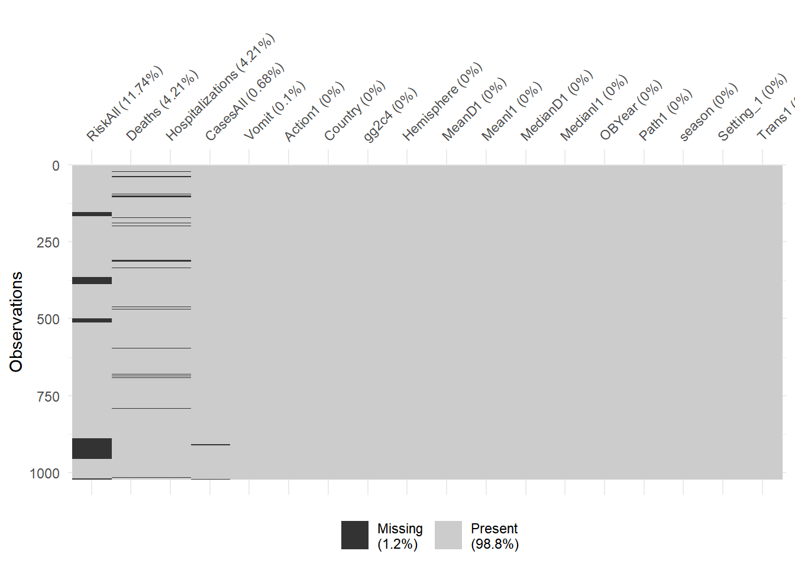
Looks like we have again some missing in Hospitalization and Deaths, and some more in RiskAll. Since the missing is not excessive, and to make our life easier, we’ll drop them for now. Note however the ‘blocks’ of missing values for RiskAll. Given that these outbreaks should be entered fairly randomly into the spreadsheet, it is strange to see the NA show up in such blocks. For a real data analysis, it would be worth looking closer and checking why there is a clustering like that.
# write code to remove any observations with NA
missing_vars_gone <- na.omit(picked_variables)
vis_miss(missing_vars_gone, sort_miss=TRUE)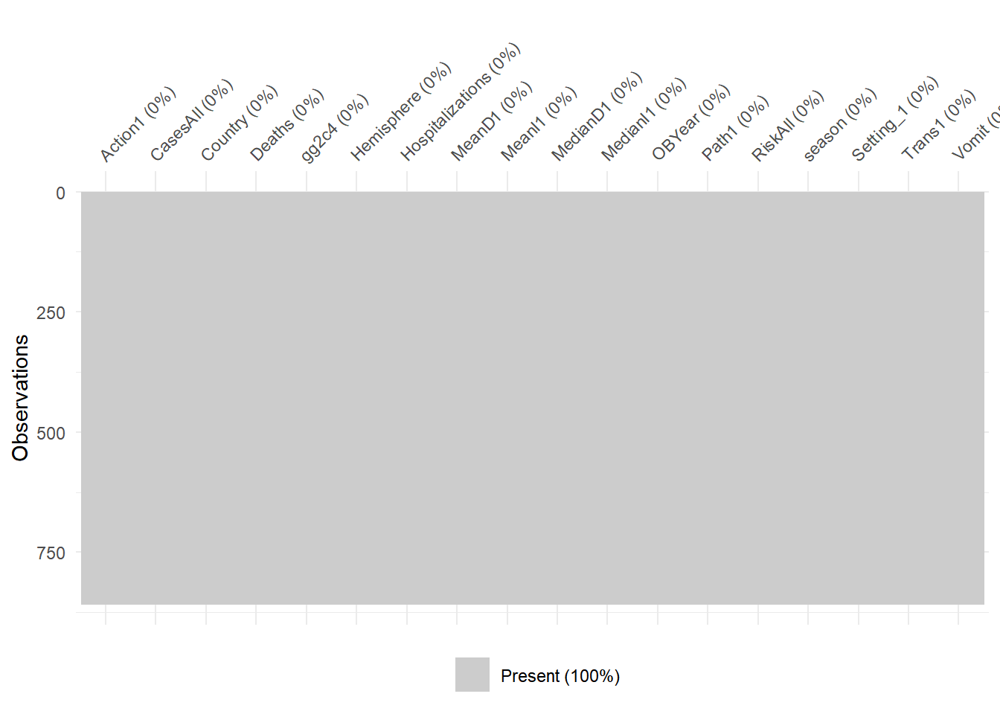
Let’s make sure everything has the right format (numeric/integer/factor). Adjust/recode variables as needed. You will likely find that as you convert OBYear to numeric, something doesn’t quite work. Take a look. Fix by removing the observation with the troublesome entry, then convert to numeric. Finally, remove the observations that have 0 as OByear - there are more than 1 now.
#write code that cleans OBYear, convert it to numeric. Remove observations with OBYear = 0.
#also convert any other variables as needed
vis_dat(missing_vars_gone)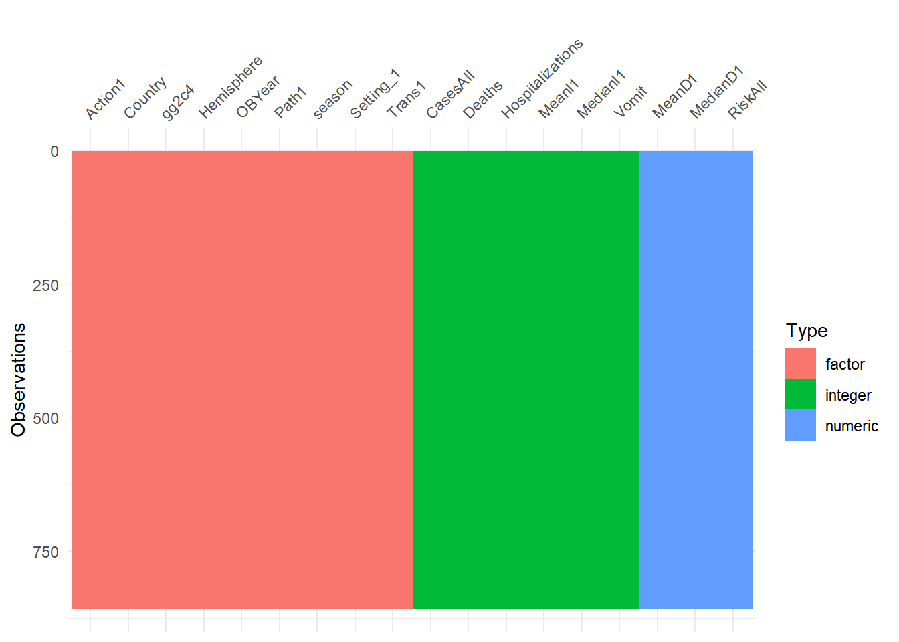
## 'data.frame': 858 obs. of 18 variables:
## $ Action1 : Factor w/ 4 levels "No","Unknown",..: 3 3 3 3 3 3 3 3 3 4 ...
## $ CasesAll : int 15 65 27 4 15 6 40 10 116 45 ...
## $ Country : Factor w/ 22 levels "Australia","Austria",..: 12 22 17 17 17 17 17 17 17 22 ...
## $ Deaths : int 0 0 0 0 0 0 0 0 0 0 ...
## $ gg2c4 : Factor w/ 2 levels "No","Yes": 2 1 2 1 2 1 1 1 2 1 ...
## $ Hemisphere : Factor w/ 3 levels "Northern","Southern",..: 1 1 1 1 1 1 1 1 1 1 ...
## $ Hospitalizations: int 0 0 0 0 0 0 0 0 5 10 ...
## $ MeanD1 : num 0 0 0 0 0 0 0 0 0 0 ...
## $ MeanI1 : int 0 0 0 0 0 0 0 0 0 0 ...
## $ MedianD1 : num 0 36 0 0 0 0 0 0 0 48 ...
## $ MedianI1 : int 0 37 0 0 0 0 0 0 0 31 ...
## $ OBYear : Factor w/ 23 levels "0","1983","1990",..: 11 10 19 19 19 19 19 19 17 5 ...
## $ Path1 : Factor w/ 4 levels "No","Unknown",..: 1 1 3 3 3 3 3 3 1 3 ...
## $ RiskAll : num 0 108 130 4 25 ...
## $ season : Factor w/ 5 levels "","Fall","Spring",..: 2 2 2 2 2 2 2 2 2 2 ...
## $ Setting_1 : Factor w/ 388 levels "\tPsychiatric Care Center adjoined",..: 121 32 39 310 39 352 39 310 201 3 ...
## $ Trans1 : Factor w/ 6 levels "Environmental",..: 5 2 2 2 2 2 2 2 5 2 ...
## $ Vomit : int 1 1 1 1 1 1 1 1 1 1 ...
## - attr(*, "na.action")= 'omit' Named int 20 35 37 38 86 93 98 99 100 101 ...
## ..- attr(*, "names")= chr "20" "35" "37" "38" ...removed_0OBYear <- subset(missing_vars_gone, OBYear != "0")
removed_0OBYear <- droplevels(removed_0OBYear)
str(removed_0OBYear)## 'data.frame': 852 obs. of 18 variables:
## $ Action1 : Factor w/ 4 levels "No","Unknown",..: 3 3 3 3 3 3 3 3 3 4 ...
## $ CasesAll : int 15 65 27 4 15 6 40 10 116 45 ...
## $ Country : Factor w/ 5 levels "Japan","Multiple",..: 1 5 3 3 3 3 3 3 3 5 ...
## $ Deaths : int 0 0 0 0 0 0 0 0 0 0 ...
## $ gg2c4 : Factor w/ 2 levels "No","Yes": 2 1 2 1 2 1 1 1 2 1 ...
## $ Hemisphere : Factor w/ 3 levels "Northern","Southern",..: 1 1 1 1 1 1 1 1 1 1 ...
## $ Hospitalizations: int 0 0 0 0 0 0 0 0 5 10 ...
## $ MeanD1 : num 0 0 0 0 0 0 0 0 0 0 ...
## $ MeanI1 : int 0 0 0 0 0 0 0 0 0 0 ...
## $ MedianD1 : num 0 36 0 0 0 0 0 0 0 48 ...
## $ MedianI1 : int 0 37 0 0 0 0 0 0 0 31 ...
## $ OBYear : Factor w/ 21 levels "1983","1990",..: 10 9 17 17 17 17 17 17 15 4 ...
## $ Path1 : Factor w/ 4 levels "No","Unknown",..: 1 1 3 3 3 3 3 3 1 3 ...
## $ RiskAll : num 0 108 130 4 25 ...
## $ season : Factor w/ 5 levels "","Fall","Spring",..: 2 2 2 2 2 2 2 2 2 2 ...
## $ Setting_1 : Factor w/ 331 levels "\tPsychiatric Care Center adjoined",..: 96 25 29 262 29 300 29 262 169 3 ...
## $ Trans1 : Factor w/ 6 levels "Environmental",..: 5 2 2 2 2 2 2 2 5 2 ...
## $ Vomit : int 1 1 1 1 1 1 1 1 1 1 ...year_as_numeric <- as.numeric(as.character(removed_0OBYear$OBYear))
removed_0OBYear$OBYear <- year_as_numeric
str(removed_0OBYear)## 'data.frame': 852 obs. of 18 variables:
## $ Action1 : Factor w/ 4 levels "No","Unknown",..: 3 3 3 3 3 3 3 3 3 4 ...
## $ CasesAll : int 15 65 27 4 15 6 40 10 116 45 ...
## $ Country : Factor w/ 5 levels "Japan","Multiple",..: 1 5 3 3 3 3 3 3 3 5 ...
## $ Deaths : int 0 0 0 0 0 0 0 0 0 0 ...
## $ gg2c4 : Factor w/ 2 levels "No","Yes": 2 1 2 1 2 1 1 1 2 1 ...
## $ Hemisphere : Factor w/ 3 levels "Northern","Southern",..: 1 1 1 1 1 1 1 1 1 1 ...
## $ Hospitalizations: int 0 0 0 0 0 0 0 0 5 10 ...
## $ MeanD1 : num 0 0 0 0 0 0 0 0 0 0 ...
## $ MeanI1 : int 0 0 0 0 0 0 0 0 0 0 ...
## $ MedianD1 : num 0 36 0 0 0 0 0 0 0 48 ...
## $ MedianI1 : int 0 37 0 0 0 0 0 0 0 31 ...
## $ OBYear : num 1999 1998 2006 2006 2006 ...
## $ Path1 : Factor w/ 4 levels "No","Unknown",..: 1 1 3 3 3 3 3 3 1 3 ...
## $ RiskAll : num 0 108 130 4 25 ...
## $ season : Factor w/ 5 levels "","Fall","Spring",..: 2 2 2 2 2 2 2 2 2 2 ...
## $ Setting_1 : Factor w/ 331 levels "\tPsychiatric Care Center adjoined",..: 96 25 29 262 29 300 29 262 169 3 ...
## $ Trans1 : Factor w/ 6 levels "Environmental",..: 5 2 2 2 2 2 2 2 5 2 ...
## $ Vomit : int 1 1 1 1 1 1 1 1 1 1 ...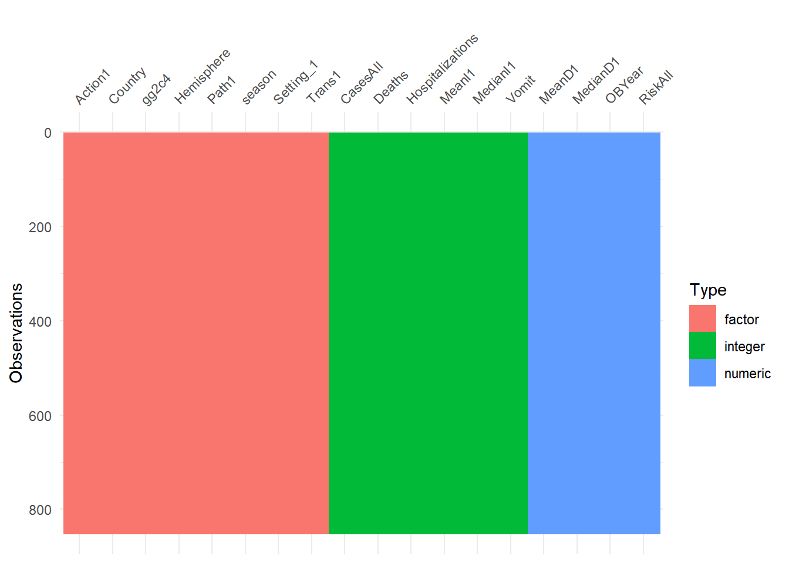
Next, we remove the Unspecified entry in Hemisphere and recode Action1 and Path1 as described in the Data Analysis script, i.e. from Unknown to Unspecified. Also do the same grouping into just Restaurant and Other with the Setting_1 variable. Again, remember that there are restaurant and Restaurant values, so you need to fix that too.
# write code that performs the actions described above
# at the end, use the droplevels() command to remove empty factor levels
# remove the unspecified entry and the level unspecified for hemisphere
#glimpse(removed_0OBYear$Hemisphere)
removeHemisphere <- removed_0OBYear %>%
subset(Hemisphere != "Unspecified")
removeHemisphere <- removeHemisphere %>%
droplevels(removeHemisphere$Hemisphere)
# checking removeHemisphere let me see I only lost the one observation that was Unspecified for Hemisphere
# look at responses and levels in Action variable
#glimpse(removeHemisphere$Action1)
combineAction1 <- removeHemisphere %>%
mutate(Action1= fct_recode(Action1, "Unspecified" = "Unknown"))
#glimpse(combineAction1$Path1)
combinePath1 <- combineAction1 %>%
mutate(Path1= fct_recode(Path1, "Unspecified" = "Unknown"))
#here is what worked for me to label the restaurants
restaurant_settings <- subset(combinePath1, Setting_1 == "restaurant" | Setting_1 == "Restaurant")
other_settings <- subset(combinePath1, Setting_1 != "restaurant" & Setting_1 != "Restaurant")
restaurant_settings_edit <- restaurant_settings %>%
mutate(Setting = "Restaurant") %>%
select(-c(Setting_1))
other_settings_edit <- other_settings %>%
mutate(Setting = "Other") %>%
select(-c(Setting_1))
#here I incorporated gtools (library loaded at top) to use smartbind and paste both of my subsets together. It appears to have worked, as I am back with 579 rows again. Let's glance and see...
further_cleaning <- smartbind(restaurant_settings_edit,other_settings_edit)
#str(further_cleaning)
further_cleaning$Setting <- as.factor(further_cleaning$Setting)
str(further_cleaning)## 'data.frame': 851 obs. of 18 variables:
## $ Action1 : Factor w/ 3 levels "No","Unspecified",..: 2 2 2 3 3 2 2 2 2 2 ...
## $ CasesAll : int 4 10 19 683 51 33 9 70 35 40 ...
## $ Country : Factor w/ 5 levels "Japan","Multiple",..: 3 3 1 1 3 1 1 3 3 3 ...
## $ Deaths : int 0 0 0 0 0 0 0 0 0 0 ...
## $ gg2c4 : Factor w/ 2 levels "No","Yes": 1 1 1 1 1 1 2 2 1 2 ...
## $ Hemisphere : Factor w/ 2 levels "Northern","Southern": 1 1 1 1 1 1 1 1 1 1 ...
## $ Hospitalizations: int 0 0 0 0 0 0 0 0 0 0 ...
## $ MeanD1 : num 0 0 0 0 43 0 0 0 0 0 ...
## $ MeanI1 : int 0 0 0 31 32 0 0 0 0 0 ...
## $ MedianD1 : num 0 0 0 0 0 0 0 0 0 0 ...
## $ MedianI1 : int 0 0 0 0 33 0 0 0 0 0 ...
## $ OBYear : num 2006 2006 2003 2003 2000 ...
## $ Path1 : Factor w/ 3 levels "No","Unspecified",..: 2 2 2 3 1 2 2 2 2 2 ...
## $ RiskAll : num 4 12 58 1492 72 ...
## $ season : Factor w/ 5 levels "","Fall","Spring",..: 2 2 2 2 2 2 2 2 2 2 ...
## $ Trans1 : Factor w/ 6 levels "Environmental",..: 2 2 2 2 2 2 2 2 2 2 ...
## $ Vomit : int 1 1 0 1 1 1 0 0 0 0 ...
## $ Setting : Factor w/ 2 levels "Other","Restaurant": 2 2 2 2 2 2 2 2 2 2 ...Data visualization
Next, let’s create a few plots showing the outcome and the predictors. For the continuous predictors, I suggest scatter/box/violinplots with the outcome on the x-axis.
#write code that produces plots showing our outcome of interest on the x-axis and each numeric predictor on the y-axis.
#you can use the facet_wrap functionality in ggplot for it, or do it some other way.
p1 <- ggplot(further_cleaning, aes(gg2c4, OBYear)) + geom_boxplot()
p2 <- ggplot(further_cleaning, aes(gg2c4, RiskAll)) + geom_point()
p3 <- ggplot(further_cleaning, aes(gg2c4, MeanD1)) + geom_violin()
p4 <- ggplot(further_cleaning, aes(gg2c4, MedianD1)) + geom_violin()
grid.arrange(p1, p2, p3, p4, nrow=2, ncol=2)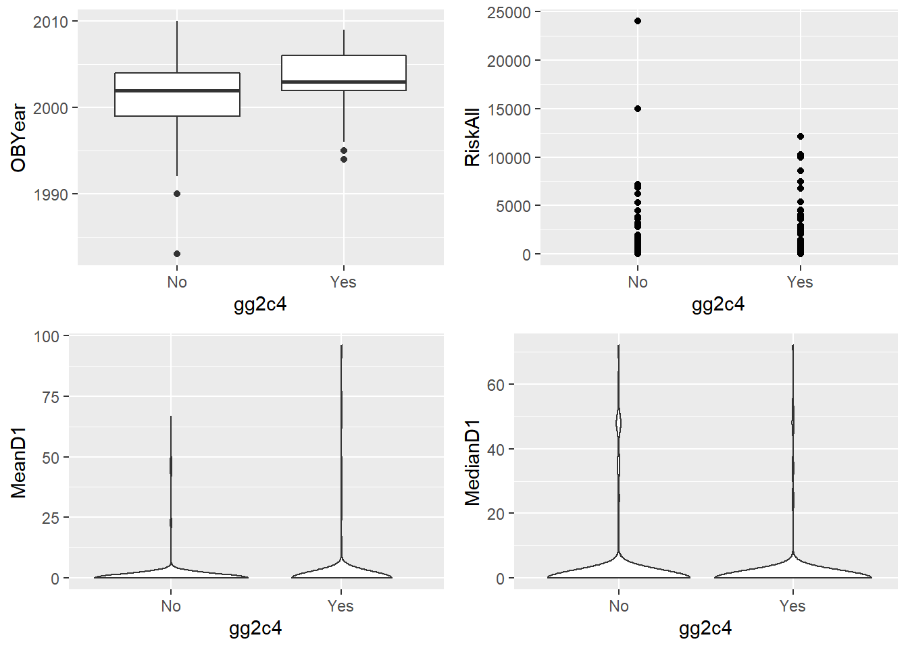
Things look ok, apart from the skew in the predictors we discussed previously.
Next, let’s create plots for the categorical variabless. You can use for instance geom_count for it, or some other representation. If you prefer lots of tables, that’s ok too.
#write code that produces plots or tables showing our outcome of interest and each categorical predictor.
p5 <- ggplot(further_cleaning, aes(gg2c4, Action1)) + geom_count()
p6 <- ggplot(further_cleaning, aes(gg2c4, Path1)) + geom_count()
p7 <- ggplot(further_cleaning, aes(gg2c4, Setting)) + geom_count()
p8 <- ggplot(further_cleaning, aes(gg2c4, Hemisphere)) + geom_count()
p9 <- ggplot(further_cleaning, aes(gg2c4, Country)) + geom_count()
p10 <- ggplot(further_cleaning, aes(gg2c4, Trans1)) + geom_count()
p11 <- ggplot(further_cleaning, aes(gg2c4, season)) + geom_count()
grid.arrange(p5, p6, p7, p8, p9, p10, p11, ncol=3, nrow=3, widths=c(1,1,1.15))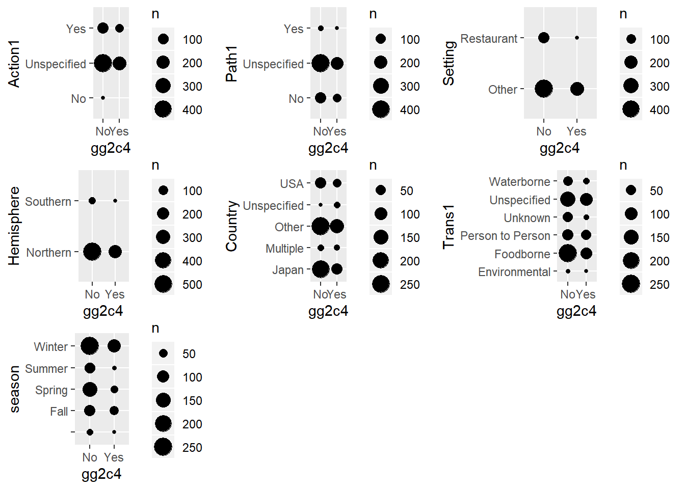
You should see from plots or tables that some of the categories are small, e.g. for Action1, the “No” category is very small. Very few entries for a given factor create problems during cross-validation (since we can’t have a level show up in the holdout if it wasn’t part of the fitting set). So let’s look at those factor variables a bit closer and fix as needed.
## Action1 CasesAll Country Deaths
## No : 1 Min. : 1.0 Japan :316 Min. :0.0000
## Unspecified:678 1st Qu.: 9.0 Multiple : 16 1st Qu.:0.0000
## Yes :172 Median : 25.0 Other :409 Median :0.0000
## Mean : 127.8 Unspecified: 12 Mean :0.0517
## 3rd Qu.: 65.0 USA : 98 3rd Qu.:0.0000
## Max. :32150.0 Max. :9.0000
## gg2c4 Hemisphere Hospitalizations MeanD1
## No :592 Northern:798 Min. : 0.0000 Min. : 0.000
## Yes:259 Southern: 53 1st Qu.: 0.0000 1st Qu.: 0.000
## Median : 0.0000 Median : 0.000
## Mean : 0.5511 Mean : 1.309
## 3rd Qu.: 0.0000 3rd Qu.: 0.000
## Max. :99.0000 Max. :96.000
## MeanI1 MedianD1 MedianI1 OBYear
## Min. : 0.0000 Min. : 0.000 Min. : 0.00 Min. :1983
## 1st Qu.: 0.0000 1st Qu.: 0.000 1st Qu.: 0.00 1st Qu.:1999
## Median : 0.0000 Median : 0.000 Median : 0.00 Median :2002
## Mean : 0.7156 Mean : 2.309 Mean : 1.72 Mean :2002
## 3rd Qu.: 0.0000 3rd Qu.: 0.000 3rd Qu.: 0.00 3rd Qu.:2005
## Max. :48.0000 Max. :72.000 Max. :65.00 Max. :2010
## Path1 RiskAll season Trans1
## No :196 Min. : 0.0 : 56 Environmental : 11
## Unspecified:615 1st Qu.: 0.0 Fall :135 Foodborne :338
## Yes : 40 Median : 22.0 Spring:187 Person to Person:119
## Mean : 359.3 Summer:103 Unknown : 61
## 3rd Qu.: 112.0 Winter:370 Unspecified :261
## Max. :24000.0 Waterborne : 61
## Vomit Setting
## Min. :0.00 Other :692
## 1st Qu.:0.00 Restaurant:159
## Median :0.00
## Mean :0.49
## 3rd Qu.:1.00
## Max. :1.00##
## No Unspecified Yes
## 1 678 172##
## Japan Multiple Other Unspecified USA
## 316 16 409 12 98##
## Environmental Foodborne Person to Person Unknown
## 11 338 119 61
## Unspecified Waterborne
## 261 61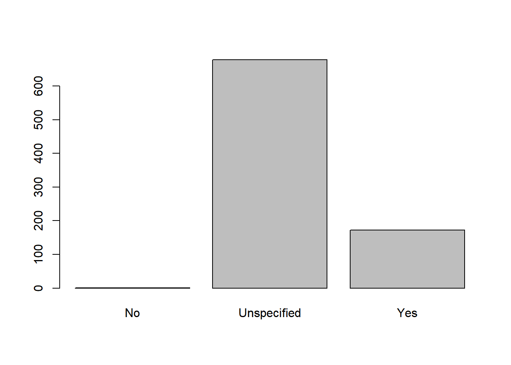
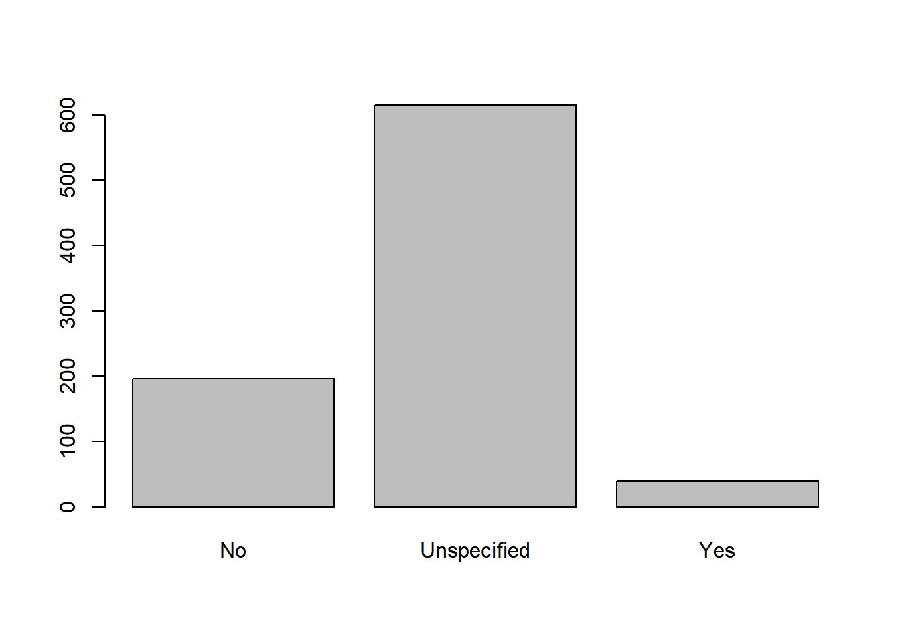
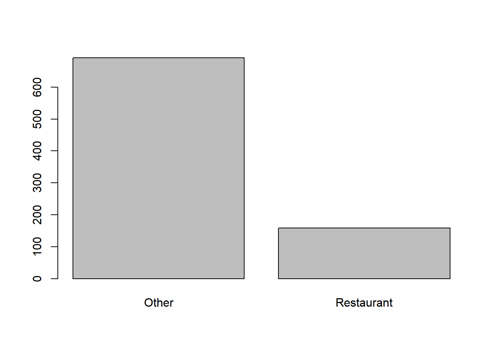
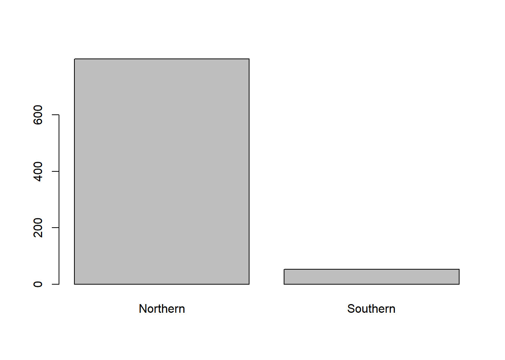
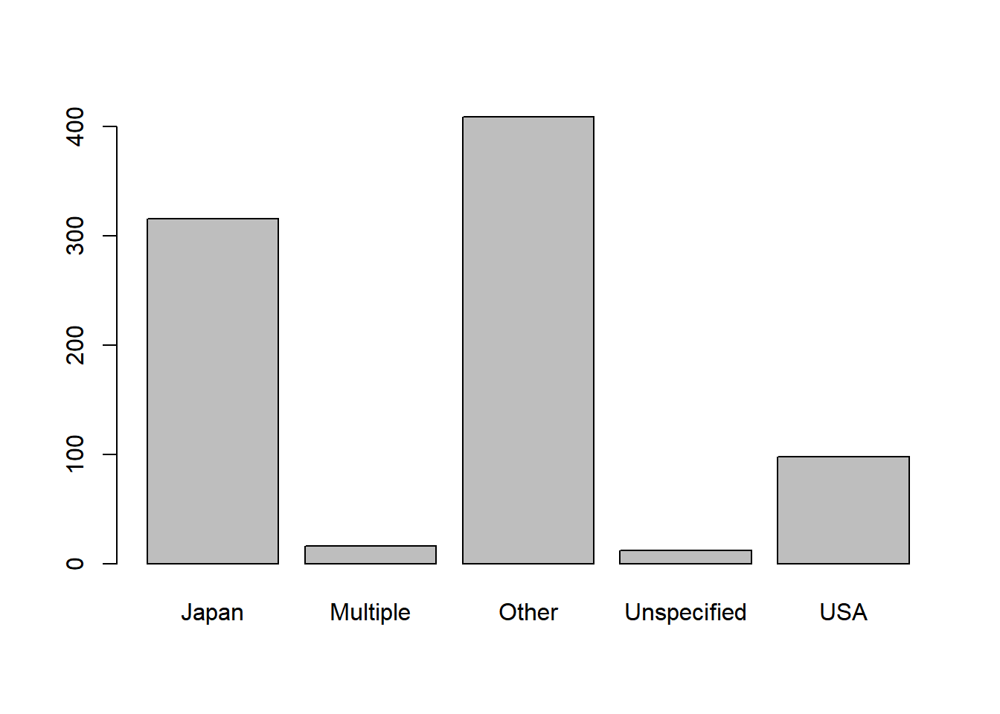
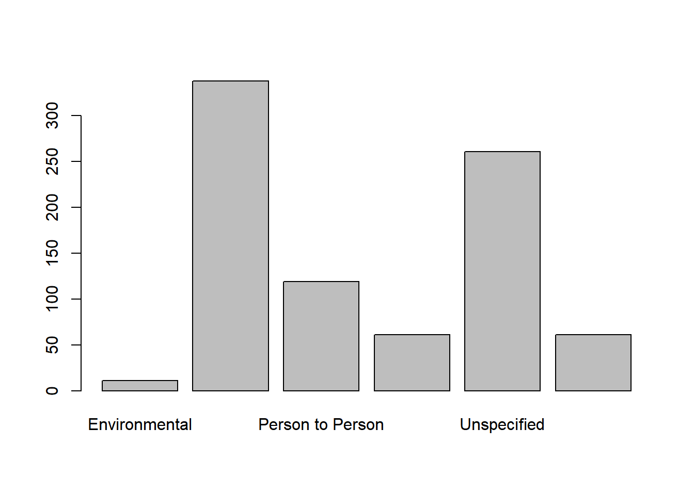
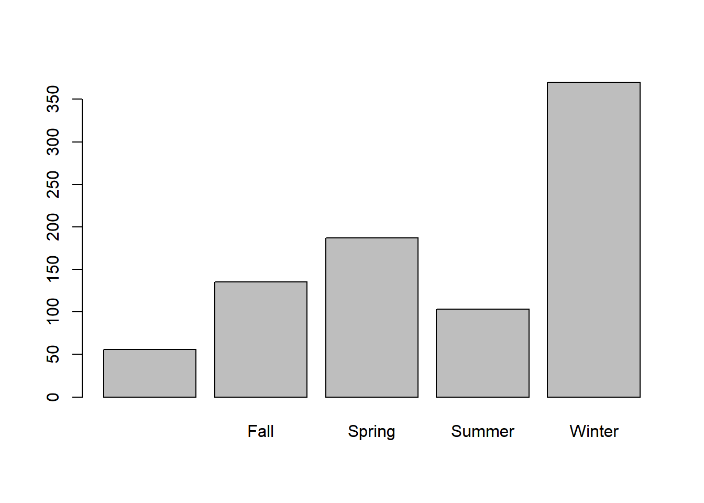
You should see from your explorations above that there is only a single entry for No in Action1, and small entries for Multiple and Unspecified in Country and Environmental in Trans1. The single No should be fixed, the other somewhat small groupings might be ok. It depends on scientific rationale and method of analysis if you should modify/group those or not. We’ll do that.
Change things as follows: Remove the observation for which action is No, combine Countries into 3 groups Japan/USA/Other, and since I don’t even know what biologically the difference is between Environmental and Waterborne transmission (seems the same route to me based on my norovirus knowledge), we’ll move the Waterborne into the environmental. Finally, I noticed there is a blank category for season. That likely means it wasn’t stated in the paper. Let’s recode that as Unknown. Finally, re-order data such that the outcome is the first column and again remove empty factor levels. Then look at your resulting data frame.
## No Unspecified Yes
## 1 678 172#Get rid of the No observation
removed_Action1No <- further_cleaning %>%
subset(Action1 != "No")
removed_Action1No <- removed_Action1No %>%
droplevels(removed_Action1No$Action1)
summary(removed_Action1No$Action1)## Unspecified Yes
## 678 172## Japan Multiple Other Unspecified USA
## 316 16 409 11 98fixMultiple<- removed_Action1No %>%
mutate(Country= fct_recode(Country, "Other" = "Multiple"))
fixCountryFactors <- fixMultiple %>%
mutate(Country= fct_recode(Country, "Other" = "Unspecified"))
#changed answers with multiple or unspecified in country to other. There is surely a cleaner way to do this.
summary(fixCountryFactors$Country)## Japan Other USA
## 316 436 98## Environmental Foodborne Person to Person Unknown
## 11 338 119 61
## Unspecified Waterborne
## 260 61#move waterborne into environmental
mergeWaterborne_environmental <- fixCountryFactors %>%
mutate(Trans1= fct_recode(Trans1, "Environmental" = "Waterborne"))
summary(mergeWaterborne_environmental$Trans1)## Environmental Foodborne Person to Person Unknown
## 72 338 119 61
## Unspecified
## 260## Fall Spring Summer Winter
## 55 135 187 103 370#factor level that is blank labeled unknown
unknown_season <- mergeWaterborne_environmental %>%
mutate(season= fct_recode(season, "Unknown" = ""))
summary(unknown_season$season)## Unknown Fall Spring Summer Winter
## 55 135 187 103 370## gg2c4 Action1 CasesAll Country Deaths
## No :591 Unspecified:678 Min. : 1 Japan:316 Min. :0.00000
## Yes:259 Yes :172 1st Qu.: 9 Other:436 1st Qu.:0.00000
## Median : 25 USA : 98 Median :0.00000
## Mean : 128 Mean :0.05176
## 3rd Qu.: 65 3rd Qu.:0.00000
## Max. :32150 Max. :9.00000
## Hemisphere Hospitalizations MeanD1 MeanI1
## Northern:797 Min. : 0.0000 Min. : 0.000 Min. : 0.0000
## Southern: 53 1st Qu.: 0.0000 1st Qu.: 0.000 1st Qu.: 0.0000
## Median : 0.0000 Median : 0.000 Median : 0.0000
## Mean : 0.5518 Mean : 1.311 Mean : 0.7165
## 3rd Qu.: 0.0000 3rd Qu.: 0.000 3rd Qu.: 0.0000
## Max. :99.0000 Max. :96.000 Max. :48.0000
## MedianD1 MedianI1 OBYear Path1
## Min. : 0.000 Min. : 0.000 Min. :1983 No :196
## 1st Qu.: 0.000 1st Qu.: 0.000 1st Qu.:1999 Unspecified:614
## Median : 0.000 Median : 0.000 Median :2002 Yes : 40
## Mean : 2.312 Mean : 1.722 Mean :2002
## 3rd Qu.: 0.000 3rd Qu.: 0.000 3rd Qu.:2005
## Max. :72.000 Max. :65.000 Max. :2010
## RiskAll season Trans1 Vomit
## Min. : 0.0 Unknown: 55 Environmental : 72 Min. :0.0000
## 1st Qu.: 0.0 Fall :135 Foodborne :338 1st Qu.:0.0000
## Median : 22.0 Spring :187 Person to Person:119 Median :0.0000
## Mean : 359.8 Summer :103 Unknown : 61 Mean :0.4894
## 3rd Qu.: 112.0 Winter :370 Unspecified :260 3rd Qu.:1.0000
## Max. :24000.0 Max. :1.0000
## Setting
## Other :691
## Restaurant:159
##
##
##
## ## gg2c4 Action1 CasesAll Country Deaths Hemisphere Hospitalizations
## 1 No Unspecified 4 Other 0 Northern 0
## 2 No Unspecified 10 Other 0 Northern 0
## 3 No Unspecified 19 Japan 0 Northern 0
## 4 No Yes 683 Japan 0 Northern 0
## 5 No Yes 51 Other 0 Northern 0
## 6 No Unspecified 33 Japan 0 Northern 0
## 7 Yes Unspecified 9 Japan 0 Northern 0
## 8 Yes Unspecified 70 Other 0 Northern 0
## 9 No Unspecified 35 Other 0 Northern 0
## 10 Yes Unspecified 40 Other 0 Northern 0
## 11 No Unspecified 15 Other 0 Northern 0
## 12 No Unspecified 20 Other 0 Northern 0
## 13 No Unspecified 50 Other 0 Northern 0
## 14 No Unspecified 16 Other 0 Northern 0
## 15 Yes Unspecified 5 Other 0 Northern 0
## 16 Yes Unspecified 200 Other 0 Northern 0
## 17 Yes Unspecified 24 Other 0 Northern 0
## 18 No Unspecified 9 Other 0 Northern 0
## 19 No Unspecified 21 Other 0 Northern 0
## 20 No Unspecified 16 Other 0 Southern 0
## 21 No Yes 3 Other 0 Northern 0
## 22 Yes Unspecified 50 USA 0 Northern 0
## 23 No Unspecified 32 Other 0 Northern 0
## 24 Yes Unspecified 184 USA 0 Northern 0
## 25 No Unspecified 7 Japan 0 Northern 0
## 26 No Unspecified 32 Japan 0 Northern 0
## 27 No Unspecified 48 Japan 0 Northern 0
## 28 No Unspecified 12 Japan 0 Northern 0
## 29 No Unspecified 2 Japan 0 Northern 0
## 30 No Unspecified 3 Japan 0 Northern 0
## 31 No Unspecified 18 Japan 0 Northern 0
## 32 No Unspecified 14 Japan 0 Northern 0
## 33 No Unspecified 8 Japan 0 Northern 0
## 34 No Unspecified 9 Japan 0 Northern 0
## 35 No Unspecified 3 Japan 0 Northern 0
## 36 No Unspecified 2 Japan 0 Northern 0
## 37 No Unspecified 29 Japan 0 Northern 0
## 38 No Unspecified 2 Japan 0 Northern 0
## 39 No Unspecified 40 Japan 0 Northern 0
## 40 No Unspecified 6 Japan 0 Northern 0
## 41 No Unspecified 72 Japan 0 Northern 0
## 42 No Unspecified 4 Japan 0 Northern 0
## 43 No Unspecified 5 Japan 0 Northern 0
## 44 No Unspecified 6 Japan 0 Northern 0
## 45 No Unspecified 7 Japan 0 Northern 0
## 46 Yes Unspecified 14 Japan 0 Northern 0
## 47 No Unspecified 15 Japan 0 Northern 0
## 48 No Unspecified 3 Japan 0 Northern 0
## 49 No Unspecified 5 Japan 0 Northern 0
## 50 No Unspecified 2 Japan 0 Northern 0
## 51 No Unspecified 41 Other 0 Northern 0
## 52 No Unspecified 15 Other 0 Northern 0
## 53 No Unspecified 10 Other 0 Northern 0
## 54 No Unspecified 30 Other 0 Northern 0
## 55 No Yes 9 Other 0 Northern 0
## 56 No Yes 29 Other 0 Northern 0
## 57 Yes Unspecified 12 Japan 0 Northern 0
## 58 No Unspecified 11 Japan 0 Northern 0
## 59 No Unspecified 7 Other 0 Northern 0
## 60 No Yes 237 USA 0 Northern 0
## 61 No Yes 433 USA 0 Northern 0
## 62 No Unspecified 3 Other 0 Northern 0
## 63 No Yes 31 Other 0 Northern 0
## 64 No Yes 40 Other 0 Northern 0
## 65 Yes Unspecified 5 Japan 0 Northern 0
## 66 No Unspecified 60 Other 0 Northern 0
## 67 Yes Unspecified 54 Other 0 Northern 0
## 68 No Unspecified 350 Other 0 Northern 0
## 69 No Unspecified 35 Other 0 Northern 0
## 70 No Unspecified 18 Other 0 Northern 0
## 71 No Unspecified 42 Other 0 Northern 0
## 72 No Unspecified 124 Japan 0 Northern 0
## 73 Yes Unspecified 2 Other 0 Northern 0
## 74 No Unspecified 11 Other 0 Northern 0
## 75 No Unspecified 14 Other 0 Northern 0
## 76 No Unspecified 2 Other 0 Northern 0
## 77 No Unspecified 36 USA 0 Northern 1
## 78 No Yes 387 USA 0 Northern 0
## 79 No Unspecified 3 Japan 0 Northern 0
## 80 No Unspecified 34 Japan 0 Northern 0
## 81 No Unspecified 13 Japan 0 Northern 0
## 82 No Unspecified 6 Japan 0 Northern 0
## 83 No Unspecified 8 Japan 0 Northern 0
## 84 No Unspecified 11 Japan 0 Northern 0
## 85 No Unspecified 19 Japan 0 Northern 0
## 86 No Unspecified 10 Japan 0 Northern 0
## 87 Yes Unspecified 52 Japan 0 Northern 0
## 88 No Unspecified 4 Japan 0 Northern 0
## 89 No Unspecified 6 Japan 0 Northern 0
## 90 No Unspecified 6 Japan 0 Northern 0
## 91 No Unspecified 34 Japan 0 Northern 0
## 92 Yes Unspecified 15 Japan 0 Northern 0
## 93 No Unspecified 38 Japan 0 Northern 0
## 94 No Unspecified 11 Japan 0 Northern 0
## 95 No Unspecified 6 Japan 0 Northern 0
## 96 No Unspecified 15 Japan 0 Northern 0
## 97 No Unspecified 4 Japan 0 Northern 0
## 98 No Unspecified 20 Japan 0 Northern 0
## 99 No Unspecified 3 Japan 0 Northern 0
## 100 No Unspecified 4 Japan 0 Northern 0
## 101 No Unspecified 2 Japan 0 Northern 0
## 102 No Unspecified 6 Japan 0 Northern 0
## 103 No Unspecified 55 Japan 0 Northern 0
## 104 No Unspecified 7 Japan 0 Northern 0
## 105 No Unspecified 32 Japan 0 Northern 0
## 106 No Unspecified 3 Japan 0 Northern 0
## 107 No Unspecified 57 Japan 0 Northern 0
## 108 No Unspecified 6 Japan 0 Northern 0
## 109 No Unspecified 8 Japan 0 Northern 0
## 110 No Unspecified 4 Japan 0 Northern 0
## 111 No Unspecified 10 Japan 0 Northern 0
## 112 No Unspecified 19 Japan 0 Northern 0
## 113 No Unspecified 9 Japan 0 Northern 0
## 114 No Unspecified 19 Japan 0 Northern 0
## 115 No Unspecified 3 Japan 0 Northern 0
## 116 No Unspecified 2 Japan 0 Northern 0
## 117 No Unspecified 7 Japan 0 Northern 0
## 118 No Unspecified 11 Japan 0 Northern 0
## 119 Yes Unspecified 7 Japan 0 Northern 0
## 120 No Unspecified 13 Japan 0 Northern 0
## 121 Yes Unspecified 2 Japan 0 Northern 0
## 122 No Unspecified 2 Japan 0 Northern 0
## 123 No Unspecified 7 Japan 0 Northern 0
## 124 Yes Unspecified 32 Japan 0 Northern 0
## 125 No Unspecified 12 Japan 0 Northern 0
## 126 Yes Unspecified 13 Japan 0 Northern 0
## 127 Yes Unspecified 4 Japan 0 Northern 0
## 128 No Unspecified 11 Japan 0 Northern 0
## 129 No Unspecified 15 Japan 0 Northern 0
## 130 Yes Unspecified 17 Japan 0 Northern 0
## 131 Yes Unspecified 22 Japan 0 Northern 0
## 132 No Unspecified 12 Japan 0 Northern 0
## 133 No Unspecified 12 Japan 0 Northern 0
## 134 No Unspecified 20 Japan 0 Northern 0
## 135 No Unspecified 4 Japan 0 Northern 0
## 136 No Unspecified 2 Japan 0 Northern 0
## 137 No Unspecified 103 Other 0 Northern 0
## 138 Yes Unspecified 10 Other 0 Northern 0
## 139 No Unspecified 20 Other 0 Northern 0
## 140 No Unspecified 74 Other 0 Northern 0
## 141 No Unspecified 120 Other 0 Northern 0
## 142 No Unspecified 6 Other 0 Northern 0
## 143 No Unspecified 6 Other 0 Northern 0
## 144 No Unspecified 48 Other 0 Northern 0
## 145 No Unspecified 35 Other 0 Northern 0
## 146 No Unspecified 30 Other 0 Northern 0
## 147 Yes Unspecified 29 Other 0 Southern 0
## 148 No Unspecified 16 Japan 0 Northern 0
## 149 No Unspecified 39 Japan 0 Northern 0
## 150 No Unspecified 3 Japan 0 Northern 0
## 151 No Unspecified 5 Japan 0 Northern 0
## 152 Yes Unspecified 19 Japan 0 Northern 0
## 153 No Unspecified 30 Other 0 Northern 0
## 154 No Unspecified 8 Japan 0 Northern 0
## 155 No Yes 2 Other 0 Southern 0
## 156 Yes Unspecified 9 Japan 0 Northern 0
## 157 No Unspecified 18 Japan 0 Northern 0
## 158 No Unspecified 47 Japan 0 Northern 0
## 159 No Unspecified 21 Other 0 Northern 0
## 160 Yes Unspecified 15 Japan 0 Northern 0
## 161 No Unspecified 65 USA 0 Northern 0
## 162 Yes Unspecified 27 Other 0 Northern 0
## 163 Yes Unspecified 15 Other 0 Northern 0
## 164 No Unspecified 6 Other 0 Northern 0
## 165 No Unspecified 40 Other 0 Northern 0
## 166 Yes Unspecified 116 Other 0 Northern 5
## 167 No Yes 45 USA 0 Northern 10
## 168 No Yes 184 USA 0 Northern 3
## 169 No Unspecified 191 USA 0 Northern 0
## 170 No Unspecified 19 USA 0 Northern 0
## 171 No Yes 704 USA 0 Northern 0
## 172 No Yes 369 Other 0 Northern 0
## 173 No Yes 131 Other 0 Northern 0
## 174 No Yes 492 Other 0 Northern 0
## 175 No Yes 1169 USA 0 Northern 0
## 176 Yes Yes 32 USA 0 Northern 0
## 177 Yes Unspecified 20 Other 0 Northern 0
## 178 Yes Unspecified 14 Other 0 Northern 0
## 179 Yes Unspecified 14 Other 0 Northern 0
## 180 Yes Unspecified 22 Other 0 Northern 0
## 181 Yes Unspecified 15 Other 0 Northern 0
## 182 Yes Unspecified 25 Other 0 Northern 0
## 183 Yes Unspecified 17 Other 0 Northern 0
## 184 Yes Unspecified 13 Other 0 Northern 0
## 185 Yes Unspecified 22 Other 0 Northern 0
## 186 Yes Unspecified 11 Other 0 Northern 0
## 187 Yes Unspecified 14 Other 0 Northern 0
## 188 Yes Unspecified 25 Other 0 Northern 0
## 189 Yes Unspecified 14 Other 0 Northern 0
## 190 No Yes 146 USA 0 Northern 1
## 191 Yes Unspecified 80 Other 0 Northern 0
## 192 No Unspecified 36 Other 0 Southern 0
## 193 Yes Unspecified 7 Other 0 Northern 0
## 194 No Yes 44 Other 0 Northern 0
## 195 No Unspecified 57 Japan 0 Northern 0
## 196 No Unspecified 26 Japan 0 Northern 0
## 197 No Unspecified 26 Japan 0 Northern 0
## 198 No Yes 139 Other 0 Northern 0
## 199 No Unspecified 2 Japan 0 Northern 0
## 200 Yes Yes 387 Other 0 Northern 0
## 201 No Unspecified 12 Japan 0 Northern 0
## 202 No Unspecified 3 Japan 0 Northern 0
## 203 No Unspecified 21 Japan 0 Northern 0
## 204 Yes Unspecified 12 Japan 0 Northern 0
## 205 No Unspecified 50 Japan 0 Northern 0
## 206 No Unspecified 19 Japan 0 Northern 0
## 207 Yes Unspecified 19 Japan 0 Northern 0
## 208 No Unspecified 19 Japan 0 Northern 0
## 209 No Unspecified 27 USA 0 Northern 0
## 210 No Yes 77 USA 0 Northern 0
## 211 No Unspecified 30 Other 0 Northern 0
## 212 No Yes 120 Other 0 Northern 0
## 213 Yes Yes 77 Other 1 Northern 0
## 214 No Yes 10 USA 0 Northern 0
## 215 No Yes 116 USA 0 Northern 0
## 216 No Yes 24 Other 0 Southern 0
## 217 No Unspecified 22 Other 0 Northern 0
## 218 No Unspecified 50 Other 0 Northern 0
## 219 No Unspecified 110 Other 0 Northern 0
## 220 Yes Unspecified 50 Other 0 Northern 0
## 221 Yes Unspecified 55 Other 0 Northern 0
## 222 Yes Yes 163 Other 0 Northern 0
## 223 No Unspecified 300 Other 0 Northern 0
## 224 No Yes 99 Japan 0 Northern 0
## 225 No Unspecified 25 Other 0 Northern 0
## 226 No Unspecified 35 Other 0 Northern 0
## 227 Yes Unspecified 2 Japan 0 Northern 0
## 228 Yes Unspecified 3 Japan 0 Northern 0
## 229 Yes Unspecified 2 Japan 0 Northern 0
## 230 No Yes 84 USA 0 Northern 0
## 231 Yes Yes 60 Other 0 Northern 0
## 232 No Unspecified 5 Japan 0 Northern 0
## 233 No Unspecified 2 Japan 0 Northern 0
## 234 No Unspecified 51 Japan 0 Northern 0
## 235 No Unspecified 6 Japan 0 Northern 0
## 236 No Unspecified 200 USA 0 Northern 0
## 237 No Unspecified 47 USA 0 Northern 0
## 238 No Unspecified 54 USA 0 Northern 0
## 239 No Unspecified 56 USA 0 Northern 0
## 240 Yes Yes 33 Other 0 Northern 0
## 241 Yes Unspecified 119 Other 4 Northern 1
## 242 No Unspecified 65 Other 0 Southern 0
## 243 Yes Unspecified 11 Other 0 Southern 0
## 244 Yes Unspecified 15 Other 0 Southern 0
## 245 Yes Unspecified 369 Other 0 Northern 0
## 246 No Unspecified 11 Other 0 Northern 0
## 247 Yes Yes 704 Other 0 Northern 0
## 248 Yes Yes 651 Other 0 Northern 0
## 249 Yes Unspecified 131 Other 0 Northern 0
## 250 Yes Unspecified 22 USA 0 Northern 0
## 251 Yes Unspecified 85 USA 0 Northern 0
## 252 Yes Unspecified 7150 USA 0 Northern 0
## 253 Yes Unspecified 126 USA 0 Northern 0
## 254 Yes Unspecified 37 Other 0 Northern 0
## 255 Yes Yes 108 Japan 0 Northern 0
## 256 No Yes 1173 USA 0 Northern 0
## 257 No Yes 413 Other 0 Northern 0
## 258 No Yes 478 USA 0 Northern 0
## 259 No Yes 451 USA 0 Northern 0
## 260 No Yes 156 USA 0 Northern 10
## 261 No Unspecified 8 Other 0 Northern 0
## 262 No Unspecified 8 Other 0 Northern 0
## 263 No Unspecified 13 Other 0 Northern 0
## 264 No Unspecified 14 Other 0 Northern 0
## 265 No Yes 30 Other 0 Northern 0
## 266 Yes Yes 22 USA 0 Northern 2
## 267 No Yes 15 Other 0 Northern 0
## 268 No Yes 46 Other 0 Northern 0
## 269 No Yes 15 Other 0 Northern 0
## 270 No Unspecified 33 Other 0 Northern 0
## 271 Yes Yes 104 Other 4 Northern 0
## 272 No Yes 51 Other 0 Northern 13
## 273 No Unspecified 35 Other 0 Northern 0
## 274 Yes Unspecified 40 Other 0 Northern 0
## 275 No Unspecified 4 Other 0 Northern 0
## 276 No Unspecified 3 Other 0 Northern 0
## 277 No Unspecified 12 Other 0 Northern 0
## 278 Yes Unspecified 19 Other 0 Northern 0
## 279 Yes Unspecified 15 Other 0 Northern 0
## 280 Yes Unspecified 62 Other 0 Northern 0
## 281 Yes Yes 279 Other 5 Northern 25
## 282 No Unspecified 69 Other 0 Southern 0
## 283 No Unspecified 27 Other 0 Southern 0
## 284 No Unspecified 18 Other 0 Southern 0
## 285 No Yes 29 Other 0 Northern 26
## 286 No Yes 23 USA 0 Northern 0
## 287 No Yes 55 USA 0 Northern 0
## 288 No Yes 9 USA 0 Northern 0
## 289 No Yes 28 USA 0 Northern 0
## 290 No Yes 359 Other 0 Northern 0
## 291 No Yes 66 Other 0 Southern 0
## 292 Yes Yes 125 USA 0 Northern 23
## 293 Yes Unspecified 16 Other 0 Northern 0
## 294 Yes Unspecified 12 Other 0 Northern 0
## 295 Yes Unspecified 19 Other 0 Northern 0
## 296 No Unspecified 64 USA 0 Northern 0
## 297 Yes Unspecified 524 Other 1 Northern 0
## 298 Yes Unspecified 69 Other 0 Northern 0
## 299 No Unspecified 2700 USA 0 Northern 8
## 300 No Yes 195 Other 0 Northern 0
## 301 Yes Yes 29 Other 0 Northern 0
## 302 Yes Unspecified 276 Other 0 Northern 0
## 303 Yes Unspecified 57 Other 0 Northern 0
## 304 No Unspecified 29 Japan 0 Northern 0
## 305 Yes Unspecified 139 Japan 0 Northern 0
## 306 Yes Unspecified 25 Japan 0 Northern 0
## 307 No Unspecified 29 Japan 0 Northern 0
## 308 No Unspecified 18 Japan 0 Northern 0
## 309 No Unspecified 26 Japan 0 Northern 0
## 310 No Unspecified 245 USA 0 Northern 0
## 311 No Unspecified 22 Japan 0 Northern 0
## 312 No Unspecified 5 Japan 0 Northern 0
## 313 No Unspecified 4 Japan 0 Northern 0
## 314 No Unspecified 16 Japan 0 Northern 0
## 315 No Unspecified 14 Japan 0 Northern 0
## 316 No Unspecified 5 Japan 0 Northern 0
## 317 No Unspecified 2 Japan 0 Northern 0
## 318 No Unspecified 20 Japan 0 Northern 0
## 319 Yes Unspecified 162 Japan 0 Northern 0
## 320 No Unspecified 114 Japan 0 Northern 0
## 321 Yes Unspecified 325 Japan 0 Northern 0
## 322 No Unspecified 268 Japan 0 Northern 0
## 323 No Unspecified 154 Japan 0 Northern 0
## 324 No Unspecified 95 Japan 0 Northern 0
## 325 No Unspecified 41 Japan 0 Northern 0
## 326 No Unspecified 11 Japan 0 Northern 0
## 327 No Yes 201 Other 0 Northern 0
## 328 No Yes 20 USA 0 Northern 0
## 329 No Unspecified 6 Japan 0 Northern 0
## 330 No Unspecified 53 Japan 0 Northern 0
## 331 No Unspecified 40 Japan 0 Northern 0
## 332 No Unspecified 12 Japan 0 Northern 0
## 333 No Unspecified 14 Japan 0 Northern 0
## 334 No Unspecified 13 Japan 0 Northern 0
## 335 No Unspecified 3 Japan 0 Northern 0
## 336 No Unspecified 12 Japan 0 Northern 0
## 337 No Unspecified 10 Japan 0 Northern 0
## 338 No Unspecified 34 Japan 0 Northern 0
## 339 Yes Unspecified 97 Other 0 Northern 0
## 340 No Unspecified 97 Other 0 Northern 0
## 341 Yes Yes 29 USA 0 Northern 0
## 342 No Yes 368 Other 0 Northern 0
## 343 No Unspecified 14 Other 0 Northern 0
## 344 No Yes 26 Other 0 Southern 2
## 345 No Unspecified 25 Other 0 Northern 0
## 346 No Unspecified 119 Other 0 Northern 0
## 347 No Unspecified 19 Other 0 Northern 0
## 348 No Unspecified 14 Other 0 Northern 0
## 349 No Unspecified 20 Other 0 Northern 0
## 350 Yes Unspecified 16 Other 0 Northern 0
## 351 No Unspecified 9 Other 0 Northern 0
## 352 No Unspecified 9 Other 0 Northern 0
## 353 No Unspecified 2000 Other 0 Northern 0
## 354 No Unspecified 58 Other 0 Northern 0
## 355 No Unspecified 25 Other 0 Northern 0
## 356 Yes Unspecified 95 Other 0 Northern 0
## 357 No Unspecified 40 Other 0 Northern 0
## 358 No Unspecified 40 Other 0 Northern 0
## 359 No Yes 378 Other 0 Northern 0
## 360 No Yes 31 Japan 0 Northern 2
## 361 No Yes 200 Other 0 Northern 0
## 362 No Yes 70 Other 0 Northern 0
## 363 No Unspecified 16 Other 0 Northern 0
## 364 No Unspecified 30 Other 0 Northern 0
## 365 No Unspecified 16 Other 0 Northern 0
## 366 No Unspecified 47 Other 0 Northern 0
## 367 No Unspecified 61 Other 0 Northern 0
## 368 No Unspecified 4 Japan 0 Northern 0
## 369 No Unspecified 2 Japan 0 Northern 0
## 370 No Unspecified 2 Japan 0 Northern 0
## 371 No Unspecified 2 Japan 0 Northern 0
## 372 No Unspecified 2 Japan 0 Northern 0
## 373 Yes Unspecified 3 Japan 0 Northern 0
## 374 No Unspecified 103 Other 0 Northern 0
## 375 No Yes 126 USA 2 Northern 3
## 376 Yes Yes 60 Other 0 Southern 0
## 377 Yes Yes 32 Other 0 Southern 0
## 378 No Yes 40 Other 0 Northern 0
## 379 No Unspecified 55 Other 0 Northern 0
## 380 No Unspecified 47 Other 0 Northern 0
## 381 No Unspecified 16 Other 0 Northern 0
## 382 No Unspecified 8 Other 0 Northern 0
## 383 No Unspecified 15 Other 0 Northern 0
## 384 No Unspecified 79 Other 0 Northern 0
## 385 No Unspecified 74 Other 0 Northern 0
## 386 No Unspecified 2 Japan 0 Northern 0
## 387 No Unspecified 5 Japan 0 Northern 0
## 388 No Unspecified 20 Japan 0 Northern 0
## 389 No Unspecified 2 Japan 0 Northern 0
## 390 No Unspecified 27 Japan 0 Northern 0
## 391 No Unspecified 11 Japan 0 Northern 0
## 392 No Unspecified 3 Japan 0 Northern 0
## 393 No Unspecified 157 Japan 0 Northern 0
## 394 No Unspecified 68 Japan 0 Northern 0
## 395 Yes Unspecified 184 Japan 0 Northern 0
## 396 Yes Unspecified 203 Japan 0 Northern 0
## 397 No Unspecified 18 Other 0 Southern 0
## 398 No Unspecified 2 Other 0 Southern 0
## 399 No Unspecified 17 Other 0 Southern 0
## 400 No Unspecified 2 Other 0 Southern 0
## 401 No Yes 73 Other 0 Southern 1
## 402 Yes Unspecified 300 USA 0 Northern 0
## 403 Yes Unspecified 30 USA 0 Northern 0
## 404 No Unspecified 37 USA 0 Northern 0
## 405 No Unspecified 17 USA 0 Northern 0
## 406 Yes Unspecified 70 USA 0 Northern 0
## 407 No Unspecified 75 USA 0 Northern 0
## 408 No Unspecified 104 USA 0 Northern 0
## 409 No Unspecified 71 Japan 0 Northern 0
## 410 No Yes 47 Other 0 Southern 0
## 411 No Yes 34 Other 0 Southern 0
## 412 No Unspecified 4 Other 0 Southern 0
## 413 Yes Unspecified 39 Other 0 Southern 0
## 414 Yes Unspecified 6 Other 0 Southern 0
## 415 Yes Unspecified 14 USA 0 Northern 0
## 416 Yes Unspecified 42 USA 0 Northern 0
## 417 No Unspecified 3 Other 0 Northern 0
## 418 No Unspecified 53 Other 0 Northern 0
## 419 No Unspecified 82 USA 0 Northern 0
## 420 Yes Yes 260 Other 0 Northern 0
## 421 Yes Yes 13 Other 0 Northern 0
## 422 No Unspecified 5 Japan 0 Northern 0
## 423 No Yes 205 USA 0 Northern 99
## 424 No Unspecified 70 Other 0 Northern 0
## 425 No Unspecified 40 Other 0 Northern 0
## 426 No Unspecified 49 Other 0 Northern 0
## 427 Yes Yes 344 Other 0 Northern 5
## 428 Yes Unspecified 33 Other 0 Northern 0
## 429 Yes Unspecified 19 Other 0 Northern 0
## 430 Yes Unspecified 61 Other 0 Northern 0
## 431 No Unspecified 15 Other 0 Northern 0
## 432 No Unspecified 15 Other 0 Northern 0
## 433 Yes Unspecified 10 Other 0 Northern 0
## 434 Yes Unspecified 8 Other 0 Northern 0
## 435 No Unspecified 21 Other 0 Southern 0
## 436 Yes Unspecified 38 Other 0 Southern 0
## 437 No Yes 80 USA 0 Northern 0
## 438 No Yes 40 USA 0 Northern 0
## 439 No Yes 395 Other 0 Northern 0
## 440 No Unspecified 81 USA 0 Northern 0
## 441 Yes Unspecified 23 USA 0 Northern 0
## 442 No Unspecified 106 USA 0 Northern 0
## 443 No Yes 8 Other 0 Northern 0
## 444 Yes Yes 400 Other 0 Northern 23
## 445 No Yes 50 Other 0 Northern 0
## 446 No Unspecified 8 Other 0 Northern 0
## 447 Yes Unspecified 22 Other 0 Southern 0
## 448 No Yes 21 Other 0 Northern 0
## 449 No Yes 25 Other 0 Northern 0
## 450 No Unspecified 66 Other 0 Southern 0
## 451 Yes Unspecified 12 Other 0 Northern 0
## 452 Yes Unspecified 19 Other 0 Northern 0
## 453 Yes Yes 326 Other 0 Northern 54
## 454 No Yes 12 Other 0 Northern 0
## 455 No Yes 12 Other 0 Northern 0
## 456 No Yes 129 Other 0 Northern 3
## 457 No Unspecified 35 Japan 0 Northern 0
## 458 No Unspecified 2 Japan 0 Northern 0
## 459 No Unspecified 16 Japan 0 Northern 0
## 460 No Unspecified 16 Japan 0 Northern 0
## 461 Yes Unspecified 74 Other 0 Northern 0
## 462 No Unspecified 30 Other 0 Northern 0
## 463 Yes Unspecified 63 Other 0 Northern 0
## 464 Yes Unspecified 13 Other 0 Northern 0
## 465 No Unspecified 35 Other 0 Northern 0
## 466 No Unspecified 150 Other 0 Northern 0
## 467 No Unspecified 12 Other 0 Northern 0
## 468 No Unspecified 9 Other 0 Northern 0
## 469 No Unspecified 22 Other 0 Northern 0
## 470 No Unspecified 100 Other 0 Northern 0
## 471 No Unspecified 19 Other 0 Northern 0
## 472 No Unspecified 150 Other 0 Northern 0
## 473 No Yes 137 USA 0 Northern 0
## 474 No Yes 229 Other 0 Northern 0
## 475 Yes Yes 242 Other 0 Northern 3
## 476 No Unspecified 13 Other 0 Northern 0
## 477 No Unspecified 40 Other 0 Northern 0
## 478 No Unspecified 60 Other 0 Northern 0
## 479 No Unspecified 13 Other 0 Northern 0
## 480 No Unspecified 20 Other 0 Northern 0
## 481 No Unspecified 37 Japan 0 Northern 0
## 482 No Unspecified 27 Japan 0 Northern 0
## 483 No Unspecified 14 Other 0 Northern 0
## 484 No Unspecified 186 Other 0 Northern 0
## 485 No Yes 47 Other 0 Northern 0
## 486 No Yes 41 Other 0 Northern 0
## 487 No Yes 200 Other 0 Northern 2
## 488 No Unspecified 8 Other 0 Southern 0
## 489 No Unspecified 8 Other 0 Southern 0
## 490 No Unspecified 5 Other 0 Southern 0
## 491 No Unspecified 5 Other 0 Southern 0
## 492 No Unspecified 16 Other 0 Southern 0
## 493 No Unspecified 5 Other 0 Southern 0
## 494 No Unspecified 14 Other 0 Southern 0
## 495 No Yes 162 Other 0 Northern 0
## 496 No Yes 425 Other 0 Northern 0
## 497 Yes Yes 48 Other 0 Northern 0
## 498 No Yes 19 Other 0 Northern 0
## 499 No Yes 60 Other 0 Northern 0
## 500 No Yes 166 Other 0 Southern 0
## 501 No Yes 4 Other 0 Southern 0
## 502 Yes Unspecified 20 Other 0 Southern 0
## 503 Yes Unspecified 55 USA 0 Northern 0
## 504 Yes Yes 395 USA 0 Northern 0
## 505 Yes Unspecified 11 USA 0 Northern 0
## 506 Yes Unspecified 17 USA 0 Northern 0
## 507 No Yes 8 USA 0 Northern 0
## 508 No Yes 26 USA 0 Northern 0
## 509 No Yes 22 USA 0 Northern 0
## 510 No Unspecified 44 Other 0 Northern 0
## 511 No Unspecified 6390 Other 0 Southern 0
## 512 No Yes 87 Other 0 Northern 40
## 513 No Yes 333 USA 0 Northern 3
## 514 No Yes 35 USA 0 Northern 1
## 515 No Unspecified 103 Other 0 Northern 0
## 516 No Yes 75 USA 0 Northern 0
## 517 Yes Unspecified 40 Other 0 Northern 0
## 518 No Unspecified 60 Other 0 Northern 0
## 519 Yes Unspecified 9 Other 0 Northern 0
## 520 No Unspecified 35 Other 0 Northern 0
## 521 No Yes 448 Other 0 Northern 0
## 522 No Unspecified 71 Other 0 Southern 0
## 523 No Yes 38 USA 0 Northern 0
## 524 No Yes 175 Other 0 Northern 0
## 525 No Unspecified 13 Other 0 Southern 0
## 526 No Yes 53 USA 0 Northern 1
## 527 No Yes 103 USA 0 Northern 0
## 528 No Unspecified 1450 USA 0 Northern 0
## 529 No Unspecified 41 USA 0 Northern 0
## 530 No Unspecified 32150 USA 0 Northern 0
## 531 No Unspecified 187 USA 0 Northern 0
## 532 No Unspecified 165 USA 0 Northern 0
## 533 Yes Yes 942 Other 0 Northern 0
## 534 Yes Yes 79 Other 0 Northern 0
## 535 No Yes 231 Other 0 Northern 0
## 536 Yes Unspecified 18 Other 0 Northern 0
## 537 Yes Unspecified 25 Other 0 Northern 0
## 538 Yes Unspecified 26 Other 0 Northern 0
## 539 Yes Unspecified 9 Other 0 Northern 0
## 540 Yes Unspecified 30 Other 0 Northern 0
## 541 Yes Unspecified 48 Other 0 Northern 0
## 542 Yes Yes 21 Other 0 Northern 0
## 543 Yes Unspecified 69 Other 0 Northern 0
## 544 No Yes 310 Other 0 Northern 0
## 545 No Yes 29 Other 0 Northern 0
## 546 No Yes 21 Other 0 Northern 0
## 547 No Yes 13 Other 0 Northern 0
## 548 Yes Unspecified 650 Other 0 Northern 0
## 549 No Unspecified 28 Other 0 Northern 0
## 550 Yes Unspecified 35 Other 0 Northern 0
## 551 Yes Yes 70 Other 0 Northern 0
## 552 Yes Unspecified 15 Other 0 Northern 0
## 553 No Unspecified 50 Other 0 Northern 0
## 554 No Unspecified 81 Other 0 Northern 0
## 555 No Yes 159 Other 0 Northern 0
## 556 Yes Unspecified 40 Other 0 Northern 0
## 557 Yes Unspecified 106 Other 0 Northern 0
## 558 Yes Unspecified 152 Other 0 Northern 0
## 559 No Unspecified 2 Japan 0 Northern 0
## 560 No Unspecified 13 Japan 0 Northern 0
## 561 No Unspecified 7 Japan 0 Northern 0
## 562 No Unspecified 4 Japan 0 Northern 0
## 563 No Unspecified 4 Japan 0 Northern 0
## 564 No Unspecified 36 Japan 0 Northern 0
## 565 No Unspecified 6 Japan 0 Northern 0
## 566 No Unspecified 57 Japan 0 Northern 0
## 567 No Unspecified 76 Japan 0 Northern 0
## 568 No Unspecified 28 Japan 0 Northern 0
## 569 No Unspecified 51 Japan 0 Northern 0
## 570 No Unspecified 29 Japan 0 Northern 0
## 571 No Unspecified 64 Japan 0 Northern 0
## 572 No Unspecified 41 Japan 0 Northern 0
## 573 No Yes 218 Other 0 Southern 0
## 574 No Unspecified 2 Japan 0 Northern 0
## 575 No Unspecified 1 Japan 0 Northern 0
## 576 No Unspecified 26 Japan 0 Northern 0
## 577 No Unspecified 19 Japan 0 Northern 0
## 578 No Unspecified 17 Japan 0 Northern 0
## 579 No Unspecified 93 Japan 0 Northern 0
## 580 No Unspecified 82 Japan 0 Northern 0
## 581 No Unspecified 8 Japan 0 Northern 0
## 582 No Unspecified 8 Japan 0 Northern 0
## 583 No Unspecified 20 Japan 0 Northern 0
## 584 No Unspecified 9 Japan 0 Northern 0
## 585 No Unspecified 28 Japan 0 Northern 0
## 586 No Unspecified 11 Japan 0 Northern 0
## 587 No Unspecified 4 Japan 0 Northern 0
## 588 No Unspecified 19 Japan 0 Northern 0
## 589 No Unspecified 4 Japan 0 Northern 0
## 590 No Unspecified 3 Japan 0 Northern 0
## 591 No Unspecified 2 Japan 0 Northern 0
## 592 No Unspecified 3 Japan 0 Northern 0
## 593 No Unspecified 1 Japan 0 Northern 0
## 594 No Unspecified 12 Japan 0 Northern 0
## 595 No Unspecified 15 Japan 0 Northern 0
## 596 No Unspecified 7 Japan 0 Northern 0
## 597 No Unspecified 103 Japan 0 Northern 0
## 598 No Unspecified 107 Japan 0 Northern 0
## 599 No Unspecified 47 Japan 0 Northern 0
## 600 No Unspecified 1 Japan 0 Northern 0
## 601 No Unspecified 2 Japan 0 Northern 0
## 602 Yes Yes 7 USA 0 Northern 0
## 603 Yes Yes 355 USA 0 Northern 0
## 604 Yes Unspecified 7 Japan 0 Northern 0
## 605 Yes Unspecified 2 Japan 0 Northern 0
## 606 Yes Unspecified 2 Japan 0 Northern 0
## 607 Yes Unspecified 56 Japan 0 Northern 0
## 608 No Unspecified 6 Japan 0 Northern 0
## 609 No Unspecified 19 Japan 0 Northern 0
## 610 No Unspecified 10 Japan 0 Northern 0
## 611 No Unspecified 2 Japan 0 Northern 0
## 612 No Unspecified 3 Japan 0 Northern 0
## 613 No Unspecified 27 Japan 0 Northern 0
## 614 No Unspecified 21 Japan 0 Northern 0
## 615 Yes Yes 445 Other 9 Northern 0
## 616 No Unspecified 80 USA 0 Northern 1
## 617 No Yes 295 USA 0 Northern 0
## 618 Yes Yes 63 Other 0 Northern 0
## 619 No Unspecified 52 Japan 0 Northern 0
## 620 Yes Yes 1655 Other 0 Northern 0
## 621 No Yes 176 Other 0 Northern 4
## 622 No Yes 331 Other 0 Northern 0
## 623 Yes Yes 329 Other 0 Northern 2
## 624 No Yes 41 Other 0 Southern 0
## 625 No Unspecified 400 Other 0 Northern 0
## 626 No Unspecified 32 Other 0 Northern 0
## 627 No Unspecified 35 Other 0 Northern 0
## 628 Yes Unspecified 20 Other 0 Northern 0
## 629 No Unspecified 15 Other 0 Northern 0
## 630 No Yes 52 Other 0 Northern 0
## 631 No Yes 150 USA 3 Northern 4
## 632 Yes Unspecified 200 Other 0 Northern 0
## 633 No Unspecified 100 Other 0 Northern 0
## 634 Yes Unspecified 300 Other 0 Northern 0
## 635 Yes Unspecified 11 Other 0 Northern 0
## 636 No Yes 58 Other 0 Northern 0
## 637 No Unspecified 140 USA 0 Northern 5
## 638 No Yes 60 USA 0 Northern 0
## 639 Yes Yes 35 Other 0 Northern 0
## 640 No Yes 294 Other 1 Southern 4
## 641 No Unspecified 5 Japan 0 Northern 0
## 642 No Unspecified 8 Japan 0 Northern 0
## 643 Yes Unspecified 5 Japan 0 Northern 0
## 644 No Unspecified 9 Japan 0 Northern 0
## 645 No Yes 60 Other 0 Northern 0
## 646 No Unspecified 69 Other 0 Northern 0
## 647 Yes Unspecified 63 Japan 1 Northern 0
## 648 Yes Unspecified 68 Japan 1 Northern 0
## 649 Yes Unspecified 50 Japan 1 Northern 0
## 650 No Unspecified 23 Other 0 Northern 0
## 651 No Unspecified 485 Other 0 Northern 0
## 652 Yes Unspecified 23 Japan 0 Northern 0
## 653 No Unspecified 2 Japan 0 Northern 0
## 654 Yes Unspecified 61 Japan 0 Northern 0
## 655 Yes Unspecified 6 Japan 0 Northern 0
## 656 No Unspecified 2 Japan 0 Northern 0
## 657 Yes Unspecified 10 Japan 0 Northern 0
## 658 Yes Unspecified 2 Japan 0 Northern 0
## 659 Yes Unspecified 7 Japan 0 Northern 0
## 660 Yes Unspecified 3 Japan 0 Northern 0
## 661 Yes Unspecified 6 Japan 0 Northern 0
## 662 Yes Unspecified 2 Japan 0 Northern 0
## 663 Yes Unspecified 2 Japan 0 Northern 0
## 664 Yes Unspecified 3 Japan 0 Northern 0
## 665 Yes Unspecified 2 Japan 0 Northern 0
## 666 Yes Unspecified 11 Japan 0 Northern 0
## 667 No Unspecified 2 Japan 0 Northern 0
## 668 Yes Unspecified 8 Japan 0 Northern 0
## 669 Yes Unspecified 63 Japan 0 Northern 0
## 670 No Unspecified 4 Japan 0 Northern 0
## 671 No Unspecified 6 Japan 0 Northern 0
## 672 No Unspecified 13 Japan 0 Northern 0
## 673 Yes Unspecified 3 Japan 0 Northern 0
## 674 Yes Unspecified 5 Japan 0 Northern 0
## 675 Yes Unspecified 2 Japan 0 Northern 0
## 676 No Unspecified 3 Japan 0 Northern 0
## 677 Yes Unspecified 5 Japan 0 Northern 0
## 678 Yes Unspecified 33 Japan 0 Northern 0
## 679 Yes Unspecified 2 Japan 0 Northern 0
## 680 No Unspecified 3 Japan 0 Northern 0
## 681 Yes Unspecified 4 Japan 0 Northern 0
## 682 No Unspecified 9 Japan 0 Northern 0
## 683 Yes Unspecified 32 Japan 0 Northern 0
## 684 Yes Unspecified 2 Japan 0 Northern 0
## 685 Yes Unspecified 2 Japan 0 Northern 0
## 686 No Unspecified 8 Japan 0 Northern 0
## 687 Yes Unspecified 2 Japan 0 Northern 0
## 688 No Unspecified 2 Japan 0 Northern 0
## 689 No Unspecified 6 Japan 0 Northern 0
## 690 Yes Unspecified 9 Japan 0 Northern 0
## 691 No Unspecified 6 Japan 0 Northern 0
## 692 Yes Unspecified 6 Japan 0 Northern 0
## 693 No Unspecified 5 Japan 0 Northern 0
## 694 No Unspecified 3 Japan 0 Northern 0
## 695 No Unspecified 3 Japan 0 Northern 0
## 696 No Unspecified 6 Japan 0 Northern 0
## 697 No Unspecified 8 Japan 0 Northern 0
## 698 No Yes 709 Other 0 Northern 18
## 699 No Unspecified 85 USA 0 Northern 0
## 700 No Unspecified 71 Other 0 Northern 0
## 701 No Yes 69 USA 0 Northern 0
## 702 No Yes 258 USA 0 Northern 0
## 703 Yes Unspecified 2 Other 0 Northern 0
## 704 No Unspecified 91 Japan 0 Northern 0
## 705 Yes Unspecified 39 Japan 0 Northern 0
## 706 Yes Yes 105 Japan 0 Northern 0
## 707 Yes Unspecified 77 Japan 0 Northern 0
## 708 No Yes 182 Other 0 Northern 10
## 709 No Unspecified 66 Other 0 Northern 0
## 710 No Unspecified 47 Other 0 Northern 0
## 711 No Unspecified 93 Other 0 Northern 0
## 712 No Unspecified 61 Other 0 Northern 0
## 713 No Unspecified 39 Other 0 Northern 0
## 714 No Unspecified 66 Other 0 Northern 0
## 715 No Unspecified 27 Other 0 Northern 0
## 716 No Unspecified 23 Other 0 Northern 0
## 717 No Unspecified 28 Other 0 Northern 0
## 718 No Unspecified 34 Other 0 Northern 0
## 719 No Yes 6 Other 0 Northern 0
## 720 Yes Unspecified 4 Japan 0 Northern 0
## 721 No Unspecified 1 Japan 0 Northern 0
## 722 No Unspecified 28 Japan 0 Northern 0
## 723 No Unspecified 3 Japan 0 Northern 0
## 724 No Unspecified 1 Japan 0 Northern 0
## 725 No Unspecified 77 Japan 0 Northern 0
## 726 No Unspecified 10 Japan 0 Northern 0
## 727 No Unspecified 3 Japan 0 Northern 0
## 728 No Unspecified 2 Japan 0 Northern 0
## 729 No Unspecified 5 Japan 0 Northern 0
## 730 No Unspecified 6 Japan 0 Northern 0
## 731 No Unspecified 26 Japan 0 Northern 0
## 732 No Unspecified 2 Japan 0 Northern 0
## 733 No Unspecified 3 Japan 0 Northern 0
## 734 No Unspecified 3 Japan 0 Northern 0
## 735 No Unspecified 6 Japan 0 Northern 0
## 736 No Unspecified 3 Japan 0 Northern 0
## 737 No Unspecified 3 Japan 0 Northern 0
## 738 No Unspecified 5 Japan 0 Northern 0
## 739 No Unspecified 29 Japan 0 Northern 0
## 740 Yes Unspecified 37 Japan 0 Northern 0
## 741 Yes Unspecified 70 Japan 0 Northern 0
## 742 No Yes 115 Other 0 Southern 0
## 743 No Yes 13 Other 0 Northern 0
## 744 No Yes 97 Other 0 Southern 0
## 745 Yes Unspecified 50 USA 0 Northern 0
## 746 No Unspecified 8 USA 0 Northern 0
## 747 Yes Unspecified 28 USA 0 Northern 0
## 748 No Unspecified 23 Japan 0 Northern 0
## 749 No Unspecified 71 Other 0 Southern 0
## 750 No Yes 8 USA 2 Northern 0
## 751 Yes Yes 22 USA 0 Northern 0
## 752 Yes Unspecified 200 Other 0 Southern 0
## 753 Yes Unspecified 7 Other 0 Southern 0
## 754 No Unspecified 3 Other 0 Southern 0
## 755 Yes Unspecified 33 Other 0 Southern 0
## 756 No Unspecified 33 Other 0 Southern 0
## 757 Yes Unspecified 316 Other 0 Northern 0
## 758 Yes Unspecified 357 Other 0 Northern 0
## 759 No Unspecified 117 Other 0 Northern 0
## 760 Yes Unspecified 25 USA 0 Northern 0
## 761 Yes Unspecified 26 USA 0 Northern 0
## 762 No Yes 13 Other 0 Northern 2
## 763 Yes Yes 211 USA 9 Northern 37
## 764 Yes Unspecified 299 Other 0 Northern 0
## 765 Yes Unspecified 27 Other 0 Northern 0
## 766 Yes Unspecified 20 Other 0 Northern 0
## 767 Yes Unspecified 16 Other 0 Northern 0
## 768 Yes Unspecified 9 Other 0 Northern 0
## 769 Yes Unspecified 13 Other 0 Northern 0
## 770 Yes Unspecified 8 Other 0 Northern 0
## 771 Yes Unspecified 3 Other 0 Northern 0
## 772 Yes Unspecified 22 Other 0 Northern 0
## 773 No Yes 42 Other 0 Northern 0
## 774 No Unspecified 10 Other 0 Northern 0
## 775 No Unspecified 10 Other 0 Northern 0
## 776 No Unspecified 12 Other 0 Northern 0
## 777 No Unspecified 10 Other 0 Northern 0
## 778 No Unspecified 6 Other 0 Northern 0
## 779 No Unspecified 11 Other 0 Northern 0
## 780 No Unspecified 14 Other 0 Northern 0
## 781 No Unspecified 3 Other 0 Northern 0
## 782 No Unspecified 15 Other 0 Northern 0
## 783 Yes Yes 43 Other 0 Northern 0
## 784 No Unspecified 67 Other 0 Northern 0
## 785 Yes Unspecified 23 Other 0 Northern 0
## 786 Yes Unspecified 19 Other 0 Northern 0
## 787 Yes Yes 102 Japan 0 Northern 0
## 788 No Yes 4 Other 0 Northern 0
## 789 Yes Yes 70 Other 0 Northern 0
## 790 No Yes 31 Other 0 Northern 0
## 791 Yes Yes 58 Other 0 Northern 0
## 792 Yes Yes 26 Other 0 Northern 6
## 793 Yes Yes 31 Other 0 Northern 6
## 794 Yes Yes 101 Other 0 Northern 0
## 795 No Unspecified 16 Other 0 Northern 0
## 796 No Unspecified 20 Other 0 Northern 0
## 797 No Unspecified 32 Other 0 Northern 0
## 798 No Unspecified 14 Other 0 Northern 0
## 799 No Unspecified 25 Other 0 Northern 0
## 800 No Unspecified 6 Other 0 Northern 0
## 801 No Unspecified 21 Other 0 Northern 0
## 802 No Unspecified 17 Other 0 Northern 0
## 803 No Unspecified 37 Other 0 Northern 0
## 804 Yes Unspecified 34 Other 0 Northern 0
## 805 No Unspecified 75 Other 0 Northern 0
## 806 No Unspecified 96 Other 0 Northern 0
## 807 Yes Unspecified 7 Other 0 Northern 0
## 808 No Unspecified 80 Other 0 Northern 0
## 809 No Unspecified 101 Other 0 Northern 0
## 810 No Yes 252 Other 0 Northern 0
## 811 No Yes 112 Other 0 Northern 0
## 812 No Unspecified 23 Other 0 Northern 0
## 813 No Unspecified 16 Other 0 Northern 0
## 814 No Unspecified 14 Other 0 Northern 0
## 815 No Unspecified 86 Other 0 Northern 0
## 816 No Unspecified 15 Other 0 Northern 0
## 817 No Unspecified 114 USA 0 Northern 0
## 818 Yes Unspecified 47 Other 0 Northern 0
## 819 No Unspecified 49 Other 0 Northern 0
## 820 Yes Unspecified 15 Other 0 Northern 0
## 821 Yes Unspecified 104 Other 0 Northern 0
## 822 Yes Unspecified 61 Other 0 Northern 0
## 823 Yes Unspecified 342 Other 0 Northern 0
## 824 Yes Unspecified 293 Other 0 Northern 0
## 825 Yes Unspecified 369 Other 0 Northern 0
## 826 Yes Unspecified 40 Other 0 Northern 0
## 827 Yes Unspecified 68 Other 0 Northern 0
## 828 Yes Unspecified 137 Other 0 Northern 0
## 829 Yes Unspecified 40 Other 0 Northern 0
## 830 No Unspecified 39 Other 0 Northern 0
## 831 No Unspecified 85 Other 0 Northern 0
## 832 No Unspecified 31 Other 0 Northern 0
## 833 No Unspecified 14 Other 0 Northern 0
## 834 No Unspecified 20 Other 0 Northern 0
## 835 No Unspecified 40 Other 0 Northern 0
## 836 No Unspecified 62 Other 0 Northern 0
## 837 No Unspecified 40 Other 0 Northern 0
## 838 Yes Unspecified 70 Other 0 Northern 0
## 839 Yes Unspecified 64 Other 0 Northern 0
## 840 Yes Unspecified 25 Other 0 Northern 0
## 841 Yes Unspecified 77 Other 0 Northern 0
## 842 Yes Unspecified 33 Other 0 Northern 0
## 843 Yes Unspecified 22 Other 0 Northern 0
## 844 No Unspecified 8 Other 0 Northern 0
## 845 Yes Unspecified 88 Other 0 Northern 0
## 846 Yes Unspecified 17 Other 0 Northern 0
## 847 Yes Unspecified 35 Other 0 Northern 0
## 848 Yes Unspecified 10 Other 0 Northern 0
## 849 Yes Unspecified 10 Other 0 Northern 0
## 850 Yes Yes 444 Other 0 Northern 0
## MeanD1 MeanI1 MedianD1 MedianI1 OBYear Path1 RiskAll season
## 1 0.0 0 0 0 2006 Unspecified 4.00000 Fall
## 2 0.0 0 0 0 2006 Unspecified 12.00000 Fall
## 3 0.0 0 0 0 2003 Unspecified 58.00000 Fall
## 4 0.0 31 0 0 2003 Yes 1492.00000 Fall
## 5 43.0 32 0 33 2000 No 72.00000 Fall
## 6 0.0 0 0 0 1998 Unspecified 53.00000 Fall
## 7 0.0 0 0 0 1999 Unspecified 13.00000 Fall
## 8 0.0 0 0 0 2002 Unspecified 0.00000 Fall
## 9 0.0 0 0 0 2002 Unspecified 0.00000 Fall
## 10 0.0 0 0 0 2002 Unspecified 0.00000 Fall
## 11 0.0 0 0 0 2002 Unspecified 0.00000 Fall
## 12 0.0 0 0 0 2002 Unspecified 0.00000 Fall
## 13 0.0 0 0 0 2003 Unspecified 0.00000 Fall
## 14 0.0 0 0 0 2004 Unspecified 0.00000 Fall
## 15 0.0 0 0 0 2004 Unspecified 0.00000 Fall
## 16 0.0 0 0 0 2004 Unspecified 0.00000 Fall
## 17 0.0 0 0 0 2006 Unspecified 0.00000 Fall
## 18 0.0 0 0 0 2006 Unspecified 0.00000 Fall
## 19 0.0 0 0 0 2006 Unspecified 0.00000 Fall
## 20 0.0 28 0 0 1999 No 25.00000 Fall
## 21 24.0 16 0 17 2005 Yes 0.00000 Fall
## 22 0.0 0 0 0 2002 Unspecified 300.00000 Fall
## 23 0.0 0 0 0 2007 Unspecified 36.00000 Spring
## 24 0.0 0 0 0 1999 No 0.00000 Spring
## 25 0.0 0 0 0 1999 Unspecified 0.00000 Spring
## 26 0.0 0 0 0 2001 Unspecified 96.00000 Spring
## 27 0.0 0 0 0 2003 Unspecified 118.00000 Spring
## 28 0.0 0 0 0 2004 Unspecified 20.00000 Spring
## 29 0.0 0 0 0 1997 Unspecified 2.00000 Spring
## 30 0.0 0 0 0 1997 Unspecified 4.00000 Spring
## 31 0.0 0 0 0 1998 Unspecified 26.00000 Spring
## 32 0.0 0 0 0 1998 Unspecified 25.00000 Spring
## 33 0.0 0 0 0 1998 Unspecified 13.00000 Spring
## 34 0.0 0 0 0 2004 Unspecified 12.00000 Spring
## 35 0.0 0 0 0 2004 Unspecified 3.00000 Spring
## 36 0.0 0 0 0 2004 Unspecified 2.00000 Spring
## 37 0.0 0 0 0 2004 Unspecified 60.00000 Spring
## 38 0.0 0 0 0 2004 Unspecified 0.00000 Spring
## 39 0.0 0 0 0 2004 Unspecified 71.00000 Spring
## 40 0.0 0 0 0 2004 Unspecified 14.00000 Spring
## 41 0.0 0 0 0 2004 Unspecified 176.00000 Spring
## 42 0.0 0 0 0 2004 Unspecified 5.00000 Spring
## 43 0.0 0 0 0 1999 Unspecified 5.00000 Spring
## 44 0.0 0 0 0 2000 Unspecified 34.00000 Spring
## 45 0.0 0 0 0 2001 Unspecified 17.00000 Spring
## 46 0.0 0 0 0 2002 Unspecified 24.00000 Spring
## 47 0.0 0 0 0 2002 Unspecified 53.00000 Spring
## 48 0.0 0 0 0 1999 Unspecified 12.00000 Spring
## 49 0.0 0 0 0 2000 Unspecified 8.00000 Spring
## 50 0.0 0 0 0 2002 Unspecified 2.00000 Spring
## 51 0.0 0 0 0 2002 Unspecified 0.00000 Spring
## 52 0.0 0 0 0 2006 Unspecified 0.00000 Spring
## 53 0.0 0 0 0 2006 Unspecified 0.00000 Spring
## 54 0.0 0 0 0 2006 Unspecified 0.00000 Spring
## 55 0.0 0 0 0 2002 No 11.00000 Spring
## 56 0.0 0 0 28 2002 Unspecified 38.00000 Spring
## 57 0.0 0 0 0 2003 Yes 0.00000 Spring
## 58 0.0 0 0 0 2006 No 0.00000 Spring
## 59 0.0 0 0 0 1999 Unspecified 0.00000 Spring
## 60 0.0 0 48 36 2007 Yes 0.00000 Spring
## 61 0.0 0 0 0 1995 No 1732.00000 Summer
## 62 0.0 0 0 0 2006 Unspecified 3.00000 Summer
## 63 0.0 0 0 0 2007 Unspecified 0.00000 Summer
## 64 0.0 0 0 0 2005 No 0.00000 Summer
## 65 0.0 0 0 0 2001 Unspecified 9.00000 Summer
## 66 0.0 0 0 0 2002 Unspecified 0.00000 Summer
## 67 0.0 0 0 0 2003 Unspecified 0.00000 Summer
## 68 0.0 0 0 0 2003 Unspecified 0.00000 Summer
## 69 0.0 0 0 0 2004 Unspecified 0.00000 Summer
## 70 0.0 0 0 0 2005 Unspecified 0.00000 Summer
## 71 0.0 0 0 3 2002 Unspecified 700.00000 Summer
## 72 0.0 0 0 0 2004 Unspecified 3639.00000 Summer
## 73 0.0 0 0 0 2006 Unspecified 4.00000 Winter
## 74 0.0 0 0 0 2006 Unspecified 21.00000 Winter
## 75 0.0 0 0 0 2006 Unspecified 18.00000 Winter
## 76 0.0 0 0 0 2006 Unspecified 2.00000 Winter
## 77 0.0 0 27 31 2000 No 68.00000 Winter
## 78 0.0 0 42 32 2006 No 625.00000 Winter
## 79 0.0 0 0 0 1997 Unspecified 0.00000 Winter
## 80 0.0 0 0 0 1998 Unspecified 45.00000 Winter
## 81 0.0 0 0 0 2000 Unspecified 0.00000 Winter
## 82 0.0 0 0 0 2000 Unspecified 7.00000 Winter
## 83 0.0 0 0 0 2000 Unspecified 14.00000 Winter
## 84 0.0 0 0 0 2001 Unspecified 17.00000 Winter
## 85 0.0 0 0 0 2001 Unspecified 0.00000 Winter
## 86 0.0 0 0 0 2002 Unspecified 12.00000 Winter
## 87 0.0 0 0 0 2002 Unspecified 0.00000 Winter
## 88 0.0 0 0 0 2003 Unspecified 0.00000 Winter
## 89 0.0 0 0 0 2003 Unspecified 10.00000 Winter
## 90 0.0 0 0 0 2003 Unspecified 14.00000 Winter
## 91 0.0 0 0 0 2003 Unspecified 77.00000 Winter
## 92 0.0 0 0 0 2004 Unspecified 20.00000 Winter
## 93 0.0 0 0 0 2004 Unspecified 74.00000 Winter
## 94 0.0 0 0 0 1997 Unspecified 18.00000 Winter
## 95 0.0 0 0 0 1997 Unspecified 0.00000 Winter
## 96 0.0 0 0 0 1997 Unspecified 0.00000 Winter
## 97 0.0 0 0 0 1997 Unspecified 6.00000 Winter
## 98 0.0 0 0 0 1997 Unspecified 50.00000 Winter
## 99 0.0 0 0 0 1997 Unspecified 4.00000 Winter
## 100 0.0 0 0 0 1997 Unspecified 0.00000 Winter
## 101 0.0 0 0 0 1997 Unspecified 2.00000 Winter
## 102 0.0 0 0 0 1997 Unspecified 19.00000 Winter
## 103 0.0 0 0 0 1997 Unspecified 158.00000 Winter
## 104 0.0 0 0 0 1998 Unspecified 10.00000 Winter
## 105 0.0 0 0 0 1998 Unspecified 0.00000 Winter
## 106 0.0 0 0 0 1999 Unspecified 3.00000 Winter
## 107 0.0 0 0 0 1999 Unspecified 96.00000 Winter
## 108 0.0 0 0 0 1999 Unspecified 0.00000 Winter
## 109 0.0 0 0 0 1999 Unspecified 8.00000 Winter
## 110 0.0 0 0 0 2000 Unspecified 4.00000 Winter
## 111 0.0 0 0 0 2000 Unspecified 11.00000 Winter
## 112 0.0 0 0 0 2000 Unspecified 40.00000 Winter
## 113 0.0 0 0 0 2000 Unspecified 17.00000 Winter
## 114 0.0 0 0 0 2000 Unspecified 32.00000 Winter
## 115 0.0 0 0 0 1998 Unspecified 4.00000 Winter
## 116 0.0 0 0 0 1999 Unspecified 3.00000 Winter
## 117 0.0 0 0 0 2000 Unspecified 9.00000 Winter
## 118 0.0 0 0 0 2000 Unspecified 14.00000 Winter
## 119 0.0 0 0 0 2001 Unspecified 18.00000 Winter
## 120 0.0 0 0 0 2001 Unspecified 29.00000 Winter
## 121 0.0 0 0 0 2001 Unspecified 2.00000 Winter
## 122 0.0 0 0 0 2002 Unspecified 5.00000 Winter
## 123 0.0 0 0 0 2002 Unspecified 10.00000 Winter
## 124 0.0 0 0 0 2002 Unspecified 86.00000 Winter
## 125 0.0 0 0 0 1997 Unspecified 37.00000 Winter
## 126 0.0 0 0 0 1997 Unspecified 15.00000 Winter
## 127 0.0 0 0 0 1997 Unspecified 4.00000 Winter
## 128 0.0 0 0 0 1998 Unspecified 15.00000 Winter
## 129 0.0 0 0 0 1999 Unspecified 27.00000 Winter
## 130 0.0 0 0 0 1999 Unspecified 28.00000 Winter
## 131 0.0 0 0 0 2000 Unspecified 45.00000 Winter
## 132 0.0 0 0 0 2001 Unspecified 36.00000 Winter
## 133 0.0 0 0 0 2001 Unspecified 23.00000 Winter
## 134 0.0 0 0 0 2002 Unspecified 55.00000 Winter
## 135 0.0 0 0 0 2002 Unspecified 10.00000 Winter
## 136 0.0 0 0 0 2002 Unspecified 2.00000 Winter
## 137 0.0 0 0 0 2003 Unspecified 0.00000 Winter
## 138 0.0 0 0 0 2003 Unspecified 0.00000 Winter
## 139 0.0 0 0 0 2004 Unspecified 0.00000 Winter
## 140 0.0 0 0 0 2004 Unspecified 0.00000 Winter
## 141 0.0 0 0 0 2004 Unspecified 0.00000 Winter
## 142 0.0 0 0 0 2004 Unspecified 0.00000 Winter
## 143 0.0 0 0 0 2004 Unspecified 0.00000 Winter
## 144 0.0 0 0 0 2006 Unspecified 0.00000 Winter
## 145 0.0 0 0 0 2006 Unspecified 0.00000 Winter
## 146 0.0 0 0 0 2006 Unspecified 0.00000 Winter
## 147 0.0 0 0 0 1999 No 34.00000 Winter
## 148 0.0 0 0 0 2002 Yes 0.00000 Winter
## 149 0.0 0 0 0 2002 No 0.00000 Winter
## 150 0.0 0 0 0 2003 Yes 0.00000 Winter
## 151 0.0 0 0 0 2003 Yes 0.00000 Winter
## 152 0.0 0 0 0 2006 No 0.00000 Winter
## 153 0.0 0 0 0 2007 No 100.00000 Winter
## 154 0.0 0 0 0 2006 Unspecified 41.00000 Winter
## 155 0.0 0 0 0 2006 Unspecified 6.00000 Winter
## 156 0.0 0 0 0 2002 Unspecified 29.00000 Winter
## 157 0.0 0 0 0 2003 Unspecified 29.00000 Winter
## 158 0.0 0 0 0 2005 Unspecified 287.00000 Winter
## 159 0.0 0 0 0 2007 Unspecified 63.00000 Winter
## 160 0.0 0 0 0 1999 No 0.00000 Fall
## 161 0.0 0 36 37 1998 No 108.00000 Fall
## 162 0.0 0 0 0 2006 Unspecified 130.00000 Fall
## 163 0.0 0 0 0 2006 Unspecified 25.00000 Fall
## 164 0.0 0 0 0 2006 Unspecified 8.00000 Fall
## 165 0.0 0 0 0 2006 Unspecified 48.00000 Fall
## 166 0.0 0 0 0 2004 No 220.00000 Fall
## 167 0.0 0 48 31 1993 Unspecified 71.42857 Fall
## 168 0.0 0 37 34 1993 Unspecified 0.00000 Fall
## 169 0.0 0 24 33 1999 No 509.00000 Fall
## 170 24.0 0 0 0 1999 No 36.00000 Fall
## 171 0.0 0 0 0 2002 Unspecified 0.00000 Fall
## 172 0.0 0 0 0 2002 Unspecified 2925.00000 Fall
## 173 0.0 0 0 0 2002 Unspecified 3826.00000 Fall
## 174 0.0 0 0 0 2002 Unspecified 1280.00000 Fall
## 175 0.0 0 0 0 2005 No 24000.00000 Fall
## 176 0.0 0 54 0 2006 No 53.00000 Fall
## 177 0.0 0 0 0 2002 Unspecified 0.00000 Fall
## 178 0.0 0 0 0 2002 Unspecified 0.00000 Fall
## 179 0.0 0 0 0 2002 Unspecified 0.00000 Fall
## 180 0.0 0 0 0 2002 Unspecified 0.00000 Fall
## 181 0.0 0 0 0 2002 Unspecified 0.00000 Fall
## 182 0.0 0 0 0 2002 Unspecified 0.00000 Fall
## 183 0.0 0 0 0 2002 Unspecified 0.00000 Fall
## 184 0.0 0 0 0 2002 Unspecified 0.00000 Fall
## 185 0.0 0 0 0 2002 Unspecified 0.00000 Fall
## 186 0.0 0 0 0 2002 Unspecified 0.00000 Fall
## 187 0.0 0 0 0 2002 Unspecified 0.00000 Fall
## 188 0.0 0 0 0 2002 Unspecified 0.00000 Fall
## 189 0.0 0 0 0 2002 Unspecified 0.00000 Fall
## 190 47.0 34 0 0 1993 No 0.00000 Fall
## 191 0.0 0 0 0 1998 No 0.00000 Fall
## 192 0.0 0 0 0 2003 Unspecified 0.00000 Fall
## 193 0.0 0 36 0 1994 Unspecified 13.00000 Fall
## 194 0.0 0 0 0 2008 No 135.00000 Fall
## 195 0.0 0 0 0 2000 Unspecified 113.00000 Fall
## 196 0.0 0 0 0 2001 Unspecified 83.00000 Fall
## 197 0.0 0 0 0 2001 Unspecified 0.00000 Fall
## 198 48.0 0 48 0 2006 Unspecified 1800.00000 Fall
## 199 0.0 0 0 0 1998 Unspecified 0.00000 Fall
## 200 0.0 0 0 0 2002 Unspecified 1276.00000 Fall
## 201 0.0 0 0 0 2001 Unspecified 23.00000 Fall
## 202 0.0 0 0 0 2001 Unspecified 6.00000 Fall
## 203 0.0 0 0 0 1999 Unspecified 0.00000 Fall
## 204 0.0 0 0 0 1997 Unspecified 20.00000 Fall
## 205 0.0 0 0 0 1999 Unspecified 103.00000 Fall
## 206 0.0 0 0 0 2001 Unspecified 128.00000 Fall
## 207 0.0 0 0 0 1997 Unspecified 20.00000 Fall
## 208 0.0 0 0 0 2001 Unspecified 37.00000 Fall
## 209 0.0 0 24 37 1993 No 72.00000 Fall
## 210 0.0 0 36 31 1993 No 194.00000 Fall
## 211 0.0 0 0 0 2001 Unspecified 0.00000 Fall
## 212 0.0 0 0 0 2005 No 1357.00000 Fall
## 213 0.0 0 0 0 2003 Unspecified 224.00000 Fall
## 214 0.0 0 0 36 2006 Unspecified 66.00000 Fall
## 215 0.0 0 0 0 2000 No 0.00000 Fall
## 216 0.0 0 0 0 2002 No 0.00000 Fall
## 217 0.0 0 0 0 2002 Unspecified 0.00000 Fall
## 218 0.0 0 0 0 2002 Unspecified 0.00000 Fall
## 219 0.0 0 0 0 2002 Unspecified 0.00000 Fall
## 220 0.0 0 0 0 2006 Unspecified 0.00000 Fall
## 221 0.0 0 0 0 2006 Unspecified 0.00000 Fall
## 222 0.0 0 24 0 2002 Yes 0.00000 Fall
## 223 0.0 0 0 0 2002 Yes 960.00000 Fall
## 224 0.0 0 0 0 2005 Unspecified 105.00000 Fall
## 225 0.0 0 0 0 1998 Unspecified 0.00000 Fall
## 226 0.0 0 0 0 1999 Unspecified 0.00000 Fall
## 227 0.0 0 0 0 2006 Unspecified 48.00000 Fall
## 228 0.0 0 0 0 2006 Unspecified 78.00000 Fall
## 229 0.0 0 0 0 2005 Unspecified 68.00000 Fall
## 230 48.0 0 0 0 2001 Unspecified 111.00000 Fall
## 231 0.0 0 48 0 2004 No 213.00000 Fall
## 232 0.0 0 0 0 2002 Unspecified 28.00000 Fall
## 233 0.0 0 0 0 2002 Unspecified 3.00000 Fall
## 234 0.0 0 0 0 2002 Unspecified 129.00000 Fall
## 235 0.0 0 0 0 2002 Unspecified 16.00000 Fall
## 236 0.0 0 0 0 1995 Unspecified 550.00000 Fall
## 237 0.0 0 0 0 1996 Unspecified 300.00000 Fall
## 238 0.0 0 0 0 1998 Unspecified 108.00000 Fall
## 239 0.0 0 0 0 1999 Unspecified 73.00000 Fall
## 240 0.0 0 0 0 2002 No 0.00000 Fall
## 241 0.0 0 0 0 2008 Unspecified 550.00000 Fall
## 242 0.0 0 0 0 1999 No 179.00000 Fall
## 243 0.0 0 0 0 1998 Unspecified 0.00000 Fall
## 244 0.0 0 0 0 1998 Unspecified 0.00000 Fall
## 245 0.0 0 0 0 2002 Unspecified 2925.00000 Fall
## 246 0.0 0 0 0 2002 Unspecified 112.00000 Fall
## 247 0.0 0 0 0 2002 Unspecified 7454.00000 Fall
## 248 0.0 0 0 0 2002 Unspecified 6761.00000 Fall
## 249 0.0 0 0 0 2002 Unspecified 10276.00000 Fall
## 250 0.0 0 0 0 2002 Unspecified 171.00000 Fall
## 251 0.0 0 0 0 2002 Unspecified 170.00000 Fall
## 252 0.0 0 0 0 2002 Unspecified 10000.00000 Fall
## 253 0.0 0 0 0 2002 Unspecified 673.00000 Fall
## 254 0.0 0 0 0 2004 Yes 108.00000 Fall
## 255 0.0 0 0 0 2006 No 355.00000 Fall
## 256 0.0 0 0 0 2005 No 6985.00000 Fall
## 257 21.0 0 0 0 2007 No 1744.00000 Fall
## 258 58.0 0 0 0 2008 Unspecified 5270.00000 Fall
## 259 0.0 0 0 0 2008 Unspecified 3868.00000 Fall
## 260 0.0 0 48 0 2008 Unspecified 6180.00000 Fall
## 261 0.0 0 0 0 2009 Unspecified 72.00000 Fall
## 262 0.0 0 0 0 2009 Unspecified 71.00000 Fall
## 263 0.0 0 0 0 2009 Unspecified 54.00000 Fall
## 264 0.0 0 0 0 2009 Unspecified 65.00000 Fall
## 265 0.0 0 0 0 1995 No 107.00000 Fall
## 266 0.0 0 0 0 2008 Unspecified 122.00000 Fall
## 267 0.0 0 0 0 2009 Unspecified 30.00000 Fall
## 268 22.0 33 0 0 2009 Unspecified 69.00000 Fall
## 269 0.0 0 0 0 2009 Unspecified 30.00000 Fall
## 270 35.0 36 0 0 2007 Unspecified 83.00000 Fall
## 271 72.0 0 0 0 2008 Yes 284.00000 Fall
## 272 0.0 0 0 0 2006 No 361.00000 Fall
## 273 0.0 0 0 0 2007 No 325.00000 Spring
## 274 0.0 0 0 0 2007 Unspecified 400.00000 Spring
## 275 0.0 0 0 0 2007 Unspecified 132.00000 Spring
## 276 0.0 0 0 0 2007 Unspecified 0.00000 Spring
## 277 0.0 0 0 0 2006 Unspecified 14.00000 Spring
## 278 0.0 0 0 0 2006 Unspecified 23.00000 Spring
## 279 0.0 0 0 0 2006 Unspecified 130.00000 Spring
## 280 0.0 0 0 0 2006 Unspecified 158.00000 Spring
## 281 0.0 0 0 0 2002 Yes 0.00000 Spring
## 282 0.0 0 0 0 1994 Unspecified 0.00000 Spring
## 283 0.0 0 0 0 1994 Unspecified 0.00000 Spring
## 284 0.0 0 0 0 1994 Unspecified 37.00000 Spring
## 285 0.0 0 0 0 2002 No 0.00000 Spring
## 286 0.0 0 0 0 2005 Unspecified 29.00000 Spring
## 287 0.0 0 0 0 2005 Unspecified 95.00000 Spring
## 288 0.0 0 0 0 2005 Unspecified 18.00000 Spring
## 289 0.0 0 0 0 2005 Yes 0.00000 Spring
## 290 0.0 0 0 0 2004 Unspecified 1276.00000 Spring
## 291 0.0 0 0 0 2002 No 0.00000 Spring
## 292 0.0 0 48 0 1998 No 2054.00000 Spring
## 293 0.0 0 0 0 2003 Unspecified 0.00000 Spring
## 294 0.0 0 0 0 2003 Unspecified 0.00000 Spring
## 295 0.0 0 0 0 2003 Unspecified 0.00000 Spring
## 296 0.0 0 24 0 2000 Unspecified 113.00000 Spring
## 297 0.0 0 0 0 2002 No 0.00000 Spring
## 298 0.0 0 0 0 2003 Unspecified 0.00000 Spring
## 299 0.0 0 4 35 2002 No 7169.00000 Spring
## 300 0.0 0 0 34 1999 No 524.00000 Spring
## 301 12.0 0 0 0 1994 No 56.00000 Spring
## 302 0.0 0 0 0 2002 No 0.00000 Spring
## 303 0.0 0 0 0 2004 No 0.00000 Spring
## 304 0.0 0 0 0 1998 Unspecified 49.00000 Spring
## 305 0.0 0 0 0 1998 Unspecified 266.00000 Spring
## 306 0.0 0 0 0 1999 Unspecified 165.00000 Spring
## 307 0.0 0 0 0 2002 Unspecified 0.00000 Spring
## 308 0.0 0 0 0 2003 Unspecified 23.00000 Spring
## 309 0.0 0 0 0 2004 Unspecified 0.00000 Spring
## 310 0.0 0 0 0 1990 No 500.00000 Spring
## 311 0.0 0 0 0 1997 Yes 112.00000 Spring
## 312 0.0 0 0 0 1997 Unspecified 0.00000 Spring
## 313 0.0 0 0 0 1998 Unspecified 0.00000 Spring
## 314 0.0 0 0 0 1998 Unspecified 0.00000 Spring
## 315 0.0 0 0 0 1999 Unspecified 0.00000 Spring
## 316 0.0 0 0 0 2000 Unspecified 10.00000 Spring
## 317 0.0 0 0 0 2004 Unspecified 0.00000 Spring
## 318 0.0 0 0 0 2004 Unspecified 0.00000 Spring
## 319 0.0 0 0 0 2004 Unspecified 565.00000 Spring
## 320 0.0 0 0 0 2004 Unspecified 0.00000 Spring
## 321 0.0 0 0 0 2004 Unspecified 796.00000 Spring
## 322 0.0 0 0 0 2004 Unspecified 0.00000 Spring
## 323 0.0 0 0 0 2004 Unspecified 0.00000 Spring
## 324 0.0 0 0 0 2004 Unspecified 0.00000 Spring
## 325 0.0 0 0 0 2004 Unspecified 0.00000 Spring
## 326 0.0 0 0 0 2004 Unspecified 0.00000 Spring
## 327 0.0 0 0 0 2000 No 414.45455 Spring
## 328 67.0 0 0 0 2004 Unspecified 27.00000 Spring
## 329 0.0 0 0 0 2002 Unspecified 6.00000 Spring
## 330 0.0 0 0 0 1998 Unspecified 212.00000 Spring
## 331 0.0 0 0 0 1999 Unspecified 60.00000 Spring
## 332 0.0 0 0 0 1999 Unspecified 34.00000 Spring
## 333 0.0 0 0 0 2000 Unspecified 33.00000 Spring
## 334 0.0 0 0 0 2000 Unspecified 38.00000 Spring
## 335 0.0 0 0 0 2002 Unspecified 3.00000 Spring
## 336 0.0 0 0 0 2001 Unspecified 19.00000 Spring
## 337 0.0 0 0 0 1999 Unspecified 11.00000 Spring
## 338 0.0 0 0 0 2000 Unspecified 139.00000 Spring
## 339 0.0 0 72 0 2004 No 309.00000 Spring
## 340 0.0 0 72 0 2004 No 207.00000 Spring
## 341 0.0 0 0 0 2008 Yes 0.00000 Spring
## 342 0.0 0 0 0 2000 No 672.00000 Spring
## 343 0.0 0 0 0 2000 No 0.00000 Spring
## 344 0.0 7 36 65 2002 No 61.90476 Spring
## 345 0.0 0 0 0 2002 Unspecified 0.00000 Spring
## 346 0.0 0 0 0 2002 Unspecified 0.00000 Spring
## 347 0.0 0 0 0 2004 Unspecified 0.00000 Spring
## 348 0.0 0 0 0 2004 Unspecified 0.00000 Spring
## 349 0.0 0 0 0 2005 Unspecified 0.00000 Spring
## 350 0.0 0 0 0 2005 Unspecified 0.00000 Spring
## 351 0.0 0 0 0 2006 Unspecified 0.00000 Spring
## 352 0.0 0 0 0 2006 Unspecified 0.00000 Spring
## 353 0.0 0 0 0 1998 Unspecified 15000.00000 Spring
## 354 0.0 0 0 0 1999 Yes 160.00000 Spring
## 355 0.0 0 0 0 2002 Yes 50.00000 Spring
## 356 0.0 0 0 0 2003 Yes 150.00000 Spring
## 357 0.0 0 0 0 2003 Unspecified 56.00000 Spring
## 358 0.0 0 0 0 2003 Unspecified 90.00000 Spring
## 359 0.0 0 0 0 1995 No 0.00000 Spring
## 360 0.0 0 0 0 2007 Unspecified 74.00000 Spring
## 361 0.0 0 0 0 2001 No 0.00000 Spring
## 362 0.0 0 0 0 1999 Unspecified 0.00000 Spring
## 363 0.0 0 0 0 1999 Unspecified 0.00000 Spring
## 364 0.0 0 0 0 1999 Unspecified 0.00000 Spring
## 365 0.0 0 0 0 2000 Unspecified 25.39683 Spring
## 366 0.0 0 0 0 2001 Unspecified 750.00000 Spring
## 367 0.0 0 0 0 2001 Unspecified 94.00000 Spring
## 368 0.0 0 0 0 2006 Unspecified 25.00000 Spring
## 369 0.0 0 0 0 2006 Unspecified 9.00000 Spring
## 370 0.0 0 0 0 2006 Unspecified 92.00000 Spring
## 371 0.0 0 0 0 2006 Unspecified 16.00000 Spring
## 372 0.0 0 0 0 2006 Unspecified 36.00000 Spring
## 373 0.0 0 0 0 2006 Unspecified 96.00000 Spring
## 374 0.0 0 0 0 2002 No 0.00000 Spring
## 375 0.0 0 0 0 1994 No 257.00000 Spring
## 376 0.0 0 0 0 1995 No 0.00000 Spring
## 377 0.0 0 0 0 1995 No 0.00000 Spring
## 378 0.0 0 0 27 2002 Unspecified 0.00000 Spring
## 379 0.0 0 0 0 2005 No 74.00000 Spring
## 380 0.0 0 0 0 1997 No 0.00000 Spring
## 381 0.0 0 0 0 1998 No 0.00000 Spring
## 382 0.0 0 0 0 1998 No 0.00000 Spring
## 383 0.0 0 0 0 1998 No 0.00000 Spring
## 384 0.0 0 0 0 1998 No 0.00000 Spring
## 385 0.0 0 0 0 1998 No 0.00000 Spring
## 386 0.0 0 0 0 2002 Unspecified 5.00000 Spring
## 387 0.0 0 0 0 2003 Unspecified 9.00000 Spring
## 388 0.0 0 0 0 2003 Unspecified 47.00000 Spring
## 389 0.0 0 0 0 2003 Unspecified 8.00000 Spring
## 390 0.0 0 0 0 2003 Unspecified 62.00000 Spring
## 391 0.0 0 0 0 2003 Unspecified 50.00000 Spring
## 392 0.0 0 0 0 2003 Unspecified 6.00000 Spring
## 393 0.0 0 0 0 2003 Unspecified 283.00000 Spring
## 394 0.0 0 0 0 2003 Unspecified 236.00000 Spring
## 395 0.0 0 0 0 2004 Unspecified 356.00000 Spring
## 396 0.0 0 0 0 2006 Unspecified 817.00000 Spring
## 397 0.0 0 48 31 1999 Unspecified 55.00000 Spring
## 398 0.0 0 14 37 1999 Unspecified 2.00000 Spring
## 399 0.0 0 33 33 1999 Unspecified 90.00000 Spring
## 400 0.0 0 16 18 1999 Unspecified 2.00000 Spring
## 401 0.0 0 0 0 2003 No 125.00000 Spring
## 402 0.0 0 0 0 1995 No 0.00000 Spring
## 403 0.0 0 0 0 1995 Unspecified 0.00000 Spring
## 404 0.0 0 0 0 1997 Unspecified 45.00000 Spring
## 405 0.0 0 0 0 1997 Unspecified 24.00000 Spring
## 406 0.0 0 0 0 1997 Unspecified 180.00000 Spring
## 407 0.0 0 0 0 1998 Unspecified 250.00000 Spring
## 408 0.0 0 0 0 2000 Unspecified 620.00000 Spring
## 409 0.0 0 0 0 2005 Unspecified 250.00000 Spring
## 410 0.0 0 54 34 2003 Unspecified 192.00000 Spring
## 411 0.0 0 48 34 2003 Unspecified 87.00000 Spring
## 412 0.0 0 0 0 1998 Unspecified 0.00000 Spring
## 413 0.0 0 0 0 1999 Unspecified 0.00000 Spring
## 414 0.0 0 0 0 2000 Unspecified 0.00000 Spring
## 415 0.0 0 0 0 2002 Unspecified 2769.00000 Spring
## 416 0.0 0 0 0 2002 Unspecified 136.00000 Spring
## 417 0.0 0 0 0 2005 No 398.00000 Spring
## 418 0.0 0 0 0 2005 Yes 231.00000 Spring
## 419 0.0 0 0 0 2005 No 0.00000 Spring
## 420 0.0 0 48 0 2009 No 790.00000 Spring
## 421 36.0 0 0 0 2007 Unspecified 351.35135 Spring
## 422 0.0 0 0 0 1999 Yes 0.00000 Summer
## 423 0.0 0 0 0 1998 No 859.00000 Summer
## 424 0.0 0 0 0 2007 Unspecified 100.00000 Summer
## 425 0.0 0 0 0 2007 Unspecified 105.00000 Summer
## 426 0.0 0 0 0 2007 No 200.00000 Summer
## 427 0.0 0 0 0 2000 Yes 0.00000 Summer
## 428 0.0 0 0 0 2006 Unspecified 1000.00000 Summer
## 429 0.0 0 0 0 2006 Unspecified 20.00000 Summer
## 430 0.0 0 0 0 2006 Unspecified 137.00000 Summer
## 431 0.0 0 0 0 2006 Unspecified 110.00000 Summer
## 432 0.0 0 0 0 2006 Unspecified 0.00000 Summer
## 433 0.0 0 0 0 2006 Unspecified 13.00000 Summer
## 434 0.0 0 0 0 2006 Unspecified 8.00000 Summer
## 435 0.0 0 0 0 2002 Unspecified 0.00000 Summer
## 436 0.0 0 0 0 1994 Unspecified 0.00000 Summer
## 437 0.0 0 0 0 2001 No 400.00000 Summer
## 438 0.0 0 0 0 2001 No 240.00000 Summer
## 439 0.0 0 0 0 2002 Unspecified 3789.00000 Summer
## 440 0.0 0 0 0 1998 No 0.00000 Summer
## 441 0.0 0 0 0 1999 No 0.00000 Summer
## 442 0.0 0 0 0 1999 No 0.00000 Summer
## 443 0.0 0 0 0 2006 Unspecified 0.00000 Summer
## 444 0.0 0 0 0 2005 No 0.00000 Summer
## 445 0.0 0 0 0 2005 No 0.00000 Summer
## 446 0.0 0 0 0 1999 Unspecified 0.00000 Summer
## 447 0.0 0 0 0 1998 No 40.00000 Summer
## 448 0.0 0 0 0 2001 Unspecified 25.00000 Summer
## 449 0.0 0 0 0 2006 No 0.00000 Summer
## 450 0.0 0 0 0 2003 No 200.00000 Summer
## 451 0.0 0 0 0 2004 No 0.00000 Summer
## 452 0.0 0 0 0 2004 No 0.00000 Summer
## 453 0.0 0 0 0 2004 Unspecified 4500.00000 Summer
## 454 0.0 0 0 0 2006 Unspecified 15.00000 Summer
## 455 0.0 0 0 0 2006 Unspecified 30.00000 Summer
## 456 0.0 30 0 0 2002 Yes 449.00000 Summer
## 457 0.0 0 0 0 1996 Unspecified 0.00000 Summer
## 458 0.0 0 0 0 1996 Unspecified 0.00000 Summer
## 459 0.0 0 0 0 1999 Unspecified 33.00000 Summer
## 460 0.0 0 0 0 1999 Unspecified 264.00000 Summer
## 461 0.0 0 0 0 2002 Unspecified 0.00000 Summer
## 462 0.0 0 0 0 2002 Unspecified 0.00000 Summer
## 463 0.0 0 0 0 2003 Unspecified 0.00000 Summer
## 464 0.0 0 0 0 2003 Unspecified 0.00000 Summer
## 465 0.0 0 0 0 2005 Unspecified 0.00000 Summer
## 466 0.0 0 0 0 2006 Unspecified 0.00000 Summer
## 467 0.0 0 0 0 2006 Unspecified 0.00000 Summer
## 468 0.0 0 0 0 2006 Unspecified 0.00000 Summer
## 469 0.0 0 0 0 2006 Unspecified 0.00000 Summer
## 470 0.0 0 0 0 2006 Unspecified 0.00000 Summer
## 471 0.0 0 0 0 2006 Unspecified 0.00000 Summer
## 472 49.0 0 0 0 2006 No 273.00000 Summer
## 473 0.0 0 24 0 2005 Unspecified 0.00000 Summer
## 474 55.2 0 48 0 2001 Unspecified 748.00000 Summer
## 475 0.0 0 32 31 2001 Yes 0.00000 Summer
## 476 0.0 0 0 0 1998 Unspecified 45.00000 Summer
## 477 0.0 0 0 0 1998 Unspecified 120.00000 Summer
## 478 0.0 0 0 0 1999 Yes 100.00000 Summer
## 479 0.0 0 0 0 2000 Yes 14.00000 Summer
## 480 0.0 0 0 0 2003 Yes 25.00000 Summer
## 481 0.0 0 0 0 2005 Unspecified 220.00000 Summer
## 482 0.0 0 0 0 2005 Unspecified 181.00000 Summer
## 483 0.0 0 0 0 1998 Unspecified 53.00000 Summer
## 484 0.0 0 0 0 1998 Unspecified 563.63636 Summer
## 485 0.0 39 0 39 1996 Unspecified 94.00000 Summer
## 486 0.0 0 0 0 2005 Unspecified 150.00000 Summer
## 487 0.0 48 0 48 2004 Yes 0.00000 Summer
## 488 0.0 0 28 34 1999 Unspecified 33.00000 Summer
## 489 0.0 0 34 40 1999 Unspecified 44.00000 Summer
## 490 0.0 0 34 22 1999 Unspecified 13.00000 Summer
## 491 0.0 0 17 28 1999 Unspecified 6.00000 Summer
## 492 0.0 0 48 33 1999 Unspecified 65.00000 Summer
## 493 0.0 0 33 37 1999 Unspecified 16.00000 Summer
## 494 0.0 0 0 0 1983 Unspecified 53.00000 Summer
## 495 0.0 0 0 0 1999 No 2800.00000 Summer
## 496 0.0 0 0 0 1999 No 4500.00000 Summer
## 497 0.0 0 0 0 2006 Unspecified 137.00000 Summer
## 498 37.0 32 0 0 2007 No 26.00000 Summer
## 499 44.0 39 0 0 2007 No 106.00000 Summer
## 500 0.0 0 0 0 1999 No 795.00000 Summer
## 501 0.0 0 0 34 2004 Unspecified 0.00000 Summer
## 502 0.0 0 0 0 1999 Unspecified 0.00000 Summer
## 503 0.0 0 0 0 2002 Unspecified 2953.00000 Summer
## 504 0.0 0 0 0 2002 Unspecified 3789.00000 Summer
## 505 0.0 0 0 0 2002 Unspecified 23.00000 Summer
## 506 0.0 0 0 0 2002 Unspecified 56.00000 Summer
## 507 0.0 0 0 0 2001 Unspecified 80.00000 Summer
## 508 0.0 0 0 0 2001 Unspecified 84.00000 Summer
## 509 0.0 0 0 0 2001 Unspecified 80.00000 Summer
## 510 0.0 32 0 0 2005 No 80.00000 Summer
## 511 0.0 0 0 0 2010 Unspecified 0.00000 Summer
## 512 0.0 0 60 0 2007 No 163.00000 Summer
## 513 0.0 0 48 0 2000 No 753.00000 Winter
## 514 0.0 0 48 0 2001 No 81.00000 Winter
## 515 0.0 0 0 0 2007 Unspecified 225.00000 Winter
## 516 0.0 0 0 0 1996 Unspecified 0.00000 Winter
## 517 0.0 0 0 0 2006 Unspecified 0.00000 Winter
## 518 0.0 0 0 0 2006 Unspecified 150.00000 Winter
## 519 0.0 0 0 0 2006 Unspecified 12.00000 Winter
## 520 0.0 0 0 0 2006 Unspecified 0.00000 Winter
## 521 0.0 0 0 0 1998 No 0.00000 Winter
## 522 0.0 0 0 0 2003 Unspecified 0.00000 Winter
## 523 0.0 0 0 0 1996 No 180.00000 Winter
## 524 0.0 0 0 0 2002 No 772.00000 Winter
## 525 0.0 0 0 0 1994 Unspecified 27.00000 Winter
## 526 0.0 0 0 30 2004 Unspecified 189.00000 Winter
## 527 0.0 0 36 0 2007 No 266.00000 Winter
## 528 0.0 0 0 0 1998 No 0.00000 Winter
## 529 0.0 0 0 0 1998 No 0.00000 Winter
## 530 0.0 0 0 0 1998 No 0.00000 Winter
## 531 0.0 0 0 0 1998 No 0.00000 Winter
## 532 0.0 0 0 0 1999 No 0.00000 Winter
## 533 0.0 0 0 0 1996 Unspecified 4517.00000 Winter
## 534 0.0 0 0 0 2004 No 0.00000 Winter
## 535 0.0 0 48 31 2001 No 850.00000 Winter
## 536 0.0 0 0 0 2002 Unspecified 0.00000 Winter
## 537 0.0 0 0 0 2003 Unspecified 0.00000 Winter
## 538 0.0 0 0 0 2003 Unspecified 0.00000 Winter
## 539 0.0 0 0 0 2003 Unspecified 0.00000 Winter
## 540 0.0 0 0 0 2002 Unspecified 0.00000 Winter
## 541 0.0 0 0 0 2003 Unspecified 0.00000 Winter
## 542 36.0 0 0 34 2002 No 36.00000 Winter
## 543 0.0 0 0 34 2002 No 0.00000 Winter
## 544 0.0 0 0 0 1999 No 0.00000 Winter
## 545 0.0 0 0 0 2001 Unspecified 34.00000 Winter
## 546 0.0 0 0 0 2001 Unspecified 26.00000 Winter
## 547 0.0 0 0 0 2001 Unspecified 30.00000 Winter
## 548 0.0 0 0 0 2001 Unspecified 0.00000 Winter
## 549 0.0 0 0 0 2003 Unspecified 0.00000 Winter
## 550 0.0 0 0 0 2003 Unspecified 0.00000 Winter
## 551 0.0 0 0 0 2006 No 1067.00000 Winter
## 552 0.0 0 0 0 2004 No 22.00000 Winter
## 553 0.0 0 0 0 1994 No 0.00000 Winter
## 554 0.0 0 0 0 1994 No 0.00000 Winter
## 555 0.0 0 0 0 1999 No 1195.48872 Winter
## 556 0.0 0 0 0 2003 No 0.00000 Winter
## 557 0.0 0 0 0 2003 No 530.00000 Winter
## 558 0.0 0 0 0 2005 No 760.00000 Winter
## 559 0.0 0 0 0 1997 Unspecified 0.00000 Winter
## 560 0.0 0 0 0 1998 Unspecified 19.00000 Winter
## 561 0.0 0 0 0 1999 Unspecified 0.00000 Winter
## 562 0.0 0 0 0 2000 Unspecified 0.00000 Winter
## 563 0.0 0 0 0 2000 Unspecified 0.00000 Winter
## 564 0.0 0 0 0 2000 Unspecified 79.00000 Winter
## 565 0.0 0 0 0 2001 Unspecified 0.00000 Winter
## 566 0.0 0 0 0 2002 Unspecified 0.00000 Winter
## 567 0.0 0 0 0 2003 Unspecified 118.00000 Winter
## 568 0.0 0 0 0 2003 Unspecified 31.00000 Winter
## 569 0.0 0 0 0 2003 Unspecified 0.00000 Winter
## 570 0.0 0 0 0 2003 Unspecified 0.00000 Winter
## 571 0.0 0 0 0 2004 Unspecified 0.00000 Winter
## 572 0.0 0 0 0 2004 Unspecified 337.00000 Winter
## 573 0.0 0 0 0 2006 Yes 0.00000 Winter
## 574 0.0 0 0 0 1997 Unspecified 2.00000 Winter
## 575 0.0 0 0 0 1997 Unspecified 2.00000 Winter
## 576 0.0 0 0 0 1997 Unspecified 0.00000 Winter
## 577 0.0 0 0 0 1997 Unspecified 0.00000 Winter
## 578 0.0 0 0 0 1997 Unspecified 27.00000 Winter
## 579 0.0 0 0 0 1997 Unspecified 0.00000 Winter
## 580 0.0 0 0 0 1997 Unspecified 190.00000 Winter
## 581 0.0 0 0 0 1998 Unspecified 0.00000 Winter
## 582 0.0 0 0 0 1998 Unspecified 0.00000 Winter
## 583 0.0 0 0 0 1998 Unspecified 0.00000 Winter
## 584 0.0 0 0 0 1998 Unspecified 0.00000 Winter
## 585 0.0 0 0 0 1998 Unspecified 77.00000 Winter
## 586 0.0 0 0 0 1998 Unspecified 0.00000 Winter
## 587 0.0 0 0 0 1998 Unspecified 0.00000 Winter
## 588 0.0 0 0 0 1998 Unspecified 0.00000 Winter
## 589 0.0 0 0 0 1998 Unspecified 0.00000 Winter
## 590 0.0 0 0 0 1998 Unspecified 0.00000 Winter
## 591 0.0 0 0 0 1999 Unspecified 0.00000 Winter
## 592 0.0 0 0 0 1999 Unspecified 0.00000 Winter
## 593 0.0 0 0 0 1999 Unspecified 0.00000 Winter
## 594 0.0 0 0 0 1999 Unspecified 22.00000 Winter
## 595 0.0 0 0 0 1999 Unspecified 15.00000 Winter
## 596 0.0 0 0 0 2000 Unspecified 0.00000 Winter
## 597 0.0 0 0 0 2000 Unspecified 261.00000 Winter
## 598 0.0 0 0 0 2000 Unspecified 211.00000 Winter
## 599 0.0 0 0 0 2000 Unspecified 262.00000 Winter
## 600 0.0 0 0 0 2000 Unspecified 0.00000 Winter
## 601 0.0 0 0 0 2000 Unspecified 12.00000 Winter
## 602 0.0 0 0 0 2003 Unspecified 8.00000 Winter
## 603 0.0 0 0 0 2004 Unspecified 675.00000 Winter
## 604 0.0 0 0 0 2001 Unspecified 15.00000 Winter
## 605 0.0 0 0 0 2001 Unspecified 2.00000 Winter
## 606 0.0 0 0 0 2002 Unspecified 2.00000 Winter
## 607 0.0 0 0 0 2001 Unspecified 217.00000 Winter
## 608 0.0 0 0 0 1998 Unspecified 49.00000 Winter
## 609 0.0 0 0 0 1997 Unspecified 20.00000 Winter
## 610 0.0 0 0 0 1999 Unspecified 35.00000 Winter
## 611 0.0 0 0 0 2000 Unspecified 2.00000 Winter
## 612 0.0 0 0 0 2000 Unspecified 3.00000 Winter
## 613 0.0 0 0 0 1998 Unspecified 52.00000 Winter
## 614 0.0 0 0 0 2002 Unspecified 50.00000 Winter
## 615 0.0 0 0 0 2006 Unspecified 2447.00000 Winter
## 616 0.0 0 0 31 1999 No 137.00000 Winter
## 617 41.0 0 0 0 1992 Unspecified 0.00000 Winter
## 618 0.0 0 0 0 2001 No 0.00000 Winter
## 619 0.0 0 0 42 2001 No 736.00000 Winter
## 620 0.0 0 0 0 1998 No 2585.00000 Winter
## 621 0.0 0 48 0 2007 Unspecified 284.00000 Winter
## 622 0.0 0 0 0 1999 No 0.00000 Winter
## 623 0.0 0 0 0 2002 No 0.00000 Winter
## 624 0.0 0 0 0 2000 Yes 0.00000 Winter
## 625 0.0 0 0 0 2002 Unspecified 0.00000 Winter
## 626 0.0 0 0 0 2004 Unspecified 0.00000 Winter
## 627 0.0 0 0 0 2004 Unspecified 0.00000 Winter
## 628 0.0 0 0 0 2005 Unspecified 0.00000 Winter
## 629 0.0 0 0 0 2006 Unspecified 0.00000 Winter
## 630 0.0 0 0 0 1998 No 83.00000 Winter
## 631 0.0 0 0 0 1996 No 188.00000 Winter
## 632 0.0 0 0 0 1999 Unspecified 2500.00000 Winter
## 633 0.0 0 0 0 1999 Yes 250.00000 Winter
## 634 0.0 0 0 0 2000 Yes 2200.00000 Winter
## 635 0.0 0 0 0 2003 Unspecified 13.00000 Winter
## 636 0.0 0 0 0 2001 Unspecified 0.00000 Winter
## 637 0.0 0 48 48 1994 No 299.00000 Winter
## 638 0.0 0 0 0 1994 No 0.00000 Winter
## 639 0.0 43 24 0 2006 Yes 61.00000 Winter
## 640 0.0 0 0 0 2002 No 0.00000 Winter
## 641 0.0 0 0 0 2002 Yes 0.00000 Winter
## 642 0.0 0 0 0 2002 No 0.00000 Winter
## 643 0.0 0 0 0 2002 Yes 0.00000 Winter
## 644 0.0 0 0 0 2004 Yes 0.00000 Winter
## 645 0.0 0 48 0 2001 No 0.00000 Winter
## 646 0.0 0 0 0 2003 No 154.00000 Winter
## 647 0.0 0 0 0 2005 No 138.00000 Winter
## 648 0.0 0 0 0 2005 No 484.00000 Winter
## 649 0.0 0 0 0 2005 No 166.00000 Winter
## 650 0.0 0 0 0 1999 Unspecified 0.00000 Winter
## 651 0.0 0 0 0 2000 Unspecified 0.00000 Winter
## 652 0.0 0 0 0 2007 Unspecified 0.00000 Winter
## 653 0.0 0 0 0 2006 Unspecified 33.00000 Winter
## 654 0.0 0 0 0 2006 Unspecified 467.00000 Winter
## 655 0.0 0 0 0 2006 Unspecified 385.00000 Winter
## 656 0.0 0 0 0 2006 Unspecified 7.00000 Winter
## 657 0.0 0 0 0 2006 Unspecified 121.00000 Winter
## 658 0.0 0 0 0 2006 Unspecified 95.00000 Winter
## 659 0.0 0 0 0 2005 No 78.00000 Winter
## 660 0.0 0 0 0 2006 Unspecified 85.00000 Winter
## 661 0.0 0 0 0 2006 Unspecified 123.00000 Winter
## 662 0.0 0 0 0 2005 Unspecified 145.00000 Winter
## 663 0.0 0 0 0 2006 Unspecified 76.00000 Winter
## 664 0.0 0 0 0 2006 Unspecified 235.00000 Winter
## 665 0.0 0 0 0 2006 Unspecified 78.00000 Winter
## 666 0.0 0 0 0 2005 Unspecified 18.00000 Winter
## 667 0.0 0 0 0 2006 Unspecified 56.00000 Winter
## 668 0.0 0 0 0 2005 Unspecified 59.00000 Winter
## 669 0.0 0 0 0 2006 Unspecified 861.00000 Winter
## 670 0.0 0 0 0 2006 Unspecified 21.00000 Winter
## 671 0.0 0 0 0 2006 Unspecified 36.00000 Winter
## 672 0.0 0 0 0 2006 Unspecified 42.00000 Winter
## 673 0.0 0 0 0 2006 Unspecified 110.00000 Winter
## 674 0.0 0 0 0 2006 Unspecified 156.00000 Winter
## 675 0.0 0 0 0 2006 Unspecified 52.00000 Winter
## 676 0.0 0 0 0 2005 Unspecified 185.00000 Winter
## 677 0.0 0 0 0 2006 Unspecified 162.00000 Winter
## 678 0.0 0 0 0 2006 Unspecified 93.00000 Winter
## 679 0.0 0 0 0 2005 Unspecified 79.00000 Winter
## 680 0.0 0 0 0 2006 Unspecified 135.00000 Winter
## 681 0.0 0 0 0 2005 Unspecified 92.00000 Winter
## 682 0.0 0 0 0 2006 Unspecified 65.00000 Winter
## 683 0.0 0 0 0 2005 Unspecified 109.00000 Winter
## 684 0.0 0 0 0 2006 Unspecified 36.00000 Winter
## 685 0.0 0 0 0 2006 Unspecified 85.00000 Winter
## 686 0.0 0 0 0 2006 Unspecified 68.00000 Winter
## 687 0.0 0 0 0 2005 Unspecified 74.00000 Winter
## 688 0.0 0 0 0 2006 Unspecified 55.00000 Winter
## 689 0.0 0 0 0 2006 Unspecified 101.00000 Winter
## 690 0.0 0 0 0 2005 Unspecified 65.00000 Winter
## 691 0.0 0 0 0 2006 Unspecified 85.00000 Winter
## 692 0.0 0 0 0 2006 Unspecified 85.00000 Winter
## 693 0.0 0 0 0 2005 Unspecified 132.00000 Winter
## 694 0.0 0 0 0 2006 Unspecified 33.00000 Winter
## 695 0.0 0 0 0 2006 Unspecified 76.00000 Winter
## 696 0.0 0 0 0 2006 Unspecified 98.00000 Winter
## 697 0.0 0 0 0 2006 Unspecified 41.00000 Winter
## 698 0.0 0 0 0 2005 No 0.00000 Winter
## 699 0.0 0 18 0 1997 No 234.00000 Winter
## 700 0.0 0 48 0 2002 Unspecified 234.00000 Winter
## 701 0.0 0 0 30 2004 Unspecified 263.00000 Winter
## 702 0.0 0 0 0 2007 Unspecified 0.00000 Winter
## 703 0.0 0 0 0 2004 Unspecified 3.00000 Winter
## 704 0.0 0 0 0 2004 Unspecified 162.00000 Winter
## 705 0.0 0 0 0 2004 Unspecified 0.00000 Winter
## 706 0.0 0 0 0 2004 Unspecified 0.00000 Winter
## 707 0.0 0 0 0 2004 Unspecified 0.00000 Winter
## 708 0.0 0 48 0 2006 No 325.00000 Winter
## 709 0.0 0 0 0 1998 No 0.00000 Winter
## 710 0.0 0 0 0 1998 No 0.00000 Winter
## 711 0.0 0 0 0 1998 No 0.00000 Winter
## 712 0.0 0 0 0 1998 No 0.00000 Winter
## 713 0.0 0 0 0 1998 No 0.00000 Winter
## 714 0.0 0 0 0 1998 No 0.00000 Winter
## 715 0.0 0 0 0 1998 No 0.00000 Winter
## 716 0.0 0 0 0 1998 No 0.00000 Winter
## 717 0.0 0 0 0 1998 No 0.00000 Winter
## 718 0.0 0 0 0 1998 No 0.00000 Winter
## 719 0.0 0 0 0 1999 No 0.00000 Winter
## 720 0.0 0 0 0 2002 Unspecified 5.00000 Winter
## 721 0.0 0 0 0 2003 Unspecified 1.00000 Winter
## 722 0.0 0 0 0 2003 Unspecified 35.00000 Winter
## 723 0.0 0 0 0 2003 Unspecified 3.00000 Winter
## 724 0.0 0 0 0 2003 Unspecified 1.00000 Winter
## 725 0.0 0 0 0 2003 Unspecified 295.00000 Winter
## 726 0.0 0 0 0 2003 Unspecified 13.00000 Winter
## 727 0.0 0 0 0 2003 Unspecified 3.00000 Winter
## 728 0.0 0 0 0 2003 Unspecified 2.00000 Winter
## 729 0.0 0 0 0 2003 Unspecified 5.00000 Winter
## 730 0.0 0 0 0 2003 Unspecified 15.00000 Winter
## 731 0.0 0 0 0 2003 Unspecified 331.00000 Winter
## 732 0.0 0 0 0 2003 Unspecified 2.00000 Winter
## 733 0.0 0 0 0 2003 Unspecified 3.00000 Winter
## 734 0.0 0 0 0 2003 Unspecified 3.00000 Winter
## 735 0.0 0 0 0 2003 Unspecified 6.00000 Winter
## 736 0.0 0 0 0 2003 Unspecified 5.00000 Winter
## 737 0.0 0 0 0 2003 Unspecified 15.00000 Winter
## 738 0.0 0 0 0 2003 Unspecified 9.00000 Winter
## 739 0.0 0 0 0 2003 Unspecified 67.00000 Winter
## 740 0.0 0 0 0 2004 Unspecified 118.00000 Winter
## 741 0.0 0 0 0 2004 Unspecified 255.00000 Winter
## 742 0.0 32 0 0 2006 No 387.00000 Winter
## 743 0.0 0 0 0 2004 Unspecified 0.00000 Winter
## 744 0.0 0 48 35 1996 No 0.00000 Winter
## 745 0.0 0 0 0 1996 Unspecified 400.00000 Winter
## 746 0.0 0 0 0 1998 No 18.00000 Winter
## 747 0.0 0 0 0 2000 Unspecified 60.00000 Winter
## 748 0.0 0 0 0 2000 No 34.00000 Winter
## 749 0.0 0 0 0 2003 Unspecified 125.00000 Winter
## 750 0.0 0 0 0 1998 No 35.00000 Winter
## 751 0.0 0 0 0 2004 No 0.00000 Winter
## 752 0.0 0 0 0 1997 Unspecified 0.00000 Winter
## 753 0.0 0 0 0 1997 Unspecified 0.00000 Winter
## 754 0.0 0 0 0 1998 Unspecified 0.00000 Winter
## 755 0.0 0 0 0 2000 Unspecified 0.00000 Winter
## 756 0.0 0 0 0 2000 Unspecified 0.00000 Winter
## 757 0.0 0 0 0 2002 Unspecified 2729.00000 Winter
## 758 0.0 0 0 0 2002 Unspecified 8591.00000 Winter
## 759 0.0 0 0 0 2002 Unspecified 6851.00000 Winter
## 760 0.0 0 0 0 2002 Unspecified 57.00000 Winter
## 761 0.0 0 0 0 2002 Unspecified 65.00000 Winter
## 762 0.0 0 0 0 2002 Unspecified 107.00000 Winter
## 763 0.0 0 0 0 2003 No 427.00000 Winter
## 764 0.0 0 0 0 2004 Yes 1466.00000 Winter
## 765 0.0 0 0 0 2004 No 90.00000 Winter
## 766 0.0 0 0 0 2005 No 96.00000 Winter
## 767 0.0 0 0 0 2005 No 76.00000 Winter
## 768 0.0 0 0 0 2005 No 143.00000 Winter
## 769 0.0 0 0 0 2005 No 58.00000 Winter
## 770 0.0 0 0 0 2005 Yes 40.00000 Winter
## 771 0.0 0 0 0 2005 No 39.00000 Winter
## 772 0.0 0 0 0 2005 No 5400.00000 Winter
## 773 0.0 0 0 0 2003 No 203.00000 Winter
## 774 0.0 0 0 0 2009 Unspecified 77.00000 Winter
## 775 0.0 0 0 0 2009 Unspecified 80.00000 Winter
## 776 0.0 0 0 0 2009 Unspecified 62.00000 Winter
## 777 0.0 0 0 0 2009 Unspecified 104.00000 Winter
## 778 0.0 0 0 0 2009 Unspecified 80.00000 Winter
## 779 0.0 0 0 0 2010 Unspecified 62.00000 Winter
## 780 0.0 0 0 0 2010 Unspecified 70.00000 Winter
## 781 0.0 0 0 0 2010 Unspecified 61.00000 Winter
## 782 0.0 0 0 0 2010 Unspecified 64.00000 Winter
## 783 0.0 0 0 0 2007 Unspecified 369.00000 Winter
## 784 0.0 0 0 36 2008 No 216.00000 Winter
## 785 96.0 33 0 0 2008 Yes 34.00000 Winter
## 786 45.0 28 0 0 2008 No 21.00000 Winter
## 787 0.0 0 0 0 2007 Yes 698.00000 Winter
## 788 0.0 0 0 0 2007 No 36.00000 Winter
## 789 67.0 0 0 0 2005 Unspecified 319.63470 Winter
## 790 58.0 0 0 0 2006 Unspecified 348.31461 Winter
## 791 29.0 0 0 0 2006 Unspecified 331.42857 Winter
## 792 0.0 0 0 0 2009 No 34.00000 Winter
## 793 0.0 0 0 0 2009 No 41.00000 Winter
## 794 0.0 0 0 0 2008 Yes 815.00000 Winter
## 795 0.0 0 0 0 2007 Unspecified 72.00000 Unknown
## 796 0.0 0 0 0 2001 Unspecified 0.00000 Unknown
## 797 0.0 0 0 0 2001 Unspecified 0.00000 Unknown
## 798 0.0 0 0 0 2001 Unspecified 0.00000 Unknown
## 799 0.0 0 0 0 2001 Unspecified 0.00000 Unknown
## 800 0.0 0 0 0 2001 Unspecified 0.00000 Unknown
## 801 0.0 0 0 0 2001 Unspecified 0.00000 Unknown
## 802 0.0 0 0 0 2001 Unspecified 0.00000 Unknown
## 803 0.0 0 0 0 2001 Unspecified 0.00000 Unknown
## 804 0.0 0 0 0 2001 Unspecified 0.00000 Unknown
## 805 0.0 0 0 0 2001 Unspecified 0.00000 Unknown
## 806 0.0 0 0 0 2001 Unspecified 0.00000 Unknown
## 807 0.0 0 0 0 2001 Unspecified 0.00000 Unknown
## 808 0.0 0 0 0 2001 Unspecified 0.00000 Unknown
## 809 0.0 0 0 0 2006 Unspecified 1888.00000 Unknown
## 810 0.0 0 0 0 2006 Unspecified 3245.00000 Unknown
## 811 0.0 0 0 0 2006 Unspecified 1986.00000 Unknown
## 812 0.0 0 0 0 2003 No 41.00000 Unknown
## 813 0.0 0 0 0 2003 No 28.00000 Unknown
## 814 0.0 0 0 0 2003 No 47.00000 Unknown
## 815 0.0 0 0 0 2003 No 134.00000 Unknown
## 816 0.0 0 0 0 2004 No 39.00000 Unknown
## 817 0.0 0 0 0 2007 Unspecified 0.00000 Unknown
## 818 0.0 0 0 0 2003 Unspecified 0.00000 Unknown
## 819 0.0 0 0 0 2006 No 0.00000 Unknown
## 820 0.0 0 0 0 2006 Unspecified 140.00000 Unknown
## 821 0.0 0 0 0 2006 Unspecified 2590.00000 Unknown
## 822 0.0 0 0 0 2006 Unspecified 166.00000 Unknown
## 823 0.0 0 0 0 2006 Unspecified 4042.00000 Unknown
## 824 0.0 0 0 0 2006 Unspecified 3578.00000 Unknown
## 825 0.0 0 0 0 2006 Unspecified 12124.00000 Unknown
## 826 0.0 0 0 0 2006 Unspecified 10013.00000 Unknown
## 827 0.0 0 0 0 2006 Unspecified 2217.00000 Unknown
## 828 0.0 0 0 0 2006 Unspecified 454.00000 Unknown
## 829 0.0 0 0 0 2006 Unspecified 2442.00000 Unknown
## 830 0.0 0 0 0 1994 No 140.00000 Unknown
## 831 0.0 0 0 0 1994 No 170.00000 Unknown
## 832 0.0 0 0 0 1994 No 146.00000 Unknown
## 833 0.0 0 0 0 1994 No 45.00000 Unknown
## 834 0.0 0 0 0 1994 No 20.00000 Unknown
## 835 0.0 0 0 0 1994 No 70.00000 Unknown
## 836 0.0 0 0 0 1994 No 67.00000 Unknown
## 837 0.0 0 0 0 1994 No 130.00000 Unknown
## 838 0.0 0 0 0 1994 No 200.00000 Unknown
## 839 0.0 0 0 0 1995 No 245.00000 Unknown
## 840 0.0 0 0 0 1995 No 75.00000 Unknown
## 841 0.0 0 0 0 1995 No 132.00000 Unknown
## 842 0.0 0 0 0 1995 No 50.00000 Unknown
## 843 0.0 0 0 0 1995 No 45.00000 Unknown
## 844 0.0 0 0 0 1995 No 15.00000 Unknown
## 845 0.0 0 0 0 1995 No 200.00000 Unknown
## 846 0.0 0 0 0 1995 No 100.00000 Unknown
## 847 0.0 0 0 0 1995 No 50.00000 Unknown
## 848 0.0 0 0 0 1995 No 20.00000 Unknown
## 849 0.0 0 0 0 1995 No 22.00000 Unknown
## 850 0.0 36 0 0 2006 No 0.00000 Winter
## Trans1 Vomit Setting
## 1 Foodborne 1 Restaurant
## 2 Foodborne 1 Restaurant
## 3 Foodborne 0 Restaurant
## 4 Foodborne 1 Restaurant
## 5 Foodborne 1 Restaurant
## 6 Foodborne 1 Restaurant
## 7 Foodborne 0 Restaurant
## 8 Foodborne 0 Restaurant
## 9 Foodborne 0 Restaurant
## 10 Foodborne 0 Restaurant
## 11 Foodborne 0 Restaurant
## 12 Foodborne 0 Restaurant
## 13 Foodborne 0 Restaurant
## 14 Foodborne 0 Restaurant
## 15 Foodborne 0 Restaurant
## 16 Foodborne 0 Restaurant
## 17 Foodborne 0 Restaurant
## 18 Foodborne 0 Restaurant
## 19 Foodborne 0 Restaurant
## 20 Unspecified 1 Restaurant
## 21 Foodborne 1 Restaurant
## 22 Foodborne 0 Restaurant
## 23 Foodborne 1 Restaurant
## 24 Foodborne 1 Restaurant
## 25 Foodborne 0 Restaurant
## 26 Unspecified 0 Restaurant
## 27 Foodborne 0 Restaurant
## 28 Foodborne 0 Restaurant
## 29 Foodborne 1 Restaurant
## 30 Unknown 1 Restaurant
## 31 Foodborne 1 Restaurant
## 32 Foodborne 1 Restaurant
## 33 Foodborne 1 Restaurant
## 34 Foodborne 0 Restaurant
## 35 Foodborne 0 Restaurant
## 36 Foodborne 0 Restaurant
## 37 Unknown 0 Restaurant
## 38 Foodborne 0 Restaurant
## 39 Foodborne 0 Restaurant
## 40 Foodborne 0 Restaurant
## 41 Unknown 0 Restaurant
## 42 Unknown 0 Restaurant
## 43 Foodborne 0 Restaurant
## 44 Foodborne 0 Restaurant
## 45 Foodborne 0 Restaurant
## 46 Foodborne 0 Restaurant
## 47 Foodborne 0 Restaurant
## 48 Unspecified 0 Restaurant
## 49 Unspecified 0 Restaurant
## 50 Unspecified 0 Restaurant
## 51 Foodborne 0 Restaurant
## 52 Foodborne 0 Restaurant
## 53 Foodborne 0 Restaurant
## 54 Foodborne 0 Restaurant
## 55 Person to Person 1 Restaurant
## 56 Unknown 1 Restaurant
## 57 Foodborne 0 Restaurant
## 58 Foodborne 0 Restaurant
## 59 Unspecified 1 Restaurant
## 60 Environmental 1 Restaurant
## 61 Environmental 1 Restaurant
## 62 Foodborne 1 Restaurant
## 63 Person to Person 1 Restaurant
## 64 Foodborne 0 Restaurant
## 65 Foodborne 0 Restaurant
## 66 Foodborne 0 Restaurant
## 67 Foodborne 0 Restaurant
## 68 Foodborne 0 Restaurant
## 69 Foodborne 0 Restaurant
## 70 Foodborne 0 Restaurant
## 71 Unknown 1 Restaurant
## 72 Foodborne 0 Restaurant
## 73 Foodborne 1 Restaurant
## 74 Foodborne 1 Restaurant
## 75 Foodborne 1 Restaurant
## 76 Foodborne 1 Restaurant
## 77 Foodborne 1 Restaurant
## 78 Foodborne 1 Restaurant
## 79 Foodborne 0 Restaurant
## 80 Foodborne 0 Restaurant
## 81 Foodborne 0 Restaurant
## 82 Unspecified 0 Restaurant
## 83 Foodborne 0 Restaurant
## 84 Foodborne 0 Restaurant
## 85 Unspecified 0 Restaurant
## 86 Unspecified 0 Restaurant
## 87 Unspecified 0 Restaurant
## 88 Unspecified 0 Restaurant
## 89 Unspecified 0 Restaurant
## 90 Unspecified 0 Restaurant
## 91 Foodborne 0 Restaurant
## 92 Foodborne 0 Restaurant
## 93 Unspecified 0 Restaurant
## 94 Foodborne 1 Restaurant
## 95 Unknown 1 Restaurant
## 96 Foodborne 1 Restaurant
## 97 Unknown 1 Restaurant
## 98 Foodborne 1 Restaurant
## 99 Unknown 1 Restaurant
## 100 Foodborne 1 Restaurant
## 101 Unknown 1 Restaurant
## 102 Foodborne 1 Restaurant
## 103 Foodborne 1 Restaurant
## 104 Foodborne 1 Restaurant
## 105 Foodborne 1 Restaurant
## 106 Foodborne 1 Restaurant
## 107 Foodborne 1 Restaurant
## 108 Foodborne 0 Restaurant
## 109 Foodborne 0 Restaurant
## 110 Foodborne 0 Restaurant
## 111 Foodborne 0 Restaurant
## 112 Foodborne 0 Restaurant
## 113 Unknown 0 Restaurant
## 114 Unknown 0 Restaurant
## 115 Foodborne 0 Restaurant
## 116 Foodborne 0 Restaurant
## 117 Foodborne 0 Restaurant
## 118 Foodborne 0 Restaurant
## 119 Foodborne 0 Restaurant
## 120 Foodborne 0 Restaurant
## 121 Foodborne 0 Restaurant
## 122 Foodborne 0 Restaurant
## 123 Foodborne 0 Restaurant
## 124 Foodborne 0 Restaurant
## 125 Unspecified 0 Restaurant
## 126 Unspecified 0 Restaurant
## 127 Unspecified 0 Restaurant
## 128 Unspecified 0 Restaurant
## 129 Unspecified 0 Restaurant
## 130 Unspecified 0 Restaurant
## 131 Unspecified 0 Restaurant
## 132 Unspecified 0 Restaurant
## 133 Unspecified 0 Restaurant
## 134 Unspecified 0 Restaurant
## 135 Unspecified 0 Restaurant
## 136 Unspecified 0 Restaurant
## 137 Foodborne 0 Restaurant
## 138 Foodborne 0 Restaurant
## 139 Foodborne 0 Restaurant
## 140 Foodborne 0 Restaurant
## 141 Foodborne 0 Restaurant
## 142 Foodborne 0 Restaurant
## 143 Foodborne 0 Restaurant
## 144 Foodborne 0 Restaurant
## 145 Foodborne 0 Restaurant
## 146 Foodborne 0 Restaurant
## 147 Unspecified 1 Restaurant
## 148 Foodborne 0 Restaurant
## 149 Foodborne 0 Restaurant
## 150 Foodborne 0 Restaurant
## 151 Foodborne 0 Restaurant
## 152 Foodborne 0 Restaurant
## 153 Foodborne 1 Restaurant
## 154 Unspecified 1 Restaurant
## 155 Foodborne 1 Restaurant
## 156 Foodborne 0 Restaurant
## 157 Foodborne 0 Restaurant
## 158 Foodborne 0 Restaurant
## 159 Foodborne 1 Restaurant
## 160 Unspecified 1 Other
## 161 Foodborne 1 Other
## 162 Foodborne 1 Other
## 163 Foodborne 1 Other
## 164 Foodborne 1 Other
## 165 Foodborne 1 Other
## 166 Unspecified 1 Other
## 167 Foodborne 1 Other
## 168 Foodborne 1 Other
## 169 Foodborne 1 Other
## 170 Person to Person 1 Other
## 171 Unspecified 1 Other
## 172 Foodborne 1 Other
## 173 Unspecified 1 Other
## 174 Unspecified 1 Other
## 175 Person to Person 1 Other
## 176 Person to Person 1 Other
## 177 Unspecified 0 Other
## 178 Unspecified 0 Other
## 179 Unspecified 0 Other
## 180 Unspecified 0 Other
## 181 Unspecified 0 Other
## 182 Unspecified 0 Other
## 183 Unspecified 0 Other
## 184 Unspecified 0 Other
## 185 Unspecified 0 Other
## 186 Unspecified 0 Other
## 187 Unspecified 0 Other
## 188 Unspecified 0 Other
## 189 Unspecified 0 Other
## 190 Foodborne 0 Other
## 191 Foodborne 1 Other
## 192 Unspecified 1 Other
## 193 Environmental 1 Other
## 194 Person to Person 1 Other
## 195 Foodborne 0 Other
## 196 Unspecified 0 Other
## 197 Person to Person 0 Other
## 198 Environmental 1 Other
## 199 Unknown 1 Other
## 200 Foodborne 0 Other
## 201 Foodborne 0 Other
## 202 Unspecified 0 Other
## 203 Unspecified 0 Other
## 204 Unspecified 0 Other
## 205 Unspecified 0 Other
## 206 Unspecified 0 Other
## 207 Foodborne 0 Other
## 208 Foodborne 0 Other
## 209 Foodborne 1 Other
## 210 Foodborne 1 Other
## 211 Foodborne 1 Other
## 212 Foodborne 1 Other
## 213 Person to Person 1 Other
## 214 Foodborne 0 Other
## 215 Foodborne 1 Other
## 216 Unspecified 1 Other
## 217 Unspecified 0 Other
## 218 Environmental 0 Other
## 219 Environmental 0 Other
## 220 Unspecified 0 Other
## 221 Foodborne 0 Other
## 222 Person to Person 1 Other
## 223 Environmental 0 Other
## 224 Foodborne 1 Other
## 225 Unspecified 1 Other
## 226 Unspecified 1 Other
## 227 Unspecified 1 Other
## 228 Unspecified 1 Other
## 229 Unspecified 1 Other
## 230 Environmental 1 Other
## 231 Person to Person 1 Other
## 232 Foodborne 0 Other
## 233 Unknown 0 Other
## 234 Foodborne 0 Other
## 235 Foodborne 0 Other
## 236 Unspecified 1 Other
## 237 Foodborne 1 Other
## 238 Foodborne 1 Other
## 239 Foodborne 1 Other
## 240 Person to Person 1 Other
## 241 Person to Person 0 Other
## 242 Unknown 1 Other
## 243 Unspecified 0 Other
## 244 Unspecified 0 Other
## 245 Foodborne 0 Other
## 246 Environmental 0 Other
## 247 Person to Person 0 Other
## 248 Foodborne 0 Other
## 249 Person to Person 0 Other
## 250 Person to Person 0 Other
## 251 Foodborne 0 Other
## 252 Environmental 0 Other
## 253 Person to Person 0 Other
## 254 Unknown 1 Other
## 255 Person to Person 1 Other
## 256 Person to Person 1 Other
## 257 Foodborne 1 Other
## 258 Unknown 1 Other
## 259 Unknown 1 Other
## 260 Unspecified 1 Other
## 261 Unspecified 0 Other
## 262 Unspecified 0 Other
## 263 Unspecified 0 Other
## 264 Unspecified 0 Other
## 265 Foodborne 1 Other
## 266 Person to Person 1 Other
## 267 Foodborne 1 Other
## 268 Foodborne 1 Other
## 269 Foodborne 1 Other
## 270 Foodborne 0 Other
## 271 Unknown 1 Other
## 272 Person to Person 1 Other
## 273 Foodborne 1 Other
## 274 Foodborne 1 Other
## 275 Foodborne 1 Other
## 276 Foodborne 1 Other
## 277 Foodborne 1 Other
## 278 Foodborne 1 Other
## 279 Foodborne 1 Other
## 280 Foodborne 1 Other
## 281 Environmental 1 Other
## 282 Unspecified 1 Other
## 283 Person to Person 1 Other
## 284 Unspecified 1 Other
## 285 Person to Person 1 Other
## 286 Foodborne 1 Other
## 287 Foodborne 1 Other
## 288 Foodborne 1 Other
## 289 Foodborne 1 Other
## 290 Person to Person 1 Other
## 291 Unspecified 1 Other
## 292 Foodborne 1 Other
## 293 Unspecified 0 Other
## 294 Unspecified 0 Other
## 295 Unspecified 0 Other
## 296 Foodborne 1 Other
## 297 Person to Person 1 Other
## 298 Person to Person 1 Other
## 299 Foodborne 1 Other
## 300 Foodborne 1 Other
## 301 Unspecified 1 Other
## 302 Unspecified 0 Other
## 303 Unspecified 0 Other
## 304 Foodborne 0 Other
## 305 Unspecified 0 Other
## 306 Person to Person 0 Other
## 307 Person to Person 0 Other
## 308 Unspecified 0 Other
## 309 Person to Person 0 Other
## 310 Foodborne 1 Other
## 311 Foodborne 1 Other
## 312 Unknown 1 Other
## 313 Foodborne 1 Other
## 314 Unknown 1 Other
## 315 Unknown 1 Other
## 316 Unknown 0 Other
## 317 Unknown 0 Other
## 318 Person to Person 0 Other
## 319 Foodborne 0 Other
## 320 Person to Person 0 Other
## 321 Unknown 0 Other
## 322 Person to Person 0 Other
## 323 Person to Person 0 Other
## 324 Person to Person 0 Other
## 325 Person to Person 0 Other
## 326 Person to Person 0 Other
## 327 Foodborne 1 Other
## 328 Person to Person 1 Other
## 329 Unspecified 0 Other
## 330 Unspecified 0 Other
## 331 Unspecified 0 Other
## 332 Unspecified 0 Other
## 333 Unspecified 0 Other
## 334 Unspecified 0 Other
## 335 Unspecified 0 Other
## 336 Foodborne 0 Other
## 337 Unspecified 0 Other
## 338 Unspecified 0 Other
## 339 Environmental 1 Other
## 340 Environmental 1 Other
## 341 Person to Person 1 Other
## 342 Environmental 1 Other
## 343 Foodborne 1 Other
## 344 Person to Person 1 Other
## 345 Unspecified 0 Other
## 346 Environmental 0 Other
## 347 Foodborne 0 Other
## 348 Foodborne 0 Other
## 349 Foodborne 0 Other
## 350 Unspecified 0 Other
## 351 Foodborne 0 Other
## 352 Foodborne 0 Other
## 353 Environmental 0 Other
## 354 Environmental 0 Other
## 355 Environmental 0 Other
## 356 Environmental 0 Other
## 357 Environmental 0 Other
## 358 Environmental 0 Other
## 359 Person to Person 1 Other
## 360 Unspecified 1 Other
## 361 Environmental 1 Other
## 362 Unspecified 0 Other
## 363 Unspecified 0 Other
## 364 Unspecified 1 Other
## 365 Unspecified 1 Other
## 366 Unspecified 0 Other
## 367 Environmental 1 Other
## 368 Unspecified 1 Other
## 369 Unspecified 1 Other
## 370 Unspecified 1 Other
## 371 Unspecified 1 Other
## 372 Unspecified 1 Other
## 373 Unspecified 1 Other
## 374 Foodborne 1 Other
## 375 Person to Person 1 Other
## 376 Person to Person 0 Other
## 377 Person to Person 0 Other
## 378 Foodborne 1 Other
## 379 Environmental 1 Other
## 380 Unspecified 0 Other
## 381 Unspecified 0 Other
## 382 Unspecified 0 Other
## 383 Unspecified 0 Other
## 384 Unspecified 0 Other
## 385 Unspecified 0 Other
## 386 Unknown 0 Other
## 387 Unknown 0 Other
## 388 Unknown 0 Other
## 389 Unknown 0 Other
## 390 Unknown 0 Other
## 391 Unknown 0 Other
## 392 Foodborne 0 Other
## 393 Unknown 0 Other
## 394 Foodborne 0 Other
## 395 Foodborne 0 Other
## 396 Foodborne 0 Other
## 397 Foodborne 1 Other
## 398 Foodborne 1 Other
## 399 Foodborne 1 Other
## 400 Foodborne 1 Other
## 401 Foodborne 1 Other
## 402 Foodborne 1 Other
## 403 Foodborne 1 Other
## 404 Foodborne 1 Other
## 405 Foodborne 1 Other
## 406 Foodborne 1 Other
## 407 Unspecified 1 Other
## 408 Person to Person 1 Other
## 409 Unknown 1 Other
## 410 Foodborne 1 Other
## 411 Foodborne 1 Other
## 412 Unspecified 0 Other
## 413 Unspecified 0 Other
## 414 Unspecified 0 Other
## 415 Person to Person 0 Other
## 416 Person to Person 0 Other
## 417 Unknown 1 Other
## 418 Person to Person 1 Other
## 419 Unspecified 1 Other
## 420 Foodborne 1 Other
## 421 Unspecified 1 Other
## 422 Unspecified 1 Other
## 423 Foodborne 1 Other
## 424 Foodborne 1 Other
## 425 Environmental 1 Other
## 426 Foodborne 1 Other
## 427 Environmental 1 Other
## 428 Foodborne 1 Other
## 429 Foodborne 1 Other
## 430 Foodborne 1 Other
## 431 Foodborne 1 Other
## 432 Foodborne 1 Other
## 433 Foodborne 1 Other
## 434 Foodborne 1 Other
## 435 Unspecified 1 Other
## 436 Unspecified 1 Other
## 437 Person to Person 1 Other
## 438 Person to Person 1 Other
## 439 Unspecified 1 Other
## 440 Unknown 1 Other
## 441 Person to Person 1 Other
## 442 Person to Person 1 Other
## 443 Person to Person 0 Other
## 444 Foodborne 0 Other
## 445 Foodborne 0 Other
## 446 Person to Person 1 Other
## 447 Person to Person 1 Other
## 448 Unspecified 1 Other
## 449 Unspecified 0 Other
## 450 Unspecified 1 Other
## 451 Unspecified 0 Other
## 452 Unspecified 0 Other
## 453 Person to Person 1 Other
## 454 Foodborne 0 Other
## 455 Foodborne 1 Other
## 456 Environmental 1 Other
## 457 Unknown 1 Other
## 458 Unknown 1 Other
## 459 Foodborne 0 Other
## 460 Unspecified 0 Other
## 461 Environmental 0 Other
## 462 Environmental 0 Other
## 463 Foodborne 0 Other
## 464 Foodborne 0 Other
## 465 Environmental 0 Other
## 466 Environmental 0 Other
## 467 Unspecified 0 Other
## 468 Foodborne 0 Other
## 469 Environmental 0 Other
## 470 Environmental 0 Other
## 471 Environmental 0 Other
## 472 Foodborne 1 Other
## 473 Foodborne 1 Other
## 474 Person to Person 1 Other
## 475 Environmental 1 Other
## 476 Environmental 0 Other
## 477 Environmental 0 Other
## 478 Environmental 0 Other
## 479 Environmental 0 Other
## 480 Environmental 0 Other
## 481 Person to Person 1 Other
## 482 Person to Person 1 Other
## 483 Environmental 1 Other
## 484 Unspecified 1 Other
## 485 Foodborne 1 Other
## 486 Foodborne 1 Other
## 487 Environmental 1 Other
## 488 Foodborne 1 Other
## 489 Foodborne 1 Other
## 490 Foodborne 1 Other
## 491 Foodborne 1 Other
## 492 Foodborne 1 Other
## 493 Foodborne 1 Other
## 494 Foodborne 1 Other
## 495 Person to Person 1 Other
## 496 Person to Person 1 Other
## 497 Person to Person 0 Other
## 498 Foodborne 1 Other
## 499 Foodborne 1 Other
## 500 Person to Person 1 Other
## 501 Foodborne 1 Other
## 502 Unspecified 0 Other
## 503 Person to Person 0 Other
## 504 Person to Person 0 Other
## 505 Foodborne 0 Other
## 506 Foodborne 0 Other
## 507 Unknown 1 Other
## 508 Unknown 1 Other
## 509 Unknown 1 Other
## 510 Foodborne 1 Other
## 511 Unspecified 0 Other
## 512 Environmental 1 Other
## 513 Foodborne 1 Other
## 514 Environmental 1 Other
## 515 Foodborne 1 Other
## 516 Foodborne 1 Other
## 517 Foodborne 0 Other
## 518 Foodborne 1 Other
## 519 Foodborne 1 Other
## 520 Foodborne 1 Other
## 521 Environmental 1 Other
## 522 Unspecified 1 Other
## 523 Person to Person 1 Other
## 524 Environmental 1 Other
## 525 Unspecified 1 Other
## 526 Environmental 1 Other
## 527 Environmental 1 Other
## 528 Environmental 1 Other
## 529 Person to Person 1 Other
## 530 Foodborne 1 Other
## 531 Person to Person 1 Other
## 532 Person to Person 1 Other
## 533 Environmental 1 Other
## 534 Foodborne 1 Other
## 535 Foodborne 1 Other
## 536 Unspecified 0 Other
## 537 Unspecified 0 Other
## 538 Unspecified 0 Other
## 539 Unspecified 0 Other
## 540 Unspecified 0 Other
## 541 Unspecified 0 Other
## 542 Foodborne 1 Other
## 543 Foodborne 1 Other
## 544 Environmental 1 Other
## 545 Foodborne 1 Other
## 546 Environmental 1 Other
## 547 Person to Person 1 Other
## 548 Environmental 1 Other
## 549 Person to Person 1 Other
## 550 Person to Person 1 Other
## 551 Person to Person 0 Other
## 552 Foodborne 1 Other
## 553 Person to Person 0 Other
## 554 Person to Person 0 Other
## 555 Foodborne 0 Other
## 556 Unspecified 0 Other
## 557 Unspecified 1 Other
## 558 Unspecified 0 Other
## 559 Unspecified 0 Other
## 560 Unspecified 0 Other
## 561 Unspecified 0 Other
## 562 Unspecified 0 Other
## 563 Unspecified 0 Other
## 564 Person to Person 0 Other
## 565 Person to Person 0 Other
## 566 Person to Person 0 Other
## 567 Foodborne 0 Other
## 568 Unspecified 0 Other
## 569 Person to Person 0 Other
## 570 Person to Person 0 Other
## 571 Person to Person 0 Other
## 572 Person to Person 0 Other
## 573 Environmental 1 Other
## 574 Unknown 1 Other
## 575 Unknown 1 Other
## 576 Unknown 1 Other
## 577 Unknown 1 Other
## 578 Foodborne 1 Other
## 579 Person to Person 1 Other
## 580 Foodborne 1 Other
## 581 Foodborne 1 Other
## 582 Foodborne 1 Other
## 583 Unknown 1 Other
## 584 Foodborne 1 Other
## 585 Foodborne 1 Other
## 586 Foodborne 1 Other
## 587 Foodborne 1 Other
## 588 Foodborne 1 Other
## 589 Foodborne 1 Other
## 590 Unknown 1 Other
## 591 Unknown 1 Other
## 592 Unknown 1 Other
## 593 Foodborne 0 Other
## 594 Foodborne 0 Other
## 595 Foodborne 0 Other
## 596 Unknown 0 Other
## 597 Foodborne 0 Other
## 598 Foodborne 0 Other
## 599 Foodborne 0 Other
## 600 Unknown 0 Other
## 601 Unknown 0 Other
## 602 Person to Person 1 Other
## 603 Person to Person 1 Other
## 604 Foodborne 0 Other
## 605 Foodborne 0 Other
## 606 Foodborne 0 Other
## 607 Unspecified 0 Other
## 608 Unspecified 0 Other
## 609 Foodborne 0 Other
## 610 Foodborne 0 Other
## 611 Foodborne 0 Other
## 612 Foodborne 0 Other
## 613 Unspecified 0 Other
## 614 Unspecified 0 Other
## 615 Person to Person 1 Other
## 616 Foodborne 1 Other
## 617 Environmental 1 Other
## 618 Person to Person 1 Other
## 619 Foodborne 1 Other
## 620 Environmental 1 Other
## 621 Person to Person 1 Other
## 622 Person to Person 1 Other
## 623 Foodborne 1 Other
## 624 Unspecified 1 Other
## 625 Environmental 0 Other
## 626 Foodborne 0 Other
## 627 Unspecified 0 Other
## 628 Unspecified 0 Other
## 629 Unspecified 0 Other
## 630 Person to Person 1 Other
## 631 Person to Person 1 Other
## 632 Environmental 0 Other
## 633 Environmental 0 Other
## 634 Environmental 0 Other
## 635 Environmental 0 Other
## 636 Person to Person 1 Other
## 637 Foodborne 1 Other
## 638 Unspecified 1 Other
## 639 Foodborne 0 Other
## 640 Person to Person 1 Other
## 641 Foodborne 0 Other
## 642 Foodborne 0 Other
## 643 Foodborne 0 Other
## 644 Foodborne 0 Other
## 645 Person to Person 1 Other
## 646 Foodborne 1 Other
## 647 Person to Person 1 Other
## 648 Person to Person 1 Other
## 649 Person to Person 1 Other
## 650 Unspecified 1 Other
## 651 Unspecified 0 Other
## 652 Foodborne 1 Other
## 653 Unspecified 1 Other
## 654 Unspecified 1 Other
## 655 Unspecified 1 Other
## 656 Unspecified 1 Other
## 657 Unspecified 1 Other
## 658 Unspecified 1 Other
## 659 Unspecified 1 Other
## 660 Unspecified 1 Other
## 661 Unspecified 1 Other
## 662 Unspecified 1 Other
## 663 Unspecified 1 Other
## 664 Unspecified 1 Other
## 665 Unspecified 1 Other
## 666 Unspecified 1 Other
## 667 Unspecified 1 Other
## 668 Unspecified 1 Other
## 669 Unspecified 1 Other
## 670 Unspecified 1 Other
## 671 Unspecified 1 Other
## 672 Unspecified 1 Other
## 673 Unspecified 1 Other
## 674 Unspecified 1 Other
## 675 Unspecified 1 Other
## 676 Unspecified 1 Other
## 677 Unspecified 1 Other
## 678 Unspecified 1 Other
## 679 Unspecified 1 Other
## 680 Unspecified 1 Other
## 681 Unspecified 1 Other
## 682 Unspecified 1 Other
## 683 Unspecified 1 Other
## 684 Unspecified 1 Other
## 685 Unspecified 1 Other
## 686 Unspecified 1 Other
## 687 Unspecified 1 Other
## 688 Unspecified 1 Other
## 689 Unspecified 1 Other
## 690 Unspecified 1 Other
## 691 Unspecified 1 Other
## 692 Unspecified 1 Other
## 693 Unspecified 1 Other
## 694 Unspecified 1 Other
## 695 Unspecified 1 Other
## 696 Unspecified 1 Other
## 697 Unspecified 1 Other
## 698 Environmental 1 Other
## 699 Foodborne 1 Other
## 700 Environmental 1 Other
## 701 Environmental 1 Other
## 702 Person to Person 1 Other
## 703 Foodborne 1 Other
## 704 Foodborne 1 Other
## 705 Person to Person 1 Other
## 706 Person to Person 1 Other
## 707 Unspecified 1 Other
## 708 Foodborne 1 Other
## 709 Unspecified 0 Other
## 710 Unspecified 0 Other
## 711 Unspecified 0 Other
## 712 Unspecified 0 Other
## 713 Unspecified 0 Other
## 714 Unspecified 0 Other
## 715 Unspecified 0 Other
## 716 Unspecified 0 Other
## 717 Unspecified 0 Other
## 718 Unspecified 0 Other
## 719 Environmental 1 Other
## 720 Unknown 0 Other
## 721 Foodborne 0 Other
## 722 Foodborne 0 Other
## 723 Foodborne 0 Other
## 724 Foodborne 0 Other
## 725 Foodborne 0 Other
## 726 Unknown 0 Other
## 727 Foodborne 0 Other
## 728 Foodborne 0 Other
## 729 Foodborne 0 Other
## 730 Unknown 0 Other
## 731 Foodborne 0 Other
## 732 Foodborne 0 Other
## 733 Foodborne 0 Other
## 734 Foodborne 0 Other
## 735 Foodborne 0 Other
## 736 Foodborne 0 Other
## 737 Unknown 0 Other
## 738 Foodborne 0 Other
## 739 Foodborne 0 Other
## 740 Foodborne 0 Other
## 741 Foodborne 0 Other
## 742 Foodborne 1 Other
## 743 Unknown 1 Other
## 744 Foodborne 1 Other
## 745 Foodborne 1 Other
## 746 Foodborne 1 Other
## 747 Foodborne 1 Other
## 748 Person to Person 1 Other
## 749 Unspecified 1 Other
## 750 Unspecified 1 Other
## 751 Person to Person 1 Other
## 752 Unspecified 0 Other
## 753 Unspecified 0 Other
## 754 Unspecified 0 Other
## 755 Unspecified 0 Other
## 756 Unspecified 0 Other
## 757 Person to Person 0 Other
## 758 Person to Person 0 Other
## 759 Person to Person 0 Other
## 760 Person to Person 0 Other
## 761 Person to Person 0 Other
## 762 Environmental 1 Other
## 763 Environmental 1 Other
## 764 Unknown 0 Other
## 765 Environmental 0 Other
## 766 Environmental 0 Other
## 767 Person to Person 0 Other
## 768 Unknown 0 Other
## 769 Unknown 0 Other
## 770 Foodborne 1 Other
## 771 Unknown 1 Other
## 772 Foodborne 1 Other
## 773 Unspecified 1 Other
## 774 Unspecified 0 Other
## 775 Unspecified 0 Other
## 776 Unspecified 0 Other
## 777 Unspecified 0 Other
## 778 Unspecified 0 Other
## 779 Unspecified 0 Other
## 780 Unspecified 0 Other
## 781 Unspecified 0 Other
## 782 Unspecified 0 Other
## 783 Environmental 1 Other
## 784 Environmental 1 Other
## 785 Foodborne 1 Other
## 786 Foodborne 1 Other
## 787 Foodborne 1 Other
## 788 Unspecified 1 Other
## 789 Unknown 1 Other
## 790 Unspecified 1 Other
## 791 Unspecified 1 Other
## 792 Foodborne 1 Other
## 793 Foodborne 1 Other
## 794 Foodborne 1 Other
## 795 Foodborne 1 Other
## 796 Unspecified 0 Other
## 797 Unspecified 0 Other
## 798 Unspecified 0 Other
## 799 Unspecified 0 Other
## 800 Unspecified 0 Other
## 801 Unspecified 0 Other
## 802 Unspecified 0 Other
## 803 Unspecified 0 Other
## 804 Unspecified 0 Other
## 805 Unspecified 0 Other
## 806 Unspecified 0 Other
## 807 Unspecified 0 Other
## 808 Unspecified 0 Other
## 809 Person to Person 1 Other
## 810 Person to Person 1 Other
## 811 Person to Person 1 Other
## 812 Foodborne 1 Other
## 813 Foodborne 1 Other
## 814 Foodborne 1 Other
## 815 Foodborne 1 Other
## 816 Foodborne 1 Other
## 817 Unspecified 1 Other
## 818 Foodborne 0 Other
## 819 Foodborne 1 Other
## 820 Person to Person 0 Other
## 821 Person to Person 0 Other
## 822 Person to Person 0 Other
## 823 Person to Person 0 Other
## 824 Person to Person 0 Other
## 825 Person to Person 0 Other
## 826 Person to Person 0 Other
## 827 Person to Person 0 Other
## 828 Person to Person 0 Other
## 829 Person to Person 0 Other
## 830 Unspecified 0 Other
## 831 Unspecified 0 Other
## 832 Unspecified 0 Other
## 833 Foodborne 0 Other
## 834 Foodborne 0 Other
## 835 Unspecified 0 Other
## 836 Foodborne 0 Other
## 837 Unspecified 0 Other
## 838 Unspecified 0 Other
## 839 Unspecified 0 Other
## 840 Foodborne 0 Other
## 841 Unspecified 0 Other
## 842 Unspecified 0 Other
## 843 Unspecified 0 Other
## 844 Foodborne 0 Other
## 845 Unspecified 0 Other
## 846 Unspecified 0 Other
## 847 Foodborne 0 Other
## 848 Unspecified 0 Other
## 849 Foodborne 0 Other
## 850 Environmental 1 OtherAt this step, you should have a dataframe containing 850 observations, and 18 variables: 1 outcome, 9 numeric/integer predictors, and 8 factor variables. There should be no missing values. The outcome, gg2c4, should be in the 1st slot.
Data splitting
We could do data splitting again as we did in the previous exercise, to have a final test set. But since you saw how it works in the previous exercise, we skip it here. We use the full data to fit to our models. We’ll still use cross-validation to get a more honest estimate of model performance. For a real data analysis, the choice to keep some for a final test or not is based on your goals. If your focus is predictive performance, you should consider this split. If your focus is inference or exploratory analysis, you might want to skip this.
Model fitting
So I had planned to use caret exclusivley for this course. Last time I tried feature/subset selection with caret, I found it buggy and not too well documented. I had hoped this had improved since. Unortunately, I was again not really able to get things to work. So even though I said we likely won’t use the mlr package, I decided that to be able to nicely practice feature/subset selection, we need to do so. It’s not a bad idea to get familiar with that package, at times caret can do things mlr can’t do and the reverse. So knowing how to use both is good. We’ll thus use mlr to do our model fitting in this exercise.
Parallelization
mlr allows you to run things in parallel by using multiple cores (caret does too). For instance, if you do 5x cross-validation 5x repeated, you essentially run a very similar piece of code 25 times. Normally, you would run one at a time. But if you have it on a machine with 25 cores, all those 25 could run at the same time, giving you a speed-up of 25 (or close to, there is usually some overhead related to doing things in parallel). This kind of parallel computing is sometimes called embarassingly parallel, because it’s so embarassingly simple to split the task into parallel streams.
Since doing the subset selection below starts getting slow, and because it’s a good topic to know about, we are going to use parallelization here. mlr uses the package parallelMap for this. All you need to do is specify the number of cores/processors you want to use and start the parallel system, and mlr then automatically does things in parallel if feasible.
#set the number of cores you want to use. Note that this is actually the number of 'logical processors', which is 2x the number of cores. On a windows machine, the number of cores/logical processors can be found in the task manager. You should only set it to what your computer has (or less). So if your computer has say 4 or 6 cores, you can set it to that, or some lower number. Setting it to a number higher than the cores your computer has doesn't further speed up things, in fact it slows things down.
ncpu=4;
#if you don't want to run things in parallel, or don't have multiple cores (unlikely nowadays),
#just comment out the line below.
parallelStartSocket(ncpu, show.info=FALSE) Setup
Some setup settings that are used in various code chunks below.
#These are the backbone :)
outcome <- gg2c4_first$gg2c4
outcomename = "gg2c4"
predictors <- gg2c4_first[,-1]
npred=ncol(predictors)
#set sampling method for performance evaluation
#here, we use 5-fold cross-validation, 5-times repeated
sampling_choice = makeResampleDesc("RepCV", reps = 5, folds = 5)A null model
To define a null model, we need to determine what performance measure we want to track. As mentioned in the course materials, there are different performance measures. Accuracy or misclassification error is simple, it just counts the number of times the model got it right/wrong. We’ll start with that one, and then try another one later. mlr allows for a lot of different performance measures for both categorical and continuous outcomes, see here and here.
For accuracy, the simplest null model always predicts the most frequent category. We can use that as baseline performance.
#write code that computes accuracy for a null model
#the null model always predicts "No"
null_model <- 1:850
for (i in 1:850)
null_model[i] = "No"
measureACC(gg2c4_first$gg2c4, null_model)## [1] 0.6952941You should find that the null model has an accuracy of around 0.69.
Single predictor models
Now let’s consider single predictor models, i.e. we’ll fit the outcome to each predictor one at a time to get an idea of the importance of individual predictors. To evaluate our model performance, we will use cross-validation. Since our outcome is categorical, we’ll use a logistic model.
set.seed(1111) #makes each code block reproducible
#set learner/model. this corresponds to a logistic model.
#mlr calls different models different "learners"
learner_name = "classif.binomial";
mylearner = makeLearner(learner_name, predict.type = "prob")
# this will contain the results
unifmat=data.frame(variable = rep(0,npred), Accuracy = rep(0,npred))
# loop over each predictor, build simple dataset with just outcome and that predictor, fit it to a glm/logistic model
for (nn in 1:npred)
{
unidata = data.frame(gg2c4 = outcome, gg2c4_first[,nn+1] )
## Generate the task, i.e. define outcome and predictors to be fit
mytask = makeClassifTask(id='unianalysis', data = unidata, target = outcomename, positive = "Yes")
model = resample(mylearner, task = mytask, resampling = sampling_choice, show.info = FALSE, measures = acc )
unifmat[nn,1] = names(predictors)[nn]
unifmat[nn,2] = model$aggr
}
kable(unifmat)| variable | Accuracy |
|---|---|
| Action1 | 0.6952941 |
| CasesAll | 0.6941176 |
| Country | 0.6952941 |
| Deaths | 0.6978824 |
| Hemisphere | 0.6952941 |
| Hospitalizations | 0.6936471 |
| MeanD1 | 0.6952941 |
| MeanI1 | 0.6952941 |
| MedianD1 | 0.6952941 |
| MedianI1 | 0.6952941 |
| OBYear | 0.6945882 |
| Path1 | 0.6952941 |
| RiskAll | 0.6969412 |
| season | 0.6934118 |
| Trans1 | 0.6952941 |
| Vomit | 0.6952941 |
| Setting | 0.6952941 |
So looks like none of the single predictor models have a higher accuracy than the null. Maybe surprising. We’ll get back to that below.
Full model
Now let’s fit a full logistic model with all predictors.
set.seed(1111) #makes each code block reproducible
#do full model with Cross-Validation - to get an idea for the amount of over-fitting a full model does
mytask = makeClassifTask(id='fullanalysis', data = gg2c4_first, target = outcomename, positive = "Yes")
fullmodel = resample(mylearner, task = mytask, resampling = sampling_choice, show.info = FALSE, , measures = acc)
ACC_fullmodel = fullmodel$aggr[1]
print(ACC_fullmodel)## acc.test.mean
## 0.7054118So a very small improvement over the simple models.
Now let’s do subset selection. The code below does it several ways. It does regular forward and backward selection and floating versions of those. It also uses a genetic algorithm for selection. See the mlr website here for details.
Also note that I included a kind of timer in the code, to see how long things take. That’s a good idea if you run bigger models. You first run a few iterations on maybe a few cores, then you can compute how long it would take if you doubled the iterations, or doubled the cores, etc. This prevents bad surprises of trying to quickly run a piece of code and waiting hours. You should always use short runs to make sure everything works in principle, and only at the end do the real, long “production” runs. Otherwise you might waste hours/days/weeks waiting for results only to realize that you made a basic mistake and you have to do it all over.
#"subset selection took 1.932833 minutes" for my laptop on this batch of code below
set.seed(1111)
tstart=proc.time(); #capture current CPU time for timing how long things take
#do 2 forms of forward and backward selection, just to compare
select_methods=c("sbs","sfbs","sfs","sffs")
resmat=data.frame(method = rep(0,4), Accuracy = rep(0,4), Model = rep(0,4))
ct=1;
for (select_method in select_methods) #loop over all stepwise selection methods
{
ctrl = makeFeatSelControlSequential(method = select_method)
print(sprintf('doing subset selection with method %s ',select_method))
sfeat_res = selectFeatures(learner = mylearner,
task = mytask,
resampling = sampling_choice,
control = ctrl,
show.info = FALSE,
measures = acc)
resmat[ct,1] = select_methods[ct]
resmat[ct,2] = sfeat_res$y
resmat[ct,3] = paste(as.vector(sfeat_res$x), collapse= ', ')
ct=ct+1;
}## [1] "doing subset selection with method sbs "
## [1] "doing subset selection with method sfbs "
## [1] "doing subset selection with method sfs "
## [1] "doing subset selection with method sffs "# do feature selection with genetic algorithm
maxit = 100 #number of iterations - should be large for 'production run'
ctrl_GA =makeFeatSelControlGA(maxit = maxit)
print(sprintf('doing subset selection with genetic algorithm'))## [1] "doing subset selection with genetic algorithm"sfeatga_res = selectFeatures(learner = mylearner,
task = mytask,
resampling = sampling_choice,
control = ctrl_GA,
show.info = FALSE,
measures = acc)
resmat[5,1] = "GA"
resmat[5,2] = sfeatga_res$y
resmat[5,3] = paste(as.vector(sfeatga_res$x), collapse= ', ')
runtime.minutes_SS=(proc.time()-tstart)[[3]]/60; #total time in minutes the optimization took
print(sprintf('subset selection took %f minutes',runtime.minutes_SS));## [1] "subset selection took 1.952833 minutes"| method | Accuracy | Model |
|---|---|---|
| sbs | 0.7197647 | Action1, Country, Deaths, MedianI1, OBYear, RiskAll, season, Trans1, Vomit, Setting |
| sfbs | 0.7136471 | Action1, Country, Deaths, OBYear, season, Trans1, Vomit, Setting |
| sfs | 0.6952941 | |
| sffs | 0.6952941 | |
| GA | 0.7228235 | Action1, Country, Deaths, MedianI1, OBYear, RiskAll, season, Trans1, Vomit, Setting |
So we find that some of the sub-models perform somewhat better. Note that the different methods find different submodels and the forward selection method seems to fail (since none of the single-predictor models is better than the null, it stops there). Also note that the genetic algorithm was only allowed to run for a short time (the number if iterations is small). To get potentially better results, that should be increased to a larger number, e.g. 1000 or more. But this will take a longer time, unless you have many cores you can use when you parallelize.
Different performance measures
So far, we found that some of the sub-models provide a minor improvement over the simple null or single-predictor models or the full model. However, the improvement is not much.
We could try tweaking further, e.g. by pre-processing the predictors (which is a good idea to try, but we won’t do here) or testing a different model (which we’ll do below).
For now, I want to discuss performance measure a bit more. The problem is that logistic regression, as well as many (though not all) algorithms that are used for classification (predicting categorical outcomes) return probabilities for an outcome to belong to a certain category. Those are then turned into Yes/No predictions (in the case with 2 outcomes like we have here), based on some cut-off. By default, a probability value of 0.5 is chosen. If the model predicts that there is a 0.5 or greater probability of the outcome being “Yes”, it is scored as such in the prediction, otherwise as no. However, this 0.5 threshold is not always good. It could be that we might get a much better model if we use another threshold. There is a technique that scans over different thresholds and evaluates model performance for each threshold. This is generally called receiver operating curve. If this concept is new to you, check out this article on Wikipedia or this tutorial on the mlr website.
Using this approach, a model is evaluated based on the Area under the curve (AUC), with an AUC=0.5 meaning a model is not better than chance, and AUC=1 meaning a perfect model. Let’s re-do the analysis above, but replace accuracy with AUC.
Model performance with AUC
#write code that computes AUC for a null model
#the null model always predicts "No"
#the auc function in the pROC package is useful
#or you can use any other package/function you want to use to compute AUC/ROC
#I went ahead and downloaded, installed, and loaded package with other libraries above for pROC. Let's try it out.
for_roc <- gg2c4_first
null_numeric <- numeric()
for (i in 1:850)
null_numeric[i] = 0
for_roc %>%
mutate(gg2c4= fct_recode(gg2c4, "1" = "Yes", "0" = "No"))## gg2c4 Action1 CasesAll Country Deaths Hemisphere Hospitalizations
## 1 0 Unspecified 4 Other 0 Northern 0
## 2 0 Unspecified 10 Other 0 Northern 0
## 3 0 Unspecified 19 Japan 0 Northern 0
## 4 0 Yes 683 Japan 0 Northern 0
## 5 0 Yes 51 Other 0 Northern 0
## 6 0 Unspecified 33 Japan 0 Northern 0
## 7 1 Unspecified 9 Japan 0 Northern 0
## 8 1 Unspecified 70 Other 0 Northern 0
## 9 0 Unspecified 35 Other 0 Northern 0
## 10 1 Unspecified 40 Other 0 Northern 0
## 11 0 Unspecified 15 Other 0 Northern 0
## 12 0 Unspecified 20 Other 0 Northern 0
## 13 0 Unspecified 50 Other 0 Northern 0
## 14 0 Unspecified 16 Other 0 Northern 0
## 15 1 Unspecified 5 Other 0 Northern 0
## 16 1 Unspecified 200 Other 0 Northern 0
## 17 1 Unspecified 24 Other 0 Northern 0
## 18 0 Unspecified 9 Other 0 Northern 0
## 19 0 Unspecified 21 Other 0 Northern 0
## 20 0 Unspecified 16 Other 0 Southern 0
## 21 0 Yes 3 Other 0 Northern 0
## 22 1 Unspecified 50 USA 0 Northern 0
## 23 0 Unspecified 32 Other 0 Northern 0
## 24 1 Unspecified 184 USA 0 Northern 0
## 25 0 Unspecified 7 Japan 0 Northern 0
## 26 0 Unspecified 32 Japan 0 Northern 0
## 27 0 Unspecified 48 Japan 0 Northern 0
## 28 0 Unspecified 12 Japan 0 Northern 0
## 29 0 Unspecified 2 Japan 0 Northern 0
## 30 0 Unspecified 3 Japan 0 Northern 0
## 31 0 Unspecified 18 Japan 0 Northern 0
## 32 0 Unspecified 14 Japan 0 Northern 0
## 33 0 Unspecified 8 Japan 0 Northern 0
## 34 0 Unspecified 9 Japan 0 Northern 0
## 35 0 Unspecified 3 Japan 0 Northern 0
## 36 0 Unspecified 2 Japan 0 Northern 0
## 37 0 Unspecified 29 Japan 0 Northern 0
## 38 0 Unspecified 2 Japan 0 Northern 0
## 39 0 Unspecified 40 Japan 0 Northern 0
## 40 0 Unspecified 6 Japan 0 Northern 0
## 41 0 Unspecified 72 Japan 0 Northern 0
## 42 0 Unspecified 4 Japan 0 Northern 0
## 43 0 Unspecified 5 Japan 0 Northern 0
## 44 0 Unspecified 6 Japan 0 Northern 0
## 45 0 Unspecified 7 Japan 0 Northern 0
## 46 1 Unspecified 14 Japan 0 Northern 0
## 47 0 Unspecified 15 Japan 0 Northern 0
## 48 0 Unspecified 3 Japan 0 Northern 0
## 49 0 Unspecified 5 Japan 0 Northern 0
## 50 0 Unspecified 2 Japan 0 Northern 0
## 51 0 Unspecified 41 Other 0 Northern 0
## 52 0 Unspecified 15 Other 0 Northern 0
## 53 0 Unspecified 10 Other 0 Northern 0
## 54 0 Unspecified 30 Other 0 Northern 0
## 55 0 Yes 9 Other 0 Northern 0
## 56 0 Yes 29 Other 0 Northern 0
## 57 1 Unspecified 12 Japan 0 Northern 0
## 58 0 Unspecified 11 Japan 0 Northern 0
## 59 0 Unspecified 7 Other 0 Northern 0
## 60 0 Yes 237 USA 0 Northern 0
## 61 0 Yes 433 USA 0 Northern 0
## 62 0 Unspecified 3 Other 0 Northern 0
## 63 0 Yes 31 Other 0 Northern 0
## 64 0 Yes 40 Other 0 Northern 0
## 65 1 Unspecified 5 Japan 0 Northern 0
## 66 0 Unspecified 60 Other 0 Northern 0
## 67 1 Unspecified 54 Other 0 Northern 0
## 68 0 Unspecified 350 Other 0 Northern 0
## 69 0 Unspecified 35 Other 0 Northern 0
## 70 0 Unspecified 18 Other 0 Northern 0
## 71 0 Unspecified 42 Other 0 Northern 0
## 72 0 Unspecified 124 Japan 0 Northern 0
## 73 1 Unspecified 2 Other 0 Northern 0
## 74 0 Unspecified 11 Other 0 Northern 0
## 75 0 Unspecified 14 Other 0 Northern 0
## 76 0 Unspecified 2 Other 0 Northern 0
## 77 0 Unspecified 36 USA 0 Northern 1
## 78 0 Yes 387 USA 0 Northern 0
## 79 0 Unspecified 3 Japan 0 Northern 0
## 80 0 Unspecified 34 Japan 0 Northern 0
## 81 0 Unspecified 13 Japan 0 Northern 0
## 82 0 Unspecified 6 Japan 0 Northern 0
## 83 0 Unspecified 8 Japan 0 Northern 0
## 84 0 Unspecified 11 Japan 0 Northern 0
## 85 0 Unspecified 19 Japan 0 Northern 0
## 86 0 Unspecified 10 Japan 0 Northern 0
## 87 1 Unspecified 52 Japan 0 Northern 0
## 88 0 Unspecified 4 Japan 0 Northern 0
## 89 0 Unspecified 6 Japan 0 Northern 0
## 90 0 Unspecified 6 Japan 0 Northern 0
## 91 0 Unspecified 34 Japan 0 Northern 0
## 92 1 Unspecified 15 Japan 0 Northern 0
## 93 0 Unspecified 38 Japan 0 Northern 0
## 94 0 Unspecified 11 Japan 0 Northern 0
## 95 0 Unspecified 6 Japan 0 Northern 0
## 96 0 Unspecified 15 Japan 0 Northern 0
## 97 0 Unspecified 4 Japan 0 Northern 0
## 98 0 Unspecified 20 Japan 0 Northern 0
## 99 0 Unspecified 3 Japan 0 Northern 0
## 100 0 Unspecified 4 Japan 0 Northern 0
## 101 0 Unspecified 2 Japan 0 Northern 0
## 102 0 Unspecified 6 Japan 0 Northern 0
## 103 0 Unspecified 55 Japan 0 Northern 0
## 104 0 Unspecified 7 Japan 0 Northern 0
## 105 0 Unspecified 32 Japan 0 Northern 0
## 106 0 Unspecified 3 Japan 0 Northern 0
## 107 0 Unspecified 57 Japan 0 Northern 0
## 108 0 Unspecified 6 Japan 0 Northern 0
## 109 0 Unspecified 8 Japan 0 Northern 0
## 110 0 Unspecified 4 Japan 0 Northern 0
## 111 0 Unspecified 10 Japan 0 Northern 0
## 112 0 Unspecified 19 Japan 0 Northern 0
## 113 0 Unspecified 9 Japan 0 Northern 0
## 114 0 Unspecified 19 Japan 0 Northern 0
## 115 0 Unspecified 3 Japan 0 Northern 0
## 116 0 Unspecified 2 Japan 0 Northern 0
## 117 0 Unspecified 7 Japan 0 Northern 0
## 118 0 Unspecified 11 Japan 0 Northern 0
## 119 1 Unspecified 7 Japan 0 Northern 0
## 120 0 Unspecified 13 Japan 0 Northern 0
## 121 1 Unspecified 2 Japan 0 Northern 0
## 122 0 Unspecified 2 Japan 0 Northern 0
## 123 0 Unspecified 7 Japan 0 Northern 0
## 124 1 Unspecified 32 Japan 0 Northern 0
## 125 0 Unspecified 12 Japan 0 Northern 0
## 126 1 Unspecified 13 Japan 0 Northern 0
## 127 1 Unspecified 4 Japan 0 Northern 0
## 128 0 Unspecified 11 Japan 0 Northern 0
## 129 0 Unspecified 15 Japan 0 Northern 0
## 130 1 Unspecified 17 Japan 0 Northern 0
## 131 1 Unspecified 22 Japan 0 Northern 0
## 132 0 Unspecified 12 Japan 0 Northern 0
## 133 0 Unspecified 12 Japan 0 Northern 0
## 134 0 Unspecified 20 Japan 0 Northern 0
## 135 0 Unspecified 4 Japan 0 Northern 0
## 136 0 Unspecified 2 Japan 0 Northern 0
## 137 0 Unspecified 103 Other 0 Northern 0
## 138 1 Unspecified 10 Other 0 Northern 0
## 139 0 Unspecified 20 Other 0 Northern 0
## 140 0 Unspecified 74 Other 0 Northern 0
## 141 0 Unspecified 120 Other 0 Northern 0
## 142 0 Unspecified 6 Other 0 Northern 0
## 143 0 Unspecified 6 Other 0 Northern 0
## 144 0 Unspecified 48 Other 0 Northern 0
## 145 0 Unspecified 35 Other 0 Northern 0
## 146 0 Unspecified 30 Other 0 Northern 0
## 147 1 Unspecified 29 Other 0 Southern 0
## 148 0 Unspecified 16 Japan 0 Northern 0
## 149 0 Unspecified 39 Japan 0 Northern 0
## 150 0 Unspecified 3 Japan 0 Northern 0
## 151 0 Unspecified 5 Japan 0 Northern 0
## 152 1 Unspecified 19 Japan 0 Northern 0
## 153 0 Unspecified 30 Other 0 Northern 0
## 154 0 Unspecified 8 Japan 0 Northern 0
## 155 0 Yes 2 Other 0 Southern 0
## 156 1 Unspecified 9 Japan 0 Northern 0
## 157 0 Unspecified 18 Japan 0 Northern 0
## 158 0 Unspecified 47 Japan 0 Northern 0
## 159 0 Unspecified 21 Other 0 Northern 0
## 160 1 Unspecified 15 Japan 0 Northern 0
## 161 0 Unspecified 65 USA 0 Northern 0
## 162 1 Unspecified 27 Other 0 Northern 0
## 163 1 Unspecified 15 Other 0 Northern 0
## 164 0 Unspecified 6 Other 0 Northern 0
## 165 0 Unspecified 40 Other 0 Northern 0
## 166 1 Unspecified 116 Other 0 Northern 5
## 167 0 Yes 45 USA 0 Northern 10
## 168 0 Yes 184 USA 0 Northern 3
## 169 0 Unspecified 191 USA 0 Northern 0
## 170 0 Unspecified 19 USA 0 Northern 0
## 171 0 Yes 704 USA 0 Northern 0
## 172 0 Yes 369 Other 0 Northern 0
## 173 0 Yes 131 Other 0 Northern 0
## 174 0 Yes 492 Other 0 Northern 0
## 175 0 Yes 1169 USA 0 Northern 0
## 176 1 Yes 32 USA 0 Northern 0
## 177 1 Unspecified 20 Other 0 Northern 0
## 178 1 Unspecified 14 Other 0 Northern 0
## 179 1 Unspecified 14 Other 0 Northern 0
## 180 1 Unspecified 22 Other 0 Northern 0
## 181 1 Unspecified 15 Other 0 Northern 0
## 182 1 Unspecified 25 Other 0 Northern 0
## 183 1 Unspecified 17 Other 0 Northern 0
## 184 1 Unspecified 13 Other 0 Northern 0
## 185 1 Unspecified 22 Other 0 Northern 0
## 186 1 Unspecified 11 Other 0 Northern 0
## 187 1 Unspecified 14 Other 0 Northern 0
## 188 1 Unspecified 25 Other 0 Northern 0
## 189 1 Unspecified 14 Other 0 Northern 0
## 190 0 Yes 146 USA 0 Northern 1
## 191 1 Unspecified 80 Other 0 Northern 0
## 192 0 Unspecified 36 Other 0 Southern 0
## 193 1 Unspecified 7 Other 0 Northern 0
## 194 0 Yes 44 Other 0 Northern 0
## 195 0 Unspecified 57 Japan 0 Northern 0
## 196 0 Unspecified 26 Japan 0 Northern 0
## 197 0 Unspecified 26 Japan 0 Northern 0
## 198 0 Yes 139 Other 0 Northern 0
## 199 0 Unspecified 2 Japan 0 Northern 0
## 200 1 Yes 387 Other 0 Northern 0
## 201 0 Unspecified 12 Japan 0 Northern 0
## 202 0 Unspecified 3 Japan 0 Northern 0
## 203 0 Unspecified 21 Japan 0 Northern 0
## 204 1 Unspecified 12 Japan 0 Northern 0
## 205 0 Unspecified 50 Japan 0 Northern 0
## 206 0 Unspecified 19 Japan 0 Northern 0
## 207 1 Unspecified 19 Japan 0 Northern 0
## 208 0 Unspecified 19 Japan 0 Northern 0
## 209 0 Unspecified 27 USA 0 Northern 0
## 210 0 Yes 77 USA 0 Northern 0
## 211 0 Unspecified 30 Other 0 Northern 0
## 212 0 Yes 120 Other 0 Northern 0
## 213 1 Yes 77 Other 1 Northern 0
## 214 0 Yes 10 USA 0 Northern 0
## 215 0 Yes 116 USA 0 Northern 0
## 216 0 Yes 24 Other 0 Southern 0
## 217 0 Unspecified 22 Other 0 Northern 0
## 218 0 Unspecified 50 Other 0 Northern 0
## 219 0 Unspecified 110 Other 0 Northern 0
## 220 1 Unspecified 50 Other 0 Northern 0
## 221 1 Unspecified 55 Other 0 Northern 0
## 222 1 Yes 163 Other 0 Northern 0
## 223 0 Unspecified 300 Other 0 Northern 0
## 224 0 Yes 99 Japan 0 Northern 0
## 225 0 Unspecified 25 Other 0 Northern 0
## 226 0 Unspecified 35 Other 0 Northern 0
## 227 1 Unspecified 2 Japan 0 Northern 0
## 228 1 Unspecified 3 Japan 0 Northern 0
## 229 1 Unspecified 2 Japan 0 Northern 0
## 230 0 Yes 84 USA 0 Northern 0
## 231 1 Yes 60 Other 0 Northern 0
## 232 0 Unspecified 5 Japan 0 Northern 0
## 233 0 Unspecified 2 Japan 0 Northern 0
## 234 0 Unspecified 51 Japan 0 Northern 0
## 235 0 Unspecified 6 Japan 0 Northern 0
## 236 0 Unspecified 200 USA 0 Northern 0
## 237 0 Unspecified 47 USA 0 Northern 0
## 238 0 Unspecified 54 USA 0 Northern 0
## 239 0 Unspecified 56 USA 0 Northern 0
## 240 1 Yes 33 Other 0 Northern 0
## 241 1 Unspecified 119 Other 4 Northern 1
## 242 0 Unspecified 65 Other 0 Southern 0
## 243 1 Unspecified 11 Other 0 Southern 0
## 244 1 Unspecified 15 Other 0 Southern 0
## 245 1 Unspecified 369 Other 0 Northern 0
## 246 0 Unspecified 11 Other 0 Northern 0
## 247 1 Yes 704 Other 0 Northern 0
## 248 1 Yes 651 Other 0 Northern 0
## 249 1 Unspecified 131 Other 0 Northern 0
## 250 1 Unspecified 22 USA 0 Northern 0
## 251 1 Unspecified 85 USA 0 Northern 0
## 252 1 Unspecified 7150 USA 0 Northern 0
## 253 1 Unspecified 126 USA 0 Northern 0
## 254 1 Unspecified 37 Other 0 Northern 0
## 255 1 Yes 108 Japan 0 Northern 0
## 256 0 Yes 1173 USA 0 Northern 0
## 257 0 Yes 413 Other 0 Northern 0
## 258 0 Yes 478 USA 0 Northern 0
## 259 0 Yes 451 USA 0 Northern 0
## 260 0 Yes 156 USA 0 Northern 10
## 261 0 Unspecified 8 Other 0 Northern 0
## 262 0 Unspecified 8 Other 0 Northern 0
## 263 0 Unspecified 13 Other 0 Northern 0
## 264 0 Unspecified 14 Other 0 Northern 0
## 265 0 Yes 30 Other 0 Northern 0
## 266 1 Yes 22 USA 0 Northern 2
## 267 0 Yes 15 Other 0 Northern 0
## 268 0 Yes 46 Other 0 Northern 0
## 269 0 Yes 15 Other 0 Northern 0
## 270 0 Unspecified 33 Other 0 Northern 0
## 271 1 Yes 104 Other 4 Northern 0
## 272 0 Yes 51 Other 0 Northern 13
## 273 0 Unspecified 35 Other 0 Northern 0
## 274 1 Unspecified 40 Other 0 Northern 0
## 275 0 Unspecified 4 Other 0 Northern 0
## 276 0 Unspecified 3 Other 0 Northern 0
## 277 0 Unspecified 12 Other 0 Northern 0
## 278 1 Unspecified 19 Other 0 Northern 0
## 279 1 Unspecified 15 Other 0 Northern 0
## 280 1 Unspecified 62 Other 0 Northern 0
## 281 1 Yes 279 Other 5 Northern 25
## 282 0 Unspecified 69 Other 0 Southern 0
## 283 0 Unspecified 27 Other 0 Southern 0
## 284 0 Unspecified 18 Other 0 Southern 0
## 285 0 Yes 29 Other 0 Northern 26
## 286 0 Yes 23 USA 0 Northern 0
## 287 0 Yes 55 USA 0 Northern 0
## 288 0 Yes 9 USA 0 Northern 0
## 289 0 Yes 28 USA 0 Northern 0
## 290 0 Yes 359 Other 0 Northern 0
## 291 0 Yes 66 Other 0 Southern 0
## 292 1 Yes 125 USA 0 Northern 23
## 293 1 Unspecified 16 Other 0 Northern 0
## 294 1 Unspecified 12 Other 0 Northern 0
## 295 1 Unspecified 19 Other 0 Northern 0
## 296 0 Unspecified 64 USA 0 Northern 0
## 297 1 Unspecified 524 Other 1 Northern 0
## 298 1 Unspecified 69 Other 0 Northern 0
## 299 0 Unspecified 2700 USA 0 Northern 8
## 300 0 Yes 195 Other 0 Northern 0
## 301 1 Yes 29 Other 0 Northern 0
## 302 1 Unspecified 276 Other 0 Northern 0
## 303 1 Unspecified 57 Other 0 Northern 0
## 304 0 Unspecified 29 Japan 0 Northern 0
## 305 1 Unspecified 139 Japan 0 Northern 0
## 306 1 Unspecified 25 Japan 0 Northern 0
## 307 0 Unspecified 29 Japan 0 Northern 0
## 308 0 Unspecified 18 Japan 0 Northern 0
## 309 0 Unspecified 26 Japan 0 Northern 0
## 310 0 Unspecified 245 USA 0 Northern 0
## 311 0 Unspecified 22 Japan 0 Northern 0
## 312 0 Unspecified 5 Japan 0 Northern 0
## 313 0 Unspecified 4 Japan 0 Northern 0
## 314 0 Unspecified 16 Japan 0 Northern 0
## 315 0 Unspecified 14 Japan 0 Northern 0
## 316 0 Unspecified 5 Japan 0 Northern 0
## 317 0 Unspecified 2 Japan 0 Northern 0
## 318 0 Unspecified 20 Japan 0 Northern 0
## 319 1 Unspecified 162 Japan 0 Northern 0
## 320 0 Unspecified 114 Japan 0 Northern 0
## 321 1 Unspecified 325 Japan 0 Northern 0
## 322 0 Unspecified 268 Japan 0 Northern 0
## 323 0 Unspecified 154 Japan 0 Northern 0
## 324 0 Unspecified 95 Japan 0 Northern 0
## 325 0 Unspecified 41 Japan 0 Northern 0
## 326 0 Unspecified 11 Japan 0 Northern 0
## 327 0 Yes 201 Other 0 Northern 0
## 328 0 Yes 20 USA 0 Northern 0
## 329 0 Unspecified 6 Japan 0 Northern 0
## 330 0 Unspecified 53 Japan 0 Northern 0
## 331 0 Unspecified 40 Japan 0 Northern 0
## 332 0 Unspecified 12 Japan 0 Northern 0
## 333 0 Unspecified 14 Japan 0 Northern 0
## 334 0 Unspecified 13 Japan 0 Northern 0
## 335 0 Unspecified 3 Japan 0 Northern 0
## 336 0 Unspecified 12 Japan 0 Northern 0
## 337 0 Unspecified 10 Japan 0 Northern 0
## 338 0 Unspecified 34 Japan 0 Northern 0
## 339 1 Unspecified 97 Other 0 Northern 0
## 340 0 Unspecified 97 Other 0 Northern 0
## 341 1 Yes 29 USA 0 Northern 0
## 342 0 Yes 368 Other 0 Northern 0
## 343 0 Unspecified 14 Other 0 Northern 0
## 344 0 Yes 26 Other 0 Southern 2
## 345 0 Unspecified 25 Other 0 Northern 0
## 346 0 Unspecified 119 Other 0 Northern 0
## 347 0 Unspecified 19 Other 0 Northern 0
## 348 0 Unspecified 14 Other 0 Northern 0
## 349 0 Unspecified 20 Other 0 Northern 0
## 350 1 Unspecified 16 Other 0 Northern 0
## 351 0 Unspecified 9 Other 0 Northern 0
## 352 0 Unspecified 9 Other 0 Northern 0
## 353 0 Unspecified 2000 Other 0 Northern 0
## 354 0 Unspecified 58 Other 0 Northern 0
## 355 0 Unspecified 25 Other 0 Northern 0
## 356 1 Unspecified 95 Other 0 Northern 0
## 357 0 Unspecified 40 Other 0 Northern 0
## 358 0 Unspecified 40 Other 0 Northern 0
## 359 0 Yes 378 Other 0 Northern 0
## 360 0 Yes 31 Japan 0 Northern 2
## 361 0 Yes 200 Other 0 Northern 0
## 362 0 Yes 70 Other 0 Northern 0
## 363 0 Unspecified 16 Other 0 Northern 0
## 364 0 Unspecified 30 Other 0 Northern 0
## 365 0 Unspecified 16 Other 0 Northern 0
## 366 0 Unspecified 47 Other 0 Northern 0
## 367 0 Unspecified 61 Other 0 Northern 0
## 368 0 Unspecified 4 Japan 0 Northern 0
## 369 0 Unspecified 2 Japan 0 Northern 0
## 370 0 Unspecified 2 Japan 0 Northern 0
## 371 0 Unspecified 2 Japan 0 Northern 0
## 372 0 Unspecified 2 Japan 0 Northern 0
## 373 1 Unspecified 3 Japan 0 Northern 0
## 374 0 Unspecified 103 Other 0 Northern 0
## 375 0 Yes 126 USA 2 Northern 3
## 376 1 Yes 60 Other 0 Southern 0
## 377 1 Yes 32 Other 0 Southern 0
## 378 0 Yes 40 Other 0 Northern 0
## 379 0 Unspecified 55 Other 0 Northern 0
## 380 0 Unspecified 47 Other 0 Northern 0
## 381 0 Unspecified 16 Other 0 Northern 0
## 382 0 Unspecified 8 Other 0 Northern 0
## 383 0 Unspecified 15 Other 0 Northern 0
## 384 0 Unspecified 79 Other 0 Northern 0
## 385 0 Unspecified 74 Other 0 Northern 0
## 386 0 Unspecified 2 Japan 0 Northern 0
## 387 0 Unspecified 5 Japan 0 Northern 0
## 388 0 Unspecified 20 Japan 0 Northern 0
## 389 0 Unspecified 2 Japan 0 Northern 0
## 390 0 Unspecified 27 Japan 0 Northern 0
## 391 0 Unspecified 11 Japan 0 Northern 0
## 392 0 Unspecified 3 Japan 0 Northern 0
## 393 0 Unspecified 157 Japan 0 Northern 0
## 394 0 Unspecified 68 Japan 0 Northern 0
## 395 1 Unspecified 184 Japan 0 Northern 0
## 396 1 Unspecified 203 Japan 0 Northern 0
## 397 0 Unspecified 18 Other 0 Southern 0
## 398 0 Unspecified 2 Other 0 Southern 0
## 399 0 Unspecified 17 Other 0 Southern 0
## 400 0 Unspecified 2 Other 0 Southern 0
## 401 0 Yes 73 Other 0 Southern 1
## 402 1 Unspecified 300 USA 0 Northern 0
## 403 1 Unspecified 30 USA 0 Northern 0
## 404 0 Unspecified 37 USA 0 Northern 0
## 405 0 Unspecified 17 USA 0 Northern 0
## 406 1 Unspecified 70 USA 0 Northern 0
## 407 0 Unspecified 75 USA 0 Northern 0
## 408 0 Unspecified 104 USA 0 Northern 0
## 409 0 Unspecified 71 Japan 0 Northern 0
## 410 0 Yes 47 Other 0 Southern 0
## 411 0 Yes 34 Other 0 Southern 0
## 412 0 Unspecified 4 Other 0 Southern 0
## 413 1 Unspecified 39 Other 0 Southern 0
## 414 1 Unspecified 6 Other 0 Southern 0
## 415 1 Unspecified 14 USA 0 Northern 0
## 416 1 Unspecified 42 USA 0 Northern 0
## 417 0 Unspecified 3 Other 0 Northern 0
## 418 0 Unspecified 53 Other 0 Northern 0
## 419 0 Unspecified 82 USA 0 Northern 0
## 420 1 Yes 260 Other 0 Northern 0
## 421 1 Yes 13 Other 0 Northern 0
## 422 0 Unspecified 5 Japan 0 Northern 0
## 423 0 Yes 205 USA 0 Northern 99
## 424 0 Unspecified 70 Other 0 Northern 0
## 425 0 Unspecified 40 Other 0 Northern 0
## 426 0 Unspecified 49 Other 0 Northern 0
## 427 1 Yes 344 Other 0 Northern 5
## 428 1 Unspecified 33 Other 0 Northern 0
## 429 1 Unspecified 19 Other 0 Northern 0
## 430 1 Unspecified 61 Other 0 Northern 0
## 431 0 Unspecified 15 Other 0 Northern 0
## 432 0 Unspecified 15 Other 0 Northern 0
## 433 1 Unspecified 10 Other 0 Northern 0
## 434 1 Unspecified 8 Other 0 Northern 0
## 435 0 Unspecified 21 Other 0 Southern 0
## 436 1 Unspecified 38 Other 0 Southern 0
## 437 0 Yes 80 USA 0 Northern 0
## 438 0 Yes 40 USA 0 Northern 0
## 439 0 Yes 395 Other 0 Northern 0
## 440 0 Unspecified 81 USA 0 Northern 0
## 441 1 Unspecified 23 USA 0 Northern 0
## 442 0 Unspecified 106 USA 0 Northern 0
## 443 0 Yes 8 Other 0 Northern 0
## 444 1 Yes 400 Other 0 Northern 23
## 445 0 Yes 50 Other 0 Northern 0
## 446 0 Unspecified 8 Other 0 Northern 0
## 447 1 Unspecified 22 Other 0 Southern 0
## 448 0 Yes 21 Other 0 Northern 0
## 449 0 Yes 25 Other 0 Northern 0
## 450 0 Unspecified 66 Other 0 Southern 0
## 451 1 Unspecified 12 Other 0 Northern 0
## 452 1 Unspecified 19 Other 0 Northern 0
## 453 1 Yes 326 Other 0 Northern 54
## 454 0 Yes 12 Other 0 Northern 0
## 455 0 Yes 12 Other 0 Northern 0
## 456 0 Yes 129 Other 0 Northern 3
## 457 0 Unspecified 35 Japan 0 Northern 0
## 458 0 Unspecified 2 Japan 0 Northern 0
## 459 0 Unspecified 16 Japan 0 Northern 0
## 460 0 Unspecified 16 Japan 0 Northern 0
## 461 1 Unspecified 74 Other 0 Northern 0
## 462 0 Unspecified 30 Other 0 Northern 0
## 463 1 Unspecified 63 Other 0 Northern 0
## 464 1 Unspecified 13 Other 0 Northern 0
## 465 0 Unspecified 35 Other 0 Northern 0
## 466 0 Unspecified 150 Other 0 Northern 0
## 467 0 Unspecified 12 Other 0 Northern 0
## 468 0 Unspecified 9 Other 0 Northern 0
## 469 0 Unspecified 22 Other 0 Northern 0
## 470 0 Unspecified 100 Other 0 Northern 0
## 471 0 Unspecified 19 Other 0 Northern 0
## 472 0 Unspecified 150 Other 0 Northern 0
## 473 0 Yes 137 USA 0 Northern 0
## 474 0 Yes 229 Other 0 Northern 0
## 475 1 Yes 242 Other 0 Northern 3
## 476 0 Unspecified 13 Other 0 Northern 0
## 477 0 Unspecified 40 Other 0 Northern 0
## 478 0 Unspecified 60 Other 0 Northern 0
## 479 0 Unspecified 13 Other 0 Northern 0
## 480 0 Unspecified 20 Other 0 Northern 0
## 481 0 Unspecified 37 Japan 0 Northern 0
## 482 0 Unspecified 27 Japan 0 Northern 0
## 483 0 Unspecified 14 Other 0 Northern 0
## 484 0 Unspecified 186 Other 0 Northern 0
## 485 0 Yes 47 Other 0 Northern 0
## 486 0 Yes 41 Other 0 Northern 0
## 487 0 Yes 200 Other 0 Northern 2
## 488 0 Unspecified 8 Other 0 Southern 0
## 489 0 Unspecified 8 Other 0 Southern 0
## 490 0 Unspecified 5 Other 0 Southern 0
## 491 0 Unspecified 5 Other 0 Southern 0
## 492 0 Unspecified 16 Other 0 Southern 0
## 493 0 Unspecified 5 Other 0 Southern 0
## 494 0 Unspecified 14 Other 0 Southern 0
## 495 0 Yes 162 Other 0 Northern 0
## 496 0 Yes 425 Other 0 Northern 0
## 497 1 Yes 48 Other 0 Northern 0
## 498 0 Yes 19 Other 0 Northern 0
## 499 0 Yes 60 Other 0 Northern 0
## 500 0 Yes 166 Other 0 Southern 0
## 501 0 Yes 4 Other 0 Southern 0
## 502 1 Unspecified 20 Other 0 Southern 0
## 503 1 Unspecified 55 USA 0 Northern 0
## 504 1 Yes 395 USA 0 Northern 0
## 505 1 Unspecified 11 USA 0 Northern 0
## 506 1 Unspecified 17 USA 0 Northern 0
## 507 0 Yes 8 USA 0 Northern 0
## 508 0 Yes 26 USA 0 Northern 0
## 509 0 Yes 22 USA 0 Northern 0
## 510 0 Unspecified 44 Other 0 Northern 0
## 511 0 Unspecified 6390 Other 0 Southern 0
## 512 0 Yes 87 Other 0 Northern 40
## 513 0 Yes 333 USA 0 Northern 3
## 514 0 Yes 35 USA 0 Northern 1
## 515 0 Unspecified 103 Other 0 Northern 0
## 516 0 Yes 75 USA 0 Northern 0
## 517 1 Unspecified 40 Other 0 Northern 0
## 518 0 Unspecified 60 Other 0 Northern 0
## 519 1 Unspecified 9 Other 0 Northern 0
## 520 0 Unspecified 35 Other 0 Northern 0
## 521 0 Yes 448 Other 0 Northern 0
## 522 0 Unspecified 71 Other 0 Southern 0
## 523 0 Yes 38 USA 0 Northern 0
## 524 0 Yes 175 Other 0 Northern 0
## 525 0 Unspecified 13 Other 0 Southern 0
## 526 0 Yes 53 USA 0 Northern 1
## 527 0 Yes 103 USA 0 Northern 0
## 528 0 Unspecified 1450 USA 0 Northern 0
## 529 0 Unspecified 41 USA 0 Northern 0
## 530 0 Unspecified 32150 USA 0 Northern 0
## 531 0 Unspecified 187 USA 0 Northern 0
## 532 0 Unspecified 165 USA 0 Northern 0
## 533 1 Yes 942 Other 0 Northern 0
## 534 1 Yes 79 Other 0 Northern 0
## 535 0 Yes 231 Other 0 Northern 0
## 536 1 Unspecified 18 Other 0 Northern 0
## 537 1 Unspecified 25 Other 0 Northern 0
## 538 1 Unspecified 26 Other 0 Northern 0
## 539 1 Unspecified 9 Other 0 Northern 0
## 540 1 Unspecified 30 Other 0 Northern 0
## 541 1 Unspecified 48 Other 0 Northern 0
## 542 1 Yes 21 Other 0 Northern 0
## 543 1 Unspecified 69 Other 0 Northern 0
## 544 0 Yes 310 Other 0 Northern 0
## 545 0 Yes 29 Other 0 Northern 0
## 546 0 Yes 21 Other 0 Northern 0
## 547 0 Yes 13 Other 0 Northern 0
## 548 1 Unspecified 650 Other 0 Northern 0
## 549 0 Unspecified 28 Other 0 Northern 0
## 550 1 Unspecified 35 Other 0 Northern 0
## 551 1 Yes 70 Other 0 Northern 0
## 552 1 Unspecified 15 Other 0 Northern 0
## 553 0 Unspecified 50 Other 0 Northern 0
## 554 0 Unspecified 81 Other 0 Northern 0
## 555 0 Yes 159 Other 0 Northern 0
## 556 1 Unspecified 40 Other 0 Northern 0
## 557 1 Unspecified 106 Other 0 Northern 0
## 558 1 Unspecified 152 Other 0 Northern 0
## 559 0 Unspecified 2 Japan 0 Northern 0
## 560 0 Unspecified 13 Japan 0 Northern 0
## 561 0 Unspecified 7 Japan 0 Northern 0
## 562 0 Unspecified 4 Japan 0 Northern 0
## 563 0 Unspecified 4 Japan 0 Northern 0
## 564 0 Unspecified 36 Japan 0 Northern 0
## 565 0 Unspecified 6 Japan 0 Northern 0
## 566 0 Unspecified 57 Japan 0 Northern 0
## 567 0 Unspecified 76 Japan 0 Northern 0
## 568 0 Unspecified 28 Japan 0 Northern 0
## 569 0 Unspecified 51 Japan 0 Northern 0
## 570 0 Unspecified 29 Japan 0 Northern 0
## 571 0 Unspecified 64 Japan 0 Northern 0
## 572 0 Unspecified 41 Japan 0 Northern 0
## 573 0 Yes 218 Other 0 Southern 0
## 574 0 Unspecified 2 Japan 0 Northern 0
## 575 0 Unspecified 1 Japan 0 Northern 0
## 576 0 Unspecified 26 Japan 0 Northern 0
## 577 0 Unspecified 19 Japan 0 Northern 0
## 578 0 Unspecified 17 Japan 0 Northern 0
## 579 0 Unspecified 93 Japan 0 Northern 0
## 580 0 Unspecified 82 Japan 0 Northern 0
## 581 0 Unspecified 8 Japan 0 Northern 0
## 582 0 Unspecified 8 Japan 0 Northern 0
## 583 0 Unspecified 20 Japan 0 Northern 0
## 584 0 Unspecified 9 Japan 0 Northern 0
## 585 0 Unspecified 28 Japan 0 Northern 0
## 586 0 Unspecified 11 Japan 0 Northern 0
## 587 0 Unspecified 4 Japan 0 Northern 0
## 588 0 Unspecified 19 Japan 0 Northern 0
## 589 0 Unspecified 4 Japan 0 Northern 0
## 590 0 Unspecified 3 Japan 0 Northern 0
## 591 0 Unspecified 2 Japan 0 Northern 0
## 592 0 Unspecified 3 Japan 0 Northern 0
## 593 0 Unspecified 1 Japan 0 Northern 0
## 594 0 Unspecified 12 Japan 0 Northern 0
## 595 0 Unspecified 15 Japan 0 Northern 0
## 596 0 Unspecified 7 Japan 0 Northern 0
## 597 0 Unspecified 103 Japan 0 Northern 0
## 598 0 Unspecified 107 Japan 0 Northern 0
## 599 0 Unspecified 47 Japan 0 Northern 0
## 600 0 Unspecified 1 Japan 0 Northern 0
## 601 0 Unspecified 2 Japan 0 Northern 0
## 602 1 Yes 7 USA 0 Northern 0
## 603 1 Yes 355 USA 0 Northern 0
## 604 1 Unspecified 7 Japan 0 Northern 0
## 605 1 Unspecified 2 Japan 0 Northern 0
## 606 1 Unspecified 2 Japan 0 Northern 0
## 607 1 Unspecified 56 Japan 0 Northern 0
## 608 0 Unspecified 6 Japan 0 Northern 0
## 609 0 Unspecified 19 Japan 0 Northern 0
## 610 0 Unspecified 10 Japan 0 Northern 0
## 611 0 Unspecified 2 Japan 0 Northern 0
## 612 0 Unspecified 3 Japan 0 Northern 0
## 613 0 Unspecified 27 Japan 0 Northern 0
## 614 0 Unspecified 21 Japan 0 Northern 0
## 615 1 Yes 445 Other 9 Northern 0
## 616 0 Unspecified 80 USA 0 Northern 1
## 617 0 Yes 295 USA 0 Northern 0
## 618 1 Yes 63 Other 0 Northern 0
## 619 0 Unspecified 52 Japan 0 Northern 0
## 620 1 Yes 1655 Other 0 Northern 0
## 621 0 Yes 176 Other 0 Northern 4
## 622 0 Yes 331 Other 0 Northern 0
## 623 1 Yes 329 Other 0 Northern 2
## 624 0 Yes 41 Other 0 Southern 0
## 625 0 Unspecified 400 Other 0 Northern 0
## 626 0 Unspecified 32 Other 0 Northern 0
## 627 0 Unspecified 35 Other 0 Northern 0
## 628 1 Unspecified 20 Other 0 Northern 0
## 629 0 Unspecified 15 Other 0 Northern 0
## 630 0 Yes 52 Other 0 Northern 0
## 631 0 Yes 150 USA 3 Northern 4
## 632 1 Unspecified 200 Other 0 Northern 0
## 633 0 Unspecified 100 Other 0 Northern 0
## 634 1 Unspecified 300 Other 0 Northern 0
## 635 1 Unspecified 11 Other 0 Northern 0
## 636 0 Yes 58 Other 0 Northern 0
## 637 0 Unspecified 140 USA 0 Northern 5
## 638 0 Yes 60 USA 0 Northern 0
## 639 1 Yes 35 Other 0 Northern 0
## 640 0 Yes 294 Other 1 Southern 4
## 641 0 Unspecified 5 Japan 0 Northern 0
## 642 0 Unspecified 8 Japan 0 Northern 0
## 643 1 Unspecified 5 Japan 0 Northern 0
## 644 0 Unspecified 9 Japan 0 Northern 0
## 645 0 Yes 60 Other 0 Northern 0
## 646 0 Unspecified 69 Other 0 Northern 0
## 647 1 Unspecified 63 Japan 1 Northern 0
## 648 1 Unspecified 68 Japan 1 Northern 0
## 649 1 Unspecified 50 Japan 1 Northern 0
## 650 0 Unspecified 23 Other 0 Northern 0
## 651 0 Unspecified 485 Other 0 Northern 0
## 652 1 Unspecified 23 Japan 0 Northern 0
## 653 0 Unspecified 2 Japan 0 Northern 0
## 654 1 Unspecified 61 Japan 0 Northern 0
## 655 1 Unspecified 6 Japan 0 Northern 0
## 656 0 Unspecified 2 Japan 0 Northern 0
## 657 1 Unspecified 10 Japan 0 Northern 0
## 658 1 Unspecified 2 Japan 0 Northern 0
## 659 1 Unspecified 7 Japan 0 Northern 0
## 660 1 Unspecified 3 Japan 0 Northern 0
## 661 1 Unspecified 6 Japan 0 Northern 0
## 662 1 Unspecified 2 Japan 0 Northern 0
## 663 1 Unspecified 2 Japan 0 Northern 0
## 664 1 Unspecified 3 Japan 0 Northern 0
## 665 1 Unspecified 2 Japan 0 Northern 0
## 666 1 Unspecified 11 Japan 0 Northern 0
## 667 0 Unspecified 2 Japan 0 Northern 0
## 668 1 Unspecified 8 Japan 0 Northern 0
## 669 1 Unspecified 63 Japan 0 Northern 0
## 670 0 Unspecified 4 Japan 0 Northern 0
## 671 0 Unspecified 6 Japan 0 Northern 0
## 672 0 Unspecified 13 Japan 0 Northern 0
## 673 1 Unspecified 3 Japan 0 Northern 0
## 674 1 Unspecified 5 Japan 0 Northern 0
## 675 1 Unspecified 2 Japan 0 Northern 0
## 676 0 Unspecified 3 Japan 0 Northern 0
## 677 1 Unspecified 5 Japan 0 Northern 0
## 678 1 Unspecified 33 Japan 0 Northern 0
## 679 1 Unspecified 2 Japan 0 Northern 0
## 680 0 Unspecified 3 Japan 0 Northern 0
## 681 1 Unspecified 4 Japan 0 Northern 0
## 682 0 Unspecified 9 Japan 0 Northern 0
## 683 1 Unspecified 32 Japan 0 Northern 0
## 684 1 Unspecified 2 Japan 0 Northern 0
## 685 1 Unspecified 2 Japan 0 Northern 0
## 686 0 Unspecified 8 Japan 0 Northern 0
## 687 1 Unspecified 2 Japan 0 Northern 0
## 688 0 Unspecified 2 Japan 0 Northern 0
## 689 0 Unspecified 6 Japan 0 Northern 0
## 690 1 Unspecified 9 Japan 0 Northern 0
## 691 0 Unspecified 6 Japan 0 Northern 0
## 692 1 Unspecified 6 Japan 0 Northern 0
## 693 0 Unspecified 5 Japan 0 Northern 0
## 694 0 Unspecified 3 Japan 0 Northern 0
## 695 0 Unspecified 3 Japan 0 Northern 0
## 696 0 Unspecified 6 Japan 0 Northern 0
## 697 0 Unspecified 8 Japan 0 Northern 0
## 698 0 Yes 709 Other 0 Northern 18
## 699 0 Unspecified 85 USA 0 Northern 0
## 700 0 Unspecified 71 Other 0 Northern 0
## 701 0 Yes 69 USA 0 Northern 0
## 702 0 Yes 258 USA 0 Northern 0
## 703 1 Unspecified 2 Other 0 Northern 0
## 704 0 Unspecified 91 Japan 0 Northern 0
## 705 1 Unspecified 39 Japan 0 Northern 0
## 706 1 Yes 105 Japan 0 Northern 0
## 707 1 Unspecified 77 Japan 0 Northern 0
## 708 0 Yes 182 Other 0 Northern 10
## 709 0 Unspecified 66 Other 0 Northern 0
## 710 0 Unspecified 47 Other 0 Northern 0
## 711 0 Unspecified 93 Other 0 Northern 0
## 712 0 Unspecified 61 Other 0 Northern 0
## 713 0 Unspecified 39 Other 0 Northern 0
## 714 0 Unspecified 66 Other 0 Northern 0
## 715 0 Unspecified 27 Other 0 Northern 0
## 716 0 Unspecified 23 Other 0 Northern 0
## 717 0 Unspecified 28 Other 0 Northern 0
## 718 0 Unspecified 34 Other 0 Northern 0
## 719 0 Yes 6 Other 0 Northern 0
## 720 1 Unspecified 4 Japan 0 Northern 0
## 721 0 Unspecified 1 Japan 0 Northern 0
## 722 0 Unspecified 28 Japan 0 Northern 0
## 723 0 Unspecified 3 Japan 0 Northern 0
## 724 0 Unspecified 1 Japan 0 Northern 0
## 725 0 Unspecified 77 Japan 0 Northern 0
## 726 0 Unspecified 10 Japan 0 Northern 0
## 727 0 Unspecified 3 Japan 0 Northern 0
## 728 0 Unspecified 2 Japan 0 Northern 0
## 729 0 Unspecified 5 Japan 0 Northern 0
## 730 0 Unspecified 6 Japan 0 Northern 0
## 731 0 Unspecified 26 Japan 0 Northern 0
## 732 0 Unspecified 2 Japan 0 Northern 0
## 733 0 Unspecified 3 Japan 0 Northern 0
## 734 0 Unspecified 3 Japan 0 Northern 0
## 735 0 Unspecified 6 Japan 0 Northern 0
## 736 0 Unspecified 3 Japan 0 Northern 0
## 737 0 Unspecified 3 Japan 0 Northern 0
## 738 0 Unspecified 5 Japan 0 Northern 0
## 739 0 Unspecified 29 Japan 0 Northern 0
## 740 1 Unspecified 37 Japan 0 Northern 0
## 741 1 Unspecified 70 Japan 0 Northern 0
## 742 0 Yes 115 Other 0 Southern 0
## 743 0 Yes 13 Other 0 Northern 0
## 744 0 Yes 97 Other 0 Southern 0
## 745 1 Unspecified 50 USA 0 Northern 0
## 746 0 Unspecified 8 USA 0 Northern 0
## 747 1 Unspecified 28 USA 0 Northern 0
## 748 0 Unspecified 23 Japan 0 Northern 0
## 749 0 Unspecified 71 Other 0 Southern 0
## 750 0 Yes 8 USA 2 Northern 0
## 751 1 Yes 22 USA 0 Northern 0
## 752 1 Unspecified 200 Other 0 Southern 0
## 753 1 Unspecified 7 Other 0 Southern 0
## 754 0 Unspecified 3 Other 0 Southern 0
## 755 1 Unspecified 33 Other 0 Southern 0
## 756 0 Unspecified 33 Other 0 Southern 0
## 757 1 Unspecified 316 Other 0 Northern 0
## 758 1 Unspecified 357 Other 0 Northern 0
## 759 0 Unspecified 117 Other 0 Northern 0
## 760 1 Unspecified 25 USA 0 Northern 0
## 761 1 Unspecified 26 USA 0 Northern 0
## 762 0 Yes 13 Other 0 Northern 2
## 763 1 Yes 211 USA 9 Northern 37
## 764 1 Unspecified 299 Other 0 Northern 0
## 765 1 Unspecified 27 Other 0 Northern 0
## 766 1 Unspecified 20 Other 0 Northern 0
## 767 1 Unspecified 16 Other 0 Northern 0
## 768 1 Unspecified 9 Other 0 Northern 0
## 769 1 Unspecified 13 Other 0 Northern 0
## 770 1 Unspecified 8 Other 0 Northern 0
## 771 1 Unspecified 3 Other 0 Northern 0
## 772 1 Unspecified 22 Other 0 Northern 0
## 773 0 Yes 42 Other 0 Northern 0
## 774 0 Unspecified 10 Other 0 Northern 0
## 775 0 Unspecified 10 Other 0 Northern 0
## 776 0 Unspecified 12 Other 0 Northern 0
## 777 0 Unspecified 10 Other 0 Northern 0
## 778 0 Unspecified 6 Other 0 Northern 0
## 779 0 Unspecified 11 Other 0 Northern 0
## 780 0 Unspecified 14 Other 0 Northern 0
## 781 0 Unspecified 3 Other 0 Northern 0
## 782 0 Unspecified 15 Other 0 Northern 0
## 783 1 Yes 43 Other 0 Northern 0
## 784 0 Unspecified 67 Other 0 Northern 0
## 785 1 Unspecified 23 Other 0 Northern 0
## 786 1 Unspecified 19 Other 0 Northern 0
## 787 1 Yes 102 Japan 0 Northern 0
## 788 0 Yes 4 Other 0 Northern 0
## 789 1 Yes 70 Other 0 Northern 0
## 790 0 Yes 31 Other 0 Northern 0
## 791 1 Yes 58 Other 0 Northern 0
## 792 1 Yes 26 Other 0 Northern 6
## 793 1 Yes 31 Other 0 Northern 6
## 794 1 Yes 101 Other 0 Northern 0
## 795 0 Unspecified 16 Other 0 Northern 0
## 796 0 Unspecified 20 Other 0 Northern 0
## 797 0 Unspecified 32 Other 0 Northern 0
## 798 0 Unspecified 14 Other 0 Northern 0
## 799 0 Unspecified 25 Other 0 Northern 0
## 800 0 Unspecified 6 Other 0 Northern 0
## 801 0 Unspecified 21 Other 0 Northern 0
## 802 0 Unspecified 17 Other 0 Northern 0
## 803 0 Unspecified 37 Other 0 Northern 0
## 804 1 Unspecified 34 Other 0 Northern 0
## 805 0 Unspecified 75 Other 0 Northern 0
## 806 0 Unspecified 96 Other 0 Northern 0
## 807 1 Unspecified 7 Other 0 Northern 0
## 808 0 Unspecified 80 Other 0 Northern 0
## 809 0 Unspecified 101 Other 0 Northern 0
## 810 0 Yes 252 Other 0 Northern 0
## 811 0 Yes 112 Other 0 Northern 0
## 812 0 Unspecified 23 Other 0 Northern 0
## 813 0 Unspecified 16 Other 0 Northern 0
## 814 0 Unspecified 14 Other 0 Northern 0
## 815 0 Unspecified 86 Other 0 Northern 0
## 816 0 Unspecified 15 Other 0 Northern 0
## 817 0 Unspecified 114 USA 0 Northern 0
## 818 1 Unspecified 47 Other 0 Northern 0
## 819 0 Unspecified 49 Other 0 Northern 0
## 820 1 Unspecified 15 Other 0 Northern 0
## 821 1 Unspecified 104 Other 0 Northern 0
## 822 1 Unspecified 61 Other 0 Northern 0
## 823 1 Unspecified 342 Other 0 Northern 0
## 824 1 Unspecified 293 Other 0 Northern 0
## 825 1 Unspecified 369 Other 0 Northern 0
## 826 1 Unspecified 40 Other 0 Northern 0
## 827 1 Unspecified 68 Other 0 Northern 0
## 828 1 Unspecified 137 Other 0 Northern 0
## 829 1 Unspecified 40 Other 0 Northern 0
## 830 0 Unspecified 39 Other 0 Northern 0
## 831 0 Unspecified 85 Other 0 Northern 0
## 832 0 Unspecified 31 Other 0 Northern 0
## 833 0 Unspecified 14 Other 0 Northern 0
## 834 0 Unspecified 20 Other 0 Northern 0
## 835 0 Unspecified 40 Other 0 Northern 0
## 836 0 Unspecified 62 Other 0 Northern 0
## 837 0 Unspecified 40 Other 0 Northern 0
## 838 1 Unspecified 70 Other 0 Northern 0
## 839 1 Unspecified 64 Other 0 Northern 0
## 840 1 Unspecified 25 Other 0 Northern 0
## 841 1 Unspecified 77 Other 0 Northern 0
## 842 1 Unspecified 33 Other 0 Northern 0
## 843 1 Unspecified 22 Other 0 Northern 0
## 844 0 Unspecified 8 Other 0 Northern 0
## 845 1 Unspecified 88 Other 0 Northern 0
## 846 1 Unspecified 17 Other 0 Northern 0
## 847 1 Unspecified 35 Other 0 Northern 0
## 848 1 Unspecified 10 Other 0 Northern 0
## 849 1 Unspecified 10 Other 0 Northern 0
## 850 1 Yes 444 Other 0 Northern 0
## MeanD1 MeanI1 MedianD1 MedianI1 OBYear Path1 RiskAll season
## 1 0.0 0 0 0 2006 Unspecified 4.00000 Fall
## 2 0.0 0 0 0 2006 Unspecified 12.00000 Fall
## 3 0.0 0 0 0 2003 Unspecified 58.00000 Fall
## 4 0.0 31 0 0 2003 Yes 1492.00000 Fall
## 5 43.0 32 0 33 2000 No 72.00000 Fall
## 6 0.0 0 0 0 1998 Unspecified 53.00000 Fall
## 7 0.0 0 0 0 1999 Unspecified 13.00000 Fall
## 8 0.0 0 0 0 2002 Unspecified 0.00000 Fall
## 9 0.0 0 0 0 2002 Unspecified 0.00000 Fall
## 10 0.0 0 0 0 2002 Unspecified 0.00000 Fall
## 11 0.0 0 0 0 2002 Unspecified 0.00000 Fall
## 12 0.0 0 0 0 2002 Unspecified 0.00000 Fall
## 13 0.0 0 0 0 2003 Unspecified 0.00000 Fall
## 14 0.0 0 0 0 2004 Unspecified 0.00000 Fall
## 15 0.0 0 0 0 2004 Unspecified 0.00000 Fall
## 16 0.0 0 0 0 2004 Unspecified 0.00000 Fall
## 17 0.0 0 0 0 2006 Unspecified 0.00000 Fall
## 18 0.0 0 0 0 2006 Unspecified 0.00000 Fall
## 19 0.0 0 0 0 2006 Unspecified 0.00000 Fall
## 20 0.0 28 0 0 1999 No 25.00000 Fall
## 21 24.0 16 0 17 2005 Yes 0.00000 Fall
## 22 0.0 0 0 0 2002 Unspecified 300.00000 Fall
## 23 0.0 0 0 0 2007 Unspecified 36.00000 Spring
## 24 0.0 0 0 0 1999 No 0.00000 Spring
## 25 0.0 0 0 0 1999 Unspecified 0.00000 Spring
## 26 0.0 0 0 0 2001 Unspecified 96.00000 Spring
## 27 0.0 0 0 0 2003 Unspecified 118.00000 Spring
## 28 0.0 0 0 0 2004 Unspecified 20.00000 Spring
## 29 0.0 0 0 0 1997 Unspecified 2.00000 Spring
## 30 0.0 0 0 0 1997 Unspecified 4.00000 Spring
## 31 0.0 0 0 0 1998 Unspecified 26.00000 Spring
## 32 0.0 0 0 0 1998 Unspecified 25.00000 Spring
## 33 0.0 0 0 0 1998 Unspecified 13.00000 Spring
## 34 0.0 0 0 0 2004 Unspecified 12.00000 Spring
## 35 0.0 0 0 0 2004 Unspecified 3.00000 Spring
## 36 0.0 0 0 0 2004 Unspecified 2.00000 Spring
## 37 0.0 0 0 0 2004 Unspecified 60.00000 Spring
## 38 0.0 0 0 0 2004 Unspecified 0.00000 Spring
## 39 0.0 0 0 0 2004 Unspecified 71.00000 Spring
## 40 0.0 0 0 0 2004 Unspecified 14.00000 Spring
## 41 0.0 0 0 0 2004 Unspecified 176.00000 Spring
## 42 0.0 0 0 0 2004 Unspecified 5.00000 Spring
## 43 0.0 0 0 0 1999 Unspecified 5.00000 Spring
## 44 0.0 0 0 0 2000 Unspecified 34.00000 Spring
## 45 0.0 0 0 0 2001 Unspecified 17.00000 Spring
## 46 0.0 0 0 0 2002 Unspecified 24.00000 Spring
## 47 0.0 0 0 0 2002 Unspecified 53.00000 Spring
## 48 0.0 0 0 0 1999 Unspecified 12.00000 Spring
## 49 0.0 0 0 0 2000 Unspecified 8.00000 Spring
## 50 0.0 0 0 0 2002 Unspecified 2.00000 Spring
## 51 0.0 0 0 0 2002 Unspecified 0.00000 Spring
## 52 0.0 0 0 0 2006 Unspecified 0.00000 Spring
## 53 0.0 0 0 0 2006 Unspecified 0.00000 Spring
## 54 0.0 0 0 0 2006 Unspecified 0.00000 Spring
## 55 0.0 0 0 0 2002 No 11.00000 Spring
## 56 0.0 0 0 28 2002 Unspecified 38.00000 Spring
## 57 0.0 0 0 0 2003 Yes 0.00000 Spring
## 58 0.0 0 0 0 2006 No 0.00000 Spring
## 59 0.0 0 0 0 1999 Unspecified 0.00000 Spring
## 60 0.0 0 48 36 2007 Yes 0.00000 Spring
## 61 0.0 0 0 0 1995 No 1732.00000 Summer
## 62 0.0 0 0 0 2006 Unspecified 3.00000 Summer
## 63 0.0 0 0 0 2007 Unspecified 0.00000 Summer
## 64 0.0 0 0 0 2005 No 0.00000 Summer
## 65 0.0 0 0 0 2001 Unspecified 9.00000 Summer
## 66 0.0 0 0 0 2002 Unspecified 0.00000 Summer
## 67 0.0 0 0 0 2003 Unspecified 0.00000 Summer
## 68 0.0 0 0 0 2003 Unspecified 0.00000 Summer
## 69 0.0 0 0 0 2004 Unspecified 0.00000 Summer
## 70 0.0 0 0 0 2005 Unspecified 0.00000 Summer
## 71 0.0 0 0 3 2002 Unspecified 700.00000 Summer
## 72 0.0 0 0 0 2004 Unspecified 3639.00000 Summer
## 73 0.0 0 0 0 2006 Unspecified 4.00000 Winter
## 74 0.0 0 0 0 2006 Unspecified 21.00000 Winter
## 75 0.0 0 0 0 2006 Unspecified 18.00000 Winter
## 76 0.0 0 0 0 2006 Unspecified 2.00000 Winter
## 77 0.0 0 27 31 2000 No 68.00000 Winter
## 78 0.0 0 42 32 2006 No 625.00000 Winter
## 79 0.0 0 0 0 1997 Unspecified 0.00000 Winter
## 80 0.0 0 0 0 1998 Unspecified 45.00000 Winter
## 81 0.0 0 0 0 2000 Unspecified 0.00000 Winter
## 82 0.0 0 0 0 2000 Unspecified 7.00000 Winter
## 83 0.0 0 0 0 2000 Unspecified 14.00000 Winter
## 84 0.0 0 0 0 2001 Unspecified 17.00000 Winter
## 85 0.0 0 0 0 2001 Unspecified 0.00000 Winter
## 86 0.0 0 0 0 2002 Unspecified 12.00000 Winter
## 87 0.0 0 0 0 2002 Unspecified 0.00000 Winter
## 88 0.0 0 0 0 2003 Unspecified 0.00000 Winter
## 89 0.0 0 0 0 2003 Unspecified 10.00000 Winter
## 90 0.0 0 0 0 2003 Unspecified 14.00000 Winter
## 91 0.0 0 0 0 2003 Unspecified 77.00000 Winter
## 92 0.0 0 0 0 2004 Unspecified 20.00000 Winter
## 93 0.0 0 0 0 2004 Unspecified 74.00000 Winter
## 94 0.0 0 0 0 1997 Unspecified 18.00000 Winter
## 95 0.0 0 0 0 1997 Unspecified 0.00000 Winter
## 96 0.0 0 0 0 1997 Unspecified 0.00000 Winter
## 97 0.0 0 0 0 1997 Unspecified 6.00000 Winter
## 98 0.0 0 0 0 1997 Unspecified 50.00000 Winter
## 99 0.0 0 0 0 1997 Unspecified 4.00000 Winter
## 100 0.0 0 0 0 1997 Unspecified 0.00000 Winter
## 101 0.0 0 0 0 1997 Unspecified 2.00000 Winter
## 102 0.0 0 0 0 1997 Unspecified 19.00000 Winter
## 103 0.0 0 0 0 1997 Unspecified 158.00000 Winter
## 104 0.0 0 0 0 1998 Unspecified 10.00000 Winter
## 105 0.0 0 0 0 1998 Unspecified 0.00000 Winter
## 106 0.0 0 0 0 1999 Unspecified 3.00000 Winter
## 107 0.0 0 0 0 1999 Unspecified 96.00000 Winter
## 108 0.0 0 0 0 1999 Unspecified 0.00000 Winter
## 109 0.0 0 0 0 1999 Unspecified 8.00000 Winter
## 110 0.0 0 0 0 2000 Unspecified 4.00000 Winter
## 111 0.0 0 0 0 2000 Unspecified 11.00000 Winter
## 112 0.0 0 0 0 2000 Unspecified 40.00000 Winter
## 113 0.0 0 0 0 2000 Unspecified 17.00000 Winter
## 114 0.0 0 0 0 2000 Unspecified 32.00000 Winter
## 115 0.0 0 0 0 1998 Unspecified 4.00000 Winter
## 116 0.0 0 0 0 1999 Unspecified 3.00000 Winter
## 117 0.0 0 0 0 2000 Unspecified 9.00000 Winter
## 118 0.0 0 0 0 2000 Unspecified 14.00000 Winter
## 119 0.0 0 0 0 2001 Unspecified 18.00000 Winter
## 120 0.0 0 0 0 2001 Unspecified 29.00000 Winter
## 121 0.0 0 0 0 2001 Unspecified 2.00000 Winter
## 122 0.0 0 0 0 2002 Unspecified 5.00000 Winter
## 123 0.0 0 0 0 2002 Unspecified 10.00000 Winter
## 124 0.0 0 0 0 2002 Unspecified 86.00000 Winter
## 125 0.0 0 0 0 1997 Unspecified 37.00000 Winter
## 126 0.0 0 0 0 1997 Unspecified 15.00000 Winter
## 127 0.0 0 0 0 1997 Unspecified 4.00000 Winter
## 128 0.0 0 0 0 1998 Unspecified 15.00000 Winter
## 129 0.0 0 0 0 1999 Unspecified 27.00000 Winter
## 130 0.0 0 0 0 1999 Unspecified 28.00000 Winter
## 131 0.0 0 0 0 2000 Unspecified 45.00000 Winter
## 132 0.0 0 0 0 2001 Unspecified 36.00000 Winter
## 133 0.0 0 0 0 2001 Unspecified 23.00000 Winter
## 134 0.0 0 0 0 2002 Unspecified 55.00000 Winter
## 135 0.0 0 0 0 2002 Unspecified 10.00000 Winter
## 136 0.0 0 0 0 2002 Unspecified 2.00000 Winter
## 137 0.0 0 0 0 2003 Unspecified 0.00000 Winter
## 138 0.0 0 0 0 2003 Unspecified 0.00000 Winter
## 139 0.0 0 0 0 2004 Unspecified 0.00000 Winter
## 140 0.0 0 0 0 2004 Unspecified 0.00000 Winter
## 141 0.0 0 0 0 2004 Unspecified 0.00000 Winter
## 142 0.0 0 0 0 2004 Unspecified 0.00000 Winter
## 143 0.0 0 0 0 2004 Unspecified 0.00000 Winter
## 144 0.0 0 0 0 2006 Unspecified 0.00000 Winter
## 145 0.0 0 0 0 2006 Unspecified 0.00000 Winter
## 146 0.0 0 0 0 2006 Unspecified 0.00000 Winter
## 147 0.0 0 0 0 1999 No 34.00000 Winter
## 148 0.0 0 0 0 2002 Yes 0.00000 Winter
## 149 0.0 0 0 0 2002 No 0.00000 Winter
## 150 0.0 0 0 0 2003 Yes 0.00000 Winter
## 151 0.0 0 0 0 2003 Yes 0.00000 Winter
## 152 0.0 0 0 0 2006 No 0.00000 Winter
## 153 0.0 0 0 0 2007 No 100.00000 Winter
## 154 0.0 0 0 0 2006 Unspecified 41.00000 Winter
## 155 0.0 0 0 0 2006 Unspecified 6.00000 Winter
## 156 0.0 0 0 0 2002 Unspecified 29.00000 Winter
## 157 0.0 0 0 0 2003 Unspecified 29.00000 Winter
## 158 0.0 0 0 0 2005 Unspecified 287.00000 Winter
## 159 0.0 0 0 0 2007 Unspecified 63.00000 Winter
## 160 0.0 0 0 0 1999 No 0.00000 Fall
## 161 0.0 0 36 37 1998 No 108.00000 Fall
## 162 0.0 0 0 0 2006 Unspecified 130.00000 Fall
## 163 0.0 0 0 0 2006 Unspecified 25.00000 Fall
## 164 0.0 0 0 0 2006 Unspecified 8.00000 Fall
## 165 0.0 0 0 0 2006 Unspecified 48.00000 Fall
## 166 0.0 0 0 0 2004 No 220.00000 Fall
## 167 0.0 0 48 31 1993 Unspecified 71.42857 Fall
## 168 0.0 0 37 34 1993 Unspecified 0.00000 Fall
## 169 0.0 0 24 33 1999 No 509.00000 Fall
## 170 24.0 0 0 0 1999 No 36.00000 Fall
## 171 0.0 0 0 0 2002 Unspecified 0.00000 Fall
## 172 0.0 0 0 0 2002 Unspecified 2925.00000 Fall
## 173 0.0 0 0 0 2002 Unspecified 3826.00000 Fall
## 174 0.0 0 0 0 2002 Unspecified 1280.00000 Fall
## 175 0.0 0 0 0 2005 No 24000.00000 Fall
## 176 0.0 0 54 0 2006 No 53.00000 Fall
## 177 0.0 0 0 0 2002 Unspecified 0.00000 Fall
## 178 0.0 0 0 0 2002 Unspecified 0.00000 Fall
## 179 0.0 0 0 0 2002 Unspecified 0.00000 Fall
## 180 0.0 0 0 0 2002 Unspecified 0.00000 Fall
## 181 0.0 0 0 0 2002 Unspecified 0.00000 Fall
## 182 0.0 0 0 0 2002 Unspecified 0.00000 Fall
## 183 0.0 0 0 0 2002 Unspecified 0.00000 Fall
## 184 0.0 0 0 0 2002 Unspecified 0.00000 Fall
## 185 0.0 0 0 0 2002 Unspecified 0.00000 Fall
## 186 0.0 0 0 0 2002 Unspecified 0.00000 Fall
## 187 0.0 0 0 0 2002 Unspecified 0.00000 Fall
## 188 0.0 0 0 0 2002 Unspecified 0.00000 Fall
## 189 0.0 0 0 0 2002 Unspecified 0.00000 Fall
## 190 47.0 34 0 0 1993 No 0.00000 Fall
## 191 0.0 0 0 0 1998 No 0.00000 Fall
## 192 0.0 0 0 0 2003 Unspecified 0.00000 Fall
## 193 0.0 0 36 0 1994 Unspecified 13.00000 Fall
## 194 0.0 0 0 0 2008 No 135.00000 Fall
## 195 0.0 0 0 0 2000 Unspecified 113.00000 Fall
## 196 0.0 0 0 0 2001 Unspecified 83.00000 Fall
## 197 0.0 0 0 0 2001 Unspecified 0.00000 Fall
## 198 48.0 0 48 0 2006 Unspecified 1800.00000 Fall
## 199 0.0 0 0 0 1998 Unspecified 0.00000 Fall
## 200 0.0 0 0 0 2002 Unspecified 1276.00000 Fall
## 201 0.0 0 0 0 2001 Unspecified 23.00000 Fall
## 202 0.0 0 0 0 2001 Unspecified 6.00000 Fall
## 203 0.0 0 0 0 1999 Unspecified 0.00000 Fall
## 204 0.0 0 0 0 1997 Unspecified 20.00000 Fall
## 205 0.0 0 0 0 1999 Unspecified 103.00000 Fall
## 206 0.0 0 0 0 2001 Unspecified 128.00000 Fall
## 207 0.0 0 0 0 1997 Unspecified 20.00000 Fall
## 208 0.0 0 0 0 2001 Unspecified 37.00000 Fall
## 209 0.0 0 24 37 1993 No 72.00000 Fall
## 210 0.0 0 36 31 1993 No 194.00000 Fall
## 211 0.0 0 0 0 2001 Unspecified 0.00000 Fall
## 212 0.0 0 0 0 2005 No 1357.00000 Fall
## 213 0.0 0 0 0 2003 Unspecified 224.00000 Fall
## 214 0.0 0 0 36 2006 Unspecified 66.00000 Fall
## 215 0.0 0 0 0 2000 No 0.00000 Fall
## 216 0.0 0 0 0 2002 No 0.00000 Fall
## 217 0.0 0 0 0 2002 Unspecified 0.00000 Fall
## 218 0.0 0 0 0 2002 Unspecified 0.00000 Fall
## 219 0.0 0 0 0 2002 Unspecified 0.00000 Fall
## 220 0.0 0 0 0 2006 Unspecified 0.00000 Fall
## 221 0.0 0 0 0 2006 Unspecified 0.00000 Fall
## 222 0.0 0 24 0 2002 Yes 0.00000 Fall
## 223 0.0 0 0 0 2002 Yes 960.00000 Fall
## 224 0.0 0 0 0 2005 Unspecified 105.00000 Fall
## 225 0.0 0 0 0 1998 Unspecified 0.00000 Fall
## 226 0.0 0 0 0 1999 Unspecified 0.00000 Fall
## 227 0.0 0 0 0 2006 Unspecified 48.00000 Fall
## 228 0.0 0 0 0 2006 Unspecified 78.00000 Fall
## 229 0.0 0 0 0 2005 Unspecified 68.00000 Fall
## 230 48.0 0 0 0 2001 Unspecified 111.00000 Fall
## 231 0.0 0 48 0 2004 No 213.00000 Fall
## 232 0.0 0 0 0 2002 Unspecified 28.00000 Fall
## 233 0.0 0 0 0 2002 Unspecified 3.00000 Fall
## 234 0.0 0 0 0 2002 Unspecified 129.00000 Fall
## 235 0.0 0 0 0 2002 Unspecified 16.00000 Fall
## 236 0.0 0 0 0 1995 Unspecified 550.00000 Fall
## 237 0.0 0 0 0 1996 Unspecified 300.00000 Fall
## 238 0.0 0 0 0 1998 Unspecified 108.00000 Fall
## 239 0.0 0 0 0 1999 Unspecified 73.00000 Fall
## 240 0.0 0 0 0 2002 No 0.00000 Fall
## 241 0.0 0 0 0 2008 Unspecified 550.00000 Fall
## 242 0.0 0 0 0 1999 No 179.00000 Fall
## 243 0.0 0 0 0 1998 Unspecified 0.00000 Fall
## 244 0.0 0 0 0 1998 Unspecified 0.00000 Fall
## 245 0.0 0 0 0 2002 Unspecified 2925.00000 Fall
## 246 0.0 0 0 0 2002 Unspecified 112.00000 Fall
## 247 0.0 0 0 0 2002 Unspecified 7454.00000 Fall
## 248 0.0 0 0 0 2002 Unspecified 6761.00000 Fall
## 249 0.0 0 0 0 2002 Unspecified 10276.00000 Fall
## 250 0.0 0 0 0 2002 Unspecified 171.00000 Fall
## 251 0.0 0 0 0 2002 Unspecified 170.00000 Fall
## 252 0.0 0 0 0 2002 Unspecified 10000.00000 Fall
## 253 0.0 0 0 0 2002 Unspecified 673.00000 Fall
## 254 0.0 0 0 0 2004 Yes 108.00000 Fall
## 255 0.0 0 0 0 2006 No 355.00000 Fall
## 256 0.0 0 0 0 2005 No 6985.00000 Fall
## 257 21.0 0 0 0 2007 No 1744.00000 Fall
## 258 58.0 0 0 0 2008 Unspecified 5270.00000 Fall
## 259 0.0 0 0 0 2008 Unspecified 3868.00000 Fall
## 260 0.0 0 48 0 2008 Unspecified 6180.00000 Fall
## 261 0.0 0 0 0 2009 Unspecified 72.00000 Fall
## 262 0.0 0 0 0 2009 Unspecified 71.00000 Fall
## 263 0.0 0 0 0 2009 Unspecified 54.00000 Fall
## 264 0.0 0 0 0 2009 Unspecified 65.00000 Fall
## 265 0.0 0 0 0 1995 No 107.00000 Fall
## 266 0.0 0 0 0 2008 Unspecified 122.00000 Fall
## 267 0.0 0 0 0 2009 Unspecified 30.00000 Fall
## 268 22.0 33 0 0 2009 Unspecified 69.00000 Fall
## 269 0.0 0 0 0 2009 Unspecified 30.00000 Fall
## 270 35.0 36 0 0 2007 Unspecified 83.00000 Fall
## 271 72.0 0 0 0 2008 Yes 284.00000 Fall
## 272 0.0 0 0 0 2006 No 361.00000 Fall
## 273 0.0 0 0 0 2007 No 325.00000 Spring
## 274 0.0 0 0 0 2007 Unspecified 400.00000 Spring
## 275 0.0 0 0 0 2007 Unspecified 132.00000 Spring
## 276 0.0 0 0 0 2007 Unspecified 0.00000 Spring
## 277 0.0 0 0 0 2006 Unspecified 14.00000 Spring
## 278 0.0 0 0 0 2006 Unspecified 23.00000 Spring
## 279 0.0 0 0 0 2006 Unspecified 130.00000 Spring
## 280 0.0 0 0 0 2006 Unspecified 158.00000 Spring
## 281 0.0 0 0 0 2002 Yes 0.00000 Spring
## 282 0.0 0 0 0 1994 Unspecified 0.00000 Spring
## 283 0.0 0 0 0 1994 Unspecified 0.00000 Spring
## 284 0.0 0 0 0 1994 Unspecified 37.00000 Spring
## 285 0.0 0 0 0 2002 No 0.00000 Spring
## 286 0.0 0 0 0 2005 Unspecified 29.00000 Spring
## 287 0.0 0 0 0 2005 Unspecified 95.00000 Spring
## 288 0.0 0 0 0 2005 Unspecified 18.00000 Spring
## 289 0.0 0 0 0 2005 Yes 0.00000 Spring
## 290 0.0 0 0 0 2004 Unspecified 1276.00000 Spring
## 291 0.0 0 0 0 2002 No 0.00000 Spring
## 292 0.0 0 48 0 1998 No 2054.00000 Spring
## 293 0.0 0 0 0 2003 Unspecified 0.00000 Spring
## 294 0.0 0 0 0 2003 Unspecified 0.00000 Spring
## 295 0.0 0 0 0 2003 Unspecified 0.00000 Spring
## 296 0.0 0 24 0 2000 Unspecified 113.00000 Spring
## 297 0.0 0 0 0 2002 No 0.00000 Spring
## 298 0.0 0 0 0 2003 Unspecified 0.00000 Spring
## 299 0.0 0 4 35 2002 No 7169.00000 Spring
## 300 0.0 0 0 34 1999 No 524.00000 Spring
## 301 12.0 0 0 0 1994 No 56.00000 Spring
## 302 0.0 0 0 0 2002 No 0.00000 Spring
## 303 0.0 0 0 0 2004 No 0.00000 Spring
## 304 0.0 0 0 0 1998 Unspecified 49.00000 Spring
## 305 0.0 0 0 0 1998 Unspecified 266.00000 Spring
## 306 0.0 0 0 0 1999 Unspecified 165.00000 Spring
## 307 0.0 0 0 0 2002 Unspecified 0.00000 Spring
## 308 0.0 0 0 0 2003 Unspecified 23.00000 Spring
## 309 0.0 0 0 0 2004 Unspecified 0.00000 Spring
## 310 0.0 0 0 0 1990 No 500.00000 Spring
## 311 0.0 0 0 0 1997 Yes 112.00000 Spring
## 312 0.0 0 0 0 1997 Unspecified 0.00000 Spring
## 313 0.0 0 0 0 1998 Unspecified 0.00000 Spring
## 314 0.0 0 0 0 1998 Unspecified 0.00000 Spring
## 315 0.0 0 0 0 1999 Unspecified 0.00000 Spring
## 316 0.0 0 0 0 2000 Unspecified 10.00000 Spring
## 317 0.0 0 0 0 2004 Unspecified 0.00000 Spring
## 318 0.0 0 0 0 2004 Unspecified 0.00000 Spring
## 319 0.0 0 0 0 2004 Unspecified 565.00000 Spring
## 320 0.0 0 0 0 2004 Unspecified 0.00000 Spring
## 321 0.0 0 0 0 2004 Unspecified 796.00000 Spring
## 322 0.0 0 0 0 2004 Unspecified 0.00000 Spring
## 323 0.0 0 0 0 2004 Unspecified 0.00000 Spring
## 324 0.0 0 0 0 2004 Unspecified 0.00000 Spring
## 325 0.0 0 0 0 2004 Unspecified 0.00000 Spring
## 326 0.0 0 0 0 2004 Unspecified 0.00000 Spring
## 327 0.0 0 0 0 2000 No 414.45455 Spring
## 328 67.0 0 0 0 2004 Unspecified 27.00000 Spring
## 329 0.0 0 0 0 2002 Unspecified 6.00000 Spring
## 330 0.0 0 0 0 1998 Unspecified 212.00000 Spring
## 331 0.0 0 0 0 1999 Unspecified 60.00000 Spring
## 332 0.0 0 0 0 1999 Unspecified 34.00000 Spring
## 333 0.0 0 0 0 2000 Unspecified 33.00000 Spring
## 334 0.0 0 0 0 2000 Unspecified 38.00000 Spring
## 335 0.0 0 0 0 2002 Unspecified 3.00000 Spring
## 336 0.0 0 0 0 2001 Unspecified 19.00000 Spring
## 337 0.0 0 0 0 1999 Unspecified 11.00000 Spring
## 338 0.0 0 0 0 2000 Unspecified 139.00000 Spring
## 339 0.0 0 72 0 2004 No 309.00000 Spring
## 340 0.0 0 72 0 2004 No 207.00000 Spring
## 341 0.0 0 0 0 2008 Yes 0.00000 Spring
## 342 0.0 0 0 0 2000 No 672.00000 Spring
## 343 0.0 0 0 0 2000 No 0.00000 Spring
## 344 0.0 7 36 65 2002 No 61.90476 Spring
## 345 0.0 0 0 0 2002 Unspecified 0.00000 Spring
## 346 0.0 0 0 0 2002 Unspecified 0.00000 Spring
## 347 0.0 0 0 0 2004 Unspecified 0.00000 Spring
## 348 0.0 0 0 0 2004 Unspecified 0.00000 Spring
## 349 0.0 0 0 0 2005 Unspecified 0.00000 Spring
## 350 0.0 0 0 0 2005 Unspecified 0.00000 Spring
## 351 0.0 0 0 0 2006 Unspecified 0.00000 Spring
## 352 0.0 0 0 0 2006 Unspecified 0.00000 Spring
## 353 0.0 0 0 0 1998 Unspecified 15000.00000 Spring
## 354 0.0 0 0 0 1999 Yes 160.00000 Spring
## 355 0.0 0 0 0 2002 Yes 50.00000 Spring
## 356 0.0 0 0 0 2003 Yes 150.00000 Spring
## 357 0.0 0 0 0 2003 Unspecified 56.00000 Spring
## 358 0.0 0 0 0 2003 Unspecified 90.00000 Spring
## 359 0.0 0 0 0 1995 No 0.00000 Spring
## 360 0.0 0 0 0 2007 Unspecified 74.00000 Spring
## 361 0.0 0 0 0 2001 No 0.00000 Spring
## 362 0.0 0 0 0 1999 Unspecified 0.00000 Spring
## 363 0.0 0 0 0 1999 Unspecified 0.00000 Spring
## 364 0.0 0 0 0 1999 Unspecified 0.00000 Spring
## 365 0.0 0 0 0 2000 Unspecified 25.39683 Spring
## 366 0.0 0 0 0 2001 Unspecified 750.00000 Spring
## 367 0.0 0 0 0 2001 Unspecified 94.00000 Spring
## 368 0.0 0 0 0 2006 Unspecified 25.00000 Spring
## 369 0.0 0 0 0 2006 Unspecified 9.00000 Spring
## 370 0.0 0 0 0 2006 Unspecified 92.00000 Spring
## 371 0.0 0 0 0 2006 Unspecified 16.00000 Spring
## 372 0.0 0 0 0 2006 Unspecified 36.00000 Spring
## 373 0.0 0 0 0 2006 Unspecified 96.00000 Spring
## 374 0.0 0 0 0 2002 No 0.00000 Spring
## 375 0.0 0 0 0 1994 No 257.00000 Spring
## 376 0.0 0 0 0 1995 No 0.00000 Spring
## 377 0.0 0 0 0 1995 No 0.00000 Spring
## 378 0.0 0 0 27 2002 Unspecified 0.00000 Spring
## 379 0.0 0 0 0 2005 No 74.00000 Spring
## 380 0.0 0 0 0 1997 No 0.00000 Spring
## 381 0.0 0 0 0 1998 No 0.00000 Spring
## 382 0.0 0 0 0 1998 No 0.00000 Spring
## 383 0.0 0 0 0 1998 No 0.00000 Spring
## 384 0.0 0 0 0 1998 No 0.00000 Spring
## 385 0.0 0 0 0 1998 No 0.00000 Spring
## 386 0.0 0 0 0 2002 Unspecified 5.00000 Spring
## 387 0.0 0 0 0 2003 Unspecified 9.00000 Spring
## 388 0.0 0 0 0 2003 Unspecified 47.00000 Spring
## 389 0.0 0 0 0 2003 Unspecified 8.00000 Spring
## 390 0.0 0 0 0 2003 Unspecified 62.00000 Spring
## 391 0.0 0 0 0 2003 Unspecified 50.00000 Spring
## 392 0.0 0 0 0 2003 Unspecified 6.00000 Spring
## 393 0.0 0 0 0 2003 Unspecified 283.00000 Spring
## 394 0.0 0 0 0 2003 Unspecified 236.00000 Spring
## 395 0.0 0 0 0 2004 Unspecified 356.00000 Spring
## 396 0.0 0 0 0 2006 Unspecified 817.00000 Spring
## 397 0.0 0 48 31 1999 Unspecified 55.00000 Spring
## 398 0.0 0 14 37 1999 Unspecified 2.00000 Spring
## 399 0.0 0 33 33 1999 Unspecified 90.00000 Spring
## 400 0.0 0 16 18 1999 Unspecified 2.00000 Spring
## 401 0.0 0 0 0 2003 No 125.00000 Spring
## 402 0.0 0 0 0 1995 No 0.00000 Spring
## 403 0.0 0 0 0 1995 Unspecified 0.00000 Spring
## 404 0.0 0 0 0 1997 Unspecified 45.00000 Spring
## 405 0.0 0 0 0 1997 Unspecified 24.00000 Spring
## 406 0.0 0 0 0 1997 Unspecified 180.00000 Spring
## 407 0.0 0 0 0 1998 Unspecified 250.00000 Spring
## 408 0.0 0 0 0 2000 Unspecified 620.00000 Spring
## 409 0.0 0 0 0 2005 Unspecified 250.00000 Spring
## 410 0.0 0 54 34 2003 Unspecified 192.00000 Spring
## 411 0.0 0 48 34 2003 Unspecified 87.00000 Spring
## 412 0.0 0 0 0 1998 Unspecified 0.00000 Spring
## 413 0.0 0 0 0 1999 Unspecified 0.00000 Spring
## 414 0.0 0 0 0 2000 Unspecified 0.00000 Spring
## 415 0.0 0 0 0 2002 Unspecified 2769.00000 Spring
## 416 0.0 0 0 0 2002 Unspecified 136.00000 Spring
## 417 0.0 0 0 0 2005 No 398.00000 Spring
## 418 0.0 0 0 0 2005 Yes 231.00000 Spring
## 419 0.0 0 0 0 2005 No 0.00000 Spring
## 420 0.0 0 48 0 2009 No 790.00000 Spring
## 421 36.0 0 0 0 2007 Unspecified 351.35135 Spring
## 422 0.0 0 0 0 1999 Yes 0.00000 Summer
## 423 0.0 0 0 0 1998 No 859.00000 Summer
## 424 0.0 0 0 0 2007 Unspecified 100.00000 Summer
## 425 0.0 0 0 0 2007 Unspecified 105.00000 Summer
## 426 0.0 0 0 0 2007 No 200.00000 Summer
## 427 0.0 0 0 0 2000 Yes 0.00000 Summer
## 428 0.0 0 0 0 2006 Unspecified 1000.00000 Summer
## 429 0.0 0 0 0 2006 Unspecified 20.00000 Summer
## 430 0.0 0 0 0 2006 Unspecified 137.00000 Summer
## 431 0.0 0 0 0 2006 Unspecified 110.00000 Summer
## 432 0.0 0 0 0 2006 Unspecified 0.00000 Summer
## 433 0.0 0 0 0 2006 Unspecified 13.00000 Summer
## 434 0.0 0 0 0 2006 Unspecified 8.00000 Summer
## 435 0.0 0 0 0 2002 Unspecified 0.00000 Summer
## 436 0.0 0 0 0 1994 Unspecified 0.00000 Summer
## 437 0.0 0 0 0 2001 No 400.00000 Summer
## 438 0.0 0 0 0 2001 No 240.00000 Summer
## 439 0.0 0 0 0 2002 Unspecified 3789.00000 Summer
## 440 0.0 0 0 0 1998 No 0.00000 Summer
## 441 0.0 0 0 0 1999 No 0.00000 Summer
## 442 0.0 0 0 0 1999 No 0.00000 Summer
## 443 0.0 0 0 0 2006 Unspecified 0.00000 Summer
## 444 0.0 0 0 0 2005 No 0.00000 Summer
## 445 0.0 0 0 0 2005 No 0.00000 Summer
## 446 0.0 0 0 0 1999 Unspecified 0.00000 Summer
## 447 0.0 0 0 0 1998 No 40.00000 Summer
## 448 0.0 0 0 0 2001 Unspecified 25.00000 Summer
## 449 0.0 0 0 0 2006 No 0.00000 Summer
## 450 0.0 0 0 0 2003 No 200.00000 Summer
## 451 0.0 0 0 0 2004 No 0.00000 Summer
## 452 0.0 0 0 0 2004 No 0.00000 Summer
## 453 0.0 0 0 0 2004 Unspecified 4500.00000 Summer
## 454 0.0 0 0 0 2006 Unspecified 15.00000 Summer
## 455 0.0 0 0 0 2006 Unspecified 30.00000 Summer
## 456 0.0 30 0 0 2002 Yes 449.00000 Summer
## 457 0.0 0 0 0 1996 Unspecified 0.00000 Summer
## 458 0.0 0 0 0 1996 Unspecified 0.00000 Summer
## 459 0.0 0 0 0 1999 Unspecified 33.00000 Summer
## 460 0.0 0 0 0 1999 Unspecified 264.00000 Summer
## 461 0.0 0 0 0 2002 Unspecified 0.00000 Summer
## 462 0.0 0 0 0 2002 Unspecified 0.00000 Summer
## 463 0.0 0 0 0 2003 Unspecified 0.00000 Summer
## 464 0.0 0 0 0 2003 Unspecified 0.00000 Summer
## 465 0.0 0 0 0 2005 Unspecified 0.00000 Summer
## 466 0.0 0 0 0 2006 Unspecified 0.00000 Summer
## 467 0.0 0 0 0 2006 Unspecified 0.00000 Summer
## 468 0.0 0 0 0 2006 Unspecified 0.00000 Summer
## 469 0.0 0 0 0 2006 Unspecified 0.00000 Summer
## 470 0.0 0 0 0 2006 Unspecified 0.00000 Summer
## 471 0.0 0 0 0 2006 Unspecified 0.00000 Summer
## 472 49.0 0 0 0 2006 No 273.00000 Summer
## 473 0.0 0 24 0 2005 Unspecified 0.00000 Summer
## 474 55.2 0 48 0 2001 Unspecified 748.00000 Summer
## 475 0.0 0 32 31 2001 Yes 0.00000 Summer
## 476 0.0 0 0 0 1998 Unspecified 45.00000 Summer
## 477 0.0 0 0 0 1998 Unspecified 120.00000 Summer
## 478 0.0 0 0 0 1999 Yes 100.00000 Summer
## 479 0.0 0 0 0 2000 Yes 14.00000 Summer
## 480 0.0 0 0 0 2003 Yes 25.00000 Summer
## 481 0.0 0 0 0 2005 Unspecified 220.00000 Summer
## 482 0.0 0 0 0 2005 Unspecified 181.00000 Summer
## 483 0.0 0 0 0 1998 Unspecified 53.00000 Summer
## 484 0.0 0 0 0 1998 Unspecified 563.63636 Summer
## 485 0.0 39 0 39 1996 Unspecified 94.00000 Summer
## 486 0.0 0 0 0 2005 Unspecified 150.00000 Summer
## 487 0.0 48 0 48 2004 Yes 0.00000 Summer
## 488 0.0 0 28 34 1999 Unspecified 33.00000 Summer
## 489 0.0 0 34 40 1999 Unspecified 44.00000 Summer
## 490 0.0 0 34 22 1999 Unspecified 13.00000 Summer
## 491 0.0 0 17 28 1999 Unspecified 6.00000 Summer
## 492 0.0 0 48 33 1999 Unspecified 65.00000 Summer
## 493 0.0 0 33 37 1999 Unspecified 16.00000 Summer
## 494 0.0 0 0 0 1983 Unspecified 53.00000 Summer
## 495 0.0 0 0 0 1999 No 2800.00000 Summer
## 496 0.0 0 0 0 1999 No 4500.00000 Summer
## 497 0.0 0 0 0 2006 Unspecified 137.00000 Summer
## 498 37.0 32 0 0 2007 No 26.00000 Summer
## 499 44.0 39 0 0 2007 No 106.00000 Summer
## 500 0.0 0 0 0 1999 No 795.00000 Summer
## 501 0.0 0 0 34 2004 Unspecified 0.00000 Summer
## 502 0.0 0 0 0 1999 Unspecified 0.00000 Summer
## 503 0.0 0 0 0 2002 Unspecified 2953.00000 Summer
## 504 0.0 0 0 0 2002 Unspecified 3789.00000 Summer
## 505 0.0 0 0 0 2002 Unspecified 23.00000 Summer
## 506 0.0 0 0 0 2002 Unspecified 56.00000 Summer
## 507 0.0 0 0 0 2001 Unspecified 80.00000 Summer
## 508 0.0 0 0 0 2001 Unspecified 84.00000 Summer
## 509 0.0 0 0 0 2001 Unspecified 80.00000 Summer
## 510 0.0 32 0 0 2005 No 80.00000 Summer
## 511 0.0 0 0 0 2010 Unspecified 0.00000 Summer
## 512 0.0 0 60 0 2007 No 163.00000 Summer
## 513 0.0 0 48 0 2000 No 753.00000 Winter
## 514 0.0 0 48 0 2001 No 81.00000 Winter
## 515 0.0 0 0 0 2007 Unspecified 225.00000 Winter
## 516 0.0 0 0 0 1996 Unspecified 0.00000 Winter
## 517 0.0 0 0 0 2006 Unspecified 0.00000 Winter
## 518 0.0 0 0 0 2006 Unspecified 150.00000 Winter
## 519 0.0 0 0 0 2006 Unspecified 12.00000 Winter
## 520 0.0 0 0 0 2006 Unspecified 0.00000 Winter
## 521 0.0 0 0 0 1998 No 0.00000 Winter
## 522 0.0 0 0 0 2003 Unspecified 0.00000 Winter
## 523 0.0 0 0 0 1996 No 180.00000 Winter
## 524 0.0 0 0 0 2002 No 772.00000 Winter
## 525 0.0 0 0 0 1994 Unspecified 27.00000 Winter
## 526 0.0 0 0 30 2004 Unspecified 189.00000 Winter
## 527 0.0 0 36 0 2007 No 266.00000 Winter
## 528 0.0 0 0 0 1998 No 0.00000 Winter
## 529 0.0 0 0 0 1998 No 0.00000 Winter
## 530 0.0 0 0 0 1998 No 0.00000 Winter
## 531 0.0 0 0 0 1998 No 0.00000 Winter
## 532 0.0 0 0 0 1999 No 0.00000 Winter
## 533 0.0 0 0 0 1996 Unspecified 4517.00000 Winter
## 534 0.0 0 0 0 2004 No 0.00000 Winter
## 535 0.0 0 48 31 2001 No 850.00000 Winter
## 536 0.0 0 0 0 2002 Unspecified 0.00000 Winter
## 537 0.0 0 0 0 2003 Unspecified 0.00000 Winter
## 538 0.0 0 0 0 2003 Unspecified 0.00000 Winter
## 539 0.0 0 0 0 2003 Unspecified 0.00000 Winter
## 540 0.0 0 0 0 2002 Unspecified 0.00000 Winter
## 541 0.0 0 0 0 2003 Unspecified 0.00000 Winter
## 542 36.0 0 0 34 2002 No 36.00000 Winter
## 543 0.0 0 0 34 2002 No 0.00000 Winter
## 544 0.0 0 0 0 1999 No 0.00000 Winter
## 545 0.0 0 0 0 2001 Unspecified 34.00000 Winter
## 546 0.0 0 0 0 2001 Unspecified 26.00000 Winter
## 547 0.0 0 0 0 2001 Unspecified 30.00000 Winter
## 548 0.0 0 0 0 2001 Unspecified 0.00000 Winter
## 549 0.0 0 0 0 2003 Unspecified 0.00000 Winter
## 550 0.0 0 0 0 2003 Unspecified 0.00000 Winter
## 551 0.0 0 0 0 2006 No 1067.00000 Winter
## 552 0.0 0 0 0 2004 No 22.00000 Winter
## 553 0.0 0 0 0 1994 No 0.00000 Winter
## 554 0.0 0 0 0 1994 No 0.00000 Winter
## 555 0.0 0 0 0 1999 No 1195.48872 Winter
## 556 0.0 0 0 0 2003 No 0.00000 Winter
## 557 0.0 0 0 0 2003 No 530.00000 Winter
## 558 0.0 0 0 0 2005 No 760.00000 Winter
## 559 0.0 0 0 0 1997 Unspecified 0.00000 Winter
## 560 0.0 0 0 0 1998 Unspecified 19.00000 Winter
## 561 0.0 0 0 0 1999 Unspecified 0.00000 Winter
## 562 0.0 0 0 0 2000 Unspecified 0.00000 Winter
## 563 0.0 0 0 0 2000 Unspecified 0.00000 Winter
## 564 0.0 0 0 0 2000 Unspecified 79.00000 Winter
## 565 0.0 0 0 0 2001 Unspecified 0.00000 Winter
## 566 0.0 0 0 0 2002 Unspecified 0.00000 Winter
## 567 0.0 0 0 0 2003 Unspecified 118.00000 Winter
## 568 0.0 0 0 0 2003 Unspecified 31.00000 Winter
## 569 0.0 0 0 0 2003 Unspecified 0.00000 Winter
## 570 0.0 0 0 0 2003 Unspecified 0.00000 Winter
## 571 0.0 0 0 0 2004 Unspecified 0.00000 Winter
## 572 0.0 0 0 0 2004 Unspecified 337.00000 Winter
## 573 0.0 0 0 0 2006 Yes 0.00000 Winter
## 574 0.0 0 0 0 1997 Unspecified 2.00000 Winter
## 575 0.0 0 0 0 1997 Unspecified 2.00000 Winter
## 576 0.0 0 0 0 1997 Unspecified 0.00000 Winter
## 577 0.0 0 0 0 1997 Unspecified 0.00000 Winter
## 578 0.0 0 0 0 1997 Unspecified 27.00000 Winter
## 579 0.0 0 0 0 1997 Unspecified 0.00000 Winter
## 580 0.0 0 0 0 1997 Unspecified 190.00000 Winter
## 581 0.0 0 0 0 1998 Unspecified 0.00000 Winter
## 582 0.0 0 0 0 1998 Unspecified 0.00000 Winter
## 583 0.0 0 0 0 1998 Unspecified 0.00000 Winter
## 584 0.0 0 0 0 1998 Unspecified 0.00000 Winter
## 585 0.0 0 0 0 1998 Unspecified 77.00000 Winter
## 586 0.0 0 0 0 1998 Unspecified 0.00000 Winter
## 587 0.0 0 0 0 1998 Unspecified 0.00000 Winter
## 588 0.0 0 0 0 1998 Unspecified 0.00000 Winter
## 589 0.0 0 0 0 1998 Unspecified 0.00000 Winter
## 590 0.0 0 0 0 1998 Unspecified 0.00000 Winter
## 591 0.0 0 0 0 1999 Unspecified 0.00000 Winter
## 592 0.0 0 0 0 1999 Unspecified 0.00000 Winter
## 593 0.0 0 0 0 1999 Unspecified 0.00000 Winter
## 594 0.0 0 0 0 1999 Unspecified 22.00000 Winter
## 595 0.0 0 0 0 1999 Unspecified 15.00000 Winter
## 596 0.0 0 0 0 2000 Unspecified 0.00000 Winter
## 597 0.0 0 0 0 2000 Unspecified 261.00000 Winter
## 598 0.0 0 0 0 2000 Unspecified 211.00000 Winter
## 599 0.0 0 0 0 2000 Unspecified 262.00000 Winter
## 600 0.0 0 0 0 2000 Unspecified 0.00000 Winter
## 601 0.0 0 0 0 2000 Unspecified 12.00000 Winter
## 602 0.0 0 0 0 2003 Unspecified 8.00000 Winter
## 603 0.0 0 0 0 2004 Unspecified 675.00000 Winter
## 604 0.0 0 0 0 2001 Unspecified 15.00000 Winter
## 605 0.0 0 0 0 2001 Unspecified 2.00000 Winter
## 606 0.0 0 0 0 2002 Unspecified 2.00000 Winter
## 607 0.0 0 0 0 2001 Unspecified 217.00000 Winter
## 608 0.0 0 0 0 1998 Unspecified 49.00000 Winter
## 609 0.0 0 0 0 1997 Unspecified 20.00000 Winter
## 610 0.0 0 0 0 1999 Unspecified 35.00000 Winter
## 611 0.0 0 0 0 2000 Unspecified 2.00000 Winter
## 612 0.0 0 0 0 2000 Unspecified 3.00000 Winter
## 613 0.0 0 0 0 1998 Unspecified 52.00000 Winter
## 614 0.0 0 0 0 2002 Unspecified 50.00000 Winter
## 615 0.0 0 0 0 2006 Unspecified 2447.00000 Winter
## 616 0.0 0 0 31 1999 No 137.00000 Winter
## 617 41.0 0 0 0 1992 Unspecified 0.00000 Winter
## 618 0.0 0 0 0 2001 No 0.00000 Winter
## 619 0.0 0 0 42 2001 No 736.00000 Winter
## 620 0.0 0 0 0 1998 No 2585.00000 Winter
## 621 0.0 0 48 0 2007 Unspecified 284.00000 Winter
## 622 0.0 0 0 0 1999 No 0.00000 Winter
## 623 0.0 0 0 0 2002 No 0.00000 Winter
## 624 0.0 0 0 0 2000 Yes 0.00000 Winter
## 625 0.0 0 0 0 2002 Unspecified 0.00000 Winter
## 626 0.0 0 0 0 2004 Unspecified 0.00000 Winter
## 627 0.0 0 0 0 2004 Unspecified 0.00000 Winter
## 628 0.0 0 0 0 2005 Unspecified 0.00000 Winter
## 629 0.0 0 0 0 2006 Unspecified 0.00000 Winter
## 630 0.0 0 0 0 1998 No 83.00000 Winter
## 631 0.0 0 0 0 1996 No 188.00000 Winter
## 632 0.0 0 0 0 1999 Unspecified 2500.00000 Winter
## 633 0.0 0 0 0 1999 Yes 250.00000 Winter
## 634 0.0 0 0 0 2000 Yes 2200.00000 Winter
## 635 0.0 0 0 0 2003 Unspecified 13.00000 Winter
## 636 0.0 0 0 0 2001 Unspecified 0.00000 Winter
## 637 0.0 0 48 48 1994 No 299.00000 Winter
## 638 0.0 0 0 0 1994 No 0.00000 Winter
## 639 0.0 43 24 0 2006 Yes 61.00000 Winter
## 640 0.0 0 0 0 2002 No 0.00000 Winter
## 641 0.0 0 0 0 2002 Yes 0.00000 Winter
## 642 0.0 0 0 0 2002 No 0.00000 Winter
## 643 0.0 0 0 0 2002 Yes 0.00000 Winter
## 644 0.0 0 0 0 2004 Yes 0.00000 Winter
## 645 0.0 0 48 0 2001 No 0.00000 Winter
## 646 0.0 0 0 0 2003 No 154.00000 Winter
## 647 0.0 0 0 0 2005 No 138.00000 Winter
## 648 0.0 0 0 0 2005 No 484.00000 Winter
## 649 0.0 0 0 0 2005 No 166.00000 Winter
## 650 0.0 0 0 0 1999 Unspecified 0.00000 Winter
## 651 0.0 0 0 0 2000 Unspecified 0.00000 Winter
## 652 0.0 0 0 0 2007 Unspecified 0.00000 Winter
## 653 0.0 0 0 0 2006 Unspecified 33.00000 Winter
## 654 0.0 0 0 0 2006 Unspecified 467.00000 Winter
## 655 0.0 0 0 0 2006 Unspecified 385.00000 Winter
## 656 0.0 0 0 0 2006 Unspecified 7.00000 Winter
## 657 0.0 0 0 0 2006 Unspecified 121.00000 Winter
## 658 0.0 0 0 0 2006 Unspecified 95.00000 Winter
## 659 0.0 0 0 0 2005 No 78.00000 Winter
## 660 0.0 0 0 0 2006 Unspecified 85.00000 Winter
## 661 0.0 0 0 0 2006 Unspecified 123.00000 Winter
## 662 0.0 0 0 0 2005 Unspecified 145.00000 Winter
## 663 0.0 0 0 0 2006 Unspecified 76.00000 Winter
## 664 0.0 0 0 0 2006 Unspecified 235.00000 Winter
## 665 0.0 0 0 0 2006 Unspecified 78.00000 Winter
## 666 0.0 0 0 0 2005 Unspecified 18.00000 Winter
## 667 0.0 0 0 0 2006 Unspecified 56.00000 Winter
## 668 0.0 0 0 0 2005 Unspecified 59.00000 Winter
## 669 0.0 0 0 0 2006 Unspecified 861.00000 Winter
## 670 0.0 0 0 0 2006 Unspecified 21.00000 Winter
## 671 0.0 0 0 0 2006 Unspecified 36.00000 Winter
## 672 0.0 0 0 0 2006 Unspecified 42.00000 Winter
## 673 0.0 0 0 0 2006 Unspecified 110.00000 Winter
## 674 0.0 0 0 0 2006 Unspecified 156.00000 Winter
## 675 0.0 0 0 0 2006 Unspecified 52.00000 Winter
## 676 0.0 0 0 0 2005 Unspecified 185.00000 Winter
## 677 0.0 0 0 0 2006 Unspecified 162.00000 Winter
## 678 0.0 0 0 0 2006 Unspecified 93.00000 Winter
## 679 0.0 0 0 0 2005 Unspecified 79.00000 Winter
## 680 0.0 0 0 0 2006 Unspecified 135.00000 Winter
## 681 0.0 0 0 0 2005 Unspecified 92.00000 Winter
## 682 0.0 0 0 0 2006 Unspecified 65.00000 Winter
## 683 0.0 0 0 0 2005 Unspecified 109.00000 Winter
## 684 0.0 0 0 0 2006 Unspecified 36.00000 Winter
## 685 0.0 0 0 0 2006 Unspecified 85.00000 Winter
## 686 0.0 0 0 0 2006 Unspecified 68.00000 Winter
## 687 0.0 0 0 0 2005 Unspecified 74.00000 Winter
## 688 0.0 0 0 0 2006 Unspecified 55.00000 Winter
## 689 0.0 0 0 0 2006 Unspecified 101.00000 Winter
## 690 0.0 0 0 0 2005 Unspecified 65.00000 Winter
## 691 0.0 0 0 0 2006 Unspecified 85.00000 Winter
## 692 0.0 0 0 0 2006 Unspecified 85.00000 Winter
## 693 0.0 0 0 0 2005 Unspecified 132.00000 Winter
## 694 0.0 0 0 0 2006 Unspecified 33.00000 Winter
## 695 0.0 0 0 0 2006 Unspecified 76.00000 Winter
## 696 0.0 0 0 0 2006 Unspecified 98.00000 Winter
## 697 0.0 0 0 0 2006 Unspecified 41.00000 Winter
## 698 0.0 0 0 0 2005 No 0.00000 Winter
## 699 0.0 0 18 0 1997 No 234.00000 Winter
## 700 0.0 0 48 0 2002 Unspecified 234.00000 Winter
## 701 0.0 0 0 30 2004 Unspecified 263.00000 Winter
## 702 0.0 0 0 0 2007 Unspecified 0.00000 Winter
## 703 0.0 0 0 0 2004 Unspecified 3.00000 Winter
## 704 0.0 0 0 0 2004 Unspecified 162.00000 Winter
## 705 0.0 0 0 0 2004 Unspecified 0.00000 Winter
## 706 0.0 0 0 0 2004 Unspecified 0.00000 Winter
## 707 0.0 0 0 0 2004 Unspecified 0.00000 Winter
## 708 0.0 0 48 0 2006 No 325.00000 Winter
## 709 0.0 0 0 0 1998 No 0.00000 Winter
## 710 0.0 0 0 0 1998 No 0.00000 Winter
## 711 0.0 0 0 0 1998 No 0.00000 Winter
## 712 0.0 0 0 0 1998 No 0.00000 Winter
## 713 0.0 0 0 0 1998 No 0.00000 Winter
## 714 0.0 0 0 0 1998 No 0.00000 Winter
## 715 0.0 0 0 0 1998 No 0.00000 Winter
## 716 0.0 0 0 0 1998 No 0.00000 Winter
## 717 0.0 0 0 0 1998 No 0.00000 Winter
## 718 0.0 0 0 0 1998 No 0.00000 Winter
## 719 0.0 0 0 0 1999 No 0.00000 Winter
## 720 0.0 0 0 0 2002 Unspecified 5.00000 Winter
## 721 0.0 0 0 0 2003 Unspecified 1.00000 Winter
## 722 0.0 0 0 0 2003 Unspecified 35.00000 Winter
## 723 0.0 0 0 0 2003 Unspecified 3.00000 Winter
## 724 0.0 0 0 0 2003 Unspecified 1.00000 Winter
## 725 0.0 0 0 0 2003 Unspecified 295.00000 Winter
## 726 0.0 0 0 0 2003 Unspecified 13.00000 Winter
## 727 0.0 0 0 0 2003 Unspecified 3.00000 Winter
## 728 0.0 0 0 0 2003 Unspecified 2.00000 Winter
## 729 0.0 0 0 0 2003 Unspecified 5.00000 Winter
## 730 0.0 0 0 0 2003 Unspecified 15.00000 Winter
## 731 0.0 0 0 0 2003 Unspecified 331.00000 Winter
## 732 0.0 0 0 0 2003 Unspecified 2.00000 Winter
## 733 0.0 0 0 0 2003 Unspecified 3.00000 Winter
## 734 0.0 0 0 0 2003 Unspecified 3.00000 Winter
## 735 0.0 0 0 0 2003 Unspecified 6.00000 Winter
## 736 0.0 0 0 0 2003 Unspecified 5.00000 Winter
## 737 0.0 0 0 0 2003 Unspecified 15.00000 Winter
## 738 0.0 0 0 0 2003 Unspecified 9.00000 Winter
## 739 0.0 0 0 0 2003 Unspecified 67.00000 Winter
## 740 0.0 0 0 0 2004 Unspecified 118.00000 Winter
## 741 0.0 0 0 0 2004 Unspecified 255.00000 Winter
## 742 0.0 32 0 0 2006 No 387.00000 Winter
## 743 0.0 0 0 0 2004 Unspecified 0.00000 Winter
## 744 0.0 0 48 35 1996 No 0.00000 Winter
## 745 0.0 0 0 0 1996 Unspecified 400.00000 Winter
## 746 0.0 0 0 0 1998 No 18.00000 Winter
## 747 0.0 0 0 0 2000 Unspecified 60.00000 Winter
## 748 0.0 0 0 0 2000 No 34.00000 Winter
## 749 0.0 0 0 0 2003 Unspecified 125.00000 Winter
## 750 0.0 0 0 0 1998 No 35.00000 Winter
## 751 0.0 0 0 0 2004 No 0.00000 Winter
## 752 0.0 0 0 0 1997 Unspecified 0.00000 Winter
## 753 0.0 0 0 0 1997 Unspecified 0.00000 Winter
## 754 0.0 0 0 0 1998 Unspecified 0.00000 Winter
## 755 0.0 0 0 0 2000 Unspecified 0.00000 Winter
## 756 0.0 0 0 0 2000 Unspecified 0.00000 Winter
## 757 0.0 0 0 0 2002 Unspecified 2729.00000 Winter
## 758 0.0 0 0 0 2002 Unspecified 8591.00000 Winter
## 759 0.0 0 0 0 2002 Unspecified 6851.00000 Winter
## 760 0.0 0 0 0 2002 Unspecified 57.00000 Winter
## 761 0.0 0 0 0 2002 Unspecified 65.00000 Winter
## 762 0.0 0 0 0 2002 Unspecified 107.00000 Winter
## 763 0.0 0 0 0 2003 No 427.00000 Winter
## 764 0.0 0 0 0 2004 Yes 1466.00000 Winter
## 765 0.0 0 0 0 2004 No 90.00000 Winter
## 766 0.0 0 0 0 2005 No 96.00000 Winter
## 767 0.0 0 0 0 2005 No 76.00000 Winter
## 768 0.0 0 0 0 2005 No 143.00000 Winter
## 769 0.0 0 0 0 2005 No 58.00000 Winter
## 770 0.0 0 0 0 2005 Yes 40.00000 Winter
## 771 0.0 0 0 0 2005 No 39.00000 Winter
## 772 0.0 0 0 0 2005 No 5400.00000 Winter
## 773 0.0 0 0 0 2003 No 203.00000 Winter
## 774 0.0 0 0 0 2009 Unspecified 77.00000 Winter
## 775 0.0 0 0 0 2009 Unspecified 80.00000 Winter
## 776 0.0 0 0 0 2009 Unspecified 62.00000 Winter
## 777 0.0 0 0 0 2009 Unspecified 104.00000 Winter
## 778 0.0 0 0 0 2009 Unspecified 80.00000 Winter
## 779 0.0 0 0 0 2010 Unspecified 62.00000 Winter
## 780 0.0 0 0 0 2010 Unspecified 70.00000 Winter
## 781 0.0 0 0 0 2010 Unspecified 61.00000 Winter
## 782 0.0 0 0 0 2010 Unspecified 64.00000 Winter
## 783 0.0 0 0 0 2007 Unspecified 369.00000 Winter
## 784 0.0 0 0 36 2008 No 216.00000 Winter
## 785 96.0 33 0 0 2008 Yes 34.00000 Winter
## 786 45.0 28 0 0 2008 No 21.00000 Winter
## 787 0.0 0 0 0 2007 Yes 698.00000 Winter
## 788 0.0 0 0 0 2007 No 36.00000 Winter
## 789 67.0 0 0 0 2005 Unspecified 319.63470 Winter
## 790 58.0 0 0 0 2006 Unspecified 348.31461 Winter
## 791 29.0 0 0 0 2006 Unspecified 331.42857 Winter
## 792 0.0 0 0 0 2009 No 34.00000 Winter
## 793 0.0 0 0 0 2009 No 41.00000 Winter
## 794 0.0 0 0 0 2008 Yes 815.00000 Winter
## 795 0.0 0 0 0 2007 Unspecified 72.00000 Unknown
## 796 0.0 0 0 0 2001 Unspecified 0.00000 Unknown
## 797 0.0 0 0 0 2001 Unspecified 0.00000 Unknown
## 798 0.0 0 0 0 2001 Unspecified 0.00000 Unknown
## 799 0.0 0 0 0 2001 Unspecified 0.00000 Unknown
## 800 0.0 0 0 0 2001 Unspecified 0.00000 Unknown
## 801 0.0 0 0 0 2001 Unspecified 0.00000 Unknown
## 802 0.0 0 0 0 2001 Unspecified 0.00000 Unknown
## 803 0.0 0 0 0 2001 Unspecified 0.00000 Unknown
## 804 0.0 0 0 0 2001 Unspecified 0.00000 Unknown
## 805 0.0 0 0 0 2001 Unspecified 0.00000 Unknown
## 806 0.0 0 0 0 2001 Unspecified 0.00000 Unknown
## 807 0.0 0 0 0 2001 Unspecified 0.00000 Unknown
## 808 0.0 0 0 0 2001 Unspecified 0.00000 Unknown
## 809 0.0 0 0 0 2006 Unspecified 1888.00000 Unknown
## 810 0.0 0 0 0 2006 Unspecified 3245.00000 Unknown
## 811 0.0 0 0 0 2006 Unspecified 1986.00000 Unknown
## 812 0.0 0 0 0 2003 No 41.00000 Unknown
## 813 0.0 0 0 0 2003 No 28.00000 Unknown
## 814 0.0 0 0 0 2003 No 47.00000 Unknown
## 815 0.0 0 0 0 2003 No 134.00000 Unknown
## 816 0.0 0 0 0 2004 No 39.00000 Unknown
## 817 0.0 0 0 0 2007 Unspecified 0.00000 Unknown
## 818 0.0 0 0 0 2003 Unspecified 0.00000 Unknown
## 819 0.0 0 0 0 2006 No 0.00000 Unknown
## 820 0.0 0 0 0 2006 Unspecified 140.00000 Unknown
## 821 0.0 0 0 0 2006 Unspecified 2590.00000 Unknown
## 822 0.0 0 0 0 2006 Unspecified 166.00000 Unknown
## 823 0.0 0 0 0 2006 Unspecified 4042.00000 Unknown
## 824 0.0 0 0 0 2006 Unspecified 3578.00000 Unknown
## 825 0.0 0 0 0 2006 Unspecified 12124.00000 Unknown
## 826 0.0 0 0 0 2006 Unspecified 10013.00000 Unknown
## 827 0.0 0 0 0 2006 Unspecified 2217.00000 Unknown
## 828 0.0 0 0 0 2006 Unspecified 454.00000 Unknown
## 829 0.0 0 0 0 2006 Unspecified 2442.00000 Unknown
## 830 0.0 0 0 0 1994 No 140.00000 Unknown
## 831 0.0 0 0 0 1994 No 170.00000 Unknown
## 832 0.0 0 0 0 1994 No 146.00000 Unknown
## 833 0.0 0 0 0 1994 No 45.00000 Unknown
## 834 0.0 0 0 0 1994 No 20.00000 Unknown
## 835 0.0 0 0 0 1994 No 70.00000 Unknown
## 836 0.0 0 0 0 1994 No 67.00000 Unknown
## 837 0.0 0 0 0 1994 No 130.00000 Unknown
## 838 0.0 0 0 0 1994 No 200.00000 Unknown
## 839 0.0 0 0 0 1995 No 245.00000 Unknown
## 840 0.0 0 0 0 1995 No 75.00000 Unknown
## 841 0.0 0 0 0 1995 No 132.00000 Unknown
## 842 0.0 0 0 0 1995 No 50.00000 Unknown
## 843 0.0 0 0 0 1995 No 45.00000 Unknown
## 844 0.0 0 0 0 1995 No 15.00000 Unknown
## 845 0.0 0 0 0 1995 No 200.00000 Unknown
## 846 0.0 0 0 0 1995 No 100.00000 Unknown
## 847 0.0 0 0 0 1995 No 50.00000 Unknown
## 848 0.0 0 0 0 1995 No 20.00000 Unknown
## 849 0.0 0 0 0 1995 No 22.00000 Unknown
## 850 0.0 36 0 0 2006 No 0.00000 Winter
## Trans1 Vomit Setting
## 1 Foodborne 1 Restaurant
## 2 Foodborne 1 Restaurant
## 3 Foodborne 0 Restaurant
## 4 Foodborne 1 Restaurant
## 5 Foodborne 1 Restaurant
## 6 Foodborne 1 Restaurant
## 7 Foodborne 0 Restaurant
## 8 Foodborne 0 Restaurant
## 9 Foodborne 0 Restaurant
## 10 Foodborne 0 Restaurant
## 11 Foodborne 0 Restaurant
## 12 Foodborne 0 Restaurant
## 13 Foodborne 0 Restaurant
## 14 Foodborne 0 Restaurant
## 15 Foodborne 0 Restaurant
## 16 Foodborne 0 Restaurant
## 17 Foodborne 0 Restaurant
## 18 Foodborne 0 Restaurant
## 19 Foodborne 0 Restaurant
## 20 Unspecified 1 Restaurant
## 21 Foodborne 1 Restaurant
## 22 Foodborne 0 Restaurant
## 23 Foodborne 1 Restaurant
## 24 Foodborne 1 Restaurant
## 25 Foodborne 0 Restaurant
## 26 Unspecified 0 Restaurant
## 27 Foodborne 0 Restaurant
## 28 Foodborne 0 Restaurant
## 29 Foodborne 1 Restaurant
## 30 Unknown 1 Restaurant
## 31 Foodborne 1 Restaurant
## 32 Foodborne 1 Restaurant
## 33 Foodborne 1 Restaurant
## 34 Foodborne 0 Restaurant
## 35 Foodborne 0 Restaurant
## 36 Foodborne 0 Restaurant
## 37 Unknown 0 Restaurant
## 38 Foodborne 0 Restaurant
## 39 Foodborne 0 Restaurant
## 40 Foodborne 0 Restaurant
## 41 Unknown 0 Restaurant
## 42 Unknown 0 Restaurant
## 43 Foodborne 0 Restaurant
## 44 Foodborne 0 Restaurant
## 45 Foodborne 0 Restaurant
## 46 Foodborne 0 Restaurant
## 47 Foodborne 0 Restaurant
## 48 Unspecified 0 Restaurant
## 49 Unspecified 0 Restaurant
## 50 Unspecified 0 Restaurant
## 51 Foodborne 0 Restaurant
## 52 Foodborne 0 Restaurant
## 53 Foodborne 0 Restaurant
## 54 Foodborne 0 Restaurant
## 55 Person to Person 1 Restaurant
## 56 Unknown 1 Restaurant
## 57 Foodborne 0 Restaurant
## 58 Foodborne 0 Restaurant
## 59 Unspecified 1 Restaurant
## 60 Environmental 1 Restaurant
## 61 Environmental 1 Restaurant
## 62 Foodborne 1 Restaurant
## 63 Person to Person 1 Restaurant
## 64 Foodborne 0 Restaurant
## 65 Foodborne 0 Restaurant
## 66 Foodborne 0 Restaurant
## 67 Foodborne 0 Restaurant
## 68 Foodborne 0 Restaurant
## 69 Foodborne 0 Restaurant
## 70 Foodborne 0 Restaurant
## 71 Unknown 1 Restaurant
## 72 Foodborne 0 Restaurant
## 73 Foodborne 1 Restaurant
## 74 Foodborne 1 Restaurant
## 75 Foodborne 1 Restaurant
## 76 Foodborne 1 Restaurant
## 77 Foodborne 1 Restaurant
## 78 Foodborne 1 Restaurant
## 79 Foodborne 0 Restaurant
## 80 Foodborne 0 Restaurant
## 81 Foodborne 0 Restaurant
## 82 Unspecified 0 Restaurant
## 83 Foodborne 0 Restaurant
## 84 Foodborne 0 Restaurant
## 85 Unspecified 0 Restaurant
## 86 Unspecified 0 Restaurant
## 87 Unspecified 0 Restaurant
## 88 Unspecified 0 Restaurant
## 89 Unspecified 0 Restaurant
## 90 Unspecified 0 Restaurant
## 91 Foodborne 0 Restaurant
## 92 Foodborne 0 Restaurant
## 93 Unspecified 0 Restaurant
## 94 Foodborne 1 Restaurant
## 95 Unknown 1 Restaurant
## 96 Foodborne 1 Restaurant
## 97 Unknown 1 Restaurant
## 98 Foodborne 1 Restaurant
## 99 Unknown 1 Restaurant
## 100 Foodborne 1 Restaurant
## 101 Unknown 1 Restaurant
## 102 Foodborne 1 Restaurant
## 103 Foodborne 1 Restaurant
## 104 Foodborne 1 Restaurant
## 105 Foodborne 1 Restaurant
## 106 Foodborne 1 Restaurant
## 107 Foodborne 1 Restaurant
## 108 Foodborne 0 Restaurant
## 109 Foodborne 0 Restaurant
## 110 Foodborne 0 Restaurant
## 111 Foodborne 0 Restaurant
## 112 Foodborne 0 Restaurant
## 113 Unknown 0 Restaurant
## 114 Unknown 0 Restaurant
## 115 Foodborne 0 Restaurant
## 116 Foodborne 0 Restaurant
## 117 Foodborne 0 Restaurant
## 118 Foodborne 0 Restaurant
## 119 Foodborne 0 Restaurant
## 120 Foodborne 0 Restaurant
## 121 Foodborne 0 Restaurant
## 122 Foodborne 0 Restaurant
## 123 Foodborne 0 Restaurant
## 124 Foodborne 0 Restaurant
## 125 Unspecified 0 Restaurant
## 126 Unspecified 0 Restaurant
## 127 Unspecified 0 Restaurant
## 128 Unspecified 0 Restaurant
## 129 Unspecified 0 Restaurant
## 130 Unspecified 0 Restaurant
## 131 Unspecified 0 Restaurant
## 132 Unspecified 0 Restaurant
## 133 Unspecified 0 Restaurant
## 134 Unspecified 0 Restaurant
## 135 Unspecified 0 Restaurant
## 136 Unspecified 0 Restaurant
## 137 Foodborne 0 Restaurant
## 138 Foodborne 0 Restaurant
## 139 Foodborne 0 Restaurant
## 140 Foodborne 0 Restaurant
## 141 Foodborne 0 Restaurant
## 142 Foodborne 0 Restaurant
## 143 Foodborne 0 Restaurant
## 144 Foodborne 0 Restaurant
## 145 Foodborne 0 Restaurant
## 146 Foodborne 0 Restaurant
## 147 Unspecified 1 Restaurant
## 148 Foodborne 0 Restaurant
## 149 Foodborne 0 Restaurant
## 150 Foodborne 0 Restaurant
## 151 Foodborne 0 Restaurant
## 152 Foodborne 0 Restaurant
## 153 Foodborne 1 Restaurant
## 154 Unspecified 1 Restaurant
## 155 Foodborne 1 Restaurant
## 156 Foodborne 0 Restaurant
## 157 Foodborne 0 Restaurant
## 158 Foodborne 0 Restaurant
## 159 Foodborne 1 Restaurant
## 160 Unspecified 1 Other
## 161 Foodborne 1 Other
## 162 Foodborne 1 Other
## 163 Foodborne 1 Other
## 164 Foodborne 1 Other
## 165 Foodborne 1 Other
## 166 Unspecified 1 Other
## 167 Foodborne 1 Other
## 168 Foodborne 1 Other
## 169 Foodborne 1 Other
## 170 Person to Person 1 Other
## 171 Unspecified 1 Other
## 172 Foodborne 1 Other
## 173 Unspecified 1 Other
## 174 Unspecified 1 Other
## 175 Person to Person 1 Other
## 176 Person to Person 1 Other
## 177 Unspecified 0 Other
## 178 Unspecified 0 Other
## 179 Unspecified 0 Other
## 180 Unspecified 0 Other
## 181 Unspecified 0 Other
## 182 Unspecified 0 Other
## 183 Unspecified 0 Other
## 184 Unspecified 0 Other
## 185 Unspecified 0 Other
## 186 Unspecified 0 Other
## 187 Unspecified 0 Other
## 188 Unspecified 0 Other
## 189 Unspecified 0 Other
## 190 Foodborne 0 Other
## 191 Foodborne 1 Other
## 192 Unspecified 1 Other
## 193 Environmental 1 Other
## 194 Person to Person 1 Other
## 195 Foodborne 0 Other
## 196 Unspecified 0 Other
## 197 Person to Person 0 Other
## 198 Environmental 1 Other
## 199 Unknown 1 Other
## 200 Foodborne 0 Other
## 201 Foodborne 0 Other
## 202 Unspecified 0 Other
## 203 Unspecified 0 Other
## 204 Unspecified 0 Other
## 205 Unspecified 0 Other
## 206 Unspecified 0 Other
## 207 Foodborne 0 Other
## 208 Foodborne 0 Other
## 209 Foodborne 1 Other
## 210 Foodborne 1 Other
## 211 Foodborne 1 Other
## 212 Foodborne 1 Other
## 213 Person to Person 1 Other
## 214 Foodborne 0 Other
## 215 Foodborne 1 Other
## 216 Unspecified 1 Other
## 217 Unspecified 0 Other
## 218 Environmental 0 Other
## 219 Environmental 0 Other
## 220 Unspecified 0 Other
## 221 Foodborne 0 Other
## 222 Person to Person 1 Other
## 223 Environmental 0 Other
## 224 Foodborne 1 Other
## 225 Unspecified 1 Other
## 226 Unspecified 1 Other
## 227 Unspecified 1 Other
## 228 Unspecified 1 Other
## 229 Unspecified 1 Other
## 230 Environmental 1 Other
## 231 Person to Person 1 Other
## 232 Foodborne 0 Other
## 233 Unknown 0 Other
## 234 Foodborne 0 Other
## 235 Foodborne 0 Other
## 236 Unspecified 1 Other
## 237 Foodborne 1 Other
## 238 Foodborne 1 Other
## 239 Foodborne 1 Other
## 240 Person to Person 1 Other
## 241 Person to Person 0 Other
## 242 Unknown 1 Other
## 243 Unspecified 0 Other
## 244 Unspecified 0 Other
## 245 Foodborne 0 Other
## 246 Environmental 0 Other
## 247 Person to Person 0 Other
## 248 Foodborne 0 Other
## 249 Person to Person 0 Other
## 250 Person to Person 0 Other
## 251 Foodborne 0 Other
## 252 Environmental 0 Other
## 253 Person to Person 0 Other
## 254 Unknown 1 Other
## 255 Person to Person 1 Other
## 256 Person to Person 1 Other
## 257 Foodborne 1 Other
## 258 Unknown 1 Other
## 259 Unknown 1 Other
## 260 Unspecified 1 Other
## 261 Unspecified 0 Other
## 262 Unspecified 0 Other
## 263 Unspecified 0 Other
## 264 Unspecified 0 Other
## 265 Foodborne 1 Other
## 266 Person to Person 1 Other
## 267 Foodborne 1 Other
## 268 Foodborne 1 Other
## 269 Foodborne 1 Other
## 270 Foodborne 0 Other
## 271 Unknown 1 Other
## 272 Person to Person 1 Other
## 273 Foodborne 1 Other
## 274 Foodborne 1 Other
## 275 Foodborne 1 Other
## 276 Foodborne 1 Other
## 277 Foodborne 1 Other
## 278 Foodborne 1 Other
## 279 Foodborne 1 Other
## 280 Foodborne 1 Other
## 281 Environmental 1 Other
## 282 Unspecified 1 Other
## 283 Person to Person 1 Other
## 284 Unspecified 1 Other
## 285 Person to Person 1 Other
## 286 Foodborne 1 Other
## 287 Foodborne 1 Other
## 288 Foodborne 1 Other
## 289 Foodborne 1 Other
## 290 Person to Person 1 Other
## 291 Unspecified 1 Other
## 292 Foodborne 1 Other
## 293 Unspecified 0 Other
## 294 Unspecified 0 Other
## 295 Unspecified 0 Other
## 296 Foodborne 1 Other
## 297 Person to Person 1 Other
## 298 Person to Person 1 Other
## 299 Foodborne 1 Other
## 300 Foodborne 1 Other
## 301 Unspecified 1 Other
## 302 Unspecified 0 Other
## 303 Unspecified 0 Other
## 304 Foodborne 0 Other
## 305 Unspecified 0 Other
## 306 Person to Person 0 Other
## 307 Person to Person 0 Other
## 308 Unspecified 0 Other
## 309 Person to Person 0 Other
## 310 Foodborne 1 Other
## 311 Foodborne 1 Other
## 312 Unknown 1 Other
## 313 Foodborne 1 Other
## 314 Unknown 1 Other
## 315 Unknown 1 Other
## 316 Unknown 0 Other
## 317 Unknown 0 Other
## 318 Person to Person 0 Other
## 319 Foodborne 0 Other
## 320 Person to Person 0 Other
## 321 Unknown 0 Other
## 322 Person to Person 0 Other
## 323 Person to Person 0 Other
## 324 Person to Person 0 Other
## 325 Person to Person 0 Other
## 326 Person to Person 0 Other
## 327 Foodborne 1 Other
## 328 Person to Person 1 Other
## 329 Unspecified 0 Other
## 330 Unspecified 0 Other
## 331 Unspecified 0 Other
## 332 Unspecified 0 Other
## 333 Unspecified 0 Other
## 334 Unspecified 0 Other
## 335 Unspecified 0 Other
## 336 Foodborne 0 Other
## 337 Unspecified 0 Other
## 338 Unspecified 0 Other
## 339 Environmental 1 Other
## 340 Environmental 1 Other
## 341 Person to Person 1 Other
## 342 Environmental 1 Other
## 343 Foodborne 1 Other
## 344 Person to Person 1 Other
## 345 Unspecified 0 Other
## 346 Environmental 0 Other
## 347 Foodborne 0 Other
## 348 Foodborne 0 Other
## 349 Foodborne 0 Other
## 350 Unspecified 0 Other
## 351 Foodborne 0 Other
## 352 Foodborne 0 Other
## 353 Environmental 0 Other
## 354 Environmental 0 Other
## 355 Environmental 0 Other
## 356 Environmental 0 Other
## 357 Environmental 0 Other
## 358 Environmental 0 Other
## 359 Person to Person 1 Other
## 360 Unspecified 1 Other
## 361 Environmental 1 Other
## 362 Unspecified 0 Other
## 363 Unspecified 0 Other
## 364 Unspecified 1 Other
## 365 Unspecified 1 Other
## 366 Unspecified 0 Other
## 367 Environmental 1 Other
## 368 Unspecified 1 Other
## 369 Unspecified 1 Other
## 370 Unspecified 1 Other
## 371 Unspecified 1 Other
## 372 Unspecified 1 Other
## 373 Unspecified 1 Other
## 374 Foodborne 1 Other
## 375 Person to Person 1 Other
## 376 Person to Person 0 Other
## 377 Person to Person 0 Other
## 378 Foodborne 1 Other
## 379 Environmental 1 Other
## 380 Unspecified 0 Other
## 381 Unspecified 0 Other
## 382 Unspecified 0 Other
## 383 Unspecified 0 Other
## 384 Unspecified 0 Other
## 385 Unspecified 0 Other
## 386 Unknown 0 Other
## 387 Unknown 0 Other
## 388 Unknown 0 Other
## 389 Unknown 0 Other
## 390 Unknown 0 Other
## 391 Unknown 0 Other
## 392 Foodborne 0 Other
## 393 Unknown 0 Other
## 394 Foodborne 0 Other
## 395 Foodborne 0 Other
## 396 Foodborne 0 Other
## 397 Foodborne 1 Other
## 398 Foodborne 1 Other
## 399 Foodborne 1 Other
## 400 Foodborne 1 Other
## 401 Foodborne 1 Other
## 402 Foodborne 1 Other
## 403 Foodborne 1 Other
## 404 Foodborne 1 Other
## 405 Foodborne 1 Other
## 406 Foodborne 1 Other
## 407 Unspecified 1 Other
## 408 Person to Person 1 Other
## 409 Unknown 1 Other
## 410 Foodborne 1 Other
## 411 Foodborne 1 Other
## 412 Unspecified 0 Other
## 413 Unspecified 0 Other
## 414 Unspecified 0 Other
## 415 Person to Person 0 Other
## 416 Person to Person 0 Other
## 417 Unknown 1 Other
## 418 Person to Person 1 Other
## 419 Unspecified 1 Other
## 420 Foodborne 1 Other
## 421 Unspecified 1 Other
## 422 Unspecified 1 Other
## 423 Foodborne 1 Other
## 424 Foodborne 1 Other
## 425 Environmental 1 Other
## 426 Foodborne 1 Other
## 427 Environmental 1 Other
## 428 Foodborne 1 Other
## 429 Foodborne 1 Other
## 430 Foodborne 1 Other
## 431 Foodborne 1 Other
## 432 Foodborne 1 Other
## 433 Foodborne 1 Other
## 434 Foodborne 1 Other
## 435 Unspecified 1 Other
## 436 Unspecified 1 Other
## 437 Person to Person 1 Other
## 438 Person to Person 1 Other
## 439 Unspecified 1 Other
## 440 Unknown 1 Other
## 441 Person to Person 1 Other
## 442 Person to Person 1 Other
## 443 Person to Person 0 Other
## 444 Foodborne 0 Other
## 445 Foodborne 0 Other
## 446 Person to Person 1 Other
## 447 Person to Person 1 Other
## 448 Unspecified 1 Other
## 449 Unspecified 0 Other
## 450 Unspecified 1 Other
## 451 Unspecified 0 Other
## 452 Unspecified 0 Other
## 453 Person to Person 1 Other
## 454 Foodborne 0 Other
## 455 Foodborne 1 Other
## 456 Environmental 1 Other
## 457 Unknown 1 Other
## 458 Unknown 1 Other
## 459 Foodborne 0 Other
## 460 Unspecified 0 Other
## 461 Environmental 0 Other
## 462 Environmental 0 Other
## 463 Foodborne 0 Other
## 464 Foodborne 0 Other
## 465 Environmental 0 Other
## 466 Environmental 0 Other
## 467 Unspecified 0 Other
## 468 Foodborne 0 Other
## 469 Environmental 0 Other
## 470 Environmental 0 Other
## 471 Environmental 0 Other
## 472 Foodborne 1 Other
## 473 Foodborne 1 Other
## 474 Person to Person 1 Other
## 475 Environmental 1 Other
## 476 Environmental 0 Other
## 477 Environmental 0 Other
## 478 Environmental 0 Other
## 479 Environmental 0 Other
## 480 Environmental 0 Other
## 481 Person to Person 1 Other
## 482 Person to Person 1 Other
## 483 Environmental 1 Other
## 484 Unspecified 1 Other
## 485 Foodborne 1 Other
## 486 Foodborne 1 Other
## 487 Environmental 1 Other
## 488 Foodborne 1 Other
## 489 Foodborne 1 Other
## 490 Foodborne 1 Other
## 491 Foodborne 1 Other
## 492 Foodborne 1 Other
## 493 Foodborne 1 Other
## 494 Foodborne 1 Other
## 495 Person to Person 1 Other
## 496 Person to Person 1 Other
## 497 Person to Person 0 Other
## 498 Foodborne 1 Other
## 499 Foodborne 1 Other
## 500 Person to Person 1 Other
## 501 Foodborne 1 Other
## 502 Unspecified 0 Other
## 503 Person to Person 0 Other
## 504 Person to Person 0 Other
## 505 Foodborne 0 Other
## 506 Foodborne 0 Other
## 507 Unknown 1 Other
## 508 Unknown 1 Other
## 509 Unknown 1 Other
## 510 Foodborne 1 Other
## 511 Unspecified 0 Other
## 512 Environmental 1 Other
## 513 Foodborne 1 Other
## 514 Environmental 1 Other
## 515 Foodborne 1 Other
## 516 Foodborne 1 Other
## 517 Foodborne 0 Other
## 518 Foodborne 1 Other
## 519 Foodborne 1 Other
## 520 Foodborne 1 Other
## 521 Environmental 1 Other
## 522 Unspecified 1 Other
## 523 Person to Person 1 Other
## 524 Environmental 1 Other
## 525 Unspecified 1 Other
## 526 Environmental 1 Other
## 527 Environmental 1 Other
## 528 Environmental 1 Other
## 529 Person to Person 1 Other
## 530 Foodborne 1 Other
## 531 Person to Person 1 Other
## 532 Person to Person 1 Other
## 533 Environmental 1 Other
## 534 Foodborne 1 Other
## 535 Foodborne 1 Other
## 536 Unspecified 0 Other
## 537 Unspecified 0 Other
## 538 Unspecified 0 Other
## 539 Unspecified 0 Other
## 540 Unspecified 0 Other
## 541 Unspecified 0 Other
## 542 Foodborne 1 Other
## 543 Foodborne 1 Other
## 544 Environmental 1 Other
## 545 Foodborne 1 Other
## 546 Environmental 1 Other
## 547 Person to Person 1 Other
## 548 Environmental 1 Other
## 549 Person to Person 1 Other
## 550 Person to Person 1 Other
## 551 Person to Person 0 Other
## 552 Foodborne 1 Other
## 553 Person to Person 0 Other
## 554 Person to Person 0 Other
## 555 Foodborne 0 Other
## 556 Unspecified 0 Other
## 557 Unspecified 1 Other
## 558 Unspecified 0 Other
## 559 Unspecified 0 Other
## 560 Unspecified 0 Other
## 561 Unspecified 0 Other
## 562 Unspecified 0 Other
## 563 Unspecified 0 Other
## 564 Person to Person 0 Other
## 565 Person to Person 0 Other
## 566 Person to Person 0 Other
## 567 Foodborne 0 Other
## 568 Unspecified 0 Other
## 569 Person to Person 0 Other
## 570 Person to Person 0 Other
## 571 Person to Person 0 Other
## 572 Person to Person 0 Other
## 573 Environmental 1 Other
## 574 Unknown 1 Other
## 575 Unknown 1 Other
## 576 Unknown 1 Other
## 577 Unknown 1 Other
## 578 Foodborne 1 Other
## 579 Person to Person 1 Other
## 580 Foodborne 1 Other
## 581 Foodborne 1 Other
## 582 Foodborne 1 Other
## 583 Unknown 1 Other
## 584 Foodborne 1 Other
## 585 Foodborne 1 Other
## 586 Foodborne 1 Other
## 587 Foodborne 1 Other
## 588 Foodborne 1 Other
## 589 Foodborne 1 Other
## 590 Unknown 1 Other
## 591 Unknown 1 Other
## 592 Unknown 1 Other
## 593 Foodborne 0 Other
## 594 Foodborne 0 Other
## 595 Foodborne 0 Other
## 596 Unknown 0 Other
## 597 Foodborne 0 Other
## 598 Foodborne 0 Other
## 599 Foodborne 0 Other
## 600 Unknown 0 Other
## 601 Unknown 0 Other
## 602 Person to Person 1 Other
## 603 Person to Person 1 Other
## 604 Foodborne 0 Other
## 605 Foodborne 0 Other
## 606 Foodborne 0 Other
## 607 Unspecified 0 Other
## 608 Unspecified 0 Other
## 609 Foodborne 0 Other
## 610 Foodborne 0 Other
## 611 Foodborne 0 Other
## 612 Foodborne 0 Other
## 613 Unspecified 0 Other
## 614 Unspecified 0 Other
## 615 Person to Person 1 Other
## 616 Foodborne 1 Other
## 617 Environmental 1 Other
## 618 Person to Person 1 Other
## 619 Foodborne 1 Other
## 620 Environmental 1 Other
## 621 Person to Person 1 Other
## 622 Person to Person 1 Other
## 623 Foodborne 1 Other
## 624 Unspecified 1 Other
## 625 Environmental 0 Other
## 626 Foodborne 0 Other
## 627 Unspecified 0 Other
## 628 Unspecified 0 Other
## 629 Unspecified 0 Other
## 630 Person to Person 1 Other
## 631 Person to Person 1 Other
## 632 Environmental 0 Other
## 633 Environmental 0 Other
## 634 Environmental 0 Other
## 635 Environmental 0 Other
## 636 Person to Person 1 Other
## 637 Foodborne 1 Other
## 638 Unspecified 1 Other
## 639 Foodborne 0 Other
## 640 Person to Person 1 Other
## 641 Foodborne 0 Other
## 642 Foodborne 0 Other
## 643 Foodborne 0 Other
## 644 Foodborne 0 Other
## 645 Person to Person 1 Other
## 646 Foodborne 1 Other
## 647 Person to Person 1 Other
## 648 Person to Person 1 Other
## 649 Person to Person 1 Other
## 650 Unspecified 1 Other
## 651 Unspecified 0 Other
## 652 Foodborne 1 Other
## 653 Unspecified 1 Other
## 654 Unspecified 1 Other
## 655 Unspecified 1 Other
## 656 Unspecified 1 Other
## 657 Unspecified 1 Other
## 658 Unspecified 1 Other
## 659 Unspecified 1 Other
## 660 Unspecified 1 Other
## 661 Unspecified 1 Other
## 662 Unspecified 1 Other
## 663 Unspecified 1 Other
## 664 Unspecified 1 Other
## 665 Unspecified 1 Other
## 666 Unspecified 1 Other
## 667 Unspecified 1 Other
## 668 Unspecified 1 Other
## 669 Unspecified 1 Other
## 670 Unspecified 1 Other
## 671 Unspecified 1 Other
## 672 Unspecified 1 Other
## 673 Unspecified 1 Other
## 674 Unspecified 1 Other
## 675 Unspecified 1 Other
## 676 Unspecified 1 Other
## 677 Unspecified 1 Other
## 678 Unspecified 1 Other
## 679 Unspecified 1 Other
## 680 Unspecified 1 Other
## 681 Unspecified 1 Other
## 682 Unspecified 1 Other
## 683 Unspecified 1 Other
## 684 Unspecified 1 Other
## 685 Unspecified 1 Other
## 686 Unspecified 1 Other
## 687 Unspecified 1 Other
## 688 Unspecified 1 Other
## 689 Unspecified 1 Other
## 690 Unspecified 1 Other
## 691 Unspecified 1 Other
## 692 Unspecified 1 Other
## 693 Unspecified 1 Other
## 694 Unspecified 1 Other
## 695 Unspecified 1 Other
## 696 Unspecified 1 Other
## 697 Unspecified 1 Other
## 698 Environmental 1 Other
## 699 Foodborne 1 Other
## 700 Environmental 1 Other
## 701 Environmental 1 Other
## 702 Person to Person 1 Other
## 703 Foodborne 1 Other
## 704 Foodborne 1 Other
## 705 Person to Person 1 Other
## 706 Person to Person 1 Other
## 707 Unspecified 1 Other
## 708 Foodborne 1 Other
## 709 Unspecified 0 Other
## 710 Unspecified 0 Other
## 711 Unspecified 0 Other
## 712 Unspecified 0 Other
## 713 Unspecified 0 Other
## 714 Unspecified 0 Other
## 715 Unspecified 0 Other
## 716 Unspecified 0 Other
## 717 Unspecified 0 Other
## 718 Unspecified 0 Other
## 719 Environmental 1 Other
## 720 Unknown 0 Other
## 721 Foodborne 0 Other
## 722 Foodborne 0 Other
## 723 Foodborne 0 Other
## 724 Foodborne 0 Other
## 725 Foodborne 0 Other
## 726 Unknown 0 Other
## 727 Foodborne 0 Other
## 728 Foodborne 0 Other
## 729 Foodborne 0 Other
## 730 Unknown 0 Other
## 731 Foodborne 0 Other
## 732 Foodborne 0 Other
## 733 Foodborne 0 Other
## 734 Foodborne 0 Other
## 735 Foodborne 0 Other
## 736 Foodborne 0 Other
## 737 Unknown 0 Other
## 738 Foodborne 0 Other
## 739 Foodborne 0 Other
## 740 Foodborne 0 Other
## 741 Foodborne 0 Other
## 742 Foodborne 1 Other
## 743 Unknown 1 Other
## 744 Foodborne 1 Other
## 745 Foodborne 1 Other
## 746 Foodborne 1 Other
## 747 Foodborne 1 Other
## 748 Person to Person 1 Other
## 749 Unspecified 1 Other
## 750 Unspecified 1 Other
## 751 Person to Person 1 Other
## 752 Unspecified 0 Other
## 753 Unspecified 0 Other
## 754 Unspecified 0 Other
## 755 Unspecified 0 Other
## 756 Unspecified 0 Other
## 757 Person to Person 0 Other
## 758 Person to Person 0 Other
## 759 Person to Person 0 Other
## 760 Person to Person 0 Other
## 761 Person to Person 0 Other
## 762 Environmental 1 Other
## 763 Environmental 1 Other
## 764 Unknown 0 Other
## 765 Environmental 0 Other
## 766 Environmental 0 Other
## 767 Person to Person 0 Other
## 768 Unknown 0 Other
## 769 Unknown 0 Other
## 770 Foodborne 1 Other
## 771 Unknown 1 Other
## 772 Foodborne 1 Other
## 773 Unspecified 1 Other
## 774 Unspecified 0 Other
## 775 Unspecified 0 Other
## 776 Unspecified 0 Other
## 777 Unspecified 0 Other
## 778 Unspecified 0 Other
## 779 Unspecified 0 Other
## 780 Unspecified 0 Other
## 781 Unspecified 0 Other
## 782 Unspecified 0 Other
## 783 Environmental 1 Other
## 784 Environmental 1 Other
## 785 Foodborne 1 Other
## 786 Foodborne 1 Other
## 787 Foodborne 1 Other
## 788 Unspecified 1 Other
## 789 Unknown 1 Other
## 790 Unspecified 1 Other
## 791 Unspecified 1 Other
## 792 Foodborne 1 Other
## 793 Foodborne 1 Other
## 794 Foodborne 1 Other
## 795 Foodborne 1 Other
## 796 Unspecified 0 Other
## 797 Unspecified 0 Other
## 798 Unspecified 0 Other
## 799 Unspecified 0 Other
## 800 Unspecified 0 Other
## 801 Unspecified 0 Other
## 802 Unspecified 0 Other
## 803 Unspecified 0 Other
## 804 Unspecified 0 Other
## 805 Unspecified 0 Other
## 806 Unspecified 0 Other
## 807 Unspecified 0 Other
## 808 Unspecified 0 Other
## 809 Person to Person 1 Other
## 810 Person to Person 1 Other
## 811 Person to Person 1 Other
## 812 Foodborne 1 Other
## 813 Foodborne 1 Other
## 814 Foodborne 1 Other
## 815 Foodborne 1 Other
## 816 Foodborne 1 Other
## 817 Unspecified 1 Other
## 818 Foodborne 0 Other
## 819 Foodborne 1 Other
## 820 Person to Person 0 Other
## 821 Person to Person 0 Other
## 822 Person to Person 0 Other
## 823 Person to Person 0 Other
## 824 Person to Person 0 Other
## 825 Person to Person 0 Other
## 826 Person to Person 0 Other
## 827 Person to Person 0 Other
## 828 Person to Person 0 Other
## 829 Person to Person 0 Other
## 830 Unspecified 0 Other
## 831 Unspecified 0 Other
## 832 Unspecified 0 Other
## 833 Foodborne 0 Other
## 834 Foodborne 0 Other
## 835 Unspecified 0 Other
## 836 Foodborne 0 Other
## 837 Unspecified 0 Other
## 838 Unspecified 0 Other
## 839 Unspecified 0 Other
## 840 Foodborne 0 Other
## 841 Unspecified 0 Other
## 842 Unspecified 0 Other
## 843 Unspecified 0 Other
## 844 Foodborne 0 Other
## 845 Unspecified 0 Other
## 846 Unspecified 0 Other
## 847 Foodborne 0 Other
## 848 Unspecified 0 Other
## 849 Foodborne 0 Other
## 850 Environmental 1 Other## Setting levels: control = 1, case = 2## Setting direction: controls < cases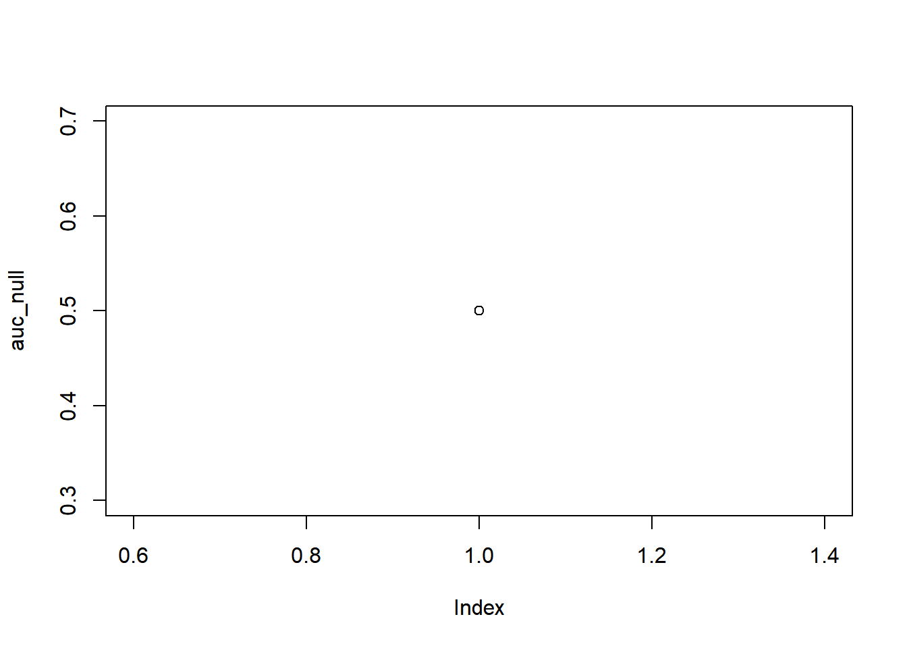
You should find that the null model has an AUC of 0.5, as expected for a “no information” model.
Now we run the single-predictor models again.
#copy and paste the code from above for single predictor fits, but now switch to AUC instead of accuracy.
# loop over each predictor, build simple dataset with just outcome and that predictor, fit it to a glm/logistic model
set.seed(1111) #makes each code block reproducible
#outcome <- gg2c4_first$gg2c4
#outcomename = "gg2c4"
#predictors <- gg2c4_first[,-1]
gg2c4_first## gg2c4 Action1 CasesAll Country Deaths Hemisphere Hospitalizations
## 1 No Unspecified 4 Other 0 Northern 0
## 2 No Unspecified 10 Other 0 Northern 0
## 3 No Unspecified 19 Japan 0 Northern 0
## 4 No Yes 683 Japan 0 Northern 0
## 5 No Yes 51 Other 0 Northern 0
## 6 No Unspecified 33 Japan 0 Northern 0
## 7 Yes Unspecified 9 Japan 0 Northern 0
## 8 Yes Unspecified 70 Other 0 Northern 0
## 9 No Unspecified 35 Other 0 Northern 0
## 10 Yes Unspecified 40 Other 0 Northern 0
## 11 No Unspecified 15 Other 0 Northern 0
## 12 No Unspecified 20 Other 0 Northern 0
## 13 No Unspecified 50 Other 0 Northern 0
## 14 No Unspecified 16 Other 0 Northern 0
## 15 Yes Unspecified 5 Other 0 Northern 0
## 16 Yes Unspecified 200 Other 0 Northern 0
## 17 Yes Unspecified 24 Other 0 Northern 0
## 18 No Unspecified 9 Other 0 Northern 0
## 19 No Unspecified 21 Other 0 Northern 0
## 20 No Unspecified 16 Other 0 Southern 0
## 21 No Yes 3 Other 0 Northern 0
## 22 Yes Unspecified 50 USA 0 Northern 0
## 23 No Unspecified 32 Other 0 Northern 0
## 24 Yes Unspecified 184 USA 0 Northern 0
## 25 No Unspecified 7 Japan 0 Northern 0
## 26 No Unspecified 32 Japan 0 Northern 0
## 27 No Unspecified 48 Japan 0 Northern 0
## 28 No Unspecified 12 Japan 0 Northern 0
## 29 No Unspecified 2 Japan 0 Northern 0
## 30 No Unspecified 3 Japan 0 Northern 0
## 31 No Unspecified 18 Japan 0 Northern 0
## 32 No Unspecified 14 Japan 0 Northern 0
## 33 No Unspecified 8 Japan 0 Northern 0
## 34 No Unspecified 9 Japan 0 Northern 0
## 35 No Unspecified 3 Japan 0 Northern 0
## 36 No Unspecified 2 Japan 0 Northern 0
## 37 No Unspecified 29 Japan 0 Northern 0
## 38 No Unspecified 2 Japan 0 Northern 0
## 39 No Unspecified 40 Japan 0 Northern 0
## 40 No Unspecified 6 Japan 0 Northern 0
## 41 No Unspecified 72 Japan 0 Northern 0
## 42 No Unspecified 4 Japan 0 Northern 0
## 43 No Unspecified 5 Japan 0 Northern 0
## 44 No Unspecified 6 Japan 0 Northern 0
## 45 No Unspecified 7 Japan 0 Northern 0
## 46 Yes Unspecified 14 Japan 0 Northern 0
## 47 No Unspecified 15 Japan 0 Northern 0
## 48 No Unspecified 3 Japan 0 Northern 0
## 49 No Unspecified 5 Japan 0 Northern 0
## 50 No Unspecified 2 Japan 0 Northern 0
## 51 No Unspecified 41 Other 0 Northern 0
## 52 No Unspecified 15 Other 0 Northern 0
## 53 No Unspecified 10 Other 0 Northern 0
## 54 No Unspecified 30 Other 0 Northern 0
## 55 No Yes 9 Other 0 Northern 0
## 56 No Yes 29 Other 0 Northern 0
## 57 Yes Unspecified 12 Japan 0 Northern 0
## 58 No Unspecified 11 Japan 0 Northern 0
## 59 No Unspecified 7 Other 0 Northern 0
## 60 No Yes 237 USA 0 Northern 0
## 61 No Yes 433 USA 0 Northern 0
## 62 No Unspecified 3 Other 0 Northern 0
## 63 No Yes 31 Other 0 Northern 0
## 64 No Yes 40 Other 0 Northern 0
## 65 Yes Unspecified 5 Japan 0 Northern 0
## 66 No Unspecified 60 Other 0 Northern 0
## 67 Yes Unspecified 54 Other 0 Northern 0
## 68 No Unspecified 350 Other 0 Northern 0
## 69 No Unspecified 35 Other 0 Northern 0
## 70 No Unspecified 18 Other 0 Northern 0
## 71 No Unspecified 42 Other 0 Northern 0
## 72 No Unspecified 124 Japan 0 Northern 0
## 73 Yes Unspecified 2 Other 0 Northern 0
## 74 No Unspecified 11 Other 0 Northern 0
## 75 No Unspecified 14 Other 0 Northern 0
## 76 No Unspecified 2 Other 0 Northern 0
## 77 No Unspecified 36 USA 0 Northern 1
## 78 No Yes 387 USA 0 Northern 0
## 79 No Unspecified 3 Japan 0 Northern 0
## 80 No Unspecified 34 Japan 0 Northern 0
## 81 No Unspecified 13 Japan 0 Northern 0
## 82 No Unspecified 6 Japan 0 Northern 0
## 83 No Unspecified 8 Japan 0 Northern 0
## 84 No Unspecified 11 Japan 0 Northern 0
## 85 No Unspecified 19 Japan 0 Northern 0
## 86 No Unspecified 10 Japan 0 Northern 0
## 87 Yes Unspecified 52 Japan 0 Northern 0
## 88 No Unspecified 4 Japan 0 Northern 0
## 89 No Unspecified 6 Japan 0 Northern 0
## 90 No Unspecified 6 Japan 0 Northern 0
## 91 No Unspecified 34 Japan 0 Northern 0
## 92 Yes Unspecified 15 Japan 0 Northern 0
## 93 No Unspecified 38 Japan 0 Northern 0
## 94 No Unspecified 11 Japan 0 Northern 0
## 95 No Unspecified 6 Japan 0 Northern 0
## 96 No Unspecified 15 Japan 0 Northern 0
## 97 No Unspecified 4 Japan 0 Northern 0
## 98 No Unspecified 20 Japan 0 Northern 0
## 99 No Unspecified 3 Japan 0 Northern 0
## 100 No Unspecified 4 Japan 0 Northern 0
## 101 No Unspecified 2 Japan 0 Northern 0
## 102 No Unspecified 6 Japan 0 Northern 0
## 103 No Unspecified 55 Japan 0 Northern 0
## 104 No Unspecified 7 Japan 0 Northern 0
## 105 No Unspecified 32 Japan 0 Northern 0
## 106 No Unspecified 3 Japan 0 Northern 0
## 107 No Unspecified 57 Japan 0 Northern 0
## 108 No Unspecified 6 Japan 0 Northern 0
## 109 No Unspecified 8 Japan 0 Northern 0
## 110 No Unspecified 4 Japan 0 Northern 0
## 111 No Unspecified 10 Japan 0 Northern 0
## 112 No Unspecified 19 Japan 0 Northern 0
## 113 No Unspecified 9 Japan 0 Northern 0
## 114 No Unspecified 19 Japan 0 Northern 0
## 115 No Unspecified 3 Japan 0 Northern 0
## 116 No Unspecified 2 Japan 0 Northern 0
## 117 No Unspecified 7 Japan 0 Northern 0
## 118 No Unspecified 11 Japan 0 Northern 0
## 119 Yes Unspecified 7 Japan 0 Northern 0
## 120 No Unspecified 13 Japan 0 Northern 0
## 121 Yes Unspecified 2 Japan 0 Northern 0
## 122 No Unspecified 2 Japan 0 Northern 0
## 123 No Unspecified 7 Japan 0 Northern 0
## 124 Yes Unspecified 32 Japan 0 Northern 0
## 125 No Unspecified 12 Japan 0 Northern 0
## 126 Yes Unspecified 13 Japan 0 Northern 0
## 127 Yes Unspecified 4 Japan 0 Northern 0
## 128 No Unspecified 11 Japan 0 Northern 0
## 129 No Unspecified 15 Japan 0 Northern 0
## 130 Yes Unspecified 17 Japan 0 Northern 0
## 131 Yes Unspecified 22 Japan 0 Northern 0
## 132 No Unspecified 12 Japan 0 Northern 0
## 133 No Unspecified 12 Japan 0 Northern 0
## 134 No Unspecified 20 Japan 0 Northern 0
## 135 No Unspecified 4 Japan 0 Northern 0
## 136 No Unspecified 2 Japan 0 Northern 0
## 137 No Unspecified 103 Other 0 Northern 0
## 138 Yes Unspecified 10 Other 0 Northern 0
## 139 No Unspecified 20 Other 0 Northern 0
## 140 No Unspecified 74 Other 0 Northern 0
## 141 No Unspecified 120 Other 0 Northern 0
## 142 No Unspecified 6 Other 0 Northern 0
## 143 No Unspecified 6 Other 0 Northern 0
## 144 No Unspecified 48 Other 0 Northern 0
## 145 No Unspecified 35 Other 0 Northern 0
## 146 No Unspecified 30 Other 0 Northern 0
## 147 Yes Unspecified 29 Other 0 Southern 0
## 148 No Unspecified 16 Japan 0 Northern 0
## 149 No Unspecified 39 Japan 0 Northern 0
## 150 No Unspecified 3 Japan 0 Northern 0
## 151 No Unspecified 5 Japan 0 Northern 0
## 152 Yes Unspecified 19 Japan 0 Northern 0
## 153 No Unspecified 30 Other 0 Northern 0
## 154 No Unspecified 8 Japan 0 Northern 0
## 155 No Yes 2 Other 0 Southern 0
## 156 Yes Unspecified 9 Japan 0 Northern 0
## 157 No Unspecified 18 Japan 0 Northern 0
## 158 No Unspecified 47 Japan 0 Northern 0
## 159 No Unspecified 21 Other 0 Northern 0
## 160 Yes Unspecified 15 Japan 0 Northern 0
## 161 No Unspecified 65 USA 0 Northern 0
## 162 Yes Unspecified 27 Other 0 Northern 0
## 163 Yes Unspecified 15 Other 0 Northern 0
## 164 No Unspecified 6 Other 0 Northern 0
## 165 No Unspecified 40 Other 0 Northern 0
## 166 Yes Unspecified 116 Other 0 Northern 5
## 167 No Yes 45 USA 0 Northern 10
## 168 No Yes 184 USA 0 Northern 3
## 169 No Unspecified 191 USA 0 Northern 0
## 170 No Unspecified 19 USA 0 Northern 0
## 171 No Yes 704 USA 0 Northern 0
## 172 No Yes 369 Other 0 Northern 0
## 173 No Yes 131 Other 0 Northern 0
## 174 No Yes 492 Other 0 Northern 0
## 175 No Yes 1169 USA 0 Northern 0
## 176 Yes Yes 32 USA 0 Northern 0
## 177 Yes Unspecified 20 Other 0 Northern 0
## 178 Yes Unspecified 14 Other 0 Northern 0
## 179 Yes Unspecified 14 Other 0 Northern 0
## 180 Yes Unspecified 22 Other 0 Northern 0
## 181 Yes Unspecified 15 Other 0 Northern 0
## 182 Yes Unspecified 25 Other 0 Northern 0
## 183 Yes Unspecified 17 Other 0 Northern 0
## 184 Yes Unspecified 13 Other 0 Northern 0
## 185 Yes Unspecified 22 Other 0 Northern 0
## 186 Yes Unspecified 11 Other 0 Northern 0
## 187 Yes Unspecified 14 Other 0 Northern 0
## 188 Yes Unspecified 25 Other 0 Northern 0
## 189 Yes Unspecified 14 Other 0 Northern 0
## 190 No Yes 146 USA 0 Northern 1
## 191 Yes Unspecified 80 Other 0 Northern 0
## 192 No Unspecified 36 Other 0 Southern 0
## 193 Yes Unspecified 7 Other 0 Northern 0
## 194 No Yes 44 Other 0 Northern 0
## 195 No Unspecified 57 Japan 0 Northern 0
## 196 No Unspecified 26 Japan 0 Northern 0
## 197 No Unspecified 26 Japan 0 Northern 0
## 198 No Yes 139 Other 0 Northern 0
## 199 No Unspecified 2 Japan 0 Northern 0
## 200 Yes Yes 387 Other 0 Northern 0
## 201 No Unspecified 12 Japan 0 Northern 0
## 202 No Unspecified 3 Japan 0 Northern 0
## 203 No Unspecified 21 Japan 0 Northern 0
## 204 Yes Unspecified 12 Japan 0 Northern 0
## 205 No Unspecified 50 Japan 0 Northern 0
## 206 No Unspecified 19 Japan 0 Northern 0
## 207 Yes Unspecified 19 Japan 0 Northern 0
## 208 No Unspecified 19 Japan 0 Northern 0
## 209 No Unspecified 27 USA 0 Northern 0
## 210 No Yes 77 USA 0 Northern 0
## 211 No Unspecified 30 Other 0 Northern 0
## 212 No Yes 120 Other 0 Northern 0
## 213 Yes Yes 77 Other 1 Northern 0
## 214 No Yes 10 USA 0 Northern 0
## 215 No Yes 116 USA 0 Northern 0
## 216 No Yes 24 Other 0 Southern 0
## 217 No Unspecified 22 Other 0 Northern 0
## 218 No Unspecified 50 Other 0 Northern 0
## 219 No Unspecified 110 Other 0 Northern 0
## 220 Yes Unspecified 50 Other 0 Northern 0
## 221 Yes Unspecified 55 Other 0 Northern 0
## 222 Yes Yes 163 Other 0 Northern 0
## 223 No Unspecified 300 Other 0 Northern 0
## 224 No Yes 99 Japan 0 Northern 0
## 225 No Unspecified 25 Other 0 Northern 0
## 226 No Unspecified 35 Other 0 Northern 0
## 227 Yes Unspecified 2 Japan 0 Northern 0
## 228 Yes Unspecified 3 Japan 0 Northern 0
## 229 Yes Unspecified 2 Japan 0 Northern 0
## 230 No Yes 84 USA 0 Northern 0
## 231 Yes Yes 60 Other 0 Northern 0
## 232 No Unspecified 5 Japan 0 Northern 0
## 233 No Unspecified 2 Japan 0 Northern 0
## 234 No Unspecified 51 Japan 0 Northern 0
## 235 No Unspecified 6 Japan 0 Northern 0
## 236 No Unspecified 200 USA 0 Northern 0
## 237 No Unspecified 47 USA 0 Northern 0
## 238 No Unspecified 54 USA 0 Northern 0
## 239 No Unspecified 56 USA 0 Northern 0
## 240 Yes Yes 33 Other 0 Northern 0
## 241 Yes Unspecified 119 Other 4 Northern 1
## 242 No Unspecified 65 Other 0 Southern 0
## 243 Yes Unspecified 11 Other 0 Southern 0
## 244 Yes Unspecified 15 Other 0 Southern 0
## 245 Yes Unspecified 369 Other 0 Northern 0
## 246 No Unspecified 11 Other 0 Northern 0
## 247 Yes Yes 704 Other 0 Northern 0
## 248 Yes Yes 651 Other 0 Northern 0
## 249 Yes Unspecified 131 Other 0 Northern 0
## 250 Yes Unspecified 22 USA 0 Northern 0
## 251 Yes Unspecified 85 USA 0 Northern 0
## 252 Yes Unspecified 7150 USA 0 Northern 0
## 253 Yes Unspecified 126 USA 0 Northern 0
## 254 Yes Unspecified 37 Other 0 Northern 0
## 255 Yes Yes 108 Japan 0 Northern 0
## 256 No Yes 1173 USA 0 Northern 0
## 257 No Yes 413 Other 0 Northern 0
## 258 No Yes 478 USA 0 Northern 0
## 259 No Yes 451 USA 0 Northern 0
## 260 No Yes 156 USA 0 Northern 10
## 261 No Unspecified 8 Other 0 Northern 0
## 262 No Unspecified 8 Other 0 Northern 0
## 263 No Unspecified 13 Other 0 Northern 0
## 264 No Unspecified 14 Other 0 Northern 0
## 265 No Yes 30 Other 0 Northern 0
## 266 Yes Yes 22 USA 0 Northern 2
## 267 No Yes 15 Other 0 Northern 0
## 268 No Yes 46 Other 0 Northern 0
## 269 No Yes 15 Other 0 Northern 0
## 270 No Unspecified 33 Other 0 Northern 0
## 271 Yes Yes 104 Other 4 Northern 0
## 272 No Yes 51 Other 0 Northern 13
## 273 No Unspecified 35 Other 0 Northern 0
## 274 Yes Unspecified 40 Other 0 Northern 0
## 275 No Unspecified 4 Other 0 Northern 0
## 276 No Unspecified 3 Other 0 Northern 0
## 277 No Unspecified 12 Other 0 Northern 0
## 278 Yes Unspecified 19 Other 0 Northern 0
## 279 Yes Unspecified 15 Other 0 Northern 0
## 280 Yes Unspecified 62 Other 0 Northern 0
## 281 Yes Yes 279 Other 5 Northern 25
## 282 No Unspecified 69 Other 0 Southern 0
## 283 No Unspecified 27 Other 0 Southern 0
## 284 No Unspecified 18 Other 0 Southern 0
## 285 No Yes 29 Other 0 Northern 26
## 286 No Yes 23 USA 0 Northern 0
## 287 No Yes 55 USA 0 Northern 0
## 288 No Yes 9 USA 0 Northern 0
## 289 No Yes 28 USA 0 Northern 0
## 290 No Yes 359 Other 0 Northern 0
## 291 No Yes 66 Other 0 Southern 0
## 292 Yes Yes 125 USA 0 Northern 23
## 293 Yes Unspecified 16 Other 0 Northern 0
## 294 Yes Unspecified 12 Other 0 Northern 0
## 295 Yes Unspecified 19 Other 0 Northern 0
## 296 No Unspecified 64 USA 0 Northern 0
## 297 Yes Unspecified 524 Other 1 Northern 0
## 298 Yes Unspecified 69 Other 0 Northern 0
## 299 No Unspecified 2700 USA 0 Northern 8
## 300 No Yes 195 Other 0 Northern 0
## 301 Yes Yes 29 Other 0 Northern 0
## 302 Yes Unspecified 276 Other 0 Northern 0
## 303 Yes Unspecified 57 Other 0 Northern 0
## 304 No Unspecified 29 Japan 0 Northern 0
## 305 Yes Unspecified 139 Japan 0 Northern 0
## 306 Yes Unspecified 25 Japan 0 Northern 0
## 307 No Unspecified 29 Japan 0 Northern 0
## 308 No Unspecified 18 Japan 0 Northern 0
## 309 No Unspecified 26 Japan 0 Northern 0
## 310 No Unspecified 245 USA 0 Northern 0
## 311 No Unspecified 22 Japan 0 Northern 0
## 312 No Unspecified 5 Japan 0 Northern 0
## 313 No Unspecified 4 Japan 0 Northern 0
## 314 No Unspecified 16 Japan 0 Northern 0
## 315 No Unspecified 14 Japan 0 Northern 0
## 316 No Unspecified 5 Japan 0 Northern 0
## 317 No Unspecified 2 Japan 0 Northern 0
## 318 No Unspecified 20 Japan 0 Northern 0
## 319 Yes Unspecified 162 Japan 0 Northern 0
## 320 No Unspecified 114 Japan 0 Northern 0
## 321 Yes Unspecified 325 Japan 0 Northern 0
## 322 No Unspecified 268 Japan 0 Northern 0
## 323 No Unspecified 154 Japan 0 Northern 0
## 324 No Unspecified 95 Japan 0 Northern 0
## 325 No Unspecified 41 Japan 0 Northern 0
## 326 No Unspecified 11 Japan 0 Northern 0
## 327 No Yes 201 Other 0 Northern 0
## 328 No Yes 20 USA 0 Northern 0
## 329 No Unspecified 6 Japan 0 Northern 0
## 330 No Unspecified 53 Japan 0 Northern 0
## 331 No Unspecified 40 Japan 0 Northern 0
## 332 No Unspecified 12 Japan 0 Northern 0
## 333 No Unspecified 14 Japan 0 Northern 0
## 334 No Unspecified 13 Japan 0 Northern 0
## 335 No Unspecified 3 Japan 0 Northern 0
## 336 No Unspecified 12 Japan 0 Northern 0
## 337 No Unspecified 10 Japan 0 Northern 0
## 338 No Unspecified 34 Japan 0 Northern 0
## 339 Yes Unspecified 97 Other 0 Northern 0
## 340 No Unspecified 97 Other 0 Northern 0
## 341 Yes Yes 29 USA 0 Northern 0
## 342 No Yes 368 Other 0 Northern 0
## 343 No Unspecified 14 Other 0 Northern 0
## 344 No Yes 26 Other 0 Southern 2
## 345 No Unspecified 25 Other 0 Northern 0
## 346 No Unspecified 119 Other 0 Northern 0
## 347 No Unspecified 19 Other 0 Northern 0
## 348 No Unspecified 14 Other 0 Northern 0
## 349 No Unspecified 20 Other 0 Northern 0
## 350 Yes Unspecified 16 Other 0 Northern 0
## 351 No Unspecified 9 Other 0 Northern 0
## 352 No Unspecified 9 Other 0 Northern 0
## 353 No Unspecified 2000 Other 0 Northern 0
## 354 No Unspecified 58 Other 0 Northern 0
## 355 No Unspecified 25 Other 0 Northern 0
## 356 Yes Unspecified 95 Other 0 Northern 0
## 357 No Unspecified 40 Other 0 Northern 0
## 358 No Unspecified 40 Other 0 Northern 0
## 359 No Yes 378 Other 0 Northern 0
## 360 No Yes 31 Japan 0 Northern 2
## 361 No Yes 200 Other 0 Northern 0
## 362 No Yes 70 Other 0 Northern 0
## 363 No Unspecified 16 Other 0 Northern 0
## 364 No Unspecified 30 Other 0 Northern 0
## 365 No Unspecified 16 Other 0 Northern 0
## 366 No Unspecified 47 Other 0 Northern 0
## 367 No Unspecified 61 Other 0 Northern 0
## 368 No Unspecified 4 Japan 0 Northern 0
## 369 No Unspecified 2 Japan 0 Northern 0
## 370 No Unspecified 2 Japan 0 Northern 0
## 371 No Unspecified 2 Japan 0 Northern 0
## 372 No Unspecified 2 Japan 0 Northern 0
## 373 Yes Unspecified 3 Japan 0 Northern 0
## 374 No Unspecified 103 Other 0 Northern 0
## 375 No Yes 126 USA 2 Northern 3
## 376 Yes Yes 60 Other 0 Southern 0
## 377 Yes Yes 32 Other 0 Southern 0
## 378 No Yes 40 Other 0 Northern 0
## 379 No Unspecified 55 Other 0 Northern 0
## 380 No Unspecified 47 Other 0 Northern 0
## 381 No Unspecified 16 Other 0 Northern 0
## 382 No Unspecified 8 Other 0 Northern 0
## 383 No Unspecified 15 Other 0 Northern 0
## 384 No Unspecified 79 Other 0 Northern 0
## 385 No Unspecified 74 Other 0 Northern 0
## 386 No Unspecified 2 Japan 0 Northern 0
## 387 No Unspecified 5 Japan 0 Northern 0
## 388 No Unspecified 20 Japan 0 Northern 0
## 389 No Unspecified 2 Japan 0 Northern 0
## 390 No Unspecified 27 Japan 0 Northern 0
## 391 No Unspecified 11 Japan 0 Northern 0
## 392 No Unspecified 3 Japan 0 Northern 0
## 393 No Unspecified 157 Japan 0 Northern 0
## 394 No Unspecified 68 Japan 0 Northern 0
## 395 Yes Unspecified 184 Japan 0 Northern 0
## 396 Yes Unspecified 203 Japan 0 Northern 0
## 397 No Unspecified 18 Other 0 Southern 0
## 398 No Unspecified 2 Other 0 Southern 0
## 399 No Unspecified 17 Other 0 Southern 0
## 400 No Unspecified 2 Other 0 Southern 0
## 401 No Yes 73 Other 0 Southern 1
## 402 Yes Unspecified 300 USA 0 Northern 0
## 403 Yes Unspecified 30 USA 0 Northern 0
## 404 No Unspecified 37 USA 0 Northern 0
## 405 No Unspecified 17 USA 0 Northern 0
## 406 Yes Unspecified 70 USA 0 Northern 0
## 407 No Unspecified 75 USA 0 Northern 0
## 408 No Unspecified 104 USA 0 Northern 0
## 409 No Unspecified 71 Japan 0 Northern 0
## 410 No Yes 47 Other 0 Southern 0
## 411 No Yes 34 Other 0 Southern 0
## 412 No Unspecified 4 Other 0 Southern 0
## 413 Yes Unspecified 39 Other 0 Southern 0
## 414 Yes Unspecified 6 Other 0 Southern 0
## 415 Yes Unspecified 14 USA 0 Northern 0
## 416 Yes Unspecified 42 USA 0 Northern 0
## 417 No Unspecified 3 Other 0 Northern 0
## 418 No Unspecified 53 Other 0 Northern 0
## 419 No Unspecified 82 USA 0 Northern 0
## 420 Yes Yes 260 Other 0 Northern 0
## 421 Yes Yes 13 Other 0 Northern 0
## 422 No Unspecified 5 Japan 0 Northern 0
## 423 No Yes 205 USA 0 Northern 99
## 424 No Unspecified 70 Other 0 Northern 0
## 425 No Unspecified 40 Other 0 Northern 0
## 426 No Unspecified 49 Other 0 Northern 0
## 427 Yes Yes 344 Other 0 Northern 5
## 428 Yes Unspecified 33 Other 0 Northern 0
## 429 Yes Unspecified 19 Other 0 Northern 0
## 430 Yes Unspecified 61 Other 0 Northern 0
## 431 No Unspecified 15 Other 0 Northern 0
## 432 No Unspecified 15 Other 0 Northern 0
## 433 Yes Unspecified 10 Other 0 Northern 0
## 434 Yes Unspecified 8 Other 0 Northern 0
## 435 No Unspecified 21 Other 0 Southern 0
## 436 Yes Unspecified 38 Other 0 Southern 0
## 437 No Yes 80 USA 0 Northern 0
## 438 No Yes 40 USA 0 Northern 0
## 439 No Yes 395 Other 0 Northern 0
## 440 No Unspecified 81 USA 0 Northern 0
## 441 Yes Unspecified 23 USA 0 Northern 0
## 442 No Unspecified 106 USA 0 Northern 0
## 443 No Yes 8 Other 0 Northern 0
## 444 Yes Yes 400 Other 0 Northern 23
## 445 No Yes 50 Other 0 Northern 0
## 446 No Unspecified 8 Other 0 Northern 0
## 447 Yes Unspecified 22 Other 0 Southern 0
## 448 No Yes 21 Other 0 Northern 0
## 449 No Yes 25 Other 0 Northern 0
## 450 No Unspecified 66 Other 0 Southern 0
## 451 Yes Unspecified 12 Other 0 Northern 0
## 452 Yes Unspecified 19 Other 0 Northern 0
## 453 Yes Yes 326 Other 0 Northern 54
## 454 No Yes 12 Other 0 Northern 0
## 455 No Yes 12 Other 0 Northern 0
## 456 No Yes 129 Other 0 Northern 3
## 457 No Unspecified 35 Japan 0 Northern 0
## 458 No Unspecified 2 Japan 0 Northern 0
## 459 No Unspecified 16 Japan 0 Northern 0
## 460 No Unspecified 16 Japan 0 Northern 0
## 461 Yes Unspecified 74 Other 0 Northern 0
## 462 No Unspecified 30 Other 0 Northern 0
## 463 Yes Unspecified 63 Other 0 Northern 0
## 464 Yes Unspecified 13 Other 0 Northern 0
## 465 No Unspecified 35 Other 0 Northern 0
## 466 No Unspecified 150 Other 0 Northern 0
## 467 No Unspecified 12 Other 0 Northern 0
## 468 No Unspecified 9 Other 0 Northern 0
## 469 No Unspecified 22 Other 0 Northern 0
## 470 No Unspecified 100 Other 0 Northern 0
## 471 No Unspecified 19 Other 0 Northern 0
## 472 No Unspecified 150 Other 0 Northern 0
## 473 No Yes 137 USA 0 Northern 0
## 474 No Yes 229 Other 0 Northern 0
## 475 Yes Yes 242 Other 0 Northern 3
## 476 No Unspecified 13 Other 0 Northern 0
## 477 No Unspecified 40 Other 0 Northern 0
## 478 No Unspecified 60 Other 0 Northern 0
## 479 No Unspecified 13 Other 0 Northern 0
## 480 No Unspecified 20 Other 0 Northern 0
## 481 No Unspecified 37 Japan 0 Northern 0
## 482 No Unspecified 27 Japan 0 Northern 0
## 483 No Unspecified 14 Other 0 Northern 0
## 484 No Unspecified 186 Other 0 Northern 0
## 485 No Yes 47 Other 0 Northern 0
## 486 No Yes 41 Other 0 Northern 0
## 487 No Yes 200 Other 0 Northern 2
## 488 No Unspecified 8 Other 0 Southern 0
## 489 No Unspecified 8 Other 0 Southern 0
## 490 No Unspecified 5 Other 0 Southern 0
## 491 No Unspecified 5 Other 0 Southern 0
## 492 No Unspecified 16 Other 0 Southern 0
## 493 No Unspecified 5 Other 0 Southern 0
## 494 No Unspecified 14 Other 0 Southern 0
## 495 No Yes 162 Other 0 Northern 0
## 496 No Yes 425 Other 0 Northern 0
## 497 Yes Yes 48 Other 0 Northern 0
## 498 No Yes 19 Other 0 Northern 0
## 499 No Yes 60 Other 0 Northern 0
## 500 No Yes 166 Other 0 Southern 0
## 501 No Yes 4 Other 0 Southern 0
## 502 Yes Unspecified 20 Other 0 Southern 0
## 503 Yes Unspecified 55 USA 0 Northern 0
## 504 Yes Yes 395 USA 0 Northern 0
## 505 Yes Unspecified 11 USA 0 Northern 0
## 506 Yes Unspecified 17 USA 0 Northern 0
## 507 No Yes 8 USA 0 Northern 0
## 508 No Yes 26 USA 0 Northern 0
## 509 No Yes 22 USA 0 Northern 0
## 510 No Unspecified 44 Other 0 Northern 0
## 511 No Unspecified 6390 Other 0 Southern 0
## 512 No Yes 87 Other 0 Northern 40
## 513 No Yes 333 USA 0 Northern 3
## 514 No Yes 35 USA 0 Northern 1
## 515 No Unspecified 103 Other 0 Northern 0
## 516 No Yes 75 USA 0 Northern 0
## 517 Yes Unspecified 40 Other 0 Northern 0
## 518 No Unspecified 60 Other 0 Northern 0
## 519 Yes Unspecified 9 Other 0 Northern 0
## 520 No Unspecified 35 Other 0 Northern 0
## 521 No Yes 448 Other 0 Northern 0
## 522 No Unspecified 71 Other 0 Southern 0
## 523 No Yes 38 USA 0 Northern 0
## 524 No Yes 175 Other 0 Northern 0
## 525 No Unspecified 13 Other 0 Southern 0
## 526 No Yes 53 USA 0 Northern 1
## 527 No Yes 103 USA 0 Northern 0
## 528 No Unspecified 1450 USA 0 Northern 0
## 529 No Unspecified 41 USA 0 Northern 0
## 530 No Unspecified 32150 USA 0 Northern 0
## 531 No Unspecified 187 USA 0 Northern 0
## 532 No Unspecified 165 USA 0 Northern 0
## 533 Yes Yes 942 Other 0 Northern 0
## 534 Yes Yes 79 Other 0 Northern 0
## 535 No Yes 231 Other 0 Northern 0
## 536 Yes Unspecified 18 Other 0 Northern 0
## 537 Yes Unspecified 25 Other 0 Northern 0
## 538 Yes Unspecified 26 Other 0 Northern 0
## 539 Yes Unspecified 9 Other 0 Northern 0
## 540 Yes Unspecified 30 Other 0 Northern 0
## 541 Yes Unspecified 48 Other 0 Northern 0
## 542 Yes Yes 21 Other 0 Northern 0
## 543 Yes Unspecified 69 Other 0 Northern 0
## 544 No Yes 310 Other 0 Northern 0
## 545 No Yes 29 Other 0 Northern 0
## 546 No Yes 21 Other 0 Northern 0
## 547 No Yes 13 Other 0 Northern 0
## 548 Yes Unspecified 650 Other 0 Northern 0
## 549 No Unspecified 28 Other 0 Northern 0
## 550 Yes Unspecified 35 Other 0 Northern 0
## 551 Yes Yes 70 Other 0 Northern 0
## 552 Yes Unspecified 15 Other 0 Northern 0
## 553 No Unspecified 50 Other 0 Northern 0
## 554 No Unspecified 81 Other 0 Northern 0
## 555 No Yes 159 Other 0 Northern 0
## 556 Yes Unspecified 40 Other 0 Northern 0
## 557 Yes Unspecified 106 Other 0 Northern 0
## 558 Yes Unspecified 152 Other 0 Northern 0
## 559 No Unspecified 2 Japan 0 Northern 0
## 560 No Unspecified 13 Japan 0 Northern 0
## 561 No Unspecified 7 Japan 0 Northern 0
## 562 No Unspecified 4 Japan 0 Northern 0
## 563 No Unspecified 4 Japan 0 Northern 0
## 564 No Unspecified 36 Japan 0 Northern 0
## 565 No Unspecified 6 Japan 0 Northern 0
## 566 No Unspecified 57 Japan 0 Northern 0
## 567 No Unspecified 76 Japan 0 Northern 0
## 568 No Unspecified 28 Japan 0 Northern 0
## 569 No Unspecified 51 Japan 0 Northern 0
## 570 No Unspecified 29 Japan 0 Northern 0
## 571 No Unspecified 64 Japan 0 Northern 0
## 572 No Unspecified 41 Japan 0 Northern 0
## 573 No Yes 218 Other 0 Southern 0
## 574 No Unspecified 2 Japan 0 Northern 0
## 575 No Unspecified 1 Japan 0 Northern 0
## 576 No Unspecified 26 Japan 0 Northern 0
## 577 No Unspecified 19 Japan 0 Northern 0
## 578 No Unspecified 17 Japan 0 Northern 0
## 579 No Unspecified 93 Japan 0 Northern 0
## 580 No Unspecified 82 Japan 0 Northern 0
## 581 No Unspecified 8 Japan 0 Northern 0
## 582 No Unspecified 8 Japan 0 Northern 0
## 583 No Unspecified 20 Japan 0 Northern 0
## 584 No Unspecified 9 Japan 0 Northern 0
## 585 No Unspecified 28 Japan 0 Northern 0
## 586 No Unspecified 11 Japan 0 Northern 0
## 587 No Unspecified 4 Japan 0 Northern 0
## 588 No Unspecified 19 Japan 0 Northern 0
## 589 No Unspecified 4 Japan 0 Northern 0
## 590 No Unspecified 3 Japan 0 Northern 0
## 591 No Unspecified 2 Japan 0 Northern 0
## 592 No Unspecified 3 Japan 0 Northern 0
## 593 No Unspecified 1 Japan 0 Northern 0
## 594 No Unspecified 12 Japan 0 Northern 0
## 595 No Unspecified 15 Japan 0 Northern 0
## 596 No Unspecified 7 Japan 0 Northern 0
## 597 No Unspecified 103 Japan 0 Northern 0
## 598 No Unspecified 107 Japan 0 Northern 0
## 599 No Unspecified 47 Japan 0 Northern 0
## 600 No Unspecified 1 Japan 0 Northern 0
## 601 No Unspecified 2 Japan 0 Northern 0
## 602 Yes Yes 7 USA 0 Northern 0
## 603 Yes Yes 355 USA 0 Northern 0
## 604 Yes Unspecified 7 Japan 0 Northern 0
## 605 Yes Unspecified 2 Japan 0 Northern 0
## 606 Yes Unspecified 2 Japan 0 Northern 0
## 607 Yes Unspecified 56 Japan 0 Northern 0
## 608 No Unspecified 6 Japan 0 Northern 0
## 609 No Unspecified 19 Japan 0 Northern 0
## 610 No Unspecified 10 Japan 0 Northern 0
## 611 No Unspecified 2 Japan 0 Northern 0
## 612 No Unspecified 3 Japan 0 Northern 0
## 613 No Unspecified 27 Japan 0 Northern 0
## 614 No Unspecified 21 Japan 0 Northern 0
## 615 Yes Yes 445 Other 9 Northern 0
## 616 No Unspecified 80 USA 0 Northern 1
## 617 No Yes 295 USA 0 Northern 0
## 618 Yes Yes 63 Other 0 Northern 0
## 619 No Unspecified 52 Japan 0 Northern 0
## 620 Yes Yes 1655 Other 0 Northern 0
## 621 No Yes 176 Other 0 Northern 4
## 622 No Yes 331 Other 0 Northern 0
## 623 Yes Yes 329 Other 0 Northern 2
## 624 No Yes 41 Other 0 Southern 0
## 625 No Unspecified 400 Other 0 Northern 0
## 626 No Unspecified 32 Other 0 Northern 0
## 627 No Unspecified 35 Other 0 Northern 0
## 628 Yes Unspecified 20 Other 0 Northern 0
## 629 No Unspecified 15 Other 0 Northern 0
## 630 No Yes 52 Other 0 Northern 0
## 631 No Yes 150 USA 3 Northern 4
## 632 Yes Unspecified 200 Other 0 Northern 0
## 633 No Unspecified 100 Other 0 Northern 0
## 634 Yes Unspecified 300 Other 0 Northern 0
## 635 Yes Unspecified 11 Other 0 Northern 0
## 636 No Yes 58 Other 0 Northern 0
## 637 No Unspecified 140 USA 0 Northern 5
## 638 No Yes 60 USA 0 Northern 0
## 639 Yes Yes 35 Other 0 Northern 0
## 640 No Yes 294 Other 1 Southern 4
## 641 No Unspecified 5 Japan 0 Northern 0
## 642 No Unspecified 8 Japan 0 Northern 0
## 643 Yes Unspecified 5 Japan 0 Northern 0
## 644 No Unspecified 9 Japan 0 Northern 0
## 645 No Yes 60 Other 0 Northern 0
## 646 No Unspecified 69 Other 0 Northern 0
## 647 Yes Unspecified 63 Japan 1 Northern 0
## 648 Yes Unspecified 68 Japan 1 Northern 0
## 649 Yes Unspecified 50 Japan 1 Northern 0
## 650 No Unspecified 23 Other 0 Northern 0
## 651 No Unspecified 485 Other 0 Northern 0
## 652 Yes Unspecified 23 Japan 0 Northern 0
## 653 No Unspecified 2 Japan 0 Northern 0
## 654 Yes Unspecified 61 Japan 0 Northern 0
## 655 Yes Unspecified 6 Japan 0 Northern 0
## 656 No Unspecified 2 Japan 0 Northern 0
## 657 Yes Unspecified 10 Japan 0 Northern 0
## 658 Yes Unspecified 2 Japan 0 Northern 0
## 659 Yes Unspecified 7 Japan 0 Northern 0
## 660 Yes Unspecified 3 Japan 0 Northern 0
## 661 Yes Unspecified 6 Japan 0 Northern 0
## 662 Yes Unspecified 2 Japan 0 Northern 0
## 663 Yes Unspecified 2 Japan 0 Northern 0
## 664 Yes Unspecified 3 Japan 0 Northern 0
## 665 Yes Unspecified 2 Japan 0 Northern 0
## 666 Yes Unspecified 11 Japan 0 Northern 0
## 667 No Unspecified 2 Japan 0 Northern 0
## 668 Yes Unspecified 8 Japan 0 Northern 0
## 669 Yes Unspecified 63 Japan 0 Northern 0
## 670 No Unspecified 4 Japan 0 Northern 0
## 671 No Unspecified 6 Japan 0 Northern 0
## 672 No Unspecified 13 Japan 0 Northern 0
## 673 Yes Unspecified 3 Japan 0 Northern 0
## 674 Yes Unspecified 5 Japan 0 Northern 0
## 675 Yes Unspecified 2 Japan 0 Northern 0
## 676 No Unspecified 3 Japan 0 Northern 0
## 677 Yes Unspecified 5 Japan 0 Northern 0
## 678 Yes Unspecified 33 Japan 0 Northern 0
## 679 Yes Unspecified 2 Japan 0 Northern 0
## 680 No Unspecified 3 Japan 0 Northern 0
## 681 Yes Unspecified 4 Japan 0 Northern 0
## 682 No Unspecified 9 Japan 0 Northern 0
## 683 Yes Unspecified 32 Japan 0 Northern 0
## 684 Yes Unspecified 2 Japan 0 Northern 0
## 685 Yes Unspecified 2 Japan 0 Northern 0
## 686 No Unspecified 8 Japan 0 Northern 0
## 687 Yes Unspecified 2 Japan 0 Northern 0
## 688 No Unspecified 2 Japan 0 Northern 0
## 689 No Unspecified 6 Japan 0 Northern 0
## 690 Yes Unspecified 9 Japan 0 Northern 0
## 691 No Unspecified 6 Japan 0 Northern 0
## 692 Yes Unspecified 6 Japan 0 Northern 0
## 693 No Unspecified 5 Japan 0 Northern 0
## 694 No Unspecified 3 Japan 0 Northern 0
## 695 No Unspecified 3 Japan 0 Northern 0
## 696 No Unspecified 6 Japan 0 Northern 0
## 697 No Unspecified 8 Japan 0 Northern 0
## 698 No Yes 709 Other 0 Northern 18
## 699 No Unspecified 85 USA 0 Northern 0
## 700 No Unspecified 71 Other 0 Northern 0
## 701 No Yes 69 USA 0 Northern 0
## 702 No Yes 258 USA 0 Northern 0
## 703 Yes Unspecified 2 Other 0 Northern 0
## 704 No Unspecified 91 Japan 0 Northern 0
## 705 Yes Unspecified 39 Japan 0 Northern 0
## 706 Yes Yes 105 Japan 0 Northern 0
## 707 Yes Unspecified 77 Japan 0 Northern 0
## 708 No Yes 182 Other 0 Northern 10
## 709 No Unspecified 66 Other 0 Northern 0
## 710 No Unspecified 47 Other 0 Northern 0
## 711 No Unspecified 93 Other 0 Northern 0
## 712 No Unspecified 61 Other 0 Northern 0
## 713 No Unspecified 39 Other 0 Northern 0
## 714 No Unspecified 66 Other 0 Northern 0
## 715 No Unspecified 27 Other 0 Northern 0
## 716 No Unspecified 23 Other 0 Northern 0
## 717 No Unspecified 28 Other 0 Northern 0
## 718 No Unspecified 34 Other 0 Northern 0
## 719 No Yes 6 Other 0 Northern 0
## 720 Yes Unspecified 4 Japan 0 Northern 0
## 721 No Unspecified 1 Japan 0 Northern 0
## 722 No Unspecified 28 Japan 0 Northern 0
## 723 No Unspecified 3 Japan 0 Northern 0
## 724 No Unspecified 1 Japan 0 Northern 0
## 725 No Unspecified 77 Japan 0 Northern 0
## 726 No Unspecified 10 Japan 0 Northern 0
## 727 No Unspecified 3 Japan 0 Northern 0
## 728 No Unspecified 2 Japan 0 Northern 0
## 729 No Unspecified 5 Japan 0 Northern 0
## 730 No Unspecified 6 Japan 0 Northern 0
## 731 No Unspecified 26 Japan 0 Northern 0
## 732 No Unspecified 2 Japan 0 Northern 0
## 733 No Unspecified 3 Japan 0 Northern 0
## 734 No Unspecified 3 Japan 0 Northern 0
## 735 No Unspecified 6 Japan 0 Northern 0
## 736 No Unspecified 3 Japan 0 Northern 0
## 737 No Unspecified 3 Japan 0 Northern 0
## 738 No Unspecified 5 Japan 0 Northern 0
## 739 No Unspecified 29 Japan 0 Northern 0
## 740 Yes Unspecified 37 Japan 0 Northern 0
## 741 Yes Unspecified 70 Japan 0 Northern 0
## 742 No Yes 115 Other 0 Southern 0
## 743 No Yes 13 Other 0 Northern 0
## 744 No Yes 97 Other 0 Southern 0
## 745 Yes Unspecified 50 USA 0 Northern 0
## 746 No Unspecified 8 USA 0 Northern 0
## 747 Yes Unspecified 28 USA 0 Northern 0
## 748 No Unspecified 23 Japan 0 Northern 0
## 749 No Unspecified 71 Other 0 Southern 0
## 750 No Yes 8 USA 2 Northern 0
## 751 Yes Yes 22 USA 0 Northern 0
## 752 Yes Unspecified 200 Other 0 Southern 0
## 753 Yes Unspecified 7 Other 0 Southern 0
## 754 No Unspecified 3 Other 0 Southern 0
## 755 Yes Unspecified 33 Other 0 Southern 0
## 756 No Unspecified 33 Other 0 Southern 0
## 757 Yes Unspecified 316 Other 0 Northern 0
## 758 Yes Unspecified 357 Other 0 Northern 0
## 759 No Unspecified 117 Other 0 Northern 0
## 760 Yes Unspecified 25 USA 0 Northern 0
## 761 Yes Unspecified 26 USA 0 Northern 0
## 762 No Yes 13 Other 0 Northern 2
## 763 Yes Yes 211 USA 9 Northern 37
## 764 Yes Unspecified 299 Other 0 Northern 0
## 765 Yes Unspecified 27 Other 0 Northern 0
## 766 Yes Unspecified 20 Other 0 Northern 0
## 767 Yes Unspecified 16 Other 0 Northern 0
## 768 Yes Unspecified 9 Other 0 Northern 0
## 769 Yes Unspecified 13 Other 0 Northern 0
## 770 Yes Unspecified 8 Other 0 Northern 0
## 771 Yes Unspecified 3 Other 0 Northern 0
## 772 Yes Unspecified 22 Other 0 Northern 0
## 773 No Yes 42 Other 0 Northern 0
## 774 No Unspecified 10 Other 0 Northern 0
## 775 No Unspecified 10 Other 0 Northern 0
## 776 No Unspecified 12 Other 0 Northern 0
## 777 No Unspecified 10 Other 0 Northern 0
## 778 No Unspecified 6 Other 0 Northern 0
## 779 No Unspecified 11 Other 0 Northern 0
## 780 No Unspecified 14 Other 0 Northern 0
## 781 No Unspecified 3 Other 0 Northern 0
## 782 No Unspecified 15 Other 0 Northern 0
## 783 Yes Yes 43 Other 0 Northern 0
## 784 No Unspecified 67 Other 0 Northern 0
## 785 Yes Unspecified 23 Other 0 Northern 0
## 786 Yes Unspecified 19 Other 0 Northern 0
## 787 Yes Yes 102 Japan 0 Northern 0
## 788 No Yes 4 Other 0 Northern 0
## 789 Yes Yes 70 Other 0 Northern 0
## 790 No Yes 31 Other 0 Northern 0
## 791 Yes Yes 58 Other 0 Northern 0
## 792 Yes Yes 26 Other 0 Northern 6
## 793 Yes Yes 31 Other 0 Northern 6
## 794 Yes Yes 101 Other 0 Northern 0
## 795 No Unspecified 16 Other 0 Northern 0
## 796 No Unspecified 20 Other 0 Northern 0
## 797 No Unspecified 32 Other 0 Northern 0
## 798 No Unspecified 14 Other 0 Northern 0
## 799 No Unspecified 25 Other 0 Northern 0
## 800 No Unspecified 6 Other 0 Northern 0
## 801 No Unspecified 21 Other 0 Northern 0
## 802 No Unspecified 17 Other 0 Northern 0
## 803 No Unspecified 37 Other 0 Northern 0
## 804 Yes Unspecified 34 Other 0 Northern 0
## 805 No Unspecified 75 Other 0 Northern 0
## 806 No Unspecified 96 Other 0 Northern 0
## 807 Yes Unspecified 7 Other 0 Northern 0
## 808 No Unspecified 80 Other 0 Northern 0
## 809 No Unspecified 101 Other 0 Northern 0
## 810 No Yes 252 Other 0 Northern 0
## 811 No Yes 112 Other 0 Northern 0
## 812 No Unspecified 23 Other 0 Northern 0
## 813 No Unspecified 16 Other 0 Northern 0
## 814 No Unspecified 14 Other 0 Northern 0
## 815 No Unspecified 86 Other 0 Northern 0
## 816 No Unspecified 15 Other 0 Northern 0
## 817 No Unspecified 114 USA 0 Northern 0
## 818 Yes Unspecified 47 Other 0 Northern 0
## 819 No Unspecified 49 Other 0 Northern 0
## 820 Yes Unspecified 15 Other 0 Northern 0
## 821 Yes Unspecified 104 Other 0 Northern 0
## 822 Yes Unspecified 61 Other 0 Northern 0
## 823 Yes Unspecified 342 Other 0 Northern 0
## 824 Yes Unspecified 293 Other 0 Northern 0
## 825 Yes Unspecified 369 Other 0 Northern 0
## 826 Yes Unspecified 40 Other 0 Northern 0
## 827 Yes Unspecified 68 Other 0 Northern 0
## 828 Yes Unspecified 137 Other 0 Northern 0
## 829 Yes Unspecified 40 Other 0 Northern 0
## 830 No Unspecified 39 Other 0 Northern 0
## 831 No Unspecified 85 Other 0 Northern 0
## 832 No Unspecified 31 Other 0 Northern 0
## 833 No Unspecified 14 Other 0 Northern 0
## 834 No Unspecified 20 Other 0 Northern 0
## 835 No Unspecified 40 Other 0 Northern 0
## 836 No Unspecified 62 Other 0 Northern 0
## 837 No Unspecified 40 Other 0 Northern 0
## 838 Yes Unspecified 70 Other 0 Northern 0
## 839 Yes Unspecified 64 Other 0 Northern 0
## 840 Yes Unspecified 25 Other 0 Northern 0
## 841 Yes Unspecified 77 Other 0 Northern 0
## 842 Yes Unspecified 33 Other 0 Northern 0
## 843 Yes Unspecified 22 Other 0 Northern 0
## 844 No Unspecified 8 Other 0 Northern 0
## 845 Yes Unspecified 88 Other 0 Northern 0
## 846 Yes Unspecified 17 Other 0 Northern 0
## 847 Yes Unspecified 35 Other 0 Northern 0
## 848 Yes Unspecified 10 Other 0 Northern 0
## 849 Yes Unspecified 10 Other 0 Northern 0
## 850 Yes Yes 444 Other 0 Northern 0
## MeanD1 MeanI1 MedianD1 MedianI1 OBYear Path1 RiskAll season
## 1 0.0 0 0 0 2006 Unspecified 4.00000 Fall
## 2 0.0 0 0 0 2006 Unspecified 12.00000 Fall
## 3 0.0 0 0 0 2003 Unspecified 58.00000 Fall
## 4 0.0 31 0 0 2003 Yes 1492.00000 Fall
## 5 43.0 32 0 33 2000 No 72.00000 Fall
## 6 0.0 0 0 0 1998 Unspecified 53.00000 Fall
## 7 0.0 0 0 0 1999 Unspecified 13.00000 Fall
## 8 0.0 0 0 0 2002 Unspecified 0.00000 Fall
## 9 0.0 0 0 0 2002 Unspecified 0.00000 Fall
## 10 0.0 0 0 0 2002 Unspecified 0.00000 Fall
## 11 0.0 0 0 0 2002 Unspecified 0.00000 Fall
## 12 0.0 0 0 0 2002 Unspecified 0.00000 Fall
## 13 0.0 0 0 0 2003 Unspecified 0.00000 Fall
## 14 0.0 0 0 0 2004 Unspecified 0.00000 Fall
## 15 0.0 0 0 0 2004 Unspecified 0.00000 Fall
## 16 0.0 0 0 0 2004 Unspecified 0.00000 Fall
## 17 0.0 0 0 0 2006 Unspecified 0.00000 Fall
## 18 0.0 0 0 0 2006 Unspecified 0.00000 Fall
## 19 0.0 0 0 0 2006 Unspecified 0.00000 Fall
## 20 0.0 28 0 0 1999 No 25.00000 Fall
## 21 24.0 16 0 17 2005 Yes 0.00000 Fall
## 22 0.0 0 0 0 2002 Unspecified 300.00000 Fall
## 23 0.0 0 0 0 2007 Unspecified 36.00000 Spring
## 24 0.0 0 0 0 1999 No 0.00000 Spring
## 25 0.0 0 0 0 1999 Unspecified 0.00000 Spring
## 26 0.0 0 0 0 2001 Unspecified 96.00000 Spring
## 27 0.0 0 0 0 2003 Unspecified 118.00000 Spring
## 28 0.0 0 0 0 2004 Unspecified 20.00000 Spring
## 29 0.0 0 0 0 1997 Unspecified 2.00000 Spring
## 30 0.0 0 0 0 1997 Unspecified 4.00000 Spring
## 31 0.0 0 0 0 1998 Unspecified 26.00000 Spring
## 32 0.0 0 0 0 1998 Unspecified 25.00000 Spring
## 33 0.0 0 0 0 1998 Unspecified 13.00000 Spring
## 34 0.0 0 0 0 2004 Unspecified 12.00000 Spring
## 35 0.0 0 0 0 2004 Unspecified 3.00000 Spring
## 36 0.0 0 0 0 2004 Unspecified 2.00000 Spring
## 37 0.0 0 0 0 2004 Unspecified 60.00000 Spring
## 38 0.0 0 0 0 2004 Unspecified 0.00000 Spring
## 39 0.0 0 0 0 2004 Unspecified 71.00000 Spring
## 40 0.0 0 0 0 2004 Unspecified 14.00000 Spring
## 41 0.0 0 0 0 2004 Unspecified 176.00000 Spring
## 42 0.0 0 0 0 2004 Unspecified 5.00000 Spring
## 43 0.0 0 0 0 1999 Unspecified 5.00000 Spring
## 44 0.0 0 0 0 2000 Unspecified 34.00000 Spring
## 45 0.0 0 0 0 2001 Unspecified 17.00000 Spring
## 46 0.0 0 0 0 2002 Unspecified 24.00000 Spring
## 47 0.0 0 0 0 2002 Unspecified 53.00000 Spring
## 48 0.0 0 0 0 1999 Unspecified 12.00000 Spring
## 49 0.0 0 0 0 2000 Unspecified 8.00000 Spring
## 50 0.0 0 0 0 2002 Unspecified 2.00000 Spring
## 51 0.0 0 0 0 2002 Unspecified 0.00000 Spring
## 52 0.0 0 0 0 2006 Unspecified 0.00000 Spring
## 53 0.0 0 0 0 2006 Unspecified 0.00000 Spring
## 54 0.0 0 0 0 2006 Unspecified 0.00000 Spring
## 55 0.0 0 0 0 2002 No 11.00000 Spring
## 56 0.0 0 0 28 2002 Unspecified 38.00000 Spring
## 57 0.0 0 0 0 2003 Yes 0.00000 Spring
## 58 0.0 0 0 0 2006 No 0.00000 Spring
## 59 0.0 0 0 0 1999 Unspecified 0.00000 Spring
## 60 0.0 0 48 36 2007 Yes 0.00000 Spring
## 61 0.0 0 0 0 1995 No 1732.00000 Summer
## 62 0.0 0 0 0 2006 Unspecified 3.00000 Summer
## 63 0.0 0 0 0 2007 Unspecified 0.00000 Summer
## 64 0.0 0 0 0 2005 No 0.00000 Summer
## 65 0.0 0 0 0 2001 Unspecified 9.00000 Summer
## 66 0.0 0 0 0 2002 Unspecified 0.00000 Summer
## 67 0.0 0 0 0 2003 Unspecified 0.00000 Summer
## 68 0.0 0 0 0 2003 Unspecified 0.00000 Summer
## 69 0.0 0 0 0 2004 Unspecified 0.00000 Summer
## 70 0.0 0 0 0 2005 Unspecified 0.00000 Summer
## 71 0.0 0 0 3 2002 Unspecified 700.00000 Summer
## 72 0.0 0 0 0 2004 Unspecified 3639.00000 Summer
## 73 0.0 0 0 0 2006 Unspecified 4.00000 Winter
## 74 0.0 0 0 0 2006 Unspecified 21.00000 Winter
## 75 0.0 0 0 0 2006 Unspecified 18.00000 Winter
## 76 0.0 0 0 0 2006 Unspecified 2.00000 Winter
## 77 0.0 0 27 31 2000 No 68.00000 Winter
## 78 0.0 0 42 32 2006 No 625.00000 Winter
## 79 0.0 0 0 0 1997 Unspecified 0.00000 Winter
## 80 0.0 0 0 0 1998 Unspecified 45.00000 Winter
## 81 0.0 0 0 0 2000 Unspecified 0.00000 Winter
## 82 0.0 0 0 0 2000 Unspecified 7.00000 Winter
## 83 0.0 0 0 0 2000 Unspecified 14.00000 Winter
## 84 0.0 0 0 0 2001 Unspecified 17.00000 Winter
## 85 0.0 0 0 0 2001 Unspecified 0.00000 Winter
## 86 0.0 0 0 0 2002 Unspecified 12.00000 Winter
## 87 0.0 0 0 0 2002 Unspecified 0.00000 Winter
## 88 0.0 0 0 0 2003 Unspecified 0.00000 Winter
## 89 0.0 0 0 0 2003 Unspecified 10.00000 Winter
## 90 0.0 0 0 0 2003 Unspecified 14.00000 Winter
## 91 0.0 0 0 0 2003 Unspecified 77.00000 Winter
## 92 0.0 0 0 0 2004 Unspecified 20.00000 Winter
## 93 0.0 0 0 0 2004 Unspecified 74.00000 Winter
## 94 0.0 0 0 0 1997 Unspecified 18.00000 Winter
## 95 0.0 0 0 0 1997 Unspecified 0.00000 Winter
## 96 0.0 0 0 0 1997 Unspecified 0.00000 Winter
## 97 0.0 0 0 0 1997 Unspecified 6.00000 Winter
## 98 0.0 0 0 0 1997 Unspecified 50.00000 Winter
## 99 0.0 0 0 0 1997 Unspecified 4.00000 Winter
## 100 0.0 0 0 0 1997 Unspecified 0.00000 Winter
## 101 0.0 0 0 0 1997 Unspecified 2.00000 Winter
## 102 0.0 0 0 0 1997 Unspecified 19.00000 Winter
## 103 0.0 0 0 0 1997 Unspecified 158.00000 Winter
## 104 0.0 0 0 0 1998 Unspecified 10.00000 Winter
## 105 0.0 0 0 0 1998 Unspecified 0.00000 Winter
## 106 0.0 0 0 0 1999 Unspecified 3.00000 Winter
## 107 0.0 0 0 0 1999 Unspecified 96.00000 Winter
## 108 0.0 0 0 0 1999 Unspecified 0.00000 Winter
## 109 0.0 0 0 0 1999 Unspecified 8.00000 Winter
## 110 0.0 0 0 0 2000 Unspecified 4.00000 Winter
## 111 0.0 0 0 0 2000 Unspecified 11.00000 Winter
## 112 0.0 0 0 0 2000 Unspecified 40.00000 Winter
## 113 0.0 0 0 0 2000 Unspecified 17.00000 Winter
## 114 0.0 0 0 0 2000 Unspecified 32.00000 Winter
## 115 0.0 0 0 0 1998 Unspecified 4.00000 Winter
## 116 0.0 0 0 0 1999 Unspecified 3.00000 Winter
## 117 0.0 0 0 0 2000 Unspecified 9.00000 Winter
## 118 0.0 0 0 0 2000 Unspecified 14.00000 Winter
## 119 0.0 0 0 0 2001 Unspecified 18.00000 Winter
## 120 0.0 0 0 0 2001 Unspecified 29.00000 Winter
## 121 0.0 0 0 0 2001 Unspecified 2.00000 Winter
## 122 0.0 0 0 0 2002 Unspecified 5.00000 Winter
## 123 0.0 0 0 0 2002 Unspecified 10.00000 Winter
## 124 0.0 0 0 0 2002 Unspecified 86.00000 Winter
## 125 0.0 0 0 0 1997 Unspecified 37.00000 Winter
## 126 0.0 0 0 0 1997 Unspecified 15.00000 Winter
## 127 0.0 0 0 0 1997 Unspecified 4.00000 Winter
## 128 0.0 0 0 0 1998 Unspecified 15.00000 Winter
## 129 0.0 0 0 0 1999 Unspecified 27.00000 Winter
## 130 0.0 0 0 0 1999 Unspecified 28.00000 Winter
## 131 0.0 0 0 0 2000 Unspecified 45.00000 Winter
## 132 0.0 0 0 0 2001 Unspecified 36.00000 Winter
## 133 0.0 0 0 0 2001 Unspecified 23.00000 Winter
## 134 0.0 0 0 0 2002 Unspecified 55.00000 Winter
## 135 0.0 0 0 0 2002 Unspecified 10.00000 Winter
## 136 0.0 0 0 0 2002 Unspecified 2.00000 Winter
## 137 0.0 0 0 0 2003 Unspecified 0.00000 Winter
## 138 0.0 0 0 0 2003 Unspecified 0.00000 Winter
## 139 0.0 0 0 0 2004 Unspecified 0.00000 Winter
## 140 0.0 0 0 0 2004 Unspecified 0.00000 Winter
## 141 0.0 0 0 0 2004 Unspecified 0.00000 Winter
## 142 0.0 0 0 0 2004 Unspecified 0.00000 Winter
## 143 0.0 0 0 0 2004 Unspecified 0.00000 Winter
## 144 0.0 0 0 0 2006 Unspecified 0.00000 Winter
## 145 0.0 0 0 0 2006 Unspecified 0.00000 Winter
## 146 0.0 0 0 0 2006 Unspecified 0.00000 Winter
## 147 0.0 0 0 0 1999 No 34.00000 Winter
## 148 0.0 0 0 0 2002 Yes 0.00000 Winter
## 149 0.0 0 0 0 2002 No 0.00000 Winter
## 150 0.0 0 0 0 2003 Yes 0.00000 Winter
## 151 0.0 0 0 0 2003 Yes 0.00000 Winter
## 152 0.0 0 0 0 2006 No 0.00000 Winter
## 153 0.0 0 0 0 2007 No 100.00000 Winter
## 154 0.0 0 0 0 2006 Unspecified 41.00000 Winter
## 155 0.0 0 0 0 2006 Unspecified 6.00000 Winter
## 156 0.0 0 0 0 2002 Unspecified 29.00000 Winter
## 157 0.0 0 0 0 2003 Unspecified 29.00000 Winter
## 158 0.0 0 0 0 2005 Unspecified 287.00000 Winter
## 159 0.0 0 0 0 2007 Unspecified 63.00000 Winter
## 160 0.0 0 0 0 1999 No 0.00000 Fall
## 161 0.0 0 36 37 1998 No 108.00000 Fall
## 162 0.0 0 0 0 2006 Unspecified 130.00000 Fall
## 163 0.0 0 0 0 2006 Unspecified 25.00000 Fall
## 164 0.0 0 0 0 2006 Unspecified 8.00000 Fall
## 165 0.0 0 0 0 2006 Unspecified 48.00000 Fall
## 166 0.0 0 0 0 2004 No 220.00000 Fall
## 167 0.0 0 48 31 1993 Unspecified 71.42857 Fall
## 168 0.0 0 37 34 1993 Unspecified 0.00000 Fall
## 169 0.0 0 24 33 1999 No 509.00000 Fall
## 170 24.0 0 0 0 1999 No 36.00000 Fall
## 171 0.0 0 0 0 2002 Unspecified 0.00000 Fall
## 172 0.0 0 0 0 2002 Unspecified 2925.00000 Fall
## 173 0.0 0 0 0 2002 Unspecified 3826.00000 Fall
## 174 0.0 0 0 0 2002 Unspecified 1280.00000 Fall
## 175 0.0 0 0 0 2005 No 24000.00000 Fall
## 176 0.0 0 54 0 2006 No 53.00000 Fall
## 177 0.0 0 0 0 2002 Unspecified 0.00000 Fall
## 178 0.0 0 0 0 2002 Unspecified 0.00000 Fall
## 179 0.0 0 0 0 2002 Unspecified 0.00000 Fall
## 180 0.0 0 0 0 2002 Unspecified 0.00000 Fall
## 181 0.0 0 0 0 2002 Unspecified 0.00000 Fall
## 182 0.0 0 0 0 2002 Unspecified 0.00000 Fall
## 183 0.0 0 0 0 2002 Unspecified 0.00000 Fall
## 184 0.0 0 0 0 2002 Unspecified 0.00000 Fall
## 185 0.0 0 0 0 2002 Unspecified 0.00000 Fall
## 186 0.0 0 0 0 2002 Unspecified 0.00000 Fall
## 187 0.0 0 0 0 2002 Unspecified 0.00000 Fall
## 188 0.0 0 0 0 2002 Unspecified 0.00000 Fall
## 189 0.0 0 0 0 2002 Unspecified 0.00000 Fall
## 190 47.0 34 0 0 1993 No 0.00000 Fall
## 191 0.0 0 0 0 1998 No 0.00000 Fall
## 192 0.0 0 0 0 2003 Unspecified 0.00000 Fall
## 193 0.0 0 36 0 1994 Unspecified 13.00000 Fall
## 194 0.0 0 0 0 2008 No 135.00000 Fall
## 195 0.0 0 0 0 2000 Unspecified 113.00000 Fall
## 196 0.0 0 0 0 2001 Unspecified 83.00000 Fall
## 197 0.0 0 0 0 2001 Unspecified 0.00000 Fall
## 198 48.0 0 48 0 2006 Unspecified 1800.00000 Fall
## 199 0.0 0 0 0 1998 Unspecified 0.00000 Fall
## 200 0.0 0 0 0 2002 Unspecified 1276.00000 Fall
## 201 0.0 0 0 0 2001 Unspecified 23.00000 Fall
## 202 0.0 0 0 0 2001 Unspecified 6.00000 Fall
## 203 0.0 0 0 0 1999 Unspecified 0.00000 Fall
## 204 0.0 0 0 0 1997 Unspecified 20.00000 Fall
## 205 0.0 0 0 0 1999 Unspecified 103.00000 Fall
## 206 0.0 0 0 0 2001 Unspecified 128.00000 Fall
## 207 0.0 0 0 0 1997 Unspecified 20.00000 Fall
## 208 0.0 0 0 0 2001 Unspecified 37.00000 Fall
## 209 0.0 0 24 37 1993 No 72.00000 Fall
## 210 0.0 0 36 31 1993 No 194.00000 Fall
## 211 0.0 0 0 0 2001 Unspecified 0.00000 Fall
## 212 0.0 0 0 0 2005 No 1357.00000 Fall
## 213 0.0 0 0 0 2003 Unspecified 224.00000 Fall
## 214 0.0 0 0 36 2006 Unspecified 66.00000 Fall
## 215 0.0 0 0 0 2000 No 0.00000 Fall
## 216 0.0 0 0 0 2002 No 0.00000 Fall
## 217 0.0 0 0 0 2002 Unspecified 0.00000 Fall
## 218 0.0 0 0 0 2002 Unspecified 0.00000 Fall
## 219 0.0 0 0 0 2002 Unspecified 0.00000 Fall
## 220 0.0 0 0 0 2006 Unspecified 0.00000 Fall
## 221 0.0 0 0 0 2006 Unspecified 0.00000 Fall
## 222 0.0 0 24 0 2002 Yes 0.00000 Fall
## 223 0.0 0 0 0 2002 Yes 960.00000 Fall
## 224 0.0 0 0 0 2005 Unspecified 105.00000 Fall
## 225 0.0 0 0 0 1998 Unspecified 0.00000 Fall
## 226 0.0 0 0 0 1999 Unspecified 0.00000 Fall
## 227 0.0 0 0 0 2006 Unspecified 48.00000 Fall
## 228 0.0 0 0 0 2006 Unspecified 78.00000 Fall
## 229 0.0 0 0 0 2005 Unspecified 68.00000 Fall
## 230 48.0 0 0 0 2001 Unspecified 111.00000 Fall
## 231 0.0 0 48 0 2004 No 213.00000 Fall
## 232 0.0 0 0 0 2002 Unspecified 28.00000 Fall
## 233 0.0 0 0 0 2002 Unspecified 3.00000 Fall
## 234 0.0 0 0 0 2002 Unspecified 129.00000 Fall
## 235 0.0 0 0 0 2002 Unspecified 16.00000 Fall
## 236 0.0 0 0 0 1995 Unspecified 550.00000 Fall
## 237 0.0 0 0 0 1996 Unspecified 300.00000 Fall
## 238 0.0 0 0 0 1998 Unspecified 108.00000 Fall
## 239 0.0 0 0 0 1999 Unspecified 73.00000 Fall
## 240 0.0 0 0 0 2002 No 0.00000 Fall
## 241 0.0 0 0 0 2008 Unspecified 550.00000 Fall
## 242 0.0 0 0 0 1999 No 179.00000 Fall
## 243 0.0 0 0 0 1998 Unspecified 0.00000 Fall
## 244 0.0 0 0 0 1998 Unspecified 0.00000 Fall
## 245 0.0 0 0 0 2002 Unspecified 2925.00000 Fall
## 246 0.0 0 0 0 2002 Unspecified 112.00000 Fall
## 247 0.0 0 0 0 2002 Unspecified 7454.00000 Fall
## 248 0.0 0 0 0 2002 Unspecified 6761.00000 Fall
## 249 0.0 0 0 0 2002 Unspecified 10276.00000 Fall
## 250 0.0 0 0 0 2002 Unspecified 171.00000 Fall
## 251 0.0 0 0 0 2002 Unspecified 170.00000 Fall
## 252 0.0 0 0 0 2002 Unspecified 10000.00000 Fall
## 253 0.0 0 0 0 2002 Unspecified 673.00000 Fall
## 254 0.0 0 0 0 2004 Yes 108.00000 Fall
## 255 0.0 0 0 0 2006 No 355.00000 Fall
## 256 0.0 0 0 0 2005 No 6985.00000 Fall
## 257 21.0 0 0 0 2007 No 1744.00000 Fall
## 258 58.0 0 0 0 2008 Unspecified 5270.00000 Fall
## 259 0.0 0 0 0 2008 Unspecified 3868.00000 Fall
## 260 0.0 0 48 0 2008 Unspecified 6180.00000 Fall
## 261 0.0 0 0 0 2009 Unspecified 72.00000 Fall
## 262 0.0 0 0 0 2009 Unspecified 71.00000 Fall
## 263 0.0 0 0 0 2009 Unspecified 54.00000 Fall
## 264 0.0 0 0 0 2009 Unspecified 65.00000 Fall
## 265 0.0 0 0 0 1995 No 107.00000 Fall
## 266 0.0 0 0 0 2008 Unspecified 122.00000 Fall
## 267 0.0 0 0 0 2009 Unspecified 30.00000 Fall
## 268 22.0 33 0 0 2009 Unspecified 69.00000 Fall
## 269 0.0 0 0 0 2009 Unspecified 30.00000 Fall
## 270 35.0 36 0 0 2007 Unspecified 83.00000 Fall
## 271 72.0 0 0 0 2008 Yes 284.00000 Fall
## 272 0.0 0 0 0 2006 No 361.00000 Fall
## 273 0.0 0 0 0 2007 No 325.00000 Spring
## 274 0.0 0 0 0 2007 Unspecified 400.00000 Spring
## 275 0.0 0 0 0 2007 Unspecified 132.00000 Spring
## 276 0.0 0 0 0 2007 Unspecified 0.00000 Spring
## 277 0.0 0 0 0 2006 Unspecified 14.00000 Spring
## 278 0.0 0 0 0 2006 Unspecified 23.00000 Spring
## 279 0.0 0 0 0 2006 Unspecified 130.00000 Spring
## 280 0.0 0 0 0 2006 Unspecified 158.00000 Spring
## 281 0.0 0 0 0 2002 Yes 0.00000 Spring
## 282 0.0 0 0 0 1994 Unspecified 0.00000 Spring
## 283 0.0 0 0 0 1994 Unspecified 0.00000 Spring
## 284 0.0 0 0 0 1994 Unspecified 37.00000 Spring
## 285 0.0 0 0 0 2002 No 0.00000 Spring
## 286 0.0 0 0 0 2005 Unspecified 29.00000 Spring
## 287 0.0 0 0 0 2005 Unspecified 95.00000 Spring
## 288 0.0 0 0 0 2005 Unspecified 18.00000 Spring
## 289 0.0 0 0 0 2005 Yes 0.00000 Spring
## 290 0.0 0 0 0 2004 Unspecified 1276.00000 Spring
## 291 0.0 0 0 0 2002 No 0.00000 Spring
## 292 0.0 0 48 0 1998 No 2054.00000 Spring
## 293 0.0 0 0 0 2003 Unspecified 0.00000 Spring
## 294 0.0 0 0 0 2003 Unspecified 0.00000 Spring
## 295 0.0 0 0 0 2003 Unspecified 0.00000 Spring
## 296 0.0 0 24 0 2000 Unspecified 113.00000 Spring
## 297 0.0 0 0 0 2002 No 0.00000 Spring
## 298 0.0 0 0 0 2003 Unspecified 0.00000 Spring
## 299 0.0 0 4 35 2002 No 7169.00000 Spring
## 300 0.0 0 0 34 1999 No 524.00000 Spring
## 301 12.0 0 0 0 1994 No 56.00000 Spring
## 302 0.0 0 0 0 2002 No 0.00000 Spring
## 303 0.0 0 0 0 2004 No 0.00000 Spring
## 304 0.0 0 0 0 1998 Unspecified 49.00000 Spring
## 305 0.0 0 0 0 1998 Unspecified 266.00000 Spring
## 306 0.0 0 0 0 1999 Unspecified 165.00000 Spring
## 307 0.0 0 0 0 2002 Unspecified 0.00000 Spring
## 308 0.0 0 0 0 2003 Unspecified 23.00000 Spring
## 309 0.0 0 0 0 2004 Unspecified 0.00000 Spring
## 310 0.0 0 0 0 1990 No 500.00000 Spring
## 311 0.0 0 0 0 1997 Yes 112.00000 Spring
## 312 0.0 0 0 0 1997 Unspecified 0.00000 Spring
## 313 0.0 0 0 0 1998 Unspecified 0.00000 Spring
## 314 0.0 0 0 0 1998 Unspecified 0.00000 Spring
## 315 0.0 0 0 0 1999 Unspecified 0.00000 Spring
## 316 0.0 0 0 0 2000 Unspecified 10.00000 Spring
## 317 0.0 0 0 0 2004 Unspecified 0.00000 Spring
## 318 0.0 0 0 0 2004 Unspecified 0.00000 Spring
## 319 0.0 0 0 0 2004 Unspecified 565.00000 Spring
## 320 0.0 0 0 0 2004 Unspecified 0.00000 Spring
## 321 0.0 0 0 0 2004 Unspecified 796.00000 Spring
## 322 0.0 0 0 0 2004 Unspecified 0.00000 Spring
## 323 0.0 0 0 0 2004 Unspecified 0.00000 Spring
## 324 0.0 0 0 0 2004 Unspecified 0.00000 Spring
## 325 0.0 0 0 0 2004 Unspecified 0.00000 Spring
## 326 0.0 0 0 0 2004 Unspecified 0.00000 Spring
## 327 0.0 0 0 0 2000 No 414.45455 Spring
## 328 67.0 0 0 0 2004 Unspecified 27.00000 Spring
## 329 0.0 0 0 0 2002 Unspecified 6.00000 Spring
## 330 0.0 0 0 0 1998 Unspecified 212.00000 Spring
## 331 0.0 0 0 0 1999 Unspecified 60.00000 Spring
## 332 0.0 0 0 0 1999 Unspecified 34.00000 Spring
## 333 0.0 0 0 0 2000 Unspecified 33.00000 Spring
## 334 0.0 0 0 0 2000 Unspecified 38.00000 Spring
## 335 0.0 0 0 0 2002 Unspecified 3.00000 Spring
## 336 0.0 0 0 0 2001 Unspecified 19.00000 Spring
## 337 0.0 0 0 0 1999 Unspecified 11.00000 Spring
## 338 0.0 0 0 0 2000 Unspecified 139.00000 Spring
## 339 0.0 0 72 0 2004 No 309.00000 Spring
## 340 0.0 0 72 0 2004 No 207.00000 Spring
## 341 0.0 0 0 0 2008 Yes 0.00000 Spring
## 342 0.0 0 0 0 2000 No 672.00000 Spring
## 343 0.0 0 0 0 2000 No 0.00000 Spring
## 344 0.0 7 36 65 2002 No 61.90476 Spring
## 345 0.0 0 0 0 2002 Unspecified 0.00000 Spring
## 346 0.0 0 0 0 2002 Unspecified 0.00000 Spring
## 347 0.0 0 0 0 2004 Unspecified 0.00000 Spring
## 348 0.0 0 0 0 2004 Unspecified 0.00000 Spring
## 349 0.0 0 0 0 2005 Unspecified 0.00000 Spring
## 350 0.0 0 0 0 2005 Unspecified 0.00000 Spring
## 351 0.0 0 0 0 2006 Unspecified 0.00000 Spring
## 352 0.0 0 0 0 2006 Unspecified 0.00000 Spring
## 353 0.0 0 0 0 1998 Unspecified 15000.00000 Spring
## 354 0.0 0 0 0 1999 Yes 160.00000 Spring
## 355 0.0 0 0 0 2002 Yes 50.00000 Spring
## 356 0.0 0 0 0 2003 Yes 150.00000 Spring
## 357 0.0 0 0 0 2003 Unspecified 56.00000 Spring
## 358 0.0 0 0 0 2003 Unspecified 90.00000 Spring
## 359 0.0 0 0 0 1995 No 0.00000 Spring
## 360 0.0 0 0 0 2007 Unspecified 74.00000 Spring
## 361 0.0 0 0 0 2001 No 0.00000 Spring
## 362 0.0 0 0 0 1999 Unspecified 0.00000 Spring
## 363 0.0 0 0 0 1999 Unspecified 0.00000 Spring
## 364 0.0 0 0 0 1999 Unspecified 0.00000 Spring
## 365 0.0 0 0 0 2000 Unspecified 25.39683 Spring
## 366 0.0 0 0 0 2001 Unspecified 750.00000 Spring
## 367 0.0 0 0 0 2001 Unspecified 94.00000 Spring
## 368 0.0 0 0 0 2006 Unspecified 25.00000 Spring
## 369 0.0 0 0 0 2006 Unspecified 9.00000 Spring
## 370 0.0 0 0 0 2006 Unspecified 92.00000 Spring
## 371 0.0 0 0 0 2006 Unspecified 16.00000 Spring
## 372 0.0 0 0 0 2006 Unspecified 36.00000 Spring
## 373 0.0 0 0 0 2006 Unspecified 96.00000 Spring
## 374 0.0 0 0 0 2002 No 0.00000 Spring
## 375 0.0 0 0 0 1994 No 257.00000 Spring
## 376 0.0 0 0 0 1995 No 0.00000 Spring
## 377 0.0 0 0 0 1995 No 0.00000 Spring
## 378 0.0 0 0 27 2002 Unspecified 0.00000 Spring
## 379 0.0 0 0 0 2005 No 74.00000 Spring
## 380 0.0 0 0 0 1997 No 0.00000 Spring
## 381 0.0 0 0 0 1998 No 0.00000 Spring
## 382 0.0 0 0 0 1998 No 0.00000 Spring
## 383 0.0 0 0 0 1998 No 0.00000 Spring
## 384 0.0 0 0 0 1998 No 0.00000 Spring
## 385 0.0 0 0 0 1998 No 0.00000 Spring
## 386 0.0 0 0 0 2002 Unspecified 5.00000 Spring
## 387 0.0 0 0 0 2003 Unspecified 9.00000 Spring
## 388 0.0 0 0 0 2003 Unspecified 47.00000 Spring
## 389 0.0 0 0 0 2003 Unspecified 8.00000 Spring
## 390 0.0 0 0 0 2003 Unspecified 62.00000 Spring
## 391 0.0 0 0 0 2003 Unspecified 50.00000 Spring
## 392 0.0 0 0 0 2003 Unspecified 6.00000 Spring
## 393 0.0 0 0 0 2003 Unspecified 283.00000 Spring
## 394 0.0 0 0 0 2003 Unspecified 236.00000 Spring
## 395 0.0 0 0 0 2004 Unspecified 356.00000 Spring
## 396 0.0 0 0 0 2006 Unspecified 817.00000 Spring
## 397 0.0 0 48 31 1999 Unspecified 55.00000 Spring
## 398 0.0 0 14 37 1999 Unspecified 2.00000 Spring
## 399 0.0 0 33 33 1999 Unspecified 90.00000 Spring
## 400 0.0 0 16 18 1999 Unspecified 2.00000 Spring
## 401 0.0 0 0 0 2003 No 125.00000 Spring
## 402 0.0 0 0 0 1995 No 0.00000 Spring
## 403 0.0 0 0 0 1995 Unspecified 0.00000 Spring
## 404 0.0 0 0 0 1997 Unspecified 45.00000 Spring
## 405 0.0 0 0 0 1997 Unspecified 24.00000 Spring
## 406 0.0 0 0 0 1997 Unspecified 180.00000 Spring
## 407 0.0 0 0 0 1998 Unspecified 250.00000 Spring
## 408 0.0 0 0 0 2000 Unspecified 620.00000 Spring
## 409 0.0 0 0 0 2005 Unspecified 250.00000 Spring
## 410 0.0 0 54 34 2003 Unspecified 192.00000 Spring
## 411 0.0 0 48 34 2003 Unspecified 87.00000 Spring
## 412 0.0 0 0 0 1998 Unspecified 0.00000 Spring
## 413 0.0 0 0 0 1999 Unspecified 0.00000 Spring
## 414 0.0 0 0 0 2000 Unspecified 0.00000 Spring
## 415 0.0 0 0 0 2002 Unspecified 2769.00000 Spring
## 416 0.0 0 0 0 2002 Unspecified 136.00000 Spring
## 417 0.0 0 0 0 2005 No 398.00000 Spring
## 418 0.0 0 0 0 2005 Yes 231.00000 Spring
## 419 0.0 0 0 0 2005 No 0.00000 Spring
## 420 0.0 0 48 0 2009 No 790.00000 Spring
## 421 36.0 0 0 0 2007 Unspecified 351.35135 Spring
## 422 0.0 0 0 0 1999 Yes 0.00000 Summer
## 423 0.0 0 0 0 1998 No 859.00000 Summer
## 424 0.0 0 0 0 2007 Unspecified 100.00000 Summer
## 425 0.0 0 0 0 2007 Unspecified 105.00000 Summer
## 426 0.0 0 0 0 2007 No 200.00000 Summer
## 427 0.0 0 0 0 2000 Yes 0.00000 Summer
## 428 0.0 0 0 0 2006 Unspecified 1000.00000 Summer
## 429 0.0 0 0 0 2006 Unspecified 20.00000 Summer
## 430 0.0 0 0 0 2006 Unspecified 137.00000 Summer
## 431 0.0 0 0 0 2006 Unspecified 110.00000 Summer
## 432 0.0 0 0 0 2006 Unspecified 0.00000 Summer
## 433 0.0 0 0 0 2006 Unspecified 13.00000 Summer
## 434 0.0 0 0 0 2006 Unspecified 8.00000 Summer
## 435 0.0 0 0 0 2002 Unspecified 0.00000 Summer
## 436 0.0 0 0 0 1994 Unspecified 0.00000 Summer
## 437 0.0 0 0 0 2001 No 400.00000 Summer
## 438 0.0 0 0 0 2001 No 240.00000 Summer
## 439 0.0 0 0 0 2002 Unspecified 3789.00000 Summer
## 440 0.0 0 0 0 1998 No 0.00000 Summer
## 441 0.0 0 0 0 1999 No 0.00000 Summer
## 442 0.0 0 0 0 1999 No 0.00000 Summer
## 443 0.0 0 0 0 2006 Unspecified 0.00000 Summer
## 444 0.0 0 0 0 2005 No 0.00000 Summer
## 445 0.0 0 0 0 2005 No 0.00000 Summer
## 446 0.0 0 0 0 1999 Unspecified 0.00000 Summer
## 447 0.0 0 0 0 1998 No 40.00000 Summer
## 448 0.0 0 0 0 2001 Unspecified 25.00000 Summer
## 449 0.0 0 0 0 2006 No 0.00000 Summer
## 450 0.0 0 0 0 2003 No 200.00000 Summer
## 451 0.0 0 0 0 2004 No 0.00000 Summer
## 452 0.0 0 0 0 2004 No 0.00000 Summer
## 453 0.0 0 0 0 2004 Unspecified 4500.00000 Summer
## 454 0.0 0 0 0 2006 Unspecified 15.00000 Summer
## 455 0.0 0 0 0 2006 Unspecified 30.00000 Summer
## 456 0.0 30 0 0 2002 Yes 449.00000 Summer
## 457 0.0 0 0 0 1996 Unspecified 0.00000 Summer
## 458 0.0 0 0 0 1996 Unspecified 0.00000 Summer
## 459 0.0 0 0 0 1999 Unspecified 33.00000 Summer
## 460 0.0 0 0 0 1999 Unspecified 264.00000 Summer
## 461 0.0 0 0 0 2002 Unspecified 0.00000 Summer
## 462 0.0 0 0 0 2002 Unspecified 0.00000 Summer
## 463 0.0 0 0 0 2003 Unspecified 0.00000 Summer
## 464 0.0 0 0 0 2003 Unspecified 0.00000 Summer
## 465 0.0 0 0 0 2005 Unspecified 0.00000 Summer
## 466 0.0 0 0 0 2006 Unspecified 0.00000 Summer
## 467 0.0 0 0 0 2006 Unspecified 0.00000 Summer
## 468 0.0 0 0 0 2006 Unspecified 0.00000 Summer
## 469 0.0 0 0 0 2006 Unspecified 0.00000 Summer
## 470 0.0 0 0 0 2006 Unspecified 0.00000 Summer
## 471 0.0 0 0 0 2006 Unspecified 0.00000 Summer
## 472 49.0 0 0 0 2006 No 273.00000 Summer
## 473 0.0 0 24 0 2005 Unspecified 0.00000 Summer
## 474 55.2 0 48 0 2001 Unspecified 748.00000 Summer
## 475 0.0 0 32 31 2001 Yes 0.00000 Summer
## 476 0.0 0 0 0 1998 Unspecified 45.00000 Summer
## 477 0.0 0 0 0 1998 Unspecified 120.00000 Summer
## 478 0.0 0 0 0 1999 Yes 100.00000 Summer
## 479 0.0 0 0 0 2000 Yes 14.00000 Summer
## 480 0.0 0 0 0 2003 Yes 25.00000 Summer
## 481 0.0 0 0 0 2005 Unspecified 220.00000 Summer
## 482 0.0 0 0 0 2005 Unspecified 181.00000 Summer
## 483 0.0 0 0 0 1998 Unspecified 53.00000 Summer
## 484 0.0 0 0 0 1998 Unspecified 563.63636 Summer
## 485 0.0 39 0 39 1996 Unspecified 94.00000 Summer
## 486 0.0 0 0 0 2005 Unspecified 150.00000 Summer
## 487 0.0 48 0 48 2004 Yes 0.00000 Summer
## 488 0.0 0 28 34 1999 Unspecified 33.00000 Summer
## 489 0.0 0 34 40 1999 Unspecified 44.00000 Summer
## 490 0.0 0 34 22 1999 Unspecified 13.00000 Summer
## 491 0.0 0 17 28 1999 Unspecified 6.00000 Summer
## 492 0.0 0 48 33 1999 Unspecified 65.00000 Summer
## 493 0.0 0 33 37 1999 Unspecified 16.00000 Summer
## 494 0.0 0 0 0 1983 Unspecified 53.00000 Summer
## 495 0.0 0 0 0 1999 No 2800.00000 Summer
## 496 0.0 0 0 0 1999 No 4500.00000 Summer
## 497 0.0 0 0 0 2006 Unspecified 137.00000 Summer
## 498 37.0 32 0 0 2007 No 26.00000 Summer
## 499 44.0 39 0 0 2007 No 106.00000 Summer
## 500 0.0 0 0 0 1999 No 795.00000 Summer
## 501 0.0 0 0 34 2004 Unspecified 0.00000 Summer
## 502 0.0 0 0 0 1999 Unspecified 0.00000 Summer
## 503 0.0 0 0 0 2002 Unspecified 2953.00000 Summer
## 504 0.0 0 0 0 2002 Unspecified 3789.00000 Summer
## 505 0.0 0 0 0 2002 Unspecified 23.00000 Summer
## 506 0.0 0 0 0 2002 Unspecified 56.00000 Summer
## 507 0.0 0 0 0 2001 Unspecified 80.00000 Summer
## 508 0.0 0 0 0 2001 Unspecified 84.00000 Summer
## 509 0.0 0 0 0 2001 Unspecified 80.00000 Summer
## 510 0.0 32 0 0 2005 No 80.00000 Summer
## 511 0.0 0 0 0 2010 Unspecified 0.00000 Summer
## 512 0.0 0 60 0 2007 No 163.00000 Summer
## 513 0.0 0 48 0 2000 No 753.00000 Winter
## 514 0.0 0 48 0 2001 No 81.00000 Winter
## 515 0.0 0 0 0 2007 Unspecified 225.00000 Winter
## 516 0.0 0 0 0 1996 Unspecified 0.00000 Winter
## 517 0.0 0 0 0 2006 Unspecified 0.00000 Winter
## 518 0.0 0 0 0 2006 Unspecified 150.00000 Winter
## 519 0.0 0 0 0 2006 Unspecified 12.00000 Winter
## 520 0.0 0 0 0 2006 Unspecified 0.00000 Winter
## 521 0.0 0 0 0 1998 No 0.00000 Winter
## 522 0.0 0 0 0 2003 Unspecified 0.00000 Winter
## 523 0.0 0 0 0 1996 No 180.00000 Winter
## 524 0.0 0 0 0 2002 No 772.00000 Winter
## 525 0.0 0 0 0 1994 Unspecified 27.00000 Winter
## 526 0.0 0 0 30 2004 Unspecified 189.00000 Winter
## 527 0.0 0 36 0 2007 No 266.00000 Winter
## 528 0.0 0 0 0 1998 No 0.00000 Winter
## 529 0.0 0 0 0 1998 No 0.00000 Winter
## 530 0.0 0 0 0 1998 No 0.00000 Winter
## 531 0.0 0 0 0 1998 No 0.00000 Winter
## 532 0.0 0 0 0 1999 No 0.00000 Winter
## 533 0.0 0 0 0 1996 Unspecified 4517.00000 Winter
## 534 0.0 0 0 0 2004 No 0.00000 Winter
## 535 0.0 0 48 31 2001 No 850.00000 Winter
## 536 0.0 0 0 0 2002 Unspecified 0.00000 Winter
## 537 0.0 0 0 0 2003 Unspecified 0.00000 Winter
## 538 0.0 0 0 0 2003 Unspecified 0.00000 Winter
## 539 0.0 0 0 0 2003 Unspecified 0.00000 Winter
## 540 0.0 0 0 0 2002 Unspecified 0.00000 Winter
## 541 0.0 0 0 0 2003 Unspecified 0.00000 Winter
## 542 36.0 0 0 34 2002 No 36.00000 Winter
## 543 0.0 0 0 34 2002 No 0.00000 Winter
## 544 0.0 0 0 0 1999 No 0.00000 Winter
## 545 0.0 0 0 0 2001 Unspecified 34.00000 Winter
## 546 0.0 0 0 0 2001 Unspecified 26.00000 Winter
## 547 0.0 0 0 0 2001 Unspecified 30.00000 Winter
## 548 0.0 0 0 0 2001 Unspecified 0.00000 Winter
## 549 0.0 0 0 0 2003 Unspecified 0.00000 Winter
## 550 0.0 0 0 0 2003 Unspecified 0.00000 Winter
## 551 0.0 0 0 0 2006 No 1067.00000 Winter
## 552 0.0 0 0 0 2004 No 22.00000 Winter
## 553 0.0 0 0 0 1994 No 0.00000 Winter
## 554 0.0 0 0 0 1994 No 0.00000 Winter
## 555 0.0 0 0 0 1999 No 1195.48872 Winter
## 556 0.0 0 0 0 2003 No 0.00000 Winter
## 557 0.0 0 0 0 2003 No 530.00000 Winter
## 558 0.0 0 0 0 2005 No 760.00000 Winter
## 559 0.0 0 0 0 1997 Unspecified 0.00000 Winter
## 560 0.0 0 0 0 1998 Unspecified 19.00000 Winter
## 561 0.0 0 0 0 1999 Unspecified 0.00000 Winter
## 562 0.0 0 0 0 2000 Unspecified 0.00000 Winter
## 563 0.0 0 0 0 2000 Unspecified 0.00000 Winter
## 564 0.0 0 0 0 2000 Unspecified 79.00000 Winter
## 565 0.0 0 0 0 2001 Unspecified 0.00000 Winter
## 566 0.0 0 0 0 2002 Unspecified 0.00000 Winter
## 567 0.0 0 0 0 2003 Unspecified 118.00000 Winter
## 568 0.0 0 0 0 2003 Unspecified 31.00000 Winter
## 569 0.0 0 0 0 2003 Unspecified 0.00000 Winter
## 570 0.0 0 0 0 2003 Unspecified 0.00000 Winter
## 571 0.0 0 0 0 2004 Unspecified 0.00000 Winter
## 572 0.0 0 0 0 2004 Unspecified 337.00000 Winter
## 573 0.0 0 0 0 2006 Yes 0.00000 Winter
## 574 0.0 0 0 0 1997 Unspecified 2.00000 Winter
## 575 0.0 0 0 0 1997 Unspecified 2.00000 Winter
## 576 0.0 0 0 0 1997 Unspecified 0.00000 Winter
## 577 0.0 0 0 0 1997 Unspecified 0.00000 Winter
## 578 0.0 0 0 0 1997 Unspecified 27.00000 Winter
## 579 0.0 0 0 0 1997 Unspecified 0.00000 Winter
## 580 0.0 0 0 0 1997 Unspecified 190.00000 Winter
## 581 0.0 0 0 0 1998 Unspecified 0.00000 Winter
## 582 0.0 0 0 0 1998 Unspecified 0.00000 Winter
## 583 0.0 0 0 0 1998 Unspecified 0.00000 Winter
## 584 0.0 0 0 0 1998 Unspecified 0.00000 Winter
## 585 0.0 0 0 0 1998 Unspecified 77.00000 Winter
## 586 0.0 0 0 0 1998 Unspecified 0.00000 Winter
## 587 0.0 0 0 0 1998 Unspecified 0.00000 Winter
## 588 0.0 0 0 0 1998 Unspecified 0.00000 Winter
## 589 0.0 0 0 0 1998 Unspecified 0.00000 Winter
## 590 0.0 0 0 0 1998 Unspecified 0.00000 Winter
## 591 0.0 0 0 0 1999 Unspecified 0.00000 Winter
## 592 0.0 0 0 0 1999 Unspecified 0.00000 Winter
## 593 0.0 0 0 0 1999 Unspecified 0.00000 Winter
## 594 0.0 0 0 0 1999 Unspecified 22.00000 Winter
## 595 0.0 0 0 0 1999 Unspecified 15.00000 Winter
## 596 0.0 0 0 0 2000 Unspecified 0.00000 Winter
## 597 0.0 0 0 0 2000 Unspecified 261.00000 Winter
## 598 0.0 0 0 0 2000 Unspecified 211.00000 Winter
## 599 0.0 0 0 0 2000 Unspecified 262.00000 Winter
## 600 0.0 0 0 0 2000 Unspecified 0.00000 Winter
## 601 0.0 0 0 0 2000 Unspecified 12.00000 Winter
## 602 0.0 0 0 0 2003 Unspecified 8.00000 Winter
## 603 0.0 0 0 0 2004 Unspecified 675.00000 Winter
## 604 0.0 0 0 0 2001 Unspecified 15.00000 Winter
## 605 0.0 0 0 0 2001 Unspecified 2.00000 Winter
## 606 0.0 0 0 0 2002 Unspecified 2.00000 Winter
## 607 0.0 0 0 0 2001 Unspecified 217.00000 Winter
## 608 0.0 0 0 0 1998 Unspecified 49.00000 Winter
## 609 0.0 0 0 0 1997 Unspecified 20.00000 Winter
## 610 0.0 0 0 0 1999 Unspecified 35.00000 Winter
## 611 0.0 0 0 0 2000 Unspecified 2.00000 Winter
## 612 0.0 0 0 0 2000 Unspecified 3.00000 Winter
## 613 0.0 0 0 0 1998 Unspecified 52.00000 Winter
## 614 0.0 0 0 0 2002 Unspecified 50.00000 Winter
## 615 0.0 0 0 0 2006 Unspecified 2447.00000 Winter
## 616 0.0 0 0 31 1999 No 137.00000 Winter
## 617 41.0 0 0 0 1992 Unspecified 0.00000 Winter
## 618 0.0 0 0 0 2001 No 0.00000 Winter
## 619 0.0 0 0 42 2001 No 736.00000 Winter
## 620 0.0 0 0 0 1998 No 2585.00000 Winter
## 621 0.0 0 48 0 2007 Unspecified 284.00000 Winter
## 622 0.0 0 0 0 1999 No 0.00000 Winter
## 623 0.0 0 0 0 2002 No 0.00000 Winter
## 624 0.0 0 0 0 2000 Yes 0.00000 Winter
## 625 0.0 0 0 0 2002 Unspecified 0.00000 Winter
## 626 0.0 0 0 0 2004 Unspecified 0.00000 Winter
## 627 0.0 0 0 0 2004 Unspecified 0.00000 Winter
## 628 0.0 0 0 0 2005 Unspecified 0.00000 Winter
## 629 0.0 0 0 0 2006 Unspecified 0.00000 Winter
## 630 0.0 0 0 0 1998 No 83.00000 Winter
## 631 0.0 0 0 0 1996 No 188.00000 Winter
## 632 0.0 0 0 0 1999 Unspecified 2500.00000 Winter
## 633 0.0 0 0 0 1999 Yes 250.00000 Winter
## 634 0.0 0 0 0 2000 Yes 2200.00000 Winter
## 635 0.0 0 0 0 2003 Unspecified 13.00000 Winter
## 636 0.0 0 0 0 2001 Unspecified 0.00000 Winter
## 637 0.0 0 48 48 1994 No 299.00000 Winter
## 638 0.0 0 0 0 1994 No 0.00000 Winter
## 639 0.0 43 24 0 2006 Yes 61.00000 Winter
## 640 0.0 0 0 0 2002 No 0.00000 Winter
## 641 0.0 0 0 0 2002 Yes 0.00000 Winter
## 642 0.0 0 0 0 2002 No 0.00000 Winter
## 643 0.0 0 0 0 2002 Yes 0.00000 Winter
## 644 0.0 0 0 0 2004 Yes 0.00000 Winter
## 645 0.0 0 48 0 2001 No 0.00000 Winter
## 646 0.0 0 0 0 2003 No 154.00000 Winter
## 647 0.0 0 0 0 2005 No 138.00000 Winter
## 648 0.0 0 0 0 2005 No 484.00000 Winter
## 649 0.0 0 0 0 2005 No 166.00000 Winter
## 650 0.0 0 0 0 1999 Unspecified 0.00000 Winter
## 651 0.0 0 0 0 2000 Unspecified 0.00000 Winter
## 652 0.0 0 0 0 2007 Unspecified 0.00000 Winter
## 653 0.0 0 0 0 2006 Unspecified 33.00000 Winter
## 654 0.0 0 0 0 2006 Unspecified 467.00000 Winter
## 655 0.0 0 0 0 2006 Unspecified 385.00000 Winter
## 656 0.0 0 0 0 2006 Unspecified 7.00000 Winter
## 657 0.0 0 0 0 2006 Unspecified 121.00000 Winter
## 658 0.0 0 0 0 2006 Unspecified 95.00000 Winter
## 659 0.0 0 0 0 2005 No 78.00000 Winter
## 660 0.0 0 0 0 2006 Unspecified 85.00000 Winter
## 661 0.0 0 0 0 2006 Unspecified 123.00000 Winter
## 662 0.0 0 0 0 2005 Unspecified 145.00000 Winter
## 663 0.0 0 0 0 2006 Unspecified 76.00000 Winter
## 664 0.0 0 0 0 2006 Unspecified 235.00000 Winter
## 665 0.0 0 0 0 2006 Unspecified 78.00000 Winter
## 666 0.0 0 0 0 2005 Unspecified 18.00000 Winter
## 667 0.0 0 0 0 2006 Unspecified 56.00000 Winter
## 668 0.0 0 0 0 2005 Unspecified 59.00000 Winter
## 669 0.0 0 0 0 2006 Unspecified 861.00000 Winter
## 670 0.0 0 0 0 2006 Unspecified 21.00000 Winter
## 671 0.0 0 0 0 2006 Unspecified 36.00000 Winter
## 672 0.0 0 0 0 2006 Unspecified 42.00000 Winter
## 673 0.0 0 0 0 2006 Unspecified 110.00000 Winter
## 674 0.0 0 0 0 2006 Unspecified 156.00000 Winter
## 675 0.0 0 0 0 2006 Unspecified 52.00000 Winter
## 676 0.0 0 0 0 2005 Unspecified 185.00000 Winter
## 677 0.0 0 0 0 2006 Unspecified 162.00000 Winter
## 678 0.0 0 0 0 2006 Unspecified 93.00000 Winter
## 679 0.0 0 0 0 2005 Unspecified 79.00000 Winter
## 680 0.0 0 0 0 2006 Unspecified 135.00000 Winter
## 681 0.0 0 0 0 2005 Unspecified 92.00000 Winter
## 682 0.0 0 0 0 2006 Unspecified 65.00000 Winter
## 683 0.0 0 0 0 2005 Unspecified 109.00000 Winter
## 684 0.0 0 0 0 2006 Unspecified 36.00000 Winter
## 685 0.0 0 0 0 2006 Unspecified 85.00000 Winter
## 686 0.0 0 0 0 2006 Unspecified 68.00000 Winter
## 687 0.0 0 0 0 2005 Unspecified 74.00000 Winter
## 688 0.0 0 0 0 2006 Unspecified 55.00000 Winter
## 689 0.0 0 0 0 2006 Unspecified 101.00000 Winter
## 690 0.0 0 0 0 2005 Unspecified 65.00000 Winter
## 691 0.0 0 0 0 2006 Unspecified 85.00000 Winter
## 692 0.0 0 0 0 2006 Unspecified 85.00000 Winter
## 693 0.0 0 0 0 2005 Unspecified 132.00000 Winter
## 694 0.0 0 0 0 2006 Unspecified 33.00000 Winter
## 695 0.0 0 0 0 2006 Unspecified 76.00000 Winter
## 696 0.0 0 0 0 2006 Unspecified 98.00000 Winter
## 697 0.0 0 0 0 2006 Unspecified 41.00000 Winter
## 698 0.0 0 0 0 2005 No 0.00000 Winter
## 699 0.0 0 18 0 1997 No 234.00000 Winter
## 700 0.0 0 48 0 2002 Unspecified 234.00000 Winter
## 701 0.0 0 0 30 2004 Unspecified 263.00000 Winter
## 702 0.0 0 0 0 2007 Unspecified 0.00000 Winter
## 703 0.0 0 0 0 2004 Unspecified 3.00000 Winter
## 704 0.0 0 0 0 2004 Unspecified 162.00000 Winter
## 705 0.0 0 0 0 2004 Unspecified 0.00000 Winter
## 706 0.0 0 0 0 2004 Unspecified 0.00000 Winter
## 707 0.0 0 0 0 2004 Unspecified 0.00000 Winter
## 708 0.0 0 48 0 2006 No 325.00000 Winter
## 709 0.0 0 0 0 1998 No 0.00000 Winter
## 710 0.0 0 0 0 1998 No 0.00000 Winter
## 711 0.0 0 0 0 1998 No 0.00000 Winter
## 712 0.0 0 0 0 1998 No 0.00000 Winter
## 713 0.0 0 0 0 1998 No 0.00000 Winter
## 714 0.0 0 0 0 1998 No 0.00000 Winter
## 715 0.0 0 0 0 1998 No 0.00000 Winter
## 716 0.0 0 0 0 1998 No 0.00000 Winter
## 717 0.0 0 0 0 1998 No 0.00000 Winter
## 718 0.0 0 0 0 1998 No 0.00000 Winter
## 719 0.0 0 0 0 1999 No 0.00000 Winter
## 720 0.0 0 0 0 2002 Unspecified 5.00000 Winter
## 721 0.0 0 0 0 2003 Unspecified 1.00000 Winter
## 722 0.0 0 0 0 2003 Unspecified 35.00000 Winter
## 723 0.0 0 0 0 2003 Unspecified 3.00000 Winter
## 724 0.0 0 0 0 2003 Unspecified 1.00000 Winter
## 725 0.0 0 0 0 2003 Unspecified 295.00000 Winter
## 726 0.0 0 0 0 2003 Unspecified 13.00000 Winter
## 727 0.0 0 0 0 2003 Unspecified 3.00000 Winter
## 728 0.0 0 0 0 2003 Unspecified 2.00000 Winter
## 729 0.0 0 0 0 2003 Unspecified 5.00000 Winter
## 730 0.0 0 0 0 2003 Unspecified 15.00000 Winter
## 731 0.0 0 0 0 2003 Unspecified 331.00000 Winter
## 732 0.0 0 0 0 2003 Unspecified 2.00000 Winter
## 733 0.0 0 0 0 2003 Unspecified 3.00000 Winter
## 734 0.0 0 0 0 2003 Unspecified 3.00000 Winter
## 735 0.0 0 0 0 2003 Unspecified 6.00000 Winter
## 736 0.0 0 0 0 2003 Unspecified 5.00000 Winter
## 737 0.0 0 0 0 2003 Unspecified 15.00000 Winter
## 738 0.0 0 0 0 2003 Unspecified 9.00000 Winter
## 739 0.0 0 0 0 2003 Unspecified 67.00000 Winter
## 740 0.0 0 0 0 2004 Unspecified 118.00000 Winter
## 741 0.0 0 0 0 2004 Unspecified 255.00000 Winter
## 742 0.0 32 0 0 2006 No 387.00000 Winter
## 743 0.0 0 0 0 2004 Unspecified 0.00000 Winter
## 744 0.0 0 48 35 1996 No 0.00000 Winter
## 745 0.0 0 0 0 1996 Unspecified 400.00000 Winter
## 746 0.0 0 0 0 1998 No 18.00000 Winter
## 747 0.0 0 0 0 2000 Unspecified 60.00000 Winter
## 748 0.0 0 0 0 2000 No 34.00000 Winter
## 749 0.0 0 0 0 2003 Unspecified 125.00000 Winter
## 750 0.0 0 0 0 1998 No 35.00000 Winter
## 751 0.0 0 0 0 2004 No 0.00000 Winter
## 752 0.0 0 0 0 1997 Unspecified 0.00000 Winter
## 753 0.0 0 0 0 1997 Unspecified 0.00000 Winter
## 754 0.0 0 0 0 1998 Unspecified 0.00000 Winter
## 755 0.0 0 0 0 2000 Unspecified 0.00000 Winter
## 756 0.0 0 0 0 2000 Unspecified 0.00000 Winter
## 757 0.0 0 0 0 2002 Unspecified 2729.00000 Winter
## 758 0.0 0 0 0 2002 Unspecified 8591.00000 Winter
## 759 0.0 0 0 0 2002 Unspecified 6851.00000 Winter
## 760 0.0 0 0 0 2002 Unspecified 57.00000 Winter
## 761 0.0 0 0 0 2002 Unspecified 65.00000 Winter
## 762 0.0 0 0 0 2002 Unspecified 107.00000 Winter
## 763 0.0 0 0 0 2003 No 427.00000 Winter
## 764 0.0 0 0 0 2004 Yes 1466.00000 Winter
## 765 0.0 0 0 0 2004 No 90.00000 Winter
## 766 0.0 0 0 0 2005 No 96.00000 Winter
## 767 0.0 0 0 0 2005 No 76.00000 Winter
## 768 0.0 0 0 0 2005 No 143.00000 Winter
## 769 0.0 0 0 0 2005 No 58.00000 Winter
## 770 0.0 0 0 0 2005 Yes 40.00000 Winter
## 771 0.0 0 0 0 2005 No 39.00000 Winter
## 772 0.0 0 0 0 2005 No 5400.00000 Winter
## 773 0.0 0 0 0 2003 No 203.00000 Winter
## 774 0.0 0 0 0 2009 Unspecified 77.00000 Winter
## 775 0.0 0 0 0 2009 Unspecified 80.00000 Winter
## 776 0.0 0 0 0 2009 Unspecified 62.00000 Winter
## 777 0.0 0 0 0 2009 Unspecified 104.00000 Winter
## 778 0.0 0 0 0 2009 Unspecified 80.00000 Winter
## 779 0.0 0 0 0 2010 Unspecified 62.00000 Winter
## 780 0.0 0 0 0 2010 Unspecified 70.00000 Winter
## 781 0.0 0 0 0 2010 Unspecified 61.00000 Winter
## 782 0.0 0 0 0 2010 Unspecified 64.00000 Winter
## 783 0.0 0 0 0 2007 Unspecified 369.00000 Winter
## 784 0.0 0 0 36 2008 No 216.00000 Winter
## 785 96.0 33 0 0 2008 Yes 34.00000 Winter
## 786 45.0 28 0 0 2008 No 21.00000 Winter
## 787 0.0 0 0 0 2007 Yes 698.00000 Winter
## 788 0.0 0 0 0 2007 No 36.00000 Winter
## 789 67.0 0 0 0 2005 Unspecified 319.63470 Winter
## 790 58.0 0 0 0 2006 Unspecified 348.31461 Winter
## 791 29.0 0 0 0 2006 Unspecified 331.42857 Winter
## 792 0.0 0 0 0 2009 No 34.00000 Winter
## 793 0.0 0 0 0 2009 No 41.00000 Winter
## 794 0.0 0 0 0 2008 Yes 815.00000 Winter
## 795 0.0 0 0 0 2007 Unspecified 72.00000 Unknown
## 796 0.0 0 0 0 2001 Unspecified 0.00000 Unknown
## 797 0.0 0 0 0 2001 Unspecified 0.00000 Unknown
## 798 0.0 0 0 0 2001 Unspecified 0.00000 Unknown
## 799 0.0 0 0 0 2001 Unspecified 0.00000 Unknown
## 800 0.0 0 0 0 2001 Unspecified 0.00000 Unknown
## 801 0.0 0 0 0 2001 Unspecified 0.00000 Unknown
## 802 0.0 0 0 0 2001 Unspecified 0.00000 Unknown
## 803 0.0 0 0 0 2001 Unspecified 0.00000 Unknown
## 804 0.0 0 0 0 2001 Unspecified 0.00000 Unknown
## 805 0.0 0 0 0 2001 Unspecified 0.00000 Unknown
## 806 0.0 0 0 0 2001 Unspecified 0.00000 Unknown
## 807 0.0 0 0 0 2001 Unspecified 0.00000 Unknown
## 808 0.0 0 0 0 2001 Unspecified 0.00000 Unknown
## 809 0.0 0 0 0 2006 Unspecified 1888.00000 Unknown
## 810 0.0 0 0 0 2006 Unspecified 3245.00000 Unknown
## 811 0.0 0 0 0 2006 Unspecified 1986.00000 Unknown
## 812 0.0 0 0 0 2003 No 41.00000 Unknown
## 813 0.0 0 0 0 2003 No 28.00000 Unknown
## 814 0.0 0 0 0 2003 No 47.00000 Unknown
## 815 0.0 0 0 0 2003 No 134.00000 Unknown
## 816 0.0 0 0 0 2004 No 39.00000 Unknown
## 817 0.0 0 0 0 2007 Unspecified 0.00000 Unknown
## 818 0.0 0 0 0 2003 Unspecified 0.00000 Unknown
## 819 0.0 0 0 0 2006 No 0.00000 Unknown
## 820 0.0 0 0 0 2006 Unspecified 140.00000 Unknown
## 821 0.0 0 0 0 2006 Unspecified 2590.00000 Unknown
## 822 0.0 0 0 0 2006 Unspecified 166.00000 Unknown
## 823 0.0 0 0 0 2006 Unspecified 4042.00000 Unknown
## 824 0.0 0 0 0 2006 Unspecified 3578.00000 Unknown
## 825 0.0 0 0 0 2006 Unspecified 12124.00000 Unknown
## 826 0.0 0 0 0 2006 Unspecified 10013.00000 Unknown
## 827 0.0 0 0 0 2006 Unspecified 2217.00000 Unknown
## 828 0.0 0 0 0 2006 Unspecified 454.00000 Unknown
## 829 0.0 0 0 0 2006 Unspecified 2442.00000 Unknown
## 830 0.0 0 0 0 1994 No 140.00000 Unknown
## 831 0.0 0 0 0 1994 No 170.00000 Unknown
## 832 0.0 0 0 0 1994 No 146.00000 Unknown
## 833 0.0 0 0 0 1994 No 45.00000 Unknown
## 834 0.0 0 0 0 1994 No 20.00000 Unknown
## 835 0.0 0 0 0 1994 No 70.00000 Unknown
## 836 0.0 0 0 0 1994 No 67.00000 Unknown
## 837 0.0 0 0 0 1994 No 130.00000 Unknown
## 838 0.0 0 0 0 1994 No 200.00000 Unknown
## 839 0.0 0 0 0 1995 No 245.00000 Unknown
## 840 0.0 0 0 0 1995 No 75.00000 Unknown
## 841 0.0 0 0 0 1995 No 132.00000 Unknown
## 842 0.0 0 0 0 1995 No 50.00000 Unknown
## 843 0.0 0 0 0 1995 No 45.00000 Unknown
## 844 0.0 0 0 0 1995 No 15.00000 Unknown
## 845 0.0 0 0 0 1995 No 200.00000 Unknown
## 846 0.0 0 0 0 1995 No 100.00000 Unknown
## 847 0.0 0 0 0 1995 No 50.00000 Unknown
## 848 0.0 0 0 0 1995 No 20.00000 Unknown
## 849 0.0 0 0 0 1995 No 22.00000 Unknown
## 850 0.0 36 0 0 2006 No 0.00000 Winter
## Trans1 Vomit Setting
## 1 Foodborne 1 Restaurant
## 2 Foodborne 1 Restaurant
## 3 Foodborne 0 Restaurant
## 4 Foodborne 1 Restaurant
## 5 Foodborne 1 Restaurant
## 6 Foodborne 1 Restaurant
## 7 Foodborne 0 Restaurant
## 8 Foodborne 0 Restaurant
## 9 Foodborne 0 Restaurant
## 10 Foodborne 0 Restaurant
## 11 Foodborne 0 Restaurant
## 12 Foodborne 0 Restaurant
## 13 Foodborne 0 Restaurant
## 14 Foodborne 0 Restaurant
## 15 Foodborne 0 Restaurant
## 16 Foodborne 0 Restaurant
## 17 Foodborne 0 Restaurant
## 18 Foodborne 0 Restaurant
## 19 Foodborne 0 Restaurant
## 20 Unspecified 1 Restaurant
## 21 Foodborne 1 Restaurant
## 22 Foodborne 0 Restaurant
## 23 Foodborne 1 Restaurant
## 24 Foodborne 1 Restaurant
## 25 Foodborne 0 Restaurant
## 26 Unspecified 0 Restaurant
## 27 Foodborne 0 Restaurant
## 28 Foodborne 0 Restaurant
## 29 Foodborne 1 Restaurant
## 30 Unknown 1 Restaurant
## 31 Foodborne 1 Restaurant
## 32 Foodborne 1 Restaurant
## 33 Foodborne 1 Restaurant
## 34 Foodborne 0 Restaurant
## 35 Foodborne 0 Restaurant
## 36 Foodborne 0 Restaurant
## 37 Unknown 0 Restaurant
## 38 Foodborne 0 Restaurant
## 39 Foodborne 0 Restaurant
## 40 Foodborne 0 Restaurant
## 41 Unknown 0 Restaurant
## 42 Unknown 0 Restaurant
## 43 Foodborne 0 Restaurant
## 44 Foodborne 0 Restaurant
## 45 Foodborne 0 Restaurant
## 46 Foodborne 0 Restaurant
## 47 Foodborne 0 Restaurant
## 48 Unspecified 0 Restaurant
## 49 Unspecified 0 Restaurant
## 50 Unspecified 0 Restaurant
## 51 Foodborne 0 Restaurant
## 52 Foodborne 0 Restaurant
## 53 Foodborne 0 Restaurant
## 54 Foodborne 0 Restaurant
## 55 Person to Person 1 Restaurant
## 56 Unknown 1 Restaurant
## 57 Foodborne 0 Restaurant
## 58 Foodborne 0 Restaurant
## 59 Unspecified 1 Restaurant
## 60 Environmental 1 Restaurant
## 61 Environmental 1 Restaurant
## 62 Foodborne 1 Restaurant
## 63 Person to Person 1 Restaurant
## 64 Foodborne 0 Restaurant
## 65 Foodborne 0 Restaurant
## 66 Foodborne 0 Restaurant
## 67 Foodborne 0 Restaurant
## 68 Foodborne 0 Restaurant
## 69 Foodborne 0 Restaurant
## 70 Foodborne 0 Restaurant
## 71 Unknown 1 Restaurant
## 72 Foodborne 0 Restaurant
## 73 Foodborne 1 Restaurant
## 74 Foodborne 1 Restaurant
## 75 Foodborne 1 Restaurant
## 76 Foodborne 1 Restaurant
## 77 Foodborne 1 Restaurant
## 78 Foodborne 1 Restaurant
## 79 Foodborne 0 Restaurant
## 80 Foodborne 0 Restaurant
## 81 Foodborne 0 Restaurant
## 82 Unspecified 0 Restaurant
## 83 Foodborne 0 Restaurant
## 84 Foodborne 0 Restaurant
## 85 Unspecified 0 Restaurant
## 86 Unspecified 0 Restaurant
## 87 Unspecified 0 Restaurant
## 88 Unspecified 0 Restaurant
## 89 Unspecified 0 Restaurant
## 90 Unspecified 0 Restaurant
## 91 Foodborne 0 Restaurant
## 92 Foodborne 0 Restaurant
## 93 Unspecified 0 Restaurant
## 94 Foodborne 1 Restaurant
## 95 Unknown 1 Restaurant
## 96 Foodborne 1 Restaurant
## 97 Unknown 1 Restaurant
## 98 Foodborne 1 Restaurant
## 99 Unknown 1 Restaurant
## 100 Foodborne 1 Restaurant
## 101 Unknown 1 Restaurant
## 102 Foodborne 1 Restaurant
## 103 Foodborne 1 Restaurant
## 104 Foodborne 1 Restaurant
## 105 Foodborne 1 Restaurant
## 106 Foodborne 1 Restaurant
## 107 Foodborne 1 Restaurant
## 108 Foodborne 0 Restaurant
## 109 Foodborne 0 Restaurant
## 110 Foodborne 0 Restaurant
## 111 Foodborne 0 Restaurant
## 112 Foodborne 0 Restaurant
## 113 Unknown 0 Restaurant
## 114 Unknown 0 Restaurant
## 115 Foodborne 0 Restaurant
## 116 Foodborne 0 Restaurant
## 117 Foodborne 0 Restaurant
## 118 Foodborne 0 Restaurant
## 119 Foodborne 0 Restaurant
## 120 Foodborne 0 Restaurant
## 121 Foodborne 0 Restaurant
## 122 Foodborne 0 Restaurant
## 123 Foodborne 0 Restaurant
## 124 Foodborne 0 Restaurant
## 125 Unspecified 0 Restaurant
## 126 Unspecified 0 Restaurant
## 127 Unspecified 0 Restaurant
## 128 Unspecified 0 Restaurant
## 129 Unspecified 0 Restaurant
## 130 Unspecified 0 Restaurant
## 131 Unspecified 0 Restaurant
## 132 Unspecified 0 Restaurant
## 133 Unspecified 0 Restaurant
## 134 Unspecified 0 Restaurant
## 135 Unspecified 0 Restaurant
## 136 Unspecified 0 Restaurant
## 137 Foodborne 0 Restaurant
## 138 Foodborne 0 Restaurant
## 139 Foodborne 0 Restaurant
## 140 Foodborne 0 Restaurant
## 141 Foodborne 0 Restaurant
## 142 Foodborne 0 Restaurant
## 143 Foodborne 0 Restaurant
## 144 Foodborne 0 Restaurant
## 145 Foodborne 0 Restaurant
## 146 Foodborne 0 Restaurant
## 147 Unspecified 1 Restaurant
## 148 Foodborne 0 Restaurant
## 149 Foodborne 0 Restaurant
## 150 Foodborne 0 Restaurant
## 151 Foodborne 0 Restaurant
## 152 Foodborne 0 Restaurant
## 153 Foodborne 1 Restaurant
## 154 Unspecified 1 Restaurant
## 155 Foodborne 1 Restaurant
## 156 Foodborne 0 Restaurant
## 157 Foodborne 0 Restaurant
## 158 Foodborne 0 Restaurant
## 159 Foodborne 1 Restaurant
## 160 Unspecified 1 Other
## 161 Foodborne 1 Other
## 162 Foodborne 1 Other
## 163 Foodborne 1 Other
## 164 Foodborne 1 Other
## 165 Foodborne 1 Other
## 166 Unspecified 1 Other
## 167 Foodborne 1 Other
## 168 Foodborne 1 Other
## 169 Foodborne 1 Other
## 170 Person to Person 1 Other
## 171 Unspecified 1 Other
## 172 Foodborne 1 Other
## 173 Unspecified 1 Other
## 174 Unspecified 1 Other
## 175 Person to Person 1 Other
## 176 Person to Person 1 Other
## 177 Unspecified 0 Other
## 178 Unspecified 0 Other
## 179 Unspecified 0 Other
## 180 Unspecified 0 Other
## 181 Unspecified 0 Other
## 182 Unspecified 0 Other
## 183 Unspecified 0 Other
## 184 Unspecified 0 Other
## 185 Unspecified 0 Other
## 186 Unspecified 0 Other
## 187 Unspecified 0 Other
## 188 Unspecified 0 Other
## 189 Unspecified 0 Other
## 190 Foodborne 0 Other
## 191 Foodborne 1 Other
## 192 Unspecified 1 Other
## 193 Environmental 1 Other
## 194 Person to Person 1 Other
## 195 Foodborne 0 Other
## 196 Unspecified 0 Other
## 197 Person to Person 0 Other
## 198 Environmental 1 Other
## 199 Unknown 1 Other
## 200 Foodborne 0 Other
## 201 Foodborne 0 Other
## 202 Unspecified 0 Other
## 203 Unspecified 0 Other
## 204 Unspecified 0 Other
## 205 Unspecified 0 Other
## 206 Unspecified 0 Other
## 207 Foodborne 0 Other
## 208 Foodborne 0 Other
## 209 Foodborne 1 Other
## 210 Foodborne 1 Other
## 211 Foodborne 1 Other
## 212 Foodborne 1 Other
## 213 Person to Person 1 Other
## 214 Foodborne 0 Other
## 215 Foodborne 1 Other
## 216 Unspecified 1 Other
## 217 Unspecified 0 Other
## 218 Environmental 0 Other
## 219 Environmental 0 Other
## 220 Unspecified 0 Other
## 221 Foodborne 0 Other
## 222 Person to Person 1 Other
## 223 Environmental 0 Other
## 224 Foodborne 1 Other
## 225 Unspecified 1 Other
## 226 Unspecified 1 Other
## 227 Unspecified 1 Other
## 228 Unspecified 1 Other
## 229 Unspecified 1 Other
## 230 Environmental 1 Other
## 231 Person to Person 1 Other
## 232 Foodborne 0 Other
## 233 Unknown 0 Other
## 234 Foodborne 0 Other
## 235 Foodborne 0 Other
## 236 Unspecified 1 Other
## 237 Foodborne 1 Other
## 238 Foodborne 1 Other
## 239 Foodborne 1 Other
## 240 Person to Person 1 Other
## 241 Person to Person 0 Other
## 242 Unknown 1 Other
## 243 Unspecified 0 Other
## 244 Unspecified 0 Other
## 245 Foodborne 0 Other
## 246 Environmental 0 Other
## 247 Person to Person 0 Other
## 248 Foodborne 0 Other
## 249 Person to Person 0 Other
## 250 Person to Person 0 Other
## 251 Foodborne 0 Other
## 252 Environmental 0 Other
## 253 Person to Person 0 Other
## 254 Unknown 1 Other
## 255 Person to Person 1 Other
## 256 Person to Person 1 Other
## 257 Foodborne 1 Other
## 258 Unknown 1 Other
## 259 Unknown 1 Other
## 260 Unspecified 1 Other
## 261 Unspecified 0 Other
## 262 Unspecified 0 Other
## 263 Unspecified 0 Other
## 264 Unspecified 0 Other
## 265 Foodborne 1 Other
## 266 Person to Person 1 Other
## 267 Foodborne 1 Other
## 268 Foodborne 1 Other
## 269 Foodborne 1 Other
## 270 Foodborne 0 Other
## 271 Unknown 1 Other
## 272 Person to Person 1 Other
## 273 Foodborne 1 Other
## 274 Foodborne 1 Other
## 275 Foodborne 1 Other
## 276 Foodborne 1 Other
## 277 Foodborne 1 Other
## 278 Foodborne 1 Other
## 279 Foodborne 1 Other
## 280 Foodborne 1 Other
## 281 Environmental 1 Other
## 282 Unspecified 1 Other
## 283 Person to Person 1 Other
## 284 Unspecified 1 Other
## 285 Person to Person 1 Other
## 286 Foodborne 1 Other
## 287 Foodborne 1 Other
## 288 Foodborne 1 Other
## 289 Foodborne 1 Other
## 290 Person to Person 1 Other
## 291 Unspecified 1 Other
## 292 Foodborne 1 Other
## 293 Unspecified 0 Other
## 294 Unspecified 0 Other
## 295 Unspecified 0 Other
## 296 Foodborne 1 Other
## 297 Person to Person 1 Other
## 298 Person to Person 1 Other
## 299 Foodborne 1 Other
## 300 Foodborne 1 Other
## 301 Unspecified 1 Other
## 302 Unspecified 0 Other
## 303 Unspecified 0 Other
## 304 Foodborne 0 Other
## 305 Unspecified 0 Other
## 306 Person to Person 0 Other
## 307 Person to Person 0 Other
## 308 Unspecified 0 Other
## 309 Person to Person 0 Other
## 310 Foodborne 1 Other
## 311 Foodborne 1 Other
## 312 Unknown 1 Other
## 313 Foodborne 1 Other
## 314 Unknown 1 Other
## 315 Unknown 1 Other
## 316 Unknown 0 Other
## 317 Unknown 0 Other
## 318 Person to Person 0 Other
## 319 Foodborne 0 Other
## 320 Person to Person 0 Other
## 321 Unknown 0 Other
## 322 Person to Person 0 Other
## 323 Person to Person 0 Other
## 324 Person to Person 0 Other
## 325 Person to Person 0 Other
## 326 Person to Person 0 Other
## 327 Foodborne 1 Other
## 328 Person to Person 1 Other
## 329 Unspecified 0 Other
## 330 Unspecified 0 Other
## 331 Unspecified 0 Other
## 332 Unspecified 0 Other
## 333 Unspecified 0 Other
## 334 Unspecified 0 Other
## 335 Unspecified 0 Other
## 336 Foodborne 0 Other
## 337 Unspecified 0 Other
## 338 Unspecified 0 Other
## 339 Environmental 1 Other
## 340 Environmental 1 Other
## 341 Person to Person 1 Other
## 342 Environmental 1 Other
## 343 Foodborne 1 Other
## 344 Person to Person 1 Other
## 345 Unspecified 0 Other
## 346 Environmental 0 Other
## 347 Foodborne 0 Other
## 348 Foodborne 0 Other
## 349 Foodborne 0 Other
## 350 Unspecified 0 Other
## 351 Foodborne 0 Other
## 352 Foodborne 0 Other
## 353 Environmental 0 Other
## 354 Environmental 0 Other
## 355 Environmental 0 Other
## 356 Environmental 0 Other
## 357 Environmental 0 Other
## 358 Environmental 0 Other
## 359 Person to Person 1 Other
## 360 Unspecified 1 Other
## 361 Environmental 1 Other
## 362 Unspecified 0 Other
## 363 Unspecified 0 Other
## 364 Unspecified 1 Other
## 365 Unspecified 1 Other
## 366 Unspecified 0 Other
## 367 Environmental 1 Other
## 368 Unspecified 1 Other
## 369 Unspecified 1 Other
## 370 Unspecified 1 Other
## 371 Unspecified 1 Other
## 372 Unspecified 1 Other
## 373 Unspecified 1 Other
## 374 Foodborne 1 Other
## 375 Person to Person 1 Other
## 376 Person to Person 0 Other
## 377 Person to Person 0 Other
## 378 Foodborne 1 Other
## 379 Environmental 1 Other
## 380 Unspecified 0 Other
## 381 Unspecified 0 Other
## 382 Unspecified 0 Other
## 383 Unspecified 0 Other
## 384 Unspecified 0 Other
## 385 Unspecified 0 Other
## 386 Unknown 0 Other
## 387 Unknown 0 Other
## 388 Unknown 0 Other
## 389 Unknown 0 Other
## 390 Unknown 0 Other
## 391 Unknown 0 Other
## 392 Foodborne 0 Other
## 393 Unknown 0 Other
## 394 Foodborne 0 Other
## 395 Foodborne 0 Other
## 396 Foodborne 0 Other
## 397 Foodborne 1 Other
## 398 Foodborne 1 Other
## 399 Foodborne 1 Other
## 400 Foodborne 1 Other
## 401 Foodborne 1 Other
## 402 Foodborne 1 Other
## 403 Foodborne 1 Other
## 404 Foodborne 1 Other
## 405 Foodborne 1 Other
## 406 Foodborne 1 Other
## 407 Unspecified 1 Other
## 408 Person to Person 1 Other
## 409 Unknown 1 Other
## 410 Foodborne 1 Other
## 411 Foodborne 1 Other
## 412 Unspecified 0 Other
## 413 Unspecified 0 Other
## 414 Unspecified 0 Other
## 415 Person to Person 0 Other
## 416 Person to Person 0 Other
## 417 Unknown 1 Other
## 418 Person to Person 1 Other
## 419 Unspecified 1 Other
## 420 Foodborne 1 Other
## 421 Unspecified 1 Other
## 422 Unspecified 1 Other
## 423 Foodborne 1 Other
## 424 Foodborne 1 Other
## 425 Environmental 1 Other
## 426 Foodborne 1 Other
## 427 Environmental 1 Other
## 428 Foodborne 1 Other
## 429 Foodborne 1 Other
## 430 Foodborne 1 Other
## 431 Foodborne 1 Other
## 432 Foodborne 1 Other
## 433 Foodborne 1 Other
## 434 Foodborne 1 Other
## 435 Unspecified 1 Other
## 436 Unspecified 1 Other
## 437 Person to Person 1 Other
## 438 Person to Person 1 Other
## 439 Unspecified 1 Other
## 440 Unknown 1 Other
## 441 Person to Person 1 Other
## 442 Person to Person 1 Other
## 443 Person to Person 0 Other
## 444 Foodborne 0 Other
## 445 Foodborne 0 Other
## 446 Person to Person 1 Other
## 447 Person to Person 1 Other
## 448 Unspecified 1 Other
## 449 Unspecified 0 Other
## 450 Unspecified 1 Other
## 451 Unspecified 0 Other
## 452 Unspecified 0 Other
## 453 Person to Person 1 Other
## 454 Foodborne 0 Other
## 455 Foodborne 1 Other
## 456 Environmental 1 Other
## 457 Unknown 1 Other
## 458 Unknown 1 Other
## 459 Foodborne 0 Other
## 460 Unspecified 0 Other
## 461 Environmental 0 Other
## 462 Environmental 0 Other
## 463 Foodborne 0 Other
## 464 Foodborne 0 Other
## 465 Environmental 0 Other
## 466 Environmental 0 Other
## 467 Unspecified 0 Other
## 468 Foodborne 0 Other
## 469 Environmental 0 Other
## 470 Environmental 0 Other
## 471 Environmental 0 Other
## 472 Foodborne 1 Other
## 473 Foodborne 1 Other
## 474 Person to Person 1 Other
## 475 Environmental 1 Other
## 476 Environmental 0 Other
## 477 Environmental 0 Other
## 478 Environmental 0 Other
## 479 Environmental 0 Other
## 480 Environmental 0 Other
## 481 Person to Person 1 Other
## 482 Person to Person 1 Other
## 483 Environmental 1 Other
## 484 Unspecified 1 Other
## 485 Foodborne 1 Other
## 486 Foodborne 1 Other
## 487 Environmental 1 Other
## 488 Foodborne 1 Other
## 489 Foodborne 1 Other
## 490 Foodborne 1 Other
## 491 Foodborne 1 Other
## 492 Foodborne 1 Other
## 493 Foodborne 1 Other
## 494 Foodborne 1 Other
## 495 Person to Person 1 Other
## 496 Person to Person 1 Other
## 497 Person to Person 0 Other
## 498 Foodborne 1 Other
## 499 Foodborne 1 Other
## 500 Person to Person 1 Other
## 501 Foodborne 1 Other
## 502 Unspecified 0 Other
## 503 Person to Person 0 Other
## 504 Person to Person 0 Other
## 505 Foodborne 0 Other
## 506 Foodborne 0 Other
## 507 Unknown 1 Other
## 508 Unknown 1 Other
## 509 Unknown 1 Other
## 510 Foodborne 1 Other
## 511 Unspecified 0 Other
## 512 Environmental 1 Other
## 513 Foodborne 1 Other
## 514 Environmental 1 Other
## 515 Foodborne 1 Other
## 516 Foodborne 1 Other
## 517 Foodborne 0 Other
## 518 Foodborne 1 Other
## 519 Foodborne 1 Other
## 520 Foodborne 1 Other
## 521 Environmental 1 Other
## 522 Unspecified 1 Other
## 523 Person to Person 1 Other
## 524 Environmental 1 Other
## 525 Unspecified 1 Other
## 526 Environmental 1 Other
## 527 Environmental 1 Other
## 528 Environmental 1 Other
## 529 Person to Person 1 Other
## 530 Foodborne 1 Other
## 531 Person to Person 1 Other
## 532 Person to Person 1 Other
## 533 Environmental 1 Other
## 534 Foodborne 1 Other
## 535 Foodborne 1 Other
## 536 Unspecified 0 Other
## 537 Unspecified 0 Other
## 538 Unspecified 0 Other
## 539 Unspecified 0 Other
## 540 Unspecified 0 Other
## 541 Unspecified 0 Other
## 542 Foodborne 1 Other
## 543 Foodborne 1 Other
## 544 Environmental 1 Other
## 545 Foodborne 1 Other
## 546 Environmental 1 Other
## 547 Person to Person 1 Other
## 548 Environmental 1 Other
## 549 Person to Person 1 Other
## 550 Person to Person 1 Other
## 551 Person to Person 0 Other
## 552 Foodborne 1 Other
## 553 Person to Person 0 Other
## 554 Person to Person 0 Other
## 555 Foodborne 0 Other
## 556 Unspecified 0 Other
## 557 Unspecified 1 Other
## 558 Unspecified 0 Other
## 559 Unspecified 0 Other
## 560 Unspecified 0 Other
## 561 Unspecified 0 Other
## 562 Unspecified 0 Other
## 563 Unspecified 0 Other
## 564 Person to Person 0 Other
## 565 Person to Person 0 Other
## 566 Person to Person 0 Other
## 567 Foodborne 0 Other
## 568 Unspecified 0 Other
## 569 Person to Person 0 Other
## 570 Person to Person 0 Other
## 571 Person to Person 0 Other
## 572 Person to Person 0 Other
## 573 Environmental 1 Other
## 574 Unknown 1 Other
## 575 Unknown 1 Other
## 576 Unknown 1 Other
## 577 Unknown 1 Other
## 578 Foodborne 1 Other
## 579 Person to Person 1 Other
## 580 Foodborne 1 Other
## 581 Foodborne 1 Other
## 582 Foodborne 1 Other
## 583 Unknown 1 Other
## 584 Foodborne 1 Other
## 585 Foodborne 1 Other
## 586 Foodborne 1 Other
## 587 Foodborne 1 Other
## 588 Foodborne 1 Other
## 589 Foodborne 1 Other
## 590 Unknown 1 Other
## 591 Unknown 1 Other
## 592 Unknown 1 Other
## 593 Foodborne 0 Other
## 594 Foodborne 0 Other
## 595 Foodborne 0 Other
## 596 Unknown 0 Other
## 597 Foodborne 0 Other
## 598 Foodborne 0 Other
## 599 Foodborne 0 Other
## 600 Unknown 0 Other
## 601 Unknown 0 Other
## 602 Person to Person 1 Other
## 603 Person to Person 1 Other
## 604 Foodborne 0 Other
## 605 Foodborne 0 Other
## 606 Foodborne 0 Other
## 607 Unspecified 0 Other
## 608 Unspecified 0 Other
## 609 Foodborne 0 Other
## 610 Foodborne 0 Other
## 611 Foodborne 0 Other
## 612 Foodborne 0 Other
## 613 Unspecified 0 Other
## 614 Unspecified 0 Other
## 615 Person to Person 1 Other
## 616 Foodborne 1 Other
## 617 Environmental 1 Other
## 618 Person to Person 1 Other
## 619 Foodborne 1 Other
## 620 Environmental 1 Other
## 621 Person to Person 1 Other
## 622 Person to Person 1 Other
## 623 Foodborne 1 Other
## 624 Unspecified 1 Other
## 625 Environmental 0 Other
## 626 Foodborne 0 Other
## 627 Unspecified 0 Other
## 628 Unspecified 0 Other
## 629 Unspecified 0 Other
## 630 Person to Person 1 Other
## 631 Person to Person 1 Other
## 632 Environmental 0 Other
## 633 Environmental 0 Other
## 634 Environmental 0 Other
## 635 Environmental 0 Other
## 636 Person to Person 1 Other
## 637 Foodborne 1 Other
## 638 Unspecified 1 Other
## 639 Foodborne 0 Other
## 640 Person to Person 1 Other
## 641 Foodborne 0 Other
## 642 Foodborne 0 Other
## 643 Foodborne 0 Other
## 644 Foodborne 0 Other
## 645 Person to Person 1 Other
## 646 Foodborne 1 Other
## 647 Person to Person 1 Other
## 648 Person to Person 1 Other
## 649 Person to Person 1 Other
## 650 Unspecified 1 Other
## 651 Unspecified 0 Other
## 652 Foodborne 1 Other
## 653 Unspecified 1 Other
## 654 Unspecified 1 Other
## 655 Unspecified 1 Other
## 656 Unspecified 1 Other
## 657 Unspecified 1 Other
## 658 Unspecified 1 Other
## 659 Unspecified 1 Other
## 660 Unspecified 1 Other
## 661 Unspecified 1 Other
## 662 Unspecified 1 Other
## 663 Unspecified 1 Other
## 664 Unspecified 1 Other
## 665 Unspecified 1 Other
## 666 Unspecified 1 Other
## 667 Unspecified 1 Other
## 668 Unspecified 1 Other
## 669 Unspecified 1 Other
## 670 Unspecified 1 Other
## 671 Unspecified 1 Other
## 672 Unspecified 1 Other
## 673 Unspecified 1 Other
## 674 Unspecified 1 Other
## 675 Unspecified 1 Other
## 676 Unspecified 1 Other
## 677 Unspecified 1 Other
## 678 Unspecified 1 Other
## 679 Unspecified 1 Other
## 680 Unspecified 1 Other
## 681 Unspecified 1 Other
## 682 Unspecified 1 Other
## 683 Unspecified 1 Other
## 684 Unspecified 1 Other
## 685 Unspecified 1 Other
## 686 Unspecified 1 Other
## 687 Unspecified 1 Other
## 688 Unspecified 1 Other
## 689 Unspecified 1 Other
## 690 Unspecified 1 Other
## 691 Unspecified 1 Other
## 692 Unspecified 1 Other
## 693 Unspecified 1 Other
## 694 Unspecified 1 Other
## 695 Unspecified 1 Other
## 696 Unspecified 1 Other
## 697 Unspecified 1 Other
## 698 Environmental 1 Other
## 699 Foodborne 1 Other
## 700 Environmental 1 Other
## 701 Environmental 1 Other
## 702 Person to Person 1 Other
## 703 Foodborne 1 Other
## 704 Foodborne 1 Other
## 705 Person to Person 1 Other
## 706 Person to Person 1 Other
## 707 Unspecified 1 Other
## 708 Foodborne 1 Other
## 709 Unspecified 0 Other
## 710 Unspecified 0 Other
## 711 Unspecified 0 Other
## 712 Unspecified 0 Other
## 713 Unspecified 0 Other
## 714 Unspecified 0 Other
## 715 Unspecified 0 Other
## 716 Unspecified 0 Other
## 717 Unspecified 0 Other
## 718 Unspecified 0 Other
## 719 Environmental 1 Other
## 720 Unknown 0 Other
## 721 Foodborne 0 Other
## 722 Foodborne 0 Other
## 723 Foodborne 0 Other
## 724 Foodborne 0 Other
## 725 Foodborne 0 Other
## 726 Unknown 0 Other
## 727 Foodborne 0 Other
## 728 Foodborne 0 Other
## 729 Foodborne 0 Other
## 730 Unknown 0 Other
## 731 Foodborne 0 Other
## 732 Foodborne 0 Other
## 733 Foodborne 0 Other
## 734 Foodborne 0 Other
## 735 Foodborne 0 Other
## 736 Foodborne 0 Other
## 737 Unknown 0 Other
## 738 Foodborne 0 Other
## 739 Foodborne 0 Other
## 740 Foodborne 0 Other
## 741 Foodborne 0 Other
## 742 Foodborne 1 Other
## 743 Unknown 1 Other
## 744 Foodborne 1 Other
## 745 Foodborne 1 Other
## 746 Foodborne 1 Other
## 747 Foodborne 1 Other
## 748 Person to Person 1 Other
## 749 Unspecified 1 Other
## 750 Unspecified 1 Other
## 751 Person to Person 1 Other
## 752 Unspecified 0 Other
## 753 Unspecified 0 Other
## 754 Unspecified 0 Other
## 755 Unspecified 0 Other
## 756 Unspecified 0 Other
## 757 Person to Person 0 Other
## 758 Person to Person 0 Other
## 759 Person to Person 0 Other
## 760 Person to Person 0 Other
## 761 Person to Person 0 Other
## 762 Environmental 1 Other
## 763 Environmental 1 Other
## 764 Unknown 0 Other
## 765 Environmental 0 Other
## 766 Environmental 0 Other
## 767 Person to Person 0 Other
## 768 Unknown 0 Other
## 769 Unknown 0 Other
## 770 Foodborne 1 Other
## 771 Unknown 1 Other
## 772 Foodborne 1 Other
## 773 Unspecified 1 Other
## 774 Unspecified 0 Other
## 775 Unspecified 0 Other
## 776 Unspecified 0 Other
## 777 Unspecified 0 Other
## 778 Unspecified 0 Other
## 779 Unspecified 0 Other
## 780 Unspecified 0 Other
## 781 Unspecified 0 Other
## 782 Unspecified 0 Other
## 783 Environmental 1 Other
## 784 Environmental 1 Other
## 785 Foodborne 1 Other
## 786 Foodborne 1 Other
## 787 Foodborne 1 Other
## 788 Unspecified 1 Other
## 789 Unknown 1 Other
## 790 Unspecified 1 Other
## 791 Unspecified 1 Other
## 792 Foodborne 1 Other
## 793 Foodborne 1 Other
## 794 Foodborne 1 Other
## 795 Foodborne 1 Other
## 796 Unspecified 0 Other
## 797 Unspecified 0 Other
## 798 Unspecified 0 Other
## 799 Unspecified 0 Other
## 800 Unspecified 0 Other
## 801 Unspecified 0 Other
## 802 Unspecified 0 Other
## 803 Unspecified 0 Other
## 804 Unspecified 0 Other
## 805 Unspecified 0 Other
## 806 Unspecified 0 Other
## 807 Unspecified 0 Other
## 808 Unspecified 0 Other
## 809 Person to Person 1 Other
## 810 Person to Person 1 Other
## 811 Person to Person 1 Other
## 812 Foodborne 1 Other
## 813 Foodborne 1 Other
## 814 Foodborne 1 Other
## 815 Foodborne 1 Other
## 816 Foodborne 1 Other
## 817 Unspecified 1 Other
## 818 Foodborne 0 Other
## 819 Foodborne 1 Other
## 820 Person to Person 0 Other
## 821 Person to Person 0 Other
## 822 Person to Person 0 Other
## 823 Person to Person 0 Other
## 824 Person to Person 0 Other
## 825 Person to Person 0 Other
## 826 Person to Person 0 Other
## 827 Person to Person 0 Other
## 828 Person to Person 0 Other
## 829 Person to Person 0 Other
## 830 Unspecified 0 Other
## 831 Unspecified 0 Other
## 832 Unspecified 0 Other
## 833 Foodborne 0 Other
## 834 Foodborne 0 Other
## 835 Unspecified 0 Other
## 836 Foodborne 0 Other
## 837 Unspecified 0 Other
## 838 Unspecified 0 Other
## 839 Unspecified 0 Other
## 840 Foodborne 0 Other
## 841 Unspecified 0 Other
## 842 Unspecified 0 Other
## 843 Unspecified 0 Other
## 844 Foodborne 0 Other
## 845 Unspecified 0 Other
## 846 Unspecified 0 Other
## 847 Foodborne 0 Other
## 848 Unspecified 0 Other
## 849 Foodborne 0 Other
## 850 Environmental 1 Other#subset_negative <- gg2c4_first %>%
# mutate(gg2c4= fct_recode(gg2c4, '1' ="No", '0' = "Yes"))
positive_binary_tag <- gg2c4_first %>%
mutate(gg2c4= fct_recode(gg2c4, "Yes" = '1', "No" = '0'))
subset_negative <- gg2c4_first %>%
filter(gg2c4 == "No")
subset_positive <- gg2c4_first %>%
filter(gg2c4 == "Yes")
subset_negative## gg2c4 Action1 CasesAll Country Deaths Hemisphere Hospitalizations
## 1 No Unspecified 4 Other 0 Northern 0
## 2 No Unspecified 10 Other 0 Northern 0
## 3 No Unspecified 19 Japan 0 Northern 0
## 4 No Yes 683 Japan 0 Northern 0
## 5 No Yes 51 Other 0 Northern 0
## 6 No Unspecified 33 Japan 0 Northern 0
## 7 No Unspecified 35 Other 0 Northern 0
## 8 No Unspecified 15 Other 0 Northern 0
## 9 No Unspecified 20 Other 0 Northern 0
## 10 No Unspecified 50 Other 0 Northern 0
## 11 No Unspecified 16 Other 0 Northern 0
## 12 No Unspecified 9 Other 0 Northern 0
## 13 No Unspecified 21 Other 0 Northern 0
## 14 No Unspecified 16 Other 0 Southern 0
## 15 No Yes 3 Other 0 Northern 0
## 16 No Unspecified 32 Other 0 Northern 0
## 17 No Unspecified 7 Japan 0 Northern 0
## 18 No Unspecified 32 Japan 0 Northern 0
## 19 No Unspecified 48 Japan 0 Northern 0
## 20 No Unspecified 12 Japan 0 Northern 0
## 21 No Unspecified 2 Japan 0 Northern 0
## 22 No Unspecified 3 Japan 0 Northern 0
## 23 No Unspecified 18 Japan 0 Northern 0
## 24 No Unspecified 14 Japan 0 Northern 0
## 25 No Unspecified 8 Japan 0 Northern 0
## 26 No Unspecified 9 Japan 0 Northern 0
## 27 No Unspecified 3 Japan 0 Northern 0
## 28 No Unspecified 2 Japan 0 Northern 0
## 29 No Unspecified 29 Japan 0 Northern 0
## 30 No Unspecified 2 Japan 0 Northern 0
## 31 No Unspecified 40 Japan 0 Northern 0
## 32 No Unspecified 6 Japan 0 Northern 0
## 33 No Unspecified 72 Japan 0 Northern 0
## 34 No Unspecified 4 Japan 0 Northern 0
## 35 No Unspecified 5 Japan 0 Northern 0
## 36 No Unspecified 6 Japan 0 Northern 0
## 37 No Unspecified 7 Japan 0 Northern 0
## 38 No Unspecified 15 Japan 0 Northern 0
## 39 No Unspecified 3 Japan 0 Northern 0
## 40 No Unspecified 5 Japan 0 Northern 0
## 41 No Unspecified 2 Japan 0 Northern 0
## 42 No Unspecified 41 Other 0 Northern 0
## 43 No Unspecified 15 Other 0 Northern 0
## 44 No Unspecified 10 Other 0 Northern 0
## 45 No Unspecified 30 Other 0 Northern 0
## 46 No Yes 9 Other 0 Northern 0
## 47 No Yes 29 Other 0 Northern 0
## 48 No Unspecified 11 Japan 0 Northern 0
## 49 No Unspecified 7 Other 0 Northern 0
## 50 No Yes 237 USA 0 Northern 0
## 51 No Yes 433 USA 0 Northern 0
## 52 No Unspecified 3 Other 0 Northern 0
## 53 No Yes 31 Other 0 Northern 0
## 54 No Yes 40 Other 0 Northern 0
## 55 No Unspecified 60 Other 0 Northern 0
## 56 No Unspecified 350 Other 0 Northern 0
## 57 No Unspecified 35 Other 0 Northern 0
## 58 No Unspecified 18 Other 0 Northern 0
## 59 No Unspecified 42 Other 0 Northern 0
## 60 No Unspecified 124 Japan 0 Northern 0
## 61 No Unspecified 11 Other 0 Northern 0
## 62 No Unspecified 14 Other 0 Northern 0
## 63 No Unspecified 2 Other 0 Northern 0
## 64 No Unspecified 36 USA 0 Northern 1
## 65 No Yes 387 USA 0 Northern 0
## 66 No Unspecified 3 Japan 0 Northern 0
## 67 No Unspecified 34 Japan 0 Northern 0
## 68 No Unspecified 13 Japan 0 Northern 0
## 69 No Unspecified 6 Japan 0 Northern 0
## 70 No Unspecified 8 Japan 0 Northern 0
## 71 No Unspecified 11 Japan 0 Northern 0
## 72 No Unspecified 19 Japan 0 Northern 0
## 73 No Unspecified 10 Japan 0 Northern 0
## 74 No Unspecified 4 Japan 0 Northern 0
## 75 No Unspecified 6 Japan 0 Northern 0
## 76 No Unspecified 6 Japan 0 Northern 0
## 77 No Unspecified 34 Japan 0 Northern 0
## 78 No Unspecified 38 Japan 0 Northern 0
## 79 No Unspecified 11 Japan 0 Northern 0
## 80 No Unspecified 6 Japan 0 Northern 0
## 81 No Unspecified 15 Japan 0 Northern 0
## 82 No Unspecified 4 Japan 0 Northern 0
## 83 No Unspecified 20 Japan 0 Northern 0
## 84 No Unspecified 3 Japan 0 Northern 0
## 85 No Unspecified 4 Japan 0 Northern 0
## 86 No Unspecified 2 Japan 0 Northern 0
## 87 No Unspecified 6 Japan 0 Northern 0
## 88 No Unspecified 55 Japan 0 Northern 0
## 89 No Unspecified 7 Japan 0 Northern 0
## 90 No Unspecified 32 Japan 0 Northern 0
## 91 No Unspecified 3 Japan 0 Northern 0
## 92 No Unspecified 57 Japan 0 Northern 0
## 93 No Unspecified 6 Japan 0 Northern 0
## 94 No Unspecified 8 Japan 0 Northern 0
## 95 No Unspecified 4 Japan 0 Northern 0
## 96 No Unspecified 10 Japan 0 Northern 0
## 97 No Unspecified 19 Japan 0 Northern 0
## 98 No Unspecified 9 Japan 0 Northern 0
## 99 No Unspecified 19 Japan 0 Northern 0
## 100 No Unspecified 3 Japan 0 Northern 0
## 101 No Unspecified 2 Japan 0 Northern 0
## 102 No Unspecified 7 Japan 0 Northern 0
## 103 No Unspecified 11 Japan 0 Northern 0
## 104 No Unspecified 13 Japan 0 Northern 0
## 105 No Unspecified 2 Japan 0 Northern 0
## 106 No Unspecified 7 Japan 0 Northern 0
## 107 No Unspecified 12 Japan 0 Northern 0
## 108 No Unspecified 11 Japan 0 Northern 0
## 109 No Unspecified 15 Japan 0 Northern 0
## 110 No Unspecified 12 Japan 0 Northern 0
## 111 No Unspecified 12 Japan 0 Northern 0
## 112 No Unspecified 20 Japan 0 Northern 0
## 113 No Unspecified 4 Japan 0 Northern 0
## 114 No Unspecified 2 Japan 0 Northern 0
## 115 No Unspecified 103 Other 0 Northern 0
## 116 No Unspecified 20 Other 0 Northern 0
## 117 No Unspecified 74 Other 0 Northern 0
## 118 No Unspecified 120 Other 0 Northern 0
## 119 No Unspecified 6 Other 0 Northern 0
## 120 No Unspecified 6 Other 0 Northern 0
## 121 No Unspecified 48 Other 0 Northern 0
## 122 No Unspecified 35 Other 0 Northern 0
## 123 No Unspecified 30 Other 0 Northern 0
## 124 No Unspecified 16 Japan 0 Northern 0
## 125 No Unspecified 39 Japan 0 Northern 0
## 126 No Unspecified 3 Japan 0 Northern 0
## 127 No Unspecified 5 Japan 0 Northern 0
## 128 No Unspecified 30 Other 0 Northern 0
## 129 No Unspecified 8 Japan 0 Northern 0
## 130 No Yes 2 Other 0 Southern 0
## 131 No Unspecified 18 Japan 0 Northern 0
## 132 No Unspecified 47 Japan 0 Northern 0
## 133 No Unspecified 21 Other 0 Northern 0
## 134 No Unspecified 65 USA 0 Northern 0
## 135 No Unspecified 6 Other 0 Northern 0
## 136 No Unspecified 40 Other 0 Northern 0
## 137 No Yes 45 USA 0 Northern 10
## 138 No Yes 184 USA 0 Northern 3
## 139 No Unspecified 191 USA 0 Northern 0
## 140 No Unspecified 19 USA 0 Northern 0
## 141 No Yes 704 USA 0 Northern 0
## 142 No Yes 369 Other 0 Northern 0
## 143 No Yes 131 Other 0 Northern 0
## 144 No Yes 492 Other 0 Northern 0
## 145 No Yes 1169 USA 0 Northern 0
## 146 No Yes 146 USA 0 Northern 1
## 147 No Unspecified 36 Other 0 Southern 0
## 148 No Yes 44 Other 0 Northern 0
## 149 No Unspecified 57 Japan 0 Northern 0
## 150 No Unspecified 26 Japan 0 Northern 0
## 151 No Unspecified 26 Japan 0 Northern 0
## 152 No Yes 139 Other 0 Northern 0
## 153 No Unspecified 2 Japan 0 Northern 0
## 154 No Unspecified 12 Japan 0 Northern 0
## 155 No Unspecified 3 Japan 0 Northern 0
## 156 No Unspecified 21 Japan 0 Northern 0
## 157 No Unspecified 50 Japan 0 Northern 0
## 158 No Unspecified 19 Japan 0 Northern 0
## 159 No Unspecified 19 Japan 0 Northern 0
## 160 No Unspecified 27 USA 0 Northern 0
## 161 No Yes 77 USA 0 Northern 0
## 162 No Unspecified 30 Other 0 Northern 0
## 163 No Yes 120 Other 0 Northern 0
## 164 No Yes 10 USA 0 Northern 0
## 165 No Yes 116 USA 0 Northern 0
## 166 No Yes 24 Other 0 Southern 0
## 167 No Unspecified 22 Other 0 Northern 0
## 168 No Unspecified 50 Other 0 Northern 0
## 169 No Unspecified 110 Other 0 Northern 0
## 170 No Unspecified 300 Other 0 Northern 0
## 171 No Yes 99 Japan 0 Northern 0
## 172 No Unspecified 25 Other 0 Northern 0
## 173 No Unspecified 35 Other 0 Northern 0
## 174 No Yes 84 USA 0 Northern 0
## 175 No Unspecified 5 Japan 0 Northern 0
## 176 No Unspecified 2 Japan 0 Northern 0
## 177 No Unspecified 51 Japan 0 Northern 0
## 178 No Unspecified 6 Japan 0 Northern 0
## 179 No Unspecified 200 USA 0 Northern 0
## 180 No Unspecified 47 USA 0 Northern 0
## 181 No Unspecified 54 USA 0 Northern 0
## 182 No Unspecified 56 USA 0 Northern 0
## 183 No Unspecified 65 Other 0 Southern 0
## 184 No Unspecified 11 Other 0 Northern 0
## 185 No Yes 1173 USA 0 Northern 0
## 186 No Yes 413 Other 0 Northern 0
## 187 No Yes 478 USA 0 Northern 0
## 188 No Yes 451 USA 0 Northern 0
## 189 No Yes 156 USA 0 Northern 10
## 190 No Unspecified 8 Other 0 Northern 0
## 191 No Unspecified 8 Other 0 Northern 0
## 192 No Unspecified 13 Other 0 Northern 0
## 193 No Unspecified 14 Other 0 Northern 0
## 194 No Yes 30 Other 0 Northern 0
## 195 No Yes 15 Other 0 Northern 0
## 196 No Yes 46 Other 0 Northern 0
## 197 No Yes 15 Other 0 Northern 0
## 198 No Unspecified 33 Other 0 Northern 0
## 199 No Yes 51 Other 0 Northern 13
## 200 No Unspecified 35 Other 0 Northern 0
## 201 No Unspecified 4 Other 0 Northern 0
## 202 No Unspecified 3 Other 0 Northern 0
## 203 No Unspecified 12 Other 0 Northern 0
## 204 No Unspecified 69 Other 0 Southern 0
## 205 No Unspecified 27 Other 0 Southern 0
## 206 No Unspecified 18 Other 0 Southern 0
## 207 No Yes 29 Other 0 Northern 26
## 208 No Yes 23 USA 0 Northern 0
## 209 No Yes 55 USA 0 Northern 0
## 210 No Yes 9 USA 0 Northern 0
## 211 No Yes 28 USA 0 Northern 0
## 212 No Yes 359 Other 0 Northern 0
## 213 No Yes 66 Other 0 Southern 0
## 214 No Unspecified 64 USA 0 Northern 0
## 215 No Unspecified 2700 USA 0 Northern 8
## 216 No Yes 195 Other 0 Northern 0
## 217 No Unspecified 29 Japan 0 Northern 0
## 218 No Unspecified 29 Japan 0 Northern 0
## 219 No Unspecified 18 Japan 0 Northern 0
## 220 No Unspecified 26 Japan 0 Northern 0
## 221 No Unspecified 245 USA 0 Northern 0
## 222 No Unspecified 22 Japan 0 Northern 0
## 223 No Unspecified 5 Japan 0 Northern 0
## 224 No Unspecified 4 Japan 0 Northern 0
## 225 No Unspecified 16 Japan 0 Northern 0
## 226 No Unspecified 14 Japan 0 Northern 0
## 227 No Unspecified 5 Japan 0 Northern 0
## 228 No Unspecified 2 Japan 0 Northern 0
## 229 No Unspecified 20 Japan 0 Northern 0
## 230 No Unspecified 114 Japan 0 Northern 0
## 231 No Unspecified 268 Japan 0 Northern 0
## 232 No Unspecified 154 Japan 0 Northern 0
## 233 No Unspecified 95 Japan 0 Northern 0
## 234 No Unspecified 41 Japan 0 Northern 0
## 235 No Unspecified 11 Japan 0 Northern 0
## 236 No Yes 201 Other 0 Northern 0
## 237 No Yes 20 USA 0 Northern 0
## 238 No Unspecified 6 Japan 0 Northern 0
## 239 No Unspecified 53 Japan 0 Northern 0
## 240 No Unspecified 40 Japan 0 Northern 0
## 241 No Unspecified 12 Japan 0 Northern 0
## 242 No Unspecified 14 Japan 0 Northern 0
## 243 No Unspecified 13 Japan 0 Northern 0
## 244 No Unspecified 3 Japan 0 Northern 0
## 245 No Unspecified 12 Japan 0 Northern 0
## 246 No Unspecified 10 Japan 0 Northern 0
## 247 No Unspecified 34 Japan 0 Northern 0
## 248 No Unspecified 97 Other 0 Northern 0
## 249 No Yes 368 Other 0 Northern 0
## 250 No Unspecified 14 Other 0 Northern 0
## 251 No Yes 26 Other 0 Southern 2
## 252 No Unspecified 25 Other 0 Northern 0
## 253 No Unspecified 119 Other 0 Northern 0
## 254 No Unspecified 19 Other 0 Northern 0
## 255 No Unspecified 14 Other 0 Northern 0
## 256 No Unspecified 20 Other 0 Northern 0
## 257 No Unspecified 9 Other 0 Northern 0
## 258 No Unspecified 9 Other 0 Northern 0
## 259 No Unspecified 2000 Other 0 Northern 0
## 260 No Unspecified 58 Other 0 Northern 0
## 261 No Unspecified 25 Other 0 Northern 0
## 262 No Unspecified 40 Other 0 Northern 0
## 263 No Unspecified 40 Other 0 Northern 0
## 264 No Yes 378 Other 0 Northern 0
## 265 No Yes 31 Japan 0 Northern 2
## 266 No Yes 200 Other 0 Northern 0
## 267 No Yes 70 Other 0 Northern 0
## 268 No Unspecified 16 Other 0 Northern 0
## 269 No Unspecified 30 Other 0 Northern 0
## 270 No Unspecified 16 Other 0 Northern 0
## 271 No Unspecified 47 Other 0 Northern 0
## 272 No Unspecified 61 Other 0 Northern 0
## 273 No Unspecified 4 Japan 0 Northern 0
## 274 No Unspecified 2 Japan 0 Northern 0
## 275 No Unspecified 2 Japan 0 Northern 0
## 276 No Unspecified 2 Japan 0 Northern 0
## 277 No Unspecified 2 Japan 0 Northern 0
## 278 No Unspecified 103 Other 0 Northern 0
## 279 No Yes 126 USA 2 Northern 3
## 280 No Yes 40 Other 0 Northern 0
## 281 No Unspecified 55 Other 0 Northern 0
## 282 No Unspecified 47 Other 0 Northern 0
## 283 No Unspecified 16 Other 0 Northern 0
## 284 No Unspecified 8 Other 0 Northern 0
## 285 No Unspecified 15 Other 0 Northern 0
## 286 No Unspecified 79 Other 0 Northern 0
## 287 No Unspecified 74 Other 0 Northern 0
## 288 No Unspecified 2 Japan 0 Northern 0
## 289 No Unspecified 5 Japan 0 Northern 0
## 290 No Unspecified 20 Japan 0 Northern 0
## 291 No Unspecified 2 Japan 0 Northern 0
## 292 No Unspecified 27 Japan 0 Northern 0
## 293 No Unspecified 11 Japan 0 Northern 0
## 294 No Unspecified 3 Japan 0 Northern 0
## 295 No Unspecified 157 Japan 0 Northern 0
## 296 No Unspecified 68 Japan 0 Northern 0
## 297 No Unspecified 18 Other 0 Southern 0
## 298 No Unspecified 2 Other 0 Southern 0
## 299 No Unspecified 17 Other 0 Southern 0
## 300 No Unspecified 2 Other 0 Southern 0
## 301 No Yes 73 Other 0 Southern 1
## 302 No Unspecified 37 USA 0 Northern 0
## 303 No Unspecified 17 USA 0 Northern 0
## 304 No Unspecified 75 USA 0 Northern 0
## 305 No Unspecified 104 USA 0 Northern 0
## 306 No Unspecified 71 Japan 0 Northern 0
## 307 No Yes 47 Other 0 Southern 0
## 308 No Yes 34 Other 0 Southern 0
## 309 No Unspecified 4 Other 0 Southern 0
## 310 No Unspecified 3 Other 0 Northern 0
## 311 No Unspecified 53 Other 0 Northern 0
## 312 No Unspecified 82 USA 0 Northern 0
## 313 No Unspecified 5 Japan 0 Northern 0
## 314 No Yes 205 USA 0 Northern 99
## 315 No Unspecified 70 Other 0 Northern 0
## 316 No Unspecified 40 Other 0 Northern 0
## 317 No Unspecified 49 Other 0 Northern 0
## 318 No Unspecified 15 Other 0 Northern 0
## 319 No Unspecified 15 Other 0 Northern 0
## 320 No Unspecified 21 Other 0 Southern 0
## 321 No Yes 80 USA 0 Northern 0
## 322 No Yes 40 USA 0 Northern 0
## 323 No Yes 395 Other 0 Northern 0
## 324 No Unspecified 81 USA 0 Northern 0
## 325 No Unspecified 106 USA 0 Northern 0
## 326 No Yes 8 Other 0 Northern 0
## 327 No Yes 50 Other 0 Northern 0
## 328 No Unspecified 8 Other 0 Northern 0
## 329 No Yes 21 Other 0 Northern 0
## 330 No Yes 25 Other 0 Northern 0
## 331 No Unspecified 66 Other 0 Southern 0
## 332 No Yes 12 Other 0 Northern 0
## 333 No Yes 12 Other 0 Northern 0
## 334 No Yes 129 Other 0 Northern 3
## 335 No Unspecified 35 Japan 0 Northern 0
## 336 No Unspecified 2 Japan 0 Northern 0
## 337 No Unspecified 16 Japan 0 Northern 0
## 338 No Unspecified 16 Japan 0 Northern 0
## 339 No Unspecified 30 Other 0 Northern 0
## 340 No Unspecified 35 Other 0 Northern 0
## 341 No Unspecified 150 Other 0 Northern 0
## 342 No Unspecified 12 Other 0 Northern 0
## 343 No Unspecified 9 Other 0 Northern 0
## 344 No Unspecified 22 Other 0 Northern 0
## 345 No Unspecified 100 Other 0 Northern 0
## 346 No Unspecified 19 Other 0 Northern 0
## 347 No Unspecified 150 Other 0 Northern 0
## 348 No Yes 137 USA 0 Northern 0
## 349 No Yes 229 Other 0 Northern 0
## 350 No Unspecified 13 Other 0 Northern 0
## 351 No Unspecified 40 Other 0 Northern 0
## 352 No Unspecified 60 Other 0 Northern 0
## 353 No Unspecified 13 Other 0 Northern 0
## 354 No Unspecified 20 Other 0 Northern 0
## 355 No Unspecified 37 Japan 0 Northern 0
## 356 No Unspecified 27 Japan 0 Northern 0
## 357 No Unspecified 14 Other 0 Northern 0
## 358 No Unspecified 186 Other 0 Northern 0
## 359 No Yes 47 Other 0 Northern 0
## 360 No Yes 41 Other 0 Northern 0
## 361 No Yes 200 Other 0 Northern 2
## 362 No Unspecified 8 Other 0 Southern 0
## 363 No Unspecified 8 Other 0 Southern 0
## 364 No Unspecified 5 Other 0 Southern 0
## 365 No Unspecified 5 Other 0 Southern 0
## 366 No Unspecified 16 Other 0 Southern 0
## 367 No Unspecified 5 Other 0 Southern 0
## 368 No Unspecified 14 Other 0 Southern 0
## 369 No Yes 162 Other 0 Northern 0
## 370 No Yes 425 Other 0 Northern 0
## 371 No Yes 19 Other 0 Northern 0
## 372 No Yes 60 Other 0 Northern 0
## 373 No Yes 166 Other 0 Southern 0
## 374 No Yes 4 Other 0 Southern 0
## 375 No Yes 8 USA 0 Northern 0
## 376 No Yes 26 USA 0 Northern 0
## 377 No Yes 22 USA 0 Northern 0
## 378 No Unspecified 44 Other 0 Northern 0
## 379 No Unspecified 6390 Other 0 Southern 0
## 380 No Yes 87 Other 0 Northern 40
## 381 No Yes 333 USA 0 Northern 3
## 382 No Yes 35 USA 0 Northern 1
## 383 No Unspecified 103 Other 0 Northern 0
## 384 No Yes 75 USA 0 Northern 0
## 385 No Unspecified 60 Other 0 Northern 0
## 386 No Unspecified 35 Other 0 Northern 0
## 387 No Yes 448 Other 0 Northern 0
## 388 No Unspecified 71 Other 0 Southern 0
## 389 No Yes 38 USA 0 Northern 0
## 390 No Yes 175 Other 0 Northern 0
## 391 No Unspecified 13 Other 0 Southern 0
## 392 No Yes 53 USA 0 Northern 1
## 393 No Yes 103 USA 0 Northern 0
## 394 No Unspecified 1450 USA 0 Northern 0
## 395 No Unspecified 41 USA 0 Northern 0
## 396 No Unspecified 32150 USA 0 Northern 0
## 397 No Unspecified 187 USA 0 Northern 0
## 398 No Unspecified 165 USA 0 Northern 0
## 399 No Yes 231 Other 0 Northern 0
## 400 No Yes 310 Other 0 Northern 0
## 401 No Yes 29 Other 0 Northern 0
## 402 No Yes 21 Other 0 Northern 0
## 403 No Yes 13 Other 0 Northern 0
## 404 No Unspecified 28 Other 0 Northern 0
## 405 No Unspecified 50 Other 0 Northern 0
## 406 No Unspecified 81 Other 0 Northern 0
## 407 No Yes 159 Other 0 Northern 0
## 408 No Unspecified 2 Japan 0 Northern 0
## 409 No Unspecified 13 Japan 0 Northern 0
## 410 No Unspecified 7 Japan 0 Northern 0
## 411 No Unspecified 4 Japan 0 Northern 0
## 412 No Unspecified 4 Japan 0 Northern 0
## 413 No Unspecified 36 Japan 0 Northern 0
## 414 No Unspecified 6 Japan 0 Northern 0
## 415 No Unspecified 57 Japan 0 Northern 0
## 416 No Unspecified 76 Japan 0 Northern 0
## 417 No Unspecified 28 Japan 0 Northern 0
## 418 No Unspecified 51 Japan 0 Northern 0
## 419 No Unspecified 29 Japan 0 Northern 0
## 420 No Unspecified 64 Japan 0 Northern 0
## 421 No Unspecified 41 Japan 0 Northern 0
## 422 No Yes 218 Other 0 Southern 0
## 423 No Unspecified 2 Japan 0 Northern 0
## 424 No Unspecified 1 Japan 0 Northern 0
## 425 No Unspecified 26 Japan 0 Northern 0
## 426 No Unspecified 19 Japan 0 Northern 0
## 427 No Unspecified 17 Japan 0 Northern 0
## 428 No Unspecified 93 Japan 0 Northern 0
## 429 No Unspecified 82 Japan 0 Northern 0
## 430 No Unspecified 8 Japan 0 Northern 0
## 431 No Unspecified 8 Japan 0 Northern 0
## 432 No Unspecified 20 Japan 0 Northern 0
## 433 No Unspecified 9 Japan 0 Northern 0
## 434 No Unspecified 28 Japan 0 Northern 0
## 435 No Unspecified 11 Japan 0 Northern 0
## 436 No Unspecified 4 Japan 0 Northern 0
## 437 No Unspecified 19 Japan 0 Northern 0
## 438 No Unspecified 4 Japan 0 Northern 0
## 439 No Unspecified 3 Japan 0 Northern 0
## 440 No Unspecified 2 Japan 0 Northern 0
## 441 No Unspecified 3 Japan 0 Northern 0
## 442 No Unspecified 1 Japan 0 Northern 0
## 443 No Unspecified 12 Japan 0 Northern 0
## 444 No Unspecified 15 Japan 0 Northern 0
## 445 No Unspecified 7 Japan 0 Northern 0
## 446 No Unspecified 103 Japan 0 Northern 0
## 447 No Unspecified 107 Japan 0 Northern 0
## 448 No Unspecified 47 Japan 0 Northern 0
## 449 No Unspecified 1 Japan 0 Northern 0
## 450 No Unspecified 2 Japan 0 Northern 0
## 451 No Unspecified 6 Japan 0 Northern 0
## 452 No Unspecified 19 Japan 0 Northern 0
## 453 No Unspecified 10 Japan 0 Northern 0
## 454 No Unspecified 2 Japan 0 Northern 0
## 455 No Unspecified 3 Japan 0 Northern 0
## 456 No Unspecified 27 Japan 0 Northern 0
## 457 No Unspecified 21 Japan 0 Northern 0
## 458 No Unspecified 80 USA 0 Northern 1
## 459 No Yes 295 USA 0 Northern 0
## 460 No Unspecified 52 Japan 0 Northern 0
## 461 No Yes 176 Other 0 Northern 4
## 462 No Yes 331 Other 0 Northern 0
## 463 No Yes 41 Other 0 Southern 0
## 464 No Unspecified 400 Other 0 Northern 0
## 465 No Unspecified 32 Other 0 Northern 0
## 466 No Unspecified 35 Other 0 Northern 0
## 467 No Unspecified 15 Other 0 Northern 0
## 468 No Yes 52 Other 0 Northern 0
## 469 No Yes 150 USA 3 Northern 4
## 470 No Unspecified 100 Other 0 Northern 0
## 471 No Yes 58 Other 0 Northern 0
## 472 No Unspecified 140 USA 0 Northern 5
## 473 No Yes 60 USA 0 Northern 0
## 474 No Yes 294 Other 1 Southern 4
## 475 No Unspecified 5 Japan 0 Northern 0
## 476 No Unspecified 8 Japan 0 Northern 0
## 477 No Unspecified 9 Japan 0 Northern 0
## 478 No Yes 60 Other 0 Northern 0
## 479 No Unspecified 69 Other 0 Northern 0
## 480 No Unspecified 23 Other 0 Northern 0
## 481 No Unspecified 485 Other 0 Northern 0
## 482 No Unspecified 2 Japan 0 Northern 0
## 483 No Unspecified 2 Japan 0 Northern 0
## 484 No Unspecified 2 Japan 0 Northern 0
## 485 No Unspecified 4 Japan 0 Northern 0
## 486 No Unspecified 6 Japan 0 Northern 0
## 487 No Unspecified 13 Japan 0 Northern 0
## 488 No Unspecified 3 Japan 0 Northern 0
## 489 No Unspecified 3 Japan 0 Northern 0
## 490 No Unspecified 9 Japan 0 Northern 0
## 491 No Unspecified 8 Japan 0 Northern 0
## 492 No Unspecified 2 Japan 0 Northern 0
## 493 No Unspecified 6 Japan 0 Northern 0
## 494 No Unspecified 6 Japan 0 Northern 0
## 495 No Unspecified 5 Japan 0 Northern 0
## 496 No Unspecified 3 Japan 0 Northern 0
## 497 No Unspecified 3 Japan 0 Northern 0
## 498 No Unspecified 6 Japan 0 Northern 0
## 499 No Unspecified 8 Japan 0 Northern 0
## 500 No Yes 709 Other 0 Northern 18
## 501 No Unspecified 85 USA 0 Northern 0
## 502 No Unspecified 71 Other 0 Northern 0
## 503 No Yes 69 USA 0 Northern 0
## 504 No Yes 258 USA 0 Northern 0
## 505 No Unspecified 91 Japan 0 Northern 0
## 506 No Yes 182 Other 0 Northern 10
## 507 No Unspecified 66 Other 0 Northern 0
## 508 No Unspecified 47 Other 0 Northern 0
## 509 No Unspecified 93 Other 0 Northern 0
## 510 No Unspecified 61 Other 0 Northern 0
## 511 No Unspecified 39 Other 0 Northern 0
## 512 No Unspecified 66 Other 0 Northern 0
## 513 No Unspecified 27 Other 0 Northern 0
## 514 No Unspecified 23 Other 0 Northern 0
## 515 No Unspecified 28 Other 0 Northern 0
## 516 No Unspecified 34 Other 0 Northern 0
## 517 No Yes 6 Other 0 Northern 0
## 518 No Unspecified 1 Japan 0 Northern 0
## 519 No Unspecified 28 Japan 0 Northern 0
## 520 No Unspecified 3 Japan 0 Northern 0
## 521 No Unspecified 1 Japan 0 Northern 0
## 522 No Unspecified 77 Japan 0 Northern 0
## 523 No Unspecified 10 Japan 0 Northern 0
## 524 No Unspecified 3 Japan 0 Northern 0
## 525 No Unspecified 2 Japan 0 Northern 0
## 526 No Unspecified 5 Japan 0 Northern 0
## 527 No Unspecified 6 Japan 0 Northern 0
## 528 No Unspecified 26 Japan 0 Northern 0
## 529 No Unspecified 2 Japan 0 Northern 0
## 530 No Unspecified 3 Japan 0 Northern 0
## 531 No Unspecified 3 Japan 0 Northern 0
## 532 No Unspecified 6 Japan 0 Northern 0
## 533 No Unspecified 3 Japan 0 Northern 0
## 534 No Unspecified 3 Japan 0 Northern 0
## 535 No Unspecified 5 Japan 0 Northern 0
## 536 No Unspecified 29 Japan 0 Northern 0
## 537 No Yes 115 Other 0 Southern 0
## 538 No Yes 13 Other 0 Northern 0
## 539 No Yes 97 Other 0 Southern 0
## 540 No Unspecified 8 USA 0 Northern 0
## 541 No Unspecified 23 Japan 0 Northern 0
## 542 No Unspecified 71 Other 0 Southern 0
## 543 No Yes 8 USA 2 Northern 0
## 544 No Unspecified 3 Other 0 Southern 0
## 545 No Unspecified 33 Other 0 Southern 0
## 546 No Unspecified 117 Other 0 Northern 0
## 547 No Yes 13 Other 0 Northern 2
## 548 No Yes 42 Other 0 Northern 0
## 549 No Unspecified 10 Other 0 Northern 0
## 550 No Unspecified 10 Other 0 Northern 0
## 551 No Unspecified 12 Other 0 Northern 0
## 552 No Unspecified 10 Other 0 Northern 0
## 553 No Unspecified 6 Other 0 Northern 0
## 554 No Unspecified 11 Other 0 Northern 0
## 555 No Unspecified 14 Other 0 Northern 0
## 556 No Unspecified 3 Other 0 Northern 0
## 557 No Unspecified 15 Other 0 Northern 0
## 558 No Unspecified 67 Other 0 Northern 0
## 559 No Yes 4 Other 0 Northern 0
## 560 No Yes 31 Other 0 Northern 0
## 561 No Unspecified 16 Other 0 Northern 0
## 562 No Unspecified 20 Other 0 Northern 0
## 563 No Unspecified 32 Other 0 Northern 0
## 564 No Unspecified 14 Other 0 Northern 0
## 565 No Unspecified 25 Other 0 Northern 0
## 566 No Unspecified 6 Other 0 Northern 0
## 567 No Unspecified 21 Other 0 Northern 0
## 568 No Unspecified 17 Other 0 Northern 0
## 569 No Unspecified 37 Other 0 Northern 0
## 570 No Unspecified 75 Other 0 Northern 0
## 571 No Unspecified 96 Other 0 Northern 0
## 572 No Unspecified 80 Other 0 Northern 0
## 573 No Unspecified 101 Other 0 Northern 0
## 574 No Yes 252 Other 0 Northern 0
## 575 No Yes 112 Other 0 Northern 0
## 576 No Unspecified 23 Other 0 Northern 0
## 577 No Unspecified 16 Other 0 Northern 0
## 578 No Unspecified 14 Other 0 Northern 0
## 579 No Unspecified 86 Other 0 Northern 0
## 580 No Unspecified 15 Other 0 Northern 0
## 581 No Unspecified 114 USA 0 Northern 0
## 582 No Unspecified 49 Other 0 Northern 0
## 583 No Unspecified 39 Other 0 Northern 0
## 584 No Unspecified 85 Other 0 Northern 0
## 585 No Unspecified 31 Other 0 Northern 0
## 586 No Unspecified 14 Other 0 Northern 0
## 587 No Unspecified 20 Other 0 Northern 0
## 588 No Unspecified 40 Other 0 Northern 0
## 589 No Unspecified 62 Other 0 Northern 0
## 590 No Unspecified 40 Other 0 Northern 0
## 591 No Unspecified 8 Other 0 Northern 0
## MeanD1 MeanI1 MedianD1 MedianI1 OBYear Path1 RiskAll season
## 1 0.0 0 0 0 2006 Unspecified 4.00000 Fall
## 2 0.0 0 0 0 2006 Unspecified 12.00000 Fall
## 3 0.0 0 0 0 2003 Unspecified 58.00000 Fall
## 4 0.0 31 0 0 2003 Yes 1492.00000 Fall
## 5 43.0 32 0 33 2000 No 72.00000 Fall
## 6 0.0 0 0 0 1998 Unspecified 53.00000 Fall
## 7 0.0 0 0 0 2002 Unspecified 0.00000 Fall
## 8 0.0 0 0 0 2002 Unspecified 0.00000 Fall
## 9 0.0 0 0 0 2002 Unspecified 0.00000 Fall
## 10 0.0 0 0 0 2003 Unspecified 0.00000 Fall
## 11 0.0 0 0 0 2004 Unspecified 0.00000 Fall
## 12 0.0 0 0 0 2006 Unspecified 0.00000 Fall
## 13 0.0 0 0 0 2006 Unspecified 0.00000 Fall
## 14 0.0 28 0 0 1999 No 25.00000 Fall
## 15 24.0 16 0 17 2005 Yes 0.00000 Fall
## 16 0.0 0 0 0 2007 Unspecified 36.00000 Spring
## 17 0.0 0 0 0 1999 Unspecified 0.00000 Spring
## 18 0.0 0 0 0 2001 Unspecified 96.00000 Spring
## 19 0.0 0 0 0 2003 Unspecified 118.00000 Spring
## 20 0.0 0 0 0 2004 Unspecified 20.00000 Spring
## 21 0.0 0 0 0 1997 Unspecified 2.00000 Spring
## 22 0.0 0 0 0 1997 Unspecified 4.00000 Spring
## 23 0.0 0 0 0 1998 Unspecified 26.00000 Spring
## 24 0.0 0 0 0 1998 Unspecified 25.00000 Spring
## 25 0.0 0 0 0 1998 Unspecified 13.00000 Spring
## 26 0.0 0 0 0 2004 Unspecified 12.00000 Spring
## 27 0.0 0 0 0 2004 Unspecified 3.00000 Spring
## 28 0.0 0 0 0 2004 Unspecified 2.00000 Spring
## 29 0.0 0 0 0 2004 Unspecified 60.00000 Spring
## 30 0.0 0 0 0 2004 Unspecified 0.00000 Spring
## 31 0.0 0 0 0 2004 Unspecified 71.00000 Spring
## 32 0.0 0 0 0 2004 Unspecified 14.00000 Spring
## 33 0.0 0 0 0 2004 Unspecified 176.00000 Spring
## 34 0.0 0 0 0 2004 Unspecified 5.00000 Spring
## 35 0.0 0 0 0 1999 Unspecified 5.00000 Spring
## 36 0.0 0 0 0 2000 Unspecified 34.00000 Spring
## 37 0.0 0 0 0 2001 Unspecified 17.00000 Spring
## 38 0.0 0 0 0 2002 Unspecified 53.00000 Spring
## 39 0.0 0 0 0 1999 Unspecified 12.00000 Spring
## 40 0.0 0 0 0 2000 Unspecified 8.00000 Spring
## 41 0.0 0 0 0 2002 Unspecified 2.00000 Spring
## 42 0.0 0 0 0 2002 Unspecified 0.00000 Spring
## 43 0.0 0 0 0 2006 Unspecified 0.00000 Spring
## 44 0.0 0 0 0 2006 Unspecified 0.00000 Spring
## 45 0.0 0 0 0 2006 Unspecified 0.00000 Spring
## 46 0.0 0 0 0 2002 No 11.00000 Spring
## 47 0.0 0 0 28 2002 Unspecified 38.00000 Spring
## 48 0.0 0 0 0 2006 No 0.00000 Spring
## 49 0.0 0 0 0 1999 Unspecified 0.00000 Spring
## 50 0.0 0 48 36 2007 Yes 0.00000 Spring
## 51 0.0 0 0 0 1995 No 1732.00000 Summer
## 52 0.0 0 0 0 2006 Unspecified 3.00000 Summer
## 53 0.0 0 0 0 2007 Unspecified 0.00000 Summer
## 54 0.0 0 0 0 2005 No 0.00000 Summer
## 55 0.0 0 0 0 2002 Unspecified 0.00000 Summer
## 56 0.0 0 0 0 2003 Unspecified 0.00000 Summer
## 57 0.0 0 0 0 2004 Unspecified 0.00000 Summer
## 58 0.0 0 0 0 2005 Unspecified 0.00000 Summer
## 59 0.0 0 0 3 2002 Unspecified 700.00000 Summer
## 60 0.0 0 0 0 2004 Unspecified 3639.00000 Summer
## 61 0.0 0 0 0 2006 Unspecified 21.00000 Winter
## 62 0.0 0 0 0 2006 Unspecified 18.00000 Winter
## 63 0.0 0 0 0 2006 Unspecified 2.00000 Winter
## 64 0.0 0 27 31 2000 No 68.00000 Winter
## 65 0.0 0 42 32 2006 No 625.00000 Winter
## 66 0.0 0 0 0 1997 Unspecified 0.00000 Winter
## 67 0.0 0 0 0 1998 Unspecified 45.00000 Winter
## 68 0.0 0 0 0 2000 Unspecified 0.00000 Winter
## 69 0.0 0 0 0 2000 Unspecified 7.00000 Winter
## 70 0.0 0 0 0 2000 Unspecified 14.00000 Winter
## 71 0.0 0 0 0 2001 Unspecified 17.00000 Winter
## 72 0.0 0 0 0 2001 Unspecified 0.00000 Winter
## 73 0.0 0 0 0 2002 Unspecified 12.00000 Winter
## 74 0.0 0 0 0 2003 Unspecified 0.00000 Winter
## 75 0.0 0 0 0 2003 Unspecified 10.00000 Winter
## 76 0.0 0 0 0 2003 Unspecified 14.00000 Winter
## 77 0.0 0 0 0 2003 Unspecified 77.00000 Winter
## 78 0.0 0 0 0 2004 Unspecified 74.00000 Winter
## 79 0.0 0 0 0 1997 Unspecified 18.00000 Winter
## 80 0.0 0 0 0 1997 Unspecified 0.00000 Winter
## 81 0.0 0 0 0 1997 Unspecified 0.00000 Winter
## 82 0.0 0 0 0 1997 Unspecified 6.00000 Winter
## 83 0.0 0 0 0 1997 Unspecified 50.00000 Winter
## 84 0.0 0 0 0 1997 Unspecified 4.00000 Winter
## 85 0.0 0 0 0 1997 Unspecified 0.00000 Winter
## 86 0.0 0 0 0 1997 Unspecified 2.00000 Winter
## 87 0.0 0 0 0 1997 Unspecified 19.00000 Winter
## 88 0.0 0 0 0 1997 Unspecified 158.00000 Winter
## 89 0.0 0 0 0 1998 Unspecified 10.00000 Winter
## 90 0.0 0 0 0 1998 Unspecified 0.00000 Winter
## 91 0.0 0 0 0 1999 Unspecified 3.00000 Winter
## 92 0.0 0 0 0 1999 Unspecified 96.00000 Winter
## 93 0.0 0 0 0 1999 Unspecified 0.00000 Winter
## 94 0.0 0 0 0 1999 Unspecified 8.00000 Winter
## 95 0.0 0 0 0 2000 Unspecified 4.00000 Winter
## 96 0.0 0 0 0 2000 Unspecified 11.00000 Winter
## 97 0.0 0 0 0 2000 Unspecified 40.00000 Winter
## 98 0.0 0 0 0 2000 Unspecified 17.00000 Winter
## 99 0.0 0 0 0 2000 Unspecified 32.00000 Winter
## 100 0.0 0 0 0 1998 Unspecified 4.00000 Winter
## 101 0.0 0 0 0 1999 Unspecified 3.00000 Winter
## 102 0.0 0 0 0 2000 Unspecified 9.00000 Winter
## 103 0.0 0 0 0 2000 Unspecified 14.00000 Winter
## 104 0.0 0 0 0 2001 Unspecified 29.00000 Winter
## 105 0.0 0 0 0 2002 Unspecified 5.00000 Winter
## 106 0.0 0 0 0 2002 Unspecified 10.00000 Winter
## 107 0.0 0 0 0 1997 Unspecified 37.00000 Winter
## 108 0.0 0 0 0 1998 Unspecified 15.00000 Winter
## 109 0.0 0 0 0 1999 Unspecified 27.00000 Winter
## 110 0.0 0 0 0 2001 Unspecified 36.00000 Winter
## 111 0.0 0 0 0 2001 Unspecified 23.00000 Winter
## 112 0.0 0 0 0 2002 Unspecified 55.00000 Winter
## 113 0.0 0 0 0 2002 Unspecified 10.00000 Winter
## 114 0.0 0 0 0 2002 Unspecified 2.00000 Winter
## 115 0.0 0 0 0 2003 Unspecified 0.00000 Winter
## 116 0.0 0 0 0 2004 Unspecified 0.00000 Winter
## 117 0.0 0 0 0 2004 Unspecified 0.00000 Winter
## 118 0.0 0 0 0 2004 Unspecified 0.00000 Winter
## 119 0.0 0 0 0 2004 Unspecified 0.00000 Winter
## 120 0.0 0 0 0 2004 Unspecified 0.00000 Winter
## 121 0.0 0 0 0 2006 Unspecified 0.00000 Winter
## 122 0.0 0 0 0 2006 Unspecified 0.00000 Winter
## 123 0.0 0 0 0 2006 Unspecified 0.00000 Winter
## 124 0.0 0 0 0 2002 Yes 0.00000 Winter
## 125 0.0 0 0 0 2002 No 0.00000 Winter
## 126 0.0 0 0 0 2003 Yes 0.00000 Winter
## 127 0.0 0 0 0 2003 Yes 0.00000 Winter
## 128 0.0 0 0 0 2007 No 100.00000 Winter
## 129 0.0 0 0 0 2006 Unspecified 41.00000 Winter
## 130 0.0 0 0 0 2006 Unspecified 6.00000 Winter
## 131 0.0 0 0 0 2003 Unspecified 29.00000 Winter
## 132 0.0 0 0 0 2005 Unspecified 287.00000 Winter
## 133 0.0 0 0 0 2007 Unspecified 63.00000 Winter
## 134 0.0 0 36 37 1998 No 108.00000 Fall
## 135 0.0 0 0 0 2006 Unspecified 8.00000 Fall
## 136 0.0 0 0 0 2006 Unspecified 48.00000 Fall
## 137 0.0 0 48 31 1993 Unspecified 71.42857 Fall
## 138 0.0 0 37 34 1993 Unspecified 0.00000 Fall
## 139 0.0 0 24 33 1999 No 509.00000 Fall
## 140 24.0 0 0 0 1999 No 36.00000 Fall
## 141 0.0 0 0 0 2002 Unspecified 0.00000 Fall
## 142 0.0 0 0 0 2002 Unspecified 2925.00000 Fall
## 143 0.0 0 0 0 2002 Unspecified 3826.00000 Fall
## 144 0.0 0 0 0 2002 Unspecified 1280.00000 Fall
## 145 0.0 0 0 0 2005 No 24000.00000 Fall
## 146 47.0 34 0 0 1993 No 0.00000 Fall
## 147 0.0 0 0 0 2003 Unspecified 0.00000 Fall
## 148 0.0 0 0 0 2008 No 135.00000 Fall
## 149 0.0 0 0 0 2000 Unspecified 113.00000 Fall
## 150 0.0 0 0 0 2001 Unspecified 83.00000 Fall
## 151 0.0 0 0 0 2001 Unspecified 0.00000 Fall
## 152 48.0 0 48 0 2006 Unspecified 1800.00000 Fall
## 153 0.0 0 0 0 1998 Unspecified 0.00000 Fall
## 154 0.0 0 0 0 2001 Unspecified 23.00000 Fall
## 155 0.0 0 0 0 2001 Unspecified 6.00000 Fall
## 156 0.0 0 0 0 1999 Unspecified 0.00000 Fall
## 157 0.0 0 0 0 1999 Unspecified 103.00000 Fall
## 158 0.0 0 0 0 2001 Unspecified 128.00000 Fall
## 159 0.0 0 0 0 2001 Unspecified 37.00000 Fall
## 160 0.0 0 24 37 1993 No 72.00000 Fall
## 161 0.0 0 36 31 1993 No 194.00000 Fall
## 162 0.0 0 0 0 2001 Unspecified 0.00000 Fall
## 163 0.0 0 0 0 2005 No 1357.00000 Fall
## 164 0.0 0 0 36 2006 Unspecified 66.00000 Fall
## 165 0.0 0 0 0 2000 No 0.00000 Fall
## 166 0.0 0 0 0 2002 No 0.00000 Fall
## 167 0.0 0 0 0 2002 Unspecified 0.00000 Fall
## 168 0.0 0 0 0 2002 Unspecified 0.00000 Fall
## 169 0.0 0 0 0 2002 Unspecified 0.00000 Fall
## 170 0.0 0 0 0 2002 Yes 960.00000 Fall
## 171 0.0 0 0 0 2005 Unspecified 105.00000 Fall
## 172 0.0 0 0 0 1998 Unspecified 0.00000 Fall
## 173 0.0 0 0 0 1999 Unspecified 0.00000 Fall
## 174 48.0 0 0 0 2001 Unspecified 111.00000 Fall
## 175 0.0 0 0 0 2002 Unspecified 28.00000 Fall
## 176 0.0 0 0 0 2002 Unspecified 3.00000 Fall
## 177 0.0 0 0 0 2002 Unspecified 129.00000 Fall
## 178 0.0 0 0 0 2002 Unspecified 16.00000 Fall
## 179 0.0 0 0 0 1995 Unspecified 550.00000 Fall
## 180 0.0 0 0 0 1996 Unspecified 300.00000 Fall
## 181 0.0 0 0 0 1998 Unspecified 108.00000 Fall
## 182 0.0 0 0 0 1999 Unspecified 73.00000 Fall
## 183 0.0 0 0 0 1999 No 179.00000 Fall
## 184 0.0 0 0 0 2002 Unspecified 112.00000 Fall
## 185 0.0 0 0 0 2005 No 6985.00000 Fall
## 186 21.0 0 0 0 2007 No 1744.00000 Fall
## 187 58.0 0 0 0 2008 Unspecified 5270.00000 Fall
## 188 0.0 0 0 0 2008 Unspecified 3868.00000 Fall
## 189 0.0 0 48 0 2008 Unspecified 6180.00000 Fall
## 190 0.0 0 0 0 2009 Unspecified 72.00000 Fall
## 191 0.0 0 0 0 2009 Unspecified 71.00000 Fall
## 192 0.0 0 0 0 2009 Unspecified 54.00000 Fall
## 193 0.0 0 0 0 2009 Unspecified 65.00000 Fall
## 194 0.0 0 0 0 1995 No 107.00000 Fall
## 195 0.0 0 0 0 2009 Unspecified 30.00000 Fall
## 196 22.0 33 0 0 2009 Unspecified 69.00000 Fall
## 197 0.0 0 0 0 2009 Unspecified 30.00000 Fall
## 198 35.0 36 0 0 2007 Unspecified 83.00000 Fall
## 199 0.0 0 0 0 2006 No 361.00000 Fall
## 200 0.0 0 0 0 2007 No 325.00000 Spring
## 201 0.0 0 0 0 2007 Unspecified 132.00000 Spring
## 202 0.0 0 0 0 2007 Unspecified 0.00000 Spring
## 203 0.0 0 0 0 2006 Unspecified 14.00000 Spring
## 204 0.0 0 0 0 1994 Unspecified 0.00000 Spring
## 205 0.0 0 0 0 1994 Unspecified 0.00000 Spring
## 206 0.0 0 0 0 1994 Unspecified 37.00000 Spring
## 207 0.0 0 0 0 2002 No 0.00000 Spring
## 208 0.0 0 0 0 2005 Unspecified 29.00000 Spring
## 209 0.0 0 0 0 2005 Unspecified 95.00000 Spring
## 210 0.0 0 0 0 2005 Unspecified 18.00000 Spring
## 211 0.0 0 0 0 2005 Yes 0.00000 Spring
## 212 0.0 0 0 0 2004 Unspecified 1276.00000 Spring
## 213 0.0 0 0 0 2002 No 0.00000 Spring
## 214 0.0 0 24 0 2000 Unspecified 113.00000 Spring
## 215 0.0 0 4 35 2002 No 7169.00000 Spring
## 216 0.0 0 0 34 1999 No 524.00000 Spring
## 217 0.0 0 0 0 1998 Unspecified 49.00000 Spring
## 218 0.0 0 0 0 2002 Unspecified 0.00000 Spring
## 219 0.0 0 0 0 2003 Unspecified 23.00000 Spring
## 220 0.0 0 0 0 2004 Unspecified 0.00000 Spring
## 221 0.0 0 0 0 1990 No 500.00000 Spring
## 222 0.0 0 0 0 1997 Yes 112.00000 Spring
## 223 0.0 0 0 0 1997 Unspecified 0.00000 Spring
## 224 0.0 0 0 0 1998 Unspecified 0.00000 Spring
## 225 0.0 0 0 0 1998 Unspecified 0.00000 Spring
## 226 0.0 0 0 0 1999 Unspecified 0.00000 Spring
## 227 0.0 0 0 0 2000 Unspecified 10.00000 Spring
## 228 0.0 0 0 0 2004 Unspecified 0.00000 Spring
## 229 0.0 0 0 0 2004 Unspecified 0.00000 Spring
## 230 0.0 0 0 0 2004 Unspecified 0.00000 Spring
## 231 0.0 0 0 0 2004 Unspecified 0.00000 Spring
## 232 0.0 0 0 0 2004 Unspecified 0.00000 Spring
## 233 0.0 0 0 0 2004 Unspecified 0.00000 Spring
## 234 0.0 0 0 0 2004 Unspecified 0.00000 Spring
## 235 0.0 0 0 0 2004 Unspecified 0.00000 Spring
## 236 0.0 0 0 0 2000 No 414.45455 Spring
## 237 67.0 0 0 0 2004 Unspecified 27.00000 Spring
## 238 0.0 0 0 0 2002 Unspecified 6.00000 Spring
## 239 0.0 0 0 0 1998 Unspecified 212.00000 Spring
## 240 0.0 0 0 0 1999 Unspecified 60.00000 Spring
## 241 0.0 0 0 0 1999 Unspecified 34.00000 Spring
## 242 0.0 0 0 0 2000 Unspecified 33.00000 Spring
## 243 0.0 0 0 0 2000 Unspecified 38.00000 Spring
## 244 0.0 0 0 0 2002 Unspecified 3.00000 Spring
## 245 0.0 0 0 0 2001 Unspecified 19.00000 Spring
## 246 0.0 0 0 0 1999 Unspecified 11.00000 Spring
## 247 0.0 0 0 0 2000 Unspecified 139.00000 Spring
## 248 0.0 0 72 0 2004 No 207.00000 Spring
## 249 0.0 0 0 0 2000 No 672.00000 Spring
## 250 0.0 0 0 0 2000 No 0.00000 Spring
## 251 0.0 7 36 65 2002 No 61.90476 Spring
## 252 0.0 0 0 0 2002 Unspecified 0.00000 Spring
## 253 0.0 0 0 0 2002 Unspecified 0.00000 Spring
## 254 0.0 0 0 0 2004 Unspecified 0.00000 Spring
## 255 0.0 0 0 0 2004 Unspecified 0.00000 Spring
## 256 0.0 0 0 0 2005 Unspecified 0.00000 Spring
## 257 0.0 0 0 0 2006 Unspecified 0.00000 Spring
## 258 0.0 0 0 0 2006 Unspecified 0.00000 Spring
## 259 0.0 0 0 0 1998 Unspecified 15000.00000 Spring
## 260 0.0 0 0 0 1999 Yes 160.00000 Spring
## 261 0.0 0 0 0 2002 Yes 50.00000 Spring
## 262 0.0 0 0 0 2003 Unspecified 56.00000 Spring
## 263 0.0 0 0 0 2003 Unspecified 90.00000 Spring
## 264 0.0 0 0 0 1995 No 0.00000 Spring
## 265 0.0 0 0 0 2007 Unspecified 74.00000 Spring
## 266 0.0 0 0 0 2001 No 0.00000 Spring
## 267 0.0 0 0 0 1999 Unspecified 0.00000 Spring
## 268 0.0 0 0 0 1999 Unspecified 0.00000 Spring
## 269 0.0 0 0 0 1999 Unspecified 0.00000 Spring
## 270 0.0 0 0 0 2000 Unspecified 25.39683 Spring
## 271 0.0 0 0 0 2001 Unspecified 750.00000 Spring
## 272 0.0 0 0 0 2001 Unspecified 94.00000 Spring
## 273 0.0 0 0 0 2006 Unspecified 25.00000 Spring
## 274 0.0 0 0 0 2006 Unspecified 9.00000 Spring
## 275 0.0 0 0 0 2006 Unspecified 92.00000 Spring
## 276 0.0 0 0 0 2006 Unspecified 16.00000 Spring
## 277 0.0 0 0 0 2006 Unspecified 36.00000 Spring
## 278 0.0 0 0 0 2002 No 0.00000 Spring
## 279 0.0 0 0 0 1994 No 257.00000 Spring
## 280 0.0 0 0 27 2002 Unspecified 0.00000 Spring
## 281 0.0 0 0 0 2005 No 74.00000 Spring
## 282 0.0 0 0 0 1997 No 0.00000 Spring
## 283 0.0 0 0 0 1998 No 0.00000 Spring
## 284 0.0 0 0 0 1998 No 0.00000 Spring
## 285 0.0 0 0 0 1998 No 0.00000 Spring
## 286 0.0 0 0 0 1998 No 0.00000 Spring
## 287 0.0 0 0 0 1998 No 0.00000 Spring
## 288 0.0 0 0 0 2002 Unspecified 5.00000 Spring
## 289 0.0 0 0 0 2003 Unspecified 9.00000 Spring
## 290 0.0 0 0 0 2003 Unspecified 47.00000 Spring
## 291 0.0 0 0 0 2003 Unspecified 8.00000 Spring
## 292 0.0 0 0 0 2003 Unspecified 62.00000 Spring
## 293 0.0 0 0 0 2003 Unspecified 50.00000 Spring
## 294 0.0 0 0 0 2003 Unspecified 6.00000 Spring
## 295 0.0 0 0 0 2003 Unspecified 283.00000 Spring
## 296 0.0 0 0 0 2003 Unspecified 236.00000 Spring
## 297 0.0 0 48 31 1999 Unspecified 55.00000 Spring
## 298 0.0 0 14 37 1999 Unspecified 2.00000 Spring
## 299 0.0 0 33 33 1999 Unspecified 90.00000 Spring
## 300 0.0 0 16 18 1999 Unspecified 2.00000 Spring
## 301 0.0 0 0 0 2003 No 125.00000 Spring
## 302 0.0 0 0 0 1997 Unspecified 45.00000 Spring
## 303 0.0 0 0 0 1997 Unspecified 24.00000 Spring
## 304 0.0 0 0 0 1998 Unspecified 250.00000 Spring
## 305 0.0 0 0 0 2000 Unspecified 620.00000 Spring
## 306 0.0 0 0 0 2005 Unspecified 250.00000 Spring
## 307 0.0 0 54 34 2003 Unspecified 192.00000 Spring
## 308 0.0 0 48 34 2003 Unspecified 87.00000 Spring
## 309 0.0 0 0 0 1998 Unspecified 0.00000 Spring
## 310 0.0 0 0 0 2005 No 398.00000 Spring
## 311 0.0 0 0 0 2005 Yes 231.00000 Spring
## 312 0.0 0 0 0 2005 No 0.00000 Spring
## 313 0.0 0 0 0 1999 Yes 0.00000 Summer
## 314 0.0 0 0 0 1998 No 859.00000 Summer
## 315 0.0 0 0 0 2007 Unspecified 100.00000 Summer
## 316 0.0 0 0 0 2007 Unspecified 105.00000 Summer
## 317 0.0 0 0 0 2007 No 200.00000 Summer
## 318 0.0 0 0 0 2006 Unspecified 110.00000 Summer
## 319 0.0 0 0 0 2006 Unspecified 0.00000 Summer
## 320 0.0 0 0 0 2002 Unspecified 0.00000 Summer
## 321 0.0 0 0 0 2001 No 400.00000 Summer
## 322 0.0 0 0 0 2001 No 240.00000 Summer
## 323 0.0 0 0 0 2002 Unspecified 3789.00000 Summer
## 324 0.0 0 0 0 1998 No 0.00000 Summer
## 325 0.0 0 0 0 1999 No 0.00000 Summer
## 326 0.0 0 0 0 2006 Unspecified 0.00000 Summer
## 327 0.0 0 0 0 2005 No 0.00000 Summer
## 328 0.0 0 0 0 1999 Unspecified 0.00000 Summer
## 329 0.0 0 0 0 2001 Unspecified 25.00000 Summer
## 330 0.0 0 0 0 2006 No 0.00000 Summer
## 331 0.0 0 0 0 2003 No 200.00000 Summer
## 332 0.0 0 0 0 2006 Unspecified 15.00000 Summer
## 333 0.0 0 0 0 2006 Unspecified 30.00000 Summer
## 334 0.0 30 0 0 2002 Yes 449.00000 Summer
## 335 0.0 0 0 0 1996 Unspecified 0.00000 Summer
## 336 0.0 0 0 0 1996 Unspecified 0.00000 Summer
## 337 0.0 0 0 0 1999 Unspecified 33.00000 Summer
## 338 0.0 0 0 0 1999 Unspecified 264.00000 Summer
## 339 0.0 0 0 0 2002 Unspecified 0.00000 Summer
## 340 0.0 0 0 0 2005 Unspecified 0.00000 Summer
## 341 0.0 0 0 0 2006 Unspecified 0.00000 Summer
## 342 0.0 0 0 0 2006 Unspecified 0.00000 Summer
## 343 0.0 0 0 0 2006 Unspecified 0.00000 Summer
## 344 0.0 0 0 0 2006 Unspecified 0.00000 Summer
## 345 0.0 0 0 0 2006 Unspecified 0.00000 Summer
## 346 0.0 0 0 0 2006 Unspecified 0.00000 Summer
## 347 49.0 0 0 0 2006 No 273.00000 Summer
## 348 0.0 0 24 0 2005 Unspecified 0.00000 Summer
## 349 55.2 0 48 0 2001 Unspecified 748.00000 Summer
## 350 0.0 0 0 0 1998 Unspecified 45.00000 Summer
## 351 0.0 0 0 0 1998 Unspecified 120.00000 Summer
## 352 0.0 0 0 0 1999 Yes 100.00000 Summer
## 353 0.0 0 0 0 2000 Yes 14.00000 Summer
## 354 0.0 0 0 0 2003 Yes 25.00000 Summer
## 355 0.0 0 0 0 2005 Unspecified 220.00000 Summer
## 356 0.0 0 0 0 2005 Unspecified 181.00000 Summer
## 357 0.0 0 0 0 1998 Unspecified 53.00000 Summer
## 358 0.0 0 0 0 1998 Unspecified 563.63636 Summer
## 359 0.0 39 0 39 1996 Unspecified 94.00000 Summer
## 360 0.0 0 0 0 2005 Unspecified 150.00000 Summer
## 361 0.0 48 0 48 2004 Yes 0.00000 Summer
## 362 0.0 0 28 34 1999 Unspecified 33.00000 Summer
## 363 0.0 0 34 40 1999 Unspecified 44.00000 Summer
## 364 0.0 0 34 22 1999 Unspecified 13.00000 Summer
## 365 0.0 0 17 28 1999 Unspecified 6.00000 Summer
## 366 0.0 0 48 33 1999 Unspecified 65.00000 Summer
## 367 0.0 0 33 37 1999 Unspecified 16.00000 Summer
## 368 0.0 0 0 0 1983 Unspecified 53.00000 Summer
## 369 0.0 0 0 0 1999 No 2800.00000 Summer
## 370 0.0 0 0 0 1999 No 4500.00000 Summer
## 371 37.0 32 0 0 2007 No 26.00000 Summer
## 372 44.0 39 0 0 2007 No 106.00000 Summer
## 373 0.0 0 0 0 1999 No 795.00000 Summer
## 374 0.0 0 0 34 2004 Unspecified 0.00000 Summer
## 375 0.0 0 0 0 2001 Unspecified 80.00000 Summer
## 376 0.0 0 0 0 2001 Unspecified 84.00000 Summer
## 377 0.0 0 0 0 2001 Unspecified 80.00000 Summer
## 378 0.0 32 0 0 2005 No 80.00000 Summer
## 379 0.0 0 0 0 2010 Unspecified 0.00000 Summer
## 380 0.0 0 60 0 2007 No 163.00000 Summer
## 381 0.0 0 48 0 2000 No 753.00000 Winter
## 382 0.0 0 48 0 2001 No 81.00000 Winter
## 383 0.0 0 0 0 2007 Unspecified 225.00000 Winter
## 384 0.0 0 0 0 1996 Unspecified 0.00000 Winter
## 385 0.0 0 0 0 2006 Unspecified 150.00000 Winter
## 386 0.0 0 0 0 2006 Unspecified 0.00000 Winter
## 387 0.0 0 0 0 1998 No 0.00000 Winter
## 388 0.0 0 0 0 2003 Unspecified 0.00000 Winter
## 389 0.0 0 0 0 1996 No 180.00000 Winter
## 390 0.0 0 0 0 2002 No 772.00000 Winter
## 391 0.0 0 0 0 1994 Unspecified 27.00000 Winter
## 392 0.0 0 0 30 2004 Unspecified 189.00000 Winter
## 393 0.0 0 36 0 2007 No 266.00000 Winter
## 394 0.0 0 0 0 1998 No 0.00000 Winter
## 395 0.0 0 0 0 1998 No 0.00000 Winter
## 396 0.0 0 0 0 1998 No 0.00000 Winter
## 397 0.0 0 0 0 1998 No 0.00000 Winter
## 398 0.0 0 0 0 1999 No 0.00000 Winter
## 399 0.0 0 48 31 2001 No 850.00000 Winter
## 400 0.0 0 0 0 1999 No 0.00000 Winter
## 401 0.0 0 0 0 2001 Unspecified 34.00000 Winter
## 402 0.0 0 0 0 2001 Unspecified 26.00000 Winter
## 403 0.0 0 0 0 2001 Unspecified 30.00000 Winter
## 404 0.0 0 0 0 2003 Unspecified 0.00000 Winter
## 405 0.0 0 0 0 1994 No 0.00000 Winter
## 406 0.0 0 0 0 1994 No 0.00000 Winter
## 407 0.0 0 0 0 1999 No 1195.48872 Winter
## 408 0.0 0 0 0 1997 Unspecified 0.00000 Winter
## 409 0.0 0 0 0 1998 Unspecified 19.00000 Winter
## 410 0.0 0 0 0 1999 Unspecified 0.00000 Winter
## 411 0.0 0 0 0 2000 Unspecified 0.00000 Winter
## 412 0.0 0 0 0 2000 Unspecified 0.00000 Winter
## 413 0.0 0 0 0 2000 Unspecified 79.00000 Winter
## 414 0.0 0 0 0 2001 Unspecified 0.00000 Winter
## 415 0.0 0 0 0 2002 Unspecified 0.00000 Winter
## 416 0.0 0 0 0 2003 Unspecified 118.00000 Winter
## 417 0.0 0 0 0 2003 Unspecified 31.00000 Winter
## 418 0.0 0 0 0 2003 Unspecified 0.00000 Winter
## 419 0.0 0 0 0 2003 Unspecified 0.00000 Winter
## 420 0.0 0 0 0 2004 Unspecified 0.00000 Winter
## 421 0.0 0 0 0 2004 Unspecified 337.00000 Winter
## 422 0.0 0 0 0 2006 Yes 0.00000 Winter
## 423 0.0 0 0 0 1997 Unspecified 2.00000 Winter
## 424 0.0 0 0 0 1997 Unspecified 2.00000 Winter
## 425 0.0 0 0 0 1997 Unspecified 0.00000 Winter
## 426 0.0 0 0 0 1997 Unspecified 0.00000 Winter
## 427 0.0 0 0 0 1997 Unspecified 27.00000 Winter
## 428 0.0 0 0 0 1997 Unspecified 0.00000 Winter
## 429 0.0 0 0 0 1997 Unspecified 190.00000 Winter
## 430 0.0 0 0 0 1998 Unspecified 0.00000 Winter
## 431 0.0 0 0 0 1998 Unspecified 0.00000 Winter
## 432 0.0 0 0 0 1998 Unspecified 0.00000 Winter
## 433 0.0 0 0 0 1998 Unspecified 0.00000 Winter
## 434 0.0 0 0 0 1998 Unspecified 77.00000 Winter
## 435 0.0 0 0 0 1998 Unspecified 0.00000 Winter
## 436 0.0 0 0 0 1998 Unspecified 0.00000 Winter
## 437 0.0 0 0 0 1998 Unspecified 0.00000 Winter
## 438 0.0 0 0 0 1998 Unspecified 0.00000 Winter
## 439 0.0 0 0 0 1998 Unspecified 0.00000 Winter
## 440 0.0 0 0 0 1999 Unspecified 0.00000 Winter
## 441 0.0 0 0 0 1999 Unspecified 0.00000 Winter
## 442 0.0 0 0 0 1999 Unspecified 0.00000 Winter
## 443 0.0 0 0 0 1999 Unspecified 22.00000 Winter
## 444 0.0 0 0 0 1999 Unspecified 15.00000 Winter
## 445 0.0 0 0 0 2000 Unspecified 0.00000 Winter
## 446 0.0 0 0 0 2000 Unspecified 261.00000 Winter
## 447 0.0 0 0 0 2000 Unspecified 211.00000 Winter
## 448 0.0 0 0 0 2000 Unspecified 262.00000 Winter
## 449 0.0 0 0 0 2000 Unspecified 0.00000 Winter
## 450 0.0 0 0 0 2000 Unspecified 12.00000 Winter
## 451 0.0 0 0 0 1998 Unspecified 49.00000 Winter
## 452 0.0 0 0 0 1997 Unspecified 20.00000 Winter
## 453 0.0 0 0 0 1999 Unspecified 35.00000 Winter
## 454 0.0 0 0 0 2000 Unspecified 2.00000 Winter
## 455 0.0 0 0 0 2000 Unspecified 3.00000 Winter
## 456 0.0 0 0 0 1998 Unspecified 52.00000 Winter
## 457 0.0 0 0 0 2002 Unspecified 50.00000 Winter
## 458 0.0 0 0 31 1999 No 137.00000 Winter
## 459 41.0 0 0 0 1992 Unspecified 0.00000 Winter
## 460 0.0 0 0 42 2001 No 736.00000 Winter
## 461 0.0 0 48 0 2007 Unspecified 284.00000 Winter
## 462 0.0 0 0 0 1999 No 0.00000 Winter
## 463 0.0 0 0 0 2000 Yes 0.00000 Winter
## 464 0.0 0 0 0 2002 Unspecified 0.00000 Winter
## 465 0.0 0 0 0 2004 Unspecified 0.00000 Winter
## 466 0.0 0 0 0 2004 Unspecified 0.00000 Winter
## 467 0.0 0 0 0 2006 Unspecified 0.00000 Winter
## 468 0.0 0 0 0 1998 No 83.00000 Winter
## 469 0.0 0 0 0 1996 No 188.00000 Winter
## 470 0.0 0 0 0 1999 Yes 250.00000 Winter
## 471 0.0 0 0 0 2001 Unspecified 0.00000 Winter
## 472 0.0 0 48 48 1994 No 299.00000 Winter
## 473 0.0 0 0 0 1994 No 0.00000 Winter
## 474 0.0 0 0 0 2002 No 0.00000 Winter
## 475 0.0 0 0 0 2002 Yes 0.00000 Winter
## 476 0.0 0 0 0 2002 No 0.00000 Winter
## 477 0.0 0 0 0 2004 Yes 0.00000 Winter
## 478 0.0 0 48 0 2001 No 0.00000 Winter
## 479 0.0 0 0 0 2003 No 154.00000 Winter
## 480 0.0 0 0 0 1999 Unspecified 0.00000 Winter
## 481 0.0 0 0 0 2000 Unspecified 0.00000 Winter
## 482 0.0 0 0 0 2006 Unspecified 33.00000 Winter
## 483 0.0 0 0 0 2006 Unspecified 7.00000 Winter
## 484 0.0 0 0 0 2006 Unspecified 56.00000 Winter
## 485 0.0 0 0 0 2006 Unspecified 21.00000 Winter
## 486 0.0 0 0 0 2006 Unspecified 36.00000 Winter
## 487 0.0 0 0 0 2006 Unspecified 42.00000 Winter
## 488 0.0 0 0 0 2005 Unspecified 185.00000 Winter
## 489 0.0 0 0 0 2006 Unspecified 135.00000 Winter
## 490 0.0 0 0 0 2006 Unspecified 65.00000 Winter
## 491 0.0 0 0 0 2006 Unspecified 68.00000 Winter
## 492 0.0 0 0 0 2006 Unspecified 55.00000 Winter
## 493 0.0 0 0 0 2006 Unspecified 101.00000 Winter
## 494 0.0 0 0 0 2006 Unspecified 85.00000 Winter
## 495 0.0 0 0 0 2005 Unspecified 132.00000 Winter
## 496 0.0 0 0 0 2006 Unspecified 33.00000 Winter
## 497 0.0 0 0 0 2006 Unspecified 76.00000 Winter
## 498 0.0 0 0 0 2006 Unspecified 98.00000 Winter
## 499 0.0 0 0 0 2006 Unspecified 41.00000 Winter
## 500 0.0 0 0 0 2005 No 0.00000 Winter
## 501 0.0 0 18 0 1997 No 234.00000 Winter
## 502 0.0 0 48 0 2002 Unspecified 234.00000 Winter
## 503 0.0 0 0 30 2004 Unspecified 263.00000 Winter
## 504 0.0 0 0 0 2007 Unspecified 0.00000 Winter
## 505 0.0 0 0 0 2004 Unspecified 162.00000 Winter
## 506 0.0 0 48 0 2006 No 325.00000 Winter
## 507 0.0 0 0 0 1998 No 0.00000 Winter
## 508 0.0 0 0 0 1998 No 0.00000 Winter
## 509 0.0 0 0 0 1998 No 0.00000 Winter
## 510 0.0 0 0 0 1998 No 0.00000 Winter
## 511 0.0 0 0 0 1998 No 0.00000 Winter
## 512 0.0 0 0 0 1998 No 0.00000 Winter
## 513 0.0 0 0 0 1998 No 0.00000 Winter
## 514 0.0 0 0 0 1998 No 0.00000 Winter
## 515 0.0 0 0 0 1998 No 0.00000 Winter
## 516 0.0 0 0 0 1998 No 0.00000 Winter
## 517 0.0 0 0 0 1999 No 0.00000 Winter
## 518 0.0 0 0 0 2003 Unspecified 1.00000 Winter
## 519 0.0 0 0 0 2003 Unspecified 35.00000 Winter
## 520 0.0 0 0 0 2003 Unspecified 3.00000 Winter
## 521 0.0 0 0 0 2003 Unspecified 1.00000 Winter
## 522 0.0 0 0 0 2003 Unspecified 295.00000 Winter
## 523 0.0 0 0 0 2003 Unspecified 13.00000 Winter
## 524 0.0 0 0 0 2003 Unspecified 3.00000 Winter
## 525 0.0 0 0 0 2003 Unspecified 2.00000 Winter
## 526 0.0 0 0 0 2003 Unspecified 5.00000 Winter
## 527 0.0 0 0 0 2003 Unspecified 15.00000 Winter
## 528 0.0 0 0 0 2003 Unspecified 331.00000 Winter
## 529 0.0 0 0 0 2003 Unspecified 2.00000 Winter
## 530 0.0 0 0 0 2003 Unspecified 3.00000 Winter
## 531 0.0 0 0 0 2003 Unspecified 3.00000 Winter
## 532 0.0 0 0 0 2003 Unspecified 6.00000 Winter
## 533 0.0 0 0 0 2003 Unspecified 5.00000 Winter
## 534 0.0 0 0 0 2003 Unspecified 15.00000 Winter
## 535 0.0 0 0 0 2003 Unspecified 9.00000 Winter
## 536 0.0 0 0 0 2003 Unspecified 67.00000 Winter
## 537 0.0 32 0 0 2006 No 387.00000 Winter
## 538 0.0 0 0 0 2004 Unspecified 0.00000 Winter
## 539 0.0 0 48 35 1996 No 0.00000 Winter
## 540 0.0 0 0 0 1998 No 18.00000 Winter
## 541 0.0 0 0 0 2000 No 34.00000 Winter
## 542 0.0 0 0 0 2003 Unspecified 125.00000 Winter
## 543 0.0 0 0 0 1998 No 35.00000 Winter
## 544 0.0 0 0 0 1998 Unspecified 0.00000 Winter
## 545 0.0 0 0 0 2000 Unspecified 0.00000 Winter
## 546 0.0 0 0 0 2002 Unspecified 6851.00000 Winter
## 547 0.0 0 0 0 2002 Unspecified 107.00000 Winter
## 548 0.0 0 0 0 2003 No 203.00000 Winter
## 549 0.0 0 0 0 2009 Unspecified 77.00000 Winter
## 550 0.0 0 0 0 2009 Unspecified 80.00000 Winter
## 551 0.0 0 0 0 2009 Unspecified 62.00000 Winter
## 552 0.0 0 0 0 2009 Unspecified 104.00000 Winter
## 553 0.0 0 0 0 2009 Unspecified 80.00000 Winter
## 554 0.0 0 0 0 2010 Unspecified 62.00000 Winter
## 555 0.0 0 0 0 2010 Unspecified 70.00000 Winter
## 556 0.0 0 0 0 2010 Unspecified 61.00000 Winter
## 557 0.0 0 0 0 2010 Unspecified 64.00000 Winter
## 558 0.0 0 0 36 2008 No 216.00000 Winter
## 559 0.0 0 0 0 2007 No 36.00000 Winter
## 560 58.0 0 0 0 2006 Unspecified 348.31461 Winter
## 561 0.0 0 0 0 2007 Unspecified 72.00000 Unknown
## 562 0.0 0 0 0 2001 Unspecified 0.00000 Unknown
## 563 0.0 0 0 0 2001 Unspecified 0.00000 Unknown
## 564 0.0 0 0 0 2001 Unspecified 0.00000 Unknown
## 565 0.0 0 0 0 2001 Unspecified 0.00000 Unknown
## 566 0.0 0 0 0 2001 Unspecified 0.00000 Unknown
## 567 0.0 0 0 0 2001 Unspecified 0.00000 Unknown
## 568 0.0 0 0 0 2001 Unspecified 0.00000 Unknown
## 569 0.0 0 0 0 2001 Unspecified 0.00000 Unknown
## 570 0.0 0 0 0 2001 Unspecified 0.00000 Unknown
## 571 0.0 0 0 0 2001 Unspecified 0.00000 Unknown
## 572 0.0 0 0 0 2001 Unspecified 0.00000 Unknown
## 573 0.0 0 0 0 2006 Unspecified 1888.00000 Unknown
## 574 0.0 0 0 0 2006 Unspecified 3245.00000 Unknown
## 575 0.0 0 0 0 2006 Unspecified 1986.00000 Unknown
## 576 0.0 0 0 0 2003 No 41.00000 Unknown
## 577 0.0 0 0 0 2003 No 28.00000 Unknown
## 578 0.0 0 0 0 2003 No 47.00000 Unknown
## 579 0.0 0 0 0 2003 No 134.00000 Unknown
## 580 0.0 0 0 0 2004 No 39.00000 Unknown
## 581 0.0 0 0 0 2007 Unspecified 0.00000 Unknown
## 582 0.0 0 0 0 2006 No 0.00000 Unknown
## 583 0.0 0 0 0 1994 No 140.00000 Unknown
## 584 0.0 0 0 0 1994 No 170.00000 Unknown
## 585 0.0 0 0 0 1994 No 146.00000 Unknown
## 586 0.0 0 0 0 1994 No 45.00000 Unknown
## 587 0.0 0 0 0 1994 No 20.00000 Unknown
## 588 0.0 0 0 0 1994 No 70.00000 Unknown
## 589 0.0 0 0 0 1994 No 67.00000 Unknown
## 590 0.0 0 0 0 1994 No 130.00000 Unknown
## 591 0.0 0 0 0 1995 No 15.00000 Unknown
## Trans1 Vomit Setting
## 1 Foodborne 1 Restaurant
## 2 Foodborne 1 Restaurant
## 3 Foodborne 0 Restaurant
## 4 Foodborne 1 Restaurant
## 5 Foodborne 1 Restaurant
## 6 Foodborne 1 Restaurant
## 7 Foodborne 0 Restaurant
## 8 Foodborne 0 Restaurant
## 9 Foodborne 0 Restaurant
## 10 Foodborne 0 Restaurant
## 11 Foodborne 0 Restaurant
## 12 Foodborne 0 Restaurant
## 13 Foodborne 0 Restaurant
## 14 Unspecified 1 Restaurant
## 15 Foodborne 1 Restaurant
## 16 Foodborne 1 Restaurant
## 17 Foodborne 0 Restaurant
## 18 Unspecified 0 Restaurant
## 19 Foodborne 0 Restaurant
## 20 Foodborne 0 Restaurant
## 21 Foodborne 1 Restaurant
## 22 Unknown 1 Restaurant
## 23 Foodborne 1 Restaurant
## 24 Foodborne 1 Restaurant
## 25 Foodborne 1 Restaurant
## 26 Foodborne 0 Restaurant
## 27 Foodborne 0 Restaurant
## 28 Foodborne 0 Restaurant
## 29 Unknown 0 Restaurant
## 30 Foodborne 0 Restaurant
## 31 Foodborne 0 Restaurant
## 32 Foodborne 0 Restaurant
## 33 Unknown 0 Restaurant
## 34 Unknown 0 Restaurant
## 35 Foodborne 0 Restaurant
## 36 Foodborne 0 Restaurant
## 37 Foodborne 0 Restaurant
## 38 Foodborne 0 Restaurant
## 39 Unspecified 0 Restaurant
## 40 Unspecified 0 Restaurant
## 41 Unspecified 0 Restaurant
## 42 Foodborne 0 Restaurant
## 43 Foodborne 0 Restaurant
## 44 Foodborne 0 Restaurant
## 45 Foodborne 0 Restaurant
## 46 Person to Person 1 Restaurant
## 47 Unknown 1 Restaurant
## 48 Foodborne 0 Restaurant
## 49 Unspecified 1 Restaurant
## 50 Environmental 1 Restaurant
## 51 Environmental 1 Restaurant
## 52 Foodborne 1 Restaurant
## 53 Person to Person 1 Restaurant
## 54 Foodborne 0 Restaurant
## 55 Foodborne 0 Restaurant
## 56 Foodborne 0 Restaurant
## 57 Foodborne 0 Restaurant
## 58 Foodborne 0 Restaurant
## 59 Unknown 1 Restaurant
## 60 Foodborne 0 Restaurant
## 61 Foodborne 1 Restaurant
## 62 Foodborne 1 Restaurant
## 63 Foodborne 1 Restaurant
## 64 Foodborne 1 Restaurant
## 65 Foodborne 1 Restaurant
## 66 Foodborne 0 Restaurant
## 67 Foodborne 0 Restaurant
## 68 Foodborne 0 Restaurant
## 69 Unspecified 0 Restaurant
## 70 Foodborne 0 Restaurant
## 71 Foodborne 0 Restaurant
## 72 Unspecified 0 Restaurant
## 73 Unspecified 0 Restaurant
## 74 Unspecified 0 Restaurant
## 75 Unspecified 0 Restaurant
## 76 Unspecified 0 Restaurant
## 77 Foodborne 0 Restaurant
## 78 Unspecified 0 Restaurant
## 79 Foodborne 1 Restaurant
## 80 Unknown 1 Restaurant
## 81 Foodborne 1 Restaurant
## 82 Unknown 1 Restaurant
## 83 Foodborne 1 Restaurant
## 84 Unknown 1 Restaurant
## 85 Foodborne 1 Restaurant
## 86 Unknown 1 Restaurant
## 87 Foodborne 1 Restaurant
## 88 Foodborne 1 Restaurant
## 89 Foodborne 1 Restaurant
## 90 Foodborne 1 Restaurant
## 91 Foodborne 1 Restaurant
## 92 Foodborne 1 Restaurant
## 93 Foodborne 0 Restaurant
## 94 Foodborne 0 Restaurant
## 95 Foodborne 0 Restaurant
## 96 Foodborne 0 Restaurant
## 97 Foodborne 0 Restaurant
## 98 Unknown 0 Restaurant
## 99 Unknown 0 Restaurant
## 100 Foodborne 0 Restaurant
## 101 Foodborne 0 Restaurant
## 102 Foodborne 0 Restaurant
## 103 Foodborne 0 Restaurant
## 104 Foodborne 0 Restaurant
## 105 Foodborne 0 Restaurant
## 106 Foodborne 0 Restaurant
## 107 Unspecified 0 Restaurant
## 108 Unspecified 0 Restaurant
## 109 Unspecified 0 Restaurant
## 110 Unspecified 0 Restaurant
## 111 Unspecified 0 Restaurant
## 112 Unspecified 0 Restaurant
## 113 Unspecified 0 Restaurant
## 114 Unspecified 0 Restaurant
## 115 Foodborne 0 Restaurant
## 116 Foodborne 0 Restaurant
## 117 Foodborne 0 Restaurant
## 118 Foodborne 0 Restaurant
## 119 Foodborne 0 Restaurant
## 120 Foodborne 0 Restaurant
## 121 Foodborne 0 Restaurant
## 122 Foodborne 0 Restaurant
## 123 Foodborne 0 Restaurant
## 124 Foodborne 0 Restaurant
## 125 Foodborne 0 Restaurant
## 126 Foodborne 0 Restaurant
## 127 Foodborne 0 Restaurant
## 128 Foodborne 1 Restaurant
## 129 Unspecified 1 Restaurant
## 130 Foodborne 1 Restaurant
## 131 Foodborne 0 Restaurant
## 132 Foodborne 0 Restaurant
## 133 Foodborne 1 Restaurant
## 134 Foodborne 1 Other
## 135 Foodborne 1 Other
## 136 Foodborne 1 Other
## 137 Foodborne 1 Other
## 138 Foodborne 1 Other
## 139 Foodborne 1 Other
## 140 Person to Person 1 Other
## 141 Unspecified 1 Other
## 142 Foodborne 1 Other
## 143 Unspecified 1 Other
## 144 Unspecified 1 Other
## 145 Person to Person 1 Other
## 146 Foodborne 0 Other
## 147 Unspecified 1 Other
## 148 Person to Person 1 Other
## 149 Foodborne 0 Other
## 150 Unspecified 0 Other
## 151 Person to Person 0 Other
## 152 Environmental 1 Other
## 153 Unknown 1 Other
## 154 Foodborne 0 Other
## 155 Unspecified 0 Other
## 156 Unspecified 0 Other
## 157 Unspecified 0 Other
## 158 Unspecified 0 Other
## 159 Foodborne 0 Other
## 160 Foodborne 1 Other
## 161 Foodborne 1 Other
## 162 Foodborne 1 Other
## 163 Foodborne 1 Other
## 164 Foodborne 0 Other
## 165 Foodborne 1 Other
## 166 Unspecified 1 Other
## 167 Unspecified 0 Other
## 168 Environmental 0 Other
## 169 Environmental 0 Other
## 170 Environmental 0 Other
## 171 Foodborne 1 Other
## 172 Unspecified 1 Other
## 173 Unspecified 1 Other
## 174 Environmental 1 Other
## 175 Foodborne 0 Other
## 176 Unknown 0 Other
## 177 Foodborne 0 Other
## 178 Foodborne 0 Other
## 179 Unspecified 1 Other
## 180 Foodborne 1 Other
## 181 Foodborne 1 Other
## 182 Foodborne 1 Other
## 183 Unknown 1 Other
## 184 Environmental 0 Other
## 185 Person to Person 1 Other
## 186 Foodborne 1 Other
## 187 Unknown 1 Other
## 188 Unknown 1 Other
## 189 Unspecified 1 Other
## 190 Unspecified 0 Other
## 191 Unspecified 0 Other
## 192 Unspecified 0 Other
## 193 Unspecified 0 Other
## 194 Foodborne 1 Other
## 195 Foodborne 1 Other
## 196 Foodborne 1 Other
## 197 Foodborne 1 Other
## 198 Foodborne 0 Other
## 199 Person to Person 1 Other
## 200 Foodborne 1 Other
## 201 Foodborne 1 Other
## 202 Foodborne 1 Other
## 203 Foodborne 1 Other
## 204 Unspecified 1 Other
## 205 Person to Person 1 Other
## 206 Unspecified 1 Other
## 207 Person to Person 1 Other
## 208 Foodborne 1 Other
## 209 Foodborne 1 Other
## 210 Foodborne 1 Other
## 211 Foodborne 1 Other
## 212 Person to Person 1 Other
## 213 Unspecified 1 Other
## 214 Foodborne 1 Other
## 215 Foodborne 1 Other
## 216 Foodborne 1 Other
## 217 Foodborne 0 Other
## 218 Person to Person 0 Other
## 219 Unspecified 0 Other
## 220 Person to Person 0 Other
## 221 Foodborne 1 Other
## 222 Foodborne 1 Other
## 223 Unknown 1 Other
## 224 Foodborne 1 Other
## 225 Unknown 1 Other
## 226 Unknown 1 Other
## 227 Unknown 0 Other
## 228 Unknown 0 Other
## 229 Person to Person 0 Other
## 230 Person to Person 0 Other
## 231 Person to Person 0 Other
## 232 Person to Person 0 Other
## 233 Person to Person 0 Other
## 234 Person to Person 0 Other
## 235 Person to Person 0 Other
## 236 Foodborne 1 Other
## 237 Person to Person 1 Other
## 238 Unspecified 0 Other
## 239 Unspecified 0 Other
## 240 Unspecified 0 Other
## 241 Unspecified 0 Other
## 242 Unspecified 0 Other
## 243 Unspecified 0 Other
## 244 Unspecified 0 Other
## 245 Foodborne 0 Other
## 246 Unspecified 0 Other
## 247 Unspecified 0 Other
## 248 Environmental 1 Other
## 249 Environmental 1 Other
## 250 Foodborne 1 Other
## 251 Person to Person 1 Other
## 252 Unspecified 0 Other
## 253 Environmental 0 Other
## 254 Foodborne 0 Other
## 255 Foodborne 0 Other
## 256 Foodborne 0 Other
## 257 Foodborne 0 Other
## 258 Foodborne 0 Other
## 259 Environmental 0 Other
## 260 Environmental 0 Other
## 261 Environmental 0 Other
## 262 Environmental 0 Other
## 263 Environmental 0 Other
## 264 Person to Person 1 Other
## 265 Unspecified 1 Other
## 266 Environmental 1 Other
## 267 Unspecified 0 Other
## 268 Unspecified 0 Other
## 269 Unspecified 1 Other
## 270 Unspecified 1 Other
## 271 Unspecified 0 Other
## 272 Environmental 1 Other
## 273 Unspecified 1 Other
## 274 Unspecified 1 Other
## 275 Unspecified 1 Other
## 276 Unspecified 1 Other
## 277 Unspecified 1 Other
## 278 Foodborne 1 Other
## 279 Person to Person 1 Other
## 280 Foodborne 1 Other
## 281 Environmental 1 Other
## 282 Unspecified 0 Other
## 283 Unspecified 0 Other
## 284 Unspecified 0 Other
## 285 Unspecified 0 Other
## 286 Unspecified 0 Other
## 287 Unspecified 0 Other
## 288 Unknown 0 Other
## 289 Unknown 0 Other
## 290 Unknown 0 Other
## 291 Unknown 0 Other
## 292 Unknown 0 Other
## 293 Unknown 0 Other
## 294 Foodborne 0 Other
## 295 Unknown 0 Other
## 296 Foodborne 0 Other
## 297 Foodborne 1 Other
## 298 Foodborne 1 Other
## 299 Foodborne 1 Other
## 300 Foodborne 1 Other
## 301 Foodborne 1 Other
## 302 Foodborne 1 Other
## 303 Foodborne 1 Other
## 304 Unspecified 1 Other
## 305 Person to Person 1 Other
## 306 Unknown 1 Other
## 307 Foodborne 1 Other
## 308 Foodborne 1 Other
## 309 Unspecified 0 Other
## 310 Unknown 1 Other
## 311 Person to Person 1 Other
## 312 Unspecified 1 Other
## 313 Unspecified 1 Other
## 314 Foodborne 1 Other
## 315 Foodborne 1 Other
## 316 Environmental 1 Other
## 317 Foodborne 1 Other
## 318 Foodborne 1 Other
## 319 Foodborne 1 Other
## 320 Unspecified 1 Other
## 321 Person to Person 1 Other
## 322 Person to Person 1 Other
## 323 Unspecified 1 Other
## 324 Unknown 1 Other
## 325 Person to Person 1 Other
## 326 Person to Person 0 Other
## 327 Foodborne 0 Other
## 328 Person to Person 1 Other
## 329 Unspecified 1 Other
## 330 Unspecified 0 Other
## 331 Unspecified 1 Other
## 332 Foodborne 0 Other
## 333 Foodborne 1 Other
## 334 Environmental 1 Other
## 335 Unknown 1 Other
## 336 Unknown 1 Other
## 337 Foodborne 0 Other
## 338 Unspecified 0 Other
## 339 Environmental 0 Other
## 340 Environmental 0 Other
## 341 Environmental 0 Other
## 342 Unspecified 0 Other
## 343 Foodborne 0 Other
## 344 Environmental 0 Other
## 345 Environmental 0 Other
## 346 Environmental 0 Other
## 347 Foodborne 1 Other
## 348 Foodborne 1 Other
## 349 Person to Person 1 Other
## 350 Environmental 0 Other
## 351 Environmental 0 Other
## 352 Environmental 0 Other
## 353 Environmental 0 Other
## 354 Environmental 0 Other
## 355 Person to Person 1 Other
## 356 Person to Person 1 Other
## 357 Environmental 1 Other
## 358 Unspecified 1 Other
## 359 Foodborne 1 Other
## 360 Foodborne 1 Other
## 361 Environmental 1 Other
## 362 Foodborne 1 Other
## 363 Foodborne 1 Other
## 364 Foodborne 1 Other
## 365 Foodborne 1 Other
## 366 Foodborne 1 Other
## 367 Foodborne 1 Other
## 368 Foodborne 1 Other
## 369 Person to Person 1 Other
## 370 Person to Person 1 Other
## 371 Foodborne 1 Other
## 372 Foodborne 1 Other
## 373 Person to Person 1 Other
## 374 Foodborne 1 Other
## 375 Unknown 1 Other
## 376 Unknown 1 Other
## 377 Unknown 1 Other
## 378 Foodborne 1 Other
## 379 Unspecified 0 Other
## 380 Environmental 1 Other
## 381 Foodborne 1 Other
## 382 Environmental 1 Other
## 383 Foodborne 1 Other
## 384 Foodborne 1 Other
## 385 Foodborne 1 Other
## 386 Foodborne 1 Other
## 387 Environmental 1 Other
## 388 Unspecified 1 Other
## 389 Person to Person 1 Other
## 390 Environmental 1 Other
## 391 Unspecified 1 Other
## 392 Environmental 1 Other
## 393 Environmental 1 Other
## 394 Environmental 1 Other
## 395 Person to Person 1 Other
## 396 Foodborne 1 Other
## 397 Person to Person 1 Other
## 398 Person to Person 1 Other
## 399 Foodborne 1 Other
## 400 Environmental 1 Other
## 401 Foodborne 1 Other
## 402 Environmental 1 Other
## 403 Person to Person 1 Other
## 404 Person to Person 1 Other
## 405 Person to Person 0 Other
## 406 Person to Person 0 Other
## 407 Foodborne 0 Other
## 408 Unspecified 0 Other
## 409 Unspecified 0 Other
## 410 Unspecified 0 Other
## 411 Unspecified 0 Other
## 412 Unspecified 0 Other
## 413 Person to Person 0 Other
## 414 Person to Person 0 Other
## 415 Person to Person 0 Other
## 416 Foodborne 0 Other
## 417 Unspecified 0 Other
## 418 Person to Person 0 Other
## 419 Person to Person 0 Other
## 420 Person to Person 0 Other
## 421 Person to Person 0 Other
## 422 Environmental 1 Other
## 423 Unknown 1 Other
## 424 Unknown 1 Other
## 425 Unknown 1 Other
## 426 Unknown 1 Other
## 427 Foodborne 1 Other
## 428 Person to Person 1 Other
## 429 Foodborne 1 Other
## 430 Foodborne 1 Other
## 431 Foodborne 1 Other
## 432 Unknown 1 Other
## 433 Foodborne 1 Other
## 434 Foodborne 1 Other
## 435 Foodborne 1 Other
## 436 Foodborne 1 Other
## 437 Foodborne 1 Other
## 438 Foodborne 1 Other
## 439 Unknown 1 Other
## 440 Unknown 1 Other
## 441 Unknown 1 Other
## 442 Foodborne 0 Other
## 443 Foodborne 0 Other
## 444 Foodborne 0 Other
## 445 Unknown 0 Other
## 446 Foodborne 0 Other
## 447 Foodborne 0 Other
## 448 Foodborne 0 Other
## 449 Unknown 0 Other
## 450 Unknown 0 Other
## 451 Unspecified 0 Other
## 452 Foodborne 0 Other
## 453 Foodborne 0 Other
## 454 Foodborne 0 Other
## 455 Foodborne 0 Other
## 456 Unspecified 0 Other
## 457 Unspecified 0 Other
## 458 Foodborne 1 Other
## 459 Environmental 1 Other
## 460 Foodborne 1 Other
## 461 Person to Person 1 Other
## 462 Person to Person 1 Other
## 463 Unspecified 1 Other
## 464 Environmental 0 Other
## 465 Foodborne 0 Other
## 466 Unspecified 0 Other
## 467 Unspecified 0 Other
## 468 Person to Person 1 Other
## 469 Person to Person 1 Other
## 470 Environmental 0 Other
## 471 Person to Person 1 Other
## 472 Foodborne 1 Other
## 473 Unspecified 1 Other
## 474 Person to Person 1 Other
## 475 Foodborne 0 Other
## 476 Foodborne 0 Other
## 477 Foodborne 0 Other
## 478 Person to Person 1 Other
## 479 Foodborne 1 Other
## 480 Unspecified 1 Other
## 481 Unspecified 0 Other
## 482 Unspecified 1 Other
## 483 Unspecified 1 Other
## 484 Unspecified 1 Other
## 485 Unspecified 1 Other
## 486 Unspecified 1 Other
## 487 Unspecified 1 Other
## 488 Unspecified 1 Other
## 489 Unspecified 1 Other
## 490 Unspecified 1 Other
## 491 Unspecified 1 Other
## 492 Unspecified 1 Other
## 493 Unspecified 1 Other
## 494 Unspecified 1 Other
## 495 Unspecified 1 Other
## 496 Unspecified 1 Other
## 497 Unspecified 1 Other
## 498 Unspecified 1 Other
## 499 Unspecified 1 Other
## 500 Environmental 1 Other
## 501 Foodborne 1 Other
## 502 Environmental 1 Other
## 503 Environmental 1 Other
## 504 Person to Person 1 Other
## 505 Foodborne 1 Other
## 506 Foodborne 1 Other
## 507 Unspecified 0 Other
## 508 Unspecified 0 Other
## 509 Unspecified 0 Other
## 510 Unspecified 0 Other
## 511 Unspecified 0 Other
## 512 Unspecified 0 Other
## 513 Unspecified 0 Other
## 514 Unspecified 0 Other
## 515 Unspecified 0 Other
## 516 Unspecified 0 Other
## 517 Environmental 1 Other
## 518 Foodborne 0 Other
## 519 Foodborne 0 Other
## 520 Foodborne 0 Other
## 521 Foodborne 0 Other
## 522 Foodborne 0 Other
## 523 Unknown 0 Other
## 524 Foodborne 0 Other
## 525 Foodborne 0 Other
## 526 Foodborne 0 Other
## 527 Unknown 0 Other
## 528 Foodborne 0 Other
## 529 Foodborne 0 Other
## 530 Foodborne 0 Other
## 531 Foodborne 0 Other
## 532 Foodborne 0 Other
## 533 Foodborne 0 Other
## 534 Unknown 0 Other
## 535 Foodborne 0 Other
## 536 Foodborne 0 Other
## 537 Foodborne 1 Other
## 538 Unknown 1 Other
## 539 Foodborne 1 Other
## 540 Foodborne 1 Other
## 541 Person to Person 1 Other
## 542 Unspecified 1 Other
## 543 Unspecified 1 Other
## 544 Unspecified 0 Other
## 545 Unspecified 0 Other
## 546 Person to Person 0 Other
## 547 Environmental 1 Other
## 548 Unspecified 1 Other
## 549 Unspecified 0 Other
## 550 Unspecified 0 Other
## 551 Unspecified 0 Other
## 552 Unspecified 0 Other
## 553 Unspecified 0 Other
## 554 Unspecified 0 Other
## 555 Unspecified 0 Other
## 556 Unspecified 0 Other
## 557 Unspecified 0 Other
## 558 Environmental 1 Other
## 559 Unspecified 1 Other
## 560 Unspecified 1 Other
## 561 Foodborne 1 Other
## 562 Unspecified 0 Other
## 563 Unspecified 0 Other
## 564 Unspecified 0 Other
## 565 Unspecified 0 Other
## 566 Unspecified 0 Other
## 567 Unspecified 0 Other
## 568 Unspecified 0 Other
## 569 Unspecified 0 Other
## 570 Unspecified 0 Other
## 571 Unspecified 0 Other
## 572 Unspecified 0 Other
## 573 Person to Person 1 Other
## 574 Person to Person 1 Other
## 575 Person to Person 1 Other
## 576 Foodborne 1 Other
## 577 Foodborne 1 Other
## 578 Foodborne 1 Other
## 579 Foodborne 1 Other
## 580 Foodborne 1 Other
## 581 Unspecified 1 Other
## 582 Foodborne 1 Other
## 583 Unspecified 0 Other
## 584 Unspecified 0 Other
## 585 Unspecified 0 Other
## 586 Foodborne 0 Other
## 587 Foodborne 0 Other
## 588 Unspecified 0 Other
## 589 Foodborne 0 Other
## 590 Unspecified 0 Other
## 591 Foodborne 0 Other## gg2c4 Action1 CasesAll Country Deaths Hemisphere Hospitalizations
## 1 Yes Unspecified 9 Japan 0 Northern 0
## 2 Yes Unspecified 70 Other 0 Northern 0
## 3 Yes Unspecified 40 Other 0 Northern 0
## 4 Yes Unspecified 5 Other 0 Northern 0
## 5 Yes Unspecified 200 Other 0 Northern 0
## 6 Yes Unspecified 24 Other 0 Northern 0
## 7 Yes Unspecified 50 USA 0 Northern 0
## 8 Yes Unspecified 184 USA 0 Northern 0
## 9 Yes Unspecified 14 Japan 0 Northern 0
## 10 Yes Unspecified 12 Japan 0 Northern 0
## 11 Yes Unspecified 5 Japan 0 Northern 0
## 12 Yes Unspecified 54 Other 0 Northern 0
## 13 Yes Unspecified 2 Other 0 Northern 0
## 14 Yes Unspecified 52 Japan 0 Northern 0
## 15 Yes Unspecified 15 Japan 0 Northern 0
## 16 Yes Unspecified 7 Japan 0 Northern 0
## 17 Yes Unspecified 2 Japan 0 Northern 0
## 18 Yes Unspecified 32 Japan 0 Northern 0
## 19 Yes Unspecified 13 Japan 0 Northern 0
## 20 Yes Unspecified 4 Japan 0 Northern 0
## 21 Yes Unspecified 17 Japan 0 Northern 0
## 22 Yes Unspecified 22 Japan 0 Northern 0
## 23 Yes Unspecified 10 Other 0 Northern 0
## 24 Yes Unspecified 29 Other 0 Southern 0
## 25 Yes Unspecified 19 Japan 0 Northern 0
## 26 Yes Unspecified 9 Japan 0 Northern 0
## 27 Yes Unspecified 15 Japan 0 Northern 0
## 28 Yes Unspecified 27 Other 0 Northern 0
## 29 Yes Unspecified 15 Other 0 Northern 0
## 30 Yes Unspecified 116 Other 0 Northern 5
## 31 Yes Yes 32 USA 0 Northern 0
## 32 Yes Unspecified 20 Other 0 Northern 0
## 33 Yes Unspecified 14 Other 0 Northern 0
## 34 Yes Unspecified 14 Other 0 Northern 0
## 35 Yes Unspecified 22 Other 0 Northern 0
## 36 Yes Unspecified 15 Other 0 Northern 0
## 37 Yes Unspecified 25 Other 0 Northern 0
## 38 Yes Unspecified 17 Other 0 Northern 0
## 39 Yes Unspecified 13 Other 0 Northern 0
## 40 Yes Unspecified 22 Other 0 Northern 0
## 41 Yes Unspecified 11 Other 0 Northern 0
## 42 Yes Unspecified 14 Other 0 Northern 0
## 43 Yes Unspecified 25 Other 0 Northern 0
## 44 Yes Unspecified 14 Other 0 Northern 0
## 45 Yes Unspecified 80 Other 0 Northern 0
## 46 Yes Unspecified 7 Other 0 Northern 0
## 47 Yes Yes 387 Other 0 Northern 0
## 48 Yes Unspecified 12 Japan 0 Northern 0
## 49 Yes Unspecified 19 Japan 0 Northern 0
## 50 Yes Yes 77 Other 1 Northern 0
## 51 Yes Unspecified 50 Other 0 Northern 0
## 52 Yes Unspecified 55 Other 0 Northern 0
## 53 Yes Yes 163 Other 0 Northern 0
## 54 Yes Unspecified 2 Japan 0 Northern 0
## 55 Yes Unspecified 3 Japan 0 Northern 0
## 56 Yes Unspecified 2 Japan 0 Northern 0
## 57 Yes Yes 60 Other 0 Northern 0
## 58 Yes Yes 33 Other 0 Northern 0
## 59 Yes Unspecified 119 Other 4 Northern 1
## 60 Yes Unspecified 11 Other 0 Southern 0
## 61 Yes Unspecified 15 Other 0 Southern 0
## 62 Yes Unspecified 369 Other 0 Northern 0
## 63 Yes Yes 704 Other 0 Northern 0
## 64 Yes Yes 651 Other 0 Northern 0
## 65 Yes Unspecified 131 Other 0 Northern 0
## 66 Yes Unspecified 22 USA 0 Northern 0
## 67 Yes Unspecified 85 USA 0 Northern 0
## 68 Yes Unspecified 7150 USA 0 Northern 0
## 69 Yes Unspecified 126 USA 0 Northern 0
## 70 Yes Unspecified 37 Other 0 Northern 0
## 71 Yes Yes 108 Japan 0 Northern 0
## 72 Yes Yes 22 USA 0 Northern 2
## 73 Yes Yes 104 Other 4 Northern 0
## 74 Yes Unspecified 40 Other 0 Northern 0
## 75 Yes Unspecified 19 Other 0 Northern 0
## 76 Yes Unspecified 15 Other 0 Northern 0
## 77 Yes Unspecified 62 Other 0 Northern 0
## 78 Yes Yes 279 Other 5 Northern 25
## 79 Yes Yes 125 USA 0 Northern 23
## 80 Yes Unspecified 16 Other 0 Northern 0
## 81 Yes Unspecified 12 Other 0 Northern 0
## 82 Yes Unspecified 19 Other 0 Northern 0
## 83 Yes Unspecified 524 Other 1 Northern 0
## 84 Yes Unspecified 69 Other 0 Northern 0
## 85 Yes Yes 29 Other 0 Northern 0
## 86 Yes Unspecified 276 Other 0 Northern 0
## 87 Yes Unspecified 57 Other 0 Northern 0
## 88 Yes Unspecified 139 Japan 0 Northern 0
## 89 Yes Unspecified 25 Japan 0 Northern 0
## 90 Yes Unspecified 162 Japan 0 Northern 0
## 91 Yes Unspecified 325 Japan 0 Northern 0
## 92 Yes Unspecified 97 Other 0 Northern 0
## 93 Yes Yes 29 USA 0 Northern 0
## 94 Yes Unspecified 16 Other 0 Northern 0
## 95 Yes Unspecified 95 Other 0 Northern 0
## 96 Yes Unspecified 3 Japan 0 Northern 0
## 97 Yes Yes 60 Other 0 Southern 0
## 98 Yes Yes 32 Other 0 Southern 0
## 99 Yes Unspecified 184 Japan 0 Northern 0
## 100 Yes Unspecified 203 Japan 0 Northern 0
## 101 Yes Unspecified 300 USA 0 Northern 0
## 102 Yes Unspecified 30 USA 0 Northern 0
## 103 Yes Unspecified 70 USA 0 Northern 0
## 104 Yes Unspecified 39 Other 0 Southern 0
## 105 Yes Unspecified 6 Other 0 Southern 0
## 106 Yes Unspecified 14 USA 0 Northern 0
## 107 Yes Unspecified 42 USA 0 Northern 0
## 108 Yes Yes 260 Other 0 Northern 0
## 109 Yes Yes 13 Other 0 Northern 0
## 110 Yes Yes 344 Other 0 Northern 5
## 111 Yes Unspecified 33 Other 0 Northern 0
## 112 Yes Unspecified 19 Other 0 Northern 0
## 113 Yes Unspecified 61 Other 0 Northern 0
## 114 Yes Unspecified 10 Other 0 Northern 0
## 115 Yes Unspecified 8 Other 0 Northern 0
## 116 Yes Unspecified 38 Other 0 Southern 0
## 117 Yes Unspecified 23 USA 0 Northern 0
## 118 Yes Yes 400 Other 0 Northern 23
## 119 Yes Unspecified 22 Other 0 Southern 0
## 120 Yes Unspecified 12 Other 0 Northern 0
## 121 Yes Unspecified 19 Other 0 Northern 0
## 122 Yes Yes 326 Other 0 Northern 54
## 123 Yes Unspecified 74 Other 0 Northern 0
## 124 Yes Unspecified 63 Other 0 Northern 0
## 125 Yes Unspecified 13 Other 0 Northern 0
## 126 Yes Yes 242 Other 0 Northern 3
## 127 Yes Yes 48 Other 0 Northern 0
## 128 Yes Unspecified 20 Other 0 Southern 0
## 129 Yes Unspecified 55 USA 0 Northern 0
## 130 Yes Yes 395 USA 0 Northern 0
## 131 Yes Unspecified 11 USA 0 Northern 0
## 132 Yes Unspecified 17 USA 0 Northern 0
## 133 Yes Unspecified 40 Other 0 Northern 0
## 134 Yes Unspecified 9 Other 0 Northern 0
## 135 Yes Yes 942 Other 0 Northern 0
## 136 Yes Yes 79 Other 0 Northern 0
## 137 Yes Unspecified 18 Other 0 Northern 0
## 138 Yes Unspecified 25 Other 0 Northern 0
## 139 Yes Unspecified 26 Other 0 Northern 0
## 140 Yes Unspecified 9 Other 0 Northern 0
## 141 Yes Unspecified 30 Other 0 Northern 0
## 142 Yes Unspecified 48 Other 0 Northern 0
## 143 Yes Yes 21 Other 0 Northern 0
## 144 Yes Unspecified 69 Other 0 Northern 0
## 145 Yes Unspecified 650 Other 0 Northern 0
## 146 Yes Unspecified 35 Other 0 Northern 0
## 147 Yes Yes 70 Other 0 Northern 0
## 148 Yes Unspecified 15 Other 0 Northern 0
## 149 Yes Unspecified 40 Other 0 Northern 0
## 150 Yes Unspecified 106 Other 0 Northern 0
## 151 Yes Unspecified 152 Other 0 Northern 0
## 152 Yes Yes 7 USA 0 Northern 0
## 153 Yes Yes 355 USA 0 Northern 0
## 154 Yes Unspecified 7 Japan 0 Northern 0
## 155 Yes Unspecified 2 Japan 0 Northern 0
## 156 Yes Unspecified 2 Japan 0 Northern 0
## 157 Yes Unspecified 56 Japan 0 Northern 0
## 158 Yes Yes 445 Other 9 Northern 0
## 159 Yes Yes 63 Other 0 Northern 0
## 160 Yes Yes 1655 Other 0 Northern 0
## 161 Yes Yes 329 Other 0 Northern 2
## 162 Yes Unspecified 20 Other 0 Northern 0
## 163 Yes Unspecified 200 Other 0 Northern 0
## 164 Yes Unspecified 300 Other 0 Northern 0
## 165 Yes Unspecified 11 Other 0 Northern 0
## 166 Yes Yes 35 Other 0 Northern 0
## 167 Yes Unspecified 5 Japan 0 Northern 0
## 168 Yes Unspecified 63 Japan 1 Northern 0
## 169 Yes Unspecified 68 Japan 1 Northern 0
## 170 Yes Unspecified 50 Japan 1 Northern 0
## 171 Yes Unspecified 23 Japan 0 Northern 0
## 172 Yes Unspecified 61 Japan 0 Northern 0
## 173 Yes Unspecified 6 Japan 0 Northern 0
## 174 Yes Unspecified 10 Japan 0 Northern 0
## 175 Yes Unspecified 2 Japan 0 Northern 0
## 176 Yes Unspecified 7 Japan 0 Northern 0
## 177 Yes Unspecified 3 Japan 0 Northern 0
## 178 Yes Unspecified 6 Japan 0 Northern 0
## 179 Yes Unspecified 2 Japan 0 Northern 0
## 180 Yes Unspecified 2 Japan 0 Northern 0
## 181 Yes Unspecified 3 Japan 0 Northern 0
## 182 Yes Unspecified 2 Japan 0 Northern 0
## 183 Yes Unspecified 11 Japan 0 Northern 0
## 184 Yes Unspecified 8 Japan 0 Northern 0
## 185 Yes Unspecified 63 Japan 0 Northern 0
## 186 Yes Unspecified 3 Japan 0 Northern 0
## 187 Yes Unspecified 5 Japan 0 Northern 0
## 188 Yes Unspecified 2 Japan 0 Northern 0
## 189 Yes Unspecified 5 Japan 0 Northern 0
## 190 Yes Unspecified 33 Japan 0 Northern 0
## 191 Yes Unspecified 2 Japan 0 Northern 0
## 192 Yes Unspecified 4 Japan 0 Northern 0
## 193 Yes Unspecified 32 Japan 0 Northern 0
## 194 Yes Unspecified 2 Japan 0 Northern 0
## 195 Yes Unspecified 2 Japan 0 Northern 0
## 196 Yes Unspecified 2 Japan 0 Northern 0
## 197 Yes Unspecified 9 Japan 0 Northern 0
## 198 Yes Unspecified 6 Japan 0 Northern 0
## 199 Yes Unspecified 2 Other 0 Northern 0
## 200 Yes Unspecified 39 Japan 0 Northern 0
## 201 Yes Yes 105 Japan 0 Northern 0
## 202 Yes Unspecified 77 Japan 0 Northern 0
## 203 Yes Unspecified 4 Japan 0 Northern 0
## 204 Yes Unspecified 37 Japan 0 Northern 0
## 205 Yes Unspecified 70 Japan 0 Northern 0
## 206 Yes Unspecified 50 USA 0 Northern 0
## 207 Yes Unspecified 28 USA 0 Northern 0
## 208 Yes Yes 22 USA 0 Northern 0
## 209 Yes Unspecified 200 Other 0 Southern 0
## 210 Yes Unspecified 7 Other 0 Southern 0
## 211 Yes Unspecified 33 Other 0 Southern 0
## 212 Yes Unspecified 316 Other 0 Northern 0
## 213 Yes Unspecified 357 Other 0 Northern 0
## 214 Yes Unspecified 25 USA 0 Northern 0
## 215 Yes Unspecified 26 USA 0 Northern 0
## 216 Yes Yes 211 USA 9 Northern 37
## 217 Yes Unspecified 299 Other 0 Northern 0
## 218 Yes Unspecified 27 Other 0 Northern 0
## 219 Yes Unspecified 20 Other 0 Northern 0
## 220 Yes Unspecified 16 Other 0 Northern 0
## 221 Yes Unspecified 9 Other 0 Northern 0
## 222 Yes Unspecified 13 Other 0 Northern 0
## 223 Yes Unspecified 8 Other 0 Northern 0
## 224 Yes Unspecified 3 Other 0 Northern 0
## 225 Yes Unspecified 22 Other 0 Northern 0
## 226 Yes Yes 43 Other 0 Northern 0
## 227 Yes Unspecified 23 Other 0 Northern 0
## 228 Yes Unspecified 19 Other 0 Northern 0
## 229 Yes Yes 102 Japan 0 Northern 0
## 230 Yes Yes 70 Other 0 Northern 0
## 231 Yes Yes 58 Other 0 Northern 0
## 232 Yes Yes 26 Other 0 Northern 6
## 233 Yes Yes 31 Other 0 Northern 6
## 234 Yes Yes 101 Other 0 Northern 0
## 235 Yes Unspecified 34 Other 0 Northern 0
## 236 Yes Unspecified 7 Other 0 Northern 0
## 237 Yes Unspecified 47 Other 0 Northern 0
## 238 Yes Unspecified 15 Other 0 Northern 0
## 239 Yes Unspecified 104 Other 0 Northern 0
## 240 Yes Unspecified 61 Other 0 Northern 0
## 241 Yes Unspecified 342 Other 0 Northern 0
## 242 Yes Unspecified 293 Other 0 Northern 0
## 243 Yes Unspecified 369 Other 0 Northern 0
## 244 Yes Unspecified 40 Other 0 Northern 0
## 245 Yes Unspecified 68 Other 0 Northern 0
## 246 Yes Unspecified 137 Other 0 Northern 0
## 247 Yes Unspecified 40 Other 0 Northern 0
## 248 Yes Unspecified 70 Other 0 Northern 0
## 249 Yes Unspecified 64 Other 0 Northern 0
## 250 Yes Unspecified 25 Other 0 Northern 0
## 251 Yes Unspecified 77 Other 0 Northern 0
## 252 Yes Unspecified 33 Other 0 Northern 0
## 253 Yes Unspecified 22 Other 0 Northern 0
## 254 Yes Unspecified 88 Other 0 Northern 0
## 255 Yes Unspecified 17 Other 0 Northern 0
## 256 Yes Unspecified 35 Other 0 Northern 0
## 257 Yes Unspecified 10 Other 0 Northern 0
## 258 Yes Unspecified 10 Other 0 Northern 0
## 259 Yes Yes 444 Other 0 Northern 0
## MeanD1 MeanI1 MedianD1 MedianI1 OBYear Path1 RiskAll season
## 1 0 0 0 0 1999 Unspecified 13.0000 Fall
## 2 0 0 0 0 2002 Unspecified 0.0000 Fall
## 3 0 0 0 0 2002 Unspecified 0.0000 Fall
## 4 0 0 0 0 2004 Unspecified 0.0000 Fall
## 5 0 0 0 0 2004 Unspecified 0.0000 Fall
## 6 0 0 0 0 2006 Unspecified 0.0000 Fall
## 7 0 0 0 0 2002 Unspecified 300.0000 Fall
## 8 0 0 0 0 1999 No 0.0000 Spring
## 9 0 0 0 0 2002 Unspecified 24.0000 Spring
## 10 0 0 0 0 2003 Yes 0.0000 Spring
## 11 0 0 0 0 2001 Unspecified 9.0000 Summer
## 12 0 0 0 0 2003 Unspecified 0.0000 Summer
## 13 0 0 0 0 2006 Unspecified 4.0000 Winter
## 14 0 0 0 0 2002 Unspecified 0.0000 Winter
## 15 0 0 0 0 2004 Unspecified 20.0000 Winter
## 16 0 0 0 0 2001 Unspecified 18.0000 Winter
## 17 0 0 0 0 2001 Unspecified 2.0000 Winter
## 18 0 0 0 0 2002 Unspecified 86.0000 Winter
## 19 0 0 0 0 1997 Unspecified 15.0000 Winter
## 20 0 0 0 0 1997 Unspecified 4.0000 Winter
## 21 0 0 0 0 1999 Unspecified 28.0000 Winter
## 22 0 0 0 0 2000 Unspecified 45.0000 Winter
## 23 0 0 0 0 2003 Unspecified 0.0000 Winter
## 24 0 0 0 0 1999 No 34.0000 Winter
## 25 0 0 0 0 2006 No 0.0000 Winter
## 26 0 0 0 0 2002 Unspecified 29.0000 Winter
## 27 0 0 0 0 1999 No 0.0000 Fall
## 28 0 0 0 0 2006 Unspecified 130.0000 Fall
## 29 0 0 0 0 2006 Unspecified 25.0000 Fall
## 30 0 0 0 0 2004 No 220.0000 Fall
## 31 0 0 54 0 2006 No 53.0000 Fall
## 32 0 0 0 0 2002 Unspecified 0.0000 Fall
## 33 0 0 0 0 2002 Unspecified 0.0000 Fall
## 34 0 0 0 0 2002 Unspecified 0.0000 Fall
## 35 0 0 0 0 2002 Unspecified 0.0000 Fall
## 36 0 0 0 0 2002 Unspecified 0.0000 Fall
## 37 0 0 0 0 2002 Unspecified 0.0000 Fall
## 38 0 0 0 0 2002 Unspecified 0.0000 Fall
## 39 0 0 0 0 2002 Unspecified 0.0000 Fall
## 40 0 0 0 0 2002 Unspecified 0.0000 Fall
## 41 0 0 0 0 2002 Unspecified 0.0000 Fall
## 42 0 0 0 0 2002 Unspecified 0.0000 Fall
## 43 0 0 0 0 2002 Unspecified 0.0000 Fall
## 44 0 0 0 0 2002 Unspecified 0.0000 Fall
## 45 0 0 0 0 1998 No 0.0000 Fall
## 46 0 0 36 0 1994 Unspecified 13.0000 Fall
## 47 0 0 0 0 2002 Unspecified 1276.0000 Fall
## 48 0 0 0 0 1997 Unspecified 20.0000 Fall
## 49 0 0 0 0 1997 Unspecified 20.0000 Fall
## 50 0 0 0 0 2003 Unspecified 224.0000 Fall
## 51 0 0 0 0 2006 Unspecified 0.0000 Fall
## 52 0 0 0 0 2006 Unspecified 0.0000 Fall
## 53 0 0 24 0 2002 Yes 0.0000 Fall
## 54 0 0 0 0 2006 Unspecified 48.0000 Fall
## 55 0 0 0 0 2006 Unspecified 78.0000 Fall
## 56 0 0 0 0 2005 Unspecified 68.0000 Fall
## 57 0 0 48 0 2004 No 213.0000 Fall
## 58 0 0 0 0 2002 No 0.0000 Fall
## 59 0 0 0 0 2008 Unspecified 550.0000 Fall
## 60 0 0 0 0 1998 Unspecified 0.0000 Fall
## 61 0 0 0 0 1998 Unspecified 0.0000 Fall
## 62 0 0 0 0 2002 Unspecified 2925.0000 Fall
## 63 0 0 0 0 2002 Unspecified 7454.0000 Fall
## 64 0 0 0 0 2002 Unspecified 6761.0000 Fall
## 65 0 0 0 0 2002 Unspecified 10276.0000 Fall
## 66 0 0 0 0 2002 Unspecified 171.0000 Fall
## 67 0 0 0 0 2002 Unspecified 170.0000 Fall
## 68 0 0 0 0 2002 Unspecified 10000.0000 Fall
## 69 0 0 0 0 2002 Unspecified 673.0000 Fall
## 70 0 0 0 0 2004 Yes 108.0000 Fall
## 71 0 0 0 0 2006 No 355.0000 Fall
## 72 0 0 0 0 2008 Unspecified 122.0000 Fall
## 73 72 0 0 0 2008 Yes 284.0000 Fall
## 74 0 0 0 0 2007 Unspecified 400.0000 Spring
## 75 0 0 0 0 2006 Unspecified 23.0000 Spring
## 76 0 0 0 0 2006 Unspecified 130.0000 Spring
## 77 0 0 0 0 2006 Unspecified 158.0000 Spring
## 78 0 0 0 0 2002 Yes 0.0000 Spring
## 79 0 0 48 0 1998 No 2054.0000 Spring
## 80 0 0 0 0 2003 Unspecified 0.0000 Spring
## 81 0 0 0 0 2003 Unspecified 0.0000 Spring
## 82 0 0 0 0 2003 Unspecified 0.0000 Spring
## 83 0 0 0 0 2002 No 0.0000 Spring
## 84 0 0 0 0 2003 Unspecified 0.0000 Spring
## 85 12 0 0 0 1994 No 56.0000 Spring
## 86 0 0 0 0 2002 No 0.0000 Spring
## 87 0 0 0 0 2004 No 0.0000 Spring
## 88 0 0 0 0 1998 Unspecified 266.0000 Spring
## 89 0 0 0 0 1999 Unspecified 165.0000 Spring
## 90 0 0 0 0 2004 Unspecified 565.0000 Spring
## 91 0 0 0 0 2004 Unspecified 796.0000 Spring
## 92 0 0 72 0 2004 No 309.0000 Spring
## 93 0 0 0 0 2008 Yes 0.0000 Spring
## 94 0 0 0 0 2005 Unspecified 0.0000 Spring
## 95 0 0 0 0 2003 Yes 150.0000 Spring
## 96 0 0 0 0 2006 Unspecified 96.0000 Spring
## 97 0 0 0 0 1995 No 0.0000 Spring
## 98 0 0 0 0 1995 No 0.0000 Spring
## 99 0 0 0 0 2004 Unspecified 356.0000 Spring
## 100 0 0 0 0 2006 Unspecified 817.0000 Spring
## 101 0 0 0 0 1995 No 0.0000 Spring
## 102 0 0 0 0 1995 Unspecified 0.0000 Spring
## 103 0 0 0 0 1997 Unspecified 180.0000 Spring
## 104 0 0 0 0 1999 Unspecified 0.0000 Spring
## 105 0 0 0 0 2000 Unspecified 0.0000 Spring
## 106 0 0 0 0 2002 Unspecified 2769.0000 Spring
## 107 0 0 0 0 2002 Unspecified 136.0000 Spring
## 108 0 0 48 0 2009 No 790.0000 Spring
## 109 36 0 0 0 2007 Unspecified 351.3514 Spring
## 110 0 0 0 0 2000 Yes 0.0000 Summer
## 111 0 0 0 0 2006 Unspecified 1000.0000 Summer
## 112 0 0 0 0 2006 Unspecified 20.0000 Summer
## 113 0 0 0 0 2006 Unspecified 137.0000 Summer
## 114 0 0 0 0 2006 Unspecified 13.0000 Summer
## 115 0 0 0 0 2006 Unspecified 8.0000 Summer
## 116 0 0 0 0 1994 Unspecified 0.0000 Summer
## 117 0 0 0 0 1999 No 0.0000 Summer
## 118 0 0 0 0 2005 No 0.0000 Summer
## 119 0 0 0 0 1998 No 40.0000 Summer
## 120 0 0 0 0 2004 No 0.0000 Summer
## 121 0 0 0 0 2004 No 0.0000 Summer
## 122 0 0 0 0 2004 Unspecified 4500.0000 Summer
## 123 0 0 0 0 2002 Unspecified 0.0000 Summer
## 124 0 0 0 0 2003 Unspecified 0.0000 Summer
## 125 0 0 0 0 2003 Unspecified 0.0000 Summer
## 126 0 0 32 31 2001 Yes 0.0000 Summer
## 127 0 0 0 0 2006 Unspecified 137.0000 Summer
## 128 0 0 0 0 1999 Unspecified 0.0000 Summer
## 129 0 0 0 0 2002 Unspecified 2953.0000 Summer
## 130 0 0 0 0 2002 Unspecified 3789.0000 Summer
## 131 0 0 0 0 2002 Unspecified 23.0000 Summer
## 132 0 0 0 0 2002 Unspecified 56.0000 Summer
## 133 0 0 0 0 2006 Unspecified 0.0000 Winter
## 134 0 0 0 0 2006 Unspecified 12.0000 Winter
## 135 0 0 0 0 1996 Unspecified 4517.0000 Winter
## 136 0 0 0 0 2004 No 0.0000 Winter
## 137 0 0 0 0 2002 Unspecified 0.0000 Winter
## 138 0 0 0 0 2003 Unspecified 0.0000 Winter
## 139 0 0 0 0 2003 Unspecified 0.0000 Winter
## 140 0 0 0 0 2003 Unspecified 0.0000 Winter
## 141 0 0 0 0 2002 Unspecified 0.0000 Winter
## 142 0 0 0 0 2003 Unspecified 0.0000 Winter
## 143 36 0 0 34 2002 No 36.0000 Winter
## 144 0 0 0 34 2002 No 0.0000 Winter
## 145 0 0 0 0 2001 Unspecified 0.0000 Winter
## 146 0 0 0 0 2003 Unspecified 0.0000 Winter
## 147 0 0 0 0 2006 No 1067.0000 Winter
## 148 0 0 0 0 2004 No 22.0000 Winter
## 149 0 0 0 0 2003 No 0.0000 Winter
## 150 0 0 0 0 2003 No 530.0000 Winter
## 151 0 0 0 0 2005 No 760.0000 Winter
## 152 0 0 0 0 2003 Unspecified 8.0000 Winter
## 153 0 0 0 0 2004 Unspecified 675.0000 Winter
## 154 0 0 0 0 2001 Unspecified 15.0000 Winter
## 155 0 0 0 0 2001 Unspecified 2.0000 Winter
## 156 0 0 0 0 2002 Unspecified 2.0000 Winter
## 157 0 0 0 0 2001 Unspecified 217.0000 Winter
## 158 0 0 0 0 2006 Unspecified 2447.0000 Winter
## 159 0 0 0 0 2001 No 0.0000 Winter
## 160 0 0 0 0 1998 No 2585.0000 Winter
## 161 0 0 0 0 2002 No 0.0000 Winter
## 162 0 0 0 0 2005 Unspecified 0.0000 Winter
## 163 0 0 0 0 1999 Unspecified 2500.0000 Winter
## 164 0 0 0 0 2000 Yes 2200.0000 Winter
## 165 0 0 0 0 2003 Unspecified 13.0000 Winter
## 166 0 43 24 0 2006 Yes 61.0000 Winter
## 167 0 0 0 0 2002 Yes 0.0000 Winter
## 168 0 0 0 0 2005 No 138.0000 Winter
## 169 0 0 0 0 2005 No 484.0000 Winter
## 170 0 0 0 0 2005 No 166.0000 Winter
## 171 0 0 0 0 2007 Unspecified 0.0000 Winter
## 172 0 0 0 0 2006 Unspecified 467.0000 Winter
## 173 0 0 0 0 2006 Unspecified 385.0000 Winter
## 174 0 0 0 0 2006 Unspecified 121.0000 Winter
## 175 0 0 0 0 2006 Unspecified 95.0000 Winter
## 176 0 0 0 0 2005 No 78.0000 Winter
## 177 0 0 0 0 2006 Unspecified 85.0000 Winter
## 178 0 0 0 0 2006 Unspecified 123.0000 Winter
## 179 0 0 0 0 2005 Unspecified 145.0000 Winter
## 180 0 0 0 0 2006 Unspecified 76.0000 Winter
## 181 0 0 0 0 2006 Unspecified 235.0000 Winter
## 182 0 0 0 0 2006 Unspecified 78.0000 Winter
## 183 0 0 0 0 2005 Unspecified 18.0000 Winter
## 184 0 0 0 0 2005 Unspecified 59.0000 Winter
## 185 0 0 0 0 2006 Unspecified 861.0000 Winter
## 186 0 0 0 0 2006 Unspecified 110.0000 Winter
## 187 0 0 0 0 2006 Unspecified 156.0000 Winter
## 188 0 0 0 0 2006 Unspecified 52.0000 Winter
## 189 0 0 0 0 2006 Unspecified 162.0000 Winter
## 190 0 0 0 0 2006 Unspecified 93.0000 Winter
## 191 0 0 0 0 2005 Unspecified 79.0000 Winter
## 192 0 0 0 0 2005 Unspecified 92.0000 Winter
## 193 0 0 0 0 2005 Unspecified 109.0000 Winter
## 194 0 0 0 0 2006 Unspecified 36.0000 Winter
## 195 0 0 0 0 2006 Unspecified 85.0000 Winter
## 196 0 0 0 0 2005 Unspecified 74.0000 Winter
## 197 0 0 0 0 2005 Unspecified 65.0000 Winter
## 198 0 0 0 0 2006 Unspecified 85.0000 Winter
## 199 0 0 0 0 2004 Unspecified 3.0000 Winter
## 200 0 0 0 0 2004 Unspecified 0.0000 Winter
## 201 0 0 0 0 2004 Unspecified 0.0000 Winter
## 202 0 0 0 0 2004 Unspecified 0.0000 Winter
## 203 0 0 0 0 2002 Unspecified 5.0000 Winter
## 204 0 0 0 0 2004 Unspecified 118.0000 Winter
## 205 0 0 0 0 2004 Unspecified 255.0000 Winter
## 206 0 0 0 0 1996 Unspecified 400.0000 Winter
## 207 0 0 0 0 2000 Unspecified 60.0000 Winter
## 208 0 0 0 0 2004 No 0.0000 Winter
## 209 0 0 0 0 1997 Unspecified 0.0000 Winter
## 210 0 0 0 0 1997 Unspecified 0.0000 Winter
## 211 0 0 0 0 2000 Unspecified 0.0000 Winter
## 212 0 0 0 0 2002 Unspecified 2729.0000 Winter
## 213 0 0 0 0 2002 Unspecified 8591.0000 Winter
## 214 0 0 0 0 2002 Unspecified 57.0000 Winter
## 215 0 0 0 0 2002 Unspecified 65.0000 Winter
## 216 0 0 0 0 2003 No 427.0000 Winter
## 217 0 0 0 0 2004 Yes 1466.0000 Winter
## 218 0 0 0 0 2004 No 90.0000 Winter
## 219 0 0 0 0 2005 No 96.0000 Winter
## 220 0 0 0 0 2005 No 76.0000 Winter
## 221 0 0 0 0 2005 No 143.0000 Winter
## 222 0 0 0 0 2005 No 58.0000 Winter
## 223 0 0 0 0 2005 Yes 40.0000 Winter
## 224 0 0 0 0 2005 No 39.0000 Winter
## 225 0 0 0 0 2005 No 5400.0000 Winter
## 226 0 0 0 0 2007 Unspecified 369.0000 Winter
## 227 96 33 0 0 2008 Yes 34.0000 Winter
## 228 45 28 0 0 2008 No 21.0000 Winter
## 229 0 0 0 0 2007 Yes 698.0000 Winter
## 230 67 0 0 0 2005 Unspecified 319.6347 Winter
## 231 29 0 0 0 2006 Unspecified 331.4286 Winter
## 232 0 0 0 0 2009 No 34.0000 Winter
## 233 0 0 0 0 2009 No 41.0000 Winter
## 234 0 0 0 0 2008 Yes 815.0000 Winter
## 235 0 0 0 0 2001 Unspecified 0.0000 Unknown
## 236 0 0 0 0 2001 Unspecified 0.0000 Unknown
## 237 0 0 0 0 2003 Unspecified 0.0000 Unknown
## 238 0 0 0 0 2006 Unspecified 140.0000 Unknown
## 239 0 0 0 0 2006 Unspecified 2590.0000 Unknown
## 240 0 0 0 0 2006 Unspecified 166.0000 Unknown
## 241 0 0 0 0 2006 Unspecified 4042.0000 Unknown
## 242 0 0 0 0 2006 Unspecified 3578.0000 Unknown
## 243 0 0 0 0 2006 Unspecified 12124.0000 Unknown
## 244 0 0 0 0 2006 Unspecified 10013.0000 Unknown
## 245 0 0 0 0 2006 Unspecified 2217.0000 Unknown
## 246 0 0 0 0 2006 Unspecified 454.0000 Unknown
## 247 0 0 0 0 2006 Unspecified 2442.0000 Unknown
## 248 0 0 0 0 1994 No 200.0000 Unknown
## 249 0 0 0 0 1995 No 245.0000 Unknown
## 250 0 0 0 0 1995 No 75.0000 Unknown
## 251 0 0 0 0 1995 No 132.0000 Unknown
## 252 0 0 0 0 1995 No 50.0000 Unknown
## 253 0 0 0 0 1995 No 45.0000 Unknown
## 254 0 0 0 0 1995 No 200.0000 Unknown
## 255 0 0 0 0 1995 No 100.0000 Unknown
## 256 0 0 0 0 1995 No 50.0000 Unknown
## 257 0 0 0 0 1995 No 20.0000 Unknown
## 258 0 0 0 0 1995 No 22.0000 Unknown
## 259 0 36 0 0 2006 No 0.0000 Winter
## Trans1 Vomit Setting
## 1 Foodborne 0 Restaurant
## 2 Foodborne 0 Restaurant
## 3 Foodborne 0 Restaurant
## 4 Foodborne 0 Restaurant
## 5 Foodborne 0 Restaurant
## 6 Foodborne 0 Restaurant
## 7 Foodborne 0 Restaurant
## 8 Foodborne 1 Restaurant
## 9 Foodborne 0 Restaurant
## 10 Foodborne 0 Restaurant
## 11 Foodborne 0 Restaurant
## 12 Foodborne 0 Restaurant
## 13 Foodborne 1 Restaurant
## 14 Unspecified 0 Restaurant
## 15 Foodborne 0 Restaurant
## 16 Foodborne 0 Restaurant
## 17 Foodborne 0 Restaurant
## 18 Foodborne 0 Restaurant
## 19 Unspecified 0 Restaurant
## 20 Unspecified 0 Restaurant
## 21 Unspecified 0 Restaurant
## 22 Unspecified 0 Restaurant
## 23 Foodborne 0 Restaurant
## 24 Unspecified 1 Restaurant
## 25 Foodborne 0 Restaurant
## 26 Foodborne 0 Restaurant
## 27 Unspecified 1 Other
## 28 Foodborne 1 Other
## 29 Foodborne 1 Other
## 30 Unspecified 1 Other
## 31 Person to Person 1 Other
## 32 Unspecified 0 Other
## 33 Unspecified 0 Other
## 34 Unspecified 0 Other
## 35 Unspecified 0 Other
## 36 Unspecified 0 Other
## 37 Unspecified 0 Other
## 38 Unspecified 0 Other
## 39 Unspecified 0 Other
## 40 Unspecified 0 Other
## 41 Unspecified 0 Other
## 42 Unspecified 0 Other
## 43 Unspecified 0 Other
## 44 Unspecified 0 Other
## 45 Foodborne 1 Other
## 46 Environmental 1 Other
## 47 Foodborne 0 Other
## 48 Unspecified 0 Other
## 49 Foodborne 0 Other
## 50 Person to Person 1 Other
## 51 Unspecified 0 Other
## 52 Foodborne 0 Other
## 53 Person to Person 1 Other
## 54 Unspecified 1 Other
## 55 Unspecified 1 Other
## 56 Unspecified 1 Other
## 57 Person to Person 1 Other
## 58 Person to Person 1 Other
## 59 Person to Person 0 Other
## 60 Unspecified 0 Other
## 61 Unspecified 0 Other
## 62 Foodborne 0 Other
## 63 Person to Person 0 Other
## 64 Foodborne 0 Other
## 65 Person to Person 0 Other
## 66 Person to Person 0 Other
## 67 Foodborne 0 Other
## 68 Environmental 0 Other
## 69 Person to Person 0 Other
## 70 Unknown 1 Other
## 71 Person to Person 1 Other
## 72 Person to Person 1 Other
## 73 Unknown 1 Other
## 74 Foodborne 1 Other
## 75 Foodborne 1 Other
## 76 Foodborne 1 Other
## 77 Foodborne 1 Other
## 78 Environmental 1 Other
## 79 Foodborne 1 Other
## 80 Unspecified 0 Other
## 81 Unspecified 0 Other
## 82 Unspecified 0 Other
## 83 Person to Person 1 Other
## 84 Person to Person 1 Other
## 85 Unspecified 1 Other
## 86 Unspecified 0 Other
## 87 Unspecified 0 Other
## 88 Unspecified 0 Other
## 89 Person to Person 0 Other
## 90 Foodborne 0 Other
## 91 Unknown 0 Other
## 92 Environmental 1 Other
## 93 Person to Person 1 Other
## 94 Unspecified 0 Other
## 95 Environmental 0 Other
## 96 Unspecified 1 Other
## 97 Person to Person 0 Other
## 98 Person to Person 0 Other
## 99 Foodborne 0 Other
## 100 Foodborne 0 Other
## 101 Foodborne 1 Other
## 102 Foodborne 1 Other
## 103 Foodborne 1 Other
## 104 Unspecified 0 Other
## 105 Unspecified 0 Other
## 106 Person to Person 0 Other
## 107 Person to Person 0 Other
## 108 Foodborne 1 Other
## 109 Unspecified 1 Other
## 110 Environmental 1 Other
## 111 Foodborne 1 Other
## 112 Foodborne 1 Other
## 113 Foodborne 1 Other
## 114 Foodborne 1 Other
## 115 Foodborne 1 Other
## 116 Unspecified 1 Other
## 117 Person to Person 1 Other
## 118 Foodborne 0 Other
## 119 Person to Person 1 Other
## 120 Unspecified 0 Other
## 121 Unspecified 0 Other
## 122 Person to Person 1 Other
## 123 Environmental 0 Other
## 124 Foodborne 0 Other
## 125 Foodborne 0 Other
## 126 Environmental 1 Other
## 127 Person to Person 0 Other
## 128 Unspecified 0 Other
## 129 Person to Person 0 Other
## 130 Person to Person 0 Other
## 131 Foodborne 0 Other
## 132 Foodborne 0 Other
## 133 Foodborne 0 Other
## 134 Foodborne 1 Other
## 135 Environmental 1 Other
## 136 Foodborne 1 Other
## 137 Unspecified 0 Other
## 138 Unspecified 0 Other
## 139 Unspecified 0 Other
## 140 Unspecified 0 Other
## 141 Unspecified 0 Other
## 142 Unspecified 0 Other
## 143 Foodborne 1 Other
## 144 Foodborne 1 Other
## 145 Environmental 1 Other
## 146 Person to Person 1 Other
## 147 Person to Person 0 Other
## 148 Foodborne 1 Other
## 149 Unspecified 0 Other
## 150 Unspecified 1 Other
## 151 Unspecified 0 Other
## 152 Person to Person 1 Other
## 153 Person to Person 1 Other
## 154 Foodborne 0 Other
## 155 Foodborne 0 Other
## 156 Foodborne 0 Other
## 157 Unspecified 0 Other
## 158 Person to Person 1 Other
## 159 Person to Person 1 Other
## 160 Environmental 1 Other
## 161 Foodborne 1 Other
## 162 Unspecified 0 Other
## 163 Environmental 0 Other
## 164 Environmental 0 Other
## 165 Environmental 0 Other
## 166 Foodborne 0 Other
## 167 Foodborne 0 Other
## 168 Person to Person 1 Other
## 169 Person to Person 1 Other
## 170 Person to Person 1 Other
## 171 Foodborne 1 Other
## 172 Unspecified 1 Other
## 173 Unspecified 1 Other
## 174 Unspecified 1 Other
## 175 Unspecified 1 Other
## 176 Unspecified 1 Other
## 177 Unspecified 1 Other
## 178 Unspecified 1 Other
## 179 Unspecified 1 Other
## 180 Unspecified 1 Other
## 181 Unspecified 1 Other
## 182 Unspecified 1 Other
## 183 Unspecified 1 Other
## 184 Unspecified 1 Other
## 185 Unspecified 1 Other
## 186 Unspecified 1 Other
## 187 Unspecified 1 Other
## 188 Unspecified 1 Other
## 189 Unspecified 1 Other
## 190 Unspecified 1 Other
## 191 Unspecified 1 Other
## 192 Unspecified 1 Other
## 193 Unspecified 1 Other
## 194 Unspecified 1 Other
## 195 Unspecified 1 Other
## 196 Unspecified 1 Other
## 197 Unspecified 1 Other
## 198 Unspecified 1 Other
## 199 Foodborne 1 Other
## 200 Person to Person 1 Other
## 201 Person to Person 1 Other
## 202 Unspecified 1 Other
## 203 Unknown 0 Other
## 204 Foodborne 0 Other
## 205 Foodborne 0 Other
## 206 Foodborne 1 Other
## 207 Foodborne 1 Other
## 208 Person to Person 1 Other
## 209 Unspecified 0 Other
## 210 Unspecified 0 Other
## 211 Unspecified 0 Other
## 212 Person to Person 0 Other
## 213 Person to Person 0 Other
## 214 Person to Person 0 Other
## 215 Person to Person 0 Other
## 216 Environmental 1 Other
## 217 Unknown 0 Other
## 218 Environmental 0 Other
## 219 Environmental 0 Other
## 220 Person to Person 0 Other
## 221 Unknown 0 Other
## 222 Unknown 0 Other
## 223 Foodborne 1 Other
## 224 Unknown 1 Other
## 225 Foodborne 1 Other
## 226 Environmental 1 Other
## 227 Foodborne 1 Other
## 228 Foodborne 1 Other
## 229 Foodborne 1 Other
## 230 Unknown 1 Other
## 231 Unspecified 1 Other
## 232 Foodborne 1 Other
## 233 Foodborne 1 Other
## 234 Foodborne 1 Other
## 235 Unspecified 0 Other
## 236 Unspecified 0 Other
## 237 Foodborne 0 Other
## 238 Person to Person 0 Other
## 239 Person to Person 0 Other
## 240 Person to Person 0 Other
## 241 Person to Person 0 Other
## 242 Person to Person 0 Other
## 243 Person to Person 0 Other
## 244 Person to Person 0 Other
## 245 Person to Person 0 Other
## 246 Person to Person 0 Other
## 247 Person to Person 0 Other
## 248 Unspecified 0 Other
## 249 Unspecified 0 Other
## 250 Foodborne 0 Other
## 251 Unspecified 0 Other
## 252 Unspecified 0 Other
## 253 Unspecified 0 Other
## 254 Unspecified 0 Other
## 255 Unspecified 0 Other
## 256 Foodborne 0 Other
## 257 Unspecified 0 Other
## 258 Foodborne 0 Other
## 259 Environmental 1 Other## Action1 CasesAll Country Deaths Hemisphere Hospitalizations MeanD1
## 1 Unspecified 4 Other 0 Northern 0 0.0
## 2 Unspecified 10 Other 0 Northern 0 0.0
## 3 Unspecified 19 Japan 0 Northern 0 0.0
## 4 Yes 683 Japan 0 Northern 0 0.0
## 5 Yes 51 Other 0 Northern 0 43.0
## 6 Unspecified 33 Japan 0 Northern 0 0.0
## 7 Unspecified 9 Japan 0 Northern 0 0.0
## 8 Unspecified 70 Other 0 Northern 0 0.0
## 9 Unspecified 35 Other 0 Northern 0 0.0
## 10 Unspecified 40 Other 0 Northern 0 0.0
## 11 Unspecified 15 Other 0 Northern 0 0.0
## 12 Unspecified 20 Other 0 Northern 0 0.0
## 13 Unspecified 50 Other 0 Northern 0 0.0
## 14 Unspecified 16 Other 0 Northern 0 0.0
## 15 Unspecified 5 Other 0 Northern 0 0.0
## 16 Unspecified 200 Other 0 Northern 0 0.0
## 17 Unspecified 24 Other 0 Northern 0 0.0
## 18 Unspecified 9 Other 0 Northern 0 0.0
## 19 Unspecified 21 Other 0 Northern 0 0.0
## 20 Unspecified 16 Other 0 Southern 0 0.0
## 21 Yes 3 Other 0 Northern 0 24.0
## 22 Unspecified 50 USA 0 Northern 0 0.0
## 23 Unspecified 32 Other 0 Northern 0 0.0
## 24 Unspecified 184 USA 0 Northern 0 0.0
## 25 Unspecified 7 Japan 0 Northern 0 0.0
## 26 Unspecified 32 Japan 0 Northern 0 0.0
## 27 Unspecified 48 Japan 0 Northern 0 0.0
## 28 Unspecified 12 Japan 0 Northern 0 0.0
## 29 Unspecified 2 Japan 0 Northern 0 0.0
## 30 Unspecified 3 Japan 0 Northern 0 0.0
## 31 Unspecified 18 Japan 0 Northern 0 0.0
## 32 Unspecified 14 Japan 0 Northern 0 0.0
## 33 Unspecified 8 Japan 0 Northern 0 0.0
## 34 Unspecified 9 Japan 0 Northern 0 0.0
## 35 Unspecified 3 Japan 0 Northern 0 0.0
## 36 Unspecified 2 Japan 0 Northern 0 0.0
## 37 Unspecified 29 Japan 0 Northern 0 0.0
## 38 Unspecified 2 Japan 0 Northern 0 0.0
## 39 Unspecified 40 Japan 0 Northern 0 0.0
## 40 Unspecified 6 Japan 0 Northern 0 0.0
## 41 Unspecified 72 Japan 0 Northern 0 0.0
## 42 Unspecified 4 Japan 0 Northern 0 0.0
## 43 Unspecified 5 Japan 0 Northern 0 0.0
## 44 Unspecified 6 Japan 0 Northern 0 0.0
## 45 Unspecified 7 Japan 0 Northern 0 0.0
## 46 Unspecified 14 Japan 0 Northern 0 0.0
## 47 Unspecified 15 Japan 0 Northern 0 0.0
## 48 Unspecified 3 Japan 0 Northern 0 0.0
## 49 Unspecified 5 Japan 0 Northern 0 0.0
## 50 Unspecified 2 Japan 0 Northern 0 0.0
## 51 Unspecified 41 Other 0 Northern 0 0.0
## 52 Unspecified 15 Other 0 Northern 0 0.0
## 53 Unspecified 10 Other 0 Northern 0 0.0
## 54 Unspecified 30 Other 0 Northern 0 0.0
## 55 Yes 9 Other 0 Northern 0 0.0
## 56 Yes 29 Other 0 Northern 0 0.0
## 57 Unspecified 12 Japan 0 Northern 0 0.0
## 58 Unspecified 11 Japan 0 Northern 0 0.0
## 59 Unspecified 7 Other 0 Northern 0 0.0
## 60 Yes 237 USA 0 Northern 0 0.0
## 61 Yes 433 USA 0 Northern 0 0.0
## 62 Unspecified 3 Other 0 Northern 0 0.0
## 63 Yes 31 Other 0 Northern 0 0.0
## 64 Yes 40 Other 0 Northern 0 0.0
## 65 Unspecified 5 Japan 0 Northern 0 0.0
## 66 Unspecified 60 Other 0 Northern 0 0.0
## 67 Unspecified 54 Other 0 Northern 0 0.0
## 68 Unspecified 350 Other 0 Northern 0 0.0
## 69 Unspecified 35 Other 0 Northern 0 0.0
## 70 Unspecified 18 Other 0 Northern 0 0.0
## 71 Unspecified 42 Other 0 Northern 0 0.0
## 72 Unspecified 124 Japan 0 Northern 0 0.0
## 73 Unspecified 2 Other 0 Northern 0 0.0
## 74 Unspecified 11 Other 0 Northern 0 0.0
## 75 Unspecified 14 Other 0 Northern 0 0.0
## 76 Unspecified 2 Other 0 Northern 0 0.0
## 77 Unspecified 36 USA 0 Northern 1 0.0
## 78 Yes 387 USA 0 Northern 0 0.0
## 79 Unspecified 3 Japan 0 Northern 0 0.0
## 80 Unspecified 34 Japan 0 Northern 0 0.0
## 81 Unspecified 13 Japan 0 Northern 0 0.0
## 82 Unspecified 6 Japan 0 Northern 0 0.0
## 83 Unspecified 8 Japan 0 Northern 0 0.0
## 84 Unspecified 11 Japan 0 Northern 0 0.0
## 85 Unspecified 19 Japan 0 Northern 0 0.0
## 86 Unspecified 10 Japan 0 Northern 0 0.0
## 87 Unspecified 52 Japan 0 Northern 0 0.0
## 88 Unspecified 4 Japan 0 Northern 0 0.0
## 89 Unspecified 6 Japan 0 Northern 0 0.0
## 90 Unspecified 6 Japan 0 Northern 0 0.0
## 91 Unspecified 34 Japan 0 Northern 0 0.0
## 92 Unspecified 15 Japan 0 Northern 0 0.0
## 93 Unspecified 38 Japan 0 Northern 0 0.0
## 94 Unspecified 11 Japan 0 Northern 0 0.0
## 95 Unspecified 6 Japan 0 Northern 0 0.0
## 96 Unspecified 15 Japan 0 Northern 0 0.0
## 97 Unspecified 4 Japan 0 Northern 0 0.0
## 98 Unspecified 20 Japan 0 Northern 0 0.0
## 99 Unspecified 3 Japan 0 Northern 0 0.0
## 100 Unspecified 4 Japan 0 Northern 0 0.0
## 101 Unspecified 2 Japan 0 Northern 0 0.0
## 102 Unspecified 6 Japan 0 Northern 0 0.0
## 103 Unspecified 55 Japan 0 Northern 0 0.0
## 104 Unspecified 7 Japan 0 Northern 0 0.0
## 105 Unspecified 32 Japan 0 Northern 0 0.0
## 106 Unspecified 3 Japan 0 Northern 0 0.0
## 107 Unspecified 57 Japan 0 Northern 0 0.0
## 108 Unspecified 6 Japan 0 Northern 0 0.0
## 109 Unspecified 8 Japan 0 Northern 0 0.0
## 110 Unspecified 4 Japan 0 Northern 0 0.0
## 111 Unspecified 10 Japan 0 Northern 0 0.0
## 112 Unspecified 19 Japan 0 Northern 0 0.0
## 113 Unspecified 9 Japan 0 Northern 0 0.0
## 114 Unspecified 19 Japan 0 Northern 0 0.0
## 115 Unspecified 3 Japan 0 Northern 0 0.0
## 116 Unspecified 2 Japan 0 Northern 0 0.0
## 117 Unspecified 7 Japan 0 Northern 0 0.0
## 118 Unspecified 11 Japan 0 Northern 0 0.0
## 119 Unspecified 7 Japan 0 Northern 0 0.0
## 120 Unspecified 13 Japan 0 Northern 0 0.0
## 121 Unspecified 2 Japan 0 Northern 0 0.0
## 122 Unspecified 2 Japan 0 Northern 0 0.0
## 123 Unspecified 7 Japan 0 Northern 0 0.0
## 124 Unspecified 32 Japan 0 Northern 0 0.0
## 125 Unspecified 12 Japan 0 Northern 0 0.0
## 126 Unspecified 13 Japan 0 Northern 0 0.0
## 127 Unspecified 4 Japan 0 Northern 0 0.0
## 128 Unspecified 11 Japan 0 Northern 0 0.0
## 129 Unspecified 15 Japan 0 Northern 0 0.0
## 130 Unspecified 17 Japan 0 Northern 0 0.0
## 131 Unspecified 22 Japan 0 Northern 0 0.0
## 132 Unspecified 12 Japan 0 Northern 0 0.0
## 133 Unspecified 12 Japan 0 Northern 0 0.0
## 134 Unspecified 20 Japan 0 Northern 0 0.0
## 135 Unspecified 4 Japan 0 Northern 0 0.0
## 136 Unspecified 2 Japan 0 Northern 0 0.0
## 137 Unspecified 103 Other 0 Northern 0 0.0
## 138 Unspecified 10 Other 0 Northern 0 0.0
## 139 Unspecified 20 Other 0 Northern 0 0.0
## 140 Unspecified 74 Other 0 Northern 0 0.0
## 141 Unspecified 120 Other 0 Northern 0 0.0
## 142 Unspecified 6 Other 0 Northern 0 0.0
## 143 Unspecified 6 Other 0 Northern 0 0.0
## 144 Unspecified 48 Other 0 Northern 0 0.0
## 145 Unspecified 35 Other 0 Northern 0 0.0
## 146 Unspecified 30 Other 0 Northern 0 0.0
## 147 Unspecified 29 Other 0 Southern 0 0.0
## 148 Unspecified 16 Japan 0 Northern 0 0.0
## 149 Unspecified 39 Japan 0 Northern 0 0.0
## 150 Unspecified 3 Japan 0 Northern 0 0.0
## 151 Unspecified 5 Japan 0 Northern 0 0.0
## 152 Unspecified 19 Japan 0 Northern 0 0.0
## 153 Unspecified 30 Other 0 Northern 0 0.0
## 154 Unspecified 8 Japan 0 Northern 0 0.0
## 155 Yes 2 Other 0 Southern 0 0.0
## 156 Unspecified 9 Japan 0 Northern 0 0.0
## 157 Unspecified 18 Japan 0 Northern 0 0.0
## 158 Unspecified 47 Japan 0 Northern 0 0.0
## 159 Unspecified 21 Other 0 Northern 0 0.0
## 160 Unspecified 15 Japan 0 Northern 0 0.0
## 161 Unspecified 65 USA 0 Northern 0 0.0
## 162 Unspecified 27 Other 0 Northern 0 0.0
## 163 Unspecified 15 Other 0 Northern 0 0.0
## 164 Unspecified 6 Other 0 Northern 0 0.0
## 165 Unspecified 40 Other 0 Northern 0 0.0
## 166 Unspecified 116 Other 0 Northern 5 0.0
## 167 Yes 45 USA 0 Northern 10 0.0
## 168 Yes 184 USA 0 Northern 3 0.0
## 169 Unspecified 191 USA 0 Northern 0 0.0
## 170 Unspecified 19 USA 0 Northern 0 24.0
## 171 Yes 704 USA 0 Northern 0 0.0
## 172 Yes 369 Other 0 Northern 0 0.0
## 173 Yes 131 Other 0 Northern 0 0.0
## 174 Yes 492 Other 0 Northern 0 0.0
## 175 Yes 1169 USA 0 Northern 0 0.0
## 176 Yes 32 USA 0 Northern 0 0.0
## 177 Unspecified 20 Other 0 Northern 0 0.0
## 178 Unspecified 14 Other 0 Northern 0 0.0
## 179 Unspecified 14 Other 0 Northern 0 0.0
## 180 Unspecified 22 Other 0 Northern 0 0.0
## 181 Unspecified 15 Other 0 Northern 0 0.0
## 182 Unspecified 25 Other 0 Northern 0 0.0
## 183 Unspecified 17 Other 0 Northern 0 0.0
## 184 Unspecified 13 Other 0 Northern 0 0.0
## 185 Unspecified 22 Other 0 Northern 0 0.0
## 186 Unspecified 11 Other 0 Northern 0 0.0
## 187 Unspecified 14 Other 0 Northern 0 0.0
## 188 Unspecified 25 Other 0 Northern 0 0.0
## 189 Unspecified 14 Other 0 Northern 0 0.0
## 190 Yes 146 USA 0 Northern 1 47.0
## 191 Unspecified 80 Other 0 Northern 0 0.0
## 192 Unspecified 36 Other 0 Southern 0 0.0
## 193 Unspecified 7 Other 0 Northern 0 0.0
## 194 Yes 44 Other 0 Northern 0 0.0
## 195 Unspecified 57 Japan 0 Northern 0 0.0
## 196 Unspecified 26 Japan 0 Northern 0 0.0
## 197 Unspecified 26 Japan 0 Northern 0 0.0
## 198 Yes 139 Other 0 Northern 0 48.0
## 199 Unspecified 2 Japan 0 Northern 0 0.0
## 200 Yes 387 Other 0 Northern 0 0.0
## 201 Unspecified 12 Japan 0 Northern 0 0.0
## 202 Unspecified 3 Japan 0 Northern 0 0.0
## 203 Unspecified 21 Japan 0 Northern 0 0.0
## 204 Unspecified 12 Japan 0 Northern 0 0.0
## 205 Unspecified 50 Japan 0 Northern 0 0.0
## 206 Unspecified 19 Japan 0 Northern 0 0.0
## 207 Unspecified 19 Japan 0 Northern 0 0.0
## 208 Unspecified 19 Japan 0 Northern 0 0.0
## 209 Unspecified 27 USA 0 Northern 0 0.0
## 210 Yes 77 USA 0 Northern 0 0.0
## 211 Unspecified 30 Other 0 Northern 0 0.0
## 212 Yes 120 Other 0 Northern 0 0.0
## 213 Yes 77 Other 1 Northern 0 0.0
## 214 Yes 10 USA 0 Northern 0 0.0
## 215 Yes 116 USA 0 Northern 0 0.0
## 216 Yes 24 Other 0 Southern 0 0.0
## 217 Unspecified 22 Other 0 Northern 0 0.0
## 218 Unspecified 50 Other 0 Northern 0 0.0
## 219 Unspecified 110 Other 0 Northern 0 0.0
## 220 Unspecified 50 Other 0 Northern 0 0.0
## 221 Unspecified 55 Other 0 Northern 0 0.0
## 222 Yes 163 Other 0 Northern 0 0.0
## 223 Unspecified 300 Other 0 Northern 0 0.0
## 224 Yes 99 Japan 0 Northern 0 0.0
## 225 Unspecified 25 Other 0 Northern 0 0.0
## 226 Unspecified 35 Other 0 Northern 0 0.0
## 227 Unspecified 2 Japan 0 Northern 0 0.0
## 228 Unspecified 3 Japan 0 Northern 0 0.0
## 229 Unspecified 2 Japan 0 Northern 0 0.0
## 230 Yes 84 USA 0 Northern 0 48.0
## 231 Yes 60 Other 0 Northern 0 0.0
## 232 Unspecified 5 Japan 0 Northern 0 0.0
## 233 Unspecified 2 Japan 0 Northern 0 0.0
## 234 Unspecified 51 Japan 0 Northern 0 0.0
## 235 Unspecified 6 Japan 0 Northern 0 0.0
## 236 Unspecified 200 USA 0 Northern 0 0.0
## 237 Unspecified 47 USA 0 Northern 0 0.0
## 238 Unspecified 54 USA 0 Northern 0 0.0
## 239 Unspecified 56 USA 0 Northern 0 0.0
## 240 Yes 33 Other 0 Northern 0 0.0
## 241 Unspecified 119 Other 4 Northern 1 0.0
## 242 Unspecified 65 Other 0 Southern 0 0.0
## 243 Unspecified 11 Other 0 Southern 0 0.0
## 244 Unspecified 15 Other 0 Southern 0 0.0
## 245 Unspecified 369 Other 0 Northern 0 0.0
## 246 Unspecified 11 Other 0 Northern 0 0.0
## 247 Yes 704 Other 0 Northern 0 0.0
## 248 Yes 651 Other 0 Northern 0 0.0
## 249 Unspecified 131 Other 0 Northern 0 0.0
## 250 Unspecified 22 USA 0 Northern 0 0.0
## 251 Unspecified 85 USA 0 Northern 0 0.0
## 252 Unspecified 7150 USA 0 Northern 0 0.0
## 253 Unspecified 126 USA 0 Northern 0 0.0
## 254 Unspecified 37 Other 0 Northern 0 0.0
## 255 Yes 108 Japan 0 Northern 0 0.0
## 256 Yes 1173 USA 0 Northern 0 0.0
## 257 Yes 413 Other 0 Northern 0 21.0
## 258 Yes 478 USA 0 Northern 0 58.0
## 259 Yes 451 USA 0 Northern 0 0.0
## 260 Yes 156 USA 0 Northern 10 0.0
## 261 Unspecified 8 Other 0 Northern 0 0.0
## 262 Unspecified 8 Other 0 Northern 0 0.0
## 263 Unspecified 13 Other 0 Northern 0 0.0
## 264 Unspecified 14 Other 0 Northern 0 0.0
## 265 Yes 30 Other 0 Northern 0 0.0
## 266 Yes 22 USA 0 Northern 2 0.0
## 267 Yes 15 Other 0 Northern 0 0.0
## 268 Yes 46 Other 0 Northern 0 22.0
## 269 Yes 15 Other 0 Northern 0 0.0
## 270 Unspecified 33 Other 0 Northern 0 35.0
## 271 Yes 104 Other 4 Northern 0 72.0
## 272 Yes 51 Other 0 Northern 13 0.0
## 273 Unspecified 35 Other 0 Northern 0 0.0
## 274 Unspecified 40 Other 0 Northern 0 0.0
## 275 Unspecified 4 Other 0 Northern 0 0.0
## 276 Unspecified 3 Other 0 Northern 0 0.0
## 277 Unspecified 12 Other 0 Northern 0 0.0
## 278 Unspecified 19 Other 0 Northern 0 0.0
## 279 Unspecified 15 Other 0 Northern 0 0.0
## 280 Unspecified 62 Other 0 Northern 0 0.0
## 281 Yes 279 Other 5 Northern 25 0.0
## 282 Unspecified 69 Other 0 Southern 0 0.0
## 283 Unspecified 27 Other 0 Southern 0 0.0
## 284 Unspecified 18 Other 0 Southern 0 0.0
## 285 Yes 29 Other 0 Northern 26 0.0
## 286 Yes 23 USA 0 Northern 0 0.0
## 287 Yes 55 USA 0 Northern 0 0.0
## 288 Yes 9 USA 0 Northern 0 0.0
## 289 Yes 28 USA 0 Northern 0 0.0
## 290 Yes 359 Other 0 Northern 0 0.0
## 291 Yes 66 Other 0 Southern 0 0.0
## 292 Yes 125 USA 0 Northern 23 0.0
## 293 Unspecified 16 Other 0 Northern 0 0.0
## 294 Unspecified 12 Other 0 Northern 0 0.0
## 295 Unspecified 19 Other 0 Northern 0 0.0
## 296 Unspecified 64 USA 0 Northern 0 0.0
## 297 Unspecified 524 Other 1 Northern 0 0.0
## 298 Unspecified 69 Other 0 Northern 0 0.0
## 299 Unspecified 2700 USA 0 Northern 8 0.0
## 300 Yes 195 Other 0 Northern 0 0.0
## 301 Yes 29 Other 0 Northern 0 12.0
## 302 Unspecified 276 Other 0 Northern 0 0.0
## 303 Unspecified 57 Other 0 Northern 0 0.0
## 304 Unspecified 29 Japan 0 Northern 0 0.0
## 305 Unspecified 139 Japan 0 Northern 0 0.0
## 306 Unspecified 25 Japan 0 Northern 0 0.0
## 307 Unspecified 29 Japan 0 Northern 0 0.0
## 308 Unspecified 18 Japan 0 Northern 0 0.0
## 309 Unspecified 26 Japan 0 Northern 0 0.0
## 310 Unspecified 245 USA 0 Northern 0 0.0
## 311 Unspecified 22 Japan 0 Northern 0 0.0
## 312 Unspecified 5 Japan 0 Northern 0 0.0
## 313 Unspecified 4 Japan 0 Northern 0 0.0
## 314 Unspecified 16 Japan 0 Northern 0 0.0
## 315 Unspecified 14 Japan 0 Northern 0 0.0
## 316 Unspecified 5 Japan 0 Northern 0 0.0
## 317 Unspecified 2 Japan 0 Northern 0 0.0
## 318 Unspecified 20 Japan 0 Northern 0 0.0
## 319 Unspecified 162 Japan 0 Northern 0 0.0
## 320 Unspecified 114 Japan 0 Northern 0 0.0
## 321 Unspecified 325 Japan 0 Northern 0 0.0
## 322 Unspecified 268 Japan 0 Northern 0 0.0
## 323 Unspecified 154 Japan 0 Northern 0 0.0
## 324 Unspecified 95 Japan 0 Northern 0 0.0
## 325 Unspecified 41 Japan 0 Northern 0 0.0
## 326 Unspecified 11 Japan 0 Northern 0 0.0
## 327 Yes 201 Other 0 Northern 0 0.0
## 328 Yes 20 USA 0 Northern 0 67.0
## 329 Unspecified 6 Japan 0 Northern 0 0.0
## 330 Unspecified 53 Japan 0 Northern 0 0.0
## 331 Unspecified 40 Japan 0 Northern 0 0.0
## 332 Unspecified 12 Japan 0 Northern 0 0.0
## 333 Unspecified 14 Japan 0 Northern 0 0.0
## 334 Unspecified 13 Japan 0 Northern 0 0.0
## 335 Unspecified 3 Japan 0 Northern 0 0.0
## 336 Unspecified 12 Japan 0 Northern 0 0.0
## 337 Unspecified 10 Japan 0 Northern 0 0.0
## 338 Unspecified 34 Japan 0 Northern 0 0.0
## 339 Unspecified 97 Other 0 Northern 0 0.0
## 340 Unspecified 97 Other 0 Northern 0 0.0
## 341 Yes 29 USA 0 Northern 0 0.0
## 342 Yes 368 Other 0 Northern 0 0.0
## 343 Unspecified 14 Other 0 Northern 0 0.0
## 344 Yes 26 Other 0 Southern 2 0.0
## 345 Unspecified 25 Other 0 Northern 0 0.0
## 346 Unspecified 119 Other 0 Northern 0 0.0
## 347 Unspecified 19 Other 0 Northern 0 0.0
## 348 Unspecified 14 Other 0 Northern 0 0.0
## 349 Unspecified 20 Other 0 Northern 0 0.0
## 350 Unspecified 16 Other 0 Northern 0 0.0
## 351 Unspecified 9 Other 0 Northern 0 0.0
## 352 Unspecified 9 Other 0 Northern 0 0.0
## 353 Unspecified 2000 Other 0 Northern 0 0.0
## 354 Unspecified 58 Other 0 Northern 0 0.0
## 355 Unspecified 25 Other 0 Northern 0 0.0
## 356 Unspecified 95 Other 0 Northern 0 0.0
## 357 Unspecified 40 Other 0 Northern 0 0.0
## 358 Unspecified 40 Other 0 Northern 0 0.0
## 359 Yes 378 Other 0 Northern 0 0.0
## 360 Yes 31 Japan 0 Northern 2 0.0
## 361 Yes 200 Other 0 Northern 0 0.0
## 362 Yes 70 Other 0 Northern 0 0.0
## 363 Unspecified 16 Other 0 Northern 0 0.0
## 364 Unspecified 30 Other 0 Northern 0 0.0
## 365 Unspecified 16 Other 0 Northern 0 0.0
## 366 Unspecified 47 Other 0 Northern 0 0.0
## 367 Unspecified 61 Other 0 Northern 0 0.0
## 368 Unspecified 4 Japan 0 Northern 0 0.0
## 369 Unspecified 2 Japan 0 Northern 0 0.0
## 370 Unspecified 2 Japan 0 Northern 0 0.0
## 371 Unspecified 2 Japan 0 Northern 0 0.0
## 372 Unspecified 2 Japan 0 Northern 0 0.0
## 373 Unspecified 3 Japan 0 Northern 0 0.0
## 374 Unspecified 103 Other 0 Northern 0 0.0
## 375 Yes 126 USA 2 Northern 3 0.0
## 376 Yes 60 Other 0 Southern 0 0.0
## 377 Yes 32 Other 0 Southern 0 0.0
## 378 Yes 40 Other 0 Northern 0 0.0
## 379 Unspecified 55 Other 0 Northern 0 0.0
## 380 Unspecified 47 Other 0 Northern 0 0.0
## 381 Unspecified 16 Other 0 Northern 0 0.0
## 382 Unspecified 8 Other 0 Northern 0 0.0
## 383 Unspecified 15 Other 0 Northern 0 0.0
## 384 Unspecified 79 Other 0 Northern 0 0.0
## 385 Unspecified 74 Other 0 Northern 0 0.0
## 386 Unspecified 2 Japan 0 Northern 0 0.0
## 387 Unspecified 5 Japan 0 Northern 0 0.0
## 388 Unspecified 20 Japan 0 Northern 0 0.0
## 389 Unspecified 2 Japan 0 Northern 0 0.0
## 390 Unspecified 27 Japan 0 Northern 0 0.0
## 391 Unspecified 11 Japan 0 Northern 0 0.0
## 392 Unspecified 3 Japan 0 Northern 0 0.0
## 393 Unspecified 157 Japan 0 Northern 0 0.0
## 394 Unspecified 68 Japan 0 Northern 0 0.0
## 395 Unspecified 184 Japan 0 Northern 0 0.0
## 396 Unspecified 203 Japan 0 Northern 0 0.0
## 397 Unspecified 18 Other 0 Southern 0 0.0
## 398 Unspecified 2 Other 0 Southern 0 0.0
## 399 Unspecified 17 Other 0 Southern 0 0.0
## 400 Unspecified 2 Other 0 Southern 0 0.0
## 401 Yes 73 Other 0 Southern 1 0.0
## 402 Unspecified 300 USA 0 Northern 0 0.0
## 403 Unspecified 30 USA 0 Northern 0 0.0
## 404 Unspecified 37 USA 0 Northern 0 0.0
## 405 Unspecified 17 USA 0 Northern 0 0.0
## 406 Unspecified 70 USA 0 Northern 0 0.0
## 407 Unspecified 75 USA 0 Northern 0 0.0
## 408 Unspecified 104 USA 0 Northern 0 0.0
## 409 Unspecified 71 Japan 0 Northern 0 0.0
## 410 Yes 47 Other 0 Southern 0 0.0
## 411 Yes 34 Other 0 Southern 0 0.0
## 412 Unspecified 4 Other 0 Southern 0 0.0
## 413 Unspecified 39 Other 0 Southern 0 0.0
## 414 Unspecified 6 Other 0 Southern 0 0.0
## 415 Unspecified 14 USA 0 Northern 0 0.0
## 416 Unspecified 42 USA 0 Northern 0 0.0
## 417 Unspecified 3 Other 0 Northern 0 0.0
## 418 Unspecified 53 Other 0 Northern 0 0.0
## 419 Unspecified 82 USA 0 Northern 0 0.0
## 420 Yes 260 Other 0 Northern 0 0.0
## 421 Yes 13 Other 0 Northern 0 36.0
## 422 Unspecified 5 Japan 0 Northern 0 0.0
## 423 Yes 205 USA 0 Northern 99 0.0
## 424 Unspecified 70 Other 0 Northern 0 0.0
## 425 Unspecified 40 Other 0 Northern 0 0.0
## 426 Unspecified 49 Other 0 Northern 0 0.0
## 427 Yes 344 Other 0 Northern 5 0.0
## 428 Unspecified 33 Other 0 Northern 0 0.0
## 429 Unspecified 19 Other 0 Northern 0 0.0
## 430 Unspecified 61 Other 0 Northern 0 0.0
## 431 Unspecified 15 Other 0 Northern 0 0.0
## 432 Unspecified 15 Other 0 Northern 0 0.0
## 433 Unspecified 10 Other 0 Northern 0 0.0
## 434 Unspecified 8 Other 0 Northern 0 0.0
## 435 Unspecified 21 Other 0 Southern 0 0.0
## 436 Unspecified 38 Other 0 Southern 0 0.0
## 437 Yes 80 USA 0 Northern 0 0.0
## 438 Yes 40 USA 0 Northern 0 0.0
## 439 Yes 395 Other 0 Northern 0 0.0
## 440 Unspecified 81 USA 0 Northern 0 0.0
## 441 Unspecified 23 USA 0 Northern 0 0.0
## 442 Unspecified 106 USA 0 Northern 0 0.0
## 443 Yes 8 Other 0 Northern 0 0.0
## 444 Yes 400 Other 0 Northern 23 0.0
## 445 Yes 50 Other 0 Northern 0 0.0
## 446 Unspecified 8 Other 0 Northern 0 0.0
## 447 Unspecified 22 Other 0 Southern 0 0.0
## 448 Yes 21 Other 0 Northern 0 0.0
## 449 Yes 25 Other 0 Northern 0 0.0
## 450 Unspecified 66 Other 0 Southern 0 0.0
## 451 Unspecified 12 Other 0 Northern 0 0.0
## 452 Unspecified 19 Other 0 Northern 0 0.0
## 453 Yes 326 Other 0 Northern 54 0.0
## 454 Yes 12 Other 0 Northern 0 0.0
## 455 Yes 12 Other 0 Northern 0 0.0
## 456 Yes 129 Other 0 Northern 3 0.0
## 457 Unspecified 35 Japan 0 Northern 0 0.0
## 458 Unspecified 2 Japan 0 Northern 0 0.0
## 459 Unspecified 16 Japan 0 Northern 0 0.0
## 460 Unspecified 16 Japan 0 Northern 0 0.0
## 461 Unspecified 74 Other 0 Northern 0 0.0
## 462 Unspecified 30 Other 0 Northern 0 0.0
## 463 Unspecified 63 Other 0 Northern 0 0.0
## 464 Unspecified 13 Other 0 Northern 0 0.0
## 465 Unspecified 35 Other 0 Northern 0 0.0
## 466 Unspecified 150 Other 0 Northern 0 0.0
## 467 Unspecified 12 Other 0 Northern 0 0.0
## 468 Unspecified 9 Other 0 Northern 0 0.0
## 469 Unspecified 22 Other 0 Northern 0 0.0
## 470 Unspecified 100 Other 0 Northern 0 0.0
## 471 Unspecified 19 Other 0 Northern 0 0.0
## 472 Unspecified 150 Other 0 Northern 0 49.0
## 473 Yes 137 USA 0 Northern 0 0.0
## 474 Yes 229 Other 0 Northern 0 55.2
## 475 Yes 242 Other 0 Northern 3 0.0
## 476 Unspecified 13 Other 0 Northern 0 0.0
## 477 Unspecified 40 Other 0 Northern 0 0.0
## 478 Unspecified 60 Other 0 Northern 0 0.0
## 479 Unspecified 13 Other 0 Northern 0 0.0
## 480 Unspecified 20 Other 0 Northern 0 0.0
## 481 Unspecified 37 Japan 0 Northern 0 0.0
## 482 Unspecified 27 Japan 0 Northern 0 0.0
## 483 Unspecified 14 Other 0 Northern 0 0.0
## 484 Unspecified 186 Other 0 Northern 0 0.0
## 485 Yes 47 Other 0 Northern 0 0.0
## 486 Yes 41 Other 0 Northern 0 0.0
## 487 Yes 200 Other 0 Northern 2 0.0
## 488 Unspecified 8 Other 0 Southern 0 0.0
## 489 Unspecified 8 Other 0 Southern 0 0.0
## 490 Unspecified 5 Other 0 Southern 0 0.0
## 491 Unspecified 5 Other 0 Southern 0 0.0
## 492 Unspecified 16 Other 0 Southern 0 0.0
## 493 Unspecified 5 Other 0 Southern 0 0.0
## 494 Unspecified 14 Other 0 Southern 0 0.0
## 495 Yes 162 Other 0 Northern 0 0.0
## 496 Yes 425 Other 0 Northern 0 0.0
## 497 Yes 48 Other 0 Northern 0 0.0
## 498 Yes 19 Other 0 Northern 0 37.0
## 499 Yes 60 Other 0 Northern 0 44.0
## 500 Yes 166 Other 0 Southern 0 0.0
## 501 Yes 4 Other 0 Southern 0 0.0
## 502 Unspecified 20 Other 0 Southern 0 0.0
## 503 Unspecified 55 USA 0 Northern 0 0.0
## 504 Yes 395 USA 0 Northern 0 0.0
## 505 Unspecified 11 USA 0 Northern 0 0.0
## 506 Unspecified 17 USA 0 Northern 0 0.0
## 507 Yes 8 USA 0 Northern 0 0.0
## 508 Yes 26 USA 0 Northern 0 0.0
## 509 Yes 22 USA 0 Northern 0 0.0
## 510 Unspecified 44 Other 0 Northern 0 0.0
## 511 Unspecified 6390 Other 0 Southern 0 0.0
## 512 Yes 87 Other 0 Northern 40 0.0
## 513 Yes 333 USA 0 Northern 3 0.0
## 514 Yes 35 USA 0 Northern 1 0.0
## 515 Unspecified 103 Other 0 Northern 0 0.0
## 516 Yes 75 USA 0 Northern 0 0.0
## 517 Unspecified 40 Other 0 Northern 0 0.0
## 518 Unspecified 60 Other 0 Northern 0 0.0
## 519 Unspecified 9 Other 0 Northern 0 0.0
## 520 Unspecified 35 Other 0 Northern 0 0.0
## 521 Yes 448 Other 0 Northern 0 0.0
## 522 Unspecified 71 Other 0 Southern 0 0.0
## 523 Yes 38 USA 0 Northern 0 0.0
## 524 Yes 175 Other 0 Northern 0 0.0
## 525 Unspecified 13 Other 0 Southern 0 0.0
## 526 Yes 53 USA 0 Northern 1 0.0
## 527 Yes 103 USA 0 Northern 0 0.0
## 528 Unspecified 1450 USA 0 Northern 0 0.0
## 529 Unspecified 41 USA 0 Northern 0 0.0
## 530 Unspecified 32150 USA 0 Northern 0 0.0
## 531 Unspecified 187 USA 0 Northern 0 0.0
## 532 Unspecified 165 USA 0 Northern 0 0.0
## 533 Yes 942 Other 0 Northern 0 0.0
## 534 Yes 79 Other 0 Northern 0 0.0
## 535 Yes 231 Other 0 Northern 0 0.0
## 536 Unspecified 18 Other 0 Northern 0 0.0
## 537 Unspecified 25 Other 0 Northern 0 0.0
## 538 Unspecified 26 Other 0 Northern 0 0.0
## 539 Unspecified 9 Other 0 Northern 0 0.0
## 540 Unspecified 30 Other 0 Northern 0 0.0
## 541 Unspecified 48 Other 0 Northern 0 0.0
## 542 Yes 21 Other 0 Northern 0 36.0
## 543 Unspecified 69 Other 0 Northern 0 0.0
## 544 Yes 310 Other 0 Northern 0 0.0
## 545 Yes 29 Other 0 Northern 0 0.0
## 546 Yes 21 Other 0 Northern 0 0.0
## 547 Yes 13 Other 0 Northern 0 0.0
## 548 Unspecified 650 Other 0 Northern 0 0.0
## 549 Unspecified 28 Other 0 Northern 0 0.0
## 550 Unspecified 35 Other 0 Northern 0 0.0
## 551 Yes 70 Other 0 Northern 0 0.0
## 552 Unspecified 15 Other 0 Northern 0 0.0
## 553 Unspecified 50 Other 0 Northern 0 0.0
## 554 Unspecified 81 Other 0 Northern 0 0.0
## 555 Yes 159 Other 0 Northern 0 0.0
## 556 Unspecified 40 Other 0 Northern 0 0.0
## 557 Unspecified 106 Other 0 Northern 0 0.0
## 558 Unspecified 152 Other 0 Northern 0 0.0
## 559 Unspecified 2 Japan 0 Northern 0 0.0
## 560 Unspecified 13 Japan 0 Northern 0 0.0
## 561 Unspecified 7 Japan 0 Northern 0 0.0
## 562 Unspecified 4 Japan 0 Northern 0 0.0
## 563 Unspecified 4 Japan 0 Northern 0 0.0
## 564 Unspecified 36 Japan 0 Northern 0 0.0
## 565 Unspecified 6 Japan 0 Northern 0 0.0
## 566 Unspecified 57 Japan 0 Northern 0 0.0
## 567 Unspecified 76 Japan 0 Northern 0 0.0
## 568 Unspecified 28 Japan 0 Northern 0 0.0
## 569 Unspecified 51 Japan 0 Northern 0 0.0
## 570 Unspecified 29 Japan 0 Northern 0 0.0
## 571 Unspecified 64 Japan 0 Northern 0 0.0
## 572 Unspecified 41 Japan 0 Northern 0 0.0
## 573 Yes 218 Other 0 Southern 0 0.0
## 574 Unspecified 2 Japan 0 Northern 0 0.0
## 575 Unspecified 1 Japan 0 Northern 0 0.0
## 576 Unspecified 26 Japan 0 Northern 0 0.0
## 577 Unspecified 19 Japan 0 Northern 0 0.0
## 578 Unspecified 17 Japan 0 Northern 0 0.0
## 579 Unspecified 93 Japan 0 Northern 0 0.0
## 580 Unspecified 82 Japan 0 Northern 0 0.0
## 581 Unspecified 8 Japan 0 Northern 0 0.0
## 582 Unspecified 8 Japan 0 Northern 0 0.0
## 583 Unspecified 20 Japan 0 Northern 0 0.0
## 584 Unspecified 9 Japan 0 Northern 0 0.0
## 585 Unspecified 28 Japan 0 Northern 0 0.0
## 586 Unspecified 11 Japan 0 Northern 0 0.0
## 587 Unspecified 4 Japan 0 Northern 0 0.0
## 588 Unspecified 19 Japan 0 Northern 0 0.0
## 589 Unspecified 4 Japan 0 Northern 0 0.0
## 590 Unspecified 3 Japan 0 Northern 0 0.0
## 591 Unspecified 2 Japan 0 Northern 0 0.0
## 592 Unspecified 3 Japan 0 Northern 0 0.0
## 593 Unspecified 1 Japan 0 Northern 0 0.0
## 594 Unspecified 12 Japan 0 Northern 0 0.0
## 595 Unspecified 15 Japan 0 Northern 0 0.0
## 596 Unspecified 7 Japan 0 Northern 0 0.0
## 597 Unspecified 103 Japan 0 Northern 0 0.0
## 598 Unspecified 107 Japan 0 Northern 0 0.0
## 599 Unspecified 47 Japan 0 Northern 0 0.0
## 600 Unspecified 1 Japan 0 Northern 0 0.0
## 601 Unspecified 2 Japan 0 Northern 0 0.0
## 602 Yes 7 USA 0 Northern 0 0.0
## 603 Yes 355 USA 0 Northern 0 0.0
## 604 Unspecified 7 Japan 0 Northern 0 0.0
## 605 Unspecified 2 Japan 0 Northern 0 0.0
## 606 Unspecified 2 Japan 0 Northern 0 0.0
## 607 Unspecified 56 Japan 0 Northern 0 0.0
## 608 Unspecified 6 Japan 0 Northern 0 0.0
## 609 Unspecified 19 Japan 0 Northern 0 0.0
## 610 Unspecified 10 Japan 0 Northern 0 0.0
## 611 Unspecified 2 Japan 0 Northern 0 0.0
## 612 Unspecified 3 Japan 0 Northern 0 0.0
## 613 Unspecified 27 Japan 0 Northern 0 0.0
## 614 Unspecified 21 Japan 0 Northern 0 0.0
## 615 Yes 445 Other 9 Northern 0 0.0
## 616 Unspecified 80 USA 0 Northern 1 0.0
## 617 Yes 295 USA 0 Northern 0 41.0
## 618 Yes 63 Other 0 Northern 0 0.0
## 619 Unspecified 52 Japan 0 Northern 0 0.0
## 620 Yes 1655 Other 0 Northern 0 0.0
## 621 Yes 176 Other 0 Northern 4 0.0
## 622 Yes 331 Other 0 Northern 0 0.0
## 623 Yes 329 Other 0 Northern 2 0.0
## 624 Yes 41 Other 0 Southern 0 0.0
## 625 Unspecified 400 Other 0 Northern 0 0.0
## 626 Unspecified 32 Other 0 Northern 0 0.0
## 627 Unspecified 35 Other 0 Northern 0 0.0
## 628 Unspecified 20 Other 0 Northern 0 0.0
## 629 Unspecified 15 Other 0 Northern 0 0.0
## 630 Yes 52 Other 0 Northern 0 0.0
## 631 Yes 150 USA 3 Northern 4 0.0
## 632 Unspecified 200 Other 0 Northern 0 0.0
## 633 Unspecified 100 Other 0 Northern 0 0.0
## 634 Unspecified 300 Other 0 Northern 0 0.0
## 635 Unspecified 11 Other 0 Northern 0 0.0
## 636 Yes 58 Other 0 Northern 0 0.0
## 637 Unspecified 140 USA 0 Northern 5 0.0
## 638 Yes 60 USA 0 Northern 0 0.0
## 639 Yes 35 Other 0 Northern 0 0.0
## 640 Yes 294 Other 1 Southern 4 0.0
## 641 Unspecified 5 Japan 0 Northern 0 0.0
## 642 Unspecified 8 Japan 0 Northern 0 0.0
## 643 Unspecified 5 Japan 0 Northern 0 0.0
## 644 Unspecified 9 Japan 0 Northern 0 0.0
## 645 Yes 60 Other 0 Northern 0 0.0
## 646 Unspecified 69 Other 0 Northern 0 0.0
## 647 Unspecified 63 Japan 1 Northern 0 0.0
## 648 Unspecified 68 Japan 1 Northern 0 0.0
## 649 Unspecified 50 Japan 1 Northern 0 0.0
## 650 Unspecified 23 Other 0 Northern 0 0.0
## 651 Unspecified 485 Other 0 Northern 0 0.0
## 652 Unspecified 23 Japan 0 Northern 0 0.0
## 653 Unspecified 2 Japan 0 Northern 0 0.0
## 654 Unspecified 61 Japan 0 Northern 0 0.0
## 655 Unspecified 6 Japan 0 Northern 0 0.0
## 656 Unspecified 2 Japan 0 Northern 0 0.0
## 657 Unspecified 10 Japan 0 Northern 0 0.0
## 658 Unspecified 2 Japan 0 Northern 0 0.0
## 659 Unspecified 7 Japan 0 Northern 0 0.0
## 660 Unspecified 3 Japan 0 Northern 0 0.0
## 661 Unspecified 6 Japan 0 Northern 0 0.0
## 662 Unspecified 2 Japan 0 Northern 0 0.0
## 663 Unspecified 2 Japan 0 Northern 0 0.0
## 664 Unspecified 3 Japan 0 Northern 0 0.0
## 665 Unspecified 2 Japan 0 Northern 0 0.0
## 666 Unspecified 11 Japan 0 Northern 0 0.0
## 667 Unspecified 2 Japan 0 Northern 0 0.0
## 668 Unspecified 8 Japan 0 Northern 0 0.0
## 669 Unspecified 63 Japan 0 Northern 0 0.0
## 670 Unspecified 4 Japan 0 Northern 0 0.0
## 671 Unspecified 6 Japan 0 Northern 0 0.0
## 672 Unspecified 13 Japan 0 Northern 0 0.0
## 673 Unspecified 3 Japan 0 Northern 0 0.0
## 674 Unspecified 5 Japan 0 Northern 0 0.0
## 675 Unspecified 2 Japan 0 Northern 0 0.0
## 676 Unspecified 3 Japan 0 Northern 0 0.0
## 677 Unspecified 5 Japan 0 Northern 0 0.0
## 678 Unspecified 33 Japan 0 Northern 0 0.0
## 679 Unspecified 2 Japan 0 Northern 0 0.0
## 680 Unspecified 3 Japan 0 Northern 0 0.0
## 681 Unspecified 4 Japan 0 Northern 0 0.0
## 682 Unspecified 9 Japan 0 Northern 0 0.0
## 683 Unspecified 32 Japan 0 Northern 0 0.0
## 684 Unspecified 2 Japan 0 Northern 0 0.0
## 685 Unspecified 2 Japan 0 Northern 0 0.0
## 686 Unspecified 8 Japan 0 Northern 0 0.0
## 687 Unspecified 2 Japan 0 Northern 0 0.0
## 688 Unspecified 2 Japan 0 Northern 0 0.0
## 689 Unspecified 6 Japan 0 Northern 0 0.0
## 690 Unspecified 9 Japan 0 Northern 0 0.0
## 691 Unspecified 6 Japan 0 Northern 0 0.0
## 692 Unspecified 6 Japan 0 Northern 0 0.0
## 693 Unspecified 5 Japan 0 Northern 0 0.0
## 694 Unspecified 3 Japan 0 Northern 0 0.0
## 695 Unspecified 3 Japan 0 Northern 0 0.0
## 696 Unspecified 6 Japan 0 Northern 0 0.0
## 697 Unspecified 8 Japan 0 Northern 0 0.0
## 698 Yes 709 Other 0 Northern 18 0.0
## 699 Unspecified 85 USA 0 Northern 0 0.0
## 700 Unspecified 71 Other 0 Northern 0 0.0
## 701 Yes 69 USA 0 Northern 0 0.0
## 702 Yes 258 USA 0 Northern 0 0.0
## 703 Unspecified 2 Other 0 Northern 0 0.0
## 704 Unspecified 91 Japan 0 Northern 0 0.0
## 705 Unspecified 39 Japan 0 Northern 0 0.0
## 706 Yes 105 Japan 0 Northern 0 0.0
## 707 Unspecified 77 Japan 0 Northern 0 0.0
## 708 Yes 182 Other 0 Northern 10 0.0
## 709 Unspecified 66 Other 0 Northern 0 0.0
## 710 Unspecified 47 Other 0 Northern 0 0.0
## 711 Unspecified 93 Other 0 Northern 0 0.0
## 712 Unspecified 61 Other 0 Northern 0 0.0
## 713 Unspecified 39 Other 0 Northern 0 0.0
## 714 Unspecified 66 Other 0 Northern 0 0.0
## 715 Unspecified 27 Other 0 Northern 0 0.0
## 716 Unspecified 23 Other 0 Northern 0 0.0
## 717 Unspecified 28 Other 0 Northern 0 0.0
## 718 Unspecified 34 Other 0 Northern 0 0.0
## 719 Yes 6 Other 0 Northern 0 0.0
## 720 Unspecified 4 Japan 0 Northern 0 0.0
## 721 Unspecified 1 Japan 0 Northern 0 0.0
## 722 Unspecified 28 Japan 0 Northern 0 0.0
## 723 Unspecified 3 Japan 0 Northern 0 0.0
## 724 Unspecified 1 Japan 0 Northern 0 0.0
## 725 Unspecified 77 Japan 0 Northern 0 0.0
## 726 Unspecified 10 Japan 0 Northern 0 0.0
## 727 Unspecified 3 Japan 0 Northern 0 0.0
## 728 Unspecified 2 Japan 0 Northern 0 0.0
## 729 Unspecified 5 Japan 0 Northern 0 0.0
## 730 Unspecified 6 Japan 0 Northern 0 0.0
## 731 Unspecified 26 Japan 0 Northern 0 0.0
## 732 Unspecified 2 Japan 0 Northern 0 0.0
## 733 Unspecified 3 Japan 0 Northern 0 0.0
## 734 Unspecified 3 Japan 0 Northern 0 0.0
## 735 Unspecified 6 Japan 0 Northern 0 0.0
## 736 Unspecified 3 Japan 0 Northern 0 0.0
## 737 Unspecified 3 Japan 0 Northern 0 0.0
## 738 Unspecified 5 Japan 0 Northern 0 0.0
## 739 Unspecified 29 Japan 0 Northern 0 0.0
## 740 Unspecified 37 Japan 0 Northern 0 0.0
## 741 Unspecified 70 Japan 0 Northern 0 0.0
## 742 Yes 115 Other 0 Southern 0 0.0
## 743 Yes 13 Other 0 Northern 0 0.0
## 744 Yes 97 Other 0 Southern 0 0.0
## 745 Unspecified 50 USA 0 Northern 0 0.0
## 746 Unspecified 8 USA 0 Northern 0 0.0
## 747 Unspecified 28 USA 0 Northern 0 0.0
## 748 Unspecified 23 Japan 0 Northern 0 0.0
## 749 Unspecified 71 Other 0 Southern 0 0.0
## 750 Yes 8 USA 2 Northern 0 0.0
## 751 Yes 22 USA 0 Northern 0 0.0
## 752 Unspecified 200 Other 0 Southern 0 0.0
## 753 Unspecified 7 Other 0 Southern 0 0.0
## 754 Unspecified 3 Other 0 Southern 0 0.0
## 755 Unspecified 33 Other 0 Southern 0 0.0
## 756 Unspecified 33 Other 0 Southern 0 0.0
## 757 Unspecified 316 Other 0 Northern 0 0.0
## 758 Unspecified 357 Other 0 Northern 0 0.0
## 759 Unspecified 117 Other 0 Northern 0 0.0
## 760 Unspecified 25 USA 0 Northern 0 0.0
## 761 Unspecified 26 USA 0 Northern 0 0.0
## 762 Yes 13 Other 0 Northern 2 0.0
## 763 Yes 211 USA 9 Northern 37 0.0
## 764 Unspecified 299 Other 0 Northern 0 0.0
## 765 Unspecified 27 Other 0 Northern 0 0.0
## 766 Unspecified 20 Other 0 Northern 0 0.0
## 767 Unspecified 16 Other 0 Northern 0 0.0
## 768 Unspecified 9 Other 0 Northern 0 0.0
## 769 Unspecified 13 Other 0 Northern 0 0.0
## 770 Unspecified 8 Other 0 Northern 0 0.0
## 771 Unspecified 3 Other 0 Northern 0 0.0
## 772 Unspecified 22 Other 0 Northern 0 0.0
## 773 Yes 42 Other 0 Northern 0 0.0
## 774 Unspecified 10 Other 0 Northern 0 0.0
## 775 Unspecified 10 Other 0 Northern 0 0.0
## 776 Unspecified 12 Other 0 Northern 0 0.0
## 777 Unspecified 10 Other 0 Northern 0 0.0
## 778 Unspecified 6 Other 0 Northern 0 0.0
## 779 Unspecified 11 Other 0 Northern 0 0.0
## 780 Unspecified 14 Other 0 Northern 0 0.0
## 781 Unspecified 3 Other 0 Northern 0 0.0
## 782 Unspecified 15 Other 0 Northern 0 0.0
## 783 Yes 43 Other 0 Northern 0 0.0
## 784 Unspecified 67 Other 0 Northern 0 0.0
## 785 Unspecified 23 Other 0 Northern 0 96.0
## 786 Unspecified 19 Other 0 Northern 0 45.0
## 787 Yes 102 Japan 0 Northern 0 0.0
## 788 Yes 4 Other 0 Northern 0 0.0
## 789 Yes 70 Other 0 Northern 0 67.0
## 790 Yes 31 Other 0 Northern 0 58.0
## 791 Yes 58 Other 0 Northern 0 29.0
## 792 Yes 26 Other 0 Northern 6 0.0
## 793 Yes 31 Other 0 Northern 6 0.0
## 794 Yes 101 Other 0 Northern 0 0.0
## 795 Unspecified 16 Other 0 Northern 0 0.0
## 796 Unspecified 20 Other 0 Northern 0 0.0
## 797 Unspecified 32 Other 0 Northern 0 0.0
## 798 Unspecified 14 Other 0 Northern 0 0.0
## 799 Unspecified 25 Other 0 Northern 0 0.0
## 800 Unspecified 6 Other 0 Northern 0 0.0
## 801 Unspecified 21 Other 0 Northern 0 0.0
## 802 Unspecified 17 Other 0 Northern 0 0.0
## 803 Unspecified 37 Other 0 Northern 0 0.0
## 804 Unspecified 34 Other 0 Northern 0 0.0
## 805 Unspecified 75 Other 0 Northern 0 0.0
## 806 Unspecified 96 Other 0 Northern 0 0.0
## 807 Unspecified 7 Other 0 Northern 0 0.0
## 808 Unspecified 80 Other 0 Northern 0 0.0
## 809 Unspecified 101 Other 0 Northern 0 0.0
## 810 Yes 252 Other 0 Northern 0 0.0
## 811 Yes 112 Other 0 Northern 0 0.0
## 812 Unspecified 23 Other 0 Northern 0 0.0
## 813 Unspecified 16 Other 0 Northern 0 0.0
## 814 Unspecified 14 Other 0 Northern 0 0.0
## 815 Unspecified 86 Other 0 Northern 0 0.0
## 816 Unspecified 15 Other 0 Northern 0 0.0
## 817 Unspecified 114 USA 0 Northern 0 0.0
## 818 Unspecified 47 Other 0 Northern 0 0.0
## 819 Unspecified 49 Other 0 Northern 0 0.0
## 820 Unspecified 15 Other 0 Northern 0 0.0
## 821 Unspecified 104 Other 0 Northern 0 0.0
## 822 Unspecified 61 Other 0 Northern 0 0.0
## 823 Unspecified 342 Other 0 Northern 0 0.0
## 824 Unspecified 293 Other 0 Northern 0 0.0
## 825 Unspecified 369 Other 0 Northern 0 0.0
## 826 Unspecified 40 Other 0 Northern 0 0.0
## 827 Unspecified 68 Other 0 Northern 0 0.0
## 828 Unspecified 137 Other 0 Northern 0 0.0
## 829 Unspecified 40 Other 0 Northern 0 0.0
## 830 Unspecified 39 Other 0 Northern 0 0.0
## 831 Unspecified 85 Other 0 Northern 0 0.0
## 832 Unspecified 31 Other 0 Northern 0 0.0
## 833 Unspecified 14 Other 0 Northern 0 0.0
## 834 Unspecified 20 Other 0 Northern 0 0.0
## 835 Unspecified 40 Other 0 Northern 0 0.0
## 836 Unspecified 62 Other 0 Northern 0 0.0
## 837 Unspecified 40 Other 0 Northern 0 0.0
## 838 Unspecified 70 Other 0 Northern 0 0.0
## 839 Unspecified 64 Other 0 Northern 0 0.0
## 840 Unspecified 25 Other 0 Northern 0 0.0
## 841 Unspecified 77 Other 0 Northern 0 0.0
## 842 Unspecified 33 Other 0 Northern 0 0.0
## 843 Unspecified 22 Other 0 Northern 0 0.0
## 844 Unspecified 8 Other 0 Northern 0 0.0
## 845 Unspecified 88 Other 0 Northern 0 0.0
## 846 Unspecified 17 Other 0 Northern 0 0.0
## 847 Unspecified 35 Other 0 Northern 0 0.0
## 848 Unspecified 10 Other 0 Northern 0 0.0
## 849 Unspecified 10 Other 0 Northern 0 0.0
## 850 Yes 444 Other 0 Northern 0 0.0
## MeanI1 MedianD1 MedianI1 OBYear Path1 RiskAll season
## 1 0 0 0 2006 Unspecified 4.00000 Fall
## 2 0 0 0 2006 Unspecified 12.00000 Fall
## 3 0 0 0 2003 Unspecified 58.00000 Fall
## 4 31 0 0 2003 Yes 1492.00000 Fall
## 5 32 0 33 2000 No 72.00000 Fall
## 6 0 0 0 1998 Unspecified 53.00000 Fall
## 7 0 0 0 1999 Unspecified 13.00000 Fall
## 8 0 0 0 2002 Unspecified 0.00000 Fall
## 9 0 0 0 2002 Unspecified 0.00000 Fall
## 10 0 0 0 2002 Unspecified 0.00000 Fall
## 11 0 0 0 2002 Unspecified 0.00000 Fall
## 12 0 0 0 2002 Unspecified 0.00000 Fall
## 13 0 0 0 2003 Unspecified 0.00000 Fall
## 14 0 0 0 2004 Unspecified 0.00000 Fall
## 15 0 0 0 2004 Unspecified 0.00000 Fall
## 16 0 0 0 2004 Unspecified 0.00000 Fall
## 17 0 0 0 2006 Unspecified 0.00000 Fall
## 18 0 0 0 2006 Unspecified 0.00000 Fall
## 19 0 0 0 2006 Unspecified 0.00000 Fall
## 20 28 0 0 1999 No 25.00000 Fall
## 21 16 0 17 2005 Yes 0.00000 Fall
## 22 0 0 0 2002 Unspecified 300.00000 Fall
## 23 0 0 0 2007 Unspecified 36.00000 Spring
## 24 0 0 0 1999 No 0.00000 Spring
## 25 0 0 0 1999 Unspecified 0.00000 Spring
## 26 0 0 0 2001 Unspecified 96.00000 Spring
## 27 0 0 0 2003 Unspecified 118.00000 Spring
## 28 0 0 0 2004 Unspecified 20.00000 Spring
## 29 0 0 0 1997 Unspecified 2.00000 Spring
## 30 0 0 0 1997 Unspecified 4.00000 Spring
## 31 0 0 0 1998 Unspecified 26.00000 Spring
## 32 0 0 0 1998 Unspecified 25.00000 Spring
## 33 0 0 0 1998 Unspecified 13.00000 Spring
## 34 0 0 0 2004 Unspecified 12.00000 Spring
## 35 0 0 0 2004 Unspecified 3.00000 Spring
## 36 0 0 0 2004 Unspecified 2.00000 Spring
## 37 0 0 0 2004 Unspecified 60.00000 Spring
## 38 0 0 0 2004 Unspecified 0.00000 Spring
## 39 0 0 0 2004 Unspecified 71.00000 Spring
## 40 0 0 0 2004 Unspecified 14.00000 Spring
## 41 0 0 0 2004 Unspecified 176.00000 Spring
## 42 0 0 0 2004 Unspecified 5.00000 Spring
## 43 0 0 0 1999 Unspecified 5.00000 Spring
## 44 0 0 0 2000 Unspecified 34.00000 Spring
## 45 0 0 0 2001 Unspecified 17.00000 Spring
## 46 0 0 0 2002 Unspecified 24.00000 Spring
## 47 0 0 0 2002 Unspecified 53.00000 Spring
## 48 0 0 0 1999 Unspecified 12.00000 Spring
## 49 0 0 0 2000 Unspecified 8.00000 Spring
## 50 0 0 0 2002 Unspecified 2.00000 Spring
## 51 0 0 0 2002 Unspecified 0.00000 Spring
## 52 0 0 0 2006 Unspecified 0.00000 Spring
## 53 0 0 0 2006 Unspecified 0.00000 Spring
## 54 0 0 0 2006 Unspecified 0.00000 Spring
## 55 0 0 0 2002 No 11.00000 Spring
## 56 0 0 28 2002 Unspecified 38.00000 Spring
## 57 0 0 0 2003 Yes 0.00000 Spring
## 58 0 0 0 2006 No 0.00000 Spring
## 59 0 0 0 1999 Unspecified 0.00000 Spring
## 60 0 48 36 2007 Yes 0.00000 Spring
## 61 0 0 0 1995 No 1732.00000 Summer
## 62 0 0 0 2006 Unspecified 3.00000 Summer
## 63 0 0 0 2007 Unspecified 0.00000 Summer
## 64 0 0 0 2005 No 0.00000 Summer
## 65 0 0 0 2001 Unspecified 9.00000 Summer
## 66 0 0 0 2002 Unspecified 0.00000 Summer
## 67 0 0 0 2003 Unspecified 0.00000 Summer
## 68 0 0 0 2003 Unspecified 0.00000 Summer
## 69 0 0 0 2004 Unspecified 0.00000 Summer
## 70 0 0 0 2005 Unspecified 0.00000 Summer
## 71 0 0 3 2002 Unspecified 700.00000 Summer
## 72 0 0 0 2004 Unspecified 3639.00000 Summer
## 73 0 0 0 2006 Unspecified 4.00000 Winter
## 74 0 0 0 2006 Unspecified 21.00000 Winter
## 75 0 0 0 2006 Unspecified 18.00000 Winter
## 76 0 0 0 2006 Unspecified 2.00000 Winter
## 77 0 27 31 2000 No 68.00000 Winter
## 78 0 42 32 2006 No 625.00000 Winter
## 79 0 0 0 1997 Unspecified 0.00000 Winter
## 80 0 0 0 1998 Unspecified 45.00000 Winter
## 81 0 0 0 2000 Unspecified 0.00000 Winter
## 82 0 0 0 2000 Unspecified 7.00000 Winter
## 83 0 0 0 2000 Unspecified 14.00000 Winter
## 84 0 0 0 2001 Unspecified 17.00000 Winter
## 85 0 0 0 2001 Unspecified 0.00000 Winter
## 86 0 0 0 2002 Unspecified 12.00000 Winter
## 87 0 0 0 2002 Unspecified 0.00000 Winter
## 88 0 0 0 2003 Unspecified 0.00000 Winter
## 89 0 0 0 2003 Unspecified 10.00000 Winter
## 90 0 0 0 2003 Unspecified 14.00000 Winter
## 91 0 0 0 2003 Unspecified 77.00000 Winter
## 92 0 0 0 2004 Unspecified 20.00000 Winter
## 93 0 0 0 2004 Unspecified 74.00000 Winter
## 94 0 0 0 1997 Unspecified 18.00000 Winter
## 95 0 0 0 1997 Unspecified 0.00000 Winter
## 96 0 0 0 1997 Unspecified 0.00000 Winter
## 97 0 0 0 1997 Unspecified 6.00000 Winter
## 98 0 0 0 1997 Unspecified 50.00000 Winter
## 99 0 0 0 1997 Unspecified 4.00000 Winter
## 100 0 0 0 1997 Unspecified 0.00000 Winter
## 101 0 0 0 1997 Unspecified 2.00000 Winter
## 102 0 0 0 1997 Unspecified 19.00000 Winter
## 103 0 0 0 1997 Unspecified 158.00000 Winter
## 104 0 0 0 1998 Unspecified 10.00000 Winter
## 105 0 0 0 1998 Unspecified 0.00000 Winter
## 106 0 0 0 1999 Unspecified 3.00000 Winter
## 107 0 0 0 1999 Unspecified 96.00000 Winter
## 108 0 0 0 1999 Unspecified 0.00000 Winter
## 109 0 0 0 1999 Unspecified 8.00000 Winter
## 110 0 0 0 2000 Unspecified 4.00000 Winter
## 111 0 0 0 2000 Unspecified 11.00000 Winter
## 112 0 0 0 2000 Unspecified 40.00000 Winter
## 113 0 0 0 2000 Unspecified 17.00000 Winter
## 114 0 0 0 2000 Unspecified 32.00000 Winter
## 115 0 0 0 1998 Unspecified 4.00000 Winter
## 116 0 0 0 1999 Unspecified 3.00000 Winter
## 117 0 0 0 2000 Unspecified 9.00000 Winter
## 118 0 0 0 2000 Unspecified 14.00000 Winter
## 119 0 0 0 2001 Unspecified 18.00000 Winter
## 120 0 0 0 2001 Unspecified 29.00000 Winter
## 121 0 0 0 2001 Unspecified 2.00000 Winter
## 122 0 0 0 2002 Unspecified 5.00000 Winter
## 123 0 0 0 2002 Unspecified 10.00000 Winter
## 124 0 0 0 2002 Unspecified 86.00000 Winter
## 125 0 0 0 1997 Unspecified 37.00000 Winter
## 126 0 0 0 1997 Unspecified 15.00000 Winter
## 127 0 0 0 1997 Unspecified 4.00000 Winter
## 128 0 0 0 1998 Unspecified 15.00000 Winter
## 129 0 0 0 1999 Unspecified 27.00000 Winter
## 130 0 0 0 1999 Unspecified 28.00000 Winter
## 131 0 0 0 2000 Unspecified 45.00000 Winter
## 132 0 0 0 2001 Unspecified 36.00000 Winter
## 133 0 0 0 2001 Unspecified 23.00000 Winter
## 134 0 0 0 2002 Unspecified 55.00000 Winter
## 135 0 0 0 2002 Unspecified 10.00000 Winter
## 136 0 0 0 2002 Unspecified 2.00000 Winter
## 137 0 0 0 2003 Unspecified 0.00000 Winter
## 138 0 0 0 2003 Unspecified 0.00000 Winter
## 139 0 0 0 2004 Unspecified 0.00000 Winter
## 140 0 0 0 2004 Unspecified 0.00000 Winter
## 141 0 0 0 2004 Unspecified 0.00000 Winter
## 142 0 0 0 2004 Unspecified 0.00000 Winter
## 143 0 0 0 2004 Unspecified 0.00000 Winter
## 144 0 0 0 2006 Unspecified 0.00000 Winter
## 145 0 0 0 2006 Unspecified 0.00000 Winter
## 146 0 0 0 2006 Unspecified 0.00000 Winter
## 147 0 0 0 1999 No 34.00000 Winter
## 148 0 0 0 2002 Yes 0.00000 Winter
## 149 0 0 0 2002 No 0.00000 Winter
## 150 0 0 0 2003 Yes 0.00000 Winter
## 151 0 0 0 2003 Yes 0.00000 Winter
## 152 0 0 0 2006 No 0.00000 Winter
## 153 0 0 0 2007 No 100.00000 Winter
## 154 0 0 0 2006 Unspecified 41.00000 Winter
## 155 0 0 0 2006 Unspecified 6.00000 Winter
## 156 0 0 0 2002 Unspecified 29.00000 Winter
## 157 0 0 0 2003 Unspecified 29.00000 Winter
## 158 0 0 0 2005 Unspecified 287.00000 Winter
## 159 0 0 0 2007 Unspecified 63.00000 Winter
## 160 0 0 0 1999 No 0.00000 Fall
## 161 0 36 37 1998 No 108.00000 Fall
## 162 0 0 0 2006 Unspecified 130.00000 Fall
## 163 0 0 0 2006 Unspecified 25.00000 Fall
## 164 0 0 0 2006 Unspecified 8.00000 Fall
## 165 0 0 0 2006 Unspecified 48.00000 Fall
## 166 0 0 0 2004 No 220.00000 Fall
## 167 0 48 31 1993 Unspecified 71.42857 Fall
## 168 0 37 34 1993 Unspecified 0.00000 Fall
## 169 0 24 33 1999 No 509.00000 Fall
## 170 0 0 0 1999 No 36.00000 Fall
## 171 0 0 0 2002 Unspecified 0.00000 Fall
## 172 0 0 0 2002 Unspecified 2925.00000 Fall
## 173 0 0 0 2002 Unspecified 3826.00000 Fall
## 174 0 0 0 2002 Unspecified 1280.00000 Fall
## 175 0 0 0 2005 No 24000.00000 Fall
## 176 0 54 0 2006 No 53.00000 Fall
## 177 0 0 0 2002 Unspecified 0.00000 Fall
## 178 0 0 0 2002 Unspecified 0.00000 Fall
## 179 0 0 0 2002 Unspecified 0.00000 Fall
## 180 0 0 0 2002 Unspecified 0.00000 Fall
## 181 0 0 0 2002 Unspecified 0.00000 Fall
## 182 0 0 0 2002 Unspecified 0.00000 Fall
## 183 0 0 0 2002 Unspecified 0.00000 Fall
## 184 0 0 0 2002 Unspecified 0.00000 Fall
## 185 0 0 0 2002 Unspecified 0.00000 Fall
## 186 0 0 0 2002 Unspecified 0.00000 Fall
## 187 0 0 0 2002 Unspecified 0.00000 Fall
## 188 0 0 0 2002 Unspecified 0.00000 Fall
## 189 0 0 0 2002 Unspecified 0.00000 Fall
## 190 34 0 0 1993 No 0.00000 Fall
## 191 0 0 0 1998 No 0.00000 Fall
## 192 0 0 0 2003 Unspecified 0.00000 Fall
## 193 0 36 0 1994 Unspecified 13.00000 Fall
## 194 0 0 0 2008 No 135.00000 Fall
## 195 0 0 0 2000 Unspecified 113.00000 Fall
## 196 0 0 0 2001 Unspecified 83.00000 Fall
## 197 0 0 0 2001 Unspecified 0.00000 Fall
## 198 0 48 0 2006 Unspecified 1800.00000 Fall
## 199 0 0 0 1998 Unspecified 0.00000 Fall
## 200 0 0 0 2002 Unspecified 1276.00000 Fall
## 201 0 0 0 2001 Unspecified 23.00000 Fall
## 202 0 0 0 2001 Unspecified 6.00000 Fall
## 203 0 0 0 1999 Unspecified 0.00000 Fall
## 204 0 0 0 1997 Unspecified 20.00000 Fall
## 205 0 0 0 1999 Unspecified 103.00000 Fall
## 206 0 0 0 2001 Unspecified 128.00000 Fall
## 207 0 0 0 1997 Unspecified 20.00000 Fall
## 208 0 0 0 2001 Unspecified 37.00000 Fall
## 209 0 24 37 1993 No 72.00000 Fall
## 210 0 36 31 1993 No 194.00000 Fall
## 211 0 0 0 2001 Unspecified 0.00000 Fall
## 212 0 0 0 2005 No 1357.00000 Fall
## 213 0 0 0 2003 Unspecified 224.00000 Fall
## 214 0 0 36 2006 Unspecified 66.00000 Fall
## 215 0 0 0 2000 No 0.00000 Fall
## 216 0 0 0 2002 No 0.00000 Fall
## 217 0 0 0 2002 Unspecified 0.00000 Fall
## 218 0 0 0 2002 Unspecified 0.00000 Fall
## 219 0 0 0 2002 Unspecified 0.00000 Fall
## 220 0 0 0 2006 Unspecified 0.00000 Fall
## 221 0 0 0 2006 Unspecified 0.00000 Fall
## 222 0 24 0 2002 Yes 0.00000 Fall
## 223 0 0 0 2002 Yes 960.00000 Fall
## 224 0 0 0 2005 Unspecified 105.00000 Fall
## 225 0 0 0 1998 Unspecified 0.00000 Fall
## 226 0 0 0 1999 Unspecified 0.00000 Fall
## 227 0 0 0 2006 Unspecified 48.00000 Fall
## 228 0 0 0 2006 Unspecified 78.00000 Fall
## 229 0 0 0 2005 Unspecified 68.00000 Fall
## 230 0 0 0 2001 Unspecified 111.00000 Fall
## 231 0 48 0 2004 No 213.00000 Fall
## 232 0 0 0 2002 Unspecified 28.00000 Fall
## 233 0 0 0 2002 Unspecified 3.00000 Fall
## 234 0 0 0 2002 Unspecified 129.00000 Fall
## 235 0 0 0 2002 Unspecified 16.00000 Fall
## 236 0 0 0 1995 Unspecified 550.00000 Fall
## 237 0 0 0 1996 Unspecified 300.00000 Fall
## 238 0 0 0 1998 Unspecified 108.00000 Fall
## 239 0 0 0 1999 Unspecified 73.00000 Fall
## 240 0 0 0 2002 No 0.00000 Fall
## 241 0 0 0 2008 Unspecified 550.00000 Fall
## 242 0 0 0 1999 No 179.00000 Fall
## 243 0 0 0 1998 Unspecified 0.00000 Fall
## 244 0 0 0 1998 Unspecified 0.00000 Fall
## 245 0 0 0 2002 Unspecified 2925.00000 Fall
## 246 0 0 0 2002 Unspecified 112.00000 Fall
## 247 0 0 0 2002 Unspecified 7454.00000 Fall
## 248 0 0 0 2002 Unspecified 6761.00000 Fall
## 249 0 0 0 2002 Unspecified 10276.00000 Fall
## 250 0 0 0 2002 Unspecified 171.00000 Fall
## 251 0 0 0 2002 Unspecified 170.00000 Fall
## 252 0 0 0 2002 Unspecified 10000.00000 Fall
## 253 0 0 0 2002 Unspecified 673.00000 Fall
## 254 0 0 0 2004 Yes 108.00000 Fall
## 255 0 0 0 2006 No 355.00000 Fall
## 256 0 0 0 2005 No 6985.00000 Fall
## 257 0 0 0 2007 No 1744.00000 Fall
## 258 0 0 0 2008 Unspecified 5270.00000 Fall
## 259 0 0 0 2008 Unspecified 3868.00000 Fall
## 260 0 48 0 2008 Unspecified 6180.00000 Fall
## 261 0 0 0 2009 Unspecified 72.00000 Fall
## 262 0 0 0 2009 Unspecified 71.00000 Fall
## 263 0 0 0 2009 Unspecified 54.00000 Fall
## 264 0 0 0 2009 Unspecified 65.00000 Fall
## 265 0 0 0 1995 No 107.00000 Fall
## 266 0 0 0 2008 Unspecified 122.00000 Fall
## 267 0 0 0 2009 Unspecified 30.00000 Fall
## 268 33 0 0 2009 Unspecified 69.00000 Fall
## 269 0 0 0 2009 Unspecified 30.00000 Fall
## 270 36 0 0 2007 Unspecified 83.00000 Fall
## 271 0 0 0 2008 Yes 284.00000 Fall
## 272 0 0 0 2006 No 361.00000 Fall
## 273 0 0 0 2007 No 325.00000 Spring
## 274 0 0 0 2007 Unspecified 400.00000 Spring
## 275 0 0 0 2007 Unspecified 132.00000 Spring
## 276 0 0 0 2007 Unspecified 0.00000 Spring
## 277 0 0 0 2006 Unspecified 14.00000 Spring
## 278 0 0 0 2006 Unspecified 23.00000 Spring
## 279 0 0 0 2006 Unspecified 130.00000 Spring
## 280 0 0 0 2006 Unspecified 158.00000 Spring
## 281 0 0 0 2002 Yes 0.00000 Spring
## 282 0 0 0 1994 Unspecified 0.00000 Spring
## 283 0 0 0 1994 Unspecified 0.00000 Spring
## 284 0 0 0 1994 Unspecified 37.00000 Spring
## 285 0 0 0 2002 No 0.00000 Spring
## 286 0 0 0 2005 Unspecified 29.00000 Spring
## 287 0 0 0 2005 Unspecified 95.00000 Spring
## 288 0 0 0 2005 Unspecified 18.00000 Spring
## 289 0 0 0 2005 Yes 0.00000 Spring
## 290 0 0 0 2004 Unspecified 1276.00000 Spring
## 291 0 0 0 2002 No 0.00000 Spring
## 292 0 48 0 1998 No 2054.00000 Spring
## 293 0 0 0 2003 Unspecified 0.00000 Spring
## 294 0 0 0 2003 Unspecified 0.00000 Spring
## 295 0 0 0 2003 Unspecified 0.00000 Spring
## 296 0 24 0 2000 Unspecified 113.00000 Spring
## 297 0 0 0 2002 No 0.00000 Spring
## 298 0 0 0 2003 Unspecified 0.00000 Spring
## 299 0 4 35 2002 No 7169.00000 Spring
## 300 0 0 34 1999 No 524.00000 Spring
## 301 0 0 0 1994 No 56.00000 Spring
## 302 0 0 0 2002 No 0.00000 Spring
## 303 0 0 0 2004 No 0.00000 Spring
## 304 0 0 0 1998 Unspecified 49.00000 Spring
## 305 0 0 0 1998 Unspecified 266.00000 Spring
## 306 0 0 0 1999 Unspecified 165.00000 Spring
## 307 0 0 0 2002 Unspecified 0.00000 Spring
## 308 0 0 0 2003 Unspecified 23.00000 Spring
## 309 0 0 0 2004 Unspecified 0.00000 Spring
## 310 0 0 0 1990 No 500.00000 Spring
## 311 0 0 0 1997 Yes 112.00000 Spring
## 312 0 0 0 1997 Unspecified 0.00000 Spring
## 313 0 0 0 1998 Unspecified 0.00000 Spring
## 314 0 0 0 1998 Unspecified 0.00000 Spring
## 315 0 0 0 1999 Unspecified 0.00000 Spring
## 316 0 0 0 2000 Unspecified 10.00000 Spring
## 317 0 0 0 2004 Unspecified 0.00000 Spring
## 318 0 0 0 2004 Unspecified 0.00000 Spring
## 319 0 0 0 2004 Unspecified 565.00000 Spring
## 320 0 0 0 2004 Unspecified 0.00000 Spring
## 321 0 0 0 2004 Unspecified 796.00000 Spring
## 322 0 0 0 2004 Unspecified 0.00000 Spring
## 323 0 0 0 2004 Unspecified 0.00000 Spring
## 324 0 0 0 2004 Unspecified 0.00000 Spring
## 325 0 0 0 2004 Unspecified 0.00000 Spring
## 326 0 0 0 2004 Unspecified 0.00000 Spring
## 327 0 0 0 2000 No 414.45455 Spring
## 328 0 0 0 2004 Unspecified 27.00000 Spring
## 329 0 0 0 2002 Unspecified 6.00000 Spring
## 330 0 0 0 1998 Unspecified 212.00000 Spring
## 331 0 0 0 1999 Unspecified 60.00000 Spring
## 332 0 0 0 1999 Unspecified 34.00000 Spring
## 333 0 0 0 2000 Unspecified 33.00000 Spring
## 334 0 0 0 2000 Unspecified 38.00000 Spring
## 335 0 0 0 2002 Unspecified 3.00000 Spring
## 336 0 0 0 2001 Unspecified 19.00000 Spring
## 337 0 0 0 1999 Unspecified 11.00000 Spring
## 338 0 0 0 2000 Unspecified 139.00000 Spring
## 339 0 72 0 2004 No 309.00000 Spring
## 340 0 72 0 2004 No 207.00000 Spring
## 341 0 0 0 2008 Yes 0.00000 Spring
## 342 0 0 0 2000 No 672.00000 Spring
## 343 0 0 0 2000 No 0.00000 Spring
## 344 7 36 65 2002 No 61.90476 Spring
## 345 0 0 0 2002 Unspecified 0.00000 Spring
## 346 0 0 0 2002 Unspecified 0.00000 Spring
## 347 0 0 0 2004 Unspecified 0.00000 Spring
## 348 0 0 0 2004 Unspecified 0.00000 Spring
## 349 0 0 0 2005 Unspecified 0.00000 Spring
## 350 0 0 0 2005 Unspecified 0.00000 Spring
## 351 0 0 0 2006 Unspecified 0.00000 Spring
## 352 0 0 0 2006 Unspecified 0.00000 Spring
## 353 0 0 0 1998 Unspecified 15000.00000 Spring
## 354 0 0 0 1999 Yes 160.00000 Spring
## 355 0 0 0 2002 Yes 50.00000 Spring
## 356 0 0 0 2003 Yes 150.00000 Spring
## 357 0 0 0 2003 Unspecified 56.00000 Spring
## 358 0 0 0 2003 Unspecified 90.00000 Spring
## 359 0 0 0 1995 No 0.00000 Spring
## 360 0 0 0 2007 Unspecified 74.00000 Spring
## 361 0 0 0 2001 No 0.00000 Spring
## 362 0 0 0 1999 Unspecified 0.00000 Spring
## 363 0 0 0 1999 Unspecified 0.00000 Spring
## 364 0 0 0 1999 Unspecified 0.00000 Spring
## 365 0 0 0 2000 Unspecified 25.39683 Spring
## 366 0 0 0 2001 Unspecified 750.00000 Spring
## 367 0 0 0 2001 Unspecified 94.00000 Spring
## 368 0 0 0 2006 Unspecified 25.00000 Spring
## 369 0 0 0 2006 Unspecified 9.00000 Spring
## 370 0 0 0 2006 Unspecified 92.00000 Spring
## 371 0 0 0 2006 Unspecified 16.00000 Spring
## 372 0 0 0 2006 Unspecified 36.00000 Spring
## 373 0 0 0 2006 Unspecified 96.00000 Spring
## 374 0 0 0 2002 No 0.00000 Spring
## 375 0 0 0 1994 No 257.00000 Spring
## 376 0 0 0 1995 No 0.00000 Spring
## 377 0 0 0 1995 No 0.00000 Spring
## 378 0 0 27 2002 Unspecified 0.00000 Spring
## 379 0 0 0 2005 No 74.00000 Spring
## 380 0 0 0 1997 No 0.00000 Spring
## 381 0 0 0 1998 No 0.00000 Spring
## 382 0 0 0 1998 No 0.00000 Spring
## 383 0 0 0 1998 No 0.00000 Spring
## 384 0 0 0 1998 No 0.00000 Spring
## 385 0 0 0 1998 No 0.00000 Spring
## 386 0 0 0 2002 Unspecified 5.00000 Spring
## 387 0 0 0 2003 Unspecified 9.00000 Spring
## 388 0 0 0 2003 Unspecified 47.00000 Spring
## 389 0 0 0 2003 Unspecified 8.00000 Spring
## 390 0 0 0 2003 Unspecified 62.00000 Spring
## 391 0 0 0 2003 Unspecified 50.00000 Spring
## 392 0 0 0 2003 Unspecified 6.00000 Spring
## 393 0 0 0 2003 Unspecified 283.00000 Spring
## 394 0 0 0 2003 Unspecified 236.00000 Spring
## 395 0 0 0 2004 Unspecified 356.00000 Spring
## 396 0 0 0 2006 Unspecified 817.00000 Spring
## 397 0 48 31 1999 Unspecified 55.00000 Spring
## 398 0 14 37 1999 Unspecified 2.00000 Spring
## 399 0 33 33 1999 Unspecified 90.00000 Spring
## 400 0 16 18 1999 Unspecified 2.00000 Spring
## 401 0 0 0 2003 No 125.00000 Spring
## 402 0 0 0 1995 No 0.00000 Spring
## 403 0 0 0 1995 Unspecified 0.00000 Spring
## 404 0 0 0 1997 Unspecified 45.00000 Spring
## 405 0 0 0 1997 Unspecified 24.00000 Spring
## 406 0 0 0 1997 Unspecified 180.00000 Spring
## 407 0 0 0 1998 Unspecified 250.00000 Spring
## 408 0 0 0 2000 Unspecified 620.00000 Spring
## 409 0 0 0 2005 Unspecified 250.00000 Spring
## 410 0 54 34 2003 Unspecified 192.00000 Spring
## 411 0 48 34 2003 Unspecified 87.00000 Spring
## 412 0 0 0 1998 Unspecified 0.00000 Spring
## 413 0 0 0 1999 Unspecified 0.00000 Spring
## 414 0 0 0 2000 Unspecified 0.00000 Spring
## 415 0 0 0 2002 Unspecified 2769.00000 Spring
## 416 0 0 0 2002 Unspecified 136.00000 Spring
## 417 0 0 0 2005 No 398.00000 Spring
## 418 0 0 0 2005 Yes 231.00000 Spring
## 419 0 0 0 2005 No 0.00000 Spring
## 420 0 48 0 2009 No 790.00000 Spring
## 421 0 0 0 2007 Unspecified 351.35135 Spring
## 422 0 0 0 1999 Yes 0.00000 Summer
## 423 0 0 0 1998 No 859.00000 Summer
## 424 0 0 0 2007 Unspecified 100.00000 Summer
## 425 0 0 0 2007 Unspecified 105.00000 Summer
## 426 0 0 0 2007 No 200.00000 Summer
## 427 0 0 0 2000 Yes 0.00000 Summer
## 428 0 0 0 2006 Unspecified 1000.00000 Summer
## 429 0 0 0 2006 Unspecified 20.00000 Summer
## 430 0 0 0 2006 Unspecified 137.00000 Summer
## 431 0 0 0 2006 Unspecified 110.00000 Summer
## 432 0 0 0 2006 Unspecified 0.00000 Summer
## 433 0 0 0 2006 Unspecified 13.00000 Summer
## 434 0 0 0 2006 Unspecified 8.00000 Summer
## 435 0 0 0 2002 Unspecified 0.00000 Summer
## 436 0 0 0 1994 Unspecified 0.00000 Summer
## 437 0 0 0 2001 No 400.00000 Summer
## 438 0 0 0 2001 No 240.00000 Summer
## 439 0 0 0 2002 Unspecified 3789.00000 Summer
## 440 0 0 0 1998 No 0.00000 Summer
## 441 0 0 0 1999 No 0.00000 Summer
## 442 0 0 0 1999 No 0.00000 Summer
## 443 0 0 0 2006 Unspecified 0.00000 Summer
## 444 0 0 0 2005 No 0.00000 Summer
## 445 0 0 0 2005 No 0.00000 Summer
## 446 0 0 0 1999 Unspecified 0.00000 Summer
## 447 0 0 0 1998 No 40.00000 Summer
## 448 0 0 0 2001 Unspecified 25.00000 Summer
## 449 0 0 0 2006 No 0.00000 Summer
## 450 0 0 0 2003 No 200.00000 Summer
## 451 0 0 0 2004 No 0.00000 Summer
## 452 0 0 0 2004 No 0.00000 Summer
## 453 0 0 0 2004 Unspecified 4500.00000 Summer
## 454 0 0 0 2006 Unspecified 15.00000 Summer
## 455 0 0 0 2006 Unspecified 30.00000 Summer
## 456 30 0 0 2002 Yes 449.00000 Summer
## 457 0 0 0 1996 Unspecified 0.00000 Summer
## 458 0 0 0 1996 Unspecified 0.00000 Summer
## 459 0 0 0 1999 Unspecified 33.00000 Summer
## 460 0 0 0 1999 Unspecified 264.00000 Summer
## 461 0 0 0 2002 Unspecified 0.00000 Summer
## 462 0 0 0 2002 Unspecified 0.00000 Summer
## 463 0 0 0 2003 Unspecified 0.00000 Summer
## 464 0 0 0 2003 Unspecified 0.00000 Summer
## 465 0 0 0 2005 Unspecified 0.00000 Summer
## 466 0 0 0 2006 Unspecified 0.00000 Summer
## 467 0 0 0 2006 Unspecified 0.00000 Summer
## 468 0 0 0 2006 Unspecified 0.00000 Summer
## 469 0 0 0 2006 Unspecified 0.00000 Summer
## 470 0 0 0 2006 Unspecified 0.00000 Summer
## 471 0 0 0 2006 Unspecified 0.00000 Summer
## 472 0 0 0 2006 No 273.00000 Summer
## 473 0 24 0 2005 Unspecified 0.00000 Summer
## 474 0 48 0 2001 Unspecified 748.00000 Summer
## 475 0 32 31 2001 Yes 0.00000 Summer
## 476 0 0 0 1998 Unspecified 45.00000 Summer
## 477 0 0 0 1998 Unspecified 120.00000 Summer
## 478 0 0 0 1999 Yes 100.00000 Summer
## 479 0 0 0 2000 Yes 14.00000 Summer
## 480 0 0 0 2003 Yes 25.00000 Summer
## 481 0 0 0 2005 Unspecified 220.00000 Summer
## 482 0 0 0 2005 Unspecified 181.00000 Summer
## 483 0 0 0 1998 Unspecified 53.00000 Summer
## 484 0 0 0 1998 Unspecified 563.63636 Summer
## 485 39 0 39 1996 Unspecified 94.00000 Summer
## 486 0 0 0 2005 Unspecified 150.00000 Summer
## 487 48 0 48 2004 Yes 0.00000 Summer
## 488 0 28 34 1999 Unspecified 33.00000 Summer
## 489 0 34 40 1999 Unspecified 44.00000 Summer
## 490 0 34 22 1999 Unspecified 13.00000 Summer
## 491 0 17 28 1999 Unspecified 6.00000 Summer
## 492 0 48 33 1999 Unspecified 65.00000 Summer
## 493 0 33 37 1999 Unspecified 16.00000 Summer
## 494 0 0 0 1983 Unspecified 53.00000 Summer
## 495 0 0 0 1999 No 2800.00000 Summer
## 496 0 0 0 1999 No 4500.00000 Summer
## 497 0 0 0 2006 Unspecified 137.00000 Summer
## 498 32 0 0 2007 No 26.00000 Summer
## 499 39 0 0 2007 No 106.00000 Summer
## 500 0 0 0 1999 No 795.00000 Summer
## 501 0 0 34 2004 Unspecified 0.00000 Summer
## 502 0 0 0 1999 Unspecified 0.00000 Summer
## 503 0 0 0 2002 Unspecified 2953.00000 Summer
## 504 0 0 0 2002 Unspecified 3789.00000 Summer
## 505 0 0 0 2002 Unspecified 23.00000 Summer
## 506 0 0 0 2002 Unspecified 56.00000 Summer
## 507 0 0 0 2001 Unspecified 80.00000 Summer
## 508 0 0 0 2001 Unspecified 84.00000 Summer
## 509 0 0 0 2001 Unspecified 80.00000 Summer
## 510 32 0 0 2005 No 80.00000 Summer
## 511 0 0 0 2010 Unspecified 0.00000 Summer
## 512 0 60 0 2007 No 163.00000 Summer
## 513 0 48 0 2000 No 753.00000 Winter
## 514 0 48 0 2001 No 81.00000 Winter
## 515 0 0 0 2007 Unspecified 225.00000 Winter
## 516 0 0 0 1996 Unspecified 0.00000 Winter
## 517 0 0 0 2006 Unspecified 0.00000 Winter
## 518 0 0 0 2006 Unspecified 150.00000 Winter
## 519 0 0 0 2006 Unspecified 12.00000 Winter
## 520 0 0 0 2006 Unspecified 0.00000 Winter
## 521 0 0 0 1998 No 0.00000 Winter
## 522 0 0 0 2003 Unspecified 0.00000 Winter
## 523 0 0 0 1996 No 180.00000 Winter
## 524 0 0 0 2002 No 772.00000 Winter
## 525 0 0 0 1994 Unspecified 27.00000 Winter
## 526 0 0 30 2004 Unspecified 189.00000 Winter
## 527 0 36 0 2007 No 266.00000 Winter
## 528 0 0 0 1998 No 0.00000 Winter
## 529 0 0 0 1998 No 0.00000 Winter
## 530 0 0 0 1998 No 0.00000 Winter
## 531 0 0 0 1998 No 0.00000 Winter
## 532 0 0 0 1999 No 0.00000 Winter
## 533 0 0 0 1996 Unspecified 4517.00000 Winter
## 534 0 0 0 2004 No 0.00000 Winter
## 535 0 48 31 2001 No 850.00000 Winter
## 536 0 0 0 2002 Unspecified 0.00000 Winter
## 537 0 0 0 2003 Unspecified 0.00000 Winter
## 538 0 0 0 2003 Unspecified 0.00000 Winter
## 539 0 0 0 2003 Unspecified 0.00000 Winter
## 540 0 0 0 2002 Unspecified 0.00000 Winter
## 541 0 0 0 2003 Unspecified 0.00000 Winter
## 542 0 0 34 2002 No 36.00000 Winter
## 543 0 0 34 2002 No 0.00000 Winter
## 544 0 0 0 1999 No 0.00000 Winter
## 545 0 0 0 2001 Unspecified 34.00000 Winter
## 546 0 0 0 2001 Unspecified 26.00000 Winter
## 547 0 0 0 2001 Unspecified 30.00000 Winter
## 548 0 0 0 2001 Unspecified 0.00000 Winter
## 549 0 0 0 2003 Unspecified 0.00000 Winter
## 550 0 0 0 2003 Unspecified 0.00000 Winter
## 551 0 0 0 2006 No 1067.00000 Winter
## 552 0 0 0 2004 No 22.00000 Winter
## 553 0 0 0 1994 No 0.00000 Winter
## 554 0 0 0 1994 No 0.00000 Winter
## 555 0 0 0 1999 No 1195.48872 Winter
## 556 0 0 0 2003 No 0.00000 Winter
## 557 0 0 0 2003 No 530.00000 Winter
## 558 0 0 0 2005 No 760.00000 Winter
## 559 0 0 0 1997 Unspecified 0.00000 Winter
## 560 0 0 0 1998 Unspecified 19.00000 Winter
## 561 0 0 0 1999 Unspecified 0.00000 Winter
## 562 0 0 0 2000 Unspecified 0.00000 Winter
## 563 0 0 0 2000 Unspecified 0.00000 Winter
## 564 0 0 0 2000 Unspecified 79.00000 Winter
## 565 0 0 0 2001 Unspecified 0.00000 Winter
## 566 0 0 0 2002 Unspecified 0.00000 Winter
## 567 0 0 0 2003 Unspecified 118.00000 Winter
## 568 0 0 0 2003 Unspecified 31.00000 Winter
## 569 0 0 0 2003 Unspecified 0.00000 Winter
## 570 0 0 0 2003 Unspecified 0.00000 Winter
## 571 0 0 0 2004 Unspecified 0.00000 Winter
## 572 0 0 0 2004 Unspecified 337.00000 Winter
## 573 0 0 0 2006 Yes 0.00000 Winter
## 574 0 0 0 1997 Unspecified 2.00000 Winter
## 575 0 0 0 1997 Unspecified 2.00000 Winter
## 576 0 0 0 1997 Unspecified 0.00000 Winter
## 577 0 0 0 1997 Unspecified 0.00000 Winter
## 578 0 0 0 1997 Unspecified 27.00000 Winter
## 579 0 0 0 1997 Unspecified 0.00000 Winter
## 580 0 0 0 1997 Unspecified 190.00000 Winter
## 581 0 0 0 1998 Unspecified 0.00000 Winter
## 582 0 0 0 1998 Unspecified 0.00000 Winter
## 583 0 0 0 1998 Unspecified 0.00000 Winter
## 584 0 0 0 1998 Unspecified 0.00000 Winter
## 585 0 0 0 1998 Unspecified 77.00000 Winter
## 586 0 0 0 1998 Unspecified 0.00000 Winter
## 587 0 0 0 1998 Unspecified 0.00000 Winter
## 588 0 0 0 1998 Unspecified 0.00000 Winter
## 589 0 0 0 1998 Unspecified 0.00000 Winter
## 590 0 0 0 1998 Unspecified 0.00000 Winter
## 591 0 0 0 1999 Unspecified 0.00000 Winter
## 592 0 0 0 1999 Unspecified 0.00000 Winter
## 593 0 0 0 1999 Unspecified 0.00000 Winter
## 594 0 0 0 1999 Unspecified 22.00000 Winter
## 595 0 0 0 1999 Unspecified 15.00000 Winter
## 596 0 0 0 2000 Unspecified 0.00000 Winter
## 597 0 0 0 2000 Unspecified 261.00000 Winter
## 598 0 0 0 2000 Unspecified 211.00000 Winter
## 599 0 0 0 2000 Unspecified 262.00000 Winter
## 600 0 0 0 2000 Unspecified 0.00000 Winter
## 601 0 0 0 2000 Unspecified 12.00000 Winter
## 602 0 0 0 2003 Unspecified 8.00000 Winter
## 603 0 0 0 2004 Unspecified 675.00000 Winter
## 604 0 0 0 2001 Unspecified 15.00000 Winter
## 605 0 0 0 2001 Unspecified 2.00000 Winter
## 606 0 0 0 2002 Unspecified 2.00000 Winter
## 607 0 0 0 2001 Unspecified 217.00000 Winter
## 608 0 0 0 1998 Unspecified 49.00000 Winter
## 609 0 0 0 1997 Unspecified 20.00000 Winter
## 610 0 0 0 1999 Unspecified 35.00000 Winter
## 611 0 0 0 2000 Unspecified 2.00000 Winter
## 612 0 0 0 2000 Unspecified 3.00000 Winter
## 613 0 0 0 1998 Unspecified 52.00000 Winter
## 614 0 0 0 2002 Unspecified 50.00000 Winter
## 615 0 0 0 2006 Unspecified 2447.00000 Winter
## 616 0 0 31 1999 No 137.00000 Winter
## 617 0 0 0 1992 Unspecified 0.00000 Winter
## 618 0 0 0 2001 No 0.00000 Winter
## 619 0 0 42 2001 No 736.00000 Winter
## 620 0 0 0 1998 No 2585.00000 Winter
## 621 0 48 0 2007 Unspecified 284.00000 Winter
## 622 0 0 0 1999 No 0.00000 Winter
## 623 0 0 0 2002 No 0.00000 Winter
## 624 0 0 0 2000 Yes 0.00000 Winter
## 625 0 0 0 2002 Unspecified 0.00000 Winter
## 626 0 0 0 2004 Unspecified 0.00000 Winter
## 627 0 0 0 2004 Unspecified 0.00000 Winter
## 628 0 0 0 2005 Unspecified 0.00000 Winter
## 629 0 0 0 2006 Unspecified 0.00000 Winter
## 630 0 0 0 1998 No 83.00000 Winter
## 631 0 0 0 1996 No 188.00000 Winter
## 632 0 0 0 1999 Unspecified 2500.00000 Winter
## 633 0 0 0 1999 Yes 250.00000 Winter
## 634 0 0 0 2000 Yes 2200.00000 Winter
## 635 0 0 0 2003 Unspecified 13.00000 Winter
## 636 0 0 0 2001 Unspecified 0.00000 Winter
## 637 0 48 48 1994 No 299.00000 Winter
## 638 0 0 0 1994 No 0.00000 Winter
## 639 43 24 0 2006 Yes 61.00000 Winter
## 640 0 0 0 2002 No 0.00000 Winter
## 641 0 0 0 2002 Yes 0.00000 Winter
## 642 0 0 0 2002 No 0.00000 Winter
## 643 0 0 0 2002 Yes 0.00000 Winter
## 644 0 0 0 2004 Yes 0.00000 Winter
## 645 0 48 0 2001 No 0.00000 Winter
## 646 0 0 0 2003 No 154.00000 Winter
## 647 0 0 0 2005 No 138.00000 Winter
## 648 0 0 0 2005 No 484.00000 Winter
## 649 0 0 0 2005 No 166.00000 Winter
## 650 0 0 0 1999 Unspecified 0.00000 Winter
## 651 0 0 0 2000 Unspecified 0.00000 Winter
## 652 0 0 0 2007 Unspecified 0.00000 Winter
## 653 0 0 0 2006 Unspecified 33.00000 Winter
## 654 0 0 0 2006 Unspecified 467.00000 Winter
## 655 0 0 0 2006 Unspecified 385.00000 Winter
## 656 0 0 0 2006 Unspecified 7.00000 Winter
## 657 0 0 0 2006 Unspecified 121.00000 Winter
## 658 0 0 0 2006 Unspecified 95.00000 Winter
## 659 0 0 0 2005 No 78.00000 Winter
## 660 0 0 0 2006 Unspecified 85.00000 Winter
## 661 0 0 0 2006 Unspecified 123.00000 Winter
## 662 0 0 0 2005 Unspecified 145.00000 Winter
## 663 0 0 0 2006 Unspecified 76.00000 Winter
## 664 0 0 0 2006 Unspecified 235.00000 Winter
## 665 0 0 0 2006 Unspecified 78.00000 Winter
## 666 0 0 0 2005 Unspecified 18.00000 Winter
## 667 0 0 0 2006 Unspecified 56.00000 Winter
## 668 0 0 0 2005 Unspecified 59.00000 Winter
## 669 0 0 0 2006 Unspecified 861.00000 Winter
## 670 0 0 0 2006 Unspecified 21.00000 Winter
## 671 0 0 0 2006 Unspecified 36.00000 Winter
## 672 0 0 0 2006 Unspecified 42.00000 Winter
## 673 0 0 0 2006 Unspecified 110.00000 Winter
## 674 0 0 0 2006 Unspecified 156.00000 Winter
## 675 0 0 0 2006 Unspecified 52.00000 Winter
## 676 0 0 0 2005 Unspecified 185.00000 Winter
## 677 0 0 0 2006 Unspecified 162.00000 Winter
## 678 0 0 0 2006 Unspecified 93.00000 Winter
## 679 0 0 0 2005 Unspecified 79.00000 Winter
## 680 0 0 0 2006 Unspecified 135.00000 Winter
## 681 0 0 0 2005 Unspecified 92.00000 Winter
## 682 0 0 0 2006 Unspecified 65.00000 Winter
## 683 0 0 0 2005 Unspecified 109.00000 Winter
## 684 0 0 0 2006 Unspecified 36.00000 Winter
## 685 0 0 0 2006 Unspecified 85.00000 Winter
## 686 0 0 0 2006 Unspecified 68.00000 Winter
## 687 0 0 0 2005 Unspecified 74.00000 Winter
## 688 0 0 0 2006 Unspecified 55.00000 Winter
## 689 0 0 0 2006 Unspecified 101.00000 Winter
## 690 0 0 0 2005 Unspecified 65.00000 Winter
## 691 0 0 0 2006 Unspecified 85.00000 Winter
## 692 0 0 0 2006 Unspecified 85.00000 Winter
## 693 0 0 0 2005 Unspecified 132.00000 Winter
## 694 0 0 0 2006 Unspecified 33.00000 Winter
## 695 0 0 0 2006 Unspecified 76.00000 Winter
## 696 0 0 0 2006 Unspecified 98.00000 Winter
## 697 0 0 0 2006 Unspecified 41.00000 Winter
## 698 0 0 0 2005 No 0.00000 Winter
## 699 0 18 0 1997 No 234.00000 Winter
## 700 0 48 0 2002 Unspecified 234.00000 Winter
## 701 0 0 30 2004 Unspecified 263.00000 Winter
## 702 0 0 0 2007 Unspecified 0.00000 Winter
## 703 0 0 0 2004 Unspecified 3.00000 Winter
## 704 0 0 0 2004 Unspecified 162.00000 Winter
## 705 0 0 0 2004 Unspecified 0.00000 Winter
## 706 0 0 0 2004 Unspecified 0.00000 Winter
## 707 0 0 0 2004 Unspecified 0.00000 Winter
## 708 0 48 0 2006 No 325.00000 Winter
## 709 0 0 0 1998 No 0.00000 Winter
## 710 0 0 0 1998 No 0.00000 Winter
## 711 0 0 0 1998 No 0.00000 Winter
## 712 0 0 0 1998 No 0.00000 Winter
## 713 0 0 0 1998 No 0.00000 Winter
## 714 0 0 0 1998 No 0.00000 Winter
## 715 0 0 0 1998 No 0.00000 Winter
## 716 0 0 0 1998 No 0.00000 Winter
## 717 0 0 0 1998 No 0.00000 Winter
## 718 0 0 0 1998 No 0.00000 Winter
## 719 0 0 0 1999 No 0.00000 Winter
## 720 0 0 0 2002 Unspecified 5.00000 Winter
## 721 0 0 0 2003 Unspecified 1.00000 Winter
## 722 0 0 0 2003 Unspecified 35.00000 Winter
## 723 0 0 0 2003 Unspecified 3.00000 Winter
## 724 0 0 0 2003 Unspecified 1.00000 Winter
## 725 0 0 0 2003 Unspecified 295.00000 Winter
## 726 0 0 0 2003 Unspecified 13.00000 Winter
## 727 0 0 0 2003 Unspecified 3.00000 Winter
## 728 0 0 0 2003 Unspecified 2.00000 Winter
## 729 0 0 0 2003 Unspecified 5.00000 Winter
## 730 0 0 0 2003 Unspecified 15.00000 Winter
## 731 0 0 0 2003 Unspecified 331.00000 Winter
## 732 0 0 0 2003 Unspecified 2.00000 Winter
## 733 0 0 0 2003 Unspecified 3.00000 Winter
## 734 0 0 0 2003 Unspecified 3.00000 Winter
## 735 0 0 0 2003 Unspecified 6.00000 Winter
## 736 0 0 0 2003 Unspecified 5.00000 Winter
## 737 0 0 0 2003 Unspecified 15.00000 Winter
## 738 0 0 0 2003 Unspecified 9.00000 Winter
## 739 0 0 0 2003 Unspecified 67.00000 Winter
## 740 0 0 0 2004 Unspecified 118.00000 Winter
## 741 0 0 0 2004 Unspecified 255.00000 Winter
## 742 32 0 0 2006 No 387.00000 Winter
## 743 0 0 0 2004 Unspecified 0.00000 Winter
## 744 0 48 35 1996 No 0.00000 Winter
## 745 0 0 0 1996 Unspecified 400.00000 Winter
## 746 0 0 0 1998 No 18.00000 Winter
## 747 0 0 0 2000 Unspecified 60.00000 Winter
## 748 0 0 0 2000 No 34.00000 Winter
## 749 0 0 0 2003 Unspecified 125.00000 Winter
## 750 0 0 0 1998 No 35.00000 Winter
## 751 0 0 0 2004 No 0.00000 Winter
## 752 0 0 0 1997 Unspecified 0.00000 Winter
## 753 0 0 0 1997 Unspecified 0.00000 Winter
## 754 0 0 0 1998 Unspecified 0.00000 Winter
## 755 0 0 0 2000 Unspecified 0.00000 Winter
## 756 0 0 0 2000 Unspecified 0.00000 Winter
## 757 0 0 0 2002 Unspecified 2729.00000 Winter
## 758 0 0 0 2002 Unspecified 8591.00000 Winter
## 759 0 0 0 2002 Unspecified 6851.00000 Winter
## 760 0 0 0 2002 Unspecified 57.00000 Winter
## 761 0 0 0 2002 Unspecified 65.00000 Winter
## 762 0 0 0 2002 Unspecified 107.00000 Winter
## 763 0 0 0 2003 No 427.00000 Winter
## 764 0 0 0 2004 Yes 1466.00000 Winter
## 765 0 0 0 2004 No 90.00000 Winter
## 766 0 0 0 2005 No 96.00000 Winter
## 767 0 0 0 2005 No 76.00000 Winter
## 768 0 0 0 2005 No 143.00000 Winter
## 769 0 0 0 2005 No 58.00000 Winter
## 770 0 0 0 2005 Yes 40.00000 Winter
## 771 0 0 0 2005 No 39.00000 Winter
## 772 0 0 0 2005 No 5400.00000 Winter
## 773 0 0 0 2003 No 203.00000 Winter
## 774 0 0 0 2009 Unspecified 77.00000 Winter
## 775 0 0 0 2009 Unspecified 80.00000 Winter
## 776 0 0 0 2009 Unspecified 62.00000 Winter
## 777 0 0 0 2009 Unspecified 104.00000 Winter
## 778 0 0 0 2009 Unspecified 80.00000 Winter
## 779 0 0 0 2010 Unspecified 62.00000 Winter
## 780 0 0 0 2010 Unspecified 70.00000 Winter
## 781 0 0 0 2010 Unspecified 61.00000 Winter
## 782 0 0 0 2010 Unspecified 64.00000 Winter
## 783 0 0 0 2007 Unspecified 369.00000 Winter
## 784 0 0 36 2008 No 216.00000 Winter
## 785 33 0 0 2008 Yes 34.00000 Winter
## 786 28 0 0 2008 No 21.00000 Winter
## 787 0 0 0 2007 Yes 698.00000 Winter
## 788 0 0 0 2007 No 36.00000 Winter
## 789 0 0 0 2005 Unspecified 319.63470 Winter
## 790 0 0 0 2006 Unspecified 348.31461 Winter
## 791 0 0 0 2006 Unspecified 331.42857 Winter
## 792 0 0 0 2009 No 34.00000 Winter
## 793 0 0 0 2009 No 41.00000 Winter
## 794 0 0 0 2008 Yes 815.00000 Winter
## 795 0 0 0 2007 Unspecified 72.00000 Unknown
## 796 0 0 0 2001 Unspecified 0.00000 Unknown
## 797 0 0 0 2001 Unspecified 0.00000 Unknown
## 798 0 0 0 2001 Unspecified 0.00000 Unknown
## 799 0 0 0 2001 Unspecified 0.00000 Unknown
## 800 0 0 0 2001 Unspecified 0.00000 Unknown
## 801 0 0 0 2001 Unspecified 0.00000 Unknown
## 802 0 0 0 2001 Unspecified 0.00000 Unknown
## 803 0 0 0 2001 Unspecified 0.00000 Unknown
## 804 0 0 0 2001 Unspecified 0.00000 Unknown
## 805 0 0 0 2001 Unspecified 0.00000 Unknown
## 806 0 0 0 2001 Unspecified 0.00000 Unknown
## 807 0 0 0 2001 Unspecified 0.00000 Unknown
## 808 0 0 0 2001 Unspecified 0.00000 Unknown
## 809 0 0 0 2006 Unspecified 1888.00000 Unknown
## 810 0 0 0 2006 Unspecified 3245.00000 Unknown
## 811 0 0 0 2006 Unspecified 1986.00000 Unknown
## 812 0 0 0 2003 No 41.00000 Unknown
## 813 0 0 0 2003 No 28.00000 Unknown
## 814 0 0 0 2003 No 47.00000 Unknown
## 815 0 0 0 2003 No 134.00000 Unknown
## 816 0 0 0 2004 No 39.00000 Unknown
## 817 0 0 0 2007 Unspecified 0.00000 Unknown
## 818 0 0 0 2003 Unspecified 0.00000 Unknown
## 819 0 0 0 2006 No 0.00000 Unknown
## 820 0 0 0 2006 Unspecified 140.00000 Unknown
## 821 0 0 0 2006 Unspecified 2590.00000 Unknown
## 822 0 0 0 2006 Unspecified 166.00000 Unknown
## 823 0 0 0 2006 Unspecified 4042.00000 Unknown
## 824 0 0 0 2006 Unspecified 3578.00000 Unknown
## 825 0 0 0 2006 Unspecified 12124.00000 Unknown
## 826 0 0 0 2006 Unspecified 10013.00000 Unknown
## 827 0 0 0 2006 Unspecified 2217.00000 Unknown
## 828 0 0 0 2006 Unspecified 454.00000 Unknown
## 829 0 0 0 2006 Unspecified 2442.00000 Unknown
## 830 0 0 0 1994 No 140.00000 Unknown
## 831 0 0 0 1994 No 170.00000 Unknown
## 832 0 0 0 1994 No 146.00000 Unknown
## 833 0 0 0 1994 No 45.00000 Unknown
## 834 0 0 0 1994 No 20.00000 Unknown
## 835 0 0 0 1994 No 70.00000 Unknown
## 836 0 0 0 1994 No 67.00000 Unknown
## 837 0 0 0 1994 No 130.00000 Unknown
## 838 0 0 0 1994 No 200.00000 Unknown
## 839 0 0 0 1995 No 245.00000 Unknown
## 840 0 0 0 1995 No 75.00000 Unknown
## 841 0 0 0 1995 No 132.00000 Unknown
## 842 0 0 0 1995 No 50.00000 Unknown
## 843 0 0 0 1995 No 45.00000 Unknown
## 844 0 0 0 1995 No 15.00000 Unknown
## 845 0 0 0 1995 No 200.00000 Unknown
## 846 0 0 0 1995 No 100.00000 Unknown
## 847 0 0 0 1995 No 50.00000 Unknown
## 848 0 0 0 1995 No 20.00000 Unknown
## 849 0 0 0 1995 No 22.00000 Unknown
## 850 36 0 0 2006 No 0.00000 Winter
## Trans1 Vomit Setting
## 1 Foodborne 1 Restaurant
## 2 Foodborne 1 Restaurant
## 3 Foodborne 0 Restaurant
## 4 Foodborne 1 Restaurant
## 5 Foodborne 1 Restaurant
## 6 Foodborne 1 Restaurant
## 7 Foodborne 0 Restaurant
## 8 Foodborne 0 Restaurant
## 9 Foodborne 0 Restaurant
## 10 Foodborne 0 Restaurant
## 11 Foodborne 0 Restaurant
## 12 Foodborne 0 Restaurant
## 13 Foodborne 0 Restaurant
## 14 Foodborne 0 Restaurant
## 15 Foodborne 0 Restaurant
## 16 Foodborne 0 Restaurant
## 17 Foodborne 0 Restaurant
## 18 Foodborne 0 Restaurant
## 19 Foodborne 0 Restaurant
## 20 Unspecified 1 Restaurant
## 21 Foodborne 1 Restaurant
## 22 Foodborne 0 Restaurant
## 23 Foodborne 1 Restaurant
## 24 Foodborne 1 Restaurant
## 25 Foodborne 0 Restaurant
## 26 Unspecified 0 Restaurant
## 27 Foodborne 0 Restaurant
## 28 Foodborne 0 Restaurant
## 29 Foodborne 1 Restaurant
## 30 Unknown 1 Restaurant
## 31 Foodborne 1 Restaurant
## 32 Foodborne 1 Restaurant
## 33 Foodborne 1 Restaurant
## 34 Foodborne 0 Restaurant
## 35 Foodborne 0 Restaurant
## 36 Foodborne 0 Restaurant
## 37 Unknown 0 Restaurant
## 38 Foodborne 0 Restaurant
## 39 Foodborne 0 Restaurant
## 40 Foodborne 0 Restaurant
## 41 Unknown 0 Restaurant
## 42 Unknown 0 Restaurant
## 43 Foodborne 0 Restaurant
## 44 Foodborne 0 Restaurant
## 45 Foodborne 0 Restaurant
## 46 Foodborne 0 Restaurant
## 47 Foodborne 0 Restaurant
## 48 Unspecified 0 Restaurant
## 49 Unspecified 0 Restaurant
## 50 Unspecified 0 Restaurant
## 51 Foodborne 0 Restaurant
## 52 Foodborne 0 Restaurant
## 53 Foodborne 0 Restaurant
## 54 Foodborne 0 Restaurant
## 55 Person to Person 1 Restaurant
## 56 Unknown 1 Restaurant
## 57 Foodborne 0 Restaurant
## 58 Foodborne 0 Restaurant
## 59 Unspecified 1 Restaurant
## 60 Environmental 1 Restaurant
## 61 Environmental 1 Restaurant
## 62 Foodborne 1 Restaurant
## 63 Person to Person 1 Restaurant
## 64 Foodborne 0 Restaurant
## 65 Foodborne 0 Restaurant
## 66 Foodborne 0 Restaurant
## 67 Foodborne 0 Restaurant
## 68 Foodborne 0 Restaurant
## 69 Foodborne 0 Restaurant
## 70 Foodborne 0 Restaurant
## 71 Unknown 1 Restaurant
## 72 Foodborne 0 Restaurant
## 73 Foodborne 1 Restaurant
## 74 Foodborne 1 Restaurant
## 75 Foodborne 1 Restaurant
## 76 Foodborne 1 Restaurant
## 77 Foodborne 1 Restaurant
## 78 Foodborne 1 Restaurant
## 79 Foodborne 0 Restaurant
## 80 Foodborne 0 Restaurant
## 81 Foodborne 0 Restaurant
## 82 Unspecified 0 Restaurant
## 83 Foodborne 0 Restaurant
## 84 Foodborne 0 Restaurant
## 85 Unspecified 0 Restaurant
## 86 Unspecified 0 Restaurant
## 87 Unspecified 0 Restaurant
## 88 Unspecified 0 Restaurant
## 89 Unspecified 0 Restaurant
## 90 Unspecified 0 Restaurant
## 91 Foodborne 0 Restaurant
## 92 Foodborne 0 Restaurant
## 93 Unspecified 0 Restaurant
## 94 Foodborne 1 Restaurant
## 95 Unknown 1 Restaurant
## 96 Foodborne 1 Restaurant
## 97 Unknown 1 Restaurant
## 98 Foodborne 1 Restaurant
## 99 Unknown 1 Restaurant
## 100 Foodborne 1 Restaurant
## 101 Unknown 1 Restaurant
## 102 Foodborne 1 Restaurant
## 103 Foodborne 1 Restaurant
## 104 Foodborne 1 Restaurant
## 105 Foodborne 1 Restaurant
## 106 Foodborne 1 Restaurant
## 107 Foodborne 1 Restaurant
## 108 Foodborne 0 Restaurant
## 109 Foodborne 0 Restaurant
## 110 Foodborne 0 Restaurant
## 111 Foodborne 0 Restaurant
## 112 Foodborne 0 Restaurant
## 113 Unknown 0 Restaurant
## 114 Unknown 0 Restaurant
## 115 Foodborne 0 Restaurant
## 116 Foodborne 0 Restaurant
## 117 Foodborne 0 Restaurant
## 118 Foodborne 0 Restaurant
## 119 Foodborne 0 Restaurant
## 120 Foodborne 0 Restaurant
## 121 Foodborne 0 Restaurant
## 122 Foodborne 0 Restaurant
## 123 Foodborne 0 Restaurant
## 124 Foodborne 0 Restaurant
## 125 Unspecified 0 Restaurant
## 126 Unspecified 0 Restaurant
## 127 Unspecified 0 Restaurant
## 128 Unspecified 0 Restaurant
## 129 Unspecified 0 Restaurant
## 130 Unspecified 0 Restaurant
## 131 Unspecified 0 Restaurant
## 132 Unspecified 0 Restaurant
## 133 Unspecified 0 Restaurant
## 134 Unspecified 0 Restaurant
## 135 Unspecified 0 Restaurant
## 136 Unspecified 0 Restaurant
## 137 Foodborne 0 Restaurant
## 138 Foodborne 0 Restaurant
## 139 Foodborne 0 Restaurant
## 140 Foodborne 0 Restaurant
## 141 Foodborne 0 Restaurant
## 142 Foodborne 0 Restaurant
## 143 Foodborne 0 Restaurant
## 144 Foodborne 0 Restaurant
## 145 Foodborne 0 Restaurant
## 146 Foodborne 0 Restaurant
## 147 Unspecified 1 Restaurant
## 148 Foodborne 0 Restaurant
## 149 Foodborne 0 Restaurant
## 150 Foodborne 0 Restaurant
## 151 Foodborne 0 Restaurant
## 152 Foodborne 0 Restaurant
## 153 Foodborne 1 Restaurant
## 154 Unspecified 1 Restaurant
## 155 Foodborne 1 Restaurant
## 156 Foodborne 0 Restaurant
## 157 Foodborne 0 Restaurant
## 158 Foodborne 0 Restaurant
## 159 Foodborne 1 Restaurant
## 160 Unspecified 1 Other
## 161 Foodborne 1 Other
## 162 Foodborne 1 Other
## 163 Foodborne 1 Other
## 164 Foodborne 1 Other
## 165 Foodborne 1 Other
## 166 Unspecified 1 Other
## 167 Foodborne 1 Other
## 168 Foodborne 1 Other
## 169 Foodborne 1 Other
## 170 Person to Person 1 Other
## 171 Unspecified 1 Other
## 172 Foodborne 1 Other
## 173 Unspecified 1 Other
## 174 Unspecified 1 Other
## 175 Person to Person 1 Other
## 176 Person to Person 1 Other
## 177 Unspecified 0 Other
## 178 Unspecified 0 Other
## 179 Unspecified 0 Other
## 180 Unspecified 0 Other
## 181 Unspecified 0 Other
## 182 Unspecified 0 Other
## 183 Unspecified 0 Other
## 184 Unspecified 0 Other
## 185 Unspecified 0 Other
## 186 Unspecified 0 Other
## 187 Unspecified 0 Other
## 188 Unspecified 0 Other
## 189 Unspecified 0 Other
## 190 Foodborne 0 Other
## 191 Foodborne 1 Other
## 192 Unspecified 1 Other
## 193 Environmental 1 Other
## 194 Person to Person 1 Other
## 195 Foodborne 0 Other
## 196 Unspecified 0 Other
## 197 Person to Person 0 Other
## 198 Environmental 1 Other
## 199 Unknown 1 Other
## 200 Foodborne 0 Other
## 201 Foodborne 0 Other
## 202 Unspecified 0 Other
## 203 Unspecified 0 Other
## 204 Unspecified 0 Other
## 205 Unspecified 0 Other
## 206 Unspecified 0 Other
## 207 Foodborne 0 Other
## 208 Foodborne 0 Other
## 209 Foodborne 1 Other
## 210 Foodborne 1 Other
## 211 Foodborne 1 Other
## 212 Foodborne 1 Other
## 213 Person to Person 1 Other
## 214 Foodborne 0 Other
## 215 Foodborne 1 Other
## 216 Unspecified 1 Other
## 217 Unspecified 0 Other
## 218 Environmental 0 Other
## 219 Environmental 0 Other
## 220 Unspecified 0 Other
## 221 Foodborne 0 Other
## 222 Person to Person 1 Other
## 223 Environmental 0 Other
## 224 Foodborne 1 Other
## 225 Unspecified 1 Other
## 226 Unspecified 1 Other
## 227 Unspecified 1 Other
## 228 Unspecified 1 Other
## 229 Unspecified 1 Other
## 230 Environmental 1 Other
## 231 Person to Person 1 Other
## 232 Foodborne 0 Other
## 233 Unknown 0 Other
## 234 Foodborne 0 Other
## 235 Foodborne 0 Other
## 236 Unspecified 1 Other
## 237 Foodborne 1 Other
## 238 Foodborne 1 Other
## 239 Foodborne 1 Other
## 240 Person to Person 1 Other
## 241 Person to Person 0 Other
## 242 Unknown 1 Other
## 243 Unspecified 0 Other
## 244 Unspecified 0 Other
## 245 Foodborne 0 Other
## 246 Environmental 0 Other
## 247 Person to Person 0 Other
## 248 Foodborne 0 Other
## 249 Person to Person 0 Other
## 250 Person to Person 0 Other
## 251 Foodborne 0 Other
## 252 Environmental 0 Other
## 253 Person to Person 0 Other
## 254 Unknown 1 Other
## 255 Person to Person 1 Other
## 256 Person to Person 1 Other
## 257 Foodborne 1 Other
## 258 Unknown 1 Other
## 259 Unknown 1 Other
## 260 Unspecified 1 Other
## 261 Unspecified 0 Other
## 262 Unspecified 0 Other
## 263 Unspecified 0 Other
## 264 Unspecified 0 Other
## 265 Foodborne 1 Other
## 266 Person to Person 1 Other
## 267 Foodborne 1 Other
## 268 Foodborne 1 Other
## 269 Foodborne 1 Other
## 270 Foodborne 0 Other
## 271 Unknown 1 Other
## 272 Person to Person 1 Other
## 273 Foodborne 1 Other
## 274 Foodborne 1 Other
## 275 Foodborne 1 Other
## 276 Foodborne 1 Other
## 277 Foodborne 1 Other
## 278 Foodborne 1 Other
## 279 Foodborne 1 Other
## 280 Foodborne 1 Other
## 281 Environmental 1 Other
## 282 Unspecified 1 Other
## 283 Person to Person 1 Other
## 284 Unspecified 1 Other
## 285 Person to Person 1 Other
## 286 Foodborne 1 Other
## 287 Foodborne 1 Other
## 288 Foodborne 1 Other
## 289 Foodborne 1 Other
## 290 Person to Person 1 Other
## 291 Unspecified 1 Other
## 292 Foodborne 1 Other
## 293 Unspecified 0 Other
## 294 Unspecified 0 Other
## 295 Unspecified 0 Other
## 296 Foodborne 1 Other
## 297 Person to Person 1 Other
## 298 Person to Person 1 Other
## 299 Foodborne 1 Other
## 300 Foodborne 1 Other
## 301 Unspecified 1 Other
## 302 Unspecified 0 Other
## 303 Unspecified 0 Other
## 304 Foodborne 0 Other
## 305 Unspecified 0 Other
## 306 Person to Person 0 Other
## 307 Person to Person 0 Other
## 308 Unspecified 0 Other
## 309 Person to Person 0 Other
## 310 Foodborne 1 Other
## 311 Foodborne 1 Other
## 312 Unknown 1 Other
## 313 Foodborne 1 Other
## 314 Unknown 1 Other
## 315 Unknown 1 Other
## 316 Unknown 0 Other
## 317 Unknown 0 Other
## 318 Person to Person 0 Other
## 319 Foodborne 0 Other
## 320 Person to Person 0 Other
## 321 Unknown 0 Other
## 322 Person to Person 0 Other
## 323 Person to Person 0 Other
## 324 Person to Person 0 Other
## 325 Person to Person 0 Other
## 326 Person to Person 0 Other
## 327 Foodborne 1 Other
## 328 Person to Person 1 Other
## 329 Unspecified 0 Other
## 330 Unspecified 0 Other
## 331 Unspecified 0 Other
## 332 Unspecified 0 Other
## 333 Unspecified 0 Other
## 334 Unspecified 0 Other
## 335 Unspecified 0 Other
## 336 Foodborne 0 Other
## 337 Unspecified 0 Other
## 338 Unspecified 0 Other
## 339 Environmental 1 Other
## 340 Environmental 1 Other
## 341 Person to Person 1 Other
## 342 Environmental 1 Other
## 343 Foodborne 1 Other
## 344 Person to Person 1 Other
## 345 Unspecified 0 Other
## 346 Environmental 0 Other
## 347 Foodborne 0 Other
## 348 Foodborne 0 Other
## 349 Foodborne 0 Other
## 350 Unspecified 0 Other
## 351 Foodborne 0 Other
## 352 Foodborne 0 Other
## 353 Environmental 0 Other
## 354 Environmental 0 Other
## 355 Environmental 0 Other
## 356 Environmental 0 Other
## 357 Environmental 0 Other
## 358 Environmental 0 Other
## 359 Person to Person 1 Other
## 360 Unspecified 1 Other
## 361 Environmental 1 Other
## 362 Unspecified 0 Other
## 363 Unspecified 0 Other
## 364 Unspecified 1 Other
## 365 Unspecified 1 Other
## 366 Unspecified 0 Other
## 367 Environmental 1 Other
## 368 Unspecified 1 Other
## 369 Unspecified 1 Other
## 370 Unspecified 1 Other
## 371 Unspecified 1 Other
## 372 Unspecified 1 Other
## 373 Unspecified 1 Other
## 374 Foodborne 1 Other
## 375 Person to Person 1 Other
## 376 Person to Person 0 Other
## 377 Person to Person 0 Other
## 378 Foodborne 1 Other
## 379 Environmental 1 Other
## 380 Unspecified 0 Other
## 381 Unspecified 0 Other
## 382 Unspecified 0 Other
## 383 Unspecified 0 Other
## 384 Unspecified 0 Other
## 385 Unspecified 0 Other
## 386 Unknown 0 Other
## 387 Unknown 0 Other
## 388 Unknown 0 Other
## 389 Unknown 0 Other
## 390 Unknown 0 Other
## 391 Unknown 0 Other
## 392 Foodborne 0 Other
## 393 Unknown 0 Other
## 394 Foodborne 0 Other
## 395 Foodborne 0 Other
## 396 Foodborne 0 Other
## 397 Foodborne 1 Other
## 398 Foodborne 1 Other
## 399 Foodborne 1 Other
## 400 Foodborne 1 Other
## 401 Foodborne 1 Other
## 402 Foodborne 1 Other
## 403 Foodborne 1 Other
## 404 Foodborne 1 Other
## 405 Foodborne 1 Other
## 406 Foodborne 1 Other
## 407 Unspecified 1 Other
## 408 Person to Person 1 Other
## 409 Unknown 1 Other
## 410 Foodborne 1 Other
## 411 Foodborne 1 Other
## 412 Unspecified 0 Other
## 413 Unspecified 0 Other
## 414 Unspecified 0 Other
## 415 Person to Person 0 Other
## 416 Person to Person 0 Other
## 417 Unknown 1 Other
## 418 Person to Person 1 Other
## 419 Unspecified 1 Other
## 420 Foodborne 1 Other
## 421 Unspecified 1 Other
## 422 Unspecified 1 Other
## 423 Foodborne 1 Other
## 424 Foodborne 1 Other
## 425 Environmental 1 Other
## 426 Foodborne 1 Other
## 427 Environmental 1 Other
## 428 Foodborne 1 Other
## 429 Foodborne 1 Other
## 430 Foodborne 1 Other
## 431 Foodborne 1 Other
## 432 Foodborne 1 Other
## 433 Foodborne 1 Other
## 434 Foodborne 1 Other
## 435 Unspecified 1 Other
## 436 Unspecified 1 Other
## 437 Person to Person 1 Other
## 438 Person to Person 1 Other
## 439 Unspecified 1 Other
## 440 Unknown 1 Other
## 441 Person to Person 1 Other
## 442 Person to Person 1 Other
## 443 Person to Person 0 Other
## 444 Foodborne 0 Other
## 445 Foodborne 0 Other
## 446 Person to Person 1 Other
## 447 Person to Person 1 Other
## 448 Unspecified 1 Other
## 449 Unspecified 0 Other
## 450 Unspecified 1 Other
## 451 Unspecified 0 Other
## 452 Unspecified 0 Other
## 453 Person to Person 1 Other
## 454 Foodborne 0 Other
## 455 Foodborne 1 Other
## 456 Environmental 1 Other
## 457 Unknown 1 Other
## 458 Unknown 1 Other
## 459 Foodborne 0 Other
## 460 Unspecified 0 Other
## 461 Environmental 0 Other
## 462 Environmental 0 Other
## 463 Foodborne 0 Other
## 464 Foodborne 0 Other
## 465 Environmental 0 Other
## 466 Environmental 0 Other
## 467 Unspecified 0 Other
## 468 Foodborne 0 Other
## 469 Environmental 0 Other
## 470 Environmental 0 Other
## 471 Environmental 0 Other
## 472 Foodborne 1 Other
## 473 Foodborne 1 Other
## 474 Person to Person 1 Other
## 475 Environmental 1 Other
## 476 Environmental 0 Other
## 477 Environmental 0 Other
## 478 Environmental 0 Other
## 479 Environmental 0 Other
## 480 Environmental 0 Other
## 481 Person to Person 1 Other
## 482 Person to Person 1 Other
## 483 Environmental 1 Other
## 484 Unspecified 1 Other
## 485 Foodborne 1 Other
## 486 Foodborne 1 Other
## 487 Environmental 1 Other
## 488 Foodborne 1 Other
## 489 Foodborne 1 Other
## 490 Foodborne 1 Other
## 491 Foodborne 1 Other
## 492 Foodborne 1 Other
## 493 Foodborne 1 Other
## 494 Foodborne 1 Other
## 495 Person to Person 1 Other
## 496 Person to Person 1 Other
## 497 Person to Person 0 Other
## 498 Foodborne 1 Other
## 499 Foodborne 1 Other
## 500 Person to Person 1 Other
## 501 Foodborne 1 Other
## 502 Unspecified 0 Other
## 503 Person to Person 0 Other
## 504 Person to Person 0 Other
## 505 Foodborne 0 Other
## 506 Foodborne 0 Other
## 507 Unknown 1 Other
## 508 Unknown 1 Other
## 509 Unknown 1 Other
## 510 Foodborne 1 Other
## 511 Unspecified 0 Other
## 512 Environmental 1 Other
## 513 Foodborne 1 Other
## 514 Environmental 1 Other
## 515 Foodborne 1 Other
## 516 Foodborne 1 Other
## 517 Foodborne 0 Other
## 518 Foodborne 1 Other
## 519 Foodborne 1 Other
## 520 Foodborne 1 Other
## 521 Environmental 1 Other
## 522 Unspecified 1 Other
## 523 Person to Person 1 Other
## 524 Environmental 1 Other
## 525 Unspecified 1 Other
## 526 Environmental 1 Other
## 527 Environmental 1 Other
## 528 Environmental 1 Other
## 529 Person to Person 1 Other
## 530 Foodborne 1 Other
## 531 Person to Person 1 Other
## 532 Person to Person 1 Other
## 533 Environmental 1 Other
## 534 Foodborne 1 Other
## 535 Foodborne 1 Other
## 536 Unspecified 0 Other
## 537 Unspecified 0 Other
## 538 Unspecified 0 Other
## 539 Unspecified 0 Other
## 540 Unspecified 0 Other
## 541 Unspecified 0 Other
## 542 Foodborne 1 Other
## 543 Foodborne 1 Other
## 544 Environmental 1 Other
## 545 Foodborne 1 Other
## 546 Environmental 1 Other
## 547 Person to Person 1 Other
## 548 Environmental 1 Other
## 549 Person to Person 1 Other
## 550 Person to Person 1 Other
## 551 Person to Person 0 Other
## 552 Foodborne 1 Other
## 553 Person to Person 0 Other
## 554 Person to Person 0 Other
## 555 Foodborne 0 Other
## 556 Unspecified 0 Other
## 557 Unspecified 1 Other
## 558 Unspecified 0 Other
## 559 Unspecified 0 Other
## 560 Unspecified 0 Other
## 561 Unspecified 0 Other
## 562 Unspecified 0 Other
## 563 Unspecified 0 Other
## 564 Person to Person 0 Other
## 565 Person to Person 0 Other
## 566 Person to Person 0 Other
## 567 Foodborne 0 Other
## 568 Unspecified 0 Other
## 569 Person to Person 0 Other
## 570 Person to Person 0 Other
## 571 Person to Person 0 Other
## 572 Person to Person 0 Other
## 573 Environmental 1 Other
## 574 Unknown 1 Other
## 575 Unknown 1 Other
## 576 Unknown 1 Other
## 577 Unknown 1 Other
## 578 Foodborne 1 Other
## 579 Person to Person 1 Other
## 580 Foodborne 1 Other
## 581 Foodborne 1 Other
## 582 Foodborne 1 Other
## 583 Unknown 1 Other
## 584 Foodborne 1 Other
## 585 Foodborne 1 Other
## 586 Foodborne 1 Other
## 587 Foodborne 1 Other
## 588 Foodborne 1 Other
## 589 Foodborne 1 Other
## 590 Unknown 1 Other
## 591 Unknown 1 Other
## 592 Unknown 1 Other
## 593 Foodborne 0 Other
## 594 Foodborne 0 Other
## 595 Foodborne 0 Other
## 596 Unknown 0 Other
## 597 Foodborne 0 Other
## 598 Foodborne 0 Other
## 599 Foodborne 0 Other
## 600 Unknown 0 Other
## 601 Unknown 0 Other
## 602 Person to Person 1 Other
## 603 Person to Person 1 Other
## 604 Foodborne 0 Other
## 605 Foodborne 0 Other
## 606 Foodborne 0 Other
## 607 Unspecified 0 Other
## 608 Unspecified 0 Other
## 609 Foodborne 0 Other
## 610 Foodborne 0 Other
## 611 Foodborne 0 Other
## 612 Foodborne 0 Other
## 613 Unspecified 0 Other
## 614 Unspecified 0 Other
## 615 Person to Person 1 Other
## 616 Foodborne 1 Other
## 617 Environmental 1 Other
## 618 Person to Person 1 Other
## 619 Foodborne 1 Other
## 620 Environmental 1 Other
## 621 Person to Person 1 Other
## 622 Person to Person 1 Other
## 623 Foodborne 1 Other
## 624 Unspecified 1 Other
## 625 Environmental 0 Other
## 626 Foodborne 0 Other
## 627 Unspecified 0 Other
## 628 Unspecified 0 Other
## 629 Unspecified 0 Other
## 630 Person to Person 1 Other
## 631 Person to Person 1 Other
## 632 Environmental 0 Other
## 633 Environmental 0 Other
## 634 Environmental 0 Other
## 635 Environmental 0 Other
## 636 Person to Person 1 Other
## 637 Foodborne 1 Other
## 638 Unspecified 1 Other
## 639 Foodborne 0 Other
## 640 Person to Person 1 Other
## 641 Foodborne 0 Other
## 642 Foodborne 0 Other
## 643 Foodborne 0 Other
## 644 Foodborne 0 Other
## 645 Person to Person 1 Other
## 646 Foodborne 1 Other
## 647 Person to Person 1 Other
## 648 Person to Person 1 Other
## 649 Person to Person 1 Other
## 650 Unspecified 1 Other
## 651 Unspecified 0 Other
## 652 Foodborne 1 Other
## 653 Unspecified 1 Other
## 654 Unspecified 1 Other
## 655 Unspecified 1 Other
## 656 Unspecified 1 Other
## 657 Unspecified 1 Other
## 658 Unspecified 1 Other
## 659 Unspecified 1 Other
## 660 Unspecified 1 Other
## 661 Unspecified 1 Other
## 662 Unspecified 1 Other
## 663 Unspecified 1 Other
## 664 Unspecified 1 Other
## 665 Unspecified 1 Other
## 666 Unspecified 1 Other
## 667 Unspecified 1 Other
## 668 Unspecified 1 Other
## 669 Unspecified 1 Other
## 670 Unspecified 1 Other
## 671 Unspecified 1 Other
## 672 Unspecified 1 Other
## 673 Unspecified 1 Other
## 674 Unspecified 1 Other
## 675 Unspecified 1 Other
## 676 Unspecified 1 Other
## 677 Unspecified 1 Other
## 678 Unspecified 1 Other
## 679 Unspecified 1 Other
## 680 Unspecified 1 Other
## 681 Unspecified 1 Other
## 682 Unspecified 1 Other
## 683 Unspecified 1 Other
## 684 Unspecified 1 Other
## 685 Unspecified 1 Other
## 686 Unspecified 1 Other
## 687 Unspecified 1 Other
## 688 Unspecified 1 Other
## 689 Unspecified 1 Other
## 690 Unspecified 1 Other
## 691 Unspecified 1 Other
## 692 Unspecified 1 Other
## 693 Unspecified 1 Other
## 694 Unspecified 1 Other
## 695 Unspecified 1 Other
## 696 Unspecified 1 Other
## 697 Unspecified 1 Other
## 698 Environmental 1 Other
## 699 Foodborne 1 Other
## 700 Environmental 1 Other
## 701 Environmental 1 Other
## 702 Person to Person 1 Other
## 703 Foodborne 1 Other
## 704 Foodborne 1 Other
## 705 Person to Person 1 Other
## 706 Person to Person 1 Other
## 707 Unspecified 1 Other
## 708 Foodborne 1 Other
## 709 Unspecified 0 Other
## 710 Unspecified 0 Other
## 711 Unspecified 0 Other
## 712 Unspecified 0 Other
## 713 Unspecified 0 Other
## 714 Unspecified 0 Other
## 715 Unspecified 0 Other
## 716 Unspecified 0 Other
## 717 Unspecified 0 Other
## 718 Unspecified 0 Other
## 719 Environmental 1 Other
## 720 Unknown 0 Other
## 721 Foodborne 0 Other
## 722 Foodborne 0 Other
## 723 Foodborne 0 Other
## 724 Foodborne 0 Other
## 725 Foodborne 0 Other
## 726 Unknown 0 Other
## 727 Foodborne 0 Other
## 728 Foodborne 0 Other
## 729 Foodborne 0 Other
## 730 Unknown 0 Other
## 731 Foodborne 0 Other
## 732 Foodborne 0 Other
## 733 Foodborne 0 Other
## 734 Foodborne 0 Other
## 735 Foodborne 0 Other
## 736 Foodborne 0 Other
## 737 Unknown 0 Other
## 738 Foodborne 0 Other
## 739 Foodborne 0 Other
## 740 Foodborne 0 Other
## 741 Foodborne 0 Other
## 742 Foodborne 1 Other
## 743 Unknown 1 Other
## 744 Foodborne 1 Other
## 745 Foodborne 1 Other
## 746 Foodborne 1 Other
## 747 Foodborne 1 Other
## 748 Person to Person 1 Other
## 749 Unspecified 1 Other
## 750 Unspecified 1 Other
## 751 Person to Person 1 Other
## 752 Unspecified 0 Other
## 753 Unspecified 0 Other
## 754 Unspecified 0 Other
## 755 Unspecified 0 Other
## 756 Unspecified 0 Other
## 757 Person to Person 0 Other
## 758 Person to Person 0 Other
## 759 Person to Person 0 Other
## 760 Person to Person 0 Other
## 761 Person to Person 0 Other
## 762 Environmental 1 Other
## 763 Environmental 1 Other
## 764 Unknown 0 Other
## 765 Environmental 0 Other
## 766 Environmental 0 Other
## 767 Person to Person 0 Other
## 768 Unknown 0 Other
## 769 Unknown 0 Other
## 770 Foodborne 1 Other
## 771 Unknown 1 Other
## 772 Foodborne 1 Other
## 773 Unspecified 1 Other
## 774 Unspecified 0 Other
## 775 Unspecified 0 Other
## 776 Unspecified 0 Other
## 777 Unspecified 0 Other
## 778 Unspecified 0 Other
## 779 Unspecified 0 Other
## 780 Unspecified 0 Other
## 781 Unspecified 0 Other
## 782 Unspecified 0 Other
## 783 Environmental 1 Other
## 784 Environmental 1 Other
## 785 Foodborne 1 Other
## 786 Foodborne 1 Other
## 787 Foodborne 1 Other
## 788 Unspecified 1 Other
## 789 Unknown 1 Other
## 790 Unspecified 1 Other
## 791 Unspecified 1 Other
## 792 Foodborne 1 Other
## 793 Foodborne 1 Other
## 794 Foodborne 1 Other
## 795 Foodborne 1 Other
## 796 Unspecified 0 Other
## 797 Unspecified 0 Other
## 798 Unspecified 0 Other
## 799 Unspecified 0 Other
## 800 Unspecified 0 Other
## 801 Unspecified 0 Other
## 802 Unspecified 0 Other
## 803 Unspecified 0 Other
## 804 Unspecified 0 Other
## 805 Unspecified 0 Other
## 806 Unspecified 0 Other
## 807 Unspecified 0 Other
## 808 Unspecified 0 Other
## 809 Person to Person 1 Other
## 810 Person to Person 1 Other
## 811 Person to Person 1 Other
## 812 Foodborne 1 Other
## 813 Foodborne 1 Other
## 814 Foodborne 1 Other
## 815 Foodborne 1 Other
## 816 Foodborne 1 Other
## 817 Unspecified 1 Other
## 818 Foodborne 0 Other
## 819 Foodborne 1 Other
## 820 Person to Person 0 Other
## 821 Person to Person 0 Other
## 822 Person to Person 0 Other
## 823 Person to Person 0 Other
## 824 Person to Person 0 Other
## 825 Person to Person 0 Other
## 826 Person to Person 0 Other
## 827 Person to Person 0 Other
## 828 Person to Person 0 Other
## 829 Person to Person 0 Other
## 830 Unspecified 0 Other
## 831 Unspecified 0 Other
## 832 Unspecified 0 Other
## 833 Foodborne 0 Other
## 834 Foodborne 0 Other
## 835 Unspecified 0 Other
## 836 Foodborne 0 Other
## 837 Unspecified 0 Other
## 838 Unspecified 0 Other
## 839 Unspecified 0 Other
## 840 Foodborne 0 Other
## 841 Unspecified 0 Other
## 842 Unspecified 0 Other
## 843 Unspecified 0 Other
## 844 Foodborne 0 Other
## 845 Unspecified 0 Other
## 846 Unspecified 0 Other
## 847 Foodborne 0 Other
## 848 Unspecified 0 Other
## 849 Foodborne 0 Other
## 850 Environmental 1 Otherroc <- (gg2c4_first$gg2c4)
roc <- as.list(roc)
#roc
#auc <- measureAUC(gg2c4_first$gg2c4, outcome, subset_negative$gg2c4, subset_positive$gg2c4)
#auc
#plot(auc)
#auc <- auc(gg2c4_first, positive_binary_tag)
#auc
set.seed(1111) #makes each code block reproducible
#set learner/model. this corresponds to a logistic model.
#mlr calls different models different "learners"
learner_name = "classif.logreg";
mylearner = makeLearner(learner_name, predict.type = "prob")
# this will contain the results
unifmat=data.frame(variable = rep(0,npred), AUC = rep(0,npred))
for (nn in 1:npred)
{
auc <- measureAUC(gg2c4_first[,nn+1], outcome, subset_negative$gg2c4, subset_positive$gg2c4)
auc
unidata = data.frame(gg2c4 = outcome, gg2c4_first[,nn+1] )
#auc <- auc(roc(gg2c4_first$gg2c4, positive_binary_tag))
## Generate the task, i.e. define outcome and predictors to be fit
mytask = makeClassifTask(id='unianalysis', data = unidata, target = outcomename, positive = "Yes")
model = mlr::resample(mylearner, task = mytask, resampling = sampling_choice, show.info = FALSE)
unifmat[nn,1] = names(predictors)[nn]
unifmat[nn,2] = model$aggr
}
kable(unifmat)| variable | AUC |
|---|---|
| Action1 | 0.3047059 |
| CasesAll | 0.3058824 |
| Country | 0.3047059 |
| Deaths | 0.3021176 |
| Hemisphere | 0.3047059 |
| Hospitalizations | 0.3063529 |
| MeanD1 | 0.3047059 |
| MeanI1 | 0.3047059 |
| MedianD1 | 0.3047059 |
| MedianI1 | 0.3047059 |
| OBYear | 0.3054118 |
| Path1 | 0.3047059 |
| RiskAll | 0.3030588 |
| season | 0.3065882 |
| Trans1 | 0.3047059 |
| Vomit | 0.3047059 |
| Setting | 0.3047059 |
Looks like there are a few single-predictor models with better performance than the null model.
Now let’s again fit a full model with all predictors.
#copy and paste the code from above for the full model fit, but now switch to AUC instead of accuracy.
set.seed(1111) #makes each code block reproducible
#do full model with Cross-Validation - to get an idea for the amount of over-fitting a full model does
mytask = makeClassifTask(id='fullanalysis', data = gg2c4_first, target = outcomename, positive = "Yes")
fullmodel = resample(mylearner, task = mytask, resampling = sampling_choice, show.info = FALSE)
AUC_fullmodel = fullmodel$aggr[1]
print(AUC_fullmodel)## mmce.test.mean
## 0.2945882This is better than any single-predictor models. Let’s see if a sub-model can do even better.
#copy and paste the code from above for the subset selection, but now switch to AUC instead of accuracy.
set.seed(1111)
tstart=proc.time(); #capture current CPU time for timing how long things take
#do 2 forms of forward and backward selection, just to compare
select_methods=c("sbs","sfbs","sfs","sffs")
resmat=data.frame(method = rep(0,4), AUC = rep(0,4), Model = rep(0,4))
ct=1;
for (select_method in select_methods) #loop over all stepwise selection methods
{
ctrl = makeFeatSelControlSequential(method = select_method)
print(sprintf('doing subset selection with method %s ',select_method))
sfeat_res = selectFeatures(learner = mylearner,
task = mytask,
resampling = sampling_choice,
control = ctrl,
show.info = FALSE)
resmat[ct,1] = select_methods[ct]
resmat[ct,2] = sfeat_res$y
resmat[ct,3] = paste(as.vector(sfeat_res$x), collapse= ', ')
ct=ct+1;
}## [1] "doing subset selection with method sbs "
## [1] "doing subset selection with method sfbs "
## [1] "doing subset selection with method sfs "
## [1] "doing subset selection with method sffs "# do feature selection with genetic algorithm
maxit = 100 #number of iterations - should be large for 'production run'
ctrl_GA =makeFeatSelControlGA(maxit = maxit)
print(sprintf('doing subset selection with genetic algorithm'))## [1] "doing subset selection with genetic algorithm"sfeatga_res = selectFeatures(learner = mylearner,
task = mytask,
resampling = sampling_choice,
control = ctrl_GA,
show.info = FALSE)
resmat[5,1] = "GA"
resmat[5,2] = sfeatga_res$y
resmat[5,3] = paste(as.vector(sfeatga_res$x), collapse= ', ')
runtime.minutes_SS=(proc.time()-tstart)[[3]]/60; #total time in minutes the optimization took
print(sprintf('subset selection took %f minutes',runtime.minutes_SS));## [1] "subset selection took 2.010500 minutes"| method | AUC | Model |
|---|---|---|
| sbs | 0.2802353 | Action1, Country, Deaths, MedianI1, OBYear, RiskAll, season, Trans1, Vomit, Setting |
| sfbs | 0.2863529 | Action1, Country, Deaths, OBYear, season, Trans1, Vomit, Setting |
| sfs | 0.3047059 | |
| sffs | 0.3047059 | |
| GA | 0.2771765 | Action1, Country, Deaths, MedianI1, OBYear, RiskAll, season, Trans1, Vomit, Setting |
Looks like we get some sub-models that are slightly better than the full model, at least as evaluated using the (cross-validated) AUC measure.
More on ROC/AUC
While this is a common measure and useful to evaluate how models perform at different cut-off levels, one needs to keep in mind that this doesn’t really measure the performance of a single model, but instead the combined performance of all models with different cut-offs. In practice, if we want to use a model, we have to pick one cut-off. For that purpose, one can look at the whole ROC curve and one then usually chooses the model in the “top-left” corner of the curve, which gives the best overall performance with a good balance between FP and TP. Let’s plot that ROC curve for the model found by the GA.
set.seed(1111) #makes each code block reproducible
d2 <- gg2c4_first %>% dplyr::select(gg2c4, sfeatga_res$x )
d2## gg2c4 Action1 Country Deaths MedianI1 OBYear RiskAll season
## 1 No Unspecified Other 0 0 2006 4.00000 Fall
## 2 No Unspecified Other 0 0 2006 12.00000 Fall
## 3 No Unspecified Japan 0 0 2003 58.00000 Fall
## 4 No Yes Japan 0 0 2003 1492.00000 Fall
## 5 No Yes Other 0 33 2000 72.00000 Fall
## 6 No Unspecified Japan 0 0 1998 53.00000 Fall
## 7 Yes Unspecified Japan 0 0 1999 13.00000 Fall
## 8 Yes Unspecified Other 0 0 2002 0.00000 Fall
## 9 No Unspecified Other 0 0 2002 0.00000 Fall
## 10 Yes Unspecified Other 0 0 2002 0.00000 Fall
## 11 No Unspecified Other 0 0 2002 0.00000 Fall
## 12 No Unspecified Other 0 0 2002 0.00000 Fall
## 13 No Unspecified Other 0 0 2003 0.00000 Fall
## 14 No Unspecified Other 0 0 2004 0.00000 Fall
## 15 Yes Unspecified Other 0 0 2004 0.00000 Fall
## 16 Yes Unspecified Other 0 0 2004 0.00000 Fall
## 17 Yes Unspecified Other 0 0 2006 0.00000 Fall
## 18 No Unspecified Other 0 0 2006 0.00000 Fall
## 19 No Unspecified Other 0 0 2006 0.00000 Fall
## 20 No Unspecified Other 0 0 1999 25.00000 Fall
## 21 No Yes Other 0 17 2005 0.00000 Fall
## 22 Yes Unspecified USA 0 0 2002 300.00000 Fall
## 23 No Unspecified Other 0 0 2007 36.00000 Spring
## 24 Yes Unspecified USA 0 0 1999 0.00000 Spring
## 25 No Unspecified Japan 0 0 1999 0.00000 Spring
## 26 No Unspecified Japan 0 0 2001 96.00000 Spring
## 27 No Unspecified Japan 0 0 2003 118.00000 Spring
## 28 No Unspecified Japan 0 0 2004 20.00000 Spring
## 29 No Unspecified Japan 0 0 1997 2.00000 Spring
## 30 No Unspecified Japan 0 0 1997 4.00000 Spring
## 31 No Unspecified Japan 0 0 1998 26.00000 Spring
## 32 No Unspecified Japan 0 0 1998 25.00000 Spring
## 33 No Unspecified Japan 0 0 1998 13.00000 Spring
## 34 No Unspecified Japan 0 0 2004 12.00000 Spring
## 35 No Unspecified Japan 0 0 2004 3.00000 Spring
## 36 No Unspecified Japan 0 0 2004 2.00000 Spring
## 37 No Unspecified Japan 0 0 2004 60.00000 Spring
## 38 No Unspecified Japan 0 0 2004 0.00000 Spring
## 39 No Unspecified Japan 0 0 2004 71.00000 Spring
## 40 No Unspecified Japan 0 0 2004 14.00000 Spring
## 41 No Unspecified Japan 0 0 2004 176.00000 Spring
## 42 No Unspecified Japan 0 0 2004 5.00000 Spring
## 43 No Unspecified Japan 0 0 1999 5.00000 Spring
## 44 No Unspecified Japan 0 0 2000 34.00000 Spring
## 45 No Unspecified Japan 0 0 2001 17.00000 Spring
## 46 Yes Unspecified Japan 0 0 2002 24.00000 Spring
## 47 No Unspecified Japan 0 0 2002 53.00000 Spring
## 48 No Unspecified Japan 0 0 1999 12.00000 Spring
## 49 No Unspecified Japan 0 0 2000 8.00000 Spring
## 50 No Unspecified Japan 0 0 2002 2.00000 Spring
## 51 No Unspecified Other 0 0 2002 0.00000 Spring
## 52 No Unspecified Other 0 0 2006 0.00000 Spring
## 53 No Unspecified Other 0 0 2006 0.00000 Spring
## 54 No Unspecified Other 0 0 2006 0.00000 Spring
## 55 No Yes Other 0 0 2002 11.00000 Spring
## 56 No Yes Other 0 28 2002 38.00000 Spring
## 57 Yes Unspecified Japan 0 0 2003 0.00000 Spring
## 58 No Unspecified Japan 0 0 2006 0.00000 Spring
## 59 No Unspecified Other 0 0 1999 0.00000 Spring
## 60 No Yes USA 0 36 2007 0.00000 Spring
## 61 No Yes USA 0 0 1995 1732.00000 Summer
## 62 No Unspecified Other 0 0 2006 3.00000 Summer
## 63 No Yes Other 0 0 2007 0.00000 Summer
## 64 No Yes Other 0 0 2005 0.00000 Summer
## 65 Yes Unspecified Japan 0 0 2001 9.00000 Summer
## 66 No Unspecified Other 0 0 2002 0.00000 Summer
## 67 Yes Unspecified Other 0 0 2003 0.00000 Summer
## 68 No Unspecified Other 0 0 2003 0.00000 Summer
## 69 No Unspecified Other 0 0 2004 0.00000 Summer
## 70 No Unspecified Other 0 0 2005 0.00000 Summer
## 71 No Unspecified Other 0 3 2002 700.00000 Summer
## 72 No Unspecified Japan 0 0 2004 3639.00000 Summer
## 73 Yes Unspecified Other 0 0 2006 4.00000 Winter
## 74 No Unspecified Other 0 0 2006 21.00000 Winter
## 75 No Unspecified Other 0 0 2006 18.00000 Winter
## 76 No Unspecified Other 0 0 2006 2.00000 Winter
## 77 No Unspecified USA 0 31 2000 68.00000 Winter
## 78 No Yes USA 0 32 2006 625.00000 Winter
## 79 No Unspecified Japan 0 0 1997 0.00000 Winter
## 80 No Unspecified Japan 0 0 1998 45.00000 Winter
## 81 No Unspecified Japan 0 0 2000 0.00000 Winter
## 82 No Unspecified Japan 0 0 2000 7.00000 Winter
## 83 No Unspecified Japan 0 0 2000 14.00000 Winter
## 84 No Unspecified Japan 0 0 2001 17.00000 Winter
## 85 No Unspecified Japan 0 0 2001 0.00000 Winter
## 86 No Unspecified Japan 0 0 2002 12.00000 Winter
## 87 Yes Unspecified Japan 0 0 2002 0.00000 Winter
## 88 No Unspecified Japan 0 0 2003 0.00000 Winter
## 89 No Unspecified Japan 0 0 2003 10.00000 Winter
## 90 No Unspecified Japan 0 0 2003 14.00000 Winter
## 91 No Unspecified Japan 0 0 2003 77.00000 Winter
## 92 Yes Unspecified Japan 0 0 2004 20.00000 Winter
## 93 No Unspecified Japan 0 0 2004 74.00000 Winter
## 94 No Unspecified Japan 0 0 1997 18.00000 Winter
## 95 No Unspecified Japan 0 0 1997 0.00000 Winter
## 96 No Unspecified Japan 0 0 1997 0.00000 Winter
## 97 No Unspecified Japan 0 0 1997 6.00000 Winter
## 98 No Unspecified Japan 0 0 1997 50.00000 Winter
## 99 No Unspecified Japan 0 0 1997 4.00000 Winter
## 100 No Unspecified Japan 0 0 1997 0.00000 Winter
## 101 No Unspecified Japan 0 0 1997 2.00000 Winter
## 102 No Unspecified Japan 0 0 1997 19.00000 Winter
## 103 No Unspecified Japan 0 0 1997 158.00000 Winter
## 104 No Unspecified Japan 0 0 1998 10.00000 Winter
## 105 No Unspecified Japan 0 0 1998 0.00000 Winter
## 106 No Unspecified Japan 0 0 1999 3.00000 Winter
## 107 No Unspecified Japan 0 0 1999 96.00000 Winter
## 108 No Unspecified Japan 0 0 1999 0.00000 Winter
## 109 No Unspecified Japan 0 0 1999 8.00000 Winter
## 110 No Unspecified Japan 0 0 2000 4.00000 Winter
## 111 No Unspecified Japan 0 0 2000 11.00000 Winter
## 112 No Unspecified Japan 0 0 2000 40.00000 Winter
## 113 No Unspecified Japan 0 0 2000 17.00000 Winter
## 114 No Unspecified Japan 0 0 2000 32.00000 Winter
## 115 No Unspecified Japan 0 0 1998 4.00000 Winter
## 116 No Unspecified Japan 0 0 1999 3.00000 Winter
## 117 No Unspecified Japan 0 0 2000 9.00000 Winter
## 118 No Unspecified Japan 0 0 2000 14.00000 Winter
## 119 Yes Unspecified Japan 0 0 2001 18.00000 Winter
## 120 No Unspecified Japan 0 0 2001 29.00000 Winter
## 121 Yes Unspecified Japan 0 0 2001 2.00000 Winter
## 122 No Unspecified Japan 0 0 2002 5.00000 Winter
## 123 No Unspecified Japan 0 0 2002 10.00000 Winter
## 124 Yes Unspecified Japan 0 0 2002 86.00000 Winter
## 125 No Unspecified Japan 0 0 1997 37.00000 Winter
## 126 Yes Unspecified Japan 0 0 1997 15.00000 Winter
## 127 Yes Unspecified Japan 0 0 1997 4.00000 Winter
## 128 No Unspecified Japan 0 0 1998 15.00000 Winter
## 129 No Unspecified Japan 0 0 1999 27.00000 Winter
## 130 Yes Unspecified Japan 0 0 1999 28.00000 Winter
## 131 Yes Unspecified Japan 0 0 2000 45.00000 Winter
## 132 No Unspecified Japan 0 0 2001 36.00000 Winter
## 133 No Unspecified Japan 0 0 2001 23.00000 Winter
## 134 No Unspecified Japan 0 0 2002 55.00000 Winter
## 135 No Unspecified Japan 0 0 2002 10.00000 Winter
## 136 No Unspecified Japan 0 0 2002 2.00000 Winter
## 137 No Unspecified Other 0 0 2003 0.00000 Winter
## 138 Yes Unspecified Other 0 0 2003 0.00000 Winter
## 139 No Unspecified Other 0 0 2004 0.00000 Winter
## 140 No Unspecified Other 0 0 2004 0.00000 Winter
## 141 No Unspecified Other 0 0 2004 0.00000 Winter
## 142 No Unspecified Other 0 0 2004 0.00000 Winter
## 143 No Unspecified Other 0 0 2004 0.00000 Winter
## 144 No Unspecified Other 0 0 2006 0.00000 Winter
## 145 No Unspecified Other 0 0 2006 0.00000 Winter
## 146 No Unspecified Other 0 0 2006 0.00000 Winter
## 147 Yes Unspecified Other 0 0 1999 34.00000 Winter
## 148 No Unspecified Japan 0 0 2002 0.00000 Winter
## 149 No Unspecified Japan 0 0 2002 0.00000 Winter
## 150 No Unspecified Japan 0 0 2003 0.00000 Winter
## 151 No Unspecified Japan 0 0 2003 0.00000 Winter
## 152 Yes Unspecified Japan 0 0 2006 0.00000 Winter
## 153 No Unspecified Other 0 0 2007 100.00000 Winter
## 154 No Unspecified Japan 0 0 2006 41.00000 Winter
## 155 No Yes Other 0 0 2006 6.00000 Winter
## 156 Yes Unspecified Japan 0 0 2002 29.00000 Winter
## 157 No Unspecified Japan 0 0 2003 29.00000 Winter
## 158 No Unspecified Japan 0 0 2005 287.00000 Winter
## 159 No Unspecified Other 0 0 2007 63.00000 Winter
## 160 Yes Unspecified Japan 0 0 1999 0.00000 Fall
## 161 No Unspecified USA 0 37 1998 108.00000 Fall
## 162 Yes Unspecified Other 0 0 2006 130.00000 Fall
## 163 Yes Unspecified Other 0 0 2006 25.00000 Fall
## 164 No Unspecified Other 0 0 2006 8.00000 Fall
## 165 No Unspecified Other 0 0 2006 48.00000 Fall
## 166 Yes Unspecified Other 0 0 2004 220.00000 Fall
## 167 No Yes USA 0 31 1993 71.42857 Fall
## 168 No Yes USA 0 34 1993 0.00000 Fall
## 169 No Unspecified USA 0 33 1999 509.00000 Fall
## 170 No Unspecified USA 0 0 1999 36.00000 Fall
## 171 No Yes USA 0 0 2002 0.00000 Fall
## 172 No Yes Other 0 0 2002 2925.00000 Fall
## 173 No Yes Other 0 0 2002 3826.00000 Fall
## 174 No Yes Other 0 0 2002 1280.00000 Fall
## 175 No Yes USA 0 0 2005 24000.00000 Fall
## 176 Yes Yes USA 0 0 2006 53.00000 Fall
## 177 Yes Unspecified Other 0 0 2002 0.00000 Fall
## 178 Yes Unspecified Other 0 0 2002 0.00000 Fall
## 179 Yes Unspecified Other 0 0 2002 0.00000 Fall
## 180 Yes Unspecified Other 0 0 2002 0.00000 Fall
## 181 Yes Unspecified Other 0 0 2002 0.00000 Fall
## 182 Yes Unspecified Other 0 0 2002 0.00000 Fall
## 183 Yes Unspecified Other 0 0 2002 0.00000 Fall
## 184 Yes Unspecified Other 0 0 2002 0.00000 Fall
## 185 Yes Unspecified Other 0 0 2002 0.00000 Fall
## 186 Yes Unspecified Other 0 0 2002 0.00000 Fall
## 187 Yes Unspecified Other 0 0 2002 0.00000 Fall
## 188 Yes Unspecified Other 0 0 2002 0.00000 Fall
## 189 Yes Unspecified Other 0 0 2002 0.00000 Fall
## 190 No Yes USA 0 0 1993 0.00000 Fall
## 191 Yes Unspecified Other 0 0 1998 0.00000 Fall
## 192 No Unspecified Other 0 0 2003 0.00000 Fall
## 193 Yes Unspecified Other 0 0 1994 13.00000 Fall
## 194 No Yes Other 0 0 2008 135.00000 Fall
## 195 No Unspecified Japan 0 0 2000 113.00000 Fall
## 196 No Unspecified Japan 0 0 2001 83.00000 Fall
## 197 No Unspecified Japan 0 0 2001 0.00000 Fall
## 198 No Yes Other 0 0 2006 1800.00000 Fall
## 199 No Unspecified Japan 0 0 1998 0.00000 Fall
## 200 Yes Yes Other 0 0 2002 1276.00000 Fall
## 201 No Unspecified Japan 0 0 2001 23.00000 Fall
## 202 No Unspecified Japan 0 0 2001 6.00000 Fall
## 203 No Unspecified Japan 0 0 1999 0.00000 Fall
## 204 Yes Unspecified Japan 0 0 1997 20.00000 Fall
## 205 No Unspecified Japan 0 0 1999 103.00000 Fall
## 206 No Unspecified Japan 0 0 2001 128.00000 Fall
## 207 Yes Unspecified Japan 0 0 1997 20.00000 Fall
## 208 No Unspecified Japan 0 0 2001 37.00000 Fall
## 209 No Unspecified USA 0 37 1993 72.00000 Fall
## 210 No Yes USA 0 31 1993 194.00000 Fall
## 211 No Unspecified Other 0 0 2001 0.00000 Fall
## 212 No Yes Other 0 0 2005 1357.00000 Fall
## 213 Yes Yes Other 1 0 2003 224.00000 Fall
## 214 No Yes USA 0 36 2006 66.00000 Fall
## 215 No Yes USA 0 0 2000 0.00000 Fall
## 216 No Yes Other 0 0 2002 0.00000 Fall
## 217 No Unspecified Other 0 0 2002 0.00000 Fall
## 218 No Unspecified Other 0 0 2002 0.00000 Fall
## 219 No Unspecified Other 0 0 2002 0.00000 Fall
## 220 Yes Unspecified Other 0 0 2006 0.00000 Fall
## 221 Yes Unspecified Other 0 0 2006 0.00000 Fall
## 222 Yes Yes Other 0 0 2002 0.00000 Fall
## 223 No Unspecified Other 0 0 2002 960.00000 Fall
## 224 No Yes Japan 0 0 2005 105.00000 Fall
## 225 No Unspecified Other 0 0 1998 0.00000 Fall
## 226 No Unspecified Other 0 0 1999 0.00000 Fall
## 227 Yes Unspecified Japan 0 0 2006 48.00000 Fall
## 228 Yes Unspecified Japan 0 0 2006 78.00000 Fall
## 229 Yes Unspecified Japan 0 0 2005 68.00000 Fall
## 230 No Yes USA 0 0 2001 111.00000 Fall
## 231 Yes Yes Other 0 0 2004 213.00000 Fall
## 232 No Unspecified Japan 0 0 2002 28.00000 Fall
## 233 No Unspecified Japan 0 0 2002 3.00000 Fall
## 234 No Unspecified Japan 0 0 2002 129.00000 Fall
## 235 No Unspecified Japan 0 0 2002 16.00000 Fall
## 236 No Unspecified USA 0 0 1995 550.00000 Fall
## 237 No Unspecified USA 0 0 1996 300.00000 Fall
## 238 No Unspecified USA 0 0 1998 108.00000 Fall
## 239 No Unspecified USA 0 0 1999 73.00000 Fall
## 240 Yes Yes Other 0 0 2002 0.00000 Fall
## 241 Yes Unspecified Other 4 0 2008 550.00000 Fall
## 242 No Unspecified Other 0 0 1999 179.00000 Fall
## 243 Yes Unspecified Other 0 0 1998 0.00000 Fall
## 244 Yes Unspecified Other 0 0 1998 0.00000 Fall
## 245 Yes Unspecified Other 0 0 2002 2925.00000 Fall
## 246 No Unspecified Other 0 0 2002 112.00000 Fall
## 247 Yes Yes Other 0 0 2002 7454.00000 Fall
## 248 Yes Yes Other 0 0 2002 6761.00000 Fall
## 249 Yes Unspecified Other 0 0 2002 10276.00000 Fall
## 250 Yes Unspecified USA 0 0 2002 171.00000 Fall
## 251 Yes Unspecified USA 0 0 2002 170.00000 Fall
## 252 Yes Unspecified USA 0 0 2002 10000.00000 Fall
## 253 Yes Unspecified USA 0 0 2002 673.00000 Fall
## 254 Yes Unspecified Other 0 0 2004 108.00000 Fall
## 255 Yes Yes Japan 0 0 2006 355.00000 Fall
## 256 No Yes USA 0 0 2005 6985.00000 Fall
## 257 No Yes Other 0 0 2007 1744.00000 Fall
## 258 No Yes USA 0 0 2008 5270.00000 Fall
## 259 No Yes USA 0 0 2008 3868.00000 Fall
## 260 No Yes USA 0 0 2008 6180.00000 Fall
## 261 No Unspecified Other 0 0 2009 72.00000 Fall
## 262 No Unspecified Other 0 0 2009 71.00000 Fall
## 263 No Unspecified Other 0 0 2009 54.00000 Fall
## 264 No Unspecified Other 0 0 2009 65.00000 Fall
## 265 No Yes Other 0 0 1995 107.00000 Fall
## 266 Yes Yes USA 0 0 2008 122.00000 Fall
## 267 No Yes Other 0 0 2009 30.00000 Fall
## 268 No Yes Other 0 0 2009 69.00000 Fall
## 269 No Yes Other 0 0 2009 30.00000 Fall
## 270 No Unspecified Other 0 0 2007 83.00000 Fall
## 271 Yes Yes Other 4 0 2008 284.00000 Fall
## 272 No Yes Other 0 0 2006 361.00000 Fall
## 273 No Unspecified Other 0 0 2007 325.00000 Spring
## 274 Yes Unspecified Other 0 0 2007 400.00000 Spring
## 275 No Unspecified Other 0 0 2007 132.00000 Spring
## 276 No Unspecified Other 0 0 2007 0.00000 Spring
## 277 No Unspecified Other 0 0 2006 14.00000 Spring
## 278 Yes Unspecified Other 0 0 2006 23.00000 Spring
## 279 Yes Unspecified Other 0 0 2006 130.00000 Spring
## 280 Yes Unspecified Other 0 0 2006 158.00000 Spring
## 281 Yes Yes Other 5 0 2002 0.00000 Spring
## 282 No Unspecified Other 0 0 1994 0.00000 Spring
## 283 No Unspecified Other 0 0 1994 0.00000 Spring
## 284 No Unspecified Other 0 0 1994 37.00000 Spring
## 285 No Yes Other 0 0 2002 0.00000 Spring
## 286 No Yes USA 0 0 2005 29.00000 Spring
## 287 No Yes USA 0 0 2005 95.00000 Spring
## 288 No Yes USA 0 0 2005 18.00000 Spring
## 289 No Yes USA 0 0 2005 0.00000 Spring
## 290 No Yes Other 0 0 2004 1276.00000 Spring
## 291 No Yes Other 0 0 2002 0.00000 Spring
## 292 Yes Yes USA 0 0 1998 2054.00000 Spring
## 293 Yes Unspecified Other 0 0 2003 0.00000 Spring
## 294 Yes Unspecified Other 0 0 2003 0.00000 Spring
## 295 Yes Unspecified Other 0 0 2003 0.00000 Spring
## 296 No Unspecified USA 0 0 2000 113.00000 Spring
## 297 Yes Unspecified Other 1 0 2002 0.00000 Spring
## 298 Yes Unspecified Other 0 0 2003 0.00000 Spring
## 299 No Unspecified USA 0 35 2002 7169.00000 Spring
## 300 No Yes Other 0 34 1999 524.00000 Spring
## 301 Yes Yes Other 0 0 1994 56.00000 Spring
## 302 Yes Unspecified Other 0 0 2002 0.00000 Spring
## 303 Yes Unspecified Other 0 0 2004 0.00000 Spring
## 304 No Unspecified Japan 0 0 1998 49.00000 Spring
## 305 Yes Unspecified Japan 0 0 1998 266.00000 Spring
## 306 Yes Unspecified Japan 0 0 1999 165.00000 Spring
## 307 No Unspecified Japan 0 0 2002 0.00000 Spring
## 308 No Unspecified Japan 0 0 2003 23.00000 Spring
## 309 No Unspecified Japan 0 0 2004 0.00000 Spring
## 310 No Unspecified USA 0 0 1990 500.00000 Spring
## 311 No Unspecified Japan 0 0 1997 112.00000 Spring
## 312 No Unspecified Japan 0 0 1997 0.00000 Spring
## 313 No Unspecified Japan 0 0 1998 0.00000 Spring
## 314 No Unspecified Japan 0 0 1998 0.00000 Spring
## 315 No Unspecified Japan 0 0 1999 0.00000 Spring
## 316 No Unspecified Japan 0 0 2000 10.00000 Spring
## 317 No Unspecified Japan 0 0 2004 0.00000 Spring
## 318 No Unspecified Japan 0 0 2004 0.00000 Spring
## 319 Yes Unspecified Japan 0 0 2004 565.00000 Spring
## 320 No Unspecified Japan 0 0 2004 0.00000 Spring
## 321 Yes Unspecified Japan 0 0 2004 796.00000 Spring
## 322 No Unspecified Japan 0 0 2004 0.00000 Spring
## 323 No Unspecified Japan 0 0 2004 0.00000 Spring
## 324 No Unspecified Japan 0 0 2004 0.00000 Spring
## 325 No Unspecified Japan 0 0 2004 0.00000 Spring
## 326 No Unspecified Japan 0 0 2004 0.00000 Spring
## 327 No Yes Other 0 0 2000 414.45455 Spring
## 328 No Yes USA 0 0 2004 27.00000 Spring
## 329 No Unspecified Japan 0 0 2002 6.00000 Spring
## 330 No Unspecified Japan 0 0 1998 212.00000 Spring
## 331 No Unspecified Japan 0 0 1999 60.00000 Spring
## 332 No Unspecified Japan 0 0 1999 34.00000 Spring
## 333 No Unspecified Japan 0 0 2000 33.00000 Spring
## 334 No Unspecified Japan 0 0 2000 38.00000 Spring
## 335 No Unspecified Japan 0 0 2002 3.00000 Spring
## 336 No Unspecified Japan 0 0 2001 19.00000 Spring
## 337 No Unspecified Japan 0 0 1999 11.00000 Spring
## 338 No Unspecified Japan 0 0 2000 139.00000 Spring
## 339 Yes Unspecified Other 0 0 2004 309.00000 Spring
## 340 No Unspecified Other 0 0 2004 207.00000 Spring
## 341 Yes Yes USA 0 0 2008 0.00000 Spring
## 342 No Yes Other 0 0 2000 672.00000 Spring
## 343 No Unspecified Other 0 0 2000 0.00000 Spring
## 344 No Yes Other 0 65 2002 61.90476 Spring
## 345 No Unspecified Other 0 0 2002 0.00000 Spring
## 346 No Unspecified Other 0 0 2002 0.00000 Spring
## 347 No Unspecified Other 0 0 2004 0.00000 Spring
## 348 No Unspecified Other 0 0 2004 0.00000 Spring
## 349 No Unspecified Other 0 0 2005 0.00000 Spring
## 350 Yes Unspecified Other 0 0 2005 0.00000 Spring
## 351 No Unspecified Other 0 0 2006 0.00000 Spring
## 352 No Unspecified Other 0 0 2006 0.00000 Spring
## 353 No Unspecified Other 0 0 1998 15000.00000 Spring
## 354 No Unspecified Other 0 0 1999 160.00000 Spring
## 355 No Unspecified Other 0 0 2002 50.00000 Spring
## 356 Yes Unspecified Other 0 0 2003 150.00000 Spring
## 357 No Unspecified Other 0 0 2003 56.00000 Spring
## 358 No Unspecified Other 0 0 2003 90.00000 Spring
## 359 No Yes Other 0 0 1995 0.00000 Spring
## 360 No Yes Japan 0 0 2007 74.00000 Spring
## 361 No Yes Other 0 0 2001 0.00000 Spring
## 362 No Yes Other 0 0 1999 0.00000 Spring
## 363 No Unspecified Other 0 0 1999 0.00000 Spring
## 364 No Unspecified Other 0 0 1999 0.00000 Spring
## 365 No Unspecified Other 0 0 2000 25.39683 Spring
## 366 No Unspecified Other 0 0 2001 750.00000 Spring
## 367 No Unspecified Other 0 0 2001 94.00000 Spring
## 368 No Unspecified Japan 0 0 2006 25.00000 Spring
## 369 No Unspecified Japan 0 0 2006 9.00000 Spring
## 370 No Unspecified Japan 0 0 2006 92.00000 Spring
## 371 No Unspecified Japan 0 0 2006 16.00000 Spring
## 372 No Unspecified Japan 0 0 2006 36.00000 Spring
## 373 Yes Unspecified Japan 0 0 2006 96.00000 Spring
## 374 No Unspecified Other 0 0 2002 0.00000 Spring
## 375 No Yes USA 2 0 1994 257.00000 Spring
## 376 Yes Yes Other 0 0 1995 0.00000 Spring
## 377 Yes Yes Other 0 0 1995 0.00000 Spring
## 378 No Yes Other 0 27 2002 0.00000 Spring
## 379 No Unspecified Other 0 0 2005 74.00000 Spring
## 380 No Unspecified Other 0 0 1997 0.00000 Spring
## 381 No Unspecified Other 0 0 1998 0.00000 Spring
## 382 No Unspecified Other 0 0 1998 0.00000 Spring
## 383 No Unspecified Other 0 0 1998 0.00000 Spring
## 384 No Unspecified Other 0 0 1998 0.00000 Spring
## 385 No Unspecified Other 0 0 1998 0.00000 Spring
## 386 No Unspecified Japan 0 0 2002 5.00000 Spring
## 387 No Unspecified Japan 0 0 2003 9.00000 Spring
## 388 No Unspecified Japan 0 0 2003 47.00000 Spring
## 389 No Unspecified Japan 0 0 2003 8.00000 Spring
## 390 No Unspecified Japan 0 0 2003 62.00000 Spring
## 391 No Unspecified Japan 0 0 2003 50.00000 Spring
## 392 No Unspecified Japan 0 0 2003 6.00000 Spring
## 393 No Unspecified Japan 0 0 2003 283.00000 Spring
## 394 No Unspecified Japan 0 0 2003 236.00000 Spring
## 395 Yes Unspecified Japan 0 0 2004 356.00000 Spring
## 396 Yes Unspecified Japan 0 0 2006 817.00000 Spring
## 397 No Unspecified Other 0 31 1999 55.00000 Spring
## 398 No Unspecified Other 0 37 1999 2.00000 Spring
## 399 No Unspecified Other 0 33 1999 90.00000 Spring
## 400 No Unspecified Other 0 18 1999 2.00000 Spring
## 401 No Yes Other 0 0 2003 125.00000 Spring
## 402 Yes Unspecified USA 0 0 1995 0.00000 Spring
## 403 Yes Unspecified USA 0 0 1995 0.00000 Spring
## 404 No Unspecified USA 0 0 1997 45.00000 Spring
## 405 No Unspecified USA 0 0 1997 24.00000 Spring
## 406 Yes Unspecified USA 0 0 1997 180.00000 Spring
## 407 No Unspecified USA 0 0 1998 250.00000 Spring
## 408 No Unspecified USA 0 0 2000 620.00000 Spring
## 409 No Unspecified Japan 0 0 2005 250.00000 Spring
## 410 No Yes Other 0 34 2003 192.00000 Spring
## 411 No Yes Other 0 34 2003 87.00000 Spring
## 412 No Unspecified Other 0 0 1998 0.00000 Spring
## 413 Yes Unspecified Other 0 0 1999 0.00000 Spring
## 414 Yes Unspecified Other 0 0 2000 0.00000 Spring
## 415 Yes Unspecified USA 0 0 2002 2769.00000 Spring
## 416 Yes Unspecified USA 0 0 2002 136.00000 Spring
## 417 No Unspecified Other 0 0 2005 398.00000 Spring
## 418 No Unspecified Other 0 0 2005 231.00000 Spring
## 419 No Unspecified USA 0 0 2005 0.00000 Spring
## 420 Yes Yes Other 0 0 2009 790.00000 Spring
## 421 Yes Yes Other 0 0 2007 351.35135 Spring
## 422 No Unspecified Japan 0 0 1999 0.00000 Summer
## 423 No Yes USA 0 0 1998 859.00000 Summer
## 424 No Unspecified Other 0 0 2007 100.00000 Summer
## 425 No Unspecified Other 0 0 2007 105.00000 Summer
## 426 No Unspecified Other 0 0 2007 200.00000 Summer
## 427 Yes Yes Other 0 0 2000 0.00000 Summer
## 428 Yes Unspecified Other 0 0 2006 1000.00000 Summer
## 429 Yes Unspecified Other 0 0 2006 20.00000 Summer
## 430 Yes Unspecified Other 0 0 2006 137.00000 Summer
## 431 No Unspecified Other 0 0 2006 110.00000 Summer
## 432 No Unspecified Other 0 0 2006 0.00000 Summer
## 433 Yes Unspecified Other 0 0 2006 13.00000 Summer
## 434 Yes Unspecified Other 0 0 2006 8.00000 Summer
## 435 No Unspecified Other 0 0 2002 0.00000 Summer
## 436 Yes Unspecified Other 0 0 1994 0.00000 Summer
## 437 No Yes USA 0 0 2001 400.00000 Summer
## 438 No Yes USA 0 0 2001 240.00000 Summer
## 439 No Yes Other 0 0 2002 3789.00000 Summer
## 440 No Unspecified USA 0 0 1998 0.00000 Summer
## 441 Yes Unspecified USA 0 0 1999 0.00000 Summer
## 442 No Unspecified USA 0 0 1999 0.00000 Summer
## 443 No Yes Other 0 0 2006 0.00000 Summer
## 444 Yes Yes Other 0 0 2005 0.00000 Summer
## 445 No Yes Other 0 0 2005 0.00000 Summer
## 446 No Unspecified Other 0 0 1999 0.00000 Summer
## 447 Yes Unspecified Other 0 0 1998 40.00000 Summer
## 448 No Yes Other 0 0 2001 25.00000 Summer
## 449 No Yes Other 0 0 2006 0.00000 Summer
## 450 No Unspecified Other 0 0 2003 200.00000 Summer
## 451 Yes Unspecified Other 0 0 2004 0.00000 Summer
## 452 Yes Unspecified Other 0 0 2004 0.00000 Summer
## 453 Yes Yes Other 0 0 2004 4500.00000 Summer
## 454 No Yes Other 0 0 2006 15.00000 Summer
## 455 No Yes Other 0 0 2006 30.00000 Summer
## 456 No Yes Other 0 0 2002 449.00000 Summer
## 457 No Unspecified Japan 0 0 1996 0.00000 Summer
## 458 No Unspecified Japan 0 0 1996 0.00000 Summer
## 459 No Unspecified Japan 0 0 1999 33.00000 Summer
## 460 No Unspecified Japan 0 0 1999 264.00000 Summer
## 461 Yes Unspecified Other 0 0 2002 0.00000 Summer
## 462 No Unspecified Other 0 0 2002 0.00000 Summer
## 463 Yes Unspecified Other 0 0 2003 0.00000 Summer
## 464 Yes Unspecified Other 0 0 2003 0.00000 Summer
## 465 No Unspecified Other 0 0 2005 0.00000 Summer
## 466 No Unspecified Other 0 0 2006 0.00000 Summer
## 467 No Unspecified Other 0 0 2006 0.00000 Summer
## 468 No Unspecified Other 0 0 2006 0.00000 Summer
## 469 No Unspecified Other 0 0 2006 0.00000 Summer
## 470 No Unspecified Other 0 0 2006 0.00000 Summer
## 471 No Unspecified Other 0 0 2006 0.00000 Summer
## 472 No Unspecified Other 0 0 2006 273.00000 Summer
## 473 No Yes USA 0 0 2005 0.00000 Summer
## 474 No Yes Other 0 0 2001 748.00000 Summer
## 475 Yes Yes Other 0 31 2001 0.00000 Summer
## 476 No Unspecified Other 0 0 1998 45.00000 Summer
## 477 No Unspecified Other 0 0 1998 120.00000 Summer
## 478 No Unspecified Other 0 0 1999 100.00000 Summer
## 479 No Unspecified Other 0 0 2000 14.00000 Summer
## 480 No Unspecified Other 0 0 2003 25.00000 Summer
## 481 No Unspecified Japan 0 0 2005 220.00000 Summer
## 482 No Unspecified Japan 0 0 2005 181.00000 Summer
## 483 No Unspecified Other 0 0 1998 53.00000 Summer
## 484 No Unspecified Other 0 0 1998 563.63636 Summer
## 485 No Yes Other 0 39 1996 94.00000 Summer
## 486 No Yes Other 0 0 2005 150.00000 Summer
## 487 No Yes Other 0 48 2004 0.00000 Summer
## 488 No Unspecified Other 0 34 1999 33.00000 Summer
## 489 No Unspecified Other 0 40 1999 44.00000 Summer
## 490 No Unspecified Other 0 22 1999 13.00000 Summer
## 491 No Unspecified Other 0 28 1999 6.00000 Summer
## 492 No Unspecified Other 0 33 1999 65.00000 Summer
## 493 No Unspecified Other 0 37 1999 16.00000 Summer
## 494 No Unspecified Other 0 0 1983 53.00000 Summer
## 495 No Yes Other 0 0 1999 2800.00000 Summer
## 496 No Yes Other 0 0 1999 4500.00000 Summer
## 497 Yes Yes Other 0 0 2006 137.00000 Summer
## 498 No Yes Other 0 0 2007 26.00000 Summer
## 499 No Yes Other 0 0 2007 106.00000 Summer
## 500 No Yes Other 0 0 1999 795.00000 Summer
## 501 No Yes Other 0 34 2004 0.00000 Summer
## 502 Yes Unspecified Other 0 0 1999 0.00000 Summer
## 503 Yes Unspecified USA 0 0 2002 2953.00000 Summer
## 504 Yes Yes USA 0 0 2002 3789.00000 Summer
## 505 Yes Unspecified USA 0 0 2002 23.00000 Summer
## 506 Yes Unspecified USA 0 0 2002 56.00000 Summer
## 507 No Yes USA 0 0 2001 80.00000 Summer
## 508 No Yes USA 0 0 2001 84.00000 Summer
## 509 No Yes USA 0 0 2001 80.00000 Summer
## 510 No Unspecified Other 0 0 2005 80.00000 Summer
## 511 No Unspecified Other 0 0 2010 0.00000 Summer
## 512 No Yes Other 0 0 2007 163.00000 Summer
## 513 No Yes USA 0 0 2000 753.00000 Winter
## 514 No Yes USA 0 0 2001 81.00000 Winter
## 515 No Unspecified Other 0 0 2007 225.00000 Winter
## 516 No Yes USA 0 0 1996 0.00000 Winter
## 517 Yes Unspecified Other 0 0 2006 0.00000 Winter
## 518 No Unspecified Other 0 0 2006 150.00000 Winter
## 519 Yes Unspecified Other 0 0 2006 12.00000 Winter
## 520 No Unspecified Other 0 0 2006 0.00000 Winter
## 521 No Yes Other 0 0 1998 0.00000 Winter
## 522 No Unspecified Other 0 0 2003 0.00000 Winter
## 523 No Yes USA 0 0 1996 180.00000 Winter
## 524 No Yes Other 0 0 2002 772.00000 Winter
## 525 No Unspecified Other 0 0 1994 27.00000 Winter
## 526 No Yes USA 0 30 2004 189.00000 Winter
## 527 No Yes USA 0 0 2007 266.00000 Winter
## 528 No Unspecified USA 0 0 1998 0.00000 Winter
## 529 No Unspecified USA 0 0 1998 0.00000 Winter
## 530 No Unspecified USA 0 0 1998 0.00000 Winter
## 531 No Unspecified USA 0 0 1998 0.00000 Winter
## 532 No Unspecified USA 0 0 1999 0.00000 Winter
## 533 Yes Yes Other 0 0 1996 4517.00000 Winter
## 534 Yes Yes Other 0 0 2004 0.00000 Winter
## 535 No Yes Other 0 31 2001 850.00000 Winter
## 536 Yes Unspecified Other 0 0 2002 0.00000 Winter
## 537 Yes Unspecified Other 0 0 2003 0.00000 Winter
## 538 Yes Unspecified Other 0 0 2003 0.00000 Winter
## 539 Yes Unspecified Other 0 0 2003 0.00000 Winter
## 540 Yes Unspecified Other 0 0 2002 0.00000 Winter
## 541 Yes Unspecified Other 0 0 2003 0.00000 Winter
## 542 Yes Yes Other 0 34 2002 36.00000 Winter
## 543 Yes Unspecified Other 0 34 2002 0.00000 Winter
## 544 No Yes Other 0 0 1999 0.00000 Winter
## 545 No Yes Other 0 0 2001 34.00000 Winter
## 546 No Yes Other 0 0 2001 26.00000 Winter
## 547 No Yes Other 0 0 2001 30.00000 Winter
## 548 Yes Unspecified Other 0 0 2001 0.00000 Winter
## 549 No Unspecified Other 0 0 2003 0.00000 Winter
## 550 Yes Unspecified Other 0 0 2003 0.00000 Winter
## 551 Yes Yes Other 0 0 2006 1067.00000 Winter
## 552 Yes Unspecified Other 0 0 2004 22.00000 Winter
## 553 No Unspecified Other 0 0 1994 0.00000 Winter
## 554 No Unspecified Other 0 0 1994 0.00000 Winter
## 555 No Yes Other 0 0 1999 1195.48872 Winter
## 556 Yes Unspecified Other 0 0 2003 0.00000 Winter
## 557 Yes Unspecified Other 0 0 2003 530.00000 Winter
## 558 Yes Unspecified Other 0 0 2005 760.00000 Winter
## 559 No Unspecified Japan 0 0 1997 0.00000 Winter
## 560 No Unspecified Japan 0 0 1998 19.00000 Winter
## 561 No Unspecified Japan 0 0 1999 0.00000 Winter
## 562 No Unspecified Japan 0 0 2000 0.00000 Winter
## 563 No Unspecified Japan 0 0 2000 0.00000 Winter
## 564 No Unspecified Japan 0 0 2000 79.00000 Winter
## 565 No Unspecified Japan 0 0 2001 0.00000 Winter
## 566 No Unspecified Japan 0 0 2002 0.00000 Winter
## 567 No Unspecified Japan 0 0 2003 118.00000 Winter
## 568 No Unspecified Japan 0 0 2003 31.00000 Winter
## 569 No Unspecified Japan 0 0 2003 0.00000 Winter
## 570 No Unspecified Japan 0 0 2003 0.00000 Winter
## 571 No Unspecified Japan 0 0 2004 0.00000 Winter
## 572 No Unspecified Japan 0 0 2004 337.00000 Winter
## 573 No Yes Other 0 0 2006 0.00000 Winter
## 574 No Unspecified Japan 0 0 1997 2.00000 Winter
## 575 No Unspecified Japan 0 0 1997 2.00000 Winter
## 576 No Unspecified Japan 0 0 1997 0.00000 Winter
## 577 No Unspecified Japan 0 0 1997 0.00000 Winter
## 578 No Unspecified Japan 0 0 1997 27.00000 Winter
## 579 No Unspecified Japan 0 0 1997 0.00000 Winter
## 580 No Unspecified Japan 0 0 1997 190.00000 Winter
## 581 No Unspecified Japan 0 0 1998 0.00000 Winter
## 582 No Unspecified Japan 0 0 1998 0.00000 Winter
## 583 No Unspecified Japan 0 0 1998 0.00000 Winter
## 584 No Unspecified Japan 0 0 1998 0.00000 Winter
## 585 No Unspecified Japan 0 0 1998 77.00000 Winter
## 586 No Unspecified Japan 0 0 1998 0.00000 Winter
## 587 No Unspecified Japan 0 0 1998 0.00000 Winter
## 588 No Unspecified Japan 0 0 1998 0.00000 Winter
## 589 No Unspecified Japan 0 0 1998 0.00000 Winter
## 590 No Unspecified Japan 0 0 1998 0.00000 Winter
## 591 No Unspecified Japan 0 0 1999 0.00000 Winter
## 592 No Unspecified Japan 0 0 1999 0.00000 Winter
## 593 No Unspecified Japan 0 0 1999 0.00000 Winter
## 594 No Unspecified Japan 0 0 1999 22.00000 Winter
## 595 No Unspecified Japan 0 0 1999 15.00000 Winter
## 596 No Unspecified Japan 0 0 2000 0.00000 Winter
## 597 No Unspecified Japan 0 0 2000 261.00000 Winter
## 598 No Unspecified Japan 0 0 2000 211.00000 Winter
## 599 No Unspecified Japan 0 0 2000 262.00000 Winter
## 600 No Unspecified Japan 0 0 2000 0.00000 Winter
## 601 No Unspecified Japan 0 0 2000 12.00000 Winter
## 602 Yes Yes USA 0 0 2003 8.00000 Winter
## 603 Yes Yes USA 0 0 2004 675.00000 Winter
## 604 Yes Unspecified Japan 0 0 2001 15.00000 Winter
## 605 Yes Unspecified Japan 0 0 2001 2.00000 Winter
## 606 Yes Unspecified Japan 0 0 2002 2.00000 Winter
## 607 Yes Unspecified Japan 0 0 2001 217.00000 Winter
## 608 No Unspecified Japan 0 0 1998 49.00000 Winter
## 609 No Unspecified Japan 0 0 1997 20.00000 Winter
## 610 No Unspecified Japan 0 0 1999 35.00000 Winter
## 611 No Unspecified Japan 0 0 2000 2.00000 Winter
## 612 No Unspecified Japan 0 0 2000 3.00000 Winter
## 613 No Unspecified Japan 0 0 1998 52.00000 Winter
## 614 No Unspecified Japan 0 0 2002 50.00000 Winter
## 615 Yes Yes Other 9 0 2006 2447.00000 Winter
## 616 No Unspecified USA 0 31 1999 137.00000 Winter
## 617 No Yes USA 0 0 1992 0.00000 Winter
## 618 Yes Yes Other 0 0 2001 0.00000 Winter
## 619 No Unspecified Japan 0 42 2001 736.00000 Winter
## 620 Yes Yes Other 0 0 1998 2585.00000 Winter
## 621 No Yes Other 0 0 2007 284.00000 Winter
## 622 No Yes Other 0 0 1999 0.00000 Winter
## 623 Yes Yes Other 0 0 2002 0.00000 Winter
## 624 No Yes Other 0 0 2000 0.00000 Winter
## 625 No Unspecified Other 0 0 2002 0.00000 Winter
## 626 No Unspecified Other 0 0 2004 0.00000 Winter
## 627 No Unspecified Other 0 0 2004 0.00000 Winter
## 628 Yes Unspecified Other 0 0 2005 0.00000 Winter
## 629 No Unspecified Other 0 0 2006 0.00000 Winter
## 630 No Yes Other 0 0 1998 83.00000 Winter
## 631 No Yes USA 3 0 1996 188.00000 Winter
## 632 Yes Unspecified Other 0 0 1999 2500.00000 Winter
## 633 No Unspecified Other 0 0 1999 250.00000 Winter
## 634 Yes Unspecified Other 0 0 2000 2200.00000 Winter
## 635 Yes Unspecified Other 0 0 2003 13.00000 Winter
## 636 No Yes Other 0 0 2001 0.00000 Winter
## 637 No Unspecified USA 0 48 1994 299.00000 Winter
## 638 No Yes USA 0 0 1994 0.00000 Winter
## 639 Yes Yes Other 0 0 2006 61.00000 Winter
## 640 No Yes Other 1 0 2002 0.00000 Winter
## 641 No Unspecified Japan 0 0 2002 0.00000 Winter
## 642 No Unspecified Japan 0 0 2002 0.00000 Winter
## 643 Yes Unspecified Japan 0 0 2002 0.00000 Winter
## 644 No Unspecified Japan 0 0 2004 0.00000 Winter
## 645 No Yes Other 0 0 2001 0.00000 Winter
## 646 No Unspecified Other 0 0 2003 154.00000 Winter
## 647 Yes Unspecified Japan 1 0 2005 138.00000 Winter
## 648 Yes Unspecified Japan 1 0 2005 484.00000 Winter
## 649 Yes Unspecified Japan 1 0 2005 166.00000 Winter
## 650 No Unspecified Other 0 0 1999 0.00000 Winter
## 651 No Unspecified Other 0 0 2000 0.00000 Winter
## 652 Yes Unspecified Japan 0 0 2007 0.00000 Winter
## 653 No Unspecified Japan 0 0 2006 33.00000 Winter
## 654 Yes Unspecified Japan 0 0 2006 467.00000 Winter
## 655 Yes Unspecified Japan 0 0 2006 385.00000 Winter
## 656 No Unspecified Japan 0 0 2006 7.00000 Winter
## 657 Yes Unspecified Japan 0 0 2006 121.00000 Winter
## 658 Yes Unspecified Japan 0 0 2006 95.00000 Winter
## 659 Yes Unspecified Japan 0 0 2005 78.00000 Winter
## 660 Yes Unspecified Japan 0 0 2006 85.00000 Winter
## 661 Yes Unspecified Japan 0 0 2006 123.00000 Winter
## 662 Yes Unspecified Japan 0 0 2005 145.00000 Winter
## 663 Yes Unspecified Japan 0 0 2006 76.00000 Winter
## 664 Yes Unspecified Japan 0 0 2006 235.00000 Winter
## 665 Yes Unspecified Japan 0 0 2006 78.00000 Winter
## 666 Yes Unspecified Japan 0 0 2005 18.00000 Winter
## 667 No Unspecified Japan 0 0 2006 56.00000 Winter
## 668 Yes Unspecified Japan 0 0 2005 59.00000 Winter
## 669 Yes Unspecified Japan 0 0 2006 861.00000 Winter
## 670 No Unspecified Japan 0 0 2006 21.00000 Winter
## 671 No Unspecified Japan 0 0 2006 36.00000 Winter
## 672 No Unspecified Japan 0 0 2006 42.00000 Winter
## 673 Yes Unspecified Japan 0 0 2006 110.00000 Winter
## 674 Yes Unspecified Japan 0 0 2006 156.00000 Winter
## 675 Yes Unspecified Japan 0 0 2006 52.00000 Winter
## 676 No Unspecified Japan 0 0 2005 185.00000 Winter
## 677 Yes Unspecified Japan 0 0 2006 162.00000 Winter
## 678 Yes Unspecified Japan 0 0 2006 93.00000 Winter
## 679 Yes Unspecified Japan 0 0 2005 79.00000 Winter
## 680 No Unspecified Japan 0 0 2006 135.00000 Winter
## 681 Yes Unspecified Japan 0 0 2005 92.00000 Winter
## 682 No Unspecified Japan 0 0 2006 65.00000 Winter
## 683 Yes Unspecified Japan 0 0 2005 109.00000 Winter
## 684 Yes Unspecified Japan 0 0 2006 36.00000 Winter
## 685 Yes Unspecified Japan 0 0 2006 85.00000 Winter
## 686 No Unspecified Japan 0 0 2006 68.00000 Winter
## 687 Yes Unspecified Japan 0 0 2005 74.00000 Winter
## 688 No Unspecified Japan 0 0 2006 55.00000 Winter
## 689 No Unspecified Japan 0 0 2006 101.00000 Winter
## 690 Yes Unspecified Japan 0 0 2005 65.00000 Winter
## 691 No Unspecified Japan 0 0 2006 85.00000 Winter
## 692 Yes Unspecified Japan 0 0 2006 85.00000 Winter
## 693 No Unspecified Japan 0 0 2005 132.00000 Winter
## 694 No Unspecified Japan 0 0 2006 33.00000 Winter
## 695 No Unspecified Japan 0 0 2006 76.00000 Winter
## 696 No Unspecified Japan 0 0 2006 98.00000 Winter
## 697 No Unspecified Japan 0 0 2006 41.00000 Winter
## 698 No Yes Other 0 0 2005 0.00000 Winter
## 699 No Unspecified USA 0 0 1997 234.00000 Winter
## 700 No Unspecified Other 0 0 2002 234.00000 Winter
## 701 No Yes USA 0 30 2004 263.00000 Winter
## 702 No Yes USA 0 0 2007 0.00000 Winter
## 703 Yes Unspecified Other 0 0 2004 3.00000 Winter
## 704 No Unspecified Japan 0 0 2004 162.00000 Winter
## 705 Yes Unspecified Japan 0 0 2004 0.00000 Winter
## 706 Yes Yes Japan 0 0 2004 0.00000 Winter
## 707 Yes Unspecified Japan 0 0 2004 0.00000 Winter
## 708 No Yes Other 0 0 2006 325.00000 Winter
## 709 No Unspecified Other 0 0 1998 0.00000 Winter
## 710 No Unspecified Other 0 0 1998 0.00000 Winter
## 711 No Unspecified Other 0 0 1998 0.00000 Winter
## 712 No Unspecified Other 0 0 1998 0.00000 Winter
## 713 No Unspecified Other 0 0 1998 0.00000 Winter
## 714 No Unspecified Other 0 0 1998 0.00000 Winter
## 715 No Unspecified Other 0 0 1998 0.00000 Winter
## 716 No Unspecified Other 0 0 1998 0.00000 Winter
## 717 No Unspecified Other 0 0 1998 0.00000 Winter
## 718 No Unspecified Other 0 0 1998 0.00000 Winter
## 719 No Yes Other 0 0 1999 0.00000 Winter
## 720 Yes Unspecified Japan 0 0 2002 5.00000 Winter
## 721 No Unspecified Japan 0 0 2003 1.00000 Winter
## 722 No Unspecified Japan 0 0 2003 35.00000 Winter
## 723 No Unspecified Japan 0 0 2003 3.00000 Winter
## 724 No Unspecified Japan 0 0 2003 1.00000 Winter
## 725 No Unspecified Japan 0 0 2003 295.00000 Winter
## 726 No Unspecified Japan 0 0 2003 13.00000 Winter
## 727 No Unspecified Japan 0 0 2003 3.00000 Winter
## 728 No Unspecified Japan 0 0 2003 2.00000 Winter
## 729 No Unspecified Japan 0 0 2003 5.00000 Winter
## 730 No Unspecified Japan 0 0 2003 15.00000 Winter
## 731 No Unspecified Japan 0 0 2003 331.00000 Winter
## 732 No Unspecified Japan 0 0 2003 2.00000 Winter
## 733 No Unspecified Japan 0 0 2003 3.00000 Winter
## 734 No Unspecified Japan 0 0 2003 3.00000 Winter
## 735 No Unspecified Japan 0 0 2003 6.00000 Winter
## 736 No Unspecified Japan 0 0 2003 5.00000 Winter
## 737 No Unspecified Japan 0 0 2003 15.00000 Winter
## 738 No Unspecified Japan 0 0 2003 9.00000 Winter
## 739 No Unspecified Japan 0 0 2003 67.00000 Winter
## 740 Yes Unspecified Japan 0 0 2004 118.00000 Winter
## 741 Yes Unspecified Japan 0 0 2004 255.00000 Winter
## 742 No Yes Other 0 0 2006 387.00000 Winter
## 743 No Yes Other 0 0 2004 0.00000 Winter
## 744 No Yes Other 0 35 1996 0.00000 Winter
## 745 Yes Unspecified USA 0 0 1996 400.00000 Winter
## 746 No Unspecified USA 0 0 1998 18.00000 Winter
## 747 Yes Unspecified USA 0 0 2000 60.00000 Winter
## 748 No Unspecified Japan 0 0 2000 34.00000 Winter
## 749 No Unspecified Other 0 0 2003 125.00000 Winter
## 750 No Yes USA 2 0 1998 35.00000 Winter
## 751 Yes Yes USA 0 0 2004 0.00000 Winter
## 752 Yes Unspecified Other 0 0 1997 0.00000 Winter
## 753 Yes Unspecified Other 0 0 1997 0.00000 Winter
## 754 No Unspecified Other 0 0 1998 0.00000 Winter
## 755 Yes Unspecified Other 0 0 2000 0.00000 Winter
## 756 No Unspecified Other 0 0 2000 0.00000 Winter
## 757 Yes Unspecified Other 0 0 2002 2729.00000 Winter
## 758 Yes Unspecified Other 0 0 2002 8591.00000 Winter
## 759 No Unspecified Other 0 0 2002 6851.00000 Winter
## 760 Yes Unspecified USA 0 0 2002 57.00000 Winter
## 761 Yes Unspecified USA 0 0 2002 65.00000 Winter
## 762 No Yes Other 0 0 2002 107.00000 Winter
## 763 Yes Yes USA 9 0 2003 427.00000 Winter
## 764 Yes Unspecified Other 0 0 2004 1466.00000 Winter
## 765 Yes Unspecified Other 0 0 2004 90.00000 Winter
## 766 Yes Unspecified Other 0 0 2005 96.00000 Winter
## 767 Yes Unspecified Other 0 0 2005 76.00000 Winter
## 768 Yes Unspecified Other 0 0 2005 143.00000 Winter
## 769 Yes Unspecified Other 0 0 2005 58.00000 Winter
## 770 Yes Unspecified Other 0 0 2005 40.00000 Winter
## 771 Yes Unspecified Other 0 0 2005 39.00000 Winter
## 772 Yes Unspecified Other 0 0 2005 5400.00000 Winter
## 773 No Yes Other 0 0 2003 203.00000 Winter
## 774 No Unspecified Other 0 0 2009 77.00000 Winter
## 775 No Unspecified Other 0 0 2009 80.00000 Winter
## 776 No Unspecified Other 0 0 2009 62.00000 Winter
## 777 No Unspecified Other 0 0 2009 104.00000 Winter
## 778 No Unspecified Other 0 0 2009 80.00000 Winter
## 779 No Unspecified Other 0 0 2010 62.00000 Winter
## 780 No Unspecified Other 0 0 2010 70.00000 Winter
## 781 No Unspecified Other 0 0 2010 61.00000 Winter
## 782 No Unspecified Other 0 0 2010 64.00000 Winter
## 783 Yes Yes Other 0 0 2007 369.00000 Winter
## 784 No Unspecified Other 0 36 2008 216.00000 Winter
## 785 Yes Unspecified Other 0 0 2008 34.00000 Winter
## 786 Yes Unspecified Other 0 0 2008 21.00000 Winter
## 787 Yes Yes Japan 0 0 2007 698.00000 Winter
## 788 No Yes Other 0 0 2007 36.00000 Winter
## 789 Yes Yes Other 0 0 2005 319.63470 Winter
## 790 No Yes Other 0 0 2006 348.31461 Winter
## 791 Yes Yes Other 0 0 2006 331.42857 Winter
## 792 Yes Yes Other 0 0 2009 34.00000 Winter
## 793 Yes Yes Other 0 0 2009 41.00000 Winter
## 794 Yes Yes Other 0 0 2008 815.00000 Winter
## 795 No Unspecified Other 0 0 2007 72.00000 Unknown
## 796 No Unspecified Other 0 0 2001 0.00000 Unknown
## 797 No Unspecified Other 0 0 2001 0.00000 Unknown
## 798 No Unspecified Other 0 0 2001 0.00000 Unknown
## 799 No Unspecified Other 0 0 2001 0.00000 Unknown
## 800 No Unspecified Other 0 0 2001 0.00000 Unknown
## 801 No Unspecified Other 0 0 2001 0.00000 Unknown
## 802 No Unspecified Other 0 0 2001 0.00000 Unknown
## 803 No Unspecified Other 0 0 2001 0.00000 Unknown
## 804 Yes Unspecified Other 0 0 2001 0.00000 Unknown
## 805 No Unspecified Other 0 0 2001 0.00000 Unknown
## 806 No Unspecified Other 0 0 2001 0.00000 Unknown
## 807 Yes Unspecified Other 0 0 2001 0.00000 Unknown
## 808 No Unspecified Other 0 0 2001 0.00000 Unknown
## 809 No Unspecified Other 0 0 2006 1888.00000 Unknown
## 810 No Yes Other 0 0 2006 3245.00000 Unknown
## 811 No Yes Other 0 0 2006 1986.00000 Unknown
## 812 No Unspecified Other 0 0 2003 41.00000 Unknown
## 813 No Unspecified Other 0 0 2003 28.00000 Unknown
## 814 No Unspecified Other 0 0 2003 47.00000 Unknown
## 815 No Unspecified Other 0 0 2003 134.00000 Unknown
## 816 No Unspecified Other 0 0 2004 39.00000 Unknown
## 817 No Unspecified USA 0 0 2007 0.00000 Unknown
## 818 Yes Unspecified Other 0 0 2003 0.00000 Unknown
## 819 No Unspecified Other 0 0 2006 0.00000 Unknown
## 820 Yes Unspecified Other 0 0 2006 140.00000 Unknown
## 821 Yes Unspecified Other 0 0 2006 2590.00000 Unknown
## 822 Yes Unspecified Other 0 0 2006 166.00000 Unknown
## 823 Yes Unspecified Other 0 0 2006 4042.00000 Unknown
## 824 Yes Unspecified Other 0 0 2006 3578.00000 Unknown
## 825 Yes Unspecified Other 0 0 2006 12124.00000 Unknown
## 826 Yes Unspecified Other 0 0 2006 10013.00000 Unknown
## 827 Yes Unspecified Other 0 0 2006 2217.00000 Unknown
## 828 Yes Unspecified Other 0 0 2006 454.00000 Unknown
## 829 Yes Unspecified Other 0 0 2006 2442.00000 Unknown
## 830 No Unspecified Other 0 0 1994 140.00000 Unknown
## 831 No Unspecified Other 0 0 1994 170.00000 Unknown
## 832 No Unspecified Other 0 0 1994 146.00000 Unknown
## 833 No Unspecified Other 0 0 1994 45.00000 Unknown
## 834 No Unspecified Other 0 0 1994 20.00000 Unknown
## 835 No Unspecified Other 0 0 1994 70.00000 Unknown
## 836 No Unspecified Other 0 0 1994 67.00000 Unknown
## 837 No Unspecified Other 0 0 1994 130.00000 Unknown
## 838 Yes Unspecified Other 0 0 1994 200.00000 Unknown
## 839 Yes Unspecified Other 0 0 1995 245.00000 Unknown
## 840 Yes Unspecified Other 0 0 1995 75.00000 Unknown
## 841 Yes Unspecified Other 0 0 1995 132.00000 Unknown
## 842 Yes Unspecified Other 0 0 1995 50.00000 Unknown
## 843 Yes Unspecified Other 0 0 1995 45.00000 Unknown
## 844 No Unspecified Other 0 0 1995 15.00000 Unknown
## 845 Yes Unspecified Other 0 0 1995 200.00000 Unknown
## 846 Yes Unspecified Other 0 0 1995 100.00000 Unknown
## 847 Yes Unspecified Other 0 0 1995 50.00000 Unknown
## 848 Yes Unspecified Other 0 0 1995 20.00000 Unknown
## 849 Yes Unspecified Other 0 0 1995 22.00000 Unknown
## 850 Yes Yes Other 0 0 2006 0.00000 Winter
## Trans1 Vomit Setting
## 1 Foodborne 1 Restaurant
## 2 Foodborne 1 Restaurant
## 3 Foodborne 0 Restaurant
## 4 Foodborne 1 Restaurant
## 5 Foodborne 1 Restaurant
## 6 Foodborne 1 Restaurant
## 7 Foodborne 0 Restaurant
## 8 Foodborne 0 Restaurant
## 9 Foodborne 0 Restaurant
## 10 Foodborne 0 Restaurant
## 11 Foodborne 0 Restaurant
## 12 Foodborne 0 Restaurant
## 13 Foodborne 0 Restaurant
## 14 Foodborne 0 Restaurant
## 15 Foodborne 0 Restaurant
## 16 Foodborne 0 Restaurant
## 17 Foodborne 0 Restaurant
## 18 Foodborne 0 Restaurant
## 19 Foodborne 0 Restaurant
## 20 Unspecified 1 Restaurant
## 21 Foodborne 1 Restaurant
## 22 Foodborne 0 Restaurant
## 23 Foodborne 1 Restaurant
## 24 Foodborne 1 Restaurant
## 25 Foodborne 0 Restaurant
## 26 Unspecified 0 Restaurant
## 27 Foodborne 0 Restaurant
## 28 Foodborne 0 Restaurant
## 29 Foodborne 1 Restaurant
## 30 Unknown 1 Restaurant
## 31 Foodborne 1 Restaurant
## 32 Foodborne 1 Restaurant
## 33 Foodborne 1 Restaurant
## 34 Foodborne 0 Restaurant
## 35 Foodborne 0 Restaurant
## 36 Foodborne 0 Restaurant
## 37 Unknown 0 Restaurant
## 38 Foodborne 0 Restaurant
## 39 Foodborne 0 Restaurant
## 40 Foodborne 0 Restaurant
## 41 Unknown 0 Restaurant
## 42 Unknown 0 Restaurant
## 43 Foodborne 0 Restaurant
## 44 Foodborne 0 Restaurant
## 45 Foodborne 0 Restaurant
## 46 Foodborne 0 Restaurant
## 47 Foodborne 0 Restaurant
## 48 Unspecified 0 Restaurant
## 49 Unspecified 0 Restaurant
## 50 Unspecified 0 Restaurant
## 51 Foodborne 0 Restaurant
## 52 Foodborne 0 Restaurant
## 53 Foodborne 0 Restaurant
## 54 Foodborne 0 Restaurant
## 55 Person to Person 1 Restaurant
## 56 Unknown 1 Restaurant
## 57 Foodborne 0 Restaurant
## 58 Foodborne 0 Restaurant
## 59 Unspecified 1 Restaurant
## 60 Environmental 1 Restaurant
## 61 Environmental 1 Restaurant
## 62 Foodborne 1 Restaurant
## 63 Person to Person 1 Restaurant
## 64 Foodborne 0 Restaurant
## 65 Foodborne 0 Restaurant
## 66 Foodborne 0 Restaurant
## 67 Foodborne 0 Restaurant
## 68 Foodborne 0 Restaurant
## 69 Foodborne 0 Restaurant
## 70 Foodborne 0 Restaurant
## 71 Unknown 1 Restaurant
## 72 Foodborne 0 Restaurant
## 73 Foodborne 1 Restaurant
## 74 Foodborne 1 Restaurant
## 75 Foodborne 1 Restaurant
## 76 Foodborne 1 Restaurant
## 77 Foodborne 1 Restaurant
## 78 Foodborne 1 Restaurant
## 79 Foodborne 0 Restaurant
## 80 Foodborne 0 Restaurant
## 81 Foodborne 0 Restaurant
## 82 Unspecified 0 Restaurant
## 83 Foodborne 0 Restaurant
## 84 Foodborne 0 Restaurant
## 85 Unspecified 0 Restaurant
## 86 Unspecified 0 Restaurant
## 87 Unspecified 0 Restaurant
## 88 Unspecified 0 Restaurant
## 89 Unspecified 0 Restaurant
## 90 Unspecified 0 Restaurant
## 91 Foodborne 0 Restaurant
## 92 Foodborne 0 Restaurant
## 93 Unspecified 0 Restaurant
## 94 Foodborne 1 Restaurant
## 95 Unknown 1 Restaurant
## 96 Foodborne 1 Restaurant
## 97 Unknown 1 Restaurant
## 98 Foodborne 1 Restaurant
## 99 Unknown 1 Restaurant
## 100 Foodborne 1 Restaurant
## 101 Unknown 1 Restaurant
## 102 Foodborne 1 Restaurant
## 103 Foodborne 1 Restaurant
## 104 Foodborne 1 Restaurant
## 105 Foodborne 1 Restaurant
## 106 Foodborne 1 Restaurant
## 107 Foodborne 1 Restaurant
## 108 Foodborne 0 Restaurant
## 109 Foodborne 0 Restaurant
## 110 Foodborne 0 Restaurant
## 111 Foodborne 0 Restaurant
## 112 Foodborne 0 Restaurant
## 113 Unknown 0 Restaurant
## 114 Unknown 0 Restaurant
## 115 Foodborne 0 Restaurant
## 116 Foodborne 0 Restaurant
## 117 Foodborne 0 Restaurant
## 118 Foodborne 0 Restaurant
## 119 Foodborne 0 Restaurant
## 120 Foodborne 0 Restaurant
## 121 Foodborne 0 Restaurant
## 122 Foodborne 0 Restaurant
## 123 Foodborne 0 Restaurant
## 124 Foodborne 0 Restaurant
## 125 Unspecified 0 Restaurant
## 126 Unspecified 0 Restaurant
## 127 Unspecified 0 Restaurant
## 128 Unspecified 0 Restaurant
## 129 Unspecified 0 Restaurant
## 130 Unspecified 0 Restaurant
## 131 Unspecified 0 Restaurant
## 132 Unspecified 0 Restaurant
## 133 Unspecified 0 Restaurant
## 134 Unspecified 0 Restaurant
## 135 Unspecified 0 Restaurant
## 136 Unspecified 0 Restaurant
## 137 Foodborne 0 Restaurant
## 138 Foodborne 0 Restaurant
## 139 Foodborne 0 Restaurant
## 140 Foodborne 0 Restaurant
## 141 Foodborne 0 Restaurant
## 142 Foodborne 0 Restaurant
## 143 Foodborne 0 Restaurant
## 144 Foodborne 0 Restaurant
## 145 Foodborne 0 Restaurant
## 146 Foodborne 0 Restaurant
## 147 Unspecified 1 Restaurant
## 148 Foodborne 0 Restaurant
## 149 Foodborne 0 Restaurant
## 150 Foodborne 0 Restaurant
## 151 Foodborne 0 Restaurant
## 152 Foodborne 0 Restaurant
## 153 Foodborne 1 Restaurant
## 154 Unspecified 1 Restaurant
## 155 Foodborne 1 Restaurant
## 156 Foodborne 0 Restaurant
## 157 Foodborne 0 Restaurant
## 158 Foodborne 0 Restaurant
## 159 Foodborne 1 Restaurant
## 160 Unspecified 1 Other
## 161 Foodborne 1 Other
## 162 Foodborne 1 Other
## 163 Foodborne 1 Other
## 164 Foodborne 1 Other
## 165 Foodborne 1 Other
## 166 Unspecified 1 Other
## 167 Foodborne 1 Other
## 168 Foodborne 1 Other
## 169 Foodborne 1 Other
## 170 Person to Person 1 Other
## 171 Unspecified 1 Other
## 172 Foodborne 1 Other
## 173 Unspecified 1 Other
## 174 Unspecified 1 Other
## 175 Person to Person 1 Other
## 176 Person to Person 1 Other
## 177 Unspecified 0 Other
## 178 Unspecified 0 Other
## 179 Unspecified 0 Other
## 180 Unspecified 0 Other
## 181 Unspecified 0 Other
## 182 Unspecified 0 Other
## 183 Unspecified 0 Other
## 184 Unspecified 0 Other
## 185 Unspecified 0 Other
## 186 Unspecified 0 Other
## 187 Unspecified 0 Other
## 188 Unspecified 0 Other
## 189 Unspecified 0 Other
## 190 Foodborne 0 Other
## 191 Foodborne 1 Other
## 192 Unspecified 1 Other
## 193 Environmental 1 Other
## 194 Person to Person 1 Other
## 195 Foodborne 0 Other
## 196 Unspecified 0 Other
## 197 Person to Person 0 Other
## 198 Environmental 1 Other
## 199 Unknown 1 Other
## 200 Foodborne 0 Other
## 201 Foodborne 0 Other
## 202 Unspecified 0 Other
## 203 Unspecified 0 Other
## 204 Unspecified 0 Other
## 205 Unspecified 0 Other
## 206 Unspecified 0 Other
## 207 Foodborne 0 Other
## 208 Foodborne 0 Other
## 209 Foodborne 1 Other
## 210 Foodborne 1 Other
## 211 Foodborne 1 Other
## 212 Foodborne 1 Other
## 213 Person to Person 1 Other
## 214 Foodborne 0 Other
## 215 Foodborne 1 Other
## 216 Unspecified 1 Other
## 217 Unspecified 0 Other
## 218 Environmental 0 Other
## 219 Environmental 0 Other
## 220 Unspecified 0 Other
## 221 Foodborne 0 Other
## 222 Person to Person 1 Other
## 223 Environmental 0 Other
## 224 Foodborne 1 Other
## 225 Unspecified 1 Other
## 226 Unspecified 1 Other
## 227 Unspecified 1 Other
## 228 Unspecified 1 Other
## 229 Unspecified 1 Other
## 230 Environmental 1 Other
## 231 Person to Person 1 Other
## 232 Foodborne 0 Other
## 233 Unknown 0 Other
## 234 Foodborne 0 Other
## 235 Foodborne 0 Other
## 236 Unspecified 1 Other
## 237 Foodborne 1 Other
## 238 Foodborne 1 Other
## 239 Foodborne 1 Other
## 240 Person to Person 1 Other
## 241 Person to Person 0 Other
## 242 Unknown 1 Other
## 243 Unspecified 0 Other
## 244 Unspecified 0 Other
## 245 Foodborne 0 Other
## 246 Environmental 0 Other
## 247 Person to Person 0 Other
## 248 Foodborne 0 Other
## 249 Person to Person 0 Other
## 250 Person to Person 0 Other
## 251 Foodborne 0 Other
## 252 Environmental 0 Other
## 253 Person to Person 0 Other
## 254 Unknown 1 Other
## 255 Person to Person 1 Other
## 256 Person to Person 1 Other
## 257 Foodborne 1 Other
## 258 Unknown 1 Other
## 259 Unknown 1 Other
## 260 Unspecified 1 Other
## 261 Unspecified 0 Other
## 262 Unspecified 0 Other
## 263 Unspecified 0 Other
## 264 Unspecified 0 Other
## 265 Foodborne 1 Other
## 266 Person to Person 1 Other
## 267 Foodborne 1 Other
## 268 Foodborne 1 Other
## 269 Foodborne 1 Other
## 270 Foodborne 0 Other
## 271 Unknown 1 Other
## 272 Person to Person 1 Other
## 273 Foodborne 1 Other
## 274 Foodborne 1 Other
## 275 Foodborne 1 Other
## 276 Foodborne 1 Other
## 277 Foodborne 1 Other
## 278 Foodborne 1 Other
## 279 Foodborne 1 Other
## 280 Foodborne 1 Other
## 281 Environmental 1 Other
## 282 Unspecified 1 Other
## 283 Person to Person 1 Other
## 284 Unspecified 1 Other
## 285 Person to Person 1 Other
## 286 Foodborne 1 Other
## 287 Foodborne 1 Other
## 288 Foodborne 1 Other
## 289 Foodborne 1 Other
## 290 Person to Person 1 Other
## 291 Unspecified 1 Other
## 292 Foodborne 1 Other
## 293 Unspecified 0 Other
## 294 Unspecified 0 Other
## 295 Unspecified 0 Other
## 296 Foodborne 1 Other
## 297 Person to Person 1 Other
## 298 Person to Person 1 Other
## 299 Foodborne 1 Other
## 300 Foodborne 1 Other
## 301 Unspecified 1 Other
## 302 Unspecified 0 Other
## 303 Unspecified 0 Other
## 304 Foodborne 0 Other
## 305 Unspecified 0 Other
## 306 Person to Person 0 Other
## 307 Person to Person 0 Other
## 308 Unspecified 0 Other
## 309 Person to Person 0 Other
## 310 Foodborne 1 Other
## 311 Foodborne 1 Other
## 312 Unknown 1 Other
## 313 Foodborne 1 Other
## 314 Unknown 1 Other
## 315 Unknown 1 Other
## 316 Unknown 0 Other
## 317 Unknown 0 Other
## 318 Person to Person 0 Other
## 319 Foodborne 0 Other
## 320 Person to Person 0 Other
## 321 Unknown 0 Other
## 322 Person to Person 0 Other
## 323 Person to Person 0 Other
## 324 Person to Person 0 Other
## 325 Person to Person 0 Other
## 326 Person to Person 0 Other
## 327 Foodborne 1 Other
## 328 Person to Person 1 Other
## 329 Unspecified 0 Other
## 330 Unspecified 0 Other
## 331 Unspecified 0 Other
## 332 Unspecified 0 Other
## 333 Unspecified 0 Other
## 334 Unspecified 0 Other
## 335 Unspecified 0 Other
## 336 Foodborne 0 Other
## 337 Unspecified 0 Other
## 338 Unspecified 0 Other
## 339 Environmental 1 Other
## 340 Environmental 1 Other
## 341 Person to Person 1 Other
## 342 Environmental 1 Other
## 343 Foodborne 1 Other
## 344 Person to Person 1 Other
## 345 Unspecified 0 Other
## 346 Environmental 0 Other
## 347 Foodborne 0 Other
## 348 Foodborne 0 Other
## 349 Foodborne 0 Other
## 350 Unspecified 0 Other
## 351 Foodborne 0 Other
## 352 Foodborne 0 Other
## 353 Environmental 0 Other
## 354 Environmental 0 Other
## 355 Environmental 0 Other
## 356 Environmental 0 Other
## 357 Environmental 0 Other
## 358 Environmental 0 Other
## 359 Person to Person 1 Other
## 360 Unspecified 1 Other
## 361 Environmental 1 Other
## 362 Unspecified 0 Other
## 363 Unspecified 0 Other
## 364 Unspecified 1 Other
## 365 Unspecified 1 Other
## 366 Unspecified 0 Other
## 367 Environmental 1 Other
## 368 Unspecified 1 Other
## 369 Unspecified 1 Other
## 370 Unspecified 1 Other
## 371 Unspecified 1 Other
## 372 Unspecified 1 Other
## 373 Unspecified 1 Other
## 374 Foodborne 1 Other
## 375 Person to Person 1 Other
## 376 Person to Person 0 Other
## 377 Person to Person 0 Other
## 378 Foodborne 1 Other
## 379 Environmental 1 Other
## 380 Unspecified 0 Other
## 381 Unspecified 0 Other
## 382 Unspecified 0 Other
## 383 Unspecified 0 Other
## 384 Unspecified 0 Other
## 385 Unspecified 0 Other
## 386 Unknown 0 Other
## 387 Unknown 0 Other
## 388 Unknown 0 Other
## 389 Unknown 0 Other
## 390 Unknown 0 Other
## 391 Unknown 0 Other
## 392 Foodborne 0 Other
## 393 Unknown 0 Other
## 394 Foodborne 0 Other
## 395 Foodborne 0 Other
## 396 Foodborne 0 Other
## 397 Foodborne 1 Other
## 398 Foodborne 1 Other
## 399 Foodborne 1 Other
## 400 Foodborne 1 Other
## 401 Foodborne 1 Other
## 402 Foodborne 1 Other
## 403 Foodborne 1 Other
## 404 Foodborne 1 Other
## 405 Foodborne 1 Other
## 406 Foodborne 1 Other
## 407 Unspecified 1 Other
## 408 Person to Person 1 Other
## 409 Unknown 1 Other
## 410 Foodborne 1 Other
## 411 Foodborne 1 Other
## 412 Unspecified 0 Other
## 413 Unspecified 0 Other
## 414 Unspecified 0 Other
## 415 Person to Person 0 Other
## 416 Person to Person 0 Other
## 417 Unknown 1 Other
## 418 Person to Person 1 Other
## 419 Unspecified 1 Other
## 420 Foodborne 1 Other
## 421 Unspecified 1 Other
## 422 Unspecified 1 Other
## 423 Foodborne 1 Other
## 424 Foodborne 1 Other
## 425 Environmental 1 Other
## 426 Foodborne 1 Other
## 427 Environmental 1 Other
## 428 Foodborne 1 Other
## 429 Foodborne 1 Other
## 430 Foodborne 1 Other
## 431 Foodborne 1 Other
## 432 Foodborne 1 Other
## 433 Foodborne 1 Other
## 434 Foodborne 1 Other
## 435 Unspecified 1 Other
## 436 Unspecified 1 Other
## 437 Person to Person 1 Other
## 438 Person to Person 1 Other
## 439 Unspecified 1 Other
## 440 Unknown 1 Other
## 441 Person to Person 1 Other
## 442 Person to Person 1 Other
## 443 Person to Person 0 Other
## 444 Foodborne 0 Other
## 445 Foodborne 0 Other
## 446 Person to Person 1 Other
## 447 Person to Person 1 Other
## 448 Unspecified 1 Other
## 449 Unspecified 0 Other
## 450 Unspecified 1 Other
## 451 Unspecified 0 Other
## 452 Unspecified 0 Other
## 453 Person to Person 1 Other
## 454 Foodborne 0 Other
## 455 Foodborne 1 Other
## 456 Environmental 1 Other
## 457 Unknown 1 Other
## 458 Unknown 1 Other
## 459 Foodborne 0 Other
## 460 Unspecified 0 Other
## 461 Environmental 0 Other
## 462 Environmental 0 Other
## 463 Foodborne 0 Other
## 464 Foodborne 0 Other
## 465 Environmental 0 Other
## 466 Environmental 0 Other
## 467 Unspecified 0 Other
## 468 Foodborne 0 Other
## 469 Environmental 0 Other
## 470 Environmental 0 Other
## 471 Environmental 0 Other
## 472 Foodborne 1 Other
## 473 Foodborne 1 Other
## 474 Person to Person 1 Other
## 475 Environmental 1 Other
## 476 Environmental 0 Other
## 477 Environmental 0 Other
## 478 Environmental 0 Other
## 479 Environmental 0 Other
## 480 Environmental 0 Other
## 481 Person to Person 1 Other
## 482 Person to Person 1 Other
## 483 Environmental 1 Other
## 484 Unspecified 1 Other
## 485 Foodborne 1 Other
## 486 Foodborne 1 Other
## 487 Environmental 1 Other
## 488 Foodborne 1 Other
## 489 Foodborne 1 Other
## 490 Foodborne 1 Other
## 491 Foodborne 1 Other
## 492 Foodborne 1 Other
## 493 Foodborne 1 Other
## 494 Foodborne 1 Other
## 495 Person to Person 1 Other
## 496 Person to Person 1 Other
## 497 Person to Person 0 Other
## 498 Foodborne 1 Other
## 499 Foodborne 1 Other
## 500 Person to Person 1 Other
## 501 Foodborne 1 Other
## 502 Unspecified 0 Other
## 503 Person to Person 0 Other
## 504 Person to Person 0 Other
## 505 Foodborne 0 Other
## 506 Foodborne 0 Other
## 507 Unknown 1 Other
## 508 Unknown 1 Other
## 509 Unknown 1 Other
## 510 Foodborne 1 Other
## 511 Unspecified 0 Other
## 512 Environmental 1 Other
## 513 Foodborne 1 Other
## 514 Environmental 1 Other
## 515 Foodborne 1 Other
## 516 Foodborne 1 Other
## 517 Foodborne 0 Other
## 518 Foodborne 1 Other
## 519 Foodborne 1 Other
## 520 Foodborne 1 Other
## 521 Environmental 1 Other
## 522 Unspecified 1 Other
## 523 Person to Person 1 Other
## 524 Environmental 1 Other
## 525 Unspecified 1 Other
## 526 Environmental 1 Other
## 527 Environmental 1 Other
## 528 Environmental 1 Other
## 529 Person to Person 1 Other
## 530 Foodborne 1 Other
## 531 Person to Person 1 Other
## 532 Person to Person 1 Other
## 533 Environmental 1 Other
## 534 Foodborne 1 Other
## 535 Foodborne 1 Other
## 536 Unspecified 0 Other
## 537 Unspecified 0 Other
## 538 Unspecified 0 Other
## 539 Unspecified 0 Other
## 540 Unspecified 0 Other
## 541 Unspecified 0 Other
## 542 Foodborne 1 Other
## 543 Foodborne 1 Other
## 544 Environmental 1 Other
## 545 Foodborne 1 Other
## 546 Environmental 1 Other
## 547 Person to Person 1 Other
## 548 Environmental 1 Other
## 549 Person to Person 1 Other
## 550 Person to Person 1 Other
## 551 Person to Person 0 Other
## 552 Foodborne 1 Other
## 553 Person to Person 0 Other
## 554 Person to Person 0 Other
## 555 Foodborne 0 Other
## 556 Unspecified 0 Other
## 557 Unspecified 1 Other
## 558 Unspecified 0 Other
## 559 Unspecified 0 Other
## 560 Unspecified 0 Other
## 561 Unspecified 0 Other
## 562 Unspecified 0 Other
## 563 Unspecified 0 Other
## 564 Person to Person 0 Other
## 565 Person to Person 0 Other
## 566 Person to Person 0 Other
## 567 Foodborne 0 Other
## 568 Unspecified 0 Other
## 569 Person to Person 0 Other
## 570 Person to Person 0 Other
## 571 Person to Person 0 Other
## 572 Person to Person 0 Other
## 573 Environmental 1 Other
## 574 Unknown 1 Other
## 575 Unknown 1 Other
## 576 Unknown 1 Other
## 577 Unknown 1 Other
## 578 Foodborne 1 Other
## 579 Person to Person 1 Other
## 580 Foodborne 1 Other
## 581 Foodborne 1 Other
## 582 Foodborne 1 Other
## 583 Unknown 1 Other
## 584 Foodborne 1 Other
## 585 Foodborne 1 Other
## 586 Foodborne 1 Other
## 587 Foodborne 1 Other
## 588 Foodborne 1 Other
## 589 Foodborne 1 Other
## 590 Unknown 1 Other
## 591 Unknown 1 Other
## 592 Unknown 1 Other
## 593 Foodborne 0 Other
## 594 Foodborne 0 Other
## 595 Foodborne 0 Other
## 596 Unknown 0 Other
## 597 Foodborne 0 Other
## 598 Foodborne 0 Other
## 599 Foodborne 0 Other
## 600 Unknown 0 Other
## 601 Unknown 0 Other
## 602 Person to Person 1 Other
## 603 Person to Person 1 Other
## 604 Foodborne 0 Other
## 605 Foodborne 0 Other
## 606 Foodborne 0 Other
## 607 Unspecified 0 Other
## 608 Unspecified 0 Other
## 609 Foodborne 0 Other
## 610 Foodborne 0 Other
## 611 Foodborne 0 Other
## 612 Foodborne 0 Other
## 613 Unspecified 0 Other
## 614 Unspecified 0 Other
## 615 Person to Person 1 Other
## 616 Foodborne 1 Other
## 617 Environmental 1 Other
## 618 Person to Person 1 Other
## 619 Foodborne 1 Other
## 620 Environmental 1 Other
## 621 Person to Person 1 Other
## 622 Person to Person 1 Other
## 623 Foodborne 1 Other
## 624 Unspecified 1 Other
## 625 Environmental 0 Other
## 626 Foodborne 0 Other
## 627 Unspecified 0 Other
## 628 Unspecified 0 Other
## 629 Unspecified 0 Other
## 630 Person to Person 1 Other
## 631 Person to Person 1 Other
## 632 Environmental 0 Other
## 633 Environmental 0 Other
## 634 Environmental 0 Other
## 635 Environmental 0 Other
## 636 Person to Person 1 Other
## 637 Foodborne 1 Other
## 638 Unspecified 1 Other
## 639 Foodborne 0 Other
## 640 Person to Person 1 Other
## 641 Foodborne 0 Other
## 642 Foodborne 0 Other
## 643 Foodborne 0 Other
## 644 Foodborne 0 Other
## 645 Person to Person 1 Other
## 646 Foodborne 1 Other
## 647 Person to Person 1 Other
## 648 Person to Person 1 Other
## 649 Person to Person 1 Other
## 650 Unspecified 1 Other
## 651 Unspecified 0 Other
## 652 Foodborne 1 Other
## 653 Unspecified 1 Other
## 654 Unspecified 1 Other
## 655 Unspecified 1 Other
## 656 Unspecified 1 Other
## 657 Unspecified 1 Other
## 658 Unspecified 1 Other
## 659 Unspecified 1 Other
## 660 Unspecified 1 Other
## 661 Unspecified 1 Other
## 662 Unspecified 1 Other
## 663 Unspecified 1 Other
## 664 Unspecified 1 Other
## 665 Unspecified 1 Other
## 666 Unspecified 1 Other
## 667 Unspecified 1 Other
## 668 Unspecified 1 Other
## 669 Unspecified 1 Other
## 670 Unspecified 1 Other
## 671 Unspecified 1 Other
## 672 Unspecified 1 Other
## 673 Unspecified 1 Other
## 674 Unspecified 1 Other
## 675 Unspecified 1 Other
## 676 Unspecified 1 Other
## 677 Unspecified 1 Other
## 678 Unspecified 1 Other
## 679 Unspecified 1 Other
## 680 Unspecified 1 Other
## 681 Unspecified 1 Other
## 682 Unspecified 1 Other
## 683 Unspecified 1 Other
## 684 Unspecified 1 Other
## 685 Unspecified 1 Other
## 686 Unspecified 1 Other
## 687 Unspecified 1 Other
## 688 Unspecified 1 Other
## 689 Unspecified 1 Other
## 690 Unspecified 1 Other
## 691 Unspecified 1 Other
## 692 Unspecified 1 Other
## 693 Unspecified 1 Other
## 694 Unspecified 1 Other
## 695 Unspecified 1 Other
## 696 Unspecified 1 Other
## 697 Unspecified 1 Other
## 698 Environmental 1 Other
## 699 Foodborne 1 Other
## 700 Environmental 1 Other
## 701 Environmental 1 Other
## 702 Person to Person 1 Other
## 703 Foodborne 1 Other
## 704 Foodborne 1 Other
## 705 Person to Person 1 Other
## 706 Person to Person 1 Other
## 707 Unspecified 1 Other
## 708 Foodborne 1 Other
## 709 Unspecified 0 Other
## 710 Unspecified 0 Other
## 711 Unspecified 0 Other
## 712 Unspecified 0 Other
## 713 Unspecified 0 Other
## 714 Unspecified 0 Other
## 715 Unspecified 0 Other
## 716 Unspecified 0 Other
## 717 Unspecified 0 Other
## 718 Unspecified 0 Other
## 719 Environmental 1 Other
## 720 Unknown 0 Other
## 721 Foodborne 0 Other
## 722 Foodborne 0 Other
## 723 Foodborne 0 Other
## 724 Foodborne 0 Other
## 725 Foodborne 0 Other
## 726 Unknown 0 Other
## 727 Foodborne 0 Other
## 728 Foodborne 0 Other
## 729 Foodborne 0 Other
## 730 Unknown 0 Other
## 731 Foodborne 0 Other
## 732 Foodborne 0 Other
## 733 Foodborne 0 Other
## 734 Foodborne 0 Other
## 735 Foodborne 0 Other
## 736 Foodborne 0 Other
## 737 Unknown 0 Other
## 738 Foodborne 0 Other
## 739 Foodborne 0 Other
## 740 Foodborne 0 Other
## 741 Foodborne 0 Other
## 742 Foodborne 1 Other
## 743 Unknown 1 Other
## 744 Foodborne 1 Other
## 745 Foodborne 1 Other
## 746 Foodborne 1 Other
## 747 Foodborne 1 Other
## 748 Person to Person 1 Other
## 749 Unspecified 1 Other
## 750 Unspecified 1 Other
## 751 Person to Person 1 Other
## 752 Unspecified 0 Other
## 753 Unspecified 0 Other
## 754 Unspecified 0 Other
## 755 Unspecified 0 Other
## 756 Unspecified 0 Other
## 757 Person to Person 0 Other
## 758 Person to Person 0 Other
## 759 Person to Person 0 Other
## 760 Person to Person 0 Other
## 761 Person to Person 0 Other
## 762 Environmental 1 Other
## 763 Environmental 1 Other
## 764 Unknown 0 Other
## 765 Environmental 0 Other
## 766 Environmental 0 Other
## 767 Person to Person 0 Other
## 768 Unknown 0 Other
## 769 Unknown 0 Other
## 770 Foodborne 1 Other
## 771 Unknown 1 Other
## 772 Foodborne 1 Other
## 773 Unspecified 1 Other
## 774 Unspecified 0 Other
## 775 Unspecified 0 Other
## 776 Unspecified 0 Other
## 777 Unspecified 0 Other
## 778 Unspecified 0 Other
## 779 Unspecified 0 Other
## 780 Unspecified 0 Other
## 781 Unspecified 0 Other
## 782 Unspecified 0 Other
## 783 Environmental 1 Other
## 784 Environmental 1 Other
## 785 Foodborne 1 Other
## 786 Foodborne 1 Other
## 787 Foodborne 1 Other
## 788 Unspecified 1 Other
## 789 Unknown 1 Other
## 790 Unspecified 1 Other
## 791 Unspecified 1 Other
## 792 Foodborne 1 Other
## 793 Foodborne 1 Other
## 794 Foodborne 1 Other
## 795 Foodborne 1 Other
## 796 Unspecified 0 Other
## 797 Unspecified 0 Other
## 798 Unspecified 0 Other
## 799 Unspecified 0 Other
## 800 Unspecified 0 Other
## 801 Unspecified 0 Other
## 802 Unspecified 0 Other
## 803 Unspecified 0 Other
## 804 Unspecified 0 Other
## 805 Unspecified 0 Other
## 806 Unspecified 0 Other
## 807 Unspecified 0 Other
## 808 Unspecified 0 Other
## 809 Person to Person 1 Other
## 810 Person to Person 1 Other
## 811 Person to Person 1 Other
## 812 Foodborne 1 Other
## 813 Foodborne 1 Other
## 814 Foodborne 1 Other
## 815 Foodborne 1 Other
## 816 Foodborne 1 Other
## 817 Unspecified 1 Other
## 818 Foodborne 0 Other
## 819 Foodborne 1 Other
## 820 Person to Person 0 Other
## 821 Person to Person 0 Other
## 822 Person to Person 0 Other
## 823 Person to Person 0 Other
## 824 Person to Person 0 Other
## 825 Person to Person 0 Other
## 826 Person to Person 0 Other
## 827 Person to Person 0 Other
## 828 Person to Person 0 Other
## 829 Person to Person 0 Other
## 830 Unspecified 0 Other
## 831 Unspecified 0 Other
## 832 Unspecified 0 Other
## 833 Foodborne 0 Other
## 834 Foodborne 0 Other
## 835 Unspecified 0 Other
## 836 Foodborne 0 Other
## 837 Unspecified 0 Other
## 838 Unspecified 0 Other
## 839 Unspecified 0 Other
## 840 Foodborne 0 Other
## 841 Unspecified 0 Other
## 842 Unspecified 0 Other
## 843 Unspecified 0 Other
## 844 Foodborne 0 Other
## 845 Unspecified 0 Other
## 846 Unspecified 0 Other
## 847 Foodborne 0 Other
## 848 Unspecified 0 Other
## 849 Foodborne 0 Other
## 850 Environmental 1 Othermytask = makeClassifTask(id='rocanalysis', data = d2, target = outcomename, positive = "Yes")
mytask## Supervised task: rocanalysis
## Type: classif
## Target: gg2c4
## Observations: 850
## Features:
## numerics factors ordered functionals
## 5 5 0 0
## Missings: FALSE
## Has weights: FALSE
## Has blocking: FALSE
## Has coordinates: FALSE
## Classes: 2
## No Yes
## 591 259
## Positive class: Yes## Learner classif.logreg from package stats
## Type: classif
## Name: Logistic Regression; Short name: logreg
## Class: classif.logreg
## Properties: twoclass,numerics,factors,prob,weights
## Predict-Type: prob
## Hyperparameters: model=FALSElog_mod = train(mylearner, mytask)
log_pred = predict(log_mod, task = mytask)
df = generateThreshVsPerfData(list(logistic = log_pred), measures = list(fpr, tpr))
plotROCCurves(df)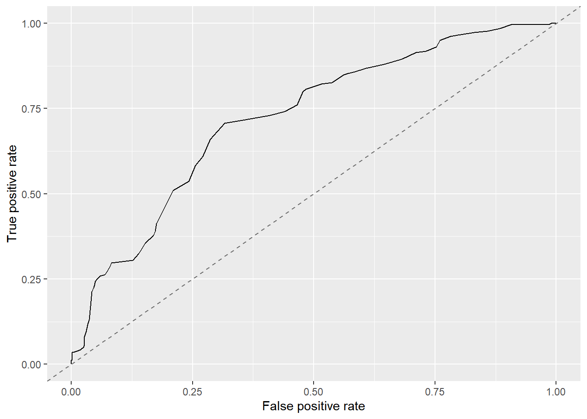
Based on this plot, a FP of around 0.5 an TP of around 0.75 seem to produce a good model. Digging into the df object, you can find the raw data underlying the curve in df$data and will find
## fpr tpr threshold
## 29 0.4653130 0.7606178 0.2828283
## 30 0.4399323 0.7413127 0.2929293
## 31 0.4094755 0.7297297 0.3030303This means for this model, if we were to use it we might want to set a threshold of around 0.3, i.e. everything above that probability would be predicted as positive/yes.
Trying a different model
Let’s see if we can find another model that might perform even better. Let’s look at a Linear Discriminant Analysis (LDA) model. See e.g. chapter 4 of ISLR for more on that model. We again consider AUC as our measure. The null-model performance is the same, we need to re-do the remainder.
Let’s re-run the single model, followed by the full model and subset selection.
#copy and paste the code from above for single predictor fits. Switch the learner from a the logistic model to a LDA model. Check the mlr website to figure out the name for that learner. (see 'integrated learner' section)
set.seed(1111) #makes each code block reproducible
#set learner/model. this corresponds to a logistic model.
#mlr calls different models different "learners"
#This learner is for Linear Discreate Analaysis (LDA)
learner_name = "classif.lda";
mylearner = makeLearner(learner_name, predict.type = "prob")
# this will contain the results
unifmat=data.frame(variable = rep(0,npred), AUC = rep(0,npred))
for (nn in 1:npred)
{
#auc <- measureAUC(gg2c4_first[,nn+1], outcome, subset_negative$gg2c4, subset_positive$gg2c4)
unidata = data.frame(gg2c4 = outcome, gg2c4_first[,nn+1] )
#auc <- auc(roc(gg2c4_first$gg2c4, positive_binary_tag))
## Generate the task, i.e. define outcome and predictors to be fit
mytask = makeClassifTask(id='unianalysis', data = unidata, target = outcomename, positive = "Yes")
model = resample(mylearner, task = mytask, resampling = sampling_choice, show.info = FALSE)
unifmat[nn,1] = names(predictors)[nn]
unifmat[nn,2] = model$aggr
}
kable(unifmat)| variable | AUC |
|---|---|
| Action1 | 0.3047059 |
| CasesAll | 0.3058824 |
| Country | 0.3047059 |
| Deaths | 0.3023529 |
| Hemisphere | 0.3047059 |
| Hospitalizations | 0.3063529 |
| MeanD1 | 0.3047059 |
| MeanI1 | 0.3047059 |
| MedianD1 | 0.3047059 |
| MedianI1 | 0.3047059 |
| OBYear | 0.3051765 |
| Path1 | 0.3070588 |
| RiskAll | 0.3028235 |
| season | 0.3065882 |
| Trans1 | 0.3047059 |
| Vomit | 0.3047059 |
| Setting | 0.3047059 |
#copy and paste the code from above for the full model fit, but now for LDA. Since you already switched the learner/model above, no further adjustment should be needed
set.seed(1111) #makes each code block reproducible
#do full model with Cross-Validation - to get an idea for the amount of over-fitting a full model does
mytask = makeClassifTask(id='fullanalysis', data = gg2c4_first, target = outcomename, positive = "Yes")
fullmodel = resample(mylearner, task = mytask, resampling = sampling_choice, show.info = FALSE)
AUC_fullmodel = fullmodel$aggr[1]
print(AUC_fullmodel)## mmce.test.mean
## 0.2898824#copy and paste the code from above for subset selection, now for LDA. Since you already switched the learner/model above, no further adjustment should be needed
set.seed(1111)
tstart=proc.time(); #capture current CPU time for timing how long things take
#do 2 forms of forward and backward selection, just to compare
select_methods=c("sbs","sfbs","sfs","sffs")
resmat=data.frame(method = rep(0,4), AUC = rep(0,4), Model = rep(0,4))
ct=1;
for (select_method in select_methods) #loop over all stepwise selection methods
{
ctrl = makeFeatSelControlSequential(method = select_method)
print(sprintf('doing subset selection with method %s ',select_method))
sfeat_res = selectFeatures(learner = mylearner,
task = mytask,
resampling = sampling_choice,
control = ctrl,
show.info = FALSE)
resmat[ct,1] = select_methods[ct]
resmat[ct,2] = sfeat_res$y
resmat[ct,3] = paste(as.vector(sfeat_res$x), collapse= ', ')
ct=ct+1;
}## [1] "doing subset selection with method sbs "
## [1] "doing subset selection with method sfbs "
## [1] "doing subset selection with method sfs "
## [1] "doing subset selection with method sffs "# do feature selection with genetic algorithm
maxit = 100 #number of iterations - should be large for 'production run'
ctrl_GA =makeFeatSelControlGA(maxit = maxit)
print(sprintf('doing subset selection with genetic algorithm'))## [1] "doing subset selection with genetic algorithm"sfeatga_res = selectFeatures(learner = mylearner,
task = mytask,
resampling = sampling_choice,
control = ctrl_GA,
show.info = FALSE)
resmat[5,1] = "GA"
resmat[5,2] = sfeatga_res$y
resmat[5,3] = paste(as.vector(sfeatga_res$x), collapse= ', ')
runtime.minutes_SS=(proc.time()-tstart)[[3]]/60; #total time in minutes the optimization took
print(sprintf('subset selection took %f minutes',runtime.minutes_SS));## [1] "subset selection took 1.714833 minutes"| method | AUC | Model |
|---|---|---|
| sbs | 0.2821176 | Action1, Country, Deaths, Hemisphere, OBYear, Path1, RiskAll, season, Trans1, Vomit, Setting |
| sfbs | 0.2811765 | Action1, Country, Deaths, OBYear, Path1, season, Trans1, Vomit, Setting |
| sfs | 0.3047059 | |
| sffs | 0.3047059 | |
| GA | 0.2863529 | Action1, Country, Deaths, Hemisphere, RiskAll, Vomit, Setting |
It Looks like we again get some sub-models that are slightly better than the full model, at least as evaluated using the (cross-validated) AUC measure. There seems to be a bit, but not much difference in performance to the logistic model. We can take the GA model again (because it’s conveniently at the end, even if it’s not the best) and look at its ROC and compare the curves for the LDA and logistic models.
#copy the code from roc-plot above and re-do train/predict but now save it as lda_mod and lda_pred
#then use generateThreshVsPerfData() with both lda_pred and log_pred (computed above) to create a structure that contains
#best model curves for both logistic and LDA, then plot the curves.
set.seed(1111) #makes each code block reproducible
d2 <- gg2c4_first %>% dplyr::select(gg2c4, sfeatga_res$x )
mytask = makeClassifTask(id='rocanalysis', data = d2, target = outcomename, positive = "Yes")
lda_mod = train(mylearner, mytask)
lda_pred = predict(lda_mod, task = mytask)
lda_pred## Prediction: 850 observations
## predict.type: prob
## threshold: No=0.50,Yes=0.50
## time: 0.02
## id truth prob.No prob.Yes response
## 1 1 No 0.7825221 0.21747793 No
## 2 2 No 0.7823488 0.21765119 No
## 3 3 No 0.8484739 0.15152612 No
## 4 4 No 0.9116073 0.08839274 No
## 5 5 No 0.8607772 0.13922279 No
## 6 6 No 0.8772361 0.12276394 No
## ... (#rows: 850, #cols: 5)## Prediction: 850 observations
## predict.type: prob
## threshold: No=0.50,Yes=0.50
## time: 0.00
## id truth prob.No prob.Yes response
## 1 1 No 0.6828058 0.31719421 No
## 2 2 No 0.6826736 0.31732644 No
## 3 3 No 0.8171145 0.18288554 No
## 4 4 No 0.9069865 0.09301353 No
## 5 5 No 0.9617729 0.03822715 No
## 6 6 No 0.8941284 0.10587157 No
## ... (#rows: 850, #cols: 5)df = generateThreshVsPerfData(list(logistic = lda_pred), measures = list(fpr, tpr))
plotROCCurves(df)
df = generateThreshVsPerfData(list(logistic = log_pred, LDA = lda_pred), measures = list(fpr, tpr))
plotROCCurves(df)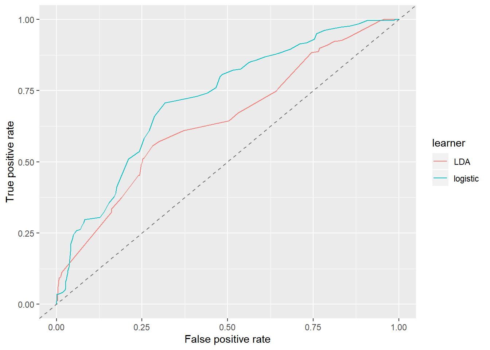
You should see from the plot that the LDA model performs very similar to the Logistic model.
Wrapping up
Based on the above, we could choose a model simply by best performance. However, we likely also still want to look at model prediction uncertainty and do some residual plots and other diagnostics for our chosen model before we finalize our choice. As was the case for caret, mlr also comes with lots of functions that make these - and many other - tasks easier. We’ll leave it at this for now, and might revisit some of those topics in further exercises.
Also, none of the models here are that great. We might want to think more about our initial premise, i.e. looking for associations between virus strain type and other variables and what the scientific rationale is for expecting variations. Here, we just ran the model and looked what we might find. That approach, sometimes called data exploration or data mining or - less charitable fishing expedition is ok, but we need to be careful how we interpret and use the results. Going in with a clear hypothesis is usually better.
A few more comments
Things are getting a bit slow now, despite the multiple cores we need minutes to run things. Also, code chunks get larger. At this point, it might be worth considering a structure whereby most of the code lives in one or several well documented R scripts, which can be run independently. Those R scripts should save their results, and those results are then loaded here. The advantage is that if one wants to make changes to a small part of the analysis, one can modify and run just that part and update the whole document by re-knitting without having to run all code. For any big/serious analysis, I suggest such a setup that splits R code from RMarkdown files, at least for the computationally intensive parts.